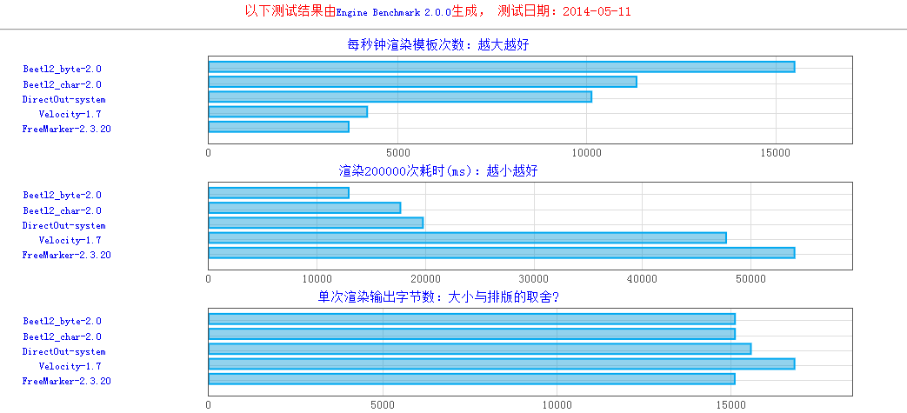
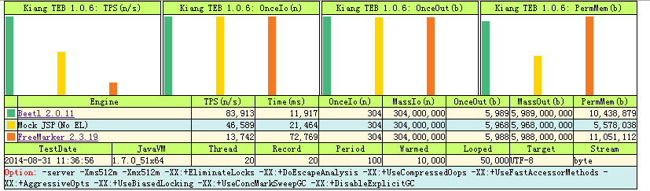
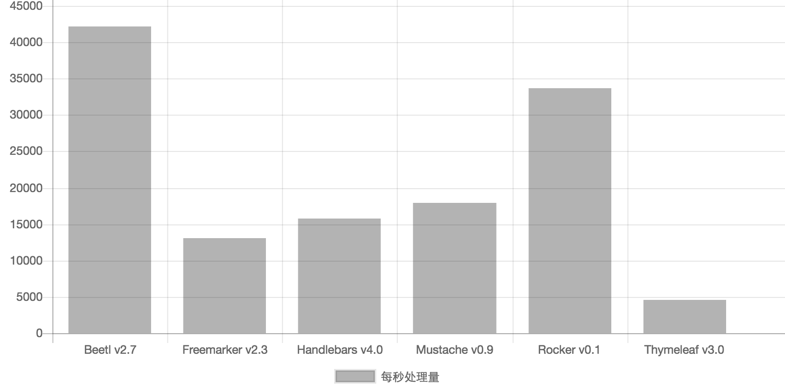

<!doctype html>
<html>
<head>
<meta charset='UTF-8'><meta name='viewport' content='width=device-width initial-scale=1'>
<title>Beetl Doc.md</title><link href='http://fonts.googleapis.com/css?family=Open+Sans:400italic,700italic,700,400&subset=latin,latin-ext' rel='stylesheet' type='text/css'><style type='text/css'>html, body {overflow-x: initial !important;}.CodeMirror { height: auto; }
.CodeMirror-scroll { overflow-y: hidden; overflow-x: auto; }
.CodeMirror-lines { padding: 4px 0px; }
.CodeMirror pre { }
.CodeMirror-scrollbar-filler, .CodeMirror-gutter-filler { background-color: white; }
.CodeMirror-gutters { border-right-width: 1px; border-right-style: solid; border-right-color: rgb(221, 221, 221); background-color: rgb(247, 247, 247); white-space: nowrap; }
.CodeMirror-linenumbers { }
.CodeMirror-linenumber { padding: 0px 3px 0px 5px; text-align: right; color: rgb(153, 153, 153); }
.CodeMirror div.CodeMirror-cursor { border-left-width: 1px; border-left-style: solid; border-left-color: black; z-index: 3; }
.CodeMirror div.CodeMirror-secondarycursor { border-left-width: 1px; border-left-style: solid; border-left-color: silver; }
.CodeMirror.cm-keymap-fat-cursor div.CodeMirror-cursor { width: auto; border: 0px; background-color: rgb(119, 238, 119); z-index: 1; background-position: initial initial; background-repeat: initial initial; }
.CodeMirror div.CodeMirror-cursor.CodeMirror-overwrite { }
.cm-tab { display: inline-block; }
.cm-s-typora-default .cm-header, .cm-s-typora-default .cm-property { color: rgb(217, 79, 138); }
.cm-s-typora-default pre.cm-header1:not(.cm-atom) :not(.cm-overlay) { font-size: 2rem; line-height: 2rem; }
.cm-s-typora-default pre.cm-header2:not(.cm-atom) :not(.cm-overlay) { font-size: 1.4rem; line-height: 1.4rem; }
.cm-s-typora-default .cm-atom, .cm-s-typora-default .cm-number { color: rgb(149, 132, 134); }
.cm-s-typora-default .cm-table-row, .cm-s-typora-default .cm-block-start { font-family: monospace; }
.cm-s-typora-default .cm-comment, .cm-s-typora-default .cm-code { color: rgb(74, 90, 159); font-family: monospace; }
.cm-s-typora-default .cm-tag { color: rgb(169, 68, 66); }
.cm-s-typora-default .cm-string { color: rgb(126, 134, 169); }
.cm-s-typora-default .cm-link { color: rgb(196, 122, 15); text-decoration: underline; }
.cm-s-typora-default .cm-variable-2, .cm-s-typora-default .cm-variable-1 { color: inherit; }
.cm-s-typora-default .cm-overlay { font-size: 1rem; font-family: monospace; }
.CodeMirror.cm-s-typora-default div.CodeMirror-cursor { border-left-width: 3px; border-left-style: solid; border-left-color: rgb(228, 98, 154); }
.cm-s-typora-default .CodeMirror-activeline-background { left: -60px; right: -30px; background-color: rgba(204, 204, 204, 0.2); background-position: initial initial; background-repeat: initial initial; }
.cm-s-typora-default .CodeMirror-gutters { border-right-style: none; background-color: inherit; }
.cm-s-typora-default .cm-trailing-space-new-line::after, .cm-startspace::after, .cm-starttab .cm-tab::after { content: '•'; position: absolute; left: 0px; opacity: 0; font-family: LetterGothicStd, monospace; }
.os-windows .cm-startspace::after, .os-windows .cm-starttab .cm-tab::after { left: -0.1em; }
.cm-starttab .cm-tab::after { content: ' '; }
.cm-startspace, .cm-tab, .cm-starttab, .cm-trailing-space-a, .cm-trailing-space-b, .cm-trailing-space-new-line { font-family: monospace; position: relative; }
.cm-s-typora-default .cm-trailing-space-new-line::after { content: '↓'; opacity: 0.3; }
.cm-s-inner .cm-keyword { color: rgb(119, 0, 136); }
.cm-s-inner .cm-atom, .cm-s-inner.cm-atom { color: rgb(34, 17, 153); }
.cm-s-inner .cm-number { color: rgb(17, 102, 68); }
.cm-s-inner .cm-def { color: rgb(0, 0, 255); }
.cm-s-inner .cm-variable { color: black; }
.cm-s-inner .cm-variable-2 { color: rgb(0, 85, 170); }
.cm-s-inner .cm-variable-3 { color: rgb(0, 136, 85); }
.cm-s-inner .cm-property { color: black; }
.cm-s-inner .cm-operator { color: rgb(152, 26, 26); }
.cm-s-inner .cm-comment, .cm-s-inner.cm-comment { color: rgb(170, 85, 0); }
.cm-s-inner .cm-string { color: rgb(170, 17, 17); }
.cm-s-inner .cm-string-2 { color: rgb(255, 85, 0); }
.cm-s-inner .cm-meta { color: rgb(85, 85, 85); }
.cm-s-inner .cm-qualifier { color: rgb(85, 85, 85); }
.cm-s-inner .cm-builtin { color: rgb(51, 0, 170); }
.cm-s-inner .cm-bracket { color: rgb(153, 153, 119); }
.cm-s-inner .cm-tag { color: rgb(17, 119, 0); }
.cm-s-inner .cm-attribute { color: rgb(0, 0, 204); }
.cm-s-inner .cm-header, .cm-s-inner.cm-header { color: blue; }
.cm-s-inner .cm-quote, .cm-s-inner.cm-quote { color: rgb(0, 153, 0); }
.cm-s-inner .cm-hr, .cm-s-inner.cm-hr { color: rgb(153, 153, 153); }
.cm-s-inner .cm-link, .cm-s-inner.cm-link { color: rgb(0, 0, 204); }
.cm-negative { color: rgb(221, 68, 68); }
.cm-positive { color: rgb(34, 153, 34); }
.cm-header, .cm-strong { font-weight: bold; }
.cm-del { text-decoration: line-through; }
.cm-em { font-style: italic; }
.cm-link { text-decoration: underline; }
.cm-error { color: rgb(255, 0, 0); }
.cm-invalidchar { color: rgb(255, 0, 0); }
.cm-constant { color: rgb(38, 139, 210); }
.cm-defined { color: rgb(181, 137, 0); }
div.CodeMirror span.CodeMirror-matchingbracket { color: rgb(0, 255, 0); }
div.CodeMirror span.CodeMirror-nonmatchingbracket { color: rgb(255, 34, 34); }
.cm-s-inner .CodeMirror-activeline-background { background-image: inherit; background-size: inherit; background-attachment: inherit; background-origin: inherit; background-clip: inherit; background-color: inherit; background-position: inherit inherit; background-repeat: inherit inherit; }
.CodeMirror { position: relative; overflow: hidden; }
.CodeMirror-scroll { margin-bottom: -30px; margin-right: -30px; padding-bottom: 30px; padding-right: 30px; height: 100%; outline: none; position: relative; box-sizing: content-box; }
.CodeMirror-sizer { position: relative; }
.CodeMirror-vscrollbar, .CodeMirror-hscrollbar, .CodeMirror-scrollbar-filler, .CodeMirror-gutter-filler { position: absolute; z-index: 6; display: none; }
.CodeMirror-vscrollbar { right: 0px; top: 0px; overflow-x: hidden; overflow-y: scroll; }
.CodeMirror-hscrollbar { bottom: 0px; left: 0px; overflow-y: hidden; overflow-x: scroll; }
.CodeMirror-scrollbar-filler { right: 0px; bottom: 0px; }
.CodeMirror-gutter-filler { left: 0px; bottom: 0px; }
.CodeMirror-gutters { position: absolute; left: 0px; top: 0px; padding-bottom: 30px; z-index: 3; }
.CodeMirror-gutter { white-space: normal; height: 100%; box-sizing: content-box; padding-bottom: 30px; margin-bottom: -32px; display: inline-block; }
.CodeMirror-gutter-elt { position: absolute; cursor: default; z-index: 4; }
.CodeMirror-lines { cursor: text; }
.CodeMirror pre { border-top-left-radius: 0px; border-top-right-radius: 0px; border-bottom-right-radius: 0px; border-bottom-left-radius: 0px; border-width: 0px; background-color: transparent; font-family: inherit; font-size: inherit; margin: 0px; white-space: pre; word-wrap: normal; color: inherit; z-index: 2; position: relative; overflow: visible; background-position: initial initial; background-repeat: initial initial; }
.CodeMirror-wrap pre { word-wrap: break-word; white-space: pre-wrap; word-break: normal; }
.CodeMirror-code pre { border-right-width: 30px; border-right-style: solid; border-right-color: transparent; width: -webkit-fit-content; }
.CodeMirror-wrap .CodeMirror-code pre { border-right-style: none; width: auto; }
.CodeMirror-linebackground { position: absolute; left: 0px; right: 0px; top: 0px; bottom: 0px; z-index: 0; }
.CodeMirror-linewidget { position: relative; z-index: 2; overflow: auto; }
.CodeMirror-widget { }
.CodeMirror-wrap .CodeMirror-scroll { overflow-x: hidden; }
.CodeMirror-measure { position: absolute; width: 100%; height: 0px; overflow: hidden; visibility: hidden; }
.CodeMirror-measure pre { position: static; }
.CodeMirror div.CodeMirror-cursor { position: absolute; visibility: hidden; border-right-style: none; width: 0px; }
.CodeMirror div.CodeMirror-cursor { visibility: hidden; }
.CodeMirror-focused div.CodeMirror-cursor { visibility: inherit; }
.CodeMirror-selected { background-color: rgb(217, 217, 217); background-position: initial initial; background-repeat: initial initial; }
.CodeMirror-focused .CodeMirror-selected { background-color: rgb(215, 212, 240); background-position: initial initial; background-repeat: initial initial; }
.cm-searching { background-color: rgba(255, 255, 0, 0.4); background-position: initial initial; background-repeat: initial initial; }
.CodeMirror span { }
@media print { 
  .CodeMirror div.CodeMirror-cursor { visibility: hidden; }
}
.CodeMirror-lint-markers { width: 16px; }
.CodeMirror-lint-tooltip { background-color: infobackground; border: 1px solid black; border-top-left-radius: 4px; border-top-right-radius: 4px; border-bottom-right-radius: 4px; border-bottom-left-radius: 4px; color: infotext; font-family: monospace; overflow: hidden; padding: 2px 5px; position: fixed; white-space: pre-wrap; z-index: 10000; max-width: 600px; opacity: 0; -webkit-transition: opacity 0.4s; transition: opacity 0.4s; font-size: 0.8em; }
.CodeMirror-lint-mark-error, .CodeMirror-lint-mark-warning { background-position: 0% 100%; background-repeat: repeat no-repeat; }
.CodeMirror-lint-mark-error { background-image: url(); }
.CodeMirror-lint-marker-error, .CodeMirror-lint-marker-warning { cursor: pointer; display: inline-block; height: 16px; width: 16px; vertical-align: middle; position: relative; background-position: 50% 50%; background-repeat: no-repeat no-repeat; }
.CodeMirror-lint-message-error, .CodeMirror-lint-message-warning { padding-left: 18px; background-position: 0% 0%; background-repeat: no-repeat no-repeat; }
.CodeMirror-lint-marker-error, .CodeMirror-lint-message-error { background-image: url(); }
.CodeMirror-lint-marker-warning, .CodeMirror-lint-message-warning { background-image: url(); }
.CodeMirror-lint-marker-multiple { background-image: url(data:image/png;base64,iVBORw0KGgoAAAANSUhEUgAAAAcAAAAHCAMAAADzjKfhAAAACVBMVEUAAAAAAAC/v7914kyHAAAAAXRSTlMAQObYZgAAACNJREFUeNo1ioEJAAAIwmz/H90iFFSGJgFMe3gaLZ0od+9/AQZ0ADosbYraAAAAAElFTkSuQmCC); width: 100%; height: 100%; background-position: 100% 100%; background-repeat: no-repeat no-repeat; }


html { font-size: 14px; background-color: rgb(255, 255, 255); color: rgb(51, 51, 51); }
body { margin: 0px; padding: 0px; height: auto; bottom: 0px; top: 0px; left: 0px; right: 0px; font-family: 'Helvetica Neue', Helvetica, Arial, sans-serif; font-size: 1rem; line-height: 1.42857143; overflow-x: hidden; background-image: inherit; background-size: inherit; background-attachment: inherit; background-origin: inherit; background-clip: inherit; background-color: inherit; background-position: inherit inherit; background-repeat: inherit inherit; }
a:active, a:hover { outline: 0px; }
.in-text-selection, ::selection { background-color: rgb(181, 214, 252); text-shadow: none; background-position: initial initial; background-repeat: initial initial; }
#write { margin: 0px auto; height: auto; width: inherit; word-break: normal; word-wrap: break-word; position: relative; padding-bottom: 70px; white-space: pre-wrap; overflow-x: auto; }
.for-image #write { padding-left: 8px; padding-right: 8px; }
body.typora-export { padding-left: 30px; padding-right: 30px; }
@media screen and (max-width: 500px) { 
  body.typora-export { padding-left: 0px; padding-right: 0px; }
  .CodeMirror-sizer { margin-left: 0px !important; }
  .CodeMirror-gutters { display: none !important; }
}
.typora-export #write { margin: 0px auto; }
#write > p:first-child, #write > ul:first-child, #write > ol:first-child, #write > pre:first-child, #write > blockquote:first-child, #write > div:first-child, #write > table:first-child { margin-top: 30px; }
#write li > table:first-child { margin-top: -20px; }
img { max-width: 100%; vertical-align: middle; }
input, button, select, textarea { color: inherit; font-family: inherit; font-size: inherit; font-style: inherit; font-variant-caps: inherit; font-weight: inherit; line-height: inherit; }
input[type="checkbox"], input[type="radio"] { line-height: normal; padding: 0px; }
::before, ::after, * { box-sizing: border-box; }
#write p, #write h1, #write h2, #write h3, #write h4, #write h5, #write h6, #write div, #write pre { width: inherit; }
#write p, #write h1, #write h2, #write h3, #write h4, #write h5, #write h6 { position: relative; }
h1 { font-size: 2rem; }
h2 { font-size: 1.8rem; }
h3 { font-size: 1.6rem; }
h4 { font-size: 1.4rem; }
h5 { font-size: 1.2rem; }
h6 { font-size: 1rem; }
p { -webkit-margin-before: 1rem; -webkit-margin-after: 1rem; -webkit-margin-start: 0px; -webkit-margin-end: 0px; }
.mathjax-block { margin-top: 0px; margin-bottom: 0px; -webkit-margin-before: 0rem; -webkit-margin-after: 0rem; }
.hidden { display: none; }
.md-blockmeta { color: rgb(204, 204, 204); font-weight: bold; font-style: italic; }
a { cursor: pointer; }
#write input[type="checkbox"] { cursor: pointer; width: inherit; height: inherit; margin: 4px 0px 0px; }
tr { page-break-inside: avoid; page-break-after: auto; }
thead { display: table-header-group; }
table { border-collapse: collapse; border-spacing: 0px; width: 100%; overflow: auto; page-break-inside: auto; text-align: left; }
table.md-table td { min-width: 80px; }
.CodeMirror-gutters { border-right-width: 0px; background-color: inherit; }
.CodeMirror { text-align: left; }
.CodeMirror-placeholder { opacity: 0.3; }
.CodeMirror pre { padding: 0px 4px; }
.CodeMirror-lines { padding: 0px; }
div.hr:focus { cursor: none; }
pre { white-space: pre-wrap; }
.CodeMirror-gutters { margin-right: 4px; }
.md-fences { font-size: 0.9rem; display: block; page-break-inside: avoid; text-align: left; overflow: visible; white-space: pre; background-image: inherit; background-size: inherit; background-attachment: inherit; background-origin: inherit; background-clip: inherit; background-color: inherit; position: relative !important; background-position: inherit inherit; background-repeat: inherit inherit; }
.md-diagram-panel { width: 100%; margin-top: 10px; text-align: center; padding-top: 0px; padding-bottom: 8px; overflow-x: auto; }
.md-fences .CodeMirror.CodeMirror-wrap { top: -1.6em; margin-bottom: -1.6em; }
.md-fences.mock-cm { white-space: pre-wrap; }
.show-fences-line-number .md-fences { padding-left: 0px; }
.show-fences-line-number .md-fences.mock-cm { padding-left: 40px; }
.footnotes { opacity: 0.8; font-size: 0.9rem; padding-top: 1em; padding-bottom: 1em; }
.footnotes + .footnotes { margin-top: -1em; }
.md-reset { margin: 0px; padding: 0px; border: 0px; outline: 0px; vertical-align: top; background-color: transparent; text-decoration: none; text-shadow: none; float: none; position: static; width: auto; height: auto; white-space: nowrap; cursor: inherit; line-height: normal; font-weight: normal; text-align: left; box-sizing: content-box; direction: ltr; background-position: initial initial; background-repeat: initial initial; }
li div { padding-top: 0px; }
blockquote { margin: 1rem 0px; }
li p, li .mathjax-block { margin: 0.5rem 0px; }
li { margin: 0px; position: relative; }
blockquote > :last-child { margin-bottom: 0px; }
blockquote > :first-child { margin-top: 0px; }
.footnotes-area { color: rgb(136, 136, 136); margin-top: 0.714rem; padding-bottom: 0.143rem; }
@media print { 
  html, body { height: 100%; }
  .typora-export * { -webkit-print-color-adjust: exact; }
  h1, h2, h3, h4, h5, h6 { page-break-after: avoid; break-after: avoid-page; orphans: 2; }
  p { orphans: 4; }
  html.blink-to-pdf { font-size: 13px; }
  .typora-export #write { padding-left: 1cm; padding-right: 1cm; }
  .typora-export #write::after { height: 0px; }
  @page { margin: 20mm 0mm; }
}
.footnote-line { margin-top: 0.714em; font-size: 0.7em; }
a img, img a { cursor: pointer; }
pre.md-meta-block { font-size: 0.8rem; min-height: 2.86rem; white-space: pre-wrap; background-color: rgb(204, 204, 204); display: block; overflow-x: hidden; background-position: initial initial; background-repeat: initial initial; }
p .md-image:only-child { display: inline-block; width: 100%; text-align: center; }
#write .MathJax_Display { margin: 0.8em 0px 0px; }
.mathjax-block { white-space: pre; overflow: hidden; width: 100%; }
p + .mathjax-block { margin-top: -1.143rem; }
.mathjax-block:not(:empty)::after { display: none; }
[contenteditable="true"]:active, [contenteditable="true"]:focus { outline: none; box-shadow: none; }
.task-list { list-style-type: none; }
.task-list-item { position: relative; padding-left: 1em; }
.task-list-item input { position: absolute; top: 0px; left: 0px; }
.math { font-size: 1rem; }
.md-toc { min-height: 3.58rem; position: relative; font-size: 0.9rem; border-top-left-radius: 10px; border-top-right-radius: 10px; border-bottom-right-radius: 10px; border-bottom-left-radius: 10px; }
.md-toc-content { position: relative; margin-left: 0px; }
.md-toc::after, .md-toc-content::after { display: none; }
.md-toc-item { display: block; color: rgb(65, 131, 196); text-decoration: none; }
.md-toc-inner:hover { }
.md-toc-inner { display: inline-block; cursor: pointer; }
.md-toc-h1 .md-toc-inner { margin-left: 0px; font-weight: bold; }
.md-toc-h2 .md-toc-inner { margin-left: 2em; }
.md-toc-h3 .md-toc-inner { margin-left: 4em; }
.md-toc-h4 .md-toc-inner { margin-left: 6em; }
.md-toc-h5 .md-toc-inner { margin-left: 8em; }
.md-toc-h6 .md-toc-inner { margin-left: 10em; }
@media screen and (max-width: 48em) { 
  .md-toc-h3 .md-toc-inner { margin-left: 3.5em; }
  .md-toc-h4 .md-toc-inner { margin-left: 5em; }
  .md-toc-h5 .md-toc-inner { margin-left: 6.5em; }
  .md-toc-h6 .md-toc-inner { margin-left: 8em; }
}
a.md-toc-inner { font-size: inherit; font-style: inherit; font-weight: inherit; line-height: inherit; }
.footnote-line a:not(.reversefootnote) { color: inherit; }
.md-attr { display: none; }
.md-fn-count::after { content: '.'; }
.md-tag { opacity: 0.5; }
.md-comment { color: rgb(162, 127, 3); opacity: 0.8; font-family: monospace; }
code { text-align: left; }
h1 .md-tag, h2 .md-tag, h3 .md-tag, h4 .md-tag, h5 .md-tag, h6 .md-tag { font-weight: initial; opacity: 0.35; }
a.md-print-anchor { border: none !important; display: inline-block !important; position: absolute !important; width: 1px !important; right: 0px !important; outline: none !important; background-color: transparent !important; text-shadow: initial !important; background-position: initial initial !important; background-repeat: initial initial !important; }
.md-inline-math .MathJax_SVG .noError { display: none !important; }
.mathjax-block .MathJax_SVG_Display { text-align: center; margin: 1em 0em; position: relative; text-indent: 0px; max-width: none; max-height: none; min-height: 0px; min-width: 100%; width: auto; display: block !important; }
.MathJax_SVG_Display, .md-inline-math .MathJax_SVG_Display { width: auto; margin: inherit; display: inline-block !important; }
.MathJax_SVG .MJX-monospace { font-family: monospace; }
.MathJax_SVG .MJX-sans-serif { font-family: sans-serif; }
.MathJax_SVG { display: inline; font-style: normal; font-weight: normal; line-height: normal; zoom: 90%; text-indent: 0px; text-align: left; text-transform: none; letter-spacing: normal; word-spacing: normal; word-wrap: normal; white-space: nowrap; float: none; direction: ltr; max-width: none; max-height: none; min-width: 0px; min-height: 0px; border: 0px; padding: 0px; margin: 0px; }
.MathJax_SVG * { -webkit-transition: none; transition: none; }


@include-when-export url(http://fonts.googleapis.com/css?family=Open+Sans:400italic,700italic,700,400&subset=latin,latin-ext);

/**
 * css forked from https://github.com/GitbookIO/gitbook 
 * www.gitbook.com
 * Apache License
 * https://github.com/GitbookIO/gitbook/blob/master/LICENSE
 **/

@font-face {
    font-family: 'Open Sans';
    font-style: normal;
    font-weight: normal;
    src: local('Open Sans Regular'),url('file:///Users/darren/Library/Application%20Support/abnerworks.Typora/themes/github/400.woff') format('woff')
}

@font-face {
    font-family: 'Open Sans';
    font-style: italic;
    font-weight: normal;
    src: local('Open Sans Italic'),url('file:///Users/darren/Library/Application%20Support/abnerworks.Typora/themes/github/400i.woff') format('woff')
}

@font-face {
    font-family: 'Open Sans';
    font-style: normal;
    font-weight: bold;
    src: local('Open Sans Bold'),url('file:///Users/darren/Library/Application%20Support/abnerworks.Typora/themes/github/700.woff') format('woff')
}

@font-face {
    font-family: 'Open Sans';
    font-style: italic;
    font-weight: bold;
    src: local('Open Sans Bold Italic'),url('file:///Users/darren/Library/Application%20Support/abnerworks.Typora/themes/github/700i.woff') format('woff')
}

html {
    font-size: 16px;
}

body {
    font-family: "Open Sans","Clear Sans","Helvetica Neue",Helvetica,Arial,sans-serif;
    color: rgb(51, 51, 51);
    line-height: 1.6;
}

#write{
    max-width: 860px;
  	margin: 0 auto;
  	padding: 20px 30px 40px 30px;
	padding-top: 20px;
    padding-bottom: 100px;
}
#write > ul:first-child,
#write > ol:first-child{
    margin-top: 30px;
}

body > *:first-child {
    margin-top: 0 !important;
}
body > *:last-child {
    margin-bottom: 0 !important;
}
a {
    color: #4183C4;
}
h1,
h2,
h3,
h4,
h5,
h6 {
    position: relative;
    margin-top: 1rem;
    margin-bottom: 1rem;
    font-weight: bold;
    line-height: 1.4;
    cursor: text;
}
h1:hover a.anchor,
h2:hover a.anchor,
h3:hover a.anchor,
h4:hover a.anchor,
h5:hover a.anchor,
h6:hover a.anchor {
    /*background: url("file:///Users/darren/Library/Application%20Support/images/modules/styleguide/para.png") no-repeat 10px center;*/
    text-decoration: none;
}
h1 tt,
h1 code {
    font-size: inherit;
}
h2 tt,
h2 code {
    font-size: inherit;
}
h3 tt,
h3 code {
    font-size: inherit;
}
h4 tt,
h4 code {
    font-size: inherit;
}
h5 tt,
h5 code {
    font-size: inherit;
}
h6 tt,
h6 code {
    font-size: inherit;
}
h1 {
    padding-bottom: .3em;
    font-size: 2.25em;
    line-height: 1.2;
    border-bottom: 1px solid #eee;
}
h2 {
   padding-bottom: .3em;
    font-size: 1.75em;
    line-height: 1.225;
    border-bottom: 1px solid #eee;
}
h3 {
    font-size: 1.5em;
    line-height: 1.43;
}
h4 {
    font-size: 1.25em;
}
h5 {
    font-size: 1em;
}
h6 {
   font-size: 1em;
    color: #777;
}
p,
blockquote,
ul,
ol,
dl,
table{
    margin: 0.8em 0;
}
li>ol,
li>ul {
    margin: 0 0;
}
hr {
    height: 4px;
    padding: 0;
    margin: 16px 0;
    background-color: #e7e7e7;
    border: 0 none;
    overflow: hidden;
    box-sizing: content-box;
    border-bottom: 1px solid #ddd;
}

body > h2:first-child {
    margin-top: 0;
    padding-top: 0;
}
body > h1:first-child {
    margin-top: 0;
    padding-top: 0;
}
body > h1:first-child + h2 {
    margin-top: 0;
    padding-top: 0;
}
body > h3:first-child,
body > h4:first-child,
body > h5:first-child,
body > h6:first-child {
    margin-top: 0;
    padding-top: 0;
}
a:first-child h1,
a:first-child h2,
a:first-child h3,
a:first-child h4,
a:first-child h5,
a:first-child h6 {
    margin-top: 0;
    padding-top: 0;
}
h1 p,
h2 p,
h3 p,
h4 p,
h5 p,
h6 p {
    margin-top: 0;
}
li p.first {
    display: inline-block;
}
ul,
ol {
    padding-left: 30px;
}
ul:first-child,
ol:first-child {
    margin-top: 0;
}
ul:last-child,
ol:last-child {
    margin-bottom: 0;
}
blockquote {
    border-left: 4px solid #dddddd;
    padding: 0 15px;
    color: #777777;
}
blockquote blockquote {
    padding-right: 0;
}
table {
    padding: 0;
    word-break: initial;
}
#write {
    overflow-x: auto;
}
table tr {
    border-top: 1px solid #cccccc;
    background-color: white;
    margin: 0;
    padding: 0;
}
table tr:nth-child(2n) {
    background-color: #f8f8f8;
}
table tr th {
    font-weight: bold;
    border: 1px solid #cccccc;
    text-align: left;
    margin: 0;
    padding: 6px 13px;
}
table tr td {
    border: 1px solid #cccccc;
    text-align: left;
    margin: 0;
    padding: 6px 13px;
}
table tr th:first-child,
table tr td:first-child {
    margin-top: 0;
}
table tr th:last-child,
table tr td:last-child {
    margin-bottom: 0;
}

.CodeMirror-gutters {
    border-right: 1px solid #ddd;
}

.md-fences,
code,
tt {
    border: 1px solid #ddd;
    background-color: #f8f8f8;
    border-radius: 3px;
    padding: 0;
    font-family: Consolas, "Liberation Mono", Courier, monospace;
    padding: 2px 4px 0px 4px;
    font-size: 0.9em;
}

.md-fences {
    margin-bottom: 15px;
    margin-top: 15px;
    padding: 0.2em 1em;
    padding-top: 8px;
    padding-bottom: 6px;
}
.task-list{
	padding-left: 0;
}

.task-list-item {
	padding-left:32px;
}

.task-list-item input {
  top: 3px;
  left: 8px;
}

@media screen and (min-width: 914px) {
    /*body {
        width: 854px;
        margin: 0 auto;
    }*/
}
@media print {
    html {
        font-size: 13px;
    }
    table,
    pre {
        page-break-inside: avoid;
    }
    pre {
        word-wrap: break-word;
    }
}

.md-fences {
	background-color: #f8f8f8;
}
#write pre.md-meta-block {
	padding: 1rem;
    font-size: 85%;
    line-height: 1.45;
    background-color: #f7f7f7;
    border: 0;
    border-radius: 3px;
    color: #777777;
    margin-top: 0 !important;
}

.mathjax-block>.code-tooltip {
	bottom: .375rem;
}

#write>h3.md-focus:before{
	left: -1.5625rem;
	top: .375rem;
}
#write>h4.md-focus:before{
	left: -1.5625rem;
	top: .285714286rem;
}
#write>h5.md-focus:before{
	left: -1.5625rem;
	top: .285714286rem;
}
#write>h6.md-focus:before{
	left: -1.5625rem;
	top: .285714286rem;
}
.md-image>.md-meta {
    border: 1px solid #ddd;
    background-color: #f8f8f8;
    border-radius: 3px;
    font-family: Consolas, "Liberation Mono", Courier, monospace;
    padding: 2px 4px 0px 4px;
    font-size: 0.9em;
    color: inherit;
}

.md-tag{
	color: inherit;
}

.md-toc { 
    margin-top:20px;
    padding-bottom:20px;
}

#typora-quick-open {
    border: 1px solid #ddd;
    background-color: #f8f8f8;
}

#typora-quick-open-item {
    background-color: #FAFAFA;
    border-color: #FEFEFE #e5e5e5 #e5e5e5 #eee;
    border-style: solid;
    border-width: 1px;
}

#md-notification:before {
    top: 10px;
}

/** focus mode */
.on-focus-mode blockquote {
    border-left-color: rgba(85, 85, 85, 0.12);
}

header, .context-menu, .megamenu-content, footer{
    font-family: "Segoe UI", "Arial", sans-serif;
}


</style>
</head>
<body class='typora-export' >
<div  id='write'  class = 'is-mac'><h2><a name='header-c6178' class='md-header-anchor '></a>Beetl2.7 中文文档</h2><p>Beetl作者：李家智 &lt;<a href='mailto:xiandafu@126.com'>xiandafu@126.com</a>&gt;</p><div class='md-toc' mdtype='toc'><p class="md-toc-content"><span class="md-toc-item md-toc-h2" data-ref="c6178"><a class="md-toc-inner" href="#header-c6178">Beetl2.7 中文文档</a></span><span class="md-toc-item md-toc-h3" data-ref="c6183"><a class="md-toc-inner" href="#header-c6183">1. 什么是Beetl</a></span><span class="md-toc-item md-toc-h3" data-ref="c6260"><a class="md-toc-inner" href="#header-c6260">2. 基本用法</a></span><span class="md-toc-item md-toc-h4" data-ref="c6261"><a class="md-toc-inner" href="#header-c6261">2.1. 安装</a></span><span class="md-toc-item md-toc-h4" data-ref="c6267"><a class="md-toc-inner" href="#header-c6267">2.2. 从GroupTemplate开始</a></span><span class="md-toc-item md-toc-h4" data-ref="c6312"><a class="md-toc-inner" href="#header-c6312">2.3. 模板基础配置</a></span><span class="md-toc-item md-toc-h4" data-ref="c6366"><a class="md-toc-inner" href="#header-c6366">2.4. 模板资源加载器</a></span><span class="md-toc-item md-toc-h5" data-ref="c6369"><a class="md-toc-inner" href="#header-c6369">2.4.1. 字符串模板加载器</a></span><span class="md-toc-item md-toc-h5" data-ref="c6372"><a class="md-toc-inner" href="#header-c6372">2.4.2. 文件资源模板加载器</a></span><span class="md-toc-item md-toc-h5" data-ref="c6378"><a class="md-toc-inner" href="#header-c6378">2.4.3. Classpath资源模板加载器</a></span><span class="md-toc-item md-toc-h5" data-ref="c6386"><a class="md-toc-inner" href="#header-c6386">2.4.4. WebApp资源模板加载器</a></span><span class="md-toc-item md-toc-h5" data-ref="c6395"><a class="md-toc-inner" href="#header-c6395">2.4.5. 自定义资源模板加载器</a></span><span class="md-toc-item md-toc-h4" data-ref="c6400"><a class="md-toc-inner" href="#header-c6400">2.5. 定界符与占位符号</a></span><span class="md-toc-item md-toc-h4" data-ref="c6436"><a class="md-toc-inner" href="#header-c6436">2.6. 注释</a></span><span class="md-toc-item md-toc-h4" data-ref="c6450"><a class="md-toc-inner" href="#header-c6450">2.7. 临时变量定义</a></span><span class="md-toc-item md-toc-h4" data-ref="c6456"><a class="md-toc-inner" href="#header-c6456">2.8. 全局变量定义</a></span><span class="md-toc-item md-toc-h4" data-ref="c6462"><a class="md-toc-inner" href="#header-c6462">2.9. 共享变量</a></span><span class="md-toc-item md-toc-h4" data-ref="c6469"><a class="md-toc-inner" href="#header-c6469">2.10. 模板变量</a></span><span class="md-toc-item md-toc-h4" data-ref="c6477"><a class="md-toc-inner" href="#header-c6477">2.11. 引用属性</a></span><span class="md-toc-item md-toc-h4" data-ref="c6502"><a class="md-toc-inner" href="#header-c6502">2.12. 属性赋值</a></span><span class="md-toc-item md-toc-h4" data-ref="c6508"><a class="md-toc-inner" href="#header-c6508">2.13. 算数表达式</a></span><span class="md-toc-item md-toc-h4" data-ref="c6516"><a class="md-toc-inner" href="#header-c6516">2.14. 逻辑表达式</a></span><span class="md-toc-item md-toc-h4" data-ref="c6525"><a class="md-toc-inner" href="#header-c6525">2.15. 循环语句</a></span><span class="md-toc-item md-toc-h5" data-ref="c6528"><a class="md-toc-inner" href="#header-c6528">2.15.1. for-in</a></span><span class="md-toc-item md-toc-h5" data-ref="c6559"><a class="md-toc-inner" href="#header-c6559">2.15.2. for(exp;exp;exp)</a></span><span class="md-toc-item md-toc-h5" data-ref="c6563"><a class="md-toc-inner" href="#header-c6563">2.15.3. while</a></span><span class="md-toc-item md-toc-h5" data-ref="c6567"><a class="md-toc-inner" href="#header-c6567">2.15.4. elsefor</a></span><span class="md-toc-item md-toc-h4" data-ref="c6573"><a class="md-toc-inner" href="#header-c6573">2.16. 条件语句</a></span><span class="md-toc-item md-toc-h5" data-ref="c6574"><a class="md-toc-inner" href="#header-c6574">2.16.1. if else</a></span><span class="md-toc-item md-toc-h5" data-ref="c6578"><a class="md-toc-inner" href="#header-c6578">2.16.2. switch-case</a></span><span class="md-toc-item md-toc-h5" data-ref="c6585"><a class="md-toc-inner" href="#header-c6585">2.16.3. select-case</a></span><span class="md-toc-item md-toc-h4" data-ref="c6595"><a class="md-toc-inner" href="#header-c6595">2.17. try-catch</a></span><span class="md-toc-item md-toc-h4" data-ref="c6605"><a class="md-toc-inner" href="#header-c6605">2.18. 虚拟属性</a></span><span class="md-toc-item md-toc-h4" data-ref="c6615"><a class="md-toc-inner" href="#header-c6615">2.19. 函数调用</a></span><span class="md-toc-item md-toc-h4" data-ref="c6700"><a class="md-toc-inner" href="#header-c6700">2.20. 安全输出</a></span><span class="md-toc-item md-toc-h5" data-ref="c6743"><a class="md-toc-inner" href="#header-c6743">2.20.1. 变量是否存在</a></span><span class="md-toc-item md-toc-h5" data-ref="c6755"><a class="md-toc-inner" href="#header-c6755">2.20.2. 安全输出表达式</a></span><span class="md-toc-item md-toc-h4" data-ref="c6781"><a class="md-toc-inner" href="#header-c6781">2.21. 格式化</a></span><span class="md-toc-item md-toc-h4" data-ref="c6795"><a class="md-toc-inner" href="#header-c6795">2.22. 标签函数</a></span><span class="md-toc-item md-toc-h4" data-ref="c6820"><a class="md-toc-inner" href="#header-c6820">2.23. HTML标签</a></span><span class="md-toc-item md-toc-h4" data-ref="c6862"><a class="md-toc-inner" href="#header-c6862">2.24. 绑定变量的HTML标签</a></span><span class="md-toc-item md-toc-h4" data-ref="c6880"><a class="md-toc-inner" href="#header-c6880">2.25. 直接调用java方法和属性</a></span><span class="md-toc-item md-toc-h4" data-ref="c6908"><a class="md-toc-inner" href="#header-c6908">2.26. 严格MVC控制</a></span><span class="md-toc-item md-toc-h4" data-ref="c6935"><a class="md-toc-inner" href="#header-c6935">2.27. 指令</a></span><span class="md-toc-item md-toc-h4" data-ref="c6961"><a class="md-toc-inner" href="#header-c6961">2.28. 类型声明</a></span><span class="md-toc-item md-toc-h4" data-ref="c6978"><a class="md-toc-inner" href="#header-c6978">2.29. 错误处理</a></span><span class="md-toc-item md-toc-h4" data-ref="c7002"><a class="md-toc-inner" href="#header-c7002">2.30. Beetl小工具</a></span><span class="md-toc-item md-toc-h4" data-ref="c7033"><a class="md-toc-inner" href="#header-c7033">2.31. 琐碎功能</a></span><span class="md-toc-item md-toc-h3" data-ref="c7044"><a class="md-toc-inner" href="#header-c7044">3. 高级功能</a></span><span class="md-toc-item md-toc-h4" data-ref="c7045"><a class="md-toc-inner" href="#header-c7045">3.1. 配置GroupTemplate</a></span><span class="md-toc-item md-toc-h4" data-ref="c7071"><a class="md-toc-inner" href="#header-c7071">3.2. 自定义方法</a></span><span class="md-toc-item md-toc-h5" data-ref="c7072"><a class="md-toc-inner" href="#header-c7072">3.2.1. 实现Function</a></span><span class="md-toc-item md-toc-h5" data-ref="c7109"><a class="md-toc-inner" href="#header-c7109">3.2.2. 使用普通的java类</a></span><span class="md-toc-item md-toc-h5" data-ref="c7129"><a class="md-toc-inner" href="#header-c7129">3.2.3. 使用模板文件作为方法</a></span><span class="md-toc-item md-toc-h4" data-ref="c7148"><a class="md-toc-inner" href="#header-c7148">3.3. 自定义格式化函数</a></span><span class="md-toc-item md-toc-h4" data-ref="c7159"><a class="md-toc-inner" href="#header-c7159">3.4. 自定义标签</a></span><span class="md-toc-item md-toc-h5" data-ref="c7162"><a class="md-toc-inner" href="#header-c7162">3.4.1. 标签函数</a></span><span class="md-toc-item md-toc-h4" data-ref="c7193"><a class="md-toc-inner" href="#header-c7193">3.5. 自定义虚拟属性</a></span><span class="md-toc-item md-toc-h4" data-ref="c7210"><a class="md-toc-inner" href="#header-c7210">3.6. 使用额外的资源加载器</a></span><span class="md-toc-item md-toc-h4" data-ref="c7218"><a class="md-toc-inner" href="#header-c7218">3.7. 自定义资源加载器</a></span><span class="md-toc-item md-toc-h4" data-ref="c7238"><a class="md-toc-inner" href="#header-c7238">3.8. 使用CompositeResourceLoader</a></span><span class="md-toc-item md-toc-h4" data-ref="c7252"><a class="md-toc-inner" href="#header-c7252">3.9. 自定义错误处理器</a></span><span class="md-toc-item md-toc-h4" data-ref="c7306"><a class="md-toc-inner" href="#header-c7306">3.10. 自定义安全管理器</a></span><span class="md-toc-item md-toc-h4" data-ref="c7314"><a class="md-toc-inner" href="#header-c7314">3.11. 注册全局共享变量</a></span><span class="md-toc-item md-toc-h4" data-ref="c7319"><a class="md-toc-inner" href="#header-c7319">3.12. 布局</a></span><span class="md-toc-item md-toc-h4" data-ref="c7345"><a class="md-toc-inner" href="#header-c7345">3.13. 性能优化</a></span><span class="md-toc-item md-toc-h4" data-ref="c7365"><a class="md-toc-inner" href="#header-c7365">3.14. 分布式缓存模板</a></span><span class="md-toc-item md-toc-h4" data-ref="c7373"><a class="md-toc-inner" href="#header-c7373">3.15. 定制输出</a></span><span class="md-toc-item md-toc-h4" data-ref="c7381"><a class="md-toc-inner" href="#header-c7381">3.16. 定制模板引擎</a></span><span class="md-toc-item md-toc-h4" data-ref="c7413"><a class="md-toc-inner" href="#header-c7413">3.17. 直接运行Beetl脚本</a></span><span class="md-toc-item md-toc-h3" data-ref="c7444"><a class="md-toc-inner" href="#header-c7444">4. Web集成</a></span><span class="md-toc-item md-toc-h4" data-ref="c7445"><a class="md-toc-inner" href="#header-c7445">4.1. Web提供的全局变量</a></span><span class="md-toc-item md-toc-h4" data-ref="c7483"><a class="md-toc-inner" href="#header-c7483">4.2. 集成技术开发指南</a></span><span class="md-toc-item md-toc-h4" data-ref="c7489"><a class="md-toc-inner" href="#header-c7489">4.3. Serlvet集成</a></span><span class="md-toc-item md-toc-h4" data-ref="c7497"><a class="md-toc-inner" href="#header-c7497">4.4. SpringMVC集成</a></span><span class="md-toc-item md-toc-h4" data-ref="c7513"><a class="md-toc-inner" href="#header-c7513">4.5. SpringMVC集成高级</a></span><span class="md-toc-item md-toc-h4" data-ref="c7593"><a class="md-toc-inner" href="#header-c7593">4.6. Spring Boot集成</a></span><span class="md-toc-item md-toc-h4" data-ref="c7604"><a class="md-toc-inner" href="#header-c7604">4.7. Jodd集成</a></span><span class="md-toc-item md-toc-h4" data-ref="c7619"><a class="md-toc-inner" href="#header-c7619">4.8. JFinal集成</a></span><span class="md-toc-item md-toc-h4" data-ref="c7633"><a class="md-toc-inner" href="#header-c7633">4.9. Nutz集成</a></span><span class="md-toc-item md-toc-h4" data-ref="c7643"><a class="md-toc-inner" href="#header-c7643">4.10. Struts2集成</a></span><span class="md-toc-item md-toc-h4" data-ref="c7657"><a class="md-toc-inner" href="#header-c7657">4.11. 直接Web中运行Beetl模板</a></span><span class="md-toc-item md-toc-h4" data-ref="c7690"><a class="md-toc-inner" href="#header-c7690">4.12. 整合ajax的局部渲染技术</a></span><span class="md-toc-item md-toc-h4" data-ref="c7736"><a class="md-toc-inner" href="#header-c7736">4.13. 在页面输出错误提示信息</a></span><span class="md-toc-item md-toc-h3" data-ref="c7744"><a class="md-toc-inner" href="#header-c7744">5. 附录</a></span><span class="md-toc-item md-toc-h4" data-ref="c7745"><a class="md-toc-inner" href="#header-c7745">5.1. 内置方法</a></span><span class="md-toc-item md-toc-h5" data-ref="c7746"><a class="md-toc-inner" href="#header-c7746">5.1.1. 常用内置方法</a></span><span class="md-toc-item md-toc-h5" data-ref="c7808"><a class="md-toc-inner" href="#header-c7808">5.1.2. 字符串相关方法</a></span><span class="md-toc-item md-toc-h5" data-ref="c7858"><a class="md-toc-inner" href="#header-c7858">5.1.3. 数组相关方法</a></span><span class="md-toc-item md-toc-h5" data-ref="c7878"><a class="md-toc-inner" href="#header-c7878">5.1.4. 正则表达式相关方法</a></span><span class="md-toc-item md-toc-h5" data-ref="c7898"><a class="md-toc-inner" href="#header-c7898">5.1.5. Spring 相关函数</a></span><span class="md-toc-item md-toc-h5" data-ref="c7953"><a class="md-toc-inner" href="#header-c7953">5.1.6. Spring security</a></span><span class="md-toc-item md-toc-h5" data-ref="c7980"><a class="md-toc-inner" href="#header-c7980">5.1.7. shiro</a></span><span class="md-toc-item md-toc-h4" data-ref="c7985"><a class="md-toc-inner" href="#header-c7985">5.2. 内置格式化方法</a></span><span class="md-toc-item md-toc-h4" data-ref="c7994"><a class="md-toc-inner" href="#header-c7994">5.3. 内置标签函数</a></span><span class="md-toc-item md-toc-h4" data-ref="c8057"><a class="md-toc-inner" href="#header-c8057">5.4. 性能优化的秘密</a></span><span class="md-toc-item md-toc-h4" data-ref="c8096"><a class="md-toc-inner" href="#header-c8096">5.5. 性能测试对比</a></span><span class="md-toc-item md-toc-h4" data-ref="c8172"><a class="md-toc-inner" href="#header-c8172">5.6. Beetl 开发团队</a></span></p></div><h3><a name='header-c6183' class='md-header-anchor '></a>1. 什么是Beetl</h3><p>Beetl目前版本是2.7.3,相对于其他java模板引擎，具有功能齐全，语法直观,性能超高，以及编写的模板容易维护等特点。使得开发和维护模板有很好的体验。是新一代的模板引擎。总得来说，它的特性如下：</p><ul><li>功能完备：作为主流模板引擎，Beetl具有相当多的功能和其他模板引擎不具备的功能。适用于<em>各种应用场景</em>，从对响应速度有很高要求的大网站到功能繁多的CMS管理系统都适合。Beetl本身还具有很多独特功能来完成模板编写和维护，这是其他模板引擎所不具有的。</li><li>非常简单：类似Javascript语法和习俗，只要半小时就能通过半学半猜完全掌握用法。拒绝其他模板引擎那种非人性化的语法和习俗。同时也能支持html 标签，使得开发CMS系统比较容易</li><li>超高的性能：Beetl 远超过主流java模板引擎性能(引擎性能5-6倍与freemaker，2倍于JSP。参考附录），而且消耗较低的CPU。</li><li>易于整合：Beetl能很容易的与各种web框架整合，如Spring MVC，JFinal，Struts，Nutz，Jodd，Servlet等。</li><li>支持模板单独开发和测试，即在MVC架构中，即使没有M和C部分，也能开发和测试模板。</li><li>扩展和个性化：Beetl支持自定义方法，格式化函数，虚拟属性，标签，和HTML标签. 同时Beetl也支持自定义占位符和控制语句起始符号也支持使用者完全可以打造适合自己的工具包。</li></ul><blockquote><h4><a name='header-c6206' class='md-header-anchor '></a>关于性能</h4><p>通过与主流模板引擎Freemarker，Vecloity以及JSP对比，Beetl6倍于Freemarker，2倍于JSP。这是因为宏观上，通过了优化的渲染引擎，IO的二进制输出，字节码属性访问增强，微观上，通过一维数组保存上下文Context,静态文本合并处理，通过重复使用字节数组来防止java频繁的创建和销毁数组，还使用模板缓存，运行时优化等方法。详情参考附录</p></blockquote><blockquote><h4><a name='header-c6210' class='md-header-anchor '></a>独特功能</h4><p>Beetl有些功能是发展了10多年的模板引擎所不具备的，这些功能非常利于模板的开发和维护，如下</p><ol start='' ><li>自定义占位符和控制语句起始符号，这有利于减小模板语法对模板的倾入性，比如在html模板中，如果定义控制语句符号是<code>&lt;!--:</code>和<code>--&gt;</code>,那么，大部分模板文件都能通过浏览器打开。有的使用者仅仅采用了单个符号<code>@</code> （或者单个符号“<code>～</code>”）以及回车换号作为控制语句起始符号，这又能提高开发效率</li><li>可单独测试的模板。无需真正的控制层和模型层，Beetl的模板就可以单独开发和测试</li><li>同时支持较为松散的MVC和严格的MVC，如果在模板语言里嵌入计算表达式，复杂条件表达式，以及函数调用有干涉业务逻辑嫌疑，你可以禁止使用这些语法。</li><li>强大的安全输出，通过安全输出符号！，能在模板变量，变量属性引用，for循环，占位符输出，try-catch中等各个地方提供安全输出，保证渲染正常。</li><li>模板变量：运行将模板的某一部分输出像js那样赋值给一个变量，稍后再处理。利用模板变量能完成非常复杂的页面布局（简单的布局可使用include,layout标签函数) 6. 类型推测，能在运行的时候推测模板变量类型，从而优化性能，也可以通过注解的方法显示的说明模板变量属性（这是非必须的，但有助于IDE自动提示功能） 7. 可插拔的设计，错误信息提示，模板引擎缓存机制，模板资源管理，本地调用的安全管理器,严格MVC限制，模板引擎本身都有默认的实现，但又完全可以自定义以适合特定需求 8. 增强的语法，如for-elsefor, select-case，安全输出符号!,省略的三元表达式 等，这些语法特别适合模板开发 9. 局部渲染技术，结合现在js的ajax技术。 10. 性能超高,具有最快的模板解释引擎，同时，又有较低的CPU消耗。5-6倍于国内使用的Freemaker。适合各类模板应用，如代码生成工具，CMS系统，普通网站，超高访问量的门户系统，和富客户端JS框架整合的后台管理应用</li></ol></blockquote><blockquote><h4><a name='header-c6230' class='md-header-anchor '></a>小白如何开始</h4><ul><li>需要通读基本用法，大部分都是讲解语法，而语法跟js很接近，所以可以快速预览，但Beetl是针对模板设计， 所以像安全输出，标签和html标签，全局变量，临时变量和共享变量，布局技术，以及直接调用java代码等还需要认真读一遍。</li><li>如果从事web开发，还需要阅读web集成里的第一节“web提供的全局变量”，如果web里还使用ajax技术，可以阅读“整合ajax的局部渲染技术”。</li><li>包含有spring,jfinal,jodd,struts 等demo可以作为参考学习用 <a href='http://ibeetl.com/community/?/article/4'>http://ibeetl.com/community/?/article/4</a></li><li>任何问题，都可以在ibeetl.com 社区上提问。目前答复率是100%，提问需要详细说明自己的期望，出错信息，附上代码或者图片</li></ul></blockquote><blockquote><h4><a name='header-c6245' class='md-header-anchor '></a>联系作者</h4><p>作者：闲.大赋 （李家智）等（参考附录查看代码贡献者)</p><p>QQ技术交流群：219324263</p><p>邮件：<a href='mailto:xiandafu@126.com'>xiandafu@126.com</a></p><p>Beetl社区：<a href='http://ibeetl.com'>ibeetl.com</a></p><p>源码主页：<a href='https://github.com/javamonkey/beetl2.0' target='_blank' >https://github.com/javamonkey/beetl2.0</a></p><p>在线体验和代码分享 <a href='http://ibeetl.com:8080/beetlonline/'>http://ibeetl.com:8080/beetlonline/</a></p></blockquote><p></p><h3><a name='header-c6260' class='md-header-anchor '></a>2. 基本用法</h3><h4><a name='header-c6261' class='md-header-anchor '></a>2.1. 安装</h4><p>如果使用maven，请使用如下坐标</p><pre class="md-fences md-end-block md-fences-with-lineno" lang="xml"> <div class="CodeMirror cm-s-inner CodeMirror-wrap"><div style="overflow: hidden; position: relative; width: 3px; height: 0px; top: 0px; left: 31px;"></div><div class="CodeMirror-hscrollbar" style="left: 27px;"><div style="height: 100%; min-height: 1px; width: 0px;"></div></div><div class="CodeMirror-vscrollbar"><div style="min-width: 1px; height: 0px;"></div></div><div class="CodeMirror-scrollbar-filler"></div><div class="CodeMirror-gutter-filler"></div><div class="CodeMirror-scroll" tabindex="-1"><div class="CodeMirror-sizer" style="margin-left: 27px; min-height: 0px;"><div style="position: relative; top: 0px;"><div class="CodeMirror-lines"><div style="position: relative; outline: none;"><div class="CodeMirror-measure"><div style="width: 50px; height: 50px; overflow-x: scroll;"></div></div><div class="CodeMirror-measure"></div><div style="position: relative; z-index: 1;"></div><div class="CodeMirror-code" style=""><div class="CodeMirror-activeline" style="position: relative;"><div class="CodeMirror-activeline-background CodeMirror-linebackground"></div><div class="CodeMirror-gutter-wrapper" style="position: absolute; left: -27px;"><div class="CodeMirror-linenumber CodeMirror-gutter-elt CodeMirror-linenumber-show" style="left: 0px; width: 18px;">1</div></div><pre class=""><span style="padding-right: 0.1px;"><span class="cm-tag cm-bracket">&lt;</span><span class="cm-tag">dependency</span><span class="cm-tag cm-bracket">&gt;</span></span></pre></div><div style="position: relative;"><div class="CodeMirror-gutter-wrapper" style="position: absolute; left: -27px;"><div class="CodeMirror-linenumber CodeMirror-gutter-elt" style="left: 0px; width: 18px;">2</div></div><pre class=""><span style="padding-right: 0.1px;"><span class="cm-tab">    </span><span class="cm-tag cm-bracket">&lt;</span><span class="cm-tag">groupId</span><span class="cm-tag cm-bracket">&gt;</span>com.ibeetl<span class="cm-tag cm-bracket">&lt;/</span><span class="cm-tag">groupId</span><span class="cm-tag cm-bracket">&gt;</span></span></pre></div><div style="position: relative;"><div class="CodeMirror-gutter-wrapper" style="position: absolute; left: -27px;"><div class="CodeMirror-linenumber CodeMirror-gutter-elt" style="left: 0px; width: 18px;">3</div></div><pre class=""><span style="padding-right: 0.1px;"><span class="cm-tab">    </span><span class="cm-tag cm-bracket">&lt;</span><span class="cm-tag">artifactId</span><span class="cm-tag cm-bracket">&gt;</span>beetl<span class="cm-tag cm-bracket">&lt;/</span><span class="cm-tag">artifactId</span><span class="cm-tag cm-bracket">&gt;</span></span></pre></div><div style="position: relative;"><div class="CodeMirror-gutter-wrapper" style="position: absolute; left: -27px;"><div class="CodeMirror-linenumber CodeMirror-gutter-elt" style="left: 0px; width: 18px;">4</div></div><pre class=""><span style="padding-right: 0.1px;"><span class="cm-tab">    </span><span class="cm-tag cm-bracket">&lt;</span><span class="cm-tag">version</span><span class="cm-tag cm-bracket">&gt;</span>2.7.0<span class="cm-tag cm-bracket">&lt;/</span><span class="cm-tag">version</span><span class="cm-tag cm-bracket">&gt;</span></span></pre></div><div style="position: relative;"><div class="CodeMirror-gutter-wrapper" style="position: absolute; left: -27px;"><div class="CodeMirror-linenumber CodeMirror-gutter-elt CodeMirror-linenumber-show" style="left: 0px; width: 18px;">5</div></div><pre class=""><span style="padding-right: 0.1px;"><span class="cm-tag cm-bracket">&lt;/</span><span class="cm-tag">dependency</span><span class="cm-tag cm-bracket">&gt;</span></span></pre></div></div></div></div></div></div><div style="position: absolute; height: 30px; width: 1px; top: 0px;"></div><div class="CodeMirror-gutters" style="height: 110px;"><div class="CodeMirror-gutter CodeMirror-linenumbers" style="width: 26px;"></div></div></div></div></pre><p>如果非maven工程，直接下载<a href='http://git.oschina.net/xiandafu/beetl2.0/attach_files'>http://git.oschina.net/xiandafu/beetl2.0/attach_files</a></p><h4><a name='header-c6267' class='md-header-anchor '></a>2.2. 从GroupTemplate开始</h4><pre class="md-fences md-end-block md-fences-with-lineno" lang="java"> <div class="CodeMirror cm-s-inner CodeMirror-wrap"><div style="overflow: hidden; position: relative; width: 3px; height: 0px; top: 0px; left: 31px;"></div><div class="CodeMirror-hscrollbar" style="left: 27px;"><div style="height: 100%; min-height: 1px; width: 0px;"></div></div><div class="CodeMirror-vscrollbar"><div style="min-width: 1px; height: 0px;"></div></div><div class="CodeMirror-scrollbar-filler"></div><div class="CodeMirror-gutter-filler"></div><div class="CodeMirror-scroll" tabindex="-1"><div class="CodeMirror-sizer" style="margin-left: 27px; min-height: 0px;"><div style="position: relative; top: 0px;"><div class="CodeMirror-lines"><div style="position: relative; outline: none;"><div class="CodeMirror-measure"><div style="width: 50px; height: 50px; overflow-x: scroll;"></div></div><div class="CodeMirror-measure"></div><div style="position: relative; z-index: 1;"></div><div class="CodeMirror-code" style=""><div class="CodeMirror-activeline" style="position: relative;"><div class="CodeMirror-activeline-background CodeMirror-linebackground"></div><div class="CodeMirror-gutter-wrapper" style="position: absolute; left: -27px;"><div class="CodeMirror-linenumber CodeMirror-gutter-elt CodeMirror-linenumber-show" style="left: 0px; width: 18px;">1</div></div><pre class=""><span style="padding-right: 0.1px;"><span class="cm-variable">StringTemplateResourceLoader</span> <span class="cm-variable">resourceLoader</span> <span class="cm-operator">=</span> <span class="cm-keyword">new</span> <span class="cm-variable">StringTemplateResourceLoader</span>();</span></pre></div><div style="position: relative;"><div class="CodeMirror-gutter-wrapper" style="position: absolute; left: -27px;"><div class="CodeMirror-linenumber CodeMirror-gutter-elt" style="left: 0px; width: 18px;">2</div></div><pre class=""><span style="padding-right: 0.1px;"><span class="cm-variable">Configuration</span> <span class="cm-variable">cfg</span> <span class="cm-operator">=</span> <span class="cm-variable">Configuration</span>.<span class="cm-variable">defaultConfiguration</span>();</span></pre></div><div style="position: relative;"><div class="CodeMirror-gutter-wrapper" style="position: absolute; left: -27px;"><div class="CodeMirror-linenumber CodeMirror-gutter-elt" style="left: 0px; width: 18px;">3</div></div><pre class=""><span style="padding-right: 0.1px;"><span class="cm-variable">GroupTemplate</span> <span class="cm-variable">gt</span> <span class="cm-operator">=</span> <span class="cm-keyword">new</span> <span class="cm-variable">GroupTemplate</span>(<span class="cm-variable">resourceLoader</span>, <span class="cm-variable">cfg</span>);</span></pre></div><div style="position: relative;"><div class="CodeMirror-gutter-wrapper" style="position: absolute; left: -27px;"><div class="CodeMirror-linenumber CodeMirror-gutter-elt" style="left: 0px; width: 18px;">4</div></div><pre class=""><span style="padding-right: 0.1px;"><span class="cm-variable">Template</span> <span class="cm-variable">t</span> <span class="cm-operator">=</span> <span class="cm-variable">gt</span>.<span class="cm-variable">getTemplate</span>(<span class="cm-string">"hello,${name}"</span>);</span></pre></div><div style="position: relative;"><div class="CodeMirror-gutter-wrapper" style="position: absolute; left: -27px;"><div class="CodeMirror-linenumber CodeMirror-gutter-elt" style="left: 0px; width: 18px;">5</div></div><pre class=""><span style="padding-right: 0.1px;"><span class="cm-variable">t</span>.<span class="cm-variable">binding</span>(<span class="cm-string">"name"</span>, <span class="cm-string">"beetl"</span>);</span></pre></div><div style="position: relative;"><div class="CodeMirror-gutter-wrapper" style="position: absolute; left: -27px;"><div class="CodeMirror-linenumber CodeMirror-gutter-elt" style="left: 0px; width: 18px;">6</div></div><pre class=""><span style="padding-right: 0.1px;"><span class="cm-variable-3">String</span> <span class="cm-variable">str</span> <span class="cm-operator">=</span> <span class="cm-variable">t</span>.<span class="cm-variable">render</span>();</span></pre></div><div style="position: relative;"><div class="CodeMirror-gutter-wrapper" style="position: absolute; left: -27px;"><div class="CodeMirror-linenumber CodeMirror-gutter-elt CodeMirror-linenumber-show" style="left: 0px; width: 18px;">7</div></div><pre class=""><span style="padding-right: 0.1px;"><span class="cm-variable">System</span>.<span class="cm-variable">out</span>.<span class="cm-variable">println</span>(<span class="cm-variable">str</span>);</span></pre></div></div></div></div></div></div><div style="position: absolute; height: 30px; width: 1px; top: 0px;"></div><div class="CodeMirror-gutters" style="height: 154px;"><div class="CodeMirror-gutter CodeMirror-linenumbers" style="width: 26px;"></div></div></div></div></pre><p>Beetl的核心是GroupTemplate，创建GroupTemplate需要俩个参数，一个是模板资源加载器，一个是配置类，模板资源加载器Beetl内置了6种，分别是</p><ul><li>StringTemplateResourceLoader：字符串模板加载器，用于加载字符串模板，如本例所示</li><li>FileResourceLoader：文件模板加载器，需要一个根目录作为参数构造，传入getTemplate方法的String是模板文件相对于Root目录的相对路径</li><li>ClasspathResourceLoader：文件模板加载器，模板文件位于Classpath里</li><li>WebAppResourceLoader：用于webapp集成，假定模板根目录就是WebRoot目录，参考web集成章</li><li>MapResourceLoader : 可以动态存入模板</li><li>CompositeResourceLoader 混合使用多种加载方式</li></ul><p>代码第5行将变量name传入模板里，其值是“Beetl”。 代码第6行是渲染模板，得到输出，template提供了多种获得渲染输出的方法，如下</p><ul><li>tempalte.render() 返回渲染结果，如本例所示</li><li>template.renderTo(Writer) 渲染结果输出到Writer里</li><li>template.renderTo(OutputStream ) 渲染结果输出到OutputStream里</li></ul><blockquote><ol start='' ><li>关于如何使用模板资源加载器，请参考下一节</li><li>如何对模板进行配置，请参考下一节</li></ol></blockquote><p></p><h4><a name='header-c6312' class='md-header-anchor '></a>2.3. 模板基础配置</h4><p>Beetl提供不但功能齐全，而且还有很多独特功能，通过简单的配置文件，就可以定义众多的功能，默认情况下，Configuration类总是会先加载默认的配置文件（位于/org/beetl/core/beetl-default.properties，作为新手，<strong>通常只需要关注3,4,5,6行定界符的配置，以及12行模板字符集的配置就可以了</strong>，其他配置会在后面章节陆续提到）下，其内容片断如下：</p><pre class="md-fences md-end-block md-fences-with-lineno" lang="properties"> <div class="CodeMirror cm-s-inner CodeMirror-wrap"><div style="overflow: hidden; position: relative; width: 3px; height: 0px; top: 0px; left: 40px;"></div><div class="CodeMirror-hscrollbar" style="left: 36px;"><div style="height: 100%; min-height: 1px; width: 0px;"></div></div><div class="CodeMirror-vscrollbar"><div style="min-width: 1px; height: 0px;"></div></div><div class="CodeMirror-scrollbar-filler"></div><div class="CodeMirror-gutter-filler"></div><div class="CodeMirror-scroll" tabindex="-1"><div class="CodeMirror-sizer" style="margin-left: 36px; min-height: 0px;"><div style="position: relative; top: 0px;"><div class="CodeMirror-lines"><div style="position: relative; outline: none;"><div class="CodeMirror-measure"><div style="width: 50px; height: 50px; overflow-x: scroll;"></div></div><div class="CodeMirror-measure"></div><div style="position: relative; z-index: 1;"></div><div class="CodeMirror-code" style=""><div class="CodeMirror-activeline" style="position: relative;"><div class="CodeMirror-activeline-background CodeMirror-linebackground"></div><div class="CodeMirror-gutter-wrapper" style="position: absolute; left: -36px;"><div class="CodeMirror-linenumber CodeMirror-gutter-elt CodeMirror-linenumber-show" style="left: 0px; width: 27px;">1</div></div><pre class=""><span style="padding-right: 0.1px;"><span class="cm-comment">#默认配置</span></span></pre></div><div style="position: relative;"><div class="CodeMirror-gutter-wrapper" style="position: absolute; left: -36px;"><div class="CodeMirror-linenumber CodeMirror-gutter-elt" style="left: 0px; width: 27px;">2</div></div><pre class=""><span style="padding-right: 0.1px;"><span class="cm-def">ENGINE</span>=<span class="cm-quote">org.beetl.core.engine.FastRuntimeEngine</span></span></pre></div><div style="position: relative;"><div class="CodeMirror-gutter-wrapper" style="position: absolute; left: -36px;"><div class="CodeMirror-linenumber CodeMirror-gutter-elt" style="left: 0px; width: 27px;">3</div></div><pre class=""><span style="padding-right: 0.1px;"><span class="cm-def">DELIMITER_PLACEHOLDER_START</span>=<span class="cm-quote">${</span></span></pre></div><div style="position: relative;"><div class="CodeMirror-gutter-wrapper" style="position: absolute; left: -36px;"><div class="CodeMirror-linenumber CodeMirror-gutter-elt" style="left: 0px; width: 27px;">4</div></div><pre class=""><span style="padding-right: 0.1px;"><span class="cm-def">DELIMITER_PLACEHOLDER_END</span>=<span class="cm-quote">}</span></span></pre></div><div style="position: relative;"><div class="CodeMirror-gutter-wrapper" style="position: absolute; left: -36px;"><div class="CodeMirror-linenumber CodeMirror-gutter-elt" style="left: 0px; width: 27px;">5</div></div><pre class=""><span style="padding-right: 0.1px;"><span class="cm-def">DELIMITER_STATEMENT_START</span>=<span class="cm-quote">&lt;%</span></span></pre></div><div style="position: relative;"><div class="CodeMirror-gutter-wrapper" style="position: absolute; left: -36px;"><div class="CodeMirror-linenumber CodeMirror-gutter-elt" style="left: 0px; width: 27px;">6</div></div><pre class=""><span style="padding-right: 0.1px;"><span class="cm-def">DELIMITER_STATEMENT_END</span>=<span class="cm-quote">%&gt;</span></span></pre></div><div style="position: relative;"><div class="CodeMirror-gutter-wrapper" style="position: absolute; left: -36px;"><div class="CodeMirror-linenumber CodeMirror-gutter-elt" style="left: 0px; width: 27px;">7</div></div><pre class=""><span style="padding-right: 0.1px;"><span class="cm-def">DIRECT_BYTE_OUTPUT </span>=<span class="cm-quote"> FALSE</span></span></pre></div><div style="position: relative;"><div class="CodeMirror-gutter-wrapper" style="position: absolute; left: -36px;"><div class="CodeMirror-linenumber CodeMirror-gutter-elt" style="left: 0px; width: 27px;">8</div></div><pre class=""><span style="padding-right: 0.1px;"><span class="cm-def">HTML_TAG_SUPPORT </span>=<span class="cm-quote"> true</span></span></pre></div><div style="position: relative;"><div class="CodeMirror-gutter-wrapper" style="position: absolute; left: -36px;"><div class="CodeMirror-linenumber CodeMirror-gutter-elt" style="left: 0px; width: 27px;">9</div></div><pre class=""><span style="padding-right: 0.1px;"><span class="cm-def">HTML_TAG_FLAG </span>=<span class="cm-quote"> #</span></span></pre></div><div style="position: relative;"><div class="CodeMirror-gutter-wrapper" style="position: absolute; left: -36px;"><div class="CodeMirror-linenumber CodeMirror-gutter-elt CodeMirror-linenumber-show" style="left: 0px; width: 27px;">10</div></div><pre class=""><span style="padding-right: 0.1px;"><span class="cm-def">HTML_TAG_BINDING_ATTRIBUTE </span>=<span class="cm-quote"> var</span></span></pre></div><div style="position: relative;"><div class="CodeMirror-gutter-wrapper" style="position: absolute; left: -36px;"><div class="CodeMirror-linenumber CodeMirror-gutter-elt" style="left: 0px; width: 27px;">11</div></div><pre class=""><span style="padding-right: 0.1px;"><span class="cm-def">NATIVE_CALL </span>=<span class="cm-quote"> TRUE</span></span></pre></div><div style="position: relative;"><div class="CodeMirror-gutter-wrapper" style="position: absolute; left: -36px;"><div class="CodeMirror-linenumber CodeMirror-gutter-elt" style="left: 0px; width: 27px;">12</div></div><pre class=""><span style="padding-right: 0.1px;"><span class="cm-def">TEMPLATE_CHARSET </span>=<span class="cm-quote"> UTF-8</span></span></pre></div><div style="position: relative;"><div class="CodeMirror-gutter-wrapper" style="position: absolute; left: -36px;"><div class="CodeMirror-linenumber CodeMirror-gutter-elt" style="left: 0px; width: 27px;">13</div></div><pre class=""><span style="padding-right: 0.1px;"><span class="cm-def">ERROR_HANDLER </span>=<span class="cm-quote"> org.beetl.core.ConsoleErrorHandler</span></span></pre></div><div style="position: relative;"><div class="CodeMirror-gutter-wrapper" style="position: absolute; left: -36px;"><div class="CodeMirror-linenumber CodeMirror-gutter-elt" style="left: 0px; width: 27px;">14</div></div><pre class=""><span style="padding-right: 0.1px;"><span class="cm-def">NATIVE_SECUARTY_MANAGER</span>=<span class="cm-quote"> org.beetl.core.DefaultNativeSecurityManager</span></span></pre></div><div style="position: relative;"><div class="CodeMirror-gutter-wrapper" style="position: absolute; left: -36px;"><div class="CodeMirror-linenumber CodeMirror-gutter-elt" style="left: 0px; width: 27px;">15</div></div><pre class=""><span style="padding-right: 0.1px;"><span class="cm-def">MVC_STRICT </span>=<span class="cm-quote"> FALSE</span></span></pre></div><div style="position: relative;"><div class="CodeMirror-gutter-wrapper" style="position: absolute; left: -36px;"><div class="CodeMirror-linenumber CodeMirror-gutter-elt" style="left: 0px; width: 27px;">16</div></div><pre class=""><span style="padding-right: 0.1px;"><span>​</span></span></pre></div><div style="position: relative;"><div class="CodeMirror-gutter-wrapper" style="position: absolute; left: -36px;"><div class="CodeMirror-linenumber CodeMirror-gutter-elt" style="left: 0px; width: 27px;">17</div></div><pre class=""><span style="padding-right: 0.1px;"><span class="cm-comment">#资源配置，resource后的属性只限于特定ResourceLoader</span></span></pre></div><div style="position: relative;"><div class="CodeMirror-gutter-wrapper" style="position: absolute; left: -36px;"><div class="CodeMirror-linenumber CodeMirror-gutter-elt" style="left: 0px; width: 27px;">18</div></div><pre class=""><span style="padding-right: 0.1px;"><span class="cm-def">RESOURCE_LOADER</span>=<span class="cm-quote">org.beetl.core.resource.ClasspathResourceLoader</span></span></pre></div><div style="position: relative;"><div class="CodeMirror-gutter-wrapper" style="position: absolute; left: -36px;"><div class="CodeMirror-linenumber CodeMirror-gutter-elt" style="left: 0px; width: 27px;">19</div></div><pre class=""><span style="padding-right: 0.1px;"><span class="cm-comment">#classpath 根路径</span></span></pre></div><div style="position: relative;"><div class="CodeMirror-gutter-wrapper" style="position: absolute; left: -36px;"><div class="CodeMirror-linenumber CodeMirror-gutter-elt CodeMirror-linenumber-show" style="left: 0px; width: 27px;">20</div></div><pre class=""><span style="padding-right: 0.1px;"><span class="cm-def">RESOURCE.root</span>=<span class="cm-quote"> /</span></span></pre></div><div style="position: relative;"><div class="CodeMirror-gutter-wrapper" style="position: absolute; left: -36px;"><div class="CodeMirror-linenumber CodeMirror-gutter-elt" style="left: 0px; width: 27px;">21</div></div><pre class=""><span style="padding-right: 0.1px;"><span class="cm-comment">#是否检测文件变化</span></span></pre></div><div style="position: relative;"><div class="CodeMirror-gutter-wrapper" style="position: absolute; left: -36px;"><div class="CodeMirror-linenumber CodeMirror-gutter-elt" style="left: 0px; width: 27px;">22</div></div><pre class=""><span style="padding-right: 0.1px;"><span class="cm-def">RESOURCE.autoCheck</span>=<span class="cm-quote"> true</span></span></pre></div><div style="position: relative;"><div class="CodeMirror-gutter-wrapper" style="position: absolute; left: -36px;"><div class="CodeMirror-linenumber CodeMirror-gutter-elt" style="left: 0px; width: 27px;">23</div></div><pre class=""><span style="padding-right: 0.1px;"><span class="cm-comment">#自定义脚本方法文件的Root目录和后缀</span></span></pre></div><div style="position: relative;"><div class="CodeMirror-gutter-wrapper" style="position: absolute; left: -36px;"><div class="CodeMirror-linenumber CodeMirror-gutter-elt" style="left: 0px; width: 27px;">24</div></div><pre class=""><span style="padding-right: 0.1px;"><span class="cm-def">RESOURCE.functionRoot </span>=<span class="cm-quote"> functions</span></span></pre></div><div style="position: relative;"><div class="CodeMirror-gutter-wrapper" style="position: absolute; left: -36px;"><div class="CodeMirror-linenumber CodeMirror-gutter-elt" style="left: 0px; width: 27px;">25</div></div><pre class=""><span style="padding-right: 0.1px;"><span class="cm-def">RESOURCE.functionSuffix </span>=<span class="cm-quote"> html</span></span></pre></div><div style="position: relative;"><div class="CodeMirror-gutter-wrapper" style="position: absolute; left: -36px;"><div class="CodeMirror-linenumber CodeMirror-gutter-elt" style="left: 0px; width: 27px;">26</div></div><pre class=""><span style="padding-right: 0.1px;"><span class="cm-comment">#自定义标签文件Root目录和后缀</span></span></pre></div><div style="position: relative;"><div class="CodeMirror-gutter-wrapper" style="position: absolute; left: -36px;"><div class="CodeMirror-linenumber CodeMirror-gutter-elt" style="left: 0px; width: 27px;">27</div></div><pre class=""><span style="padding-right: 0.1px;"><span class="cm-def">RESOURCE.tagRoot </span>=<span class="cm-quote"> htmltag</span></span></pre></div><div style="position: relative;"><div class="CodeMirror-gutter-wrapper" style="position: absolute; left: -36px;"><div class="CodeMirror-linenumber CodeMirror-gutter-elt" style="left: 0px; width: 27px;">28</div></div><pre class=""><span style="padding-right: 0.1px;"><span class="cm-def">RESOURCE.tagSuffix </span>=<span class="cm-quote"> tag</span></span></pre></div><div style="position: relative;"><div class="CodeMirror-gutter-wrapper" style="position: absolute; left: -36px;"><div class="CodeMirror-linenumber CodeMirror-gutter-elt" style="left: 0px; width: 27px;">29</div></div><pre class=""><span style="padding-right: 0.1px;"><span class="cm-comment">#####  扩展 ##############</span></span></pre></div><div style="position: relative;"><div class="CodeMirror-gutter-wrapper" style="position: absolute; left: -36px;"><div class="CodeMirror-linenumber CodeMirror-gutter-elt CodeMirror-linenumber-show" style="left: 0px; width: 27px;">30</div></div><pre class=""><span style="padding-right: 0.1px;"><span class="cm-comment">## 内置的方法</span></span></pre></div><div style="position: relative;"><div class="CodeMirror-gutter-wrapper" style="position: absolute; left: -36px;"><div class="CodeMirror-linenumber CodeMirror-gutter-elt" style="left: 0px; width: 27px;">31</div></div><pre class=""><span style="padding-right: 0.1px;"><span class="cm-def">FN.date </span>=<span class="cm-quote"> org.beetl.ext.fn.DateFunction</span></span></pre></div><div style="position: relative;"><div class="CodeMirror-gutter-wrapper" style="position: absolute; left: -36px;"><div class="CodeMirror-linenumber CodeMirror-gutter-elt" style="left: 0px; width: 27px;">32</div></div><pre class=""><span style="padding-right: 0.1px;"><span class="cm-def">......</span></span></pre></div><div style="position: relative;"><div class="CodeMirror-gutter-wrapper" style="position: absolute; left: -36px;"><div class="CodeMirror-linenumber CodeMirror-gutter-elt" style="left: 0px; width: 27px;">33</div></div><pre class=""><span style="padding-right: 0.1px;"><span class="cm-comment">##内置的功能包</span></span></pre></div><div style="position: relative;"><div class="CodeMirror-gutter-wrapper" style="position: absolute; left: -36px;"><div class="CodeMirror-linenumber CodeMirror-gutter-elt" style="left: 0px; width: 27px;">34</div></div><pre class=""><span style="padding-right: 0.1px;"><span class="cm-def">FNP.strutil </span>=<span class="cm-quote"> org.beetl.ext.fn.StringUtil</span></span></pre></div><div style="position: relative;"><div class="CodeMirror-gutter-wrapper" style="position: absolute; left: -36px;"><div class="CodeMirror-linenumber CodeMirror-gutter-elt" style="left: 0px; width: 27px;">35</div></div><pre class=""><span style="padding-right: 0.1px;"><span class="cm-def">......</span></span></pre></div><div style="position: relative;"><div class="CodeMirror-gutter-wrapper" style="position: absolute; left: -36px;"><div class="CodeMirror-linenumber CodeMirror-gutter-elt" style="left: 0px; width: 27px;">36</div></div><pre class=""><span style="padding-right: 0.1px;"><span class="cm-comment">##内置的默认格式化函数</span></span></pre></div><div style="position: relative;"><div class="CodeMirror-gutter-wrapper" style="position: absolute; left: -36px;"><div class="CodeMirror-linenumber CodeMirror-gutter-elt" style="left: 0px; width: 27px;">37</div></div><pre class=""><span style="padding-right: 0.1px;"><span class="cm-def">FTC.java.util.Date </span>=<span class="cm-quote"> org.beetl.ext.format.DateFormat</span></span></pre></div><div style="position: relative;"><div class="CodeMirror-gutter-wrapper" style="position: absolute; left: -36px;"><div class="CodeMirror-linenumber CodeMirror-gutter-elt" style="left: 0px; width: 27px;">38</div></div><pre class=""><span style="padding-right: 0.1px;"><span class="cm-def">.....</span></span></pre></div><div style="position: relative;"><div class="CodeMirror-gutter-wrapper" style="position: absolute; left: -36px;"><div class="CodeMirror-linenumber CodeMirror-gutter-elt" style="left: 0px; width: 27px;">39</div></div><pre class=""><span style="padding-right: 0.1px;"><span class="cm-comment">## 标签类</span></span></pre></div><div style="position: relative;"><div class="CodeMirror-gutter-wrapper" style="position: absolute; left: -36px;"><div class="CodeMirror-linenumber CodeMirror-gutter-elt CodeMirror-linenumber-show" style="left: 0px; width: 27px;">40</div></div><pre class=""><span style="padding-right: 0.1px;"><span class="cm-def">TAG.include</span>=<span class="cm-quote"> org.beetl.ext.tag.IncludeTag</span></span></pre></div></div></div></div></div></div><div style="position: absolute; height: 30px; width: 1px; top: 0px;"></div><div class="CodeMirror-gutters" style="height: 880px;"><div class="CodeMirror-gutter CodeMirror-linenumbers" style="width: 35px;"></div></div></div></div></pre><p>第2行配置引擎实现类，默认即可.</p><p>第3,4行指定了占位符号，默认是<code>${</code> <code>}</code>，也可以指定为其他占位符。</p><p>第5,6行指定了语句的定界符号，默认是<code>&lt;%</code> <code>%&gt;</code>，也可以指定为其他定界符号</p><p>第7行指定IO输出模式，默认是FALSE,即通常的字符输出，在考虑高性能情况下，可以设置成<code>true</code>。详细请参考高级用法</p><p>第8,9行指定了支持HTML标签，且符号为#,默认配置下，模板引擎识别<code>&lt;#tag &gt;&lt;/#tag&gt;</code>这样的类似html标签，并能调用相应的标签函数或者模板文件。你也可以指定别的符号，如<strong>bg:</strong> 则识别<code>&lt;bg:</code></p><p>第10行 指定如果标签属性有<code>var</code>，则认为是需要绑定变量给模板的标签函数</p><p>第11行指定允许本地Class直接调用</p><p>第12行指定模板字符集是<strong>UTF-8</strong></p><p>第13行指定异常的解析类，默认是<strong>ConsoleErrorHandler</strong>，他将在render发生异常的时候在后台打印出错误信息（<code>System.out</code>)。</p><p>第14行指定了本地Class调用的安全策略</p><p>第15行配置了是否进行严格MVC，通常情况下，此处设置为false.</p><p>第18行指定了默认使用的模板资源加载器</p><p>第20到22行配置了模板资源加载器的一些属性，如设置根路径为/,即Classpath的顶级路径，并且总是检测模板是否更改</p><p>第23行配置了自定义的方法所在的目录以及文件名后缀。beetl既支持通过java类定义方法，也支持通过模板文件来定义方法</p><p>第26行配置了自定义的html标签所在的目录以及文件名后缀。beetl既支持通过java类定义标签，也支持通过模板文件来定义标签</p><p>第31行注册了一个<code>date</code>方法，其实现类是<code>org.beetl.ext.fn.DateFunction</code></p><p>第34行注册了一个方法包<code>strutil</code>，其实现类<code>org.beetl.ext.fn.StringUtil</code>，此类的每个<code>public</code>方法都将注册为beetl的方法</p><p>第37行注册了一个日期格式化函数</p><p>第40行注册了一个<code>include</code>标签函数</p><blockquote><p>模板开发者可以创建一个beetl.properties的配置文件，此时，该配置文件将覆盖默认的配置文件属性，比如，你的定界符考虑是<code>&lt;!--:</code> 和 <code>--&gt;</code> ,则在<strong>beetl.properties</strong>加入一行即可,并将此配置文件放入Classpath根目录下即可。 Configuration.defaultConfiguration()总是先加载系统默认的，然后再加载Beetl.properties的配置属性，如果有重复，用后者代替前者的配置</p><pre class="md-fences md-end-block md-fences-with-lineno" lang="properties"> <div class="CodeMirror cm-s-inner CodeMirror-wrap"><div style="overflow: hidden; position: relative; width: 3px; height: 0px; top: 0px; left: 31px;"></div><div class="CodeMirror-hscrollbar" style="left: 27px;"><div style="height: 100%; min-height: 1px; width: 0px;"></div></div><div class="CodeMirror-vscrollbar"><div style="min-width: 1px; height: 0px;"></div></div><div class="CodeMirror-scrollbar-filler"></div><div class="CodeMirror-gutter-filler"></div><div class="CodeMirror-scroll" tabindex="-1"><div class="CodeMirror-sizer" style="margin-left: 27px; min-height: 0px;"><div style="position: relative; top: 0px;"><div class="CodeMirror-lines"><div style="position: relative; outline: none;"><div class="CodeMirror-measure"><div style="width: 50px; height: 50px; overflow-x: scroll;"></div></div><div class="CodeMirror-measure"></div><div style="position: relative; z-index: 1;"></div><div class="CodeMirror-code"><div class="CodeMirror-activeline" style="position: relative;"><div class="CodeMirror-activeline-background CodeMirror-linebackground"></div><div class="CodeMirror-gutter-wrapper" style="position: absolute; left: -27px;"><div class="CodeMirror-linenumber CodeMirror-gutter-elt CodeMirror-linenumber-show" style="left: 0px; width: 18px;">1</div></div><pre class=""><span style="padding-right: 0.1px;"><span class="cm-comment">#自定义配置</span></span></pre></div><div style="position: relative;"><div class="CodeMirror-gutter-wrapper" style="position: absolute; left: -27px;"><div class="CodeMirror-linenumber CodeMirror-gutter-elt" style="left: 0px; width: 18px;">2</div></div><pre class=""><span style="padding-right: 0.1px;"><span class="cm-def">DELIMITER_STATEMENT_START</span>=<span class="cm-quote">&lt;!--</span>:</span></pre></div><div style="position: relative;"><div class="CodeMirror-gutter-wrapper" style="position: absolute; left: -27px;"><div class="CodeMirror-linenumber CodeMirror-gutter-elt CodeMirror-linenumber-show" style="left: 0px; width: 18px;">3</div></div><pre class=""><span style="padding-right: 0.1px;"><span class="cm-def">DELIMITER_STATEMENT_END</span>=<span class="cm-quote">--&gt;</span></span></pre></div></div></div></div></div></div><div style="position: absolute; height: 30px; width: 1px; top: 0px;"></div><div class="CodeMirror-gutters" style="height: 66px;"><div class="CodeMirror-gutter CodeMirror-linenumbers" style="width: 26px;"></div></div></div></div></pre></blockquote><blockquote><p>2.4.0 新功能:beetl 支持通过模板本生来完成函数，即模板函数，或者通过模板来实现HTML标签（而不用写java代码），可以beetl.properties为这种应用设置的不同的语句定界符来跟常规模板做区分，如下</p><pre class="md-fences md-end-block md-fences-with-lineno" lang="properties"> <div class="CodeMirror cm-s-inner CodeMirror-wrap"><div style="overflow: hidden; position: relative; width: 3px; height: 0px; top: 0px; left: 31px;"></div><div class="CodeMirror-hscrollbar" style="left: 27px;"><div style="height: 100%; min-height: 1px; width: 0px;"></div></div><div class="CodeMirror-vscrollbar"><div style="min-width: 1px; height: 0px;"></div></div><div class="CodeMirror-scrollbar-filler"></div><div class="CodeMirror-gutter-filler"></div><div class="CodeMirror-scroll" tabindex="-1"><div class="CodeMirror-sizer" style="margin-left: 27px; min-height: 0px;"><div style="position: relative; top: 0px;"><div class="CodeMirror-lines"><div style="position: relative; outline: none;"><div class="CodeMirror-measure"><div style="width: 50px; height: 50px; overflow-x: scroll;"></div></div><div class="CodeMirror-measure"></div><div style="position: relative; z-index: 1;"></div><div class="CodeMirror-code"><div class="CodeMirror-activeline" style="position: relative;"><div class="CodeMirror-activeline-background CodeMirror-linebackground"></div><div class="CodeMirror-gutter-wrapper" style="position: absolute; left: -27px;"><div class="CodeMirror-linenumber CodeMirror-gutter-elt CodeMirror-linenumber-show" style="left: 0px; width: 18px;">1</div></div><pre class=""><span style="padding-right: 0.1px;"><span class="cm-def">FUNCTION_TAG_LIMITER</span>=<span class="cm-quote">&lt;%;%&gt;</span></span></pre></div></div></div></div></div></div><div style="position: absolute; height: 30px; width: 1px; top: 0px;"></div><div class="CodeMirror-gutters" style="height: 22px;"><div class="CodeMirror-gutter CodeMirror-linenumbers" style="width: 26px;"></div></div></div></div></pre><p>分号分割开，如果配置文件没有FUNCTION_TAG_LIMITER=，则模板函数，html标签使用同<strong>DELIMITER_STATEMENT_START</strong>，<strong>DELIMITER_STATEMENT_END</strong></p></blockquote><p></p><h4><a name='header-c6366' class='md-header-anchor '></a>2.4. 模板资源加载器</h4><p>资源加载器是根据String值获取Resource实例的工场类，同时资源加载器还要负责响应模板引擎询问模板是否变化的调用。对于新手来说，无需考虑模板资源加载器如何实现，只需要根据自己场景选择系统提供的三类模板资源加载器即可</p><h5><a name='header-c6369' class='md-header-anchor '></a>2.4.1. 字符串模板加载器</h5><p>在创建GroupTemplate过程中，如果传入的是StringTemplateResourceLoader，则允许通过调用gt.getTemplate(String template)来获取模板实例对象，如2.1所示</p><h5><a name='header-c6372' class='md-header-anchor '></a>2.4.2. 文件资源模板加载器</h5><p>更通常情况下，模板资源是以文件形式管理的，集中放在某一个文件目录下（如webapp的模板根目录就可能是WEB-INF/template里），因此，可以使用FileResourceLoader来加载模板实例，如下代码：</p><pre class="md-fences md-end-block md-fences-with-lineno" lang="java"> <div class="CodeMirror cm-s-inner CodeMirror-wrap"><div style="overflow: hidden; position: relative; width: 3px; height: 0px; top: 0px; left: 31px;"></div><div class="CodeMirror-hscrollbar" style="left: 27px;"><div style="height: 100%; min-height: 1px; width: 0px;"></div></div><div class="CodeMirror-vscrollbar"><div style="min-width: 1px; height: 0px;"></div></div><div class="CodeMirror-scrollbar-filler"></div><div class="CodeMirror-gutter-filler"></div><div class="CodeMirror-scroll" tabindex="-1"><div class="CodeMirror-sizer" style="margin-left: 27px; min-height: 0px;"><div style="position: relative; top: 0px;"><div class="CodeMirror-lines"><div style="position: relative; outline: none;"><div class="CodeMirror-measure"><div style="width: 50px; height: 50px; overflow-x: scroll;"></div></div><div class="CodeMirror-measure"></div><div style="position: relative; z-index: 1;"></div><div class="CodeMirror-code" style=""><div class="CodeMirror-activeline" style="position: relative;"><div class="CodeMirror-activeline-background CodeMirror-linebackground"></div><div class="CodeMirror-gutter-wrapper" style="position: absolute; left: -27px;"><div class="CodeMirror-linenumber CodeMirror-gutter-elt CodeMirror-linenumber-show" style="left: 0px; width: 18px;">1</div></div><pre class=""><span style="padding-right: 0.1px;"><span class="cm-variable-3">String</span> <span class="cm-variable">root</span> <span class="cm-operator">=</span> <span class="cm-variable">System</span>.<span class="cm-variable">getProperty</span>(<span class="cm-string">"user.dir"</span>)<span class="cm-operator">+</span><span class="cm-variable">File</span>.<span class="cm-variable">separator</span><span class="cm-operator">+</span><span class="cm-string">"template"</span>;</span></pre></div><div style="position: relative;"><div class="CodeMirror-gutter-wrapper" style="position: absolute; left: -27px;"><div class="CodeMirror-linenumber CodeMirror-gutter-elt" style="left: 0px; width: 18px;">2</div></div><pre class=""><span style="padding-right: 0.1px;"><span class="cm-variable">FileResourceLoader</span> <span class="cm-variable">resourceLoader</span> <span class="cm-operator">=</span> <span class="cm-keyword">new</span> <span class="cm-variable">FileResourceLoader</span>(<span class="cm-variable">root</span>,<span class="cm-string">"utf-8"</span>);</span></pre></div><div style="position: relative;"><div class="CodeMirror-gutter-wrapper" style="position: absolute; left: -27px;"><div class="CodeMirror-linenumber CodeMirror-gutter-elt" style="left: 0px; width: 18px;">3</div></div><pre class=""><span style="padding-right: 0.1px;"><span class="cm-variable">Configuration</span> <span class="cm-variable">cfg</span> <span class="cm-operator">=</span> <span class="cm-variable">Configuration</span>.<span class="cm-variable">defaultConfiguration</span>();</span></pre></div><div style="position: relative;"><div class="CodeMirror-gutter-wrapper" style="position: absolute; left: -27px;"><div class="CodeMirror-linenumber CodeMirror-gutter-elt" style="left: 0px; width: 18px;">4</div></div><pre class=""><span style="padding-right: 0.1px;"><span class="cm-variable">GroupTemplate</span> <span class="cm-variable">gt</span> <span class="cm-operator">=</span> <span class="cm-keyword">new</span> <span class="cm-variable">GroupTemplate</span>(<span class="cm-variable">resourceLoader</span>, <span class="cm-variable">cfg</span>);</span></pre></div><div style="position: relative;"><div class="CodeMirror-gutter-wrapper" style="position: absolute; left: -27px;"><div class="CodeMirror-linenumber CodeMirror-gutter-elt" style="left: 0px; width: 18px;">5</div></div><pre class=""><span style="padding-right: 0.1px;"><span class="cm-variable">Template</span> <span class="cm-variable">t</span> <span class="cm-operator">=</span> <span class="cm-variable">gt</span>.<span class="cm-variable">getTemplate</span>(<span class="cm-string">"/s01/hello.txt"</span>);</span></pre></div><div style="position: relative;"><div class="CodeMirror-gutter-wrapper" style="position: absolute; left: -27px;"><div class="CodeMirror-linenumber CodeMirror-gutter-elt" style="left: 0px; width: 18px;">6</div></div><pre class=""><span style="padding-right: 0.1px;"><span class="cm-variable-3">String</span> <span class="cm-variable">str</span> <span class="cm-operator">=</span> <span class="cm-variable">t</span>.<span class="cm-variable">render</span>();</span></pre></div><div style="position: relative;"><div class="CodeMirror-gutter-wrapper" style="position: absolute; left: -27px;"><div class="CodeMirror-linenumber CodeMirror-gutter-elt CodeMirror-linenumber-show" style="left: 0px; width: 18px;">7</div></div><pre class=""><span style="padding-right: 0.1px;"><span class="cm-variable">System</span>.<span class="cm-variable">out</span>.<span class="cm-variable">println</span>(<span class="cm-variable">str</span>);</span></pre></div></div></div></div></div></div><div style="position: absolute; height: 30px; width: 1px; top: 0px;"></div><div class="CodeMirror-gutters" style="height: 154px;"><div class="CodeMirror-gutter CodeMirror-linenumbers" style="width: 26px;"></div></div></div></div></pre><p>第1行代码指定了模板根目录，即位于项目工程下的template目录 第2行构造了一个资源加载器，并指定字符集为UTF-8 (也可不指定，因为配置文件默认就是UTF-8); 第5行通过模板的相对路径/s01/hello.txt来加载模板</p><h5><a name='header-c6378' class='md-header-anchor '></a>2.4.3. Classpath资源模板加载器</h5><p>还有种常情况下，模板资源是打包到jar文件或者同Class放在一起，因此，可以使用ClasspathResourceLoader来加载模板实例，如下代码：</p><pre class="md-fences md-end-block md-fences-with-lineno" lang="java"> <div class="CodeMirror cm-s-inner CodeMirror-wrap"><div style="overflow: hidden; position: relative; width: 3px; height: 0px; top: 0px; left: 31px;"></div><div class="CodeMirror-hscrollbar" style="left: 27px;"><div style="height: 100%; min-height: 1px; width: 0px;"></div></div><div class="CodeMirror-vscrollbar"><div style="min-width: 1px; height: 0px;"></div></div><div class="CodeMirror-scrollbar-filler"></div><div class="CodeMirror-gutter-filler"></div><div class="CodeMirror-scroll" tabindex="-1"><div class="CodeMirror-sizer" style="margin-left: 27px; min-height: 0px;"><div style="position: relative; top: 0px;"><div class="CodeMirror-lines"><div style="position: relative; outline: none;"><div class="CodeMirror-measure"><div style="width: 50px; height: 50px; overflow-x: scroll;"></div></div><div class="CodeMirror-measure"></div><div style="position: relative; z-index: 1;"></div><div class="CodeMirror-code" style=""><div class="CodeMirror-activeline" style="position: relative;"><div class="CodeMirror-activeline-background CodeMirror-linebackground"></div><div class="CodeMirror-gutter-wrapper" style="position: absolute; left: -27px;"><div class="CodeMirror-linenumber CodeMirror-gutter-elt CodeMirror-linenumber-show" style="left: 0px; width: 18px;">1</div></div><pre class=""><span style="padding-right: 0.1px;"><span class="cm-variable">ClasspathResourceLoader</span> <span class="cm-variable">resourceLoader</span> <span class="cm-operator">=</span> <span class="cm-keyword">new</span> <span class="cm-variable">ClasspathResourceLoader</span>(<span class="cm-string">"org/beetl/sample/s01/"</span>);</span></pre></div><div style="position: relative;"><div class="CodeMirror-gutter-wrapper" style="position: absolute; left: -27px;"><div class="CodeMirror-linenumber CodeMirror-gutter-elt" style="left: 0px; width: 18px;">2</div></div><pre class=""><span style="padding-right: 0.1px;"><span class="cm-variable">Configuration</span> <span class="cm-variable">cfg</span> <span class="cm-operator">=</span> <span class="cm-variable">Configuration</span>.<span class="cm-variable">defaultConfiguration</span>();</span></pre></div><div style="position: relative;"><div class="CodeMirror-gutter-wrapper" style="position: absolute; left: -27px;"><div class="CodeMirror-linenumber CodeMirror-gutter-elt" style="left: 0px; width: 18px;">3</div></div><pre class=""><span style="padding-right: 0.1px;"><span class="cm-variable">GroupTemplate</span> <span class="cm-variable">gt</span> <span class="cm-operator">=</span> <span class="cm-keyword">new</span> <span class="cm-variable">GroupTemplate</span>(<span class="cm-variable">resourceLoader</span>, <span class="cm-variable">cfg</span>);</span></pre></div><div style="position: relative;"><div class="CodeMirror-gutter-wrapper" style="position: absolute; left: -27px;"><div class="CodeMirror-linenumber CodeMirror-gutter-elt" style="left: 0px; width: 18px;">4</div></div><pre class=""><span style="padding-right: 0.1px;"><span class="cm-variable">Template</span> <span class="cm-variable">t</span> <span class="cm-operator">=</span> <span class="cm-variable">gt</span>.<span class="cm-variable">getTemplate</span>(<span class="cm-string">"/hello.txt"</span>);</span></pre></div><div style="position: relative;"><div class="CodeMirror-gutter-wrapper" style="position: absolute; left: -27px;"><div class="CodeMirror-linenumber CodeMirror-gutter-elt" style="left: 0px; width: 18px;">5</div></div><pre class=""><span style="padding-right: 0.1px;"><span class="cm-variable-3">String</span> <span class="cm-variable">str</span> <span class="cm-operator">=</span> <span class="cm-variable">t</span>.<span class="cm-variable">render</span>();</span></pre></div><div style="position: relative;"><div class="CodeMirror-gutter-wrapper" style="position: absolute; left: -27px;"><div class="CodeMirror-linenumber CodeMirror-gutter-elt CodeMirror-linenumber-show" style="left: 0px; width: 18px;">6</div></div><pre class=""><span style="padding-right: 0.1px;"><span class="cm-variable">System</span>.<span class="cm-variable">out</span>.<span class="cm-variable">println</span>(<span class="cm-variable">str</span>);</span></pre></div></div></div></div></div></div><div style="position: absolute; height: 30px; width: 1px; top: 0px;"></div><div class="CodeMirror-gutters" style="height: 154px;"><div class="CodeMirror-gutter CodeMirror-linenumbers" style="width: 26px;"></div></div></div></div></pre><p>第1行代码指定了模板根目录，即搜索模板的时候从根目录开始，如果new ClasspathResourceLoader(&quot;template/&quot;),则表示搜索template下的模板。此处用空构造函数，表示搜索路径是根路径，且字符集默认字符集UTF-8.</p><p>第4行通过模板的相对路径org/beetl/sample/s01/hello.txt来加载模板</p><h5><a name='header-c6386' class='md-header-anchor '></a>2.4.4. WebApp资源模板加载器</h5><p>WebAppResourceLoader 是用于web应用的资源模板加载器，默认根路径是WebRoot目录。也可以通过制定root属性来设置相对于WebRoot的的模板根路径，从安全角考虑，建议放到WEB-INF目录下</p><p>如下是Jfinal集成 里初始化GroupTemplate的方法</p><pre class="md-fences md-end-block md-fences-with-lineno" lang="java"> <div class="CodeMirror cm-s-inner CodeMirror-wrap"><div style="overflow: hidden; position: relative; width: 3px; height: 0px; top: 0px; left: 31px;"></div><div class="CodeMirror-hscrollbar" style="left: 27px;"><div style="height: 100%; min-height: 1px; width: 0px;"></div></div><div class="CodeMirror-vscrollbar"><div style="min-width: 1px; height: 0px;"></div></div><div class="CodeMirror-scrollbar-filler"></div><div class="CodeMirror-gutter-filler"></div><div class="CodeMirror-scroll" tabindex="-1"><div class="CodeMirror-sizer" style="margin-left: 27px; min-height: 0px;"><div style="position: relative; top: 0px;"><div class="CodeMirror-lines"><div style="position: relative; outline: none;"><div class="CodeMirror-measure"><div style="width: 50px; height: 50px; overflow-x: scroll;"></div></div><div class="CodeMirror-measure"></div><div style="position: relative; z-index: 1;"></div><div class="CodeMirror-code"><div class="CodeMirror-activeline" style="position: relative;"><div class="CodeMirror-activeline-background CodeMirror-linebackground"></div><div class="CodeMirror-gutter-wrapper" style="position: absolute; left: -27px;"><div class="CodeMirror-linenumber CodeMirror-gutter-elt CodeMirror-linenumber-show" style="left: 0px; width: 18px;">1</div></div><pre class=""><span style="padding-right: 0.1px;"><span class="cm-variable">Configuration</span> <span class="cm-variable">cfg</span> <span class="cm-operator">=</span> <span class="cm-variable">Configuration</span>.<span class="cm-variable">defaultConfiguration</span>();</span></pre></div><div style="position: relative;"><div class="CodeMirror-gutter-wrapper" style="position: absolute; left: -27px;"><div class="CodeMirror-linenumber CodeMirror-gutter-elt" style="left: 0px; width: 18px;">2</div></div><pre class=""><span style="padding-right: 0.1px;"><span class="cm-variable">WebAppResourceLoader</span> <span class="cm-variable">resourceLoader</span> <span class="cm-operator">=</span> <span class="cm-keyword">new</span> <span class="cm-variable">WebAppResourceLoader</span>();</span></pre></div><div style="position: relative;"><div class="CodeMirror-gutter-wrapper" style="position: absolute; left: -27px;"><div class="CodeMirror-linenumber CodeMirror-gutter-elt CodeMirror-linenumber-show" style="left: 0px; width: 18px;">3</div></div><pre class=""><span style="padding-right: 0.1px;"><span class="cm-variable">groupTemplate</span> <span class="cm-operator">=</span> <span class="cm-keyword">new</span> <span class="cm-variable">GroupTemplate</span>(<span class="cm-variable">resourceLoader</span>, <span class="cm-variable">cfg</span>);</span></pre></div></div></div></div></div></div><div style="position: absolute; height: 30px; width: 1px; top: 0px;"></div><div class="CodeMirror-gutters" style="height: 66px;"><div class="CodeMirror-gutter CodeMirror-linenumbers" style="width: 26px;"></div></div></div></div></pre><blockquote><p>WebAppResourceLoader 假定 beetl.jar 是位于 WEB-INF/lib 目录下，因此，可以通过WebAppResourceLoader类的路径来推断出WebRoot路径从而指定模板根路径。所有线上环境一般都是如此，如果是开发环境或者其他环境不符合此假设，你需要调用resourceLoader.setRoot() 来指定模板更路径</p></blockquote><h5><a name='header-c6395' class='md-header-anchor '></a>2.4.5. 自定义资源模板加载器</h5><p>有时候模板可能来自文件系统不同目录，或者模板一部分来自某个文件系统，另外一部分来自数据库，还有的情况模板可能是加密混淆的模板，此时需要自定义资源加载，继承ResouceLoader才能实现模板功能，这部分请参考高级部分</p><p></p><h4><a name='header-c6400' class='md-header-anchor '></a>2.5. 定界符与占位符号</h4><p>Beetl模板语言类似JS语言和习俗，只需要将Beetl语言放入定界符号里即可，如默认的是&lt;% %&gt; ,占位符用于静态文本里嵌入占位符用于输出，如下是正确例子</p><pre class="md-fences md-end-block md-fences-with-lineno" lang="javascript"> <div class="CodeMirror cm-s-inner CodeMirror-wrap"><div style="overflow: hidden; position: relative; width: 3px; height: 0px; top: 0px; left: 31px;"></div><div class="CodeMirror-hscrollbar" style="left: 27px;"><div style="height: 100%; min-height: 1px; width: 0px;"></div></div><div class="CodeMirror-vscrollbar"><div style="min-width: 1px; height: 0px;"></div></div><div class="CodeMirror-scrollbar-filler"></div><div class="CodeMirror-gutter-filler"></div><div class="CodeMirror-scroll" tabindex="-1"><div class="CodeMirror-sizer" style="margin-left: 27px; min-height: 0px;"><div style="position: relative; top: 0px;"><div class="CodeMirror-lines"><div style="position: relative; outline: none;"><div class="CodeMirror-measure"><div style="width: 50px; height: 50px; overflow-x: scroll;"></div></div><div class="CodeMirror-measure"></div><div style="position: relative; z-index: 1;"></div><div class="CodeMirror-code" style=""><div class="CodeMirror-activeline" style="position: relative;"><div class="CodeMirror-activeline-background CodeMirror-linebackground"></div><div class="CodeMirror-gutter-wrapper" style="position: absolute; left: -27px;"><div class="CodeMirror-linenumber CodeMirror-gutter-elt CodeMirror-linenumber-show" style="left: 0px; width: 18px;">1</div></div><pre class=""><span style="padding-right: 0.1px;"><span class="cm-operator">&lt;%</span></span></pre></div><div style="position: relative;"><div class="CodeMirror-gutter-wrapper" style="position: absolute; left: -27px;"><div class="CodeMirror-linenumber CodeMirror-gutter-elt" style="left: 0px; width: 18px;">2</div></div><pre class=""><span style="padding-right: 0.1px;"><span class="cm-keyword">var</span> <span class="cm-variable">a</span> <span class="cm-operator">=</span> <span class="cm-number">2</span>;</span></pre></div><div style="position: relative;"><div class="CodeMirror-gutter-wrapper" style="position: absolute; left: -27px;"><div class="CodeMirror-linenumber CodeMirror-gutter-elt" style="left: 0px; width: 18px;">3</div></div><pre class=""><span style="padding-right: 0.1px;"><span class="cm-keyword">var</span> <span class="cm-def">b</span> <span class="cm-operator">=</span> <span class="cm-number">3</span>;</span></pre></div><div style="position: relative;"><div class="CodeMirror-gutter-wrapper" style="position: absolute; left: -27px;"><div class="CodeMirror-linenumber CodeMirror-gutter-elt" style="left: 0px; width: 18px;">4</div></div><pre class=""><span style="padding-right: 0.1px;"><span class="cm-keyword">var</span> <span class="cm-def">result</span> <span class="cm-operator">=</span> <span class="cm-variable">a</span><span class="cm-operator">+</span><span class="cm-variable">b</span>;</span></pre></div><div style="position: relative;"><div class="CodeMirror-gutter-wrapper" style="position: absolute; left: -27px;"><div class="CodeMirror-linenumber CodeMirror-gutter-elt" style="left: 0px; width: 18px;">5</div></div><pre class=""><span style="padding-right: 0.1px;"><span class="cm-operator">%&gt;</span></span></pre></div><div style="position: relative;"><div class="CodeMirror-gutter-wrapper" style="position: absolute; left: -27px;"><div class="CodeMirror-linenumber CodeMirror-gutter-elt CodeMirror-linenumber-show" style="left: 0px; width: 18px;">6</div></div><pre class=""><span style="padding-right: 0.1px;"><span class="cm-variable">hello</span> <span class="cm-number">2</span><span class="cm-operator">+</span><span class="cm-number">3</span><span class="cm-operator">=</span><span class="cm-variable">$</span>{<span class="cm-variable">result</span>}</span></pre></div></div></div></div></div></div><div style="position: absolute; height: 30px; width: 1px; top: 0px;"></div><div class="CodeMirror-gutters" style="height: 132px;"><div class="CodeMirror-gutter CodeMirror-linenumbers" style="width: 26px;"></div></div></div></div></pre><p><strong>千万不要</strong>在定界符里使用占位符号，因为占位符仅仅嵌在静态文本里，如下例子是<strong>错误</strong>例子</p><pre class="md-fences md-end-block md-fences-with-lineno" lang="javascript"> <div class="CodeMirror cm-s-inner CodeMirror-wrap"><div style="overflow: hidden; position: relative; width: 3px; height: 0px; top: 0px; left: 31px;"></div><div class="CodeMirror-hscrollbar" style="left: 27px;"><div style="height: 100%; min-height: 1px; width: 0px;"></div></div><div class="CodeMirror-vscrollbar"><div style="min-width: 1px; height: 0px;"></div></div><div class="CodeMirror-scrollbar-filler"></div><div class="CodeMirror-gutter-filler"></div><div class="CodeMirror-scroll" tabindex="-1"><div class="CodeMirror-sizer" style="margin-left: 27px; min-height: 0px;"><div style="position: relative; top: 0px;"><div class="CodeMirror-lines"><div style="position: relative; outline: none;"><div class="CodeMirror-measure"><div style="width: 50px; height: 50px; overflow-x: scroll;"></div></div><div class="CodeMirror-measure"></div><div style="position: relative; z-index: 1;"></div><div class="CodeMirror-code"><div class="CodeMirror-activeline" style="position: relative;"><div class="CodeMirror-activeline-background CodeMirror-linebackground"></div><div class="CodeMirror-gutter-wrapper" style="position: absolute; left: -27px;"><div class="CodeMirror-linenumber CodeMirror-gutter-elt CodeMirror-linenumber-show" style="left: 0px; width: 18px;">1</div></div><pre class=""><span style="padding-right: 0.1px;"><span class="cm-operator">&lt;%</span></span></pre></div><div style="position: relative;"><div class="CodeMirror-gutter-wrapper" style="position: absolute; left: -27px;"><div class="CodeMirror-linenumber CodeMirror-gutter-elt" style="left: 0px; width: 18px;">2</div></div><pre class=""><span style="padding-right: 0.1px;"><span class="cm-keyword">var</span> <span class="cm-variable">a</span> <span class="cm-operator">=</span> <span class="cm-string">"hi"</span>;</span></pre></div><div style="position: relative;"><div class="CodeMirror-gutter-wrapper" style="position: absolute; left: -27px;"><div class="CodeMirror-linenumber CodeMirror-gutter-elt" style="left: 0px; width: 18px;">3</div></div><pre class=""><span style="padding-right: 0.1px;"><span class="cm-keyword">var</span> <span class="cm-def">c</span> <span class="cm-operator">=</span> <span class="cm-variable">$</span>{<span class="cm-variable">a</span>}<span class="cm-operator">+</span><span class="cm-string">"beetl"</span>; <span class="cm-comment">//应该是var c = a+"beetl"</span></span></pre></div><div style="position: relative;"><div class="CodeMirror-gutter-wrapper" style="position: absolute; left: -27px;"><div class="CodeMirror-linenumber CodeMirror-gutter-elt CodeMirror-linenumber-show" style="left: 0px; width: 18px;">4</div></div><pre class=""><span style="padding-right: 0.1px;"><span class="cm-operator">%&gt;</span></span></pre></div></div></div></div></div></div><div style="position: absolute; height: 30px; width: 1px; top: 0px;"></div><div class="CodeMirror-gutters" style="height: 88px;"><div class="CodeMirror-gutter CodeMirror-linenumbers" style="width: 26px;"></div></div></div></div></pre><p>每次有人问我如上例子为啥不能运行的时候，我总是有点憎恶velocity 带来的这种非人性语法</p><p>定界符和占位符 通常还有别的选择，如下定界符</p><ul><li>@ 和回车换行 (此时,模板配置DELIMITER_STATEMENT_END= 或者 DELIMITER_STATEMENT_END=null 都可以)</li><li>#: 和回车换行</li><li>&lt;!--: 和 --&gt;</li><li>&lt;!--# 和 --&gt;</li><li>&lt;? 和 ?&gt;</li></ul><p>占位符--#{ }-##</p><p>你也可以与团队达成一致意见来选择团队喜爱择定界符号和占位符号。</p><p>定界符号里是表达式，如果表达式跟定界符或者占位符有冲突，可以在用 “\” 符号，如</p><pre class="md-fences md-end-block md-fences-with-lineno" lang="javascript"> <div class="CodeMirror cm-s-inner CodeMirror-wrap"><div style="overflow: hidden; position: relative; width: 3px; height: 0px; top: 0px; left: 31px;"></div><div class="CodeMirror-hscrollbar" style="left: 27px;"><div style="height: 100%; min-height: 1px; width: 0px;"></div></div><div class="CodeMirror-vscrollbar"><div style="min-width: 1px; height: 0px;"></div></div><div class="CodeMirror-scrollbar-filler"></div><div class="CodeMirror-gutter-filler"></div><div class="CodeMirror-scroll" tabindex="-1"><div class="CodeMirror-sizer" style="margin-left: 27px; min-height: 0px;"><div style="position: relative; top: 0px;"><div class="CodeMirror-lines"><div style="position: relative; outline: none;"><div class="CodeMirror-measure"><div style="width: 50px; height: 50px; overflow-x: scroll;"></div></div><div class="CodeMirror-measure"></div><div style="position: relative; z-index: 1;"></div><div class="CodeMirror-code" style=""><div class="CodeMirror-activeline" style="position: relative;"><div class="CodeMirror-activeline-background CodeMirror-linebackground"></div><div class="CodeMirror-gutter-wrapper" style="position: absolute; left: -27px;"><div class="CodeMirror-linenumber CodeMirror-gutter-elt CodeMirror-linenumber-show" style="left: 0px; width: 18px;">1</div></div><pre class=""><span style="padding-right: 0.1px;">@<span class="cm-keyword">for</span>(<span class="cm-variable">user</span> <span class="cm-keyword">in</span> <span class="cm-variable">users</span>){</span></pre></div><div style="position: relative;"><div class="CodeMirror-gutter-wrapper" style="position: absolute; left: -27px;"><div class="CodeMirror-linenumber CodeMirror-gutter-elt" style="left: 0px; width: 18px;">2</div></div><pre class=""><span style="padding-right: 0.1px;"><span class="cm-variable">email</span> <span class="cm-variable">is</span> <span class="cm-variable">$</span>{<span class="cm-variable">user</span>.<span class="cm-property">name</span>}\@<span class="cm-number">163.</span><span class="cm-variable">com</span></span></pre></div><div style="position: relative;"><div class="CodeMirror-gutter-wrapper" style="position: absolute; left: -27px;"><div class="CodeMirror-linenumber CodeMirror-gutter-elt" style="left: 0px; width: 18px;">3</div></div><pre class=""><span style="padding-right: 0.1px;">@}</span></pre></div><div style="position: relative;"><div class="CodeMirror-gutter-wrapper" style="position: absolute; left: -27px;"><div class="CodeMirror-linenumber CodeMirror-gutter-elt" style="left: 0px; width: 18px;">4</div></div><pre class=""><span style="padding-right: 0.1px;"><span class="cm-variable">$</span>{[<span class="cm-number">1</span>,<span class="cm-number">2</span>,<span class="cm-number">3</span>]} <span class="cm-comment">//输出一个json列表</span></span></pre></div><div style="position: relative;"><div class="CodeMirror-gutter-wrapper" style="position: absolute; left: -27px;"><div class="CodeMirror-linenumber CodeMirror-gutter-elt CodeMirror-linenumber-show" style="left: 0px; width: 18px;">5</div></div><pre class=""><span style="padding-right: 0.1px;"><span class="cm-variable">$</span>{ {<span class="cm-variable">key</span>:<span class="cm-number">1</span>,<span class="cm-variable">value</span>:<span class="cm-number">2</span> \}  } <span class="cm-comment">//输出一个json map，} 需要加上\</span></span></pre></div></div></div></div></div></div><div style="position: absolute; height: 30px; width: 1px; top: 0px;"></div><div class="CodeMirror-gutters" style="height: 110px;"><div class="CodeMirror-gutter CodeMirror-linenumbers" style="width: 26px;"></div></div></div></div></pre><p></p><h4><a name='header-c6436' class='md-header-anchor '></a>2.6. 注释</h4><p>Beetl语法类似js语法，所以注释上也同js一样： 单行注释采用//</p><p>多行注视采用/**/</p><pre class="md-fences md-end-block md-fences-with-lineno" lang="javascript"> <div class="CodeMirror cm-s-inner CodeMirror-wrap"><div style="overflow: hidden; position: relative; width: 3px; height: 0px; top: 0px; left: 31px;"></div><div class="CodeMirror-hscrollbar" style="left: 27px;"><div style="height: 100%; min-height: 1px; width: 0px;"></div></div><div class="CodeMirror-vscrollbar"><div style="min-width: 1px; height: 0px;"></div></div><div class="CodeMirror-scrollbar-filler"></div><div class="CodeMirror-gutter-filler"></div><div class="CodeMirror-scroll" tabindex="-1"><div class="CodeMirror-sizer" style="margin-left: 27px; min-height: 0px;"><div style="position: relative; top: 0px;"><div class="CodeMirror-lines"><div style="position: relative; outline: none;"><div class="CodeMirror-measure"><div style="width: 50px; height: 50px; overflow-x: scroll;"></div></div><div class="CodeMirror-measure"></div><div style="position: relative; z-index: 1;"></div><div class="CodeMirror-code" style=""><div class="CodeMirror-activeline" style="position: relative;"><div class="CodeMirror-activeline-background CodeMirror-linebackground"></div><div class="CodeMirror-gutter-wrapper" style="position: absolute; left: -27px;"><div class="CodeMirror-linenumber CodeMirror-gutter-elt CodeMirror-linenumber-show" style="left: 0px; width: 18px;">1</div></div><pre class=""><span style="padding-right: 0.1px;"><span class="cm-operator">&lt;%</span></span></pre></div><div style="position: relative;"><div class="CodeMirror-gutter-wrapper" style="position: absolute; left: -27px;"><div class="CodeMirror-linenumber CodeMirror-gutter-elt" style="left: 0px; width: 18px;">2</div></div><pre class=""><span style="padding-right: 0.1px;"><span class="cm-comment">/*此处是一个定义变量*/</span></span></pre></div><div style="position: relative;"><div class="CodeMirror-gutter-wrapper" style="position: absolute; left: -27px;"><div class="CodeMirror-linenumber CodeMirror-gutter-elt" style="left: 0px; width: 18px;">3</div></div><pre class=""><span style="padding-right: 0.1px;"><span class="cm-keyword">var</span> <span class="cm-variable">a</span> <span class="cm-operator">=</span> <span class="cm-number">3</span>; <span class="cm-comment">//定义一个变量.</span></span></pre></div><div style="position: relative;"><div class="CodeMirror-gutter-wrapper" style="position: absolute; left: -27px;"><div class="CodeMirror-linenumber CodeMirror-gutter-elt" style="left: 0px; width: 18px;">4</div></div><pre class=""><span style="padding-right: 0.1px;"><span>​</span></span></pre></div><div style="position: relative;"><div class="CodeMirror-gutter-wrapper" style="position: absolute; left: -27px;"><div class="CodeMirror-linenumber CodeMirror-gutter-elt" style="left: 0px; width: 18px;">5</div></div><pre class=""><span style="padding-right: 0.1px;"><span class="cm-comment">/* 以下内容都将被注释</span></span></pre></div><div style="position: relative;"><div class="CodeMirror-gutter-wrapper" style="position: absolute; left: -27px;"><div class="CodeMirror-linenumber CodeMirror-gutter-elt" style="left: 0px; width: 18px;">6</div></div><pre class=""><span style="padding-right: 0.1px;"><span class="cm-comment">%&gt;</span></span></pre></div><div style="position: relative;"><div class="CodeMirror-gutter-wrapper" style="position: absolute; left: -27px;"><div class="CodeMirror-linenumber CodeMirror-gutter-elt" style="left: 0px; width: 18px;">7</div></div><pre class=""><span style="padding-right: 0.1px;"><span>​</span></span></pre></div><div style="position: relative;"><div class="CodeMirror-gutter-wrapper" style="position: absolute; left: -27px;"><div class="CodeMirror-linenumber CodeMirror-gutter-elt CodeMirror-linenumber-show" style="left: 0px; width: 18px;">8</div></div><pre class=""><span style="padding-right: 0.1px;"><span class="cm-comment">&lt;% */</span> <span class="cm-operator">%&gt;</span></span></pre></div></div></div></div></div></div><div style="position: absolute; height: 30px; width: 1px; top: 0px;"></div><div class="CodeMirror-gutters" style="height: 176px;"><div class="CodeMirror-gutter CodeMirror-linenumbers" style="width: 26px;"></div></div></div></div></pre><p>第2行是一个多行注释</p><p>第3行是一个单行注释</p><p>第5行到第8行采用的是多行注释，因此里面有内容也是注释，模板将不予处理</p><p></p><h4><a name='header-c6450' class='md-header-anchor '></a>2.7. 临时变量定义</h4><p>在模板中定义的变量成为临时变量，这类似js中采用var 定义的变量，如下例子</p><pre class="md-fences md-end-block md-fences-with-lineno" lang="javascript"> <div class="CodeMirror cm-s-inner CodeMirror-wrap"><div style="overflow: hidden; position: relative; width: 3px; height: 0px; top: 0px; left: 31px;"></div><div class="CodeMirror-hscrollbar" style="left: 27px;"><div style="height: 100%; min-height: 1px; width: 0px;"></div></div><div class="CodeMirror-vscrollbar"><div style="min-width: 1px; height: 0px;"></div></div><div class="CodeMirror-scrollbar-filler"></div><div class="CodeMirror-gutter-filler"></div><div class="CodeMirror-scroll" tabindex="-1"><div class="CodeMirror-sizer" style="margin-left: 27px; min-height: 0px;"><div style="position: relative; top: 0px;"><div class="CodeMirror-lines"><div style="position: relative; outline: none;"><div class="CodeMirror-measure"><div style="width: 50px; height: 50px; overflow-x: scroll;"></div></div><div class="CodeMirror-measure"></div><div style="position: relative; z-index: 1;"></div><div class="CodeMirror-code" style=""><div class="CodeMirror-activeline" style="position: relative;"><div class="CodeMirror-activeline-background CodeMirror-linebackground"></div><div class="CodeMirror-gutter-wrapper" style="position: absolute; left: -27px;"><div class="CodeMirror-linenumber CodeMirror-gutter-elt CodeMirror-linenumber-show" style="left: 0px; width: 18px;">1</div></div><pre class=""><span style="padding-right: 0.1px;"><span class="cm-operator">&lt;%</span></span></pre></div><div style="position: relative;"><div class="CodeMirror-gutter-wrapper" style="position: absolute; left: -27px;"><div class="CodeMirror-linenumber CodeMirror-gutter-elt" style="left: 0px; width: 18px;">2</div></div><pre class=""><span style="padding-right: 0.1px;"><span class="cm-keyword">var</span> <span class="cm-variable">a</span> <span class="cm-operator">=</span> <span class="cm-number">3</span>;</span></pre></div><div style="position: relative;"><div class="CodeMirror-gutter-wrapper" style="position: absolute; left: -27px;"><div class="CodeMirror-linenumber CodeMirror-gutter-elt" style="left: 0px; width: 18px;">3</div></div><pre class=""><span style="padding-right: 0.1px;"><span class="cm-keyword">var</span> <span class="cm-def">b</span> <span class="cm-operator">=</span> <span class="cm-number">3</span>,<span class="cm-def">c</span> <span class="cm-operator">=</span> <span class="cm-string">"abc"</span>,<span class="cm-def">d</span><span class="cm-operator">=</span><span class="cm-atom">true</span>,<span class="cm-def">e</span><span class="cm-operator">=</span><span class="cm-atom">null</span>;</span></pre></div><div style="position: relative;"><div class="CodeMirror-gutter-wrapper" style="position: absolute; left: -27px;"><div class="CodeMirror-linenumber CodeMirror-gutter-elt" style="left: 0px; width: 18px;">4</div></div><pre class=""><span style="padding-right: 0.1px;"><span class="cm-keyword">var</span> <span class="cm-def">f</span> <span class="cm-operator">=</span> [<span class="cm-number">1</span>,<span class="cm-number">2</span>,<span class="cm-number">3</span>];</span></pre></div><div style="position: relative;"><div class="CodeMirror-gutter-wrapper" style="position: absolute; left: -27px;"><div class="CodeMirror-linenumber CodeMirror-gutter-elt" style="left: 0px; width: 18px;">5</div></div><pre class=""><span style="padding-right: 0.1px;"><span class="cm-keyword">var</span> <span class="cm-def">g</span> <span class="cm-operator">=</span> {<span class="cm-property">key1</span>:<span class="cm-variable">a</span>,<span class="cm-property">key2</span>:<span class="cm-variable">c</span>};</span></pre></div><div style="position: relative;"><div class="CodeMirror-gutter-wrapper" style="position: absolute; left: -27px;"><div class="CodeMirror-linenumber CodeMirror-gutter-elt" style="left: 0px; width: 18px;">6</div></div><pre class=""><span style="padding-right: 0.1px;"><span class="cm-keyword">var</span> <span class="cm-def">i</span> <span class="cm-operator">=</span> <span class="cm-variable">a</span><span class="cm-operator">+</span><span class="cm-variable">b</span>;</span></pre></div><div style="position: relative;"><div class="CodeMirror-gutter-wrapper" style="position: absolute; left: -27px;"><div class="CodeMirror-linenumber CodeMirror-gutter-elt CodeMirror-linenumber-show" style="left: 0px; width: 18px;">7</div></div><pre class=""><span style="padding-right: 0.1px;"><span class="cm-operator">%&gt;</span></span></pre></div></div></div></div></div></div><div style="position: absolute; height: 30px; width: 1px; top: 0px;"></div><div class="CodeMirror-gutters" style="height: 154px;"><div class="CodeMirror-gutter CodeMirror-linenumbers" style="width: 26px;"></div></div></div></div></pre><p></p><h4><a name='header-c6456' class='md-header-anchor '></a>2.8. 全局变量定义</h4><p>全局变量是通过template.binding传入的变量,这些变量能在模板的任何一个地方，包括子模板都能访问到。如java代码里</p><pre class="md-fences md-end-block md-fences-with-lineno" lang="javascript"> <div class="CodeMirror cm-s-inner CodeMirror-wrap"><div style="overflow: hidden; position: relative; width: 3px; height: 0px; top: 0px; left: 31px;"></div><div class="CodeMirror-hscrollbar" style="left: 27px;"><div style="height: 100%; min-height: 1px; width: 0px;"></div></div><div class="CodeMirror-vscrollbar"><div style="min-width: 1px; height: 0px;"></div></div><div class="CodeMirror-scrollbar-filler"></div><div class="CodeMirror-gutter-filler"></div><div class="CodeMirror-scroll" tabindex="-1"><div class="CodeMirror-sizer" style="margin-left: 27px; min-height: 0px;"><div style="position: relative; top: 0px;"><div class="CodeMirror-lines"><div style="position: relative; outline: none;"><div class="CodeMirror-measure"><div style="width: 50px; height: 50px; overflow-x: scroll;"></div></div><div class="CodeMirror-measure"></div><div style="position: relative; z-index: 1;"></div><div class="CodeMirror-code" style=""><div class="CodeMirror-activeline" style="position: relative;"><div class="CodeMirror-activeline-background CodeMirror-linebackground"></div><div class="CodeMirror-gutter-wrapper" style="position: absolute; left: -27px;"><div class="CodeMirror-linenumber CodeMirror-gutter-elt CodeMirror-linenumber-show" style="left: 0px; width: 18px;">1</div></div><pre class=""><span style="padding-right: 0.1px;"><span class="cm-variable">template</span>.<span class="cm-property">binding</span>(<span class="cm-string">"list"</span>,<span class="cm-variable">service</span>.<span class="cm-property">getUserList</span>());</span></pre></div><div style="position: relative;"><div class="CodeMirror-gutter-wrapper" style="position: absolute; left: -27px;"><div class="CodeMirror-linenumber CodeMirror-gutter-elt" style="left: 0px; width: 18px;">2</div></div><pre class=""><span style="padding-right: 0.1px;"><span>​</span></span></pre></div><div style="position: relative;"><div class="CodeMirror-gutter-wrapper" style="position: absolute; left: -27px;"><div class="CodeMirror-linenumber CodeMirror-gutter-elt" style="left: 0px; width: 18px;">3</div></div><pre class=""><span style="padding-right: 0.1px;"><span class="cm-comment">//在模板里</span></span></pre></div><div style="position: relative;"><div class="CodeMirror-gutter-wrapper" style="position: absolute; left: -27px;"><div class="CodeMirror-linenumber CodeMirror-gutter-elt" style="left: 0px; width: 18px;">4</div></div><pre class=""><span style="padding-right: 0.1px;"><span class="cm-operator">&lt;%</span></span></pre></div><div style="position: relative;"><div class="CodeMirror-gutter-wrapper" style="position: absolute; left: -27px;"><div class="CodeMirror-linenumber CodeMirror-gutter-elt" style="left: 0px; width: 18px;">5</div></div><pre class=""><span style="padding-right: 0.1px;"><span class="cm-keyword">for</span>(<span class="cm-variable">user</span> <span class="cm-keyword">in</span> <span class="cm-variable">list</span>){</span></pre></div><div style="position: relative;"><div class="CodeMirror-gutter-wrapper" style="position: absolute; left: -27px;"><div class="CodeMirror-linenumber CodeMirror-gutter-elt" style="left: 0px; width: 18px;">6</div></div><pre class=""><span style="padding-right: 0.1px;"><span class="cm-operator">%&gt;</span></span></pre></div><div style="position: relative;"><div class="CodeMirror-gutter-wrapper" style="position: absolute; left: -27px;"><div class="CodeMirror-linenumber CodeMirror-gutter-elt" style="left: 0px; width: 18px;">7</div></div><pre class=""><span style="padding-right: 0.1px;"><span class="cm-variable">hello</span>,<span class="cm-variable">$</span>{<span class="cm-variable">user</span>.<span class="cm-property">name</span>};</span></pre></div><div style="position: relative;"><div class="CodeMirror-gutter-wrapper" style="position: absolute; left: -27px;"><div class="CodeMirror-linenumber CodeMirror-gutter-elt CodeMirror-linenumber-show" style="left: 0px; width: 18px;">8</div></div><pre class=""><span style="padding-right: 0.1px;"><span class="cm-operator">&lt;%</span>}<span class="cm-operator">%&gt;</span></span></pre></div></div></div></div></div></div><div style="position: absolute; height: 30px; width: 1px; top: 0px;"></div><div class="CodeMirror-gutters" style="height: 176px;"><div class="CodeMirror-gutter CodeMirror-linenumbers" style="width: 26px;"></div></div></div></div></pre><p></p><h4><a name='header-c6462' class='md-header-anchor '></a>2.9. 共享变量</h4><p>共享变量指在所有模板中都可以引用的变量，可过groupTemplate.setSharedVars(Map<String, Object> sharedVars)传入的变量,这些变量能在 <strong>所有模板</strong> 的任何一个地方</p><pre class="md-fences md-end-block md-fences-with-lineno" lang="java"> <div class="CodeMirror cm-s-inner CodeMirror-wrap"><div style="overflow: hidden; position: relative; width: 3px; height: 0px; top: 0px; left: 40px;"></div><div class="CodeMirror-hscrollbar" style="left: 36px;"><div style="height: 100%; min-height: 1px; width: 0px;"></div></div><div class="CodeMirror-vscrollbar"><div style="min-width: 1px; height: 0px;"></div></div><div class="CodeMirror-scrollbar-filler"></div><div class="CodeMirror-gutter-filler"></div><div class="CodeMirror-scroll" tabindex="-1"><div class="CodeMirror-sizer" style="margin-left: 36px; min-height: 0px;"><div style="position: relative; top: 0px;"><div class="CodeMirror-lines"><div style="position: relative; outline: none;"><div class="CodeMirror-measure"><div style="width: 50px; height: 50px; overflow-x: scroll;"></div></div><div class="CodeMirror-measure"></div><div style="position: relative; z-index: 1;"></div><div class="CodeMirror-code" style=""><div class="CodeMirror-activeline" style="position: relative;"><div class="CodeMirror-activeline-background CodeMirror-linebackground"></div><div class="CodeMirror-gutter-wrapper" style="position: absolute; left: -36px;"><div class="CodeMirror-linenumber CodeMirror-gutter-elt CodeMirror-linenumber-show" style="left: 0px; width: 27px;">1</div></div><pre class=""><span style="padding-right: 0.1px;"><span class="cm-comment">//.....</span></span></pre></div><div style="position: relative;"><div class="CodeMirror-gutter-wrapper" style="position: absolute; left: -36px;"><div class="CodeMirror-linenumber CodeMirror-gutter-elt" style="left: 0px; width: 27px;">2</div></div><pre class=""><span style="padding-right: 0.1px;"><span class="cm-variable">GroupTemplate</span> <span class="cm-variable">gt</span> <span class="cm-operator">=</span> <span class="cm-keyword">new</span> <span class="cm-variable">GroupTemplate</span>(<span class="cm-variable">resourceLoader</span>, <span class="cm-variable">cfg</span>);</span></pre></div><div style="position: relative;"><div class="CodeMirror-gutter-wrapper" style="position: absolute; left: -36px;"><div class="CodeMirror-linenumber CodeMirror-gutter-elt" style="left: 0px; width: 27px;">3</div></div><pre class=""><span style="padding-right: 0.1px;"><span class="cm-variable">Map</span><span class="cm-operator">&lt;</span><span class="cm-variable-3">String</span>,<span class="cm-variable-3">Object</span><span class="cm-operator">&gt;</span> <span class="cm-variable">shared</span> <span class="cm-operator">=</span> <span class="cm-keyword">new</span> <span class="cm-variable">HashMap</span><span class="cm-operator">&lt;</span><span class="cm-variable-3">String</span>,<span class="cm-variable-3">Object</span><span class="cm-operator">&gt;</span>();</span></pre></div><div style="position: relative;"><div class="CodeMirror-gutter-wrapper" style="position: absolute; left: -36px;"><div class="CodeMirror-linenumber CodeMirror-gutter-elt" style="left: 0px; width: 27px;">4</div></div><pre class=""><span style="padding-right: 0.1px;"><span class="cm-variable">shared</span>.<span class="cm-variable">put</span>(<span class="cm-string">"name"</span>, <span class="cm-string">"beetl"</span>);</span></pre></div><div style="position: relative;"><div class="CodeMirror-gutter-wrapper" style="position: absolute; left: -36px;"><div class="CodeMirror-linenumber CodeMirror-gutter-elt" style="left: 0px; width: 27px;">5</div></div><pre class=""><span style="padding-right: 0.1px;"><span class="cm-variable">gt</span>.<span class="cm-variable">setSharedVars</span>(<span class="cm-variable">shared</span>);</span></pre></div><div style="position: relative;"><div class="CodeMirror-gutter-wrapper" style="position: absolute; left: -36px;"><div class="CodeMirror-linenumber CodeMirror-gutter-elt" style="left: 0px; width: 27px;">6</div></div><pre class=""><span style="padding-right: 0.1px;"><span class="cm-variable">Template</span> <span class="cm-variable">t</span> <span class="cm-operator">=</span> <span class="cm-variable">gt</span>.<span class="cm-variable">getTemplate</span>(<span class="cm-string">"/org/beetl/sample/s0208/t1.txt"</span>);</span></pre></div><div style="position: relative;"><div class="CodeMirror-gutter-wrapper" style="position: absolute; left: -36px;"><div class="CodeMirror-linenumber CodeMirror-gutter-elt" style="left: 0px; width: 27px;">7</div></div><pre class=""><span style="padding-right: 0.1px;"><span class="cm-variable-3">String</span> <span class="cm-variable">str</span> <span class="cm-operator">=</span> <span class="cm-variable">t</span>.<span class="cm-variable">render</span>();</span></pre></div><div style="position: relative;"><div class="CodeMirror-gutter-wrapper" style="position: absolute; left: -36px;"><div class="CodeMirror-linenumber CodeMirror-gutter-elt" style="left: 0px; width: 27px;">8</div></div><pre class=""><span style="padding-right: 0.1px;"><span class="cm-variable">System</span>.<span class="cm-variable">out</span>.<span class="cm-variable">println</span>(<span class="cm-variable">str</span>);</span></pre></div><div style="position: relative;"><div class="CodeMirror-gutter-wrapper" style="position: absolute; left: -36px;"><div class="CodeMirror-linenumber CodeMirror-gutter-elt" style="left: 0px; width: 27px;">9</div></div><pre class=""><span style="padding-right: 0.1px;"><span class="cm-variable">t</span> <span class="cm-operator">=</span> <span class="cm-variable">gt</span>.<span class="cm-variable">getTemplate</span>(<span class="cm-string">"/org/beetl/sample/s0208/t2.txt"</span>);</span></pre></div><div style="position: relative;"><div class="CodeMirror-gutter-wrapper" style="position: absolute; left: -36px;"><div class="CodeMirror-linenumber CodeMirror-gutter-elt CodeMirror-linenumber-show" style="left: 0px; width: 27px;">10</div></div><pre class=""><span style="padding-right: 0.1px;"><span class="cm-variable">str</span> <span class="cm-operator">=</span> <span class="cm-variable">t</span>.<span class="cm-variable">render</span>();</span></pre></div><div style="position: relative;"><div class="CodeMirror-gutter-wrapper" style="position: absolute; left: -36px;"><div class="CodeMirror-linenumber CodeMirror-gutter-elt CodeMirror-linenumber-show" style="left: 0px; width: 27px;">11</div></div><pre class=""><span style="padding-right: 0.1px;"><span class="cm-variable">System</span>.<span class="cm-variable">out</span>.<span class="cm-variable">println</span>(<span class="cm-variable">str</span>);</span></pre></div></div></div></div></div></div><div style="position: absolute; height: 30px; width: 1px; top: 0px;"></div><div class="CodeMirror-gutters" style="height: 242px;"><div class="CodeMirror-gutter CodeMirror-linenumbers" style="width: 35px;"></div></div></div></div></pre><pre class="md-fences md-end-block md-fences-with-lineno" lang="javascript"> <div class="CodeMirror cm-s-inner CodeMirror-wrap"><div style="overflow: hidden; position: relative; width: 3px; height: 0px; top: 0px; left: 31px;"></div><div class="CodeMirror-hscrollbar" style="left: 27px;"><div style="height: 100%; min-height: 1px; width: 0px;"></div></div><div class="CodeMirror-vscrollbar"><div style="min-width: 1px; height: 0px;"></div></div><div class="CodeMirror-scrollbar-filler"></div><div class="CodeMirror-gutter-filler"></div><div class="CodeMirror-scroll" tabindex="-1"><div class="CodeMirror-sizer" style="margin-left: 27px; min-height: 0px;"><div style="position: relative; top: 0px;"><div class="CodeMirror-lines"><div style="position: relative; outline: none;"><div class="CodeMirror-measure"><div style="width: 50px; height: 50px; overflow-x: scroll;"></div></div><div class="CodeMirror-measure"></div><div style="position: relative; z-index: 1;"></div><div class="CodeMirror-code"><div class="CodeMirror-activeline" style="position: relative;"><div class="CodeMirror-activeline-background CodeMirror-linebackground"></div><div class="CodeMirror-gutter-wrapper" style="position: absolute; left: -27px;"><div class="CodeMirror-linenumber CodeMirror-gutter-elt CodeMirror-linenumber-show" style="left: 0px; width: 18px;">1</div></div><pre class=""><span style="padding-right: 0.1px;"><span class="cm-comment">//t1.txt</span></span></pre></div><div style="position: relative;"><div class="CodeMirror-gutter-wrapper" style="position: absolute; left: -27px;"><div class="CodeMirror-linenumber CodeMirror-gutter-elt" style="left: 0px; width: 18px;">2</div></div><pre class=""><span style="padding-right: 0.1px;"><span class="cm-variable">hi</span>,<span class="cm-variable">$</span>{<span class="cm-variable">name</span>}</span></pre></div><div style="position: relative;"><div class="CodeMirror-gutter-wrapper" style="position: absolute; left: -27px;"><div class="CodeMirror-linenumber CodeMirror-gutter-elt" style="left: 0px; width: 18px;">3</div></div><pre class=""><span style="padding-right: 0.1px;"><span class="cm-comment">//t2.txt</span></span></pre></div><div style="position: relative;"><div class="CodeMirror-gutter-wrapper" style="position: absolute; left: -27px;"><div class="CodeMirror-linenumber CodeMirror-gutter-elt CodeMirror-linenumber-show" style="left: 0px; width: 18px;">4</div></div><pre class=""><span style="padding-right: 0.1px;"><span class="cm-variable">hello</span>,<span class="cm-variable">$</span>{<span class="cm-variable">name</span>}</span></pre></div></div></div></div></div></div><div style="position: absolute; height: 30px; width: 1px; top: 0px;"></div><div class="CodeMirror-gutters" style="height: 88px;"><div class="CodeMirror-gutter CodeMirror-linenumbers" style="width: 26px;"></div></div></div></div></pre><p></p><h4><a name='header-c6469' class='md-header-anchor '></a>2.10. 模板变量</h4><p>模板变量是一种特殊的变量，即可以将模板中任何一段的输出赋值到该变量，并允许稍后在其他地方使用，如下代码</p><pre class="md-fences md-end-block md-fences-with-lineno" lang="javascript"> <div class="CodeMirror cm-s-inner CodeMirror-wrap"><div style="overflow: hidden; position: relative; width: 3px; height: 0px; top: 0px; left: 31px;"></div><div class="CodeMirror-hscrollbar" style="left: 27px;"><div style="height: 100%; min-height: 1px; width: 0px;"></div></div><div class="CodeMirror-vscrollbar"><div style="min-width: 1px; height: 0px;"></div></div><div class="CodeMirror-scrollbar-filler"></div><div class="CodeMirror-gutter-filler"></div><div class="CodeMirror-scroll" tabindex="-1"><div class="CodeMirror-sizer" style="margin-left: 27px; min-height: 0px;"><div style="position: relative; top: 0px;"><div class="CodeMirror-lines"><div style="position: relative; outline: none;"><div class="CodeMirror-measure"><div style="width: 50px; height: 50px; overflow-x: scroll;"></div></div><div class="CodeMirror-measure"></div><div style="position: relative; z-index: 1;"></div><div class="CodeMirror-code" style=""><div class="CodeMirror-activeline" style="position: relative;"><div class="CodeMirror-activeline-background CodeMirror-linebackground"></div><div class="CodeMirror-gutter-wrapper" style="position: absolute; left: -27px;"><div class="CodeMirror-linenumber CodeMirror-gutter-elt CodeMirror-linenumber-show" style="left: 0px; width: 18px;">1</div></div><pre class=""><span style="padding-right: 0.1px;"><span class="cm-operator">&lt;%</span></span></pre></div><div style="position: relative;"><div class="CodeMirror-gutter-wrapper" style="position: absolute; left: -27px;"><div class="CodeMirror-linenumber CodeMirror-gutter-elt" style="left: 0px; width: 18px;">2</div></div><pre class=""><span style="padding-right: 0.1px;"><span class="cm-keyword">var</span> <span class="cm-variable">content</span> <span class="cm-operator">=</span> {</span></pre></div><div style="position: relative;"><div class="CodeMirror-gutter-wrapper" style="position: absolute; left: -27px;"><div class="CodeMirror-linenumber CodeMirror-gutter-elt" style="left: 0px; width: 18px;">3</div></div><pre class=""><span style="padding-right: 0.1px;"> &nbsp; &nbsp; &nbsp;  <span class="cm-property">var</span> <span class="cm-variable">c</span> <span class="cm-operator">=</span> <span class="cm-string">"1234"</span>;</span></pre></div><div style="position: relative;"><div class="CodeMirror-gutter-wrapper" style="position: absolute; left: -27px;"><div class="CodeMirror-linenumber CodeMirror-gutter-elt" style="left: 0px; width: 18px;">4</div></div><pre class=""><span style="padding-right: 0.1px;"> &nbsp; &nbsp; &nbsp;  <span class="cm-variable">print</span>(<span class="cm-variable">c</span>);</span></pre></div><div style="position: relative;"><div class="CodeMirror-gutter-wrapper" style="position: absolute; left: -27px;"><div class="CodeMirror-linenumber CodeMirror-gutter-elt" style="left: 0px; width: 18px;">5</div></div><pre class=""><span style="padding-right: 0.1px;"><span class="cm-operator">%&gt;</span></span></pre></div><div style="position: relative;"><div class="CodeMirror-gutter-wrapper" style="position: absolute; left: -27px;"><div class="CodeMirror-linenumber CodeMirror-gutter-elt" style="left: 0px; width: 18px;">6</div></div><pre class=""><span style="padding-right: 0.1px;"><span class="cm-variable">模板其他内容：</span></span></pre></div><div style="position: relative;"><div class="CodeMirror-gutter-wrapper" style="position: absolute; left: -27px;"><div class="CodeMirror-linenumber CodeMirror-gutter-elt" style="left: 0px; width: 18px;">7</div></div><pre class=""><span style="padding-right: 0.1px;"><span>​</span></span></pre></div><div style="position: relative;"><div class="CodeMirror-gutter-wrapper" style="position: absolute; left: -27px;"><div class="CodeMirror-linenumber CodeMirror-gutter-elt CodeMirror-linenumber-show" style="left: 0px; width: 18px;">8</div></div><pre class=""><span style="padding-right: 0.1px;"><span class="cm-operator">&lt;%</span>}; <span class="cm-operator">%&gt;</span></span></pre></div></div></div></div></div></div><div style="position: absolute; height: 30px; width: 1px; top: 0px;"></div><div class="CodeMirror-gutters" style="height: 176px;"><div class="CodeMirror-gutter CodeMirror-linenumbers" style="width: 26px;"></div></div></div></div></pre><p>第2行定义了一个模板变量content = { …} ; 此变量跟临时变量一样，可以在其他地方使用，最常见的用户是用于复杂的布局。请参考高级用法布局</p><p></p><h4><a name='header-c6477' class='md-header-anchor '></a>2.11. 引用属性</h4><p>属性引用是模板中的重要一部分，beetl支持属性同javascript的支持方式一样，如下</p><ol start='' ><li>Beetl支持通过”.”号来访问对象的的属性，如果javascript一样。如果User对象有个getName()方法，那么在模板中，可以通过${xxx.name}来访问</li><li>如果模板变量是数组或者List类，这可以通过[] 来访问，如${userList[0]}</li><li>如果模板变量是Map类，这可以通过[]来访问，如${map[“name”]},如果key值是字符串类型，也可以使用${map.name}.但不建议这么使用，因为会让模板阅读者误以为是一个Pojo对象</li><li>Beetl也支持Generic Get方式，即如果对象有一个public Object get(String key)方法，可以通过”.”号或者[]来访问，譬如 ${activityRecord.name}或者${activityRecord[“name”] }都将调用activityRecord的 get(String key)方法。如果对象既有具体属性，又有Generic get（这种模型设计方式是不值得鼓励），则以具体属性优先级高.</li><li>Beetl也可以通过[]来引用属性，如${user[“name”]} 相当于${user.name}.这跟javascript保持一致。但建议不这么做，因为容易让阅读模板的人误认为这是一个Map类型</li><li>Beetl 还可以定位额外的对象属性，而无需更改java对象，这叫着虚拟属性，如，对于所有集合，数组，都有共同的虚拟熟悉size.虚拟属性是“.~”+虚拟1属性名</li></ol><pre class="md-fences md-end-block md-fences-with-lineno" lang="javascript"> <div class="CodeMirror cm-s-inner CodeMirror-wrap"><div style="overflow: hidden; position: relative; width: 3px; height: 0px; top: 0px; left: 40px;"></div><div class="CodeMirror-hscrollbar" style="left: 36px;"><div style="height: 100%; min-height: 1px; width: 0px;"></div></div><div class="CodeMirror-vscrollbar"><div style="min-width: 1px; height: 0px;"></div></div><div class="CodeMirror-scrollbar-filler"></div><div class="CodeMirror-gutter-filler"></div><div class="CodeMirror-scroll" tabindex="-1"><div class="CodeMirror-sizer" style="margin-left: 36px; min-height: 0px;"><div style="position: relative; top: 0px;"><div class="CodeMirror-lines"><div style="position: relative; outline: none;"><div class="CodeMirror-measure"><div style="width: 50px; height: 50px; overflow-x: scroll;"></div></div><div class="CodeMirror-measure"></div><div style="position: relative; z-index: 1;"></div><div class="CodeMirror-code" style=""><div class="CodeMirror-activeline" style="position: relative;"><div class="CodeMirror-activeline-background CodeMirror-linebackground"></div><div class="CodeMirror-gutter-wrapper" style="position: absolute; left: -36px;"><div class="CodeMirror-linenumber CodeMirror-gutter-elt CodeMirror-linenumber-show" style="left: 0px; width: 27px;">1</div></div><pre class=""><span style="padding-right: 0.1px;"><span class="cm-variable">template</span>.<span class="cm-property">binding</span>(<span class="cm-string">"list"</span>,<span class="cm-variable">service</span>.<span class="cm-property">getUserList</span>());</span></pre></div><div style="position: relative;"><div class="CodeMirror-gutter-wrapper" style="position: absolute; left: -36px;"><div class="CodeMirror-linenumber CodeMirror-gutter-elt" style="left: 0px; width: 27px;">2</div></div><pre class=""><span style="padding-right: 0.1px;"><span class="cm-variable">template</span>.<span class="cm-property">binding</span>(<span class="cm-string">"pageMap"</span>,<span class="cm-variable">service</span>.<span class="cm-property">getPage</span>());</span></pre></div><div style="position: relative;"><div class="CodeMirror-gutter-wrapper" style="position: absolute; left: -36px;"><div class="CodeMirror-linenumber CodeMirror-gutter-elt" style="left: 0px; width: 27px;">3</div></div><pre class=""><span style="padding-right: 0.1px;"><span>​</span></span></pre></div><div style="position: relative;"><div class="CodeMirror-gutter-wrapper" style="position: absolute; left: -36px;"><div class="CodeMirror-linenumber CodeMirror-gutter-elt" style="left: 0px; width: 27px;">4</div></div><pre class=""><span style="padding-right: 0.1px;"><span class="cm-comment">//在模板里</span></span></pre></div><div style="position: relative;"><div class="CodeMirror-gutter-wrapper" style="position: absolute; left: -36px;"><div class="CodeMirror-linenumber CodeMirror-gutter-elt" style="left: 0px; width: 27px;">5</div></div><pre class=""><span style="padding-right: 0.1px;"><span class="cm-variable">总共</span> <span class="cm-variable">$</span>{<span class="cm-variable">list</span>.<span class="cm-operator">~</span><span class="cm-variable">size</span>}</span></pre></div><div style="position: relative;"><div class="CodeMirror-gutter-wrapper" style="position: absolute; left: -36px;"><div class="CodeMirror-linenumber CodeMirror-gutter-elt" style="left: 0px; width: 27px;">6</div></div><pre class=""><span style="padding-right: 0.1px;"><span class="cm-operator">&lt;%</span></span></pre></div><div style="position: relative;"><div class="CodeMirror-gutter-wrapper" style="position: absolute; left: -36px;"><div class="CodeMirror-linenumber CodeMirror-gutter-elt" style="left: 0px; width: 27px;">7</div></div><pre class=""><span style="padding-right: 0.1px;"><span class="cm-keyword">for</span>(<span class="cm-variable">user</span> <span class="cm-keyword">in</span> <span class="cm-variable">list</span>){</span></pre></div><div style="position: relative;"><div class="CodeMirror-gutter-wrapper" style="position: absolute; left: -36px;"><div class="CodeMirror-linenumber CodeMirror-gutter-elt" style="left: 0px; width: 27px;">8</div></div><pre class=""><span style="padding-right: 0.1px;"><span class="cm-operator">%&gt;</span></span></pre></div><div style="position: relative;"><div class="CodeMirror-gutter-wrapper" style="position: absolute; left: -36px;"><div class="CodeMirror-linenumber CodeMirror-gutter-elt" style="left: 0px; width: 27px;">9</div></div><pre class=""><span style="padding-right: 0.1px;"><span class="cm-variable">hello</span>,<span class="cm-variable">$</span>{<span class="cm-variable">user</span>.<span class="cm-property">name</span>};</span></pre></div><div style="position: relative;"><div class="CodeMirror-gutter-wrapper" style="position: absolute; left: -36px;"><div class="CodeMirror-linenumber CodeMirror-gutter-elt CodeMirror-linenumber-show" style="left: 0px; width: 27px;">10</div></div><pre class=""><span style="padding-right: 0.1px;"><span class="cm-operator">&lt;%</span>}<span class="cm-operator">%&gt;</span></span></pre></div><div style="position: relative;"><div class="CodeMirror-gutter-wrapper" style="position: absolute; left: -36px;"><div class="CodeMirror-linenumber CodeMirror-gutter-elt" style="left: 0px; width: 27px;">11</div></div><pre class=""><span style="padding-right: 0.1px;"><span>​</span></span></pre></div><div style="position: relative;"><div class="CodeMirror-gutter-wrapper" style="position: absolute; left: -36px;"><div class="CodeMirror-linenumber CodeMirror-gutter-elt CodeMirror-linenumber-show" style="left: 0px; width: 27px;">12</div></div><pre class=""><span style="padding-right: 0.1px;"><span class="cm-variable">当前页$</span>{<span class="cm-variable">pageMap</span>[<span class="cm-string">'page'</span>]},<span class="cm-variable">总共$</span>{<span class="cm-variable">pageMap</span>[<span class="cm-string">"total"</span>]}</span></pre></div></div></div></div></div></div><div style="position: absolute; height: 30px; width: 1px; top: 0px;"></div><div class="CodeMirror-gutters" style="height: 264px;"><div class="CodeMirror-gutter CodeMirror-linenumbers" style="width: 35px;"></div></div></div></div></pre><p></p><h4><a name='header-c6502' class='md-header-anchor '></a>2.12. 属性赋值</h4><p>Beetl2.7.0 开始支持对象赋值，如：</p><pre class="md-fences md-end-block md-fences-with-lineno" lang="javascript"> <div class="CodeMirror cm-s-inner CodeMirror-wrap"><div style="overflow: hidden; position: relative; width: 3px; height: 0px; top: 0px; left: 31px;"></div><div class="CodeMirror-hscrollbar" style="left: 27px;"><div style="height: 100%; min-height: 1px; width: 0px;"></div></div><div class="CodeMirror-vscrollbar"><div style="min-width: 1px; height: 0px;"></div></div><div class="CodeMirror-scrollbar-filler"></div><div class="CodeMirror-gutter-filler"></div><div class="CodeMirror-scroll" tabindex="-1"><div class="CodeMirror-sizer" style="margin-left: 27px; min-height: 0px;"><div style="position: relative; top: 0px;"><div class="CodeMirror-lines"><div style="position: relative; outline: none;"><div class="CodeMirror-measure"><div style="width: 50px; height: 50px; overflow-x: scroll;"></div></div><div class="CodeMirror-measure"></div><div style="position: relative; z-index: 1;"></div><div class="CodeMirror-code" style=""><div class="CodeMirror-activeline" style="position: relative;"><div class="CodeMirror-activeline-background CodeMirror-linebackground"></div><div class="CodeMirror-gutter-wrapper" style="position: absolute; left: -27px;"><div class="CodeMirror-linenumber CodeMirror-gutter-elt CodeMirror-linenumber-show" style="left: 0px; width: 18px;">1</div></div><pre class=""><span style="padding-right: 0.1px;"><span class="cm-operator">&lt;%</span></span></pre></div><div style="position: relative;"><div class="CodeMirror-gutter-wrapper" style="position: absolute; left: -27px;"><div class="CodeMirror-linenumber CodeMirror-gutter-elt" style="left: 0px; width: 18px;">2</div></div><pre class=""><span style="padding-right: 0.1px;"><span class="cm-keyword">var</span> <span class="cm-variable">user</span> <span class="cm-operator">=</span> <span class="cm-meta">...</span>.</span></pre></div><div style="position: relative;"><div class="CodeMirror-gutter-wrapper" style="position: absolute; left: -27px;"><div class="CodeMirror-linenumber CodeMirror-gutter-elt" style="left: 0px; width: 18px;">3</div></div><pre class=""><span style="padding-right: 0.1px;"><span class="cm-variable">user</span>.<span class="cm-property">name</span><span class="cm-operator">=</span><span class="cm-string">"joelli"</span>;</span></pre></div><div style="position: relative;"><div class="CodeMirror-gutter-wrapper" style="position: absolute; left: -27px;"><div class="CodeMirror-linenumber CodeMirror-gutter-elt" style="left: 0px; width: 18px;">4</div></div><pre class=""><span style="padding-right: 0.1px;"><span class="cm-variable">user</span>.<span class="cm-property">friends</span>[<span class="cm-number">0</span>] <span class="cm-operator">=</span> <span class="cm-variable">getNewUser</span>();</span></pre></div><div style="position: relative;"><div class="CodeMirror-gutter-wrapper" style="position: absolute; left: -27px;"><div class="CodeMirror-linenumber CodeMirror-gutter-elt" style="left: 0px; width: 18px;">5</div></div><pre class=""><span style="padding-right: 0.1px;"><span class="cm-variable">user</span>.<span class="cm-property">map</span>[<span class="cm-string">"name"</span>] <span class="cm-operator">=</span> <span class="cm-string">"joelli"</span>;</span></pre></div><div style="position: relative;"><div class="CodeMirror-gutter-wrapper" style="position: absolute; left: -27px;"><div class="CodeMirror-linenumber CodeMirror-gutter-elt CodeMirror-linenumber-show" style="left: 0px; width: 18px;">6</div></div><pre class=""><span style="padding-right: 0.1px;"><span class="cm-operator">%&gt;</span></span></pre></div></div></div></div></div></div><div style="position: absolute; height: 30px; width: 1px; top: 0px;"></div><div class="CodeMirror-gutters" style="height: 132px;"><div class="CodeMirror-gutter CodeMirror-linenumbers" style="width: 26px;"></div></div></div></div></pre><p></p><h4><a name='header-c6508' class='md-header-anchor '></a>2.13. 算数表达式</h4><p>Beetl支持类似javascript的算术表达式和条件表达式，如+ - * / % 以及（），以及自增++，自减--</p><pre class="md-fences md-end-block md-fences-with-lineno" lang="javascript"> <div class="CodeMirror cm-s-inner CodeMirror-wrap"><div style="overflow: hidden; position: relative; width: 3px; height: 0px; top: 0px; left: 31px;"></div><div class="CodeMirror-hscrollbar" style="left: 27px;"><div style="height: 100%; min-height: 1px; width: 0px;"></div></div><div class="CodeMirror-vscrollbar"><div style="min-width: 1px; height: 0px;"></div></div><div class="CodeMirror-scrollbar-filler"></div><div class="CodeMirror-gutter-filler"></div><div class="CodeMirror-scroll" tabindex="-1"><div class="CodeMirror-sizer" style="margin-left: 27px; min-height: 0px;"><div style="position: relative; top: 0px;"><div class="CodeMirror-lines"><div style="position: relative; outline: none;"><div class="CodeMirror-measure"><div style="width: 50px; height: 50px; overflow-x: scroll;"></div></div><div class="CodeMirror-measure"></div><div style="position: relative; z-index: 1;"></div><div class="CodeMirror-code" style=""><div class="CodeMirror-activeline" style="position: relative;"><div class="CodeMirror-activeline-background CodeMirror-linebackground"></div><div class="CodeMirror-gutter-wrapper" style="position: absolute; left: -27px;"><div class="CodeMirror-linenumber CodeMirror-gutter-elt CodeMirror-linenumber-show" style="left: 0px; width: 18px;">1</div></div><pre class=""><span style="padding-right: 0.1px;"><span class="cm-operator">&lt;%</span></span></pre></div><div style="position: relative;"><div class="CodeMirror-gutter-wrapper" style="position: absolute; left: -27px;"><div class="CodeMirror-linenumber CodeMirror-gutter-elt" style="left: 0px; width: 18px;">2</div></div><pre class=""><span style="padding-right: 0.1px;"><span class="cm-keyword">var</span> <span class="cm-variable">a</span> <span class="cm-operator">=</span> <span class="cm-number">1</span>;</span></pre></div><div style="position: relative;"><div class="CodeMirror-gutter-wrapper" style="position: absolute; left: -27px;"><div class="CodeMirror-linenumber CodeMirror-gutter-elt" style="left: 0px; width: 18px;">3</div></div><pre class=""><span style="padding-right: 0.1px;"><span class="cm-keyword">var</span> <span class="cm-def">b</span> <span class="cm-operator">=</span> <span class="cm-string">"hi"</span>;</span></pre></div><div style="position: relative;"><div class="CodeMirror-gutter-wrapper" style="position: absolute; left: -27px;"><div class="CodeMirror-linenumber CodeMirror-gutter-elt" style="left: 0px; width: 18px;">4</div></div><pre class=""><span style="padding-right: 0.1px;"><span class="cm-keyword">var</span> <span class="cm-def">c</span> <span class="cm-operator">=</span> <span class="cm-variable">a</span><span class="cm-operator">++</span>;</span></pre></div><div style="position: relative;"><div class="CodeMirror-gutter-wrapper" style="position: absolute; left: -27px;"><div class="CodeMirror-linenumber CodeMirror-gutter-elt" style="left: 0px; width: 18px;">5</div></div><pre class=""><span style="padding-right: 0.1px;"><span class="cm-keyword">var</span> <span class="cm-def">d</span> <span class="cm-operator">=</span> <span class="cm-variable">a</span><span class="cm-operator">+</span><span class="cm-number">100.232</span>;</span></pre></div><div style="position: relative;"><div class="CodeMirror-gutter-wrapper" style="position: absolute; left: -27px;"><div class="CodeMirror-linenumber CodeMirror-gutter-elt" style="left: 0px; width: 18px;">6</div></div><pre class=""><span style="padding-right: 0.1px;"><span class="cm-keyword">var</span> <span class="cm-def">e</span> <span class="cm-operator">=</span> (<span class="cm-variable">d</span><span class="cm-operator">+</span><span class="cm-number">12</span>)<span class="cm-operator">*</span><span class="cm-variable">a</span>;</span></pre></div><div style="position: relative;"><div class="CodeMirror-gutter-wrapper" style="position: absolute; left: -27px;"><div class="CodeMirror-linenumber CodeMirror-gutter-elt" style="left: 0px; width: 18px;">7</div></div><pre class=""><span style="padding-right: 0.1px;"><span class="cm-keyword">var</span> <span class="cm-def">f</span> <span class="cm-operator">=</span> <span class="cm-number">122228833330322.1112</span><span class="cm-variable">h</span></span></pre></div><div style="position: relative;"><div class="CodeMirror-gutter-wrapper" style="position: absolute; left: -27px;"><div class="CodeMirror-linenumber CodeMirror-gutter-elt CodeMirror-linenumber-show" style="left: 0px; width: 18px;">8</div></div><pre class=""><span style="padding-right: 0.1px;"><span class="cm-operator">%&gt;</span></span></pre></div></div></div></div></div></div><div style="position: absolute; height: 30px; width: 1px; top: 0px;"></div><div class="CodeMirror-gutters" style="height: 176px;"><div class="CodeMirror-gutter CodeMirror-linenumbers" style="width: 26px;"></div></div></div></div></pre><p>Beetl里定义的临时变量类型默认对应的java是Int型或者double类型，对于模板常用情况说，已经够了.如果需要定义长精度类型（对应java的BigDecimal），则需要在数字末尾加上h以表示这是长精度BigDecimal，其后的计算和输出以及逻辑表达式都将按照长精度类型来考虑。</p><p></p><h4><a name='header-c6516' class='md-header-anchor '></a>2.14. 逻辑表达式</h4><p>Beetl支持类似Javascript,java的条件表达式 如>，<，==，!=，>= , <= 以及 !, 还有&amp;&amp;和 || ，还有三元表达式等，如下例子</p><pre class="md-fences md-end-block md-fences-with-lineno" lang="javascript"> <div class="CodeMirror cm-s-inner CodeMirror-wrap"><div style="overflow: hidden; position: relative; width: 3px; height: 0px; top: 0px; left: 31px;"></div><div class="CodeMirror-hscrollbar" style="left: 27px;"><div style="height: 100%; min-height: 1px; width: 0px;"></div></div><div class="CodeMirror-vscrollbar"><div style="min-width: 1px; height: 0px;"></div></div><div class="CodeMirror-scrollbar-filler"></div><div class="CodeMirror-gutter-filler"></div><div class="CodeMirror-scroll" tabindex="-1"><div class="CodeMirror-sizer" style="margin-left: 27px; min-height: 0px;"><div style="position: relative; top: 0px;"><div class="CodeMirror-lines"><div style="position: relative; outline: none;"><div class="CodeMirror-measure"><div style="width: 50px; height: 50px; overflow-x: scroll;"></div></div><div class="CodeMirror-measure"></div><div style="position: relative; z-index: 1;"></div><div class="CodeMirror-code" style=""><div class="CodeMirror-activeline" style="position: relative;"><div class="CodeMirror-activeline-background CodeMirror-linebackground"></div><div class="CodeMirror-gutter-wrapper" style="position: absolute; left: -27px;"><div class="CodeMirror-linenumber CodeMirror-gutter-elt CodeMirror-linenumber-show" style="left: 0px; width: 18px;">1</div></div><pre class=""><span style="padding-right: 0.1px;"><span class="cm-operator">&lt;%</span></span></pre></div><div style="position: relative;"><div class="CodeMirror-gutter-wrapper" style="position: absolute; left: -27px;"><div class="CodeMirror-linenumber CodeMirror-gutter-elt" style="left: 0px; width: 18px;">2</div></div><pre class=""><span style="padding-right: 0.1px;"><span class="cm-keyword">var</span> <span class="cm-variable">a</span> <span class="cm-operator">=</span> <span class="cm-number">1</span>;</span></pre></div><div style="position: relative;"><div class="CodeMirror-gutter-wrapper" style="position: absolute; left: -27px;"><div class="CodeMirror-linenumber CodeMirror-gutter-elt" style="left: 0px; width: 18px;">3</div></div><pre class=""><span style="padding-right: 0.1px;"><span class="cm-keyword">var</span> <span class="cm-def">b</span><span class="cm-operator">==</span><span class="cm-string">"good"</span>;</span></pre></div><div style="position: relative;"><div class="CodeMirror-gutter-wrapper" style="position: absolute; left: -27px;"><div class="CodeMirror-linenumber CodeMirror-gutter-elt" style="left: 0px; width: 18px;">4</div></div><pre class=""><span style="padding-right: 0.1px;"><span class="cm-keyword">var</span> <span class="cm-def">c</span> <span class="cm-operator">=</span> <span class="cm-atom">null</span>;</span></pre></div><div style="position: relative;"><div class="CodeMirror-gutter-wrapper" style="position: absolute; left: -27px;"><div class="CodeMirror-linenumber CodeMirror-gutter-elt" style="left: 0px; width: 18px;">5</div></div><pre class=""><span style="padding-right: 0.1px;"><span>​</span></span></pre></div><div style="position: relative;"><div class="CodeMirror-gutter-wrapper" style="position: absolute; left: -27px;"><div class="CodeMirror-linenumber CodeMirror-gutter-elt" style="left: 0px; width: 18px;">6</div></div><pre class=""><span style="padding-right: 0.1px;"><span class="cm-keyword">if</span>(<span class="cm-variable">a</span><span class="cm-operator">!=</span><span class="cm-number">1</span><span class="cm-operator">&amp;&amp;</span><span class="cm-variable">b</span><span class="cm-operator">==</span><span class="cm-string">"good"</span><span class="cm-operator">&amp;&amp;</span><span class="cm-variable">c</span><span class="cm-operator">==</span><span class="cm-atom">null</span>){</span></pre></div><div style="position: relative;"><div class="CodeMirror-gutter-wrapper" style="position: absolute; left: -27px;"><div class="CodeMirror-linenumber CodeMirror-gutter-elt" style="left: 0px; width: 18px;">7</div></div><pre class=""><span style="padding-right: 0.1px;"> &nbsp; &nbsp; &nbsp;  <span class="cm-meta">......</span></span></pre></div><div style="position: relative;"><div class="CodeMirror-gutter-wrapper" style="position: absolute; left: -27px;"><div class="CodeMirror-linenumber CodeMirror-gutter-elt" style="left: 0px; width: 18px;">8</div></div><pre class=""><span style="padding-right: 0.1px;">}</span></pre></div><div style="position: relative;"><div class="CodeMirror-gutter-wrapper" style="position: absolute; left: -27px;"><div class="CodeMirror-linenumber CodeMirror-gutter-elt CodeMirror-linenumber-show" style="left: 0px; width: 18px;">9</div></div><pre class=""><span style="padding-right: 0.1px;"><span class="cm-operator">%&gt;</span></span></pre></div></div></div></div></div></div><div style="position: absolute; height: 30px; width: 1px; top: 0px;"></div><div class="CodeMirror-gutters" style="height: 198px;"><div class="CodeMirror-gutter CodeMirror-linenumbers" style="width: 26px;"></div></div></div></div></pre><p>三元表达式如果只考虑true条件对应的值的话，可以做简化,如下俩行效果是一样的。</p><pre class="md-fences md-end-block md-fences-with-lineno" lang="javascript"> <div class="CodeMirror cm-s-inner CodeMirror-wrap"><div style="overflow: hidden; position: relative; width: 3px; height: 0px; top: 0px; left: 31px;"></div><div class="CodeMirror-hscrollbar" style="left: 27px;"><div style="height: 100%; min-height: 1px; width: 0px;"></div></div><div class="CodeMirror-vscrollbar"><div style="min-width: 1px; height: 0px;"></div></div><div class="CodeMirror-scrollbar-filler"></div><div class="CodeMirror-gutter-filler"></div><div class="CodeMirror-scroll" tabindex="-1"><div class="CodeMirror-sizer" style="margin-left: 27px; min-height: 0px;"><div style="position: relative; top: 0px;"><div class="CodeMirror-lines"><div style="position: relative; outline: none;"><div class="CodeMirror-measure"><div style="width: 50px; height: 50px; overflow-x: scroll;"></div></div><div class="CodeMirror-measure"></div><div style="position: relative; z-index: 1;"></div><div class="CodeMirror-code" style=""><div class="CodeMirror-activeline" style="position: relative;"><div class="CodeMirror-activeline-background CodeMirror-linebackground"></div><div class="CodeMirror-gutter-wrapper" style="position: absolute; left: -27px;"><div class="CodeMirror-linenumber CodeMirror-gutter-elt CodeMirror-linenumber-show" style="left: 0px; width: 18px;">1</div></div><pre class=""><span style="padding-right: 0.1px;"><span class="cm-operator">&lt;%</span></span></pre></div><div style="position: relative;"><div class="CodeMirror-gutter-wrapper" style="position: absolute; left: -27px;"><div class="CodeMirror-linenumber CodeMirror-gutter-elt" style="left: 0px; width: 18px;">2</div></div><pre class=""><span style="padding-right: 0.1px;"> <span class="cm-keyword">var</span>  <span class="cm-variable">a</span> <span class="cm-operator">=</span> <span class="cm-number">1</span> ;</span></pre></div><div style="position: relative;"><div class="CodeMirror-gutter-wrapper" style="position: absolute; left: -27px;"><div class="CodeMirror-linenumber CodeMirror-gutter-elt" style="left: 0px; width: 18px;">3</div></div><pre class=""><span style="padding-right: 0.1px;"><span class="cm-operator">%&gt;</span></span></pre></div><div style="position: relative;"><div class="CodeMirror-gutter-wrapper" style="position: absolute; left: -27px;"><div class="CodeMirror-linenumber CodeMirror-gutter-elt" style="left: 0px; width: 18px;">4</div></div><pre class=""><span style="padding-right: 0.1px;"><span class="cm-variable">$</span>{<span class="cm-variable">a</span><span class="cm-operator">==</span><span class="cm-number">1</span><span class="cm-operator">?</span><span class="cm-string">"ok"</span>:<span class="cm-string">''</span>}</span></pre></div><div style="position: relative;"><div class="CodeMirror-gutter-wrapper" style="position: absolute; left: -27px;"><div class="CodeMirror-linenumber CodeMirror-gutter-elt CodeMirror-linenumber-show" style="left: 0px; width: 18px;">5</div></div><pre class=""><span style="padding-right: 0.1px;"><span class="cm-variable">$</span>{<span class="cm-variable">a</span><span class="cm-operator">==</span><span class="cm-number">1</span><span class="cm-operator">?</span><span class="cm-string">"ok"</span>}</span></pre></div></div></div></div></div></div><div style="position: absolute; height: 30px; width: 1px; top: 0px;"></div><div class="CodeMirror-gutters" style="height: 110px;"><div class="CodeMirror-gutter CodeMirror-linenumbers" style="width: 26px;"></div></div></div></div></pre><p></p><h4><a name='header-c6525' class='md-header-anchor '></a>2.15. 循环语句</h4><p>Beetl支持丰富的循环方式，如for-in,for(exp;exp;exp)，以及while循环，以及循环控制语句break;continue; 另外，如果没有进入for循环体，还可以执行elsefor指定的语句。</p><h5><a name='header-c6528' class='md-header-anchor '></a>2.15.1. for-in</h5><p>for-in循环支持遍历集合对象，对于List和数组来说以及Iterator，对象就是集合对象，对于Map来说，对象就是Map.entry,如下俩个例子</p><pre class="md-fences md-end-block md-fences-with-lineno" lang="javascript"> <div class="CodeMirror cm-s-inner CodeMirror-wrap"><div style="overflow: hidden; position: relative; width: 3px; height: 0px; top: 0px; left: 31px;"></div><div class="CodeMirror-hscrollbar" style="left: 27px;"><div style="height: 100%; min-height: 1px; width: 0px;"></div></div><div class="CodeMirror-vscrollbar"><div style="min-width: 1px; height: 0px;"></div></div><div class="CodeMirror-scrollbar-filler"></div><div class="CodeMirror-gutter-filler"></div><div class="CodeMirror-scroll" tabindex="-1"><div class="CodeMirror-sizer" style="margin-left: 27px; min-height: 0px;"><div style="position: relative; top: 0px;"><div class="CodeMirror-lines"><div style="position: relative; outline: none;"><div class="CodeMirror-measure"><div style="width: 50px; height: 50px; overflow-x: scroll;"></div></div><div class="CodeMirror-measure"></div><div style="position: relative; z-index: 1;"></div><div class="CodeMirror-code" style=""><div class="CodeMirror-activeline" style="position: relative;"><div class="CodeMirror-activeline-background CodeMirror-linebackground"></div><div class="CodeMirror-gutter-wrapper" style="position: absolute; left: -27px;"><div class="CodeMirror-linenumber CodeMirror-gutter-elt CodeMirror-linenumber-show" style="left: 0px; width: 18px;">1</div></div><pre class=""><span style="padding-right: 0.1px;"><span class="cm-operator">&lt;%</span></span></pre></div><div style="position: relative;"><div class="CodeMirror-gutter-wrapper" style="position: absolute; left: -27px;"><div class="CodeMirror-linenumber CodeMirror-gutter-elt" style="left: 0px; width: 18px;">2</div></div><pre class=""><span style="padding-right: 0.1px;"><span class="cm-keyword">for</span>(<span class="cm-variable">user</span> <span class="cm-keyword">in</span> <span class="cm-variable">userList</span>){</span></pre></div><div style="position: relative;"><div class="CodeMirror-gutter-wrapper" style="position: absolute; left: -27px;"><div class="CodeMirror-linenumber CodeMirror-gutter-elt" style="left: 0px; width: 18px;">3</div></div><pre class=""><span style="padding-right: 0.1px;"> &nbsp; &nbsp; &nbsp;  <span class="cm-variable">print</span>(<span class="cm-variable">userLP</span>.<span class="cm-property">index</span>);</span></pre></div><div style="position: relative;"><div class="CodeMirror-gutter-wrapper" style="position: absolute; left: -27px;"><div class="CodeMirror-linenumber CodeMirror-gutter-elt" style="left: 0px; width: 18px;">4</div></div><pre class=""><span style="padding-right: 0.1px;"> &nbsp; &nbsp; &nbsp;  <span class="cm-variable">print</span>(<span class="cm-variable">user</span>.<span class="cm-property">name</span>);</span></pre></div><div style="position: relative;"><div class="CodeMirror-gutter-wrapper" style="position: absolute; left: -27px;"><div class="CodeMirror-linenumber CodeMirror-gutter-elt" style="left: 0px; width: 18px;">5</div></div><pre class=""><span style="padding-right: 0.1px;">}</span></pre></div><div style="position: relative;"><div class="CodeMirror-gutter-wrapper" style="position: absolute; left: -27px;"><div class="CodeMirror-linenumber CodeMirror-gutter-elt CodeMirror-linenumber-show" style="left: 0px; width: 18px;">6</div></div><pre class=""><span style="padding-right: 0.1px;"><span class="cm-operator">%&gt;</span></span></pre></div></div></div></div></div></div><div style="position: absolute; height: 30px; width: 1px; top: 0px;"></div><div class="CodeMirror-gutters" style="height: 132px;"><div class="CodeMirror-gutter CodeMirror-linenumbers" style="width: 26px;"></div></div></div></div></pre><p>第三行代码userLP是Beetl隐含定义的变量，能在循环体内使用。其命名规范是item名称后加上LP，他提供了当前循环的信息，如</p><ul><li><strong>userLP.index </strong>当前的索引，从1开始</li><li><strong>userLP.size </strong>集合的长度</li><li><strong>userLP.first</strong> 是否是第一个</li><li><strong>userLP.last</strong> 是否是最后一个</li><li><strong>userLP.even</strong> 索引是否是偶数</li><li><strong>userLP.odd</strong> 索引是否是奇数</li></ul><blockquote><p>如何记住后缀是LP，有俩个诀窍，英语棒的是Loop的缩写，拼音好的是老婆的拼音缩写，这可以让程序员每次写到这的时候都会想想老婆（不管有没有，哈哈）</p></blockquote><p>如下是Map使用例子</p><pre class="md-fences md-end-block md-fences-with-lineno" lang="javascript"> <div class="CodeMirror cm-s-inner CodeMirror-wrap"><div style="overflow: hidden; position: relative; width: 3px; height: 0px; top: 0px; left: 31px;"></div><div class="CodeMirror-hscrollbar" style="left: 27px;"><div style="height: 100%; min-height: 1px; width: 0px;"></div></div><div class="CodeMirror-vscrollbar"><div style="min-width: 1px; height: 0px;"></div></div><div class="CodeMirror-scrollbar-filler"></div><div class="CodeMirror-gutter-filler"></div><div class="CodeMirror-scroll" tabindex="-1"><div class="CodeMirror-sizer" style="margin-left: 27px; min-height: 0px;"><div style="position: relative; top: 0px;"><div class="CodeMirror-lines"><div style="position: relative; outline: none;"><div class="CodeMirror-measure"><div style="width: 50px; height: 50px; overflow-x: scroll;"></div></div><div class="CodeMirror-measure"></div><div style="position: relative; z-index: 1;"></div><div class="CodeMirror-code" style=""><div class="CodeMirror-activeline" style="position: relative;"><div class="CodeMirror-activeline-background CodeMirror-linebackground"></div><div class="CodeMirror-gutter-wrapper" style="position: absolute; left: -27px;"><div class="CodeMirror-linenumber CodeMirror-gutter-elt CodeMirror-linenumber-show" style="left: 0px; width: 18px;">1</div></div><pre class=""><span style="padding-right: 0.1px;"><span class="cm-operator">&lt;%</span></span></pre></div><div style="position: relative;"><div class="CodeMirror-gutter-wrapper" style="position: absolute; left: -27px;"><div class="CodeMirror-linenumber CodeMirror-gutter-elt" style="left: 0px; width: 18px;">2</div></div><pre class=""><span style="padding-right: 0.1px;"><span class="cm-keyword">for</span>(<span class="cm-variable">entry</span> <span class="cm-keyword">in</span> <span class="cm-variable">map</span>){</span></pre></div><div style="position: relative;"><div class="CodeMirror-gutter-wrapper" style="position: absolute; left: -27px;"><div class="CodeMirror-linenumber CodeMirror-gutter-elt" style="left: 0px; width: 18px;">3</div></div><pre class=""><span style="padding-right: 0.1px;"> &nbsp; &nbsp; &nbsp;  <span class="cm-keyword">var</span> <span class="cm-def">key</span> <span class="cm-operator">=</span> <span class="cm-variable">entry</span>.<span class="cm-property">key</span>;</span></pre></div><div style="position: relative;"><div class="CodeMirror-gutter-wrapper" style="position: absolute; left: -27px;"><div class="CodeMirror-linenumber CodeMirror-gutter-elt" style="left: 0px; width: 18px;">4</div></div><pre class=""><span style="padding-right: 0.1px;"> &nbsp; &nbsp; &nbsp;  <span class="cm-keyword">var</span> <span class="cm-def">value</span> <span class="cm-operator">=</span> <span class="cm-variable">entry</span>.<span class="cm-property">value</span>;</span></pre></div><div style="position: relative;"><div class="CodeMirror-gutter-wrapper" style="position: absolute; left: -27px;"><div class="CodeMirror-linenumber CodeMirror-gutter-elt" style="left: 0px; width: 18px;">5</div></div><pre class=""><span style="padding-right: 0.1px;"> &nbsp; &nbsp; &nbsp;  <span class="cm-variable">print</span>(<span class="cm-variable">value</span>.<span class="cm-property">name</span>);</span></pre></div><div style="position: relative;"><div class="CodeMirror-gutter-wrapper" style="position: absolute; left: -27px;"><div class="CodeMirror-linenumber CodeMirror-gutter-elt" style="left: 0px; width: 18px;">6</div></div><pre class=""><span style="padding-right: 0.1px;">}</span></pre></div><div style="position: relative;"><div class="CodeMirror-gutter-wrapper" style="position: absolute; left: -27px;"><div class="CodeMirror-linenumber CodeMirror-gutter-elt CodeMirror-linenumber-show" style="left: 0px; width: 18px;">7</div></div><pre class=""><span style="padding-right: 0.1px;"><span class="cm-operator">%&gt;</span></span></pre></div></div></div></div></div></div><div style="position: absolute; height: 30px; width: 1px; top: 0px;"></div><div class="CodeMirror-gutters" style="height: 154px;"><div class="CodeMirror-gutter CodeMirror-linenumbers" style="width: 26px;"></div></div></div></div></pre><h5><a name='header-c6559' class='md-header-anchor '></a>2.15.2. for(exp;exp;exp)</h5><p>对于渲染逻辑更为常见的是经典的for循环语句，如下例子</p><pre class="md-fences md-end-block md-fences-with-lineno" lang="javascript"> <div class="CodeMirror cm-s-inner CodeMirror-wrap"><div style="overflow: hidden; position: relative; width: 3px; height: 0px; top: 0px; left: 31px;"></div><div class="CodeMirror-hscrollbar" style="left: 27px;"><div style="height: 100%; min-height: 1px; width: 0px;"></div></div><div class="CodeMirror-vscrollbar"><div style="min-width: 1px; height: 0px;"></div></div><div class="CodeMirror-scrollbar-filler"></div><div class="CodeMirror-gutter-filler"></div><div class="CodeMirror-scroll" tabindex="-1"><div class="CodeMirror-sizer" style="margin-left: 27px; min-height: 0px;"><div style="position: relative; top: 0px;"><div class="CodeMirror-lines"><div style="position: relative; outline: none;"><div class="CodeMirror-measure"><div style="width: 50px; height: 50px; overflow-x: scroll;"></div></div><div class="CodeMirror-measure"></div><div style="position: relative; z-index: 1;"></div><div class="CodeMirror-code" style=""><div class="CodeMirror-activeline" style="position: relative;"><div class="CodeMirror-activeline-background CodeMirror-linebackground"></div><div class="CodeMirror-gutter-wrapper" style="position: absolute; left: -27px;"><div class="CodeMirror-linenumber CodeMirror-gutter-elt CodeMirror-linenumber-show" style="left: 0px; width: 18px;">1</div></div><pre class=""><span style="padding-right: 0.1px;"><span class="cm-operator">&lt;%</span></span></pre></div><div style="position: relative;"><div class="CodeMirror-gutter-wrapper" style="position: absolute; left: -27px;"><div class="CodeMirror-linenumber CodeMirror-gutter-elt" style="left: 0px; width: 18px;">2</div></div><pre class=""><span style="padding-right: 0.1px;"><span class="cm-keyword">var</span> <span class="cm-variable">a</span> <span class="cm-operator">=</span> [<span class="cm-number">1</span>,<span class="cm-number">2</span>,<span class="cm-number">3</span>];</span></pre></div><div style="position: relative;"><div class="CodeMirror-gutter-wrapper" style="position: absolute; left: -27px;"><div class="CodeMirror-linenumber CodeMirror-gutter-elt" style="left: 0px; width: 18px;">3</div></div><pre class=""><span style="padding-right: 0.1px;"><span class="cm-keyword">for</span>(<span class="cm-keyword">var</span> <span class="cm-def">i</span><span class="cm-operator">=</span><span class="cm-number">0</span>;<span class="cm-variable">i</span><span class="cm-operator">&lt;</span><span class="cm-variable">a</span>.<span class="cm-operator">~</span><span class="cm-variable">size</span>;<span class="cm-variable">i</span><span class="cm-operator">++</span>){</span></pre></div><div style="position: relative;"><div class="CodeMirror-gutter-wrapper" style="position: absolute; left: -27px;"><div class="CodeMirror-linenumber CodeMirror-gutter-elt" style="left: 0px; width: 18px;">4</div></div><pre class=""><span style="padding-right: 0.1px;"> &nbsp; &nbsp; &nbsp;  <span class="cm-variable">print</span>(<span class="cm-variable">a</span>[<span class="cm-variable">i</span>]);</span></pre></div><div style="position: relative;"><div class="CodeMirror-gutter-wrapper" style="position: absolute; left: -27px;"><div class="CodeMirror-linenumber CodeMirror-gutter-elt" style="left: 0px; width: 18px;">5</div></div><pre class=""><span style="padding-right: 0.1px;">}</span></pre></div><div style="position: relative;"><div class="CodeMirror-gutter-wrapper" style="position: absolute; left: -27px;"><div class="CodeMirror-linenumber CodeMirror-gutter-elt CodeMirror-linenumber-show" style="left: 0px; width: 18px;">6</div></div><pre class=""><span style="padding-right: 0.1px;"><span class="cm-operator">%&gt;</span></span></pre></div></div></div></div></div></div><div style="position: absolute; height: 30px; width: 1px; top: 0px;"></div><div class="CodeMirror-gutters" style="height: 132px;"><div class="CodeMirror-gutter CodeMirror-linenumbers" style="width: 26px;"></div></div></div></div></pre><h5><a name='header-c6563' class='md-header-anchor '></a>2.15.3. while</h5><p>对于渲染逻辑同样常见的有的while循环语句，如下例子</p><pre class="md-fences md-end-block md-fences-with-lineno" lang="javascript"> <div class="CodeMirror cm-s-inner CodeMirror-wrap"><div style="overflow: hidden; position: relative; width: 3px; height: 0px; top: 0px; left: 31px;"></div><div class="CodeMirror-hscrollbar" style="left: 27px;"><div style="height: 100%; min-height: 1px; width: 0px;"></div></div><div class="CodeMirror-vscrollbar"><div style="min-width: 1px; height: 0px;"></div></div><div class="CodeMirror-scrollbar-filler"></div><div class="CodeMirror-gutter-filler"></div><div class="CodeMirror-scroll" tabindex="-1"><div class="CodeMirror-sizer" style="margin-left: 27px; min-height: 0px;"><div style="position: relative; top: 0px;"><div class="CodeMirror-lines"><div style="position: relative; outline: none;"><div class="CodeMirror-measure"><div style="width: 50px; height: 50px; overflow-x: scroll;"></div></div><div class="CodeMirror-measure"></div><div style="position: relative; z-index: 1;"></div><div class="CodeMirror-code" style=""><div class="CodeMirror-activeline" style="position: relative;"><div class="CodeMirror-activeline-background CodeMirror-linebackground"></div><div class="CodeMirror-gutter-wrapper" style="position: absolute; left: -27px;"><div class="CodeMirror-linenumber CodeMirror-gutter-elt CodeMirror-linenumber-show" style="left: 0px; width: 18px;">1</div></div><pre class=""><span style="padding-right: 0.1px;"><span class="cm-operator">&lt;%</span></span></pre></div><div style="position: relative;"><div class="CodeMirror-gutter-wrapper" style="position: absolute; left: -27px;"><div class="CodeMirror-linenumber CodeMirror-gutter-elt" style="left: 0px; width: 18px;">2</div></div><pre class=""><span style="padding-right: 0.1px;"><span class="cm-keyword">var</span> <span class="cm-variable">i</span> <span class="cm-operator">=</span> <span class="cm-number">0</span>;</span></pre></div><div style="position: relative;"><div class="CodeMirror-gutter-wrapper" style="position: absolute; left: -27px;"><div class="CodeMirror-linenumber CodeMirror-gutter-elt" style="left: 0px; width: 18px;">3</div></div><pre class=""><span style="padding-right: 0.1px;"><span class="cm-keyword">while</span>(<span class="cm-variable">i</span><span class="cm-operator">&lt;</span><span class="cm-number">5</span>){</span></pre></div><div style="position: relative;"><div class="CodeMirror-gutter-wrapper" style="position: absolute; left: -27px;"><div class="CodeMirror-linenumber CodeMirror-gutter-elt" style="left: 0px; width: 18px;">4</div></div><pre class=""><span style="padding-right: 0.1px;"> &nbsp; &nbsp; &nbsp;  <span class="cm-variable">print</span>(<span class="cm-variable">i</span>);</span></pre></div><div style="position: relative;"><div class="CodeMirror-gutter-wrapper" style="position: absolute; left: -27px;"><div class="CodeMirror-linenumber CodeMirror-gutter-elt" style="left: 0px; width: 18px;">5</div></div><pre class=""><span style="padding-right: 0.1px;"> &nbsp; &nbsp; &nbsp;  <span class="cm-variable">i</span><span class="cm-operator">++</span>;</span></pre></div><div style="position: relative;"><div class="CodeMirror-gutter-wrapper" style="position: absolute; left: -27px;"><div class="CodeMirror-linenumber CodeMirror-gutter-elt" style="left: 0px; width: 18px;">6</div></div><pre class=""><span style="padding-right: 0.1px;">}</span></pre></div><div style="position: relative;"><div class="CodeMirror-gutter-wrapper" style="position: absolute; left: -27px;"><div class="CodeMirror-linenumber CodeMirror-gutter-elt CodeMirror-linenumber-show" style="left: 0px; width: 18px;">7</div></div><pre class=""><span style="padding-right: 0.1px;"><span class="cm-operator">%&gt;</span></span></pre></div></div></div></div></div></div><div style="position: absolute; height: 30px; width: 1px; top: 0px;"></div><div class="CodeMirror-gutters" style="height: 154px;"><div class="CodeMirror-gutter CodeMirror-linenumbers" style="width: 26px;"></div></div></div></div></pre><h5><a name='header-c6567' class='md-header-anchor '></a>2.15.4. elsefor</h5><p>不同于通常程序语言，如果没有进入循环体，则不需额外的处理，模板渲染逻辑更常见情况是如果没有进入循环体，还需要做点什么，因此，对于for循环来说，还有elsefor 用来表达如果循环体没有进入，则执行elsefor 后的语句</p><pre class="md-fences md-end-block md-fences-with-lineno" lang="javascript"> <div class="CodeMirror cm-s-inner CodeMirror-wrap"><div style="overflow: hidden; position: relative; width: 3px; height: 0px; top: 0px; left: 31px;"></div><div class="CodeMirror-hscrollbar" style="left: 27px;"><div style="height: 100%; min-height: 1px; width: 0px;"></div></div><div class="CodeMirror-vscrollbar"><div style="min-width: 1px; height: 0px;"></div></div><div class="CodeMirror-scrollbar-filler"></div><div class="CodeMirror-gutter-filler"></div><div class="CodeMirror-scroll" tabindex="-1"><div class="CodeMirror-sizer" style="margin-left: 27px; min-height: 0px;"><div style="position: relative; top: 0px;"><div class="CodeMirror-lines"><div style="position: relative; outline: none;"><div class="CodeMirror-measure"><div style="width: 50px; height: 50px; overflow-x: scroll;"></div></div><div class="CodeMirror-measure"></div><div style="position: relative; z-index: 1;"></div><div class="CodeMirror-code" style=""><div class="CodeMirror-activeline" style="position: relative;"><div class="CodeMirror-activeline-background CodeMirror-linebackground"></div><div class="CodeMirror-gutter-wrapper" style="position: absolute; left: -27px;"><div class="CodeMirror-linenumber CodeMirror-gutter-elt CodeMirror-linenumber-show" style="left: 0px; width: 18px;">1</div></div><pre class=""><span style="padding-right: 0.1px;"><span class="cm-operator">&lt;%</span></span></pre></div><div style="position: relative;"><div class="CodeMirror-gutter-wrapper" style="position: absolute; left: -27px;"><div class="CodeMirror-linenumber CodeMirror-gutter-elt" style="left: 0px; width: 18px;">2</div></div><pre class=""><span style="padding-right: 0.1px;"><span class="cm-keyword">var</span> <span class="cm-variable">list</span> <span class="cm-operator">=</span> [];</span></pre></div><div style="position: relative;"><div class="CodeMirror-gutter-wrapper" style="position: absolute; left: -27px;"><div class="CodeMirror-linenumber CodeMirror-gutter-elt" style="left: 0px; width: 18px;">3</div></div><pre class=""><span style="padding-right: 0.1px;"><span class="cm-keyword">for</span>(<span class="cm-variable">item</span> <span class="cm-keyword">in</span> <span class="cm-variable">list</span>){</span></pre></div><div style="position: relative;"><div class="CodeMirror-gutter-wrapper" style="position: absolute; left: -27px;"><div class="CodeMirror-linenumber CodeMirror-gutter-elt" style="left: 0px; width: 18px;">4</div></div><pre class=""><span style="padding-right: 0.1px;"><span>​</span></span></pre></div><div style="position: relative;"><div class="CodeMirror-gutter-wrapper" style="position: absolute; left: -27px;"><div class="CodeMirror-linenumber CodeMirror-gutter-elt" style="left: 0px; width: 18px;">5</div></div><pre class=""><span style="padding-right: 0.1px;">}<span class="cm-variable">elsefor</span>{</span></pre></div><div style="position: relative;"><div class="CodeMirror-gutter-wrapper" style="position: absolute; left: -27px;"><div class="CodeMirror-linenumber CodeMirror-gutter-elt" style="left: 0px; width: 18px;">6</div></div><pre class=""><span style="padding-right: 0.1px;"> &nbsp; &nbsp; &nbsp;  <span class="cm-variable">print</span>(<span class="cm-string">"未有记录"</span>);</span></pre></div><div style="position: relative;"><div class="CodeMirror-gutter-wrapper" style="position: absolute; left: -27px;"><div class="CodeMirror-linenumber CodeMirror-gutter-elt" style="left: 0px; width: 18px;">7</div></div><pre class=""><span style="padding-right: 0.1px;">}</span></pre></div><div style="position: relative;"><div class="CodeMirror-gutter-wrapper" style="position: absolute; left: -27px;"><div class="CodeMirror-linenumber CodeMirror-gutter-elt CodeMirror-linenumber-show" style="left: 0px; width: 18px;">8</div></div><pre class=""><span style="padding-right: 0.1px;"><span class="cm-operator">%&gt;</span></span></pre></div></div></div></div></div></div><div style="position: absolute; height: 30px; width: 1px; top: 0px;"></div><div class="CodeMirror-gutters" style="height: 176px;"><div class="CodeMirror-gutter CodeMirror-linenumbers" style="width: 26px;"></div></div></div></div></pre><p></p><h4><a name='header-c6573' class='md-header-anchor '></a>2.16. 条件语句</h4><h5><a name='header-c6574' class='md-header-anchor '></a>2.16.1. if else</h5><p>同js一样，支持if else,如下例子</p><pre class="md-fences md-end-block md-fences-with-lineno" lang="javascript"> <div class="CodeMirror cm-s-inner CodeMirror-wrap"><div style="overflow: hidden; position: relative; width: 3px; height: 0px; top: 0px; left: 40px;"></div><div class="CodeMirror-hscrollbar" style="left: 36px;"><div style="height: 100%; min-height: 1px; width: 0px;"></div></div><div class="CodeMirror-vscrollbar"><div style="min-width: 1px; height: 0px;"></div></div><div class="CodeMirror-scrollbar-filler"></div><div class="CodeMirror-gutter-filler"></div><div class="CodeMirror-scroll" tabindex="-1"><div class="CodeMirror-sizer" style="margin-left: 36px; min-height: 0px;"><div style="position: relative; top: 0px;"><div class="CodeMirror-lines"><div style="position: relative; outline: none;"><div class="CodeMirror-measure"><div style="width: 50px; height: 50px; overflow-x: scroll;"></div></div><div class="CodeMirror-measure"></div><div style="position: relative; z-index: 1;"></div><div class="CodeMirror-code" style=""><div class="CodeMirror-activeline" style="position: relative;"><div class="CodeMirror-activeline-background CodeMirror-linebackground"></div><div class="CodeMirror-gutter-wrapper" style="position: absolute; left: -36px;"><div class="CodeMirror-linenumber CodeMirror-gutter-elt CodeMirror-linenumber-show" style="left: 0px; width: 27px;">1</div></div><pre class=""><span style="padding-right: 0.1px;"><span class="cm-operator">&lt;%</span></span></pre></div><div style="position: relative;"><div class="CodeMirror-gutter-wrapper" style="position: absolute; left: -36px;"><div class="CodeMirror-linenumber CodeMirror-gutter-elt" style="left: 0px; width: 27px;">2</div></div><pre class=""><span style="padding-right: 0.1px;"><span class="cm-keyword">var</span> <span class="cm-variable">a</span> <span class="cm-operator">=</span><span class="cm-atom">true</span>;</span></pre></div><div style="position: relative;"><div class="CodeMirror-gutter-wrapper" style="position: absolute; left: -36px;"><div class="CodeMirror-linenumber CodeMirror-gutter-elt" style="left: 0px; width: 27px;">3</div></div><pre class=""><span style="padding-right: 0.1px;"><span class="cm-keyword">var</span> <span class="cm-def">b</span> <span class="cm-operator">=</span> <span class="cm-number">1</span>;</span></pre></div><div style="position: relative;"><div class="CodeMirror-gutter-wrapper" style="position: absolute; left: -36px;"><div class="CodeMirror-linenumber CodeMirror-gutter-elt" style="left: 0px; width: 27px;">4</div></div><pre class=""><span style="padding-right: 0.1px;"><span class="cm-keyword">if</span>(<span class="cm-variable">a</span><span class="cm-operator">&amp;&amp;</span><span class="cm-variable">b</span><span class="cm-operator">==</span><span class="cm-number">1</span>){</span></pre></div><div style="position: relative;"><div class="CodeMirror-gutter-wrapper" style="position: absolute; left: -36px;"><div class="CodeMirror-linenumber CodeMirror-gutter-elt" style="left: 0px; width: 27px;">5</div></div><pre class=""><span style="padding-right: 0.1px;"><span>​</span></span></pre></div><div style="position: relative;"><div class="CodeMirror-gutter-wrapper" style="position: absolute; left: -36px;"><div class="CodeMirror-linenumber CodeMirror-gutter-elt" style="left: 0px; width: 27px;">6</div></div><pre class=""><span style="padding-right: 0.1px;">}<span class="cm-keyword">else</span> <span class="cm-keyword">if</span>(<span class="cm-variable">a</span>){</span></pre></div><div style="position: relative;"><div class="CodeMirror-gutter-wrapper" style="position: absolute; left: -36px;"><div class="CodeMirror-linenumber CodeMirror-gutter-elt" style="left: 0px; width: 27px;">7</div></div><pre class=""><span style="padding-right: 0.1px;"><span>​</span></span></pre></div><div style="position: relative;"><div class="CodeMirror-gutter-wrapper" style="position: absolute; left: -36px;"><div class="CodeMirror-linenumber CodeMirror-gutter-elt" style="left: 0px; width: 27px;">8</div></div><pre class=""><span style="padding-right: 0.1px;">}<span class="cm-keyword">else</span>{</span></pre></div><div style="position: relative;"><div class="CodeMirror-gutter-wrapper" style="position: absolute; left: -36px;"><div class="CodeMirror-linenumber CodeMirror-gutter-elt" style="left: 0px; width: 27px;">9</div></div><pre class=""><span style="padding-right: 0.1px;"><span>​</span></span></pre></div><div style="position: relative;"><div class="CodeMirror-gutter-wrapper" style="position: absolute; left: -36px;"><div class="CodeMirror-linenumber CodeMirror-gutter-elt CodeMirror-linenumber-show" style="left: 0px; width: 27px;">10</div></div><pre class=""><span style="padding-right: 0.1px;">}</span></pre></div><div style="position: relative;"><div class="CodeMirror-gutter-wrapper" style="position: absolute; left: -36px;"><div class="CodeMirror-linenumber CodeMirror-gutter-elt CodeMirror-linenumber-show" style="left: 0px; width: 27px;">11</div></div><pre class=""><span style="padding-right: 0.1px;"><span class="cm-operator">%&gt;</span></span></pre></div></div></div></div></div></div><div style="position: absolute; height: 30px; width: 1px; top: 0px;"></div><div class="CodeMirror-gutters" style="height: 242px;"><div class="CodeMirror-gutter CodeMirror-linenumbers" style="width: 35px;"></div></div></div></div></pre><h5><a name='header-c6578' class='md-header-anchor '></a>2.16.2. switch-case</h5><p>同js一样，支持switch-case,如下例子</p><pre class="md-fences md-end-block md-fences-with-lineno" lang="javascript"> <div class="CodeMirror cm-s-inner CodeMirror-wrap"><div style="overflow: hidden; position: relative; width: 3px; height: 0px; top: 0px; left: 40px;"></div><div class="CodeMirror-hscrollbar" style="left: 36px;"><div style="height: 100%; min-height: 1px; width: 0px;"></div></div><div class="CodeMirror-vscrollbar"><div style="min-width: 1px; height: 0px;"></div></div><div class="CodeMirror-scrollbar-filler"></div><div class="CodeMirror-gutter-filler"></div><div class="CodeMirror-scroll" tabindex="-1"><div class="CodeMirror-sizer" style="margin-left: 36px; min-height: 0px;"><div style="position: relative; top: 0px;"><div class="CodeMirror-lines"><div style="position: relative; outline: none;"><div class="CodeMirror-measure"><div style="width: 50px; height: 50px; overflow-x: scroll;"></div></div><div class="CodeMirror-measure"></div><div style="position: relative; z-index: 1;"></div><div class="CodeMirror-code" style=""><div class="CodeMirror-activeline" style="position: relative;"><div class="CodeMirror-activeline-background CodeMirror-linebackground"></div><div class="CodeMirror-gutter-wrapper" style="position: absolute; left: -36px;"><div class="CodeMirror-linenumber CodeMirror-gutter-elt CodeMirror-linenumber-show" style="left: 0px; width: 27px;">1</div></div><pre class=""><span style="padding-right: 0.1px;"><span class="cm-operator">&lt;%</span></span></pre></div><div style="position: relative;"><div class="CodeMirror-gutter-wrapper" style="position: absolute; left: -36px;"><div class="CodeMirror-linenumber CodeMirror-gutter-elt" style="left: 0px; width: 27px;">2</div></div><pre class=""><span style="padding-right: 0.1px;"><span class="cm-keyword">var</span> <span class="cm-variable">b</span> <span class="cm-operator">=</span> <span class="cm-number">1</span>;</span></pre></div><div style="position: relative;"><div class="CodeMirror-gutter-wrapper" style="position: absolute; left: -36px;"><div class="CodeMirror-linenumber CodeMirror-gutter-elt" style="left: 0px; width: 27px;">3</div></div><pre class=""><span style="padding-right: 0.1px;"><span class="cm-keyword">switch</span>(<span class="cm-variable">b</span>){</span></pre></div><div style="position: relative;"><div class="CodeMirror-gutter-wrapper" style="position: absolute; left: -36px;"><div class="CodeMirror-linenumber CodeMirror-gutter-elt" style="left: 0px; width: 27px;">4</div></div><pre class=""><span style="padding-right: 0.1px;"> &nbsp; &nbsp; &nbsp;  <span class="cm-keyword">case</span> <span class="cm-number">0</span>:</span></pre></div><div style="position: relative;"><div class="CodeMirror-gutter-wrapper" style="position: absolute; left: -36px;"><div class="CodeMirror-linenumber CodeMirror-gutter-elt" style="left: 0px; width: 27px;">5</div></div><pre class=""><span style="padding-right: 0.1px;"> &nbsp; &nbsp; &nbsp; &nbsp; &nbsp; &nbsp; &nbsp;  <span class="cm-variable">print</span>(<span class="cm-string">"it's 0"</span>);</span></pre></div><div style="position: relative;"><div class="CodeMirror-gutter-wrapper" style="position: absolute; left: -36px;"><div class="CodeMirror-linenumber CodeMirror-gutter-elt" style="left: 0px; width: 27px;">6</div></div><pre class=""><span style="padding-right: 0.1px;"> &nbsp; &nbsp; &nbsp; &nbsp; &nbsp; &nbsp; &nbsp;  <span class="cm-keyword">break</span>;</span></pre></div><div style="position: relative;"><div class="CodeMirror-gutter-wrapper" style="position: absolute; left: -36px;"><div class="CodeMirror-linenumber CodeMirror-gutter-elt" style="left: 0px; width: 27px;">7</div></div><pre class=""><span style="padding-right: 0.1px;"> &nbsp; &nbsp; &nbsp;  <span class="cm-keyword">case</span> <span class="cm-number">1</span>:</span></pre></div><div style="position: relative;"><div class="CodeMirror-gutter-wrapper" style="position: absolute; left: -36px;"><div class="CodeMirror-linenumber CodeMirror-gutter-elt" style="left: 0px; width: 27px;">8</div></div><pre class=""><span style="padding-right: 0.1px;"> &nbsp; &nbsp; &nbsp; &nbsp; &nbsp; &nbsp; &nbsp;  <span class="cm-variable">print</span>(<span class="cm-string">"it's 1"</span>);</span></pre></div><div style="position: relative;"><div class="CodeMirror-gutter-wrapper" style="position: absolute; left: -36px;"><div class="CodeMirror-linenumber CodeMirror-gutter-elt" style="left: 0px; width: 27px;">9</div></div><pre class=""><span style="padding-right: 0.1px;"> &nbsp; &nbsp; &nbsp; &nbsp; &nbsp; &nbsp; &nbsp;  <span class="cm-keyword">break</span>;</span></pre></div><div style="position: relative;"><div class="CodeMirror-gutter-wrapper" style="position: absolute; left: -36px;"><div class="CodeMirror-linenumber CodeMirror-gutter-elt CodeMirror-linenumber-show" style="left: 0px; width: 27px;">10</div></div><pre class=""><span style="padding-right: 0.1px;"> &nbsp; &nbsp; &nbsp;  <span class="cm-keyword">default</span>:</span></pre></div><div style="position: relative;"><div class="CodeMirror-gutter-wrapper" style="position: absolute; left: -36px;"><div class="CodeMirror-linenumber CodeMirror-gutter-elt" style="left: 0px; width: 27px;">11</div></div><pre class=""><span style="padding-right: 0.1px;"> &nbsp; &nbsp; &nbsp; &nbsp; &nbsp; &nbsp; &nbsp;  <span class="cm-variable">print</span>(<span class="cm-string">"error"</span>);</span></pre></div><div style="position: relative;"><div class="CodeMirror-gutter-wrapper" style="position: absolute; left: -36px;"><div class="CodeMirror-linenumber CodeMirror-gutter-elt" style="left: 0px; width: 27px;">12</div></div><pre class=""><span style="padding-right: 0.1px;">}</span></pre></div><div style="position: relative;"><div class="CodeMirror-gutter-wrapper" style="position: absolute; left: -36px;"><div class="CodeMirror-linenumber CodeMirror-gutter-elt CodeMirror-linenumber-show" style="left: 0px; width: 27px;">13</div></div><pre class=""><span style="padding-right: 0.1px;"><span class="cm-operator">%&gt;</span></span></pre></div></div></div></div></div></div><div style="position: absolute; height: 30px; width: 1px; top: 0px;"></div><div class="CodeMirror-gutters" style="height: 286px;"><div class="CodeMirror-gutter CodeMirror-linenumbers" style="width: 35px;"></div></div></div></div></pre><blockquote><p>switch变量可以支持任何类型，而不像js那样只能是整形</p></blockquote><h5><a name='header-c6585' class='md-header-anchor '></a>2.16.3. select-case</h5><p>select-case 是switch case的增强版。他允许case 里有逻辑表达式，同时，也不需要每个case都break一下，默认遇到合乎条件的case执行后就退出。</p><pre class="md-fences md-end-block md-fences-with-lineno" lang="javascript"> <div class="CodeMirror cm-s-inner CodeMirror-wrap"><div style="overflow: hidden; position: relative; width: 3px; height: 0px; top: 0px; left: 40px;"></div><div class="CodeMirror-hscrollbar" style="left: 36px;"><div style="height: 100%; min-height: 1px; width: 0px;"></div></div><div class="CodeMirror-vscrollbar"><div style="min-width: 1px; height: 0px;"></div></div><div class="CodeMirror-scrollbar-filler"></div><div class="CodeMirror-gutter-filler"></div><div class="CodeMirror-scroll" tabindex="-1"><div class="CodeMirror-sizer" style="margin-left: 36px; min-height: 0px;"><div style="position: relative; top: 0px;"><div class="CodeMirror-lines"><div style="position: relative; outline: none;"><div class="CodeMirror-measure"><div style="width: 50px; height: 50px; overflow-x: scroll;"></div></div><div class="CodeMirror-measure"></div><div style="position: relative; z-index: 1;"></div><div class="CodeMirror-code" style=""><div class="CodeMirror-activeline" style="position: relative;"><div class="CodeMirror-activeline-background CodeMirror-linebackground"></div><div class="CodeMirror-gutter-wrapper" style="position: absolute; left: -36px;"><div class="CodeMirror-linenumber CodeMirror-gutter-elt CodeMirror-linenumber-show" style="left: 0px; width: 27px;">1</div></div><pre class=""><span style="padding-right: 0.1px;"><span class="cm-operator">&lt;%</span></span></pre></div><div style="position: relative;"><div class="CodeMirror-gutter-wrapper" style="position: absolute; left: -36px;"><div class="CodeMirror-linenumber CodeMirror-gutter-elt" style="left: 0px; width: 27px;">2</div></div><pre class=""><span style="padding-right: 0.1px;"><span class="cm-keyword">var</span> <span class="cm-variable">b</span> <span class="cm-operator">=</span> <span class="cm-number">1</span>;</span></pre></div><div style="position: relative;"><div class="CodeMirror-gutter-wrapper" style="position: absolute; left: -36px;"><div class="CodeMirror-linenumber CodeMirror-gutter-elt" style="left: 0px; width: 27px;">3</div></div><pre class=""><span style="padding-right: 0.1px;"><span class="cm-variable">select</span>(<span class="cm-variable">b</span>){</span></pre></div><div style="position: relative;"><div class="CodeMirror-gutter-wrapper" style="position: absolute; left: -36px;"><div class="CodeMirror-linenumber CodeMirror-gutter-elt" style="left: 0px; width: 27px;">4</div></div><pre class=""><span style="padding-right: 0.1px;"> &nbsp; &nbsp; &nbsp;  <span class="cm-keyword">case</span> <span class="cm-number">0</span>,<span class="cm-number">1</span>:</span></pre></div><div style="position: relative;"><div class="CodeMirror-gutter-wrapper" style="position: absolute; left: -36px;"><div class="CodeMirror-linenumber CodeMirror-gutter-elt" style="left: 0px; width: 27px;">5</div></div><pre class=""><span style="padding-right: 0.1px;"> &nbsp; &nbsp; &nbsp; &nbsp; &nbsp; &nbsp; &nbsp;  <span class="cm-variable">print</span>(<span class="cm-string">"it's small int"</span>);</span></pre></div><div style="position: relative;"><div class="CodeMirror-gutter-wrapper" style="position: absolute; left: -36px;"><div class="CodeMirror-linenumber CodeMirror-gutter-elt" style="left: 0px; width: 27px;">6</div></div><pre class=""><span style="padding-right: 0.1px;"> &nbsp; &nbsp; &nbsp;  <span class="cm-keyword">case</span> <span class="cm-number">2</span>,<span class="cm-number">3</span>:</span></pre></div><div style="position: relative;"><div class="CodeMirror-gutter-wrapper" style="position: absolute; left: -36px;"><div class="CodeMirror-linenumber CodeMirror-gutter-elt" style="left: 0px; width: 27px;">7</div></div><pre class=""><span style="padding-right: 0.1px;"> &nbsp; &nbsp; &nbsp; &nbsp; &nbsp; &nbsp; &nbsp;  <span class="cm-variable">print</span>(<span class="cm-string">"it's big int"</span>);</span></pre></div><div style="position: relative;"><div class="CodeMirror-gutter-wrapper" style="position: absolute; left: -36px;"><div class="CodeMirror-linenumber CodeMirror-gutter-elt" style="left: 0px; width: 27px;">8</div></div><pre class=""><span style="padding-right: 0.1px;"> &nbsp; &nbsp; &nbsp;  <span class="cm-keyword">default</span>:</span></pre></div><div style="position: relative;"><div class="CodeMirror-gutter-wrapper" style="position: absolute; left: -36px;"><div class="CodeMirror-linenumber CodeMirror-gutter-elt" style="left: 0px; width: 27px;">9</div></div><pre class=""><span style="padding-right: 0.1px;"> &nbsp; &nbsp; &nbsp; &nbsp; &nbsp; &nbsp; &nbsp;  <span class="cm-variable">print</span>(<span class="cm-string">"error"</span>);</span></pre></div><div style="position: relative;"><div class="CodeMirror-gutter-wrapper" style="position: absolute; left: -36px;"><div class="CodeMirror-linenumber CodeMirror-gutter-elt CodeMirror-linenumber-show" style="left: 0px; width: 27px;">10</div></div><pre class=""><span style="padding-right: 0.1px;">}</span></pre></div><div style="position: relative;"><div class="CodeMirror-gutter-wrapper" style="position: absolute; left: -36px;"><div class="CodeMirror-linenumber CodeMirror-gutter-elt CodeMirror-linenumber-show" style="left: 0px; width: 27px;">11</div></div><pre class=""><span style="padding-right: 0.1px;"><span class="cm-operator">%&gt;</span></span></pre></div></div></div></div></div></div><div style="position: absolute; height: 30px; width: 1px; top: 0px;"></div><div class="CodeMirror-gutters" style="height: 242px;"><div class="CodeMirror-gutter CodeMirror-linenumbers" style="width: 35px;"></div></div></div></div></pre><p>select 后也不需要一个变量，这样case 后的逻辑表达式将决定执行哪个case.其格式是</p><pre class="md-fences md-end-block md-fences-with-lineno" lang="javascript"> <div class="CodeMirror cm-s-inner CodeMirror-wrap"><div style="overflow: hidden; position: relative; width: 3px; height: 0px; top: 0px; left: 31px;"></div><div class="CodeMirror-hscrollbar" style="left: 27px;"><div style="height: 100%; min-height: 1px; width: 0px;"></div></div><div class="CodeMirror-vscrollbar"><div style="min-width: 1px; height: 0px;"></div></div><div class="CodeMirror-scrollbar-filler"></div><div class="CodeMirror-gutter-filler"></div><div class="CodeMirror-scroll" tabindex="-1"><div class="CodeMirror-sizer" style="margin-left: 27px; min-height: 0px;"><div style="position: relative; top: 0px;"><div class="CodeMirror-lines"><div style="position: relative; outline: none;"><div class="CodeMirror-measure"><div style="width: 50px; height: 50px; overflow-x: scroll;"></div></div><div class="CodeMirror-measure"></div><div style="position: relative; z-index: 1;"></div><div class="CodeMirror-code" style=""><div class="CodeMirror-activeline" style="position: relative;"><div class="CodeMirror-activeline-background CodeMirror-linebackground"></div><div class="CodeMirror-gutter-wrapper" style="position: absolute; left: -27px;"><div class="CodeMirror-linenumber CodeMirror-gutter-elt CodeMirror-linenumber-show" style="left: 0px; width: 18px;">1</div></div><pre class=""><span style="padding-right: 0.1px;"><span class="cm-operator">&lt;%</span></span></pre></div><div style="position: relative;"><div class="CodeMirror-gutter-wrapper" style="position: absolute; left: -27px;"><div class="CodeMirror-linenumber CodeMirror-gutter-elt" style="left: 0px; width: 18px;">2</div></div><pre class=""><span style="padding-right: 0.1px;"><span class="cm-variable">select</span> {</span></pre></div><div style="position: relative;"><div class="CodeMirror-gutter-wrapper" style="position: absolute; left: -27px;"><div class="CodeMirror-linenumber CodeMirror-gutter-elt" style="left: 0px; width: 18px;">3</div></div><pre class=""><span style="padding-right: 0.1px;"> &nbsp; &nbsp; &nbsp;  <span class="cm-keyword">case</span> <span class="cm-variable">boolExp</span>,<span class="cm-variable">orBoolExp2</span>:</span></pre></div><div style="position: relative;"><div class="CodeMirror-gutter-wrapper" style="position: absolute; left: -27px;"><div class="CodeMirror-linenumber CodeMirror-gutter-elt" style="left: 0px; width: 18px;">4</div></div><pre class=""><span style="padding-right: 0.1px;"> &nbsp; &nbsp; &nbsp; &nbsp; &nbsp; &nbsp; &nbsp;  <span class="cm-variable">doSomething</span>();</span></pre></div><div style="position: relative;"><div class="CodeMirror-gutter-wrapper" style="position: absolute; left: -27px;"><div class="CodeMirror-linenumber CodeMirror-gutter-elt" style="left: 0px; width: 18px;">5</div></div><pre class=""><span style="padding-right: 0.1px;">}</span></pre></div><div style="position: relative;"><div class="CodeMirror-gutter-wrapper" style="position: absolute; left: -27px;"><div class="CodeMirror-linenumber CodeMirror-gutter-elt CodeMirror-linenumber-show" style="left: 0px; width: 18px;">6</div></div><pre class=""><span style="padding-right: 0.1px;"><span class="cm-operator">%&gt;</span></span></pre></div></div></div></div></div></div><div style="position: absolute; height: 30px; width: 1px; top: 0px;"></div><div class="CodeMirror-gutters" style="height: 132px;"><div class="CodeMirror-gutter CodeMirror-linenumbers" style="width: 26px;"></div></div></div></div></pre><pre class="md-fences md-end-block md-fences-with-lineno" lang="javascript"> <div class="CodeMirror cm-s-inner CodeMirror-wrap"><div style="overflow: hidden; position: relative; width: 3px; height: 0px; top: 0px; left: 40px;"></div><div class="CodeMirror-hscrollbar" style="left: 36px;"><div style="height: 100%; min-height: 1px; width: 0px;"></div></div><div class="CodeMirror-vscrollbar"><div style="min-width: 1px; height: 0px;"></div></div><div class="CodeMirror-scrollbar-filler"></div><div class="CodeMirror-gutter-filler"></div><div class="CodeMirror-scroll" tabindex="-1"><div class="CodeMirror-sizer" style="margin-left: 36px; min-height: 0px;"><div style="position: relative; top: 0px;"><div class="CodeMirror-lines"><div style="position: relative; outline: none;"><div class="CodeMirror-measure"><div style="width: 50px; height: 50px; overflow-x: scroll;"></div></div><div class="CodeMirror-measure"></div><div style="position: relative; z-index: 1;"></div><div class="CodeMirror-code" style=""><div class="CodeMirror-activeline" style="position: relative;"><div class="CodeMirror-activeline-background CodeMirror-linebackground"></div><div class="CodeMirror-gutter-wrapper" style="position: absolute; left: -36px;"><div class="CodeMirror-linenumber CodeMirror-gutter-elt CodeMirror-linenumber-show" style="left: 0px; width: 27px;">1</div></div><pre class=""><span style="padding-right: 0.1px;"><span class="cm-operator">&lt;%</span></span></pre></div><div style="position: relative;"><div class="CodeMirror-gutter-wrapper" style="position: absolute; left: -36px;"><div class="CodeMirror-linenumber CodeMirror-gutter-elt" style="left: 0px; width: 27px;">2</div></div><pre class=""><span style="padding-right: 0.1px;"><span class="cm-keyword">var</span> <span class="cm-variable">b</span> <span class="cm-operator">=</span> <span class="cm-number">1</span>;</span></pre></div><div style="position: relative;"><div class="CodeMirror-gutter-wrapper" style="position: absolute; left: -36px;"><div class="CodeMirror-linenumber CodeMirror-gutter-elt" style="left: 0px; width: 27px;">3</div></div><pre class=""><span style="padding-right: 0.1px;"><span class="cm-variable">select</span>{</span></pre></div><div style="position: relative;"><div class="CodeMirror-gutter-wrapper" style="position: absolute; left: -36px;"><div class="CodeMirror-linenumber CodeMirror-gutter-elt" style="left: 0px; width: 27px;">4</div></div><pre class=""><span style="padding-right: 0.1px;"> &nbsp; &nbsp; &nbsp;  <span class="cm-keyword">case</span> <span class="cm-variable">b</span><span class="cm-operator">&lt;</span><span class="cm-number">1</span>,<span class="cm-variable">b</span><span class="cm-operator">&gt;</span><span class="cm-number">10</span>:</span></pre></div><div style="position: relative;"><div class="CodeMirror-gutter-wrapper" style="position: absolute; left: -36px;"><div class="CodeMirror-linenumber CodeMirror-gutter-elt" style="left: 0px; width: 27px;">5</div></div><pre class=""><span style="padding-right: 0.1px;"> &nbsp; &nbsp; &nbsp; &nbsp; &nbsp; &nbsp; &nbsp;  <span class="cm-variable">print</span>(<span class="cm-string">"it's out of range"</span>);</span></pre></div><div style="position: relative;"><div class="CodeMirror-gutter-wrapper" style="position: absolute; left: -36px;"><div class="CodeMirror-linenumber CodeMirror-gutter-elt" style="left: 0px; width: 27px;">6</div></div><pre class=""><span style="padding-right: 0.1px;"> &nbsp; &nbsp; &nbsp; &nbsp; &nbsp; &nbsp; &nbsp;  <span class="cm-keyword">break</span>;</span></pre></div><div style="position: relative;"><div class="CodeMirror-gutter-wrapper" style="position: absolute; left: -36px;"><div class="CodeMirror-linenumber CodeMirror-gutter-elt" style="left: 0px; width: 27px;">7</div></div><pre class=""><span style="padding-right: 0.1px;"> &nbsp; &nbsp; &nbsp;  <span class="cm-keyword">case</span> <span class="cm-variable">b</span><span class="cm-operator">==</span><span class="cm-number">1</span>:</span></pre></div><div style="position: relative;"><div class="CodeMirror-gutter-wrapper" style="position: absolute; left: -36px;"><div class="CodeMirror-linenumber CodeMirror-gutter-elt" style="left: 0px; width: 27px;">8</div></div><pre class=""><span style="padding-right: 0.1px;"> &nbsp; &nbsp; &nbsp; &nbsp; &nbsp; &nbsp; &nbsp;  <span class="cm-variable">print</span>(<span class="cm-string">"it's 1"</span>);</span></pre></div><div style="position: relative;"><div class="CodeMirror-gutter-wrapper" style="position: absolute; left: -36px;"><div class="CodeMirror-linenumber CodeMirror-gutter-elt" style="left: 0px; width: 27px;">9</div></div><pre class=""><span style="padding-right: 0.1px;"> &nbsp; &nbsp; &nbsp; &nbsp; &nbsp; &nbsp; &nbsp;  <span class="cm-keyword">break</span>;</span></pre></div><div style="position: relative;"><div class="CodeMirror-gutter-wrapper" style="position: absolute; left: -36px;"><div class="CodeMirror-linenumber CodeMirror-gutter-elt CodeMirror-linenumber-show" style="left: 0px; width: 27px;">10</div></div><pre class=""><span style="padding-right: 0.1px;"> &nbsp; &nbsp; &nbsp;  <span class="cm-keyword">default</span>:</span></pre></div><div style="position: relative;"><div class="CodeMirror-gutter-wrapper" style="position: absolute; left: -36px;"><div class="CodeMirror-linenumber CodeMirror-gutter-elt" style="left: 0px; width: 27px;">11</div></div><pre class=""><span style="padding-right: 0.1px;"> &nbsp; &nbsp; &nbsp; &nbsp; &nbsp; &nbsp; &nbsp;  <span class="cm-variable">print</span>(<span class="cm-string">"error"</span>);</span></pre></div><div style="position: relative;"><div class="CodeMirror-gutter-wrapper" style="position: absolute; left: -36px;"><div class="CodeMirror-linenumber CodeMirror-gutter-elt" style="left: 0px; width: 27px;">12</div></div><pre class=""><span style="padding-right: 0.1px;">}</span></pre></div><div style="position: relative;"><div class="CodeMirror-gutter-wrapper" style="position: absolute; left: -36px;"><div class="CodeMirror-linenumber CodeMirror-gutter-elt CodeMirror-linenumber-show" style="left: 0px; width: 27px;">13</div></div><pre class=""><span style="padding-right: 0.1px;"><span class="cm-operator">%&gt;</span></span></pre></div></div></div></div></div></div><div style="position: absolute; height: 30px; width: 1px; top: 0px;"></div><div class="CodeMirror-gutters" style="height: 286px;"><div class="CodeMirror-gutter CodeMirror-linenumbers" style="width: 35px;"></div></div></div></div></pre><p></p><h4><a name='header-c6595' class='md-header-anchor '></a>2.17. try-catch</h4><p>通常模板渲染逻辑很少用到try-catch 但考虑到渲染逻辑复杂性，以及模板也有不可控的地方，所以提供try catch，在渲染失败的时候仍然能保证输出正常</p><pre class="md-fences md-end-block md-fences-with-lineno" lang="javascript"> <div class="CodeMirror cm-s-inner CodeMirror-wrap"><div style="overflow: hidden; position: relative; width: 3px; height: 0px; top: 0px; left: 31px;"></div><div class="CodeMirror-hscrollbar" style="left: 27px;"><div style="height: 100%; min-height: 1px; width: 0px;"></div></div><div class="CodeMirror-vscrollbar"><div style="min-width: 1px; height: 0px;"></div></div><div class="CodeMirror-scrollbar-filler"></div><div class="CodeMirror-gutter-filler"></div><div class="CodeMirror-scroll" tabindex="-1"><div class="CodeMirror-sizer" style="margin-left: 27px; min-height: 0px;"><div style="position: relative; top: 0px;"><div class="CodeMirror-lines"><div style="position: relative; outline: none;"><div class="CodeMirror-measure"><div style="width: 50px; height: 50px; overflow-x: scroll;"></div></div><div class="CodeMirror-measure"></div><div style="position: relative; z-index: 1;"></div><div class="CodeMirror-code" style=""><div class="CodeMirror-activeline" style="position: relative;"><div class="CodeMirror-activeline-background CodeMirror-linebackground"></div><div class="CodeMirror-gutter-wrapper" style="position: absolute; left: -27px;"><div class="CodeMirror-linenumber CodeMirror-gutter-elt CodeMirror-linenumber-show" style="left: 0px; width: 18px;">1</div></div><pre class=""><span style="padding-right: 0.1px;"><span class="cm-operator">&lt;%</span></span></pre></div><div style="position: relative;"><div class="CodeMirror-gutter-wrapper" style="position: absolute; left: -27px;"><div class="CodeMirror-linenumber CodeMirror-gutter-elt" style="left: 0px; width: 18px;">2</div></div><pre class=""><span style="padding-right: 0.1px;"><span class="cm-keyword">try</span>{</span></pre></div><div style="position: relative;"><div class="CodeMirror-gutter-wrapper" style="position: absolute; left: -27px;"><div class="CodeMirror-linenumber CodeMirror-gutter-elt" style="left: 0px; width: 18px;">3</div></div><pre class=""><span style="padding-right: 0.1px;"> &nbsp; &nbsp; &nbsp;  <span class="cm-variable">callOtherSystemView</span>()</span></pre></div><div style="position: relative;"><div class="CodeMirror-gutter-wrapper" style="position: absolute; left: -27px;"><div class="CodeMirror-linenumber CodeMirror-gutter-elt" style="left: 0px; width: 18px;">4</div></div><pre class=""><span style="padding-right: 0.1px;">}<span class="cm-keyword">catch</span>(<span class="cm-def">error</span>){</span></pre></div><div style="position: relative;"><div class="CodeMirror-gutter-wrapper" style="position: absolute; left: -27px;"><div class="CodeMirror-linenumber CodeMirror-gutter-elt" style="left: 0px; width: 18px;">5</div></div><pre class=""><span style="padding-right: 0.1px;"> &nbsp; &nbsp; &nbsp;  <span class="cm-variable">print</span>(<span class="cm-string">"暂时无数据"</span>);</span></pre></div><div style="position: relative;"><div class="CodeMirror-gutter-wrapper" style="position: absolute; left: -27px;"><div class="CodeMirror-linenumber CodeMirror-gutter-elt" style="left: 0px; width: 18px;">6</div></div><pre class=""><span style="padding-right: 0.1px;">}</span></pre></div><div style="position: relative;"><div class="CodeMirror-gutter-wrapper" style="position: absolute; left: -27px;"><div class="CodeMirror-linenumber CodeMirror-gutter-elt CodeMirror-linenumber-show" style="left: 0px; width: 18px;">7</div></div><pre class=""><span style="padding-right: 0.1px;"><span class="cm-operator">%&gt;</span></span></pre></div></div></div></div></div></div><div style="position: absolute; height: 30px; width: 1px; top: 0px;"></div><div class="CodeMirror-gutters" style="height: 154px;"><div class="CodeMirror-gutter CodeMirror-linenumbers" style="width: 26px;"></div></div></div></div></pre><p>error代表了一个异常，你可以通过error.message 来获取可能的错误信息</p><p>也可以省略catch部分，这样出现异常，不做任何操作</p><p></p><h4><a name='header-c6605' class='md-header-anchor '></a>2.18. 虚拟属性</h4><p>虚拟属性也是对象的属性，但是虚拟的，非模型对象的真实属性，这样的好处是当模板需要额外的用于显示的属性的时候但又不想更改模型，便可以采用这种办法 如beetl内置的虚拟属性.~size 针对了数组以及集合类型。</p><pre class="md-fences md-end-block md-fences-with-lineno" lang="javascript"> <div class="CodeMirror cm-s-inner CodeMirror-wrap"><div style="overflow: hidden; position: relative; width: 3px; height: 0px; top: 0px; left: 31px;"></div><div class="CodeMirror-hscrollbar" style="left: 27px;"><div style="height: 100%; min-height: 1px; width: 0px;"></div></div><div class="CodeMirror-vscrollbar"><div style="min-width: 1px; height: 0px;"></div></div><div class="CodeMirror-scrollbar-filler"></div><div class="CodeMirror-gutter-filler"></div><div class="CodeMirror-scroll" tabindex="-1"><div class="CodeMirror-sizer" style="margin-left: 27px; min-height: 0px;"><div style="position: relative; top: 0px;"><div class="CodeMirror-lines"><div style="position: relative; outline: none;"><div class="CodeMirror-measure"><div style="width: 50px; height: 50px; overflow-x: scroll;"></div></div><div class="CodeMirror-measure"></div><div style="position: relative; z-index: 1;"></div><div class="CodeMirror-code"><div class="CodeMirror-activeline" style="position: relative;"><div class="CodeMirror-activeline-background CodeMirror-linebackground"></div><div class="CodeMirror-gutter-wrapper" style="position: absolute; left: -27px;"><div class="CodeMirror-linenumber CodeMirror-gutter-elt CodeMirror-linenumber-show" style="left: 0px; width: 18px;">1</div></div><pre class=""><span style="padding-right: 0.1px;"><span class="cm-variable">$</span>{<span class="cm-variable">user</span>.<span class="cm-property">gender</span>}</span></pre></div><div style="position: relative;"><div class="CodeMirror-gutter-wrapper" style="position: absolute; left: -27px;"><div class="CodeMirror-linenumber CodeMirror-gutter-elt CodeMirror-linenumber-show" style="left: 0px; width: 18px;">2</div></div><pre class=""><span style="padding-right: 0.1px;"><span class="cm-variable">$</span>{<span class="cm-variable">user</span>.<span class="cm-operator">~</span><span class="cm-variable">genderShowName</span>}</span></pre></div></div></div></div></div></div><div style="position: absolute; height: 30px; width: 1px; top: 0px;"></div><div class="CodeMirror-gutters" style="height: 44px;"><div class="CodeMirror-gutter CodeMirror-linenumbers" style="width: 26px;"></div></div></div></div></pre><p>~genderShowName 是虚拟属性，其内部实现根据boolean变量gender来显示性别</p><p>如何完成虚拟属性，请参考高级用法</p><p></p><h4><a name='header-c6615' class='md-header-anchor '></a>2.19. 函数调用</h4><p>Beetl内置了少量实用函数，可以在Beetl任何地方调用。如下例子是调用date 函数，不传参数情况下，返回当前日期</p><pre class="md-fences md-end-block md-fences-with-lineno" lang="javascript"> <div class="CodeMirror cm-s-inner CodeMirror-wrap"><div style="overflow: hidden; position: relative; width: 3px; height: 0px; top: 0px; left: 31px;"></div><div class="CodeMirror-hscrollbar" style="left: 27px;"><div style="height: 100%; min-height: 1px; width: 0px;"></div></div><div class="CodeMirror-vscrollbar"><div style="min-width: 1px; height: 0px;"></div></div><div class="CodeMirror-scrollbar-filler"></div><div class="CodeMirror-gutter-filler"></div><div class="CodeMirror-scroll" tabindex="-1"><div class="CodeMirror-sizer" style="margin-left: 27px; min-height: 0px;"><div style="position: relative; top: 0px;"><div class="CodeMirror-lines"><div style="position: relative; outline: none;"><div class="CodeMirror-measure"><div style="width: 50px; height: 50px; overflow-x: scroll;"></div></div><div class="CodeMirror-measure"></div><div style="position: relative; z-index: 1;"></div><div class="CodeMirror-code" style=""><div class="CodeMirror-activeline" style="position: relative;"><div class="CodeMirror-activeline-background CodeMirror-linebackground"></div><div class="CodeMirror-gutter-wrapper" style="position: absolute; left: -27px;"><div class="CodeMirror-linenumber CodeMirror-gutter-elt CodeMirror-linenumber-show" style="left: 0px; width: 18px;">1</div></div><pre class=""><span style="padding-right: 0.1px;"><span class="cm-operator">&lt;%</span></span></pre></div><div style="position: relative;"><div class="CodeMirror-gutter-wrapper" style="position: absolute; left: -27px;"><div class="CodeMirror-linenumber CodeMirror-gutter-elt" style="left: 0px; width: 18px;">2</div></div><pre class=""><span style="padding-right: 0.1px;"><span class="cm-keyword">var</span> <span class="cm-variable">date</span> <span class="cm-operator">=</span> <span class="cm-variable">date</span>();</span></pre></div><div style="position: relative;"><div class="CodeMirror-gutter-wrapper" style="position: absolute; left: -27px;"><div class="CodeMirror-linenumber CodeMirror-gutter-elt" style="left: 0px; width: 18px;">3</div></div><pre class=""><span style="padding-right: 0.1px;"><span class="cm-keyword">var</span> <span class="cm-def">len</span> <span class="cm-operator">=</span> <span class="cm-variable">strutil</span>.<span class="cm-property">length</span>(<span class="cm-string">"cbd"</span>);</span></pre></div><div style="position: relative;"><div class="CodeMirror-gutter-wrapper" style="position: absolute; left: -27px;"><div class="CodeMirror-linenumber CodeMirror-gutter-elt" style="left: 0px; width: 18px;">4</div></div><pre class=""><span style="padding-right: 0.1px;"><span class="cm-variable">println</span>(<span class="cm-string">"len="</span><span class="cm-operator">+</span><span class="cm-variable">len</span>);</span></pre></div><div style="position: relative;"><div class="CodeMirror-gutter-wrapper" style="position: absolute; left: -27px;"><div class="CodeMirror-linenumber CodeMirror-gutter-elt CodeMirror-linenumber-show" style="left: 0px; width: 18px;">5</div></div><pre class=""><span style="padding-right: 0.1px;"><span class="cm-operator">%&gt;</span></span></pre></div></div></div></div></div></div><div style="position: absolute; height: 30px; width: 1px; top: 0px;"></div><div class="CodeMirror-gutters" style="height: 110px;"><div class="CodeMirror-gutter CodeMirror-linenumbers" style="width: 26px;"></div></div></div></div></pre><p>注意函数名支持namespace方式，因此代码第3行调用的函数是strutil.length</p><blockquote><p>定义beetl的方法非常容易，有三种方法</p><ul><li>实现Function类的call方法，并添加到配置文件里，或者显示的通过代码注册registerFunction(name,yourFunction)</li><li>可以直接调用registerFunctionPackage(namespace,yourJavaObject),这时候yourJavaObject里的所有public方法都将注册为Beetl方法，方法名是namespace+&quot;.&quot;+方法名</li><li>可以直接写模板文件并且以html作为后缀，放到root/functions目录下，这样此模板文件自动注册为一个函数，其函数名是该模板文件名。</li></ul><p>详情请参考高级用法</p></blockquote><p>Beetl内置函数请参考附录，以下列出了常用的函数</p><ul><li><strong>date</strong> 返回一个java.util.Date类型的变量，如 date() 返回一个当前时间(对应java的java.util.Date); ${date( &quot;2011-1-1&quot; , &quot;yyyy-MM-dd&quot; )} 返回指定日期</li><li><strong>print</strong> 打印一个对象 print(user.name);</li><li><strong>println</strong> 打印一个对象以及回车换行符号，回车换号符号使用的是模板本身的，而不是本地系统的.如果仅仅打印一个换行符，则直接调用println() 即可</li><li><strong>nvl</strong> 函数nvl，如果对象为null，则返回第二个参数，否则，返回自己 nvl(user,&quot;不存在&quot;)</li><li><strong>isEmpty</strong> 判断变量或者表达式是否为空，变量不存在，变量为null，变量是空字符串，变量是空集合，变量是空数组，此函数都将返回true</li><li><strong>isNotEmpty</strong> 同上，判断对象是否不为空</li><li><strong>has</strong> 变量名为参数，判断是否存在此全局变量，如 has(userList),类似于1.x版本的exist(&quot;userList&quot;),但不需要输入引号了</li><li><strong>assert</strong> 如果表达式为false，则抛出异常</li><li><strong>trunc</strong> 截取数字，保留指定的小数位，如trunc(12.456,2) 输出是12.45</li><li><strong>decode</strong> 一个简化的if else 结构，如 decode(a,1,&quot;a=1&quot;,2,&quot;a=2&quot;,&quot;不知道了&quot;)},如果a是1，这decode输出&quot;a=1&quot;,如果a是2，则输出&quot;a==2&quot;, 如果是其他值，则输出&quot;不知道了&quot;</li><li><strong>debug</strong> 在控制台输出debug指定的对象以及所在模板文件以及模板中的行数，如debug(1),则输出1 [在3行@/org/beetl/core/lab/hello.txt],也可以输出多个，如debug(&quot;hi&quot;,a),则输出hi,a=123,[在3行@/org/beetl/core/lab/hello.txt]</li><li><strong>parseInt</strong> 将数字或者字符解析为整形 如 parseInt(&quot;123&quot;);</li><li><strong>parseLong</strong> 将数字或者字符解析为长整形，parseInt(123.12);</li><li><strong>parseDouble</strong> 将数字或者字符解析为浮点类型 如parseDouble(&quot;1.23&quot;)</li><li><strong>range</strong> 接收三个参数，初始值，结束值，还有步增（可以不需要，则默认为1），返回一个Iterator，常用于循环中，如for(var i in range(1,5)) {print(i)},将依次打印1234.</li><li><strong>flush</strong> 强制io输出。</li><li><strong>json</strong>，将对象转成json字符串，如 var data = json(userList) 可以跟一个序列化规则 如,var data = json(userList,&quot;[*].id:i&quot;),具体参考 <a href='https://git.oschina.net/xiandafu/beetl-json'>https://git.oschina.net/xiandafu/beetl-json</a></li><li><strong>pageCtx</strong> ，仅仅在web开发中，设置一个变量，然后可以在页面渲染过程中，调用此api获取，如pageCtx(&quot;title&quot;,&quot;用户添加页面&quot;)，在其后任何地方，可以pageCtx(&quot;title&quot;) 获取该变量</li><li><strong>type.new</strong> 创建一个对象实例，如 var user = type.new(&quot;com.xx.User&quot;); 如果配置了IMPORT_PACKAGE，则可以省略包名，type.new(&quot;User&quot;)</li><li><strong>type.name</strong> 返回一个实例的名字，var userClassName = type.name(user),返回&quot;User&quot;</li></ul><h4><a name='header-c6700' class='md-header-anchor '></a>2.20. 安全输出</h4><p>安全输出是任何一个模板引擎必须重视的问题，否则，将极大困扰模板开发者。Beetl中，如果要输出的模板变量为null，则beetl将不做输出，这点不同于JSP，JSP输出null，也不同于Feemarker，如果没有用!,它会报错.</p><p>模板中还有俩种情况会导致模板输出异常</p><ul><li>有时候模板变量并不存在（譬如子模板里）</li><li>模板变量为null，但输出的是此变量的一个属性，如${user.wife.name}</li></ul><p>针对前俩种种情况，可以在变量引用后加上！以提醒beetl这是一个安全输出的变量。</p><p>如${user.wife.name! },即使user不存在，或者user为null，或者user.wife为null，或者user.wife.name为null beetl都不将输出</p><p>可以在!后增加一个常量（字符串，数字类型等），或者另外一个变量，方法，本地调用，作为默认输出，譬如：</p><p>${user.wife.name!”单身”}，如果user为null，或者user.wife为null，或者user.wife.name为null，输出”单身”</p><p>譬如</p><p>${user.birthday!@System.constants.DefaultBir}， 表示如果user为null，或者user. birthday为null，输出System.constants.DefaultBir</p><p>还有一种情况很少发生，但也有可能，输出模板变量发生的任何异常，如变量内部抛出的一个异常</p><p>这需要使用格式${!(变量)},这样，在变量引用发生任何异常情况下，都不作输出，譬如</p><p>${!(user.name)},，beetl将会调用user.getName()方法，如果发生异常，beetl将会忽略此异常，继续渲染</p><p>值得注意的是，在变量后加上!不仅仅可以应用于占位符输出(但主要是应用于占位符输出)，也可以用于表达式中，如：</p><pre class="md-fences md-end-block md-fences-with-lineno" lang="javascript"> <div class="CodeMirror cm-s-inner CodeMirror-wrap"><div style="overflow: hidden; position: relative; width: 3px; height: 0px; top: 0px; left: 31px;"></div><div class="CodeMirror-hscrollbar" style="left: 27px;"><div style="height: 100%; min-height: 1px; width: 0px;"></div></div><div class="CodeMirror-vscrollbar"><div style="min-width: 1px; height: 0px;"></div></div><div class="CodeMirror-scrollbar-filler"></div><div class="CodeMirror-gutter-filler"></div><div class="CodeMirror-scroll" tabindex="-1"><div class="CodeMirror-sizer" style="margin-left: 27px; min-height: 0px;"><div style="position: relative; top: 0px;"><div class="CodeMirror-lines"><div style="position: relative; outline: none;"><div class="CodeMirror-measure"><div style="width: 50px; height: 50px; overflow-x: scroll;"></div></div><div class="CodeMirror-measure"></div><div style="position: relative; z-index: 1;"></div><div class="CodeMirror-code" style=""><div class="CodeMirror-activeline" style="position: relative;"><div class="CodeMirror-activeline-background CodeMirror-linebackground"></div><div class="CodeMirror-gutter-wrapper" style="position: absolute; left: -27px;"><div class="CodeMirror-linenumber CodeMirror-gutter-elt CodeMirror-linenumber-show" style="left: 0px; width: 18px;">1</div></div><pre class=""><span style="padding-right: 0.1px;"><span class="cm-operator">&lt;%</span></span></pre></div><div style="position: relative;"><div class="CodeMirror-gutter-wrapper" style="position: absolute; left: -27px;"><div class="CodeMirror-linenumber CodeMirror-gutter-elt" style="left: 0px; width: 18px;">2</div></div><pre class=""><span style="padding-right: 0.1px;"><span class="cm-keyword">var</span> <span class="cm-variable">k</span> <span class="cm-operator">=</span> <span class="cm-variable">user</span>.<span class="cm-property">name</span><span class="cm-operator">!</span><span class="cm-string">'N/A'</span><span class="cm-operator">+</span><span class="cm-variable">user</span>.<span class="cm-property">age</span><span class="cm-operator">!</span>;</span></pre></div><div style="position: relative;"><div class="CodeMirror-gutter-wrapper" style="position: absolute; left: -27px;"><div class="CodeMirror-linenumber CodeMirror-gutter-elt" style="left: 0px; width: 18px;">3</div></div><pre class=""><span style="padding-right: 0.1px;"><span class="cm-operator">%&gt;</span></span></pre></div><div style="position: relative;"><div class="CodeMirror-gutter-wrapper" style="position: absolute; left: -27px;"><div class="CodeMirror-linenumber CodeMirror-gutter-elt" style="left: 0px; width: 18px;">4</div></div><pre class=""><span style="padding-right: 0.1px;"><span class="cm-operator">&lt;%</span></span></pre></div><div style="position: relative;"><div class="CodeMirror-gutter-wrapper" style="position: absolute; left: -27px;"><div class="CodeMirror-linenumber CodeMirror-gutter-elt" style="left: 0px; width: 18px;">5</div></div><pre class=""><span style="padding-right: 0.1px;"><span class="cm-variable">$</span>{<span class="cm-variable">k</span>}</span></pre></div><div style="position: relative;"><div class="CodeMirror-gutter-wrapper" style="position: absolute; left: -27px;"><div class="CodeMirror-linenumber CodeMirror-gutter-elt CodeMirror-linenumber-show" style="left: 0px; width: 18px;">6</div></div><pre class=""><span style="padding-right: 0.1px;"><span class="cm-operator">%&gt;</span></span></pre></div></div></div></div></div></div><div style="position: absolute; height: 30px; width: 1px; top: 0px;"></div><div class="CodeMirror-gutters" style="height: 132px;"><div class="CodeMirror-gutter CodeMirror-linenumbers" style="width: 26px;"></div></div></div></div></pre><p>如果user为null，则k值将为N/A</p><p>在有些模板里，可能整个模板都需要安全输出，也可能模板的部分需要安全输出，使用者不必为每一个表达式使用！，可以使用beetl的安全指示符号来完成安全输出 如：</p><pre class="md-fences md-end-block md-fences-with-lineno" lang="javascript"> <div class="CodeMirror cm-s-inner CodeMirror-wrap"><div style="overflow: hidden; position: relative; width: 3px; height: 0px; top: 0px; left: 31px;"></div><div class="CodeMirror-hscrollbar" style="left: 27px;"><div style="height: 100%; min-height: 1px; width: 0px;"></div></div><div class="CodeMirror-vscrollbar"><div style="min-width: 1px; height: 0px;"></div></div><div class="CodeMirror-scrollbar-filler"></div><div class="CodeMirror-gutter-filler"></div><div class="CodeMirror-scroll" tabindex="-1"><div class="CodeMirror-sizer" style="margin-left: 27px; min-height: 0px;"><div style="position: relative; top: 0px;"><div class="CodeMirror-lines"><div style="position: relative; outline: none;"><div class="CodeMirror-measure"><div style="width: 50px; height: 50px; overflow-x: scroll;"></div></div><div class="CodeMirror-measure"></div><div style="position: relative; z-index: 1;"></div><div class="CodeMirror-code" style=""><div class="CodeMirror-activeline" style="position: relative;"><div class="CodeMirror-activeline-background CodeMirror-linebackground"></div><div class="CodeMirror-gutter-wrapper" style="position: absolute; left: -27px;"><div class="CodeMirror-linenumber CodeMirror-gutter-elt CodeMirror-linenumber-show" style="left: 0px; width: 18px;">1</div></div><pre class=""><span style="padding-right: 0.1px;"><span class="cm-operator">&lt;%</span></span></pre></div><div style="position: relative;"><div class="CodeMirror-gutter-wrapper" style="position: absolute; left: -27px;"><div class="CodeMirror-linenumber CodeMirror-gutter-elt" style="left: 0px; width: 18px;">2</div></div><pre class=""><span style="padding-right: 0.1px;"><span class="cm-variable">DIRECTIVE</span> <span class="cm-variable">SAFE_OUTPUT_OPEN</span>;</span></pre></div><div style="position: relative;"><div class="CodeMirror-gutter-wrapper" style="position: absolute; left: -27px;"><div class="CodeMirror-linenumber CodeMirror-gutter-elt" style="left: 0px; width: 18px;">3</div></div><pre class=""><span style="padding-right: 0.1px;"><span class="cm-operator">%&gt;</span></span></pre></div><div style="position: relative;"><div class="CodeMirror-gutter-wrapper" style="position: absolute; left: -27px;"><div class="CodeMirror-linenumber CodeMirror-gutter-elt" style="left: 0px; width: 18px;">4</div></div><pre class=""><span style="padding-right: 0.1px;"><span class="cm-variable">$</span>{<span class="cm-variable">user</span>.<span class="cm-property">wife</span>.<span class="cm-property">name</span>}</span></pre></div><div style="position: relative;"><div class="CodeMirror-gutter-wrapper" style="position: absolute; left: -27px;"><div class="CodeMirror-linenumber CodeMirror-gutter-elt" style="left: 0px; width: 18px;">5</div></div><pre class=""><span style="padding-right: 0.1px;"><span class="cm-variable">模板其他内容，均能安全输出……</span></span></pre></div><div style="position: relative;"><div class="CodeMirror-gutter-wrapper" style="position: absolute; left: -27px;"><div class="CodeMirror-linenumber CodeMirror-gutter-elt" style="left: 0px; width: 18px;">6</div></div><pre class=""><span style="padding-right: 0.1px;"><span class="cm-operator">&lt;%</span></span></pre></div><div style="position: relative;"><div class="CodeMirror-gutter-wrapper" style="position: absolute; left: -27px;"><div class="CodeMirror-linenumber CodeMirror-gutter-elt" style="left: 0px; width: 18px;">7</div></div><pre class=""><span style="padding-right: 0.1px;"><span class="cm-comment">//关闭安全输出。</span></span></pre></div><div style="position: relative;"><div class="CodeMirror-gutter-wrapper" style="position: absolute; left: -27px;"><div class="CodeMirror-linenumber CodeMirror-gutter-elt" style="left: 0px; width: 18px;">8</div></div><pre class=""><span style="padding-right: 0.1px;"><span class="cm-variable">DIRECTIVE</span> <span class="cm-variable">SAFE_OUTPUT_CLOSE</span>;</span></pre></div><div style="position: relative;"><div class="CodeMirror-gutter-wrapper" style="position: absolute; left: -27px;"><div class="CodeMirror-linenumber CodeMirror-gutter-elt CodeMirror-linenumber-show" style="left: 0px; width: 18px;">9</div></div><pre class=""><span style="padding-right: 0.1px;"><span class="cm-operator">%&gt;</span></span></pre></div></div></div></div></div></div><div style="position: absolute; height: 30px; width: 1px; top: 0px;"></div><div class="CodeMirror-gutters" style="height: 198px;"><div class="CodeMirror-gutter CodeMirror-linenumbers" style="width: 26px;"></div></div></div></div></pre><p>Beetl不建议每一个页面都使用DIRECTIVE SAFE_OUTPUT_OPEN，这样，如果如果真有不期望的错误，不容易及时发现，其次，安全输出意味着beetl会有额外的代码检测值是否存在或者是否为null，性能会略差点。所以建议及时关闭安全输出（这不是必须的，但页面所有地方是安全输出，可能不容易发现错误）</p><p>在for-in 循环中 ，也可以为集合变量增加安全输出指示符号，这样，如果集合变量为null，也可以不进入循环体，如：</p><pre class="md-fences md-end-block md-fences-with-lineno" lang="javascript"> <div class="CodeMirror cm-s-inner CodeMirror-wrap"><div style="overflow: hidden; position: relative; width: 3px; height: 0px; top: 0px; left: 31px;"></div><div class="CodeMirror-hscrollbar" style="left: 27px;"><div style="height: 100%; min-height: 1px; width: 0px;"></div></div><div class="CodeMirror-vscrollbar"><div style="min-width: 1px; height: 0px;"></div></div><div class="CodeMirror-scrollbar-filler"></div><div class="CodeMirror-gutter-filler"></div><div class="CodeMirror-scroll" tabindex="-1"><div class="CodeMirror-sizer" style="margin-left: 27px; min-height: 0px;"><div style="position: relative; top: 0px;"><div class="CodeMirror-lines"><div style="position: relative; outline: none;"><div class="CodeMirror-measure"><div style="width: 50px; height: 50px; overflow-x: scroll;"></div></div><div class="CodeMirror-measure"></div><div style="position: relative; z-index: 1;"></div><div class="CodeMirror-code" style=""><div class="CodeMirror-activeline" style="position: relative;"><div class="CodeMirror-activeline-background CodeMirror-linebackground"></div><div class="CodeMirror-gutter-wrapper" style="position: absolute; left: -27px;"><div class="CodeMirror-linenumber CodeMirror-gutter-elt CodeMirror-linenumber-show" style="left: 0px; width: 18px;">1</div></div><pre class=""><span style="padding-right: 0.1px;"><span class="cm-operator">&lt;%</span></span></pre></div><div style="position: relative;"><div class="CodeMirror-gutter-wrapper" style="position: absolute; left: -27px;"><div class="CodeMirror-linenumber CodeMirror-gutter-elt" style="left: 0px; width: 18px;">2</div></div><pre class=""><span style="padding-right: 0.1px;"><span class="cm-keyword">var</span> <span class="cm-variable">list</span> <span class="cm-operator">=</span> <span class="cm-atom">null</span>;</span></pre></div><div style="position: relative;"><div class="CodeMirror-gutter-wrapper" style="position: absolute; left: -27px;"><div class="CodeMirror-linenumber CodeMirror-gutter-elt" style="left: 0px; width: 18px;">3</div></div><pre class=""><span style="padding-right: 0.1px;"><span class="cm-keyword">for</span>(<span class="cm-variable">item</span> <span class="cm-keyword">in</span> <span class="cm-variable">list</span><span class="cm-operator">!</span>){</span></pre></div><div style="position: relative;"><div class="CodeMirror-gutter-wrapper" style="position: absolute; left: -27px;"><div class="CodeMirror-linenumber CodeMirror-gutter-elt" style="left: 0px; width: 18px;">4</div></div><pre class=""><span style="padding-right: 0.1px;"><span>​</span></span></pre></div><div style="position: relative;"><div class="CodeMirror-gutter-wrapper" style="position: absolute; left: -27px;"><div class="CodeMirror-linenumber CodeMirror-gutter-elt" style="left: 0px; width: 18px;">5</div></div><pre class=""><span style="padding-right: 0.1px;">}<span class="cm-variable">eslefor</span>{</span></pre></div><div style="position: relative;"><div class="CodeMirror-gutter-wrapper" style="position: absolute; left: -27px;"><div class="CodeMirror-linenumber CodeMirror-gutter-elt" style="left: 0px; width: 18px;">6</div></div><pre class=""><span style="padding-right: 0.1px;"> &nbsp; &nbsp; &nbsp;  <span class="cm-variable">print</span>(<span class="cm-string">"no data"</span>);</span></pre></div><div style="position: relative;"><div class="CodeMirror-gutter-wrapper" style="position: absolute; left: -27px;"><div class="CodeMirror-linenumber CodeMirror-gutter-elt" style="left: 0px; width: 18px;">7</div></div><pre class=""><span style="padding-right: 0.1px;">}</span></pre></div><div style="position: relative;"><div class="CodeMirror-gutter-wrapper" style="position: absolute; left: -27px;"><div class="CodeMirror-linenumber CodeMirror-gutter-elt CodeMirror-linenumber-show" style="left: 0px; width: 18px;">8</div></div><pre class=""><span style="padding-right: 0.1px;"><span class="cm-operator">%&gt;</span></span></pre></div></div></div></div></div></div><div style="position: absolute; height: 30px; width: 1px; top: 0px;"></div><div class="CodeMirror-gutters" style="height: 176px;"><div class="CodeMirror-gutter CodeMirror-linenumbers" style="width: 26px;"></div></div></div></div></pre><h5><a name='header-c6743' class='md-header-anchor '></a>2.20.1. 变量是否存在</h5><pre class="md-fences md-end-block md-fences-with-lineno" lang="javascript"> <div class="CodeMirror cm-s-inner CodeMirror-wrap"><div style="overflow: hidden; position: relative; width: 3px; height: 0px; top: 0px; left: 31px;"></div><div class="CodeMirror-hscrollbar" style="left: 27px;"><div style="height: 100%; min-height: 1px; width: 0px;"></div></div><div class="CodeMirror-vscrollbar"><div style="min-width: 1px; height: 0px;"></div></div><div class="CodeMirror-scrollbar-filler"></div><div class="CodeMirror-gutter-filler"></div><div class="CodeMirror-scroll" tabindex="-1"><div class="CodeMirror-sizer" style="margin-left: 27px; min-height: 0px;"><div style="position: relative; top: 0px;"><div class="CodeMirror-lines"><div style="position: relative; outline: none;"><div class="CodeMirror-measure"><div style="width: 50px; height: 50px; overflow-x: scroll;"></div></div><div class="CodeMirror-measure"></div><div style="position: relative; z-index: 1;"></div><div class="CodeMirror-code" style=""><div class="CodeMirror-activeline" style="position: relative;"><div class="CodeMirror-activeline-background CodeMirror-linebackground"></div><div class="CodeMirror-gutter-wrapper" style="position: absolute; left: -27px;"><div class="CodeMirror-linenumber CodeMirror-gutter-elt CodeMirror-linenumber-show" style="left: 0px; width: 18px;">1</div></div><pre class=""><span style="padding-right: 0.1px;"><span class="cm-operator">&lt;%</span></span></pre></div><div style="position: relative;"><div class="CodeMirror-gutter-wrapper" style="position: absolute; left: -27px;"><div class="CodeMirror-linenumber CodeMirror-gutter-elt" style="left: 0px; width: 18px;">2</div></div><pre class=""><span style="padding-right: 0.1px;"><span class="cm-keyword">if</span>(<span class="cm-variable">has</span>(<span class="cm-variable">flag</span>)){</span></pre></div><div style="position: relative;"><div class="CodeMirror-gutter-wrapper" style="position: absolute; left: -27px;"><div class="CodeMirror-linenumber CodeMirror-gutter-elt" style="left: 0px; width: 18px;">3</div></div><pre class=""><span style="padding-right: 0.1px;"> &nbsp; &nbsp; &nbsp;  <span class="cm-variable">print</span>(<span class="cm-string">"flag变量存在，可以访问"</span>)</span></pre></div><div style="position: relative;"><div class="CodeMirror-gutter-wrapper" style="position: absolute; left: -27px;"><div class="CodeMirror-linenumber CodeMirror-gutter-elt" style="left: 0px; width: 18px;">4</div></div><pre class=""><span style="padding-right: 0.1px;">}</span></pre></div><div style="position: relative;"><div class="CodeMirror-gutter-wrapper" style="position: absolute; left: -27px;"><div class="CodeMirror-linenumber CodeMirror-gutter-elt CodeMirror-linenumber-show" style="left: 0px; width: 18px;">5</div></div><pre class=""><span style="padding-right: 0.1px;"><span class="cm-operator">%&gt;</span></span></pre></div></div></div></div></div></div><div style="position: absolute; height: 30px; width: 1px; top: 0px;"></div><div class="CodeMirror-gutters" style="height: 110px;"><div class="CodeMirror-gutter CodeMirror-linenumbers" style="width: 26px;"></div></div></div></div></pre><p>如果需要判断变量是否存在，如果存在，还有其他判断条件，通常都这么写</p><pre class="md-fences md-end-block md-fences-with-lineno" lang="javascript"> <div class="CodeMirror cm-s-inner CodeMirror-wrap"><div style="overflow: hidden; position: relative; width: 3px; height: 0px; top: 0px; left: 31px;"></div><div class="CodeMirror-hscrollbar" style="left: 27px;"><div style="height: 100%; min-height: 1px; width: 0px;"></div></div><div class="CodeMirror-vscrollbar"><div style="min-width: 1px; height: 0px;"></div></div><div class="CodeMirror-scrollbar-filler"></div><div class="CodeMirror-gutter-filler"></div><div class="CodeMirror-scroll" tabindex="-1"><div class="CodeMirror-sizer" style="margin-left: 27px; min-height: 0px;"><div style="position: relative; top: 0px;"><div class="CodeMirror-lines"><div style="position: relative; outline: none;"><div class="CodeMirror-measure"><div style="width: 50px; height: 50px; overflow-x: scroll;"></div></div><div class="CodeMirror-measure"></div><div style="position: relative; z-index: 1;"></div><div class="CodeMirror-code" style=""><div class="CodeMirror-activeline" style="position: relative;"><div class="CodeMirror-activeline-background CodeMirror-linebackground"></div><div class="CodeMirror-gutter-wrapper" style="position: absolute; left: -27px;"><div class="CodeMirror-linenumber CodeMirror-gutter-elt CodeMirror-linenumber-show" style="left: 0px; width: 18px;">1</div></div><pre class=""><span style="padding-right: 0.1px;"><span class="cm-operator">&lt;%</span></span></pre></div><div style="position: relative;"><div class="CodeMirror-gutter-wrapper" style="position: absolute; left: -27px;"><div class="CodeMirror-linenumber CodeMirror-gutter-elt" style="left: 0px; width: 18px;">2</div></div><pre class=""><span style="padding-right: 0.1px;"><span class="cm-keyword">if</span>(<span class="cm-variable">has</span>(<span class="cm-variable">flag</span>)<span class="cm-operator">||</span><span class="cm-variable">flag</span><span class="cm-operator">==</span><span class="cm-number">0</span>){</span></pre></div><div style="position: relative;"><div class="CodeMirror-gutter-wrapper" style="position: absolute; left: -27px;"><div class="CodeMirror-linenumber CodeMirror-gutter-elt" style="left: 0px; width: 18px;">3</div></div><pre class=""><span style="padding-right: 0.1px;"> &nbsp; &nbsp; &nbsp;  <span class="cm-comment">//code</span></span></pre></div><div style="position: relative;"><div class="CodeMirror-gutter-wrapper" style="position: absolute; left: -27px;"><div class="CodeMirror-linenumber CodeMirror-gutter-elt" style="left: 0px; width: 18px;">4</div></div><pre class=""><span style="padding-right: 0.1px;">}</span></pre></div><div style="position: relative;"><div class="CodeMirror-gutter-wrapper" style="position: absolute; left: -27px;"><div class="CodeMirror-linenumber CodeMirror-gutter-elt CodeMirror-linenumber-show" style="left: 0px; width: 18px;">5</div></div><pre class=""><span style="padding-right: 0.1px;"><span class="cm-operator">%&gt;</span></span></pre></div></div></div></div></div></div><div style="position: absolute; height: 30px; width: 1px; top: 0px;"></div><div class="CodeMirror-gutters" style="height: 110px;"><div class="CodeMirror-gutter CodeMirror-linenumbers" style="width: 26px;"></div></div></div></div></pre><p>如果flag不存在，或者flag存在，但值是0，都将执行if语句</p><p>但是，有更为简便的方法是直接用安全输出，如</p><pre class="md-fences md-end-block md-fences-with-lineno" lang="javascript"> <div class="CodeMirror cm-s-inner CodeMirror-wrap"><div style="overflow: hidden; position: relative; width: 3px; height: 0px; top: 0px; left: 31px;"></div><div class="CodeMirror-hscrollbar" style="left: 27px;"><div style="height: 100%; min-height: 1px; width: 0px;"></div></div><div class="CodeMirror-vscrollbar"><div style="min-width: 1px; height: 0px;"></div></div><div class="CodeMirror-scrollbar-filler"></div><div class="CodeMirror-gutter-filler"></div><div class="CodeMirror-scroll" tabindex="-1"><div class="CodeMirror-sizer" style="margin-left: 27px; min-height: 0px;"><div style="position: relative; top: 0px;"><div class="CodeMirror-lines"><div style="position: relative; outline: none;"><div class="CodeMirror-measure"><div style="width: 50px; height: 50px; overflow-x: scroll;"></div></div><div class="CodeMirror-measure"></div><div style="position: relative; z-index: 1;"></div><div class="CodeMirror-code" style=""><div class="CodeMirror-activeline" style="position: relative;"><div class="CodeMirror-activeline-background CodeMirror-linebackground"></div><div class="CodeMirror-gutter-wrapper" style="position: absolute; left: -27px;"><div class="CodeMirror-linenumber CodeMirror-gutter-elt CodeMirror-linenumber-show" style="left: 0px; width: 18px;">1</div></div><pre class=""><span style="padding-right: 0.1px;"><span class="cm-operator">&lt;%</span></span></pre></div><div style="position: relative;"><div class="CodeMirror-gutter-wrapper" style="position: absolute; left: -27px;"><div class="CodeMirror-linenumber CodeMirror-gutter-elt" style="left: 0px; width: 18px;">2</div></div><pre class=""><span style="padding-right: 0.1px;"><span class="cm-keyword">if</span>(<span class="cm-variable">flag</span><span class="cm-operator">!</span><span class="cm-number">0</span><span class="cm-operator">==</span><span class="cm-number">0</span>){</span></pre></div><div style="position: relative;"><div class="CodeMirror-gutter-wrapper" style="position: absolute; left: -27px;"><div class="CodeMirror-linenumber CodeMirror-gutter-elt" style="left: 0px; width: 18px;">3</div></div><pre class=""><span style="padding-right: 0.1px;"> &nbsp; &nbsp; &nbsp;  <span class="cm-comment">//code</span></span></pre></div><div style="position: relative;"><div class="CodeMirror-gutter-wrapper" style="position: absolute; left: -27px;"><div class="CodeMirror-linenumber CodeMirror-gutter-elt" style="left: 0px; width: 18px;">4</div></div><pre class=""><span style="padding-right: 0.1px;">}</span></pre></div><div style="position: relative;"><div class="CodeMirror-gutter-wrapper" style="position: absolute; left: -27px;"><div class="CodeMirror-linenumber CodeMirror-gutter-elt CodeMirror-linenumber-show" style="left: 0px; width: 18px;">5</div></div><pre class=""><span style="padding-right: 0.1px;"><span class="cm-operator">%&gt;</span></span></pre></div></div></div></div></div></div><div style="position: absolute; height: 30px; width: 1px; top: 0px;"></div><div class="CodeMirror-gutters" style="height: 110px;"><div class="CodeMirror-gutter CodeMirror-linenumbers" style="width: 26px;"></div></div></div></div></pre><p>flag!0 取值是这样的，如果flag不存在，则为0，如果存在，则取值flag的值，类似三元表达式 has(flag)?falg:0</p><h5><a name='header-c6755' class='md-header-anchor '></a>2.20.2. 安全输出表达式</h5><p>安全输出表达式可以包括</p><ul><li>字符串常量,如 ${user.count!&quot;无结果&quot;}</li><li>boolean常量 ${user.count!false}</li><li>数字常量，仅限于正数，因为如果是负数，则类似减号，容易误用，因此，如果需要表示负数，请用括号，如${user.count!(-1)}</li><li>class直接调用，如${user.count!@User.DEFAULT_NUM}</li><li>方法调用，如 ${user.count!getDefault() }</li><li>属性引用，如 ${user.count!user.maxCount }</li><li>任何表达式，需要用括号</li></ul><h4><a name='header-c6781' class='md-header-anchor '></a>2.21. 格式化</h4><p>几乎所有的模板语言都支持格式化，Beetl也不列外，如下例子Beetl提供的内置日期格式</p><pre class="md-fences md-end-block md-fences-with-lineno" lang="javascript"> <div class="CodeMirror cm-s-inner CodeMirror-wrap"><div style="overflow: hidden; position: relative; width: 3px; height: 0px; top: 0px; left: 31px;"></div><div class="CodeMirror-hscrollbar" style="left: 27px;"><div style="height: 100%; min-height: 1px; width: 0px;"></div></div><div class="CodeMirror-vscrollbar"><div style="min-width: 1px; height: 0px;"></div></div><div class="CodeMirror-scrollbar-filler"></div><div class="CodeMirror-gutter-filler"></div><div class="CodeMirror-scroll" tabindex="-1"><div class="CodeMirror-sizer" style="margin-left: 27px; min-height: 0px;"><div style="position: relative; top: 0px;"><div class="CodeMirror-lines"><div style="position: relative; outline: none;"><div class="CodeMirror-measure"><div style="width: 50px; height: 50px; overflow-x: scroll;"></div></div><div class="CodeMirror-measure"></div><div style="position: relative; z-index: 1;"></div><div class="CodeMirror-code"><div class="CodeMirror-activeline" style="position: relative;"><div class="CodeMirror-activeline-background CodeMirror-linebackground"></div><div class="CodeMirror-gutter-wrapper" style="position: absolute; left: -27px;"><div class="CodeMirror-linenumber CodeMirror-gutter-elt CodeMirror-linenumber-show" style="left: 0px; width: 18px;">1</div></div><pre class=""><span style="padding-right: 0.1px;"><span class="cm-operator">&lt;%</span> <span class="cm-keyword">var</span> <span class="cm-variable">date</span> <span class="cm-operator">=</span> <span class="cm-variable">date</span>(); <span class="cm-operator">%&gt;</span></span></pre></div><div style="position: relative;"><div class="CodeMirror-gutter-wrapper" style="position: absolute; left: -27px;"><div class="CodeMirror-linenumber CodeMirror-gutter-elt" style="left: 0px; width: 18px;">2</div></div><pre class=""><span style="padding-right: 0.1px;"><span class="cm-variable">Today</span> <span class="cm-variable">is</span> <span class="cm-variable">$</span>{<span class="cm-variable">date</span>,<span class="cm-variable">dateFormat</span><span class="cm-operator">=</span><span class="cm-string">"yyyy-MM-dd"</span>}.</span></pre></div><div style="position: relative;"><div class="CodeMirror-gutter-wrapper" style="position: absolute; left: -27px;"><div class="CodeMirror-linenumber CodeMirror-gutter-elt" style="left: 0px; width: 18px;">3</div></div><pre class=""><span style="padding-right: 0.1px;"><span class="cm-variable">Today</span> <span class="cm-variable">is</span> <span class="cm-variable">$</span>{<span class="cm-variable">date</span>,<span class="cm-variable">dateFormat</span>}</span></pre></div><div style="position: relative;"><div class="CodeMirror-gutter-wrapper" style="position: absolute; left: -27px;"><div class="CodeMirror-linenumber CodeMirror-gutter-elt CodeMirror-linenumber-show" style="left: 0px; width: 18px;">4</div></div><pre class=""><span style="padding-right: 0.1px;"><span class="cm-variable">salary</span> <span class="cm-variable">is</span> <span class="cm-variable">$</span>{<span class="cm-variable">salary</span>,<span class="cm-variable">numberFormat</span><span class="cm-operator">=</span><span class="cm-string">"##.##"</span>}</span></pre></div></div></div></div></div></div><div style="position: absolute; height: 30px; width: 1px; top: 0px;"></div><div class="CodeMirror-gutters" style="height: 88px;"><div class="CodeMirror-gutter CodeMirror-linenumbers" style="width: 26px;"></div></div></div></div></pre><p>格式化函数只需要一个字符串作为参数放在=号后面，如果没有为格式化函数输入参数，则使用默认值，dateFormat格式化函数默认值是local</p><p>Beetl也允许为指定的java class设定格式化函数，譬如已经内置了对java.util.Date,java.sql.Date 设置了了格式化函数，因此上面的例子可以简化为</p><pre class="md-fences md-end-block md-fences-with-lineno" lang="javascript"> <div class="CodeMirror cm-s-inner CodeMirror-wrap"><div style="overflow: hidden; position: relative; width: 3px; height: 0px; top: 0px; left: 31px;"></div><div class="CodeMirror-hscrollbar" style="left: 27px;"><div style="height: 100%; min-height: 1px; width: 0px;"></div></div><div class="CodeMirror-vscrollbar"><div style="min-width: 1px; height: 0px;"></div></div><div class="CodeMirror-scrollbar-filler"></div><div class="CodeMirror-gutter-filler"></div><div class="CodeMirror-scroll" tabindex="-1"><div class="CodeMirror-sizer" style="margin-left: 27px; min-height: 0px;"><div style="position: relative; top: 0px;"><div class="CodeMirror-lines"><div style="position: relative; outline: none;"><div class="CodeMirror-measure"><div style="width: 50px; height: 50px; overflow-x: scroll;"></div></div><div class="CodeMirror-measure"></div><div style="position: relative; z-index: 1;"></div><div class="CodeMirror-code"><div class="CodeMirror-activeline" style="position: relative;"><div class="CodeMirror-activeline-background CodeMirror-linebackground"></div><div class="CodeMirror-gutter-wrapper" style="position: absolute; left: -27px;"><div class="CodeMirror-linenumber CodeMirror-gutter-elt CodeMirror-linenumber-show" style="left: 0px; width: 18px;">1</div></div><pre class=""><span style="padding-right: 0.1px;"><span class="cm-variable">$</span>{<span class="cm-variable">date</span>,<span class="cm-variable">“yyyy</span><span class="cm-operator">-</span><span class="cm-variable">MM</span><span class="cm-operator">-</span><span class="cm-variable">dd”</span>}</span></pre></div></div></div></div></div></div><div style="position: absolute; height: 30px; width: 1px; top: 0px;"></div><div class="CodeMirror-gutters" style="height: 22px;"><div class="CodeMirror-gutter CodeMirror-linenumbers" style="width: 26px;"></div></div></div></div></pre><p>Beetl针对日期和数字类型提供的默认的格式化函数，在org/beetl/core/beetl-default.properties里，注册了</p><pre class="md-fences md-end-block md-fences-with-lineno" lang="properties"> <div class="CodeMirror cm-s-inner CodeMirror-wrap"><div style="overflow: hidden; position: relative; width: 3px; height: 0px; top: 0px; left: 40px;"></div><div class="CodeMirror-hscrollbar" style="left: 36px;"><div style="height: 100%; min-height: 1px; width: 0px;"></div></div><div class="CodeMirror-vscrollbar"><div style="min-width: 1px; height: 0px;"></div></div><div class="CodeMirror-scrollbar-filler"></div><div class="CodeMirror-gutter-filler"></div><div class="CodeMirror-scroll" tabindex="-1"><div class="CodeMirror-sizer" style="margin-left: 36px; min-height: 0px;"><div style="position: relative; top: 0px;"><div class="CodeMirror-lines"><div style="position: relative; outline: none;"><div class="CodeMirror-measure"><div style="width: 50px; height: 50px; overflow-x: scroll;"></div></div><div class="CodeMirror-measure"></div><div style="position: relative; z-index: 1;"></div><div class="CodeMirror-code" style=""><div class="CodeMirror-activeline" style="position: relative;"><div class="CodeMirror-activeline-background CodeMirror-linebackground"></div><div class="CodeMirror-gutter-wrapper" style="position: absolute; left: -36px;"><div class="CodeMirror-linenumber CodeMirror-gutter-elt CodeMirror-linenumber-show" style="left: 0px; width: 27px;">1</div></div><pre class=""><span style="padding-right: 0.1px;"><span class="cm-comment">##内置的格式化函数</span></span></pre></div><div style="position: relative;"><div class="CodeMirror-gutter-wrapper" style="position: absolute; left: -36px;"><div class="CodeMirror-linenumber CodeMirror-gutter-elt" style="left: 0px; width: 27px;">2</div></div><pre class=""><span style="padding-right: 0.1px;"><span class="cm-def">FT.dateFormat </span>=<span class="cm-quote">  org.beetl.ext.format.DateFormat</span></span></pre></div><div style="position: relative;"><div class="CodeMirror-gutter-wrapper" style="position: absolute; left: -36px;"><div class="CodeMirror-linenumber CodeMirror-gutter-elt" style="left: 0px; width: 27px;">3</div></div><pre class=""><span style="padding-right: 0.1px;"><span class="cm-def">FT.numberFormat </span>=<span class="cm-quote">  org.beetl.ext.format.NumberFormat</span></span></pre></div><div style="position: relative;"><div class="CodeMirror-gutter-wrapper" style="position: absolute; left: -36px;"><div class="CodeMirror-linenumber CodeMirror-gutter-elt" style="left: 0px; width: 27px;">4</div></div><pre class=""><span style="padding-right: 0.1px;"><span class="cm-comment">##内置的默认格式化函数</span></span></pre></div><div style="position: relative;"><div class="CodeMirror-gutter-wrapper" style="position: absolute; left: -36px;"><div class="CodeMirror-linenumber CodeMirror-gutter-elt" style="left: 0px; width: 27px;">5</div></div><pre class=""><span style="padding-right: 0.1px;"><span class="cm-def">FTC.java.util.Date </span>=<span class="cm-quote"> org.beetl.ext.format.DateFormat</span></span></pre></div><div style="position: relative;"><div class="CodeMirror-gutter-wrapper" style="position: absolute; left: -36px;"><div class="CodeMirror-linenumber CodeMirror-gutter-elt" style="left: 0px; width: 27px;">6</div></div><pre class=""><span style="padding-right: 0.1px;"><span class="cm-def">FTC.java.sql.Date </span>=<span class="cm-quote"> org.beetl.ext.format.DateFormat</span></span></pre></div><div style="position: relative;"><div class="CodeMirror-gutter-wrapper" style="position: absolute; left: -36px;"><div class="CodeMirror-linenumber CodeMirror-gutter-elt" style="left: 0px; width: 27px;">7</div></div><pre class=""><span style="padding-right: 0.1px;"><span class="cm-def">FTC.java.sql.Time </span>=<span class="cm-quote"> org.beetl.ext.format.DateFormat</span></span></pre></div><div style="position: relative;"><div class="CodeMirror-gutter-wrapper" style="position: absolute; left: -36px;"><div class="CodeMirror-linenumber CodeMirror-gutter-elt" style="left: 0px; width: 27px;">8</div></div><pre class=""><span style="padding-right: 0.1px;"><span class="cm-def">FTC.java.sql.Timestamp </span>=<span class="cm-quote"> org.beetl.ext.format.DateFormat</span></span></pre></div><div style="position: relative;"><div class="CodeMirror-gutter-wrapper" style="position: absolute; left: -36px;"><div class="CodeMirror-linenumber CodeMirror-gutter-elt" style="left: 0px; width: 27px;">9</div></div><pre class=""><span style="padding-right: 0.1px;"><span class="cm-def">FTC.java.lang.Short </span>=<span class="cm-quote"> org.beetl.ext.format.NumberFormat</span></span></pre></div><div style="position: relative;"><div class="CodeMirror-gutter-wrapper" style="position: absolute; left: -36px;"><div class="CodeMirror-linenumber CodeMirror-gutter-elt CodeMirror-linenumber-show" style="left: 0px; width: 27px;">10</div></div><pre class=""><span style="padding-right: 0.1px;"><span class="cm-def">FTC.java.lang.Long </span>=<span class="cm-quote"> org.beetl.ext.format.NumberFormat</span></span></pre></div><div style="position: relative;"><div class="CodeMirror-gutter-wrapper" style="position: absolute; left: -36px;"><div class="CodeMirror-linenumber CodeMirror-gutter-elt" style="left: 0px; width: 27px;">11</div></div><pre class=""><span style="padding-right: 0.1px;"><span class="cm-def">FTC.java.lang.Integer </span>=<span class="cm-quote"> org.beetl.ext.format.NumberFormat</span></span></pre></div><div style="position: relative;"><div class="CodeMirror-gutter-wrapper" style="position: absolute; left: -36px;"><div class="CodeMirror-linenumber CodeMirror-gutter-elt" style="left: 0px; width: 27px;">12</div></div><pre class=""><span style="padding-right: 0.1px;"><span class="cm-def">FTC.java.lang.Float </span>=<span class="cm-quote"> org.beetl.ext.format.NumberFormat</span></span></pre></div><div style="position: relative;"><div class="CodeMirror-gutter-wrapper" style="position: absolute; left: -36px;"><div class="CodeMirror-linenumber CodeMirror-gutter-elt" style="left: 0px; width: 27px;">13</div></div><pre class=""><span style="padding-right: 0.1px;"><span class="cm-def">FTC.java.lang.Double </span>=<span class="cm-quote"> org.beetl.ext.format.NumberFormat</span></span></pre></div><div style="position: relative;"><div class="CodeMirror-gutter-wrapper" style="position: absolute; left: -36px;"><div class="CodeMirror-linenumber CodeMirror-gutter-elt" style="left: 0px; width: 27px;">14</div></div><pre class=""><span style="padding-right: 0.1px;"><span class="cm-def">FTC.java.math.BigInteger </span>=<span class="cm-quote"> org.beetl.ext.format.NumberFormat</span></span></pre></div><div style="position: relative;"><div class="CodeMirror-gutter-wrapper" style="position: absolute; left: -36px;"><div class="CodeMirror-linenumber CodeMirror-gutter-elt" style="left: 0px; width: 27px;">15</div></div><pre class=""><span style="padding-right: 0.1px;"><span class="cm-def">FTC.java.math.BigDecimal </span>=<span class="cm-quote"> org.beetl.ext.format.NumberFormat</span></span></pre></div><div style="position: relative;"><div class="CodeMirror-gutter-wrapper" style="position: absolute; left: -36px;"><div class="CodeMirror-linenumber CodeMirror-gutter-elt" style="left: 0px; width: 27px;">16</div></div><pre class=""><span style="padding-right: 0.1px;"><span class="cm-def">FTC.java.util.concurrent.atomic.AtomicLong </span>=<span class="cm-quote"> org.beetl.ext.format.NumberFormat</span></span></pre></div><div style="position: relative;"><div class="CodeMirror-gutter-wrapper" style="position: absolute; left: -36px;"><div class="CodeMirror-linenumber CodeMirror-gutter-elt CodeMirror-linenumber-show" style="left: 0px; width: 27px;">17</div></div><pre class=""><span style="padding-right: 0.1px;"><span class="cm-def">FTC.java.util.concurrent.atomic.AtomicInteger </span>=<span class="cm-quote"> org.beetl.ext.format.NumberFormat</span></span></pre></div></div></div></div></div></div><div style="position: absolute; height: 30px; width: 1px; top: 0px;"></div><div class="CodeMirror-gutters" style="height: 374px;"><div class="CodeMirror-gutter CodeMirror-linenumbers" style="width: 35px;"></div></div></div></div></pre><p></p><h4><a name='header-c6795' class='md-header-anchor '></a>2.22. 标签函数</h4><p>所谓标签函数，即允许处理模板文件里的一块内容，功能等于同jsp tag。如Beetl内置的layout标签</p><p>index.html</p><pre class="md-fences md-end-block md-fences-with-lineno" lang="javascript"> <div class="CodeMirror cm-s-inner CodeMirror-wrap"><div style="overflow: hidden; position: relative; width: 3px; height: 0px; top: 0px; left: 31px;"></div><div class="CodeMirror-hscrollbar" style="left: 27px;"><div style="height: 100%; min-height: 1px; width: 0px;"></div></div><div class="CodeMirror-vscrollbar"><div style="min-width: 1px; height: 0px;"></div></div><div class="CodeMirror-scrollbar-filler"></div><div class="CodeMirror-gutter-filler"></div><div class="CodeMirror-scroll" tabindex="-1"><div class="CodeMirror-sizer" style="margin-left: 27px; min-height: 0px;"><div style="position: relative; top: 0px;"><div class="CodeMirror-lines"><div style="position: relative; outline: none;"><div class="CodeMirror-measure"><div style="width: 50px; height: 50px; overflow-x: scroll;"></div></div><div class="CodeMirror-measure"></div><div style="position: relative; z-index: 1;"></div><div class="CodeMirror-code" style=""><div class="CodeMirror-activeline" style="position: relative;"><div class="CodeMirror-activeline-background CodeMirror-linebackground"></div><div class="CodeMirror-gutter-wrapper" style="position: absolute; left: -27px;"><div class="CodeMirror-linenumber CodeMirror-gutter-elt CodeMirror-linenumber-show" style="left: 0px; width: 18px;">1</div></div><pre class=""><span style="padding-right: 0.1px;"><span class="cm-operator">&lt;%</span></span></pre></div><div style="position: relative;"><div class="CodeMirror-gutter-wrapper" style="position: absolute; left: -27px;"><div class="CodeMirror-linenumber CodeMirror-gutter-elt" style="left: 0px; width: 18px;">2</div></div><pre class=""><span style="padding-right: 0.1px;"><span class="cm-variable">layout</span>(<span class="cm-string">"/inc/layout.html"</span>,{<span class="cm-property">title</span>:<span class="cm-string">'主题'</span>}){</span></pre></div><div style="position: relative;"><div class="CodeMirror-gutter-wrapper" style="position: absolute; left: -27px;"><div class="CodeMirror-linenumber CodeMirror-gutter-elt" style="left: 0px; width: 18px;">3</div></div><pre class=""><span style="padding-right: 0.1px;"><span class="cm-operator">%&gt;</span></span></pre></div><div style="position: relative;"><div class="CodeMirror-gutter-wrapper" style="position: absolute; left: -27px;"><div class="CodeMirror-linenumber CodeMirror-gutter-elt" style="left: 0px; width: 18px;">4</div></div><pre class=""><span style="padding-right: 0.1px;"><span class="cm-variable">Hello</span>,<span class="cm-keyword">this</span> <span class="cm-variable">is</span> <span class="cm-variable">main</span> <span class="cm-variable">part</span></span></pre></div><div style="position: relative;"><div class="CodeMirror-gutter-wrapper" style="position: absolute; left: -27px;"><div class="CodeMirror-linenumber CodeMirror-gutter-elt CodeMirror-linenumber-show" style="left: 0px; width: 18px;">5</div></div><pre class=""><span style="padding-right: 0.1px;"><span class="cm-operator">&lt;%</span>} <span class="cm-operator">%&gt;</span></span></pre></div></div></div></div></div></div><div style="position: absolute; height: 30px; width: 1px; top: 0px;"></div><div class="CodeMirror-gutters" style="height: 110px;"><div class="CodeMirror-gutter CodeMirror-linenumbers" style="width: 26px;"></div></div></div></div></pre><p>layout.html</p><pre class="md-fences md-end-block md-fences-with-lineno" lang="javascript"> <div class="CodeMirror cm-s-inner CodeMirror-wrap"><div style="overflow: hidden; position: relative; width: 3px; height: 0px; top: 0px; left: 31px;"></div><div class="CodeMirror-hscrollbar" style="left: 27px;"><div style="height: 100%; min-height: 1px; width: 0px;"></div></div><div class="CodeMirror-vscrollbar"><div style="min-width: 1px; height: 0px;"></div></div><div class="CodeMirror-scrollbar-filler"></div><div class="CodeMirror-gutter-filler"></div><div class="CodeMirror-scroll" tabindex="-1"><div class="CodeMirror-sizer" style="margin-left: 27px; min-height: 0px;"><div style="position: relative; top: 0px;"><div class="CodeMirror-lines"><div style="position: relative; outline: none;"><div class="CodeMirror-measure"><div style="width: 50px; height: 50px; overflow-x: scroll;"></div></div><div class="CodeMirror-measure"></div><div style="position: relative; z-index: 1;"></div><div class="CodeMirror-code"><div class="CodeMirror-activeline" style="position: relative;"><div class="CodeMirror-activeline-background CodeMirror-linebackground"></div><div class="CodeMirror-gutter-wrapper" style="position: absolute; left: -27px;"><div class="CodeMirror-linenumber CodeMirror-gutter-elt CodeMirror-linenumber-show" style="left: 0px; width: 18px;">1</div></div><pre class=""><span style="padding-right: 0.1px;"><span class="cm-variable">title</span> <span class="cm-variable">is</span> <span class="cm-variable">$</span>{<span class="cm-variable">title</span>}</span></pre></div><div style="position: relative;"><div class="CodeMirror-gutter-wrapper" style="position: absolute; left: -27px;"><div class="CodeMirror-linenumber CodeMirror-gutter-elt" style="left: 0px; width: 18px;">2</div></div><pre class=""><span style="padding-right: 0.1px;"><span class="cm-variable">body</span> <span class="cm-variable">content</span> <span class="cm-variable">$</span>{<span class="cm-variable">layoutContent</span>}</span></pre></div><div style="position: relative;"><div class="CodeMirror-gutter-wrapper" style="position: absolute; left: -27px;"><div class="CodeMirror-linenumber CodeMirror-gutter-elt CodeMirror-linenumber-show" style="left: 0px; width: 18px;">3</div></div><pre class=""><span style="padding-right: 0.1px;"><span class="cm-variable">footer</span></span></pre></div></div></div></div></div></div><div style="position: absolute; height: 30px; width: 1px; top: 0px;"></div><div class="CodeMirror-gutters" style="height: 66px;"><div class="CodeMirror-gutter CodeMirror-linenumbers" style="width: 26px;"></div></div></div></div></pre><p>第1行变量title来自于layout标签函数的参数</p><p>第2行layoutContent 是layout标签体{}渲染后的结果</p><p>关于layout标签，参考高级主题布局</p><p>Beetl内置了另外一个标签是include,允许 include 另外一个模板文件</p><pre class="md-fences md-end-block md-fences-with-lineno" lang="javascript"> <div class="CodeMirror cm-s-inner CodeMirror-wrap"><div style="overflow: hidden; position: relative; width: 3px; height: 0px; top: 0px; left: 31px;"></div><div class="CodeMirror-hscrollbar" style="left: 27px;"><div style="height: 100%; min-height: 1px; width: 0px;"></div></div><div class="CodeMirror-vscrollbar"><div style="min-width: 1px; height: 0px;"></div></div><div class="CodeMirror-scrollbar-filler"></div><div class="CodeMirror-gutter-filler"></div><div class="CodeMirror-scroll" tabindex="-1"><div class="CodeMirror-sizer" style="margin-left: 27px; min-height: 0px;"><div style="position: relative; top: 0px;"><div class="CodeMirror-lines"><div style="position: relative; outline: none;"><div class="CodeMirror-measure"><div style="width: 50px; height: 50px; overflow-x: scroll;"></div></div><div class="CodeMirror-measure"></div><div style="position: relative; z-index: 1;"></div><div class="CodeMirror-code"><div class="CodeMirror-activeline" style="position: relative;"><div class="CodeMirror-activeline-background CodeMirror-linebackground"></div><div class="CodeMirror-gutter-wrapper" style="position: absolute; left: -27px;"><div class="CodeMirror-linenumber CodeMirror-gutter-elt CodeMirror-linenumber-show" style="left: 0px; width: 18px;">1</div></div><pre class=""><span style="padding-right: 0.1px;"><span class="cm-operator">&lt;%</span></span></pre></div><div style="position: relative;"><div class="CodeMirror-gutter-wrapper" style="position: absolute; left: -27px;"><div class="CodeMirror-linenumber CodeMirror-gutter-elt" style="left: 0px; width: 18px;">2</div></div><pre class=""><span style="padding-right: 0.1px;"><span class="cm-variable">include</span>(<span class="cm-string">"/inc/header.html"</span>){}</span></pre></div><div style="position: relative;"><div class="CodeMirror-gutter-wrapper" style="position: absolute; left: -27px;"><div class="CodeMirror-linenumber CodeMirror-gutter-elt CodeMirror-linenumber-show" style="left: 0px; width: 18px;">3</div></div><pre class=""><span style="padding-right: 0.1px;"><span class="cm-operator">%&gt;</span></span></pre></div></div></div></div></div></div><div style="position: absolute; height: 30px; width: 1px; top: 0px;"></div><div class="CodeMirror-gutters" style="height: 66px;"><div class="CodeMirror-gutter CodeMirror-linenumbers" style="width: 26px;"></div></div></div></div></pre><p>在标签中，{} 内容将依据标签的实现而执行，layout标签将执行{}中的内容，而include标签则忽略标签体内容。</p><p>关于如何实现标签函数，请参考高级主题,如下是一个简单的的标签函数：</p><pre class="md-fences md-end-block md-fences-with-lineno" lang="java"> <div class="CodeMirror cm-s-inner CodeMirror-wrap"><div style="overflow: hidden; position: relative; width: 3px; height: 0px; top: 0px; left: 31px;"></div><div class="CodeMirror-hscrollbar" style="left: 27px;"><div style="height: 100%; min-height: 1px; width: 0px;"></div></div><div class="CodeMirror-vscrollbar"><div style="min-width: 1px; height: 0px;"></div></div><div class="CodeMirror-scrollbar-filler"></div><div class="CodeMirror-gutter-filler"></div><div class="CodeMirror-scroll" tabindex="-1"><div class="CodeMirror-sizer" style="margin-left: 27px; min-height: 0px;"><div style="position: relative; top: 0px;"><div class="CodeMirror-lines"><div style="position: relative; outline: none;"><div class="CodeMirror-measure"><div style="width: 50px; height: 50px; overflow-x: scroll;"></div></div><div class="CodeMirror-measure"></div><div style="position: relative; z-index: 1;"></div><div class="CodeMirror-code" style=""><div class="CodeMirror-activeline" style="position: relative;"><div class="CodeMirror-activeline-background CodeMirror-linebackground"></div><div class="CodeMirror-gutter-wrapper" style="position: absolute; left: -27px;"><div class="CodeMirror-linenumber CodeMirror-gutter-elt CodeMirror-linenumber-show" style="left: 0px; width: 18px;">1</div></div><pre class=""><span style="padding-right: 0.1px;"><span class="cm-keyword">public</span> <span class="cm-keyword">class</span> <span class="cm-def">CompressTag</span> <span class="cm-keyword">extends</span> <span class="cm-variable">Tag</span>{</span></pre></div><div style="position: relative;"><div class="CodeMirror-gutter-wrapper" style="position: absolute; left: -27px;"><div class="CodeMirror-linenumber CodeMirror-gutter-elt" style="left: 0px; width: 18px;">2</div></div><pre class=""><span style="padding-right: 0.1px;"> &nbsp; &nbsp; &nbsp;  <span class="cm-meta">@Override</span></span></pre></div><div style="position: relative;"><div class="CodeMirror-gutter-wrapper" style="position: absolute; left: -27px;"><div class="CodeMirror-linenumber CodeMirror-gutter-elt" style="left: 0px; width: 18px;">3</div></div><pre class=""><span style="padding-right: 0.1px;"> &nbsp; &nbsp; &nbsp;  <span class="cm-keyword">public</span> <span class="cm-variable-3">void</span> <span class="cm-variable">render</span>(){</span></pre></div><div style="position: relative;"><div class="CodeMirror-gutter-wrapper" style="position: absolute; left: -27px;"><div class="CodeMirror-linenumber CodeMirror-gutter-elt" style="left: 0px; width: 18px;">4</div></div><pre class=""><span style="padding-right: 0.1px;"> &nbsp; &nbsp; &nbsp; &nbsp; &nbsp; &nbsp; &nbsp;  <span class="cm-variable">BodyContent</span>  <span class="cm-variable">content</span> <span class="cm-operator">=</span> <span class="cm-variable">getBodyContent</span>();</span></pre></div><div style="position: relative;"><div class="CodeMirror-gutter-wrapper" style="position: absolute; left: -27px;"><div class="CodeMirror-linenumber CodeMirror-gutter-elt" style="left: 0px; width: 18px;">5</div></div><pre class=""><span style="padding-right: 0.1px;"> &nbsp; &nbsp; &nbsp; &nbsp; &nbsp; &nbsp; &nbsp;  <span class="cm-variable-3">String</span> <span class="cm-variable">content</span> <span class="cm-operator">=</span> <span class="cm-variable">content</span>.<span class="cm-variable">getBody</span>();</span></pre></div><div style="position: relative;"><div class="CodeMirror-gutter-wrapper" style="position: absolute; left: -27px;"><div class="CodeMirror-linenumber CodeMirror-gutter-elt" style="left: 0px; width: 18px;">6</div></div><pre class=""><span style="padding-right: 0.1px;"> &nbsp; &nbsp; &nbsp; &nbsp; &nbsp; &nbsp; &nbsp;  <span class="cm-variable-3">String</span> <span class="cm-variable">zip</span> <span class="cm-operator">=</span> <span class="cm-variable">compress</span>(<span class="cm-variable">conent</span>);</span></pre></div><div style="position: relative;"><div class="CodeMirror-gutter-wrapper" style="position: absolute; left: -27px;"><div class="CodeMirror-linenumber CodeMirror-gutter-elt" style="left: 0px; width: 18px;">7</div></div><pre class=""><span style="padding-right: 0.1px;"> &nbsp; &nbsp; &nbsp; &nbsp; &nbsp; &nbsp; &nbsp;  <span class="cm-variable">ctx</span>.<span class="cm-variable">byteWriter</span>.<span class="cm-variable">write</span>(<span class="cm-variable">zip</span>);</span></pre></div><div style="position: relative;"><div class="CodeMirror-gutter-wrapper" style="position: absolute; left: -27px;"><div class="CodeMirror-linenumber CodeMirror-gutter-elt" style="left: 0px; width: 18px;">8</div></div><pre class=""><span style="padding-right: 0.1px;"> &nbsp; &nbsp; &nbsp;  }</span></pre></div><div style="position: relative;"><div class="CodeMirror-gutter-wrapper" style="position: absolute; left: -27px;"><div class="CodeMirror-linenumber CodeMirror-gutter-elt CodeMirror-linenumber-show" style="left: 0px; width: 18px;">9</div></div><pre class=""><span style="padding-right: 0.1px;">}</span></pre></div></div></div></div></div></div><div style="position: absolute; height: 30px; width: 1px; top: 0px;"></div><div class="CodeMirror-gutters" style="height: 198px;"><div class="CodeMirror-gutter CodeMirror-linenumbers" style="width: 26px;"></div></div></div></div></pre><p></p><h4><a name='header-c6820' class='md-header-anchor '></a>2.23. HTML标签</h4><p>Beetl 也支持HTML tag形式的标签， 区分beetl的html tag 与 标准html tag。如设定HTML_TAG_FLAG=#，则如下html tag将被beetl解析</p><pre class="md-fences md-end-block md-fences-with-lineno" lang="xml"> <div class="CodeMirror cm-s-inner CodeMirror-wrap"><div style="overflow: hidden; position: relative; width: 3px; height: 0px; top: 0px; left: 31px;"></div><div class="CodeMirror-hscrollbar" style="left: 27px;"><div style="height: 100%; min-height: 1px; width: 0px;"></div></div><div class="CodeMirror-vscrollbar"><div style="min-width: 1px; height: 0px;"></div></div><div class="CodeMirror-scrollbar-filler"></div><div class="CodeMirror-gutter-filler"></div><div class="CodeMirror-scroll" tabindex="-1"><div class="CodeMirror-sizer" style="margin-left: 27px; min-height: 0px;"><div style="position: relative; top: 0px;"><div class="CodeMirror-lines"><div style="position: relative; outline: none;"><div class="CodeMirror-measure"><div style="width: 50px; height: 50px; overflow-x: scroll;"></div></div><div class="CodeMirror-measure"></div><div style="position: relative; z-index: 1;"></div><div class="CodeMirror-code"><div class="CodeMirror-activeline" style="position: relative;"><div class="CodeMirror-activeline-background CodeMirror-linebackground"></div><div class="CodeMirror-gutter-wrapper" style="position: absolute; left: -27px;"><div class="CodeMirror-linenumber CodeMirror-gutter-elt CodeMirror-linenumber-show" style="left: 0px; width: 18px;">1</div></div><pre class=""><span style="padding-right: 0.1px;"><span class="cm-tag cm-bracket">&lt;</span><span class="cm-tag">#footer</span> <span class="cm-attribute">style</span>=<span class="cm-attribute">”simple”</span><span class="cm-tag cm-bracket cm-error">/&gt;</span></span></pre></div><div style="position: relative;"><div class="CodeMirror-gutter-wrapper" style="position: absolute; left: -27px;"><div class="CodeMirror-linenumber CodeMirror-gutter-elt" style="left: 0px; width: 18px;">2</div></div><pre class=""><span style="padding-right: 0.1px;"><span class="cm-tag cm-bracket">&lt;</span><span class="cm-tag">#richeditor</span> <span class="cm-attribute">id</span>=<span class="cm-attribute">”rid”</span> <span class="cm-attribute">path</span>=<span class="cm-string">"${ctxPath}/upload"</span> <span class="cm-attribute">name</span>=<span class="cm-attribute">”rname”</span>  <span class="cm-attribute">maxlength</span>=<span class="cm-attribute">”${maxlength}”</span><span class="cm-tag cm-bracket cm-error">&gt;</span> ${html} …其他模板内容 &nbsp; <span class="cm-tag cm-bracket">&lt;/</span><span class="cm-tag cm-error">#richdeitor</span><span class="cm-tag cm-bracket cm-error">&gt;</span></span></pre></div><div style="position: relative;"><div class="CodeMirror-gutter-wrapper" style="position: absolute; left: -27px;"><div class="CodeMirror-linenumber CodeMirror-gutter-elt CodeMirror-linenumber-show" style="left: 0px; width: 18px;">3</div></div><pre class=""><span style="padding-right: 0.1px;"><span class="cm-tag cm-bracket">&lt;</span><span class="cm-tag">#html:input</span>  <span class="cm-attribute">id</span>=<span class="cm-attribute">’aaaa’</span> <span class="cm-tag cm-bracket cm-error">/&gt;</span></span></pre></div></div></div></div></div></div><div style="position: absolute; height: 30px; width: 1px; top: 0px;"></div><div class="CodeMirror-gutters" style="height: 88px;"><div class="CodeMirror-gutter CodeMirror-linenumbers" style="width: 26px;"></div></div></div></div></pre><p>如对于标签footer,Beetl默认会寻找WebRoot/htmltag/footer.tag(可以通过配置文件修改路径和后缀) ,内容如下:</p><pre class="md-fences md-end-block md-fences-with-lineno" lang="javascript"> <div class="CodeMirror cm-s-inner CodeMirror-wrap"><div style="overflow: hidden; position: relative; width: 3px; height: 0px; top: 0px; left: 31px;"></div><div class="CodeMirror-hscrollbar" style="left: 27px;"><div style="height: 100%; min-height: 1px; width: 0px;"></div></div><div class="CodeMirror-vscrollbar"><div style="min-width: 1px; height: 0px;"></div></div><div class="CodeMirror-scrollbar-filler"></div><div class="CodeMirror-gutter-filler"></div><div class="CodeMirror-scroll" tabindex="-1"><div class="CodeMirror-sizer" style="margin-left: 27px; min-height: 0px;"><div style="position: relative; top: 0px;"><div class="CodeMirror-lines"><div style="position: relative; outline: none;"><div class="CodeMirror-measure"><div style="width: 50px; height: 50px; overflow-x: scroll;"></div></div><div class="CodeMirror-measure"></div><div style="position: relative; z-index: 1;"></div><div class="CodeMirror-code" style=""><div class="CodeMirror-activeline" style="position: relative;"><div class="CodeMirror-activeline-background CodeMirror-linebackground"></div><div class="CodeMirror-gutter-wrapper" style="position: absolute; left: -27px;"><div class="CodeMirror-linenumber CodeMirror-gutter-elt CodeMirror-linenumber-show" style="left: 0px; width: 18px;">1</div></div><pre class=""><span style="padding-right: 0.1px;"><span class="cm-operator">&lt;%</span><span class="cm-keyword">if</span>(<span class="cm-variable">style</span><span class="cm-operator">==</span><span class="cm-variable">’simple’</span>){<span class="cm-operator">%&gt;</span></span></pre></div><div style="position: relative;"><div class="CodeMirror-gutter-wrapper" style="position: absolute; left: -27px;"><div class="CodeMirror-linenumber CodeMirror-gutter-elt" style="left: 0px; width: 18px;">2</div></div><pre class=""><span style="padding-right: 0.1px;"> <span class="cm-variable">请联系我</span> <span class="cm-variable">$</span>{<span class="cm-variable">session</span>.<span class="cm-property">user</span>.<span class="cm-property">name</span>}</span></pre></div><div style="position: relative;"><div class="CodeMirror-gutter-wrapper" style="position: absolute; left: -27px;"><div class="CodeMirror-linenumber CodeMirror-gutter-elt" style="left: 0px; width: 18px;">3</div></div><pre class=""><span style="padding-right: 0.1px;"><span class="cm-operator">&lt;%</span>}<span class="cm-keyword">else</span>{<span class="cm-operator">%&gt;</span></span></pre></div><div style="position: relative;"><div class="CodeMirror-gutter-wrapper" style="position: absolute; left: -27px;"><div class="CodeMirror-linenumber CodeMirror-gutter-elt" style="left: 0px; width: 18px;">4</div></div><pre class=""><span style="padding-right: 0.1px;"><span class="cm-variable">请联系我</span> <span class="cm-variable">$</span>{<span class="cm-variable">session</span>.<span class="cm-property">user</span>.<span class="cm-property">name</span>},<span class="cm-variable">phone</span>:<span class="cm-variable">$</span>{<span class="cm-variable">session</span>.<span class="cm-property">user</span>.<span class="cm-property">phone</span>}</span></pre></div><div style="position: relative;"><div class="CodeMirror-gutter-wrapper" style="position: absolute; left: -27px;"><div class="CodeMirror-linenumber CodeMirror-gutter-elt CodeMirror-linenumber-show" style="left: 0px; width: 18px;">5</div></div><pre class=""><span style="padding-right: 0.1px;"><span class="cm-operator">&lt;%</span>}<span class="cm-operator">%&gt;</span></span></pre></div></div></div></div></div></div><div style="position: absolute; height: 30px; width: 1px; top: 0px;"></div><div class="CodeMirror-gutters" style="height: 110px;"><div class="CodeMirror-gutter CodeMirror-linenumbers" style="width: 26px;"></div></div></div></div></pre><p>如下还包含了自定义html标签一些一些规则</p><ul><li>可以在自定义标签里引用标签体的内容，标签体可以是普通文本，beetl模板，以及嵌套的自定义标签等。如上&lt;#richeditor 标签体里，可用“tagBody”来引用</li><li>HTML自定义标签 的属性值均为字符串 如&lt;#input value=”123” /&gt;,在input.tag文件里 变量value的类型是字符串</li><li>可以在属性标签里引用beetl变量，如&lt;#input value=”${user.age}” /&gt;，此时在input.tag里，value的类型取决于user.age</li><li>在属性里引用beetl变量，不支持格式化，如&lt;#input value=”${user.date,‘yyyy-MM-dd’ }” /&gt;,如果需要格式化，需要在input.tag文件里自行格式化</li><li>在标签属性里传json变量需要谨慎，因为json包含了&quot;}&quot;,容易与占位符混合导致解析出错，因此得使用&quot;\&quot;符号，如&lt;#input value=”${ {<em>age</em>:25} }” /&gt;</li><li>html tag 属性名将作为 其对应模板的变量名。</li><li>默认机制下，全局变量都将传给html tag对应的模板文件，这个跟include一样。当然，这机制也可以改变，对于标签来说，通常是作为一个组件存在，也不一定需要完全传送所有全局变量，而只传送（request,session,这样变量），因此需要重新继承org.beetl.ext.tag.HTMLTagSupportWrapper.并重载callHtmlTag方法。并注册为htmltag标签。具体请参考<a href='https://github.com/javamonkey/beetl2.0/blob/master/beetl-core/src/test/java/org/beetl/core/tag/HtmlTagTest.java' target='_blank' >https://github.com/javamonkey/beetl2.0/blob/master/beetl-core/src/test/java/org/beetl/core/tag/HtmlTagTest.java</a></li></ul><p>如果采用模板来写html标签功能不够强大，beetl支持写标签函数（参考上一节）来实现html标签，标签函数args[0]表示标签名，这通常没有什么用处，args[1] 则是标签的属性，参数是个map，key是html tag的属性，value是其属性值，如下用java完成的html 标签用于输出属性值</p><pre class="md-fences md-end-block md-fences-with-lineno" lang="java"> <div class="CodeMirror cm-s-inner CodeMirror-wrap"><div style="overflow: hidden; position: relative; width: 3px; height: 0px; top: 0px; left: 40px;"></div><div class="CodeMirror-hscrollbar" style="left: 36px;"><div style="height: 100%; min-height: 1px; width: 0px;"></div></div><div class="CodeMirror-vscrollbar"><div style="min-width: 1px; height: 0px;"></div></div><div class="CodeMirror-scrollbar-filler"></div><div class="CodeMirror-gutter-filler"></div><div class="CodeMirror-scroll" tabindex="-1"><div class="CodeMirror-sizer" style="margin-left: 36px; min-height: 0px;"><div style="position: relative; top: 0px;"><div class="CodeMirror-lines"><div style="position: relative; outline: none;"><div class="CodeMirror-measure"><div style="width: 50px; height: 50px; overflow-x: scroll;"></div></div><div class="CodeMirror-measure"></div><div style="position: relative; z-index: 1;"></div><div class="CodeMirror-code" style=""><div class="CodeMirror-activeline" style="position: relative;"><div class="CodeMirror-activeline-background CodeMirror-linebackground"></div><div class="CodeMirror-gutter-wrapper" style="position: absolute; left: -36px;"><div class="CodeMirror-linenumber CodeMirror-gutter-elt CodeMirror-linenumber-show" style="left: 0px; width: 27px;">1</div></div><pre class=""><span style="padding-right: 0.1px;"><span class="cm-keyword">public</span> <span class="cm-keyword">class</span> <span class="cm-def">SimpleHtmlTag</span> <span class="cm-keyword">extends</span> <span class="cm-variable">Tag</span>{</span></pre></div><div style="position: relative;"><div class="CodeMirror-gutter-wrapper" style="position: absolute; left: -36px;"><div class="CodeMirror-linenumber CodeMirror-gutter-elt" style="left: 0px; width: 27px;">2</div></div><pre class=""><span style="padding-right: 0.1px;"> &nbsp; &nbsp; &nbsp;  <span class="cm-meta">@Override</span></span></pre></div><div style="position: relative;"><div class="CodeMirror-gutter-wrapper" style="position: absolute; left: -36px;"><div class="CodeMirror-linenumber CodeMirror-gutter-elt" style="left: 0px; width: 27px;">3</div></div><pre class=""><span style="padding-right: 0.1px;"> &nbsp; &nbsp; &nbsp;  <span class="cm-keyword">public</span> <span class="cm-variable-3">void</span> <span class="cm-variable">render</span>(){</span></pre></div><div style="position: relative;"><div class="CodeMirror-gutter-wrapper" style="position: absolute; left: -36px;"><div class="CodeMirror-linenumber CodeMirror-gutter-elt" style="left: 0px; width: 27px;">4</div></div><pre class=""><span style="padding-right: 0.1px;"> &nbsp; &nbsp; &nbsp; &nbsp; &nbsp; &nbsp; &nbsp;  <span class="cm-variable-3">String</span> <span class="cm-variable">tagName</span> <span class="cm-operator">=</span> (<span class="cm-variable-3">String</span>) <span class="cm-keyword">this</span>.<span class="cm-variable">args</span>[<span class="cm-number">0</span>];</span></pre></div><div style="position: relative;"><div class="CodeMirror-gutter-wrapper" style="position: absolute; left: -36px;"><div class="CodeMirror-linenumber CodeMirror-gutter-elt" style="left: 0px; width: 27px;">5</div></div><pre class=""><span style="padding-right: 0.1px;"> &nbsp; &nbsp; &nbsp; &nbsp; &nbsp; &nbsp; &nbsp;  <span class="cm-variable">Map</span> <span class="cm-variable">attrs</span> <span class="cm-operator">=</span> (<span class="cm-variable">Map</span>) <span class="cm-variable">args</span>[<span class="cm-number">1</span>];</span></pre></div><div style="position: relative;"><div class="CodeMirror-gutter-wrapper" style="position: absolute; left: -36px;"><div class="CodeMirror-linenumber CodeMirror-gutter-elt" style="left: 0px; width: 27px;">6</div></div><pre class=""><span style="padding-right: 0.1px;"> &nbsp; &nbsp; &nbsp; &nbsp; &nbsp; &nbsp; &nbsp;  <span class="cm-variable-3">String</span> <span class="cm-variable">value</span> <span class="cm-operator">=</span> (<span class="cm-variable-3">String</span>) <span class="cm-variable">attrs</span>.<span class="cm-variable">get</span>(<span class="cm-string">"attr"</span>);</span></pre></div><div style="position: relative;"><div class="CodeMirror-gutter-wrapper" style="position: absolute; left: -36px;"><div class="CodeMirror-linenumber CodeMirror-gutter-elt" style="left: 0px; width: 27px;">7</div></div><pre class=""><span style="padding-right: 0.1px;"> &nbsp; &nbsp; &nbsp; &nbsp; &nbsp; &nbsp; &nbsp;  <span class="cm-keyword">try</span>{</span></pre></div><div style="position: relative;"><div class="CodeMirror-gutter-wrapper" style="position: absolute; left: -36px;"><div class="CodeMirror-linenumber CodeMirror-gutter-elt" style="left: 0px; width: 27px;">8</div></div><pre class=""><span style="padding-right: 0.1px;"> &nbsp; &nbsp; &nbsp; &nbsp; &nbsp; &nbsp; &nbsp; &nbsp; &nbsp; &nbsp; &nbsp;  <span class="cm-keyword">this</span>.<span class="cm-variable">ctx</span>.<span class="cm-variable">byteWriter</span>.<span class="cm-variable">writeString</span>(<span class="cm-variable">value</span>);</span></pre></div><div style="position: relative;"><div class="CodeMirror-gutter-wrapper" style="position: absolute; left: -36px;"><div class="CodeMirror-linenumber CodeMirror-gutter-elt" style="left: 0px; width: 27px;">9</div></div><pre class=""><span style="padding-right: 0.1px;"> &nbsp; &nbsp; &nbsp; &nbsp; &nbsp; &nbsp; &nbsp;  }<span class="cm-keyword">catch</span> (<span class="cm-variable">IOException</span> <span class="cm-variable">e</span>){</span></pre></div><div style="position: relative;"><div class="CodeMirror-gutter-wrapper" style="position: absolute; left: -36px;"><div class="CodeMirror-linenumber CodeMirror-gutter-elt CodeMirror-linenumber-show" style="left: 0px; width: 27px;">10</div></div><pre class=""><span style="padding-right: 0.1px;"><span>​</span></span></pre></div><div style="position: relative;"><div class="CodeMirror-gutter-wrapper" style="position: absolute; left: -36px;"><div class="CodeMirror-linenumber CodeMirror-gutter-elt" style="left: 0px; width: 27px;">11</div></div><pre class=""><span style="padding-right: 0.1px;"> &nbsp; &nbsp; &nbsp; &nbsp; &nbsp; &nbsp; &nbsp;  }</span></pre></div><div style="position: relative;"><div class="CodeMirror-gutter-wrapper" style="position: absolute; left: -36px;"><div class="CodeMirror-linenumber CodeMirror-gutter-elt" style="left: 0px; width: 27px;">12</div></div><pre class=""><span style="padding-right: 0.1px;"> &nbsp; &nbsp; &nbsp;  }</span></pre></div><div style="position: relative;"><div class="CodeMirror-gutter-wrapper" style="position: absolute; left: -36px;"><div class="CodeMirror-linenumber CodeMirror-gutter-elt CodeMirror-linenumber-show" style="left: 0px; width: 27px;">13</div></div><pre class=""><span style="padding-right: 0.1px;">}</span></pre></div></div></div></div></div></div><div style="position: absolute; height: 30px; width: 1px; top: 0px;"></div><div class="CodeMirror-gutters" style="height: 286px;"><div class="CodeMirror-gutter CodeMirror-linenumbers" style="width: 35px;"></div></div></div></div></pre><p>如果注册gt.registerTag(&quot;simpleTag&quot;, SimpleHtmlTag.class); 则如下模板输出了attr属性值abc</p><pre class="md-fences md-end-block md-fences-with-lineno" lang="xml"> <div class="CodeMirror cm-s-inner CodeMirror-wrap"><div style="overflow: hidden; position: relative; width: 3px; height: 0px; top: 0px; left: 31px;"></div><div class="CodeMirror-hscrollbar" style="left: 27px;"><div style="height: 100%; min-height: 1px; width: 0px;"></div></div><div class="CodeMirror-vscrollbar"><div style="min-width: 1px; height: 0px;"></div></div><div class="CodeMirror-scrollbar-filler"></div><div class="CodeMirror-gutter-filler"></div><div class="CodeMirror-scroll" tabindex="-1"><div class="CodeMirror-sizer" style="margin-left: 27px; min-height: 0px;"><div style="position: relative; top: 0px;"><div class="CodeMirror-lines"><div style="position: relative; outline: none;"><div class="CodeMirror-measure"><div style="width: 50px; height: 50px; overflow-x: scroll;"></div></div><div class="CodeMirror-measure"></div><div style="position: relative; z-index: 1;"></div><div class="CodeMirror-code"><div class="CodeMirror-activeline" style="position: relative;"><div class="CodeMirror-activeline-background CodeMirror-linebackground"></div><div class="CodeMirror-gutter-wrapper" style="position: absolute; left: -27px;"><div class="CodeMirror-linenumber CodeMirror-gutter-elt CodeMirror-linenumber-show" style="left: 0px; width: 18px;">1</div></div><pre class=""><span style="padding-right: 0.1px;"><span class="cm-tag cm-bracket">&lt;</span><span class="cm-tag">#simpleTag</span> <span class="cm-attribute">attr</span>=<span class="cm-string">"abc"</span><span class="cm-tag cm-bracket">&gt;&lt;/</span><span class="cm-tag">#simpleTag</span><span class="cm-tag cm-bracket">&gt;</span></span></pre></div></div></div></div></div></div><div style="position: absolute; height: 30px; width: 1px; top: 0px;"></div><div class="CodeMirror-gutters" style="height: 22px;"><div class="CodeMirror-gutter CodeMirror-linenumbers" style="width: 26px;"></div></div></div></div></pre><blockquote><p>HTML_TAG_FLAG默认为#用来区别是否是beetl的html tag，你也可以设置成其他符号，比如 &quot;my:&quot;,这样，<my:table></my:table> 其实是一个指向table.tag的标签实现</p></blockquote><p></p><h4><a name='header-c6862' class='md-header-anchor '></a>2.24. 绑定变量的HTML标签</h4><p>对于html标签（参考上一节），Beetl还 支持将标签实现类（java代码）里的对象作为临时变量，被标签体引用。此时需要实现GeneralVarTagBinding (此类是Tag的子类） 该类提供另外3个个方法 - void binds(Object… array) 子类在render方法里调用此类以实现变量绑定，绑定顺序同在模板中申明的顺序 - void bind(String name, Object value) 子类在render方法里调用此类以实现变量绑定，name是模板中申明的变量名，用此方法绑定不如binds更灵活，不再推荐 - Object getAttributeValue 获得标签的属性 - Map getAttributes 获得标签的所有属性</p><pre class="md-fences md-end-block md-fences-with-lineno" lang="java"> <div class="CodeMirror cm-s-inner CodeMirror-wrap"><div style="overflow: hidden; position: relative; width: 3px; height: 0px; top: 0px; left: 40px;"></div><div class="CodeMirror-hscrollbar" style="left: 36px;"><div style="height: 100%; min-height: 1px; width: 0px;"></div></div><div class="CodeMirror-vscrollbar"><div style="min-width: 1px; height: 0px;"></div></div><div class="CodeMirror-scrollbar-filler"></div><div class="CodeMirror-gutter-filler"></div><div class="CodeMirror-scroll" tabindex="-1"><div class="CodeMirror-sizer" style="margin-left: 36px; min-height: 0px;"><div style="position: relative; top: 0px;"><div class="CodeMirror-lines"><div style="position: relative; outline: none;"><div class="CodeMirror-measure"><div style="width: 50px; height: 50px; overflow-x: scroll;"></div></div><div class="CodeMirror-measure"></div><div style="position: relative; z-index: 1;"></div><div class="CodeMirror-code" style=""><div class="CodeMirror-activeline" style="position: relative;"><div class="CodeMirror-activeline-background CodeMirror-linebackground"></div><div class="CodeMirror-gutter-wrapper" style="position: absolute; left: -36px;"><div class="CodeMirror-linenumber CodeMirror-gutter-elt CodeMirror-linenumber-show" style="left: 0px; width: 27px;">1</div></div><pre class=""><span style="padding-right: 0.1px;"><span class="cm-keyword">public</span> <span class="cm-keyword">class</span> <span class="cm-def">TagSample</span> <span class="cm-keyword">extends</span> <span class="cm-variable">GeneralVarTagBinding</span>{</span></pre></div><div style="position: relative;"><div class="CodeMirror-gutter-wrapper" style="position: absolute; left: -36px;"><div class="CodeMirror-linenumber CodeMirror-gutter-elt" style="left: 0px; width: 27px;">2</div></div><pre class=""><span style="padding-right: 0.1px;"> &nbsp; &nbsp; &nbsp;  <span class="cm-meta">@Override</span></span></pre></div><div style="position: relative;"><div class="CodeMirror-gutter-wrapper" style="position: absolute; left: -36px;"><div class="CodeMirror-linenumber CodeMirror-gutter-elt" style="left: 0px; width: 27px;">3</div></div><pre class=""><span style="padding-right: 0.1px;"> &nbsp; &nbsp; &nbsp;  <span class="cm-keyword">public</span> <span class="cm-variable-3">void</span> <span class="cm-variable">render</span>(){</span></pre></div><div style="position: relative;"><div class="CodeMirror-gutter-wrapper" style="position: absolute; left: -36px;"><div class="CodeMirror-linenumber CodeMirror-gutter-elt" style="left: 0px; width: 27px;">4</div></div><pre class=""><span style="padding-right: 0.1px;"> &nbsp; &nbsp; &nbsp; &nbsp; &nbsp; &nbsp; &nbsp;  <span class="cm-variable-3">int</span> <span class="cm-variable">limit</span> <span class="cm-operator">=</span> <span class="cm-variable-3">Integer</span>.<span class="cm-variable">parseInt</span>((<span class="cm-variable-3">String</span>) <span class="cm-keyword">this</span>.<span class="cm-variable">getAttributeValue</span>(<span class="cm-string">"limit"</span>));</span></pre></div><div style="position: relative;"><div class="CodeMirror-gutter-wrapper" style="position: absolute; left: -36px;"><div class="CodeMirror-linenumber CodeMirror-gutter-elt" style="left: 0px; width: 27px;">5</div></div><pre class=""><span style="padding-right: 0.1px;"> &nbsp; &nbsp; &nbsp; &nbsp; &nbsp; &nbsp; &nbsp;  <span class="cm-keyword">for</span> (<span class="cm-variable-3">int</span> <span class="cm-variable">i</span> <span class="cm-operator">=</span> <span class="cm-number">0</span>; <span class="cm-variable">i</span> <span class="cm-operator">&lt;</span> <span class="cm-variable">limit</span>; <span class="cm-variable">i</span><span class="cm-operator">++</span>){</span></pre></div><div style="position: relative;"><div class="CodeMirror-gutter-wrapper" style="position: absolute; left: -36px;"><div class="CodeMirror-linenumber CodeMirror-gutter-elt" style="left: 0px; width: 27px;">6</div></div><pre class=""><span style="padding-right: 0.1px;"> &nbsp; &nbsp; &nbsp; &nbsp; &nbsp; &nbsp; &nbsp; &nbsp; &nbsp; &nbsp; &nbsp;  <span class="cm-keyword">this</span>.<span class="cm-variable">binds</span>(<span class="cm-variable">i</span>)</span></pre></div><div style="position: relative;"><div class="CodeMirror-gutter-wrapper" style="position: absolute; left: -36px;"><div class="CodeMirror-linenumber CodeMirror-gutter-elt" style="left: 0px; width: 27px;">7</div></div><pre class=""><span style="padding-right: 0.1px;"> &nbsp; &nbsp; &nbsp; &nbsp; &nbsp; &nbsp; &nbsp; &nbsp; &nbsp; &nbsp; &nbsp;  <span class="cm-keyword">this</span>.<span class="cm-variable">doBodyRender</span>();</span></pre></div><div style="position: relative;"><div class="CodeMirror-gutter-wrapper" style="position: absolute; left: -36px;"><div class="CodeMirror-linenumber CodeMirror-gutter-elt" style="left: 0px; width: 27px;">8</div></div><pre class=""><span style="padding-right: 0.1px;"> &nbsp; &nbsp; &nbsp; &nbsp; &nbsp; &nbsp; &nbsp;  }</span></pre></div><div style="position: relative;"><div class="CodeMirror-gutter-wrapper" style="position: absolute; left: -36px;"><div class="CodeMirror-linenumber CodeMirror-gutter-elt" style="left: 0px; width: 27px;">9</div></div><pre class=""><span style="padding-right: 0.1px;"> &nbsp; &nbsp; &nbsp;  }</span></pre></div><div style="position: relative;"><div class="CodeMirror-gutter-wrapper" style="position: absolute; left: -36px;"><div class="CodeMirror-linenumber CodeMirror-gutter-elt CodeMirror-linenumber-show" style="left: 0px; width: 27px;">10</div></div><pre class=""><span style="padding-right: 0.1px;">}</span></pre></div><div style="position: relative;"><div class="CodeMirror-gutter-wrapper" style="position: absolute; left: -36px;"><div class="CodeMirror-linenumber CodeMirror-gutter-elt" style="left: 0px; width: 27px;">11</div></div><pre class=""><span style="padding-right: 0.1px;"><span class="cm-comment">//在某处注册一下标签TagSample</span></span></pre></div><div style="position: relative;"><div class="CodeMirror-gutter-wrapper" style="position: absolute; left: -36px;"><div class="CodeMirror-linenumber CodeMirror-gutter-elt CodeMirror-linenumber-show" style="left: 0px; width: 27px;">12</div></div><pre class=""><span style="padding-right: 0.1px;"><span class="cm-comment">//gt.registerTag("tag", TagSample.class);</span></span></pre></div></div></div></div></div></div><div style="position: absolute; height: 30px; width: 1px; top: 0px;"></div><div class="CodeMirror-gutters" style="height: 264px;"><div class="CodeMirror-gutter CodeMirror-linenumbers" style="width: 35px;"></div></div></div></div></pre><p>如上例子，render方法将循环渲染标签体limit次，且每次都将value赋值为i。我们再看看模板如何写的</p><pre class="md-fences md-end-block md-fences-with-lineno" lang="xml"> <div class="CodeMirror cm-s-inner CodeMirror-wrap"><div style="overflow: hidden; position: relative; width: 3px; height: 0px; top: 0px; left: 31px;"></div><div class="CodeMirror-hscrollbar" style="left: 27px;"><div style="height: 100%; min-height: 1px; width: 0px;"></div></div><div class="CodeMirror-vscrollbar"><div style="min-width: 1px; height: 0px;"></div></div><div class="CodeMirror-scrollbar-filler"></div><div class="CodeMirror-gutter-filler"></div><div class="CodeMirror-scroll" tabindex="-1"><div class="CodeMirror-sizer" style="margin-left: 27px; min-height: 0px;"><div style="position: relative; top: 0px;"><div class="CodeMirror-lines"><div style="position: relative; outline: none;"><div class="CodeMirror-measure"><div style="width: 50px; height: 50px; overflow-x: scroll;"></div></div><div class="CodeMirror-measure"></div><div style="position: relative; z-index: 1;"></div><div class="CodeMirror-code"><div class="CodeMirror-activeline" style="position: relative;"><div class="CodeMirror-activeline-background CodeMirror-linebackground"></div><div class="CodeMirror-gutter-wrapper" style="position: absolute; left: -27px;"><div class="CodeMirror-linenumber CodeMirror-gutter-elt CodeMirror-linenumber-show" style="left: 0px; width: 18px;">1</div></div><pre class=""><span style="padding-right: 0.1px;"><span class="cm-tag cm-bracket">&lt;</span><span class="cm-tag">#tag</span> <span class="cm-attribute">limit</span>=<span class="cm-string">"3"</span><span class="cm-attribute">;value</span><span class="cm-tag cm-bracket cm-error">&gt;</span></span></pre></div><div style="position: relative;"><div class="CodeMirror-gutter-wrapper" style="position: absolute; left: -27px;"><div class="CodeMirror-linenumber CodeMirror-gutter-elt" style="left: 0px; width: 18px;">2</div></div><pre class=""><span style="padding-right: 0.1px;"><span class="cm-tab">    </span>${value}</span></pre></div><div style="position: relative;"><div class="CodeMirror-gutter-wrapper" style="position: absolute; left: -27px;"><div class="CodeMirror-linenumber CodeMirror-gutter-elt CodeMirror-linenumber-show" style="left: 0px; width: 18px;">3</div></div><pre class=""><span style="padding-right: 0.1px;"><span class="cm-tag cm-bracket">&lt;/</span><span class="cm-tag">#tag</span><span class="cm-tag cm-bracket">&gt;</span></span></pre></div></div></div></div></div></div><div style="position: absolute; height: 30px; width: 1px; top: 0px;"></div><div class="CodeMirror-gutters" style="height: 66px;"><div class="CodeMirror-gutter CodeMirror-linenumbers" style="width: 26px;"></div></div></div></div></pre><p>类似于常规html标签，需要在标签的最后的属性定义后面加上分号 &quot;;&quot; 此分号表示这个是一个需要在标签运行时需要绑定变量的标签。后跟上要绑定的变量列表，如上例只绑定了一个value变量，如果需要绑定多个变量，则用逗号分开，如var1,var2 上。如果后面没有变量列表，只有分号，则默认绑定到标签名同名的变量上. 如果标签有namesapce，则默认绑定订的变量名不包含namespace</p><p>注意，由于标签使用因为太长可能换行或者是文本格式化导致换行，目前beetl只允许在属性之间换行，否则，将报标签解析错误。</p><p>默认情况下，如果标签属性出现了var(可以通过配置文件改成其他属性名)，也认为是绑定变量的标签，如上面的例子也可以这么写</p><pre class="md-fences md-end-block md-fences-with-lineno" lang="xml"> <div class="CodeMirror cm-s-inner CodeMirror-wrap"><div style="overflow: hidden; position: relative; width: 3px; height: 0px; top: 0px; left: 31px;"></div><div class="CodeMirror-hscrollbar" style="left: 27px;"><div style="height: 100%; min-height: 1px; width: 0px;"></div></div><div class="CodeMirror-vscrollbar"><div style="min-width: 1px; height: 0px;"></div></div><div class="CodeMirror-scrollbar-filler"></div><div class="CodeMirror-gutter-filler"></div><div class="CodeMirror-scroll" tabindex="-1"><div class="CodeMirror-sizer" style="margin-left: 27px; min-height: 0px;"><div style="position: relative; top: 0px;"><div class="CodeMirror-lines"><div style="position: relative; outline: none;"><div class="CodeMirror-measure"><div style="width: 50px; height: 50px; overflow-x: scroll;"></div></div><div class="CodeMirror-measure"></div><div style="position: relative; z-index: 1;"></div><div class="CodeMirror-code"><div class="CodeMirror-activeline" style="position: relative;"><div class="CodeMirror-activeline-background CodeMirror-linebackground"></div><div class="CodeMirror-gutter-wrapper" style="position: absolute; left: -27px;"><div class="CodeMirror-linenumber CodeMirror-gutter-elt CodeMirror-linenumber-show" style="left: 0px; width: 18px;">1</div></div><pre class=""><span style="padding-right: 0.1px;"><span class="cm-tag cm-bracket">&lt;</span><span class="cm-tag">#tag</span> <span class="cm-attribute">limit</span>=<span class="cm-string">"3"</span> <span class="cm-attribute">var</span>=<span class="cm-string">"value"</span><span class="cm-tag cm-bracket">&gt;</span></span></pre></div><div style="position: relative;"><div class="CodeMirror-gutter-wrapper" style="position: absolute; left: -27px;"><div class="CodeMirror-linenumber CodeMirror-gutter-elt" style="left: 0px; width: 18px;">2</div></div><pre class=""><span style="padding-right: 0.1px;"><span class="cm-tab">    </span>${value}</span></pre></div><div style="position: relative;"><div class="CodeMirror-gutter-wrapper" style="position: absolute; left: -27px;"><div class="CodeMirror-linenumber CodeMirror-gutter-elt CodeMirror-linenumber-show" style="left: 0px; width: 18px;">3</div></div><pre class=""><span style="padding-right: 0.1px;"><span class="cm-tag cm-bracket">&lt;/</span><span class="cm-tag">#tag</span><span class="cm-tag cm-bracket">&gt;</span></span></pre></div></div></div></div></div></div><div style="position: absolute; height: 30px; width: 1px; top: 0px;"></div><div class="CodeMirror-gutters" style="height: 66px;"><div class="CodeMirror-gutter CodeMirror-linenumbers" style="width: 26px;"></div></div></div></div></pre><p>var属性的值可以是个以逗号分开的变量名列表，如var=&quot;total,customer,index&quot;</p><p></p><h4><a name='header-c6880' class='md-header-anchor '></a>2.25. 直接调用java方法和属性</h4><p>可以通过符号@来表明后面表达式调用是java风格，可以调用对象的方法，属性</p><pre class="md-fences md-end-block md-fences-with-lineno" lang="javascript"> <div class="CodeMirror cm-s-inner CodeMirror-wrap"><div style="overflow: hidden; position: relative; width: 3px; height: 0px; top: 0px; left: 31px;"></div><div class="CodeMirror-hscrollbar" style="left: 27px;"><div style="height: 100%; min-height: 1px; width: 0px;"></div></div><div class="CodeMirror-vscrollbar"><div style="min-width: 1px; height: 0px;"></div></div><div class="CodeMirror-scrollbar-filler"></div><div class="CodeMirror-gutter-filler"></div><div class="CodeMirror-scroll" tabindex="-1"><div class="CodeMirror-sizer" style="margin-left: 27px; min-height: 0px;"><div style="position: relative; top: 0px;"><div class="CodeMirror-lines"><div style="position: relative; outline: none;"><div class="CodeMirror-measure"><div style="width: 50px; height: 50px; overflow-x: scroll;"></div></div><div class="CodeMirror-measure"></div><div style="position: relative; z-index: 1;"></div><div class="CodeMirror-code" style=""><div class="CodeMirror-activeline" style="position: relative;"><div class="CodeMirror-activeline-background CodeMirror-linebackground"></div><div class="CodeMirror-gutter-wrapper" style="position: absolute; left: -27px;"><div class="CodeMirror-linenumber CodeMirror-gutter-elt CodeMirror-linenumber-show" style="left: 0px; width: 18px;">1</div></div><pre class=""><span style="padding-right: 0.1px;"><span class="cm-variable">$</span>{@<span class="cm-variable">user</span>.<span class="cm-property">getMaxFriend</span>(<span class="cm-variable">“lucy”</span>)}</span></pre></div><div style="position: relative;"><div class="CodeMirror-gutter-wrapper" style="position: absolute; left: -27px;"><div class="CodeMirror-linenumber CodeMirror-gutter-elt" style="left: 0px; width: 18px;">2</div></div><pre class=""><span style="padding-right: 0.1px;"><span class="cm-variable">$</span>{@<span class="cm-variable">user</span>.<span class="cm-property">maxFriend</span>[<span class="cm-number">0</span>].<span class="cm-property">getName</span>()}</span></pre></div><div style="position: relative;"><div class="CodeMirror-gutter-wrapper" style="position: absolute; left: -27px;"><div class="CodeMirror-linenumber CodeMirror-gutter-elt" style="left: 0px; width: 18px;">3</div></div><pre class=""><span style="padding-right: 0.1px;"><span class="cm-variable">$</span>{@<span class="cm-variable">com</span>.<span class="cm-property">xxxx</span>.<span class="cm-property">constants</span>.<span class="cm-property">Order</span>.<span class="cm-property">getMaxNum</span>()}</span></pre></div><div style="position: relative;"><div class="CodeMirror-gutter-wrapper" style="position: absolute; left: -27px;"><div class="CodeMirror-linenumber CodeMirror-gutter-elt" style="left: 0px; width: 18px;">4</div></div><pre class=""><span style="padding-right: 0.1px;"><span class="cm-variable">$</span>{@<span class="cm-variable">com</span>.<span class="cm-property">xxxx</span>.<span class="cm-property">User$Gender</span>.<span class="cm-property">MAN</span>}</span></pre></div><div style="position: relative;"><div class="CodeMirror-gutter-wrapper" style="position: absolute; left: -27px;"><div class="CodeMirror-linenumber CodeMirror-gutter-elt" style="left: 0px; width: 18px;">5</div></div><pre class=""><span style="padding-right: 0.1px;"><span class="cm-operator">&lt;%</span></span></pre></div><div style="position: relative;"><div class="CodeMirror-gutter-wrapper" style="position: absolute; left: -27px;"><div class="CodeMirror-linenumber CodeMirror-gutter-elt" style="left: 0px; width: 18px;">6</div></div><pre class=""><span style="padding-right: 0.1px;"><span class="cm-keyword">var</span> <span class="cm-variable">max</span> <span class="cm-operator">=</span> @<span class="cm-variable">com</span>.<span class="cm-property">xxxx</span>.<span class="cm-property">constants</span>.<span class="cm-property">Order</span>.<span class="cm-property">MAX_NUM</span>;</span></pre></div><div style="position: relative;"><div class="CodeMirror-gutter-wrapper" style="position: absolute; left: -27px;"><div class="CodeMirror-linenumber CodeMirror-gutter-elt" style="left: 0px; width: 18px;">7</div></div><pre class=""><span style="padding-right: 0.1px;"><span class="cm-keyword">var</span> <span class="cm-def">c</span> <span class="cm-operator">=</span><span class="cm-number">1</span>;</span></pre></div><div style="position: relative;"><div class="CodeMirror-gutter-wrapper" style="position: absolute; left: -27px;"><div class="CodeMirror-linenumber CodeMirror-gutter-elt" style="left: 0px; width: 18px;">8</div></div><pre class=""><span style="padding-right: 0.1px;"><span class="cm-keyword">var</span> <span class="cm-def">d</span> <span class="cm-operator">=</span> @<span class="cm-variable">user</span>.<span class="cm-property">getAge</span>(<span class="cm-variable">c</span>);</span></pre></div><div style="position: relative;"><div class="CodeMirror-gutter-wrapper" style="position: absolute; left: -27px;"><div class="CodeMirror-linenumber CodeMirror-gutter-elt CodeMirror-linenumber-show" style="left: 0px; width: 18px;">9</div></div><pre class=""><span style="padding-right: 0.1px;"><span class="cm-operator">%&gt;</span></span></pre></div></div></div></div></div></div><div style="position: absolute; height: 30px; width: 1px; top: 0px;"></div><div class="CodeMirror-gutters" style="height: 198px;"><div class="CodeMirror-gutter CodeMirror-linenumbers" style="width: 26px;"></div></div></div></div></pre><p>可以调用instance的public方法和属性，也可以调用静态类的属性和方法 ,需要加一个 @指示此调用是直接调用class，其后的表达式是java风格的。</p><blockquote><ul><li>GroupTemplate可以配置为不允许直接调用Class，具体请参考配置文件.</li><li>也可以通过安全管理器配置到底哪些类Beetl不允许调用，具体请参考高级用法。默认情况，java.lang.Runtime,和 java.lang.Process不允许在模板里调用。你自己的安全管理器也许可以配置为不能直接访问DAO类（避免了以前jsp可以访问任意代码带来的危害）</li><li>请按照java规范写类名和方法名，属性名。这样便于beetl识别到底调用的是哪个类，哪个方法。否则会抛出错误</li><li>可以省略包名，只用类名。beetl将搜索包路径找到合适的类（需要设置配置“IMPORT_PACKAGE=包名.;包名.”，包名后需要跟一个“.”, 或者调用Configuration.addPkg)方法具体请参考附件配置文件说明</li><li>内部类（包括枚举）访问同java一样，如User类有个内部枚举类Gender，访问是User$Gender</li><li>表达式是java风格，但参数仍然是beetl表达式，比如 @user.sayHello(user.name).这里user.sayHello是java调用，user.name 仍然是beetl表达式</li></ul></blockquote><p></p><h4><a name='header-c6908' class='md-header-anchor '></a>2.26. 严格MVC控制</h4><p>如果在配置文件中设置了严格MVC，则以下语法将不在模板文件里允许，否则将报出STRICK_MVC 错误</p><ul><li>定义变量，为变量赋值,如var a = 12是非法的</li><li>算术表达式 如${user.age+12}是非法的</li><li>除了只允许布尔以外，不允许逻辑表达式和方法调用 如if(user.gender==1)是非法的</li><li>方法调用，如${subString(string,1)}是非法的</li><li>Class方法和属性调用，如${@user.getName()}是非法的</li><li>严格的MVC，非常有助于逻辑与视图的分离，特别当逻辑与视图是由俩个团队来完成的。如果你嗜好严格MVC，可以调用groupTemplate.enableStrict()</li></ul><blockquote><p>通过重载AntlrProgramBuilder，可以按照自己的方法控制到底哪些语法是不允许在模板引擎中出现的，但这已经超出了Beetl模板的基础使用</p></blockquote><p></p><h4><a name='header-c6935' class='md-header-anchor '></a>2.27. 指令</h4><p>指令格式为： DIRECTIVE 指令名 指令参数（可选） Beetl目前支持安全输出指令，分别是</p><ul><li>DIRECTIVE SAFE_OUTPUT_OPEN ; 打开安全输出功能，此指令后的所有表达式都具有安全输出功能，</li><li>DIRECTIVE SAFE_OUTPUT_CLOSE ; 关闭安全输出功能。详情参考安全输出</li><li>DIRECTIVE DYNAMIC varName1,varName2 …指示后面的变量是动态类型，Beetl应该考虑为Object. 也可以省略后面的变量名，则表示模板里所有变量都是Object</li></ul><pre class="md-fences md-end-block md-fences-with-lineno" lang="javascript"> <div class="CodeMirror cm-s-inner CodeMirror-wrap"><div style="overflow: hidden; position: relative; width: 3px; height: 0px; top: 0px; left: 31px;"></div><div class="CodeMirror-hscrollbar" style="left: 27px;"><div style="height: 100%; min-height: 1px; width: 0px;"></div></div><div class="CodeMirror-vscrollbar"><div style="min-width: 1px; height: 0px;"></div></div><div class="CodeMirror-scrollbar-filler"></div><div class="CodeMirror-gutter-filler"></div><div class="CodeMirror-scroll" tabindex="-1"><div class="CodeMirror-sizer" style="margin-left: 27px; min-height: 0px;"><div style="position: relative; top: 0px;"><div class="CodeMirror-lines"><div style="position: relative; outline: none;"><div class="CodeMirror-measure"><div style="width: 50px; height: 50px; overflow-x: scroll;"></div></div><div class="CodeMirror-measure"></div><div style="position: relative; z-index: 1;"></div><div class="CodeMirror-code"><div class="CodeMirror-activeline" style="position: relative;"><div class="CodeMirror-activeline-background CodeMirror-linebackground"></div><div class="CodeMirror-gutter-wrapper" style="position: absolute; left: -27px;"><div class="CodeMirror-linenumber CodeMirror-gutter-elt CodeMirror-linenumber-show" style="left: 0px; width: 18px;">1</div></div><pre class=""><span style="padding-right: 0.1px;"><span class="cm-operator">&lt;%</span> <span class="cm-variable">DIRECTIVE</span> <span class="cm-variable">DYNAMIC</span> <span class="cm-variable">idList</span>;</span></pre></div><div style="position: relative;"><div class="CodeMirror-gutter-wrapper" style="position: absolute; left: -27px;"><div class="CodeMirror-linenumber CodeMirror-gutter-elt CodeMirror-linenumber-show" style="left: 0px; width: 18px;">2</div></div><pre class=""><span style="padding-right: 0.1px;"><span class="cm-keyword">for</span>(<span class="cm-variable">value</span> <span class="cm-keyword">in</span> <span class="cm-variable">idList</span>) <span class="cm-meta">...</span>..</span></pre></div></div></div></div></div></div><div style="position: absolute; height: 30px; width: 1px; top: 0px;"></div><div class="CodeMirror-gutters" style="height: 44px;"><div class="CodeMirror-gutter CodeMirror-linenumbers" style="width: 26px;"></div></div></div></div></pre><p>DYNAMIC 通常用在组件模板里，因为组件模板可以接收任何类型的对象。如列表控件，可以接收任何含有id和 value属性的对象。</p><blockquote><ol start='' ><li>注意 DYNAMIC 后的变量名也允许用引号，这主要是兼容Beetl1.x版本</li><li>Beetl1.x 指令都是大写，当前版本也允许小写，如 directive dynamic idList</li></ol></blockquote><p></p><h4><a name='header-c6961' class='md-header-anchor '></a>2.28. 类型声明</h4><p>Beetl 本质上还是强类型的模板引擎，即模板每个变量类型是特定的，在模板运行过程中，beetl 会根据全局变量自动推测出模板中各种变量和表达式类型。 也可以通过类型申明来说明beetl全局变量的类型，如下格式</p><pre class="md-fences md-end-block md-fences-with-lineno" lang="javascript"> <div class="CodeMirror cm-s-inner CodeMirror-wrap"><div style="overflow: hidden; position: relative; width: 3px; height: 0px; top: 0px; left: 31px;"></div><div class="CodeMirror-hscrollbar" style="left: 27px;"><div style="height: 100%; min-height: 1px; width: 0px;"></div></div><div class="CodeMirror-vscrollbar"><div style="min-width: 1px; height: 0px;"></div></div><div class="CodeMirror-scrollbar-filler"></div><div class="CodeMirror-gutter-filler"></div><div class="CodeMirror-scroll" tabindex="-1"><div class="CodeMirror-sizer" style="margin-left: 27px; min-height: 0px;"><div style="position: relative; top: 0px;"><div class="CodeMirror-lines"><div style="position: relative; outline: none;"><div class="CodeMirror-measure"><div style="width: 50px; height: 50px; overflow-x: scroll;"></div></div><div class="CodeMirror-measure"></div><div style="position: relative; z-index: 1;"></div><div class="CodeMirror-code" style=""><div class="CodeMirror-activeline" style="position: relative;"><div class="CodeMirror-activeline-background CodeMirror-linebackground"></div><div class="CodeMirror-gutter-wrapper" style="position: absolute; left: -27px;"><div class="CodeMirror-linenumber CodeMirror-gutter-elt CodeMirror-linenumber-show" style="left: 0px; width: 18px;">1</div></div><pre class=""><span style="padding-right: 0.1px;"><span class="cm-operator">&lt;%</span></span></pre></div><div style="position: relative;"><div class="CodeMirror-gutter-wrapper" style="position: absolute; left: -27px;"><div class="CodeMirror-linenumber CodeMirror-gutter-elt" style="left: 0px; width: 18px;">2</div></div><pre class=""><span style="padding-right: 0.1px;"><span class="cm-comment">/**</span></span></pre></div><div style="position: relative;"><div class="CodeMirror-gutter-wrapper" style="position: absolute; left: -27px;"><div class="CodeMirror-linenumber CodeMirror-gutter-elt" style="left: 0px; width: 18px;">3</div></div><pre class=""><span style="padding-right: 0.1px;"><span class="cm-comment">*@type (List&lt;User&gt; idList,User user)</span></span></pre></div><div style="position: relative;"><div class="CodeMirror-gutter-wrapper" style="position: absolute; left: -27px;"><div class="CodeMirror-linenumber CodeMirror-gutter-elt" style="left: 0px; width: 18px;">4</div></div><pre class=""><span style="padding-right: 0.1px;"><span class="cm-comment">*/</span></span></pre></div><div style="position: relative;"><div class="CodeMirror-gutter-wrapper" style="position: absolute; left: -27px;"><div class="CodeMirror-linenumber CodeMirror-gutter-elt CodeMirror-linenumber-show" style="left: 0px; width: 18px;">5</div></div><pre class=""><span style="padding-right: 0.1px;"><span class="cm-keyword">for</span>(<span class="cm-variable">value</span> <span class="cm-keyword">in</span> <span class="cm-variable">idList</span>) <span class="cm-meta">...</span>..</span></pre></div></div></div></div></div></div><div style="position: absolute; height: 30px; width: 1px; top: 0px;"></div><div class="CodeMirror-gutters" style="height: 110px;"><div class="CodeMirror-gutter CodeMirror-linenumbers" style="width: 26px;"></div></div></div></div></pre><p>类型申明必须放到多行注释里，格式是@type( … ),里面的申明类似java方法的参数申明。正如你看到的类型申明是在注释里，也就表明了这在Beetl模板引擎中不是必须的，或者你只需要申明一部分即可，之所以提供可选的类型说明，是因为</p><ul><li>提高一点性能</li><li>最重要的是，提高了模板的可维护性。可以让模板维护者知道变量类型，也可以让未来的ide插件根据类型声明来提供属性提示，重构等高级功能</li></ul><p>需要注意的是，如果在类型声明里提供的是类名，而不是类全路径，这样必须在配置文件里申明类的搜索路径(（需要设置配置IMPORT_PACKAGE=包名.;包名.，或者调用Configuration.addPkg))，默认的搜索路径有java.util. 和 java.lang.</p><p></p><h4><a name='header-c6978' class='md-header-anchor '></a>2.29. 错误处理</h4><p>Beetl能较为详细的显示错误原因，包括错误行数，错误符号，错误内容附近的模板内容，以及错误原因，如果有异常，还包括异常和异常信息。 默认情况下，仅仅在控制台显示，如下代码：</p><pre class="md-fences md-end-block md-fences-with-lineno" lang="javascript"> <div class="CodeMirror cm-s-inner CodeMirror-wrap"><div style="overflow: hidden; position: relative; width: 3px; height: 0px; top: 0px; left: 31px;"></div><div class="CodeMirror-hscrollbar" style="left: 27px;"><div style="height: 100%; min-height: 1px; width: 0px;"></div></div><div class="CodeMirror-vscrollbar"><div style="min-width: 1px; height: 0px;"></div></div><div class="CodeMirror-scrollbar-filler"></div><div class="CodeMirror-gutter-filler"></div><div class="CodeMirror-scroll" tabindex="-1"><div class="CodeMirror-sizer" style="margin-left: 27px; min-height: 0px;"><div style="position: relative; top: 0px;"><div class="CodeMirror-lines"><div style="position: relative; outline: none;"><div class="CodeMirror-measure"><div style="width: 50px; height: 50px; overflow-x: scroll;"></div></div><div class="CodeMirror-measure"></div><div style="position: relative; z-index: 1;"></div><div class="CodeMirror-code"><div class="CodeMirror-activeline" style="position: relative;"><div class="CodeMirror-activeline-background CodeMirror-linebackground"></div><div class="CodeMirror-gutter-wrapper" style="position: absolute; left: -27px;"><div class="CodeMirror-linenumber CodeMirror-gutter-elt CodeMirror-linenumber-show" style="left: 0px; width: 18px;">1</div></div><pre class=""><span style="padding-right: 0.1px;"><span class="cm-operator">&lt;%</span></span></pre></div><div style="position: relative;"><div class="CodeMirror-gutter-wrapper" style="position: absolute; left: -27px;"><div class="CodeMirror-linenumber CodeMirror-gutter-elt" style="left: 0px; width: 18px;">2</div></div><pre class=""><span style="padding-right: 0.1px;"><span class="cm-keyword">var</span> <span class="cm-variable">a</span> <span class="cm-operator">=</span> <span class="cm-number">1</span>;</span></pre></div><div style="position: relative;"><div class="CodeMirror-gutter-wrapper" style="position: absolute; left: -27px;"><div class="CodeMirror-linenumber CodeMirror-gutter-elt" style="left: 0px; width: 18px;">3</div></div><pre class=""><span style="padding-right: 0.1px;"><span class="cm-keyword">var</span> <span class="cm-def">b</span> <span class="cm-operator">=</span> <span class="cm-variable">a</span><span class="cm-operator">/</span><span class="cm-number">0</span>;</span></pre></div><div style="position: relative;"><div class="CodeMirror-gutter-wrapper" style="position: absolute; left: -27px;"><div class="CodeMirror-linenumber CodeMirror-gutter-elt CodeMirror-linenumber-show" style="left: 0px; width: 18px;">4</div></div><pre class=""><span style="padding-right: 0.1px;"><span class="cm-operator">%&gt;</span></span></pre></div></div></div></div></div></div><div style="position: absolute; height: 30px; width: 1px; top: 0px;"></div><div class="CodeMirror-gutters" style="height: 88px;"><div class="CodeMirror-gutter CodeMirror-linenumbers" style="width: 26px;"></div></div></div></div></pre><p>运行此模板后，错误提示如下</p><pre class="md-fences md-end-block md-fences-with-lineno" lang="javascript"> <div class="CodeMirror cm-s-inner CodeMirror-wrap"><div style="overflow: hidden; position: relative; width: 3px; height: 0px; top: 0px; left: 31px;"></div><div class="CodeMirror-hscrollbar" style="left: 27px;"><div style="height: 100%; min-height: 1px; width: 0px;"></div></div><div class="CodeMirror-vscrollbar"><div style="min-width: 1px; height: 0px;"></div></div><div class="CodeMirror-scrollbar-filler"></div><div class="CodeMirror-gutter-filler"></div><div class="CodeMirror-scroll" tabindex="-1"><div class="CodeMirror-sizer" style="margin-left: 27px; min-height: 0px;"><div style="position: relative; top: 0px;"><div class="CodeMirror-lines"><div style="position: relative; outline: none;"><div class="CodeMirror-measure"><div style="width: 50px; height: 50px; overflow-x: scroll;"></div></div><div class="CodeMirror-measure"></div><div style="position: relative; z-index: 1;"></div><div class="CodeMirror-code" style=""><div class="CodeMirror-activeline" style="position: relative;"><div class="CodeMirror-activeline-background CodeMirror-linebackground"></div><div class="CodeMirror-gutter-wrapper" style="position: absolute; left: -27px;"><div class="CodeMirror-linenumber CodeMirror-gutter-elt CodeMirror-linenumber-show" style="left: 0px; width: 18px;">1</div></div><pre class=""><span style="padding-right: 0.1px;"><span class="cm-operator">&gt;&gt;</span><span class="cm-variable">DIV_ZERO_ERROR</span>:<span class="cm-number">0</span> <span class="cm-variable">位于3行</span> <span class="cm-variable">资源</span>:<span class="cm-string-2">/org/</span><span class="cm-variable">beetl</span><span class="cm-operator">/</span><span class="cm-variable">sample</span><span class="cm-operator">/</span><span class="cm-variable">s0125</span><span class="cm-operator">/</span><span class="cm-variable">error1</span>.<span class="cm-property">txt</span></span></pre></div><div style="position: relative;"><div class="CodeMirror-gutter-wrapper" style="position: absolute; left: -27px;"><div class="CodeMirror-linenumber CodeMirror-gutter-elt" style="left: 0px; width: 18px;">2</div></div><pre class=""><span style="padding-right: 0.1px;"><span class="cm-number">1</span><span class="cm-operator">|&lt;%</span></span></pre></div><div style="position: relative;"><div class="CodeMirror-gutter-wrapper" style="position: absolute; left: -27px;"><div class="CodeMirror-linenumber CodeMirror-gutter-elt" style="left: 0px; width: 18px;">3</div></div><pre class=""><span style="padding-right: 0.1px;"><span class="cm-number">2</span><span class="cm-operator">|</span><span class="cm-keyword">var</span> <span class="cm-variable">a</span> <span class="cm-operator">=</span> <span class="cm-number">1</span>;</span></pre></div><div style="position: relative;"><div class="CodeMirror-gutter-wrapper" style="position: absolute; left: -27px;"><div class="CodeMirror-linenumber CodeMirror-gutter-elt" style="left: 0px; width: 18px;">4</div></div><pre class=""><span style="padding-right: 0.1px;"><span class="cm-number">3</span><span class="cm-operator">|</span><span class="cm-keyword">var</span> <span class="cm-variable">b</span> <span class="cm-operator">=</span> <span class="cm-variable">a</span><span class="cm-operator">/</span><span class="cm-number">0</span>;</span></pre></div><div style="position: relative;"><div class="CodeMirror-gutter-wrapper" style="position: absolute; left: -27px;"><div class="CodeMirror-linenumber CodeMirror-gutter-elt CodeMirror-linenumber-show" style="left: 0px; width: 18px;">5</div></div><pre class=""><span style="padding-right: 0.1px;"><span class="cm-number">4</span><span class="cm-operator">|%&gt;</span></span></pre></div></div></div></div></div></div><div style="position: absolute; height: 30px; width: 1px; top: 0px;"></div><div class="CodeMirror-gutters" style="height: 110px;"><div class="CodeMirror-gutter CodeMirror-linenumbers" style="width: 26px;"></div></div></div></div></pre><pre class="md-fences md-end-block md-fences-with-lineno" lang="javascript"> <div class="CodeMirror cm-s-inner CodeMirror-wrap"><div style="overflow: hidden; position: relative; width: 3px; height: 0px; top: 0px; left: 31px;"></div><div class="CodeMirror-hscrollbar" style="left: 27px;"><div style="height: 100%; min-height: 1px; width: 0px;"></div></div><div class="CodeMirror-vscrollbar"><div style="min-width: 1px; height: 0px;"></div></div><div class="CodeMirror-scrollbar-filler"></div><div class="CodeMirror-gutter-filler"></div><div class="CodeMirror-scroll" tabindex="-1"><div class="CodeMirror-sizer" style="margin-left: 27px; min-height: 0px;"><div style="position: relative; top: 0px;"><div class="CodeMirror-lines"><div style="position: relative; outline: none;"><div class="CodeMirror-measure"><div style="width: 50px; height: 50px; overflow-x: scroll;"></div></div><div class="CodeMirror-measure"></div><div style="position: relative; z-index: 1;"></div><div class="CodeMirror-code" style=""><div class="CodeMirror-activeline" style="position: relative;"><div class="CodeMirror-activeline-background CodeMirror-linebackground"></div><div class="CodeMirror-gutter-wrapper" style="position: absolute; left: -27px;"><div class="CodeMirror-linenumber CodeMirror-gutter-elt CodeMirror-linenumber-show" style="left: 0px; width: 18px;">1</div></div><pre class=""><span style="padding-right: 0.1px;"><span class="cm-operator">&lt;%</span></span></pre></div><div style="position: relative;"><div class="CodeMirror-gutter-wrapper" style="position: absolute; left: -27px;"><div class="CodeMirror-linenumber CodeMirror-gutter-elt" style="left: 0px; width: 18px;">2</div></div><pre class=""><span style="padding-right: 0.1px;"><span class="cm-keyword">var</span> <span class="cm-variable">a</span> <span class="cm-operator">=</span> <span class="cm-number">1</span>;</span></pre></div><div style="position: relative;"><div class="CodeMirror-gutter-wrapper" style="position: absolute; left: -27px;"><div class="CodeMirror-linenumber CodeMirror-gutter-elt" style="left: 0px; width: 18px;">3</div></div><pre class=""><span style="padding-right: 0.1px;"><span class="cm-keyword">var</span> <span class="cm-def">b</span> <span class="cm-operator">=</span> <span class="cm-variable">a</span></span></pre></div><div style="position: relative;"><div class="CodeMirror-gutter-wrapper" style="position: absolute; left: -27px;"><div class="CodeMirror-linenumber CodeMirror-gutter-elt" style="left: 0px; width: 18px;">4</div></div><pre class=""><span style="padding-right: 0.1px;"><span class="cm-keyword">var</span> <span class="cm-def">c</span> <span class="cm-operator">=</span> <span class="cm-variable">a</span><span class="cm-operator">+</span><span class="cm-number">2</span>;</span></pre></div><div style="position: relative;"><div class="CodeMirror-gutter-wrapper" style="position: absolute; left: -27px;"><div class="CodeMirror-linenumber CodeMirror-gutter-elt CodeMirror-linenumber-show" style="left: 0px; width: 18px;">5</div></div><pre class=""><span style="padding-right: 0.1px;"><span class="cm-operator">%&gt;</span></span></pre></div></div></div></div></div></div><div style="position: absolute; height: 30px; width: 1px; top: 0px;"></div><div class="CodeMirror-gutters" style="height: 110px;"><div class="CodeMirror-gutter CodeMirror-linenumbers" style="width: 26px;"></div></div></div></div></pre><p>运行此模板后</p><pre class="md-fences md-end-block md-fences-with-lineno" lang="javascript"> <div class="CodeMirror cm-s-inner CodeMirror-wrap"><div style="overflow: hidden; position: relative; width: 3px; height: 0px; top: 0px; left: 31px;"></div><div class="CodeMirror-hscrollbar" style="left: 27px;"><div style="height: 100%; min-height: 1px; width: 0px;"></div></div><div class="CodeMirror-vscrollbar"><div style="min-width: 1px; height: 0px;"></div></div><div class="CodeMirror-scrollbar-filler"></div><div class="CodeMirror-gutter-filler"></div><div class="CodeMirror-scroll" tabindex="-1"><div class="CodeMirror-sizer" style="margin-left: 27px; min-height: 0px;"><div style="position: relative; top: 0px;"><div class="CodeMirror-lines"><div style="position: relative; outline: none;"><div class="CodeMirror-measure"><div style="width: 50px; height: 50px; overflow-x: scroll;"></div></div><div class="CodeMirror-measure"></div><div style="position: relative; z-index: 1;"></div><div class="CodeMirror-code" style=""><div class="CodeMirror-activeline" style="position: relative;"><div class="CodeMirror-activeline-background CodeMirror-linebackground"></div><div class="CodeMirror-gutter-wrapper" style="position: absolute; left: -27px;"><div class="CodeMirror-linenumber CodeMirror-gutter-elt CodeMirror-linenumber-show" style="left: 0px; width: 18px;">1</div></div><pre class=""><span style="padding-right: 0.1px;"><span class="cm-operator">&gt;&gt;</span><span class="cm-variable">缺少符号</span>(<span class="cm-variable">PARSER_MISS_ERROR</span>):<span class="cm-variable">缺少输入</span> <span class="cm-string">';'</span> <span class="cm-variable">在</span> <span class="cm-string">'var'</span> <span class="cm-variable">位于4行</span> <span class="cm-variable">资源</span>:<span class="cm-string-2">/org/</span><span class="cm-variable">beetl</span><span class="cm-operator">/</span><span class="cm-variable">sample</span><span class="cm-operator">/</span><span class="cm-variable">s0125</span><span class="cm-operator">/</span><span class="cm-variable">error2</span>.<span class="cm-property">txt</span></span></pre></div><div style="position: relative;"><div class="CodeMirror-gutter-wrapper" style="position: absolute; left: -27px;"><div class="CodeMirror-linenumber CodeMirror-gutter-elt" style="left: 0px; width: 18px;">2</div></div><pre class=""><span style="padding-right: 0.1px;"><span class="cm-number">1</span><span class="cm-operator">|&lt;%</span></span></pre></div><div style="position: relative;"><div class="CodeMirror-gutter-wrapper" style="position: absolute; left: -27px;"><div class="CodeMirror-linenumber CodeMirror-gutter-elt" style="left: 0px; width: 18px;">3</div></div><pre class=""><span style="padding-right: 0.1px;"><span class="cm-number">2</span><span class="cm-operator">|</span><span class="cm-keyword">var</span> <span class="cm-variable">a</span> <span class="cm-operator">=</span> <span class="cm-number">1</span>;</span></pre></div><div style="position: relative;"><div class="CodeMirror-gutter-wrapper" style="position: absolute; left: -27px;"><div class="CodeMirror-linenumber CodeMirror-gutter-elt" style="left: 0px; width: 18px;">4</div></div><pre class=""><span style="padding-right: 0.1px;"><span class="cm-number">3</span><span class="cm-operator">|</span><span class="cm-keyword">var</span> <span class="cm-variable">b</span> <span class="cm-operator">=</span> <span class="cm-variable">a</span></span></pre></div><div style="position: relative;"><div class="CodeMirror-gutter-wrapper" style="position: absolute; left: -27px;"><div class="CodeMirror-linenumber CodeMirror-gutter-elt" style="left: 0px; width: 18px;">5</div></div><pre class=""><span style="padding-right: 0.1px;"><span class="cm-number">4</span><span class="cm-operator">|</span><span class="cm-keyword">var</span> <span class="cm-variable">c</span> <span class="cm-operator">=</span> <span class="cm-variable">a</span><span class="cm-operator">+</span><span class="cm-number">2</span>;</span></pre></div><div style="position: relative;"><div class="CodeMirror-gutter-wrapper" style="position: absolute; left: -27px;"><div class="CodeMirror-linenumber CodeMirror-gutter-elt CodeMirror-linenumber-show" style="left: 0px; width: 18px;">6</div></div><pre class=""><span style="padding-right: 0.1px;"><span class="cm-number">5</span><span class="cm-operator">|%&gt;</span></span></pre></div></div></div></div></div></div><div style="position: absolute; height: 30px; width: 1px; top: 0px;"></div><div class="CodeMirror-gutters" style="height: 154px;"><div class="CodeMirror-gutter CodeMirror-linenumbers" style="width: 26px;"></div></div></div></div></pre><blockquote><ol start='' ><li>默认的错误处理器仅仅像后台打印错误，并没有抛出异常，如果需要在render错误时候抛出异常到控制层，则可以使用org.beetl.core.ReThrowConsoleErrorHandler。不仅打印异常，还抛出BeetlException</li><li>可以自定义异常处理器，比如把错误输出到 作为渲染结果一部分输出，或者输出更美观的html内容等，具体参考高级用法</li><li>可以在配置文件不设置异常，这样Beetl引擎将不处理异常，用户可以在外部来处理（可以在外部调用ErrorHandler子类来显示异常）</li></ol></blockquote><p></p><h4><a name='header-c7002' class='md-header-anchor '></a>2.30. Beetl小工具</h4><p>BeetlKit 提供了一些便利的方法让你立刻能使用Beetl模板引擎。提供了如下方法</p><ul><li><code>public static String render(String template, Map&lt;String, Object&gt; paras)</code> 渲染模板，使用paras参数，渲染结果作为字符串返回</li><li><code>public static void renderTo(String template, Writer writer, Map&lt;String, Object&gt; paras)</code> 渲染模板，使用paras参数，渲染结果作为字符串返回</li><li><code>public static void execute(String script, Map&lt;String, Object&gt; paras)</code> 执行某个脚本</li><li><code>public static Map execute(String script, Map&lt;String, Object&gt; paras, String[] locals)</code> 执行某个脚本，将locals指定的变量名和模板执行后相应值放入到返回的Map里</li><li><code>public static Map executeAndReturnRootScopeVars(String script)</code> 执行某个脚本，返回所有顶级scope的所有变量和值</li><li><code>public static String testTemplate(String template, String initValue)</code> 渲染模板template，其变量来源于intValue脚本运行的结果，其所有顶级Scope的变量都将作为template的变量</li><li><code>public static String testTemplate(String template, String initValue)</code> 渲染模板template，其变量来源于intValue脚本运行的结果，其所有顶级Scope的变量都将作为template的变量</li></ul><pre class="md-fences md-end-block md-fences-with-lineno" lang="java"> <div class="CodeMirror cm-s-inner CodeMirror-wrap"><div style="overflow: hidden; position: relative; width: 3px; height: 0px; top: 0px; left: 31px;"></div><div class="CodeMirror-hscrollbar" style="left: 27px;"><div style="height: 100%; min-height: 1px; width: 0px;"></div></div><div class="CodeMirror-vscrollbar"><div style="min-width: 1px; height: 0px;"></div></div><div class="CodeMirror-scrollbar-filler"></div><div class="CodeMirror-gutter-filler"></div><div class="CodeMirror-scroll" tabindex="-1"><div class="CodeMirror-sizer" style="margin-left: 27px; min-height: 0px;"><div style="position: relative; top: 0px;"><div class="CodeMirror-lines"><div style="position: relative; outline: none;"><div class="CodeMirror-measure"><div style="width: 50px; height: 50px; overflow-x: scroll;"></div></div><div class="CodeMirror-measure"></div><div style="position: relative; z-index: 1;"></div><div class="CodeMirror-code"><div class="CodeMirror-activeline" style="position: relative;"><div class="CodeMirror-activeline-background CodeMirror-linebackground"></div><div class="CodeMirror-gutter-wrapper" style="position: absolute; left: -27px;"><div class="CodeMirror-linenumber CodeMirror-gutter-elt CodeMirror-linenumber-show" style="left: 0px; width: 18px;">1</div></div><pre class=""><span style="padding-right: 0.1px;"><span class="cm-variable-3">String</span> <span class="cm-variable">template</span> <span class="cm-operator">=</span> <span class="cm-string">"var a=1,c=2+1;"</span>;</span></pre></div><div style="position: relative;"><div class="CodeMirror-gutter-wrapper" style="position: absolute; left: -27px;"><div class="CodeMirror-linenumber CodeMirror-gutter-elt" style="left: 0px; width: 18px;">2</div></div><pre class=""><span style="padding-right: 0.1px;"><span class="cm-variable">Map</span> <span class="cm-variable">result</span> <span class="cm-operator">=</span> <span class="cm-variable">executeAndReturnRootScopeVars</span>(<span class="cm-variable">template</span>);</span></pre></div><div style="position: relative;"><div class="CodeMirror-gutter-wrapper" style="position: absolute; left: -27px;"><div class="CodeMirror-linenumber CodeMirror-gutter-elt" style="left: 0px; width: 18px;">3</div></div><pre class=""><span style="padding-right: 0.1px;"><span class="cm-variable">System</span>.<span class="cm-variable">out</span>.<span class="cm-variable">println</span>(<span class="cm-variable">result</span>);</span></pre></div><div style="position: relative;"><div class="CodeMirror-gutter-wrapper" style="position: absolute; left: -27px;"><div class="CodeMirror-linenumber CodeMirror-gutter-elt CodeMirror-linenumber-show" style="left: 0px; width: 18px;">4</div></div><pre class=""><span style="padding-right: 0.1px;"><span class="cm-comment">//输出结果是{c=3, a=1}</span></span></pre></div></div></div></div></div></div><div style="position: absolute; height: 30px; width: 1px; top: 0px;"></div><div class="CodeMirror-gutters" style="height: 88px;"><div class="CodeMirror-gutter CodeMirror-linenumbers" style="width: 26px;"></div></div></div></div></pre><blockquote><p>BeetlKit　不要用于线上系统。仅仅作为体验Beetl功能而提供的，如果需要在线上使用这些功能，请参考该类源码自行扩展</p></blockquote><p></p><h4><a name='header-c7033' class='md-header-anchor '></a>2.31. 琐碎功能</h4><ul><li>对齐:我发现别的模板语言要是做到对齐，非常困难,使用Beetl你完全不用担心，比如velocty，stringtemlate，freemarker例子都出现了不对齐的情况，影响了美观，Beetl完全无需担心输出对齐</li><li>Escape:可以使用\ 做escape 符号，如$monkey$ 将作为一个普通的文本，输出为$monkey$.再如为了在后加上美元符号（占位符恰好又是美元符号）可以用这俩种方式hello,it’s $money$$, 或者Hello,it’s $money+&quot;$&quot;$ 。如果要输出\符号本生，则需要用俩个\,这点与javascript，java 语义一致.</li></ul><p></p><h3><a name='header-c7044' class='md-header-anchor '></a>3. 高级功能</h3><h4><a name='header-c7045' class='md-header-anchor '></a>3.1. 配置GroupTemplate</h4><p>Beetl建议通过配置文件配置配置GroupTemplate，主要考虑到未来可能IDE插件会支持Beetl模板，模板的属性，和函数等如果能通过配置文件获取，将有助于IDE插件识别。 配置GroupTemplate有俩种方法</p><ul><li>配置文件： 默认配置在/org/beetl/core/beetl-default.properties 里，Beetl首先加载此配置文件，然后再加载classpath里的beetl.properties,并用后者覆盖前者。配置文件通过Configuration类加载，因此加载完成后，也可以通过此类API来修改配置信息</li><li>通过调用GroupTemplate提供的方法来注册函数，格式化函数，标签函数等</li></ul><p>配置文件分为三部分，第一部分是基本配置，在第一节讲到过。第二部分是资源类配置，可以在指定资源加载类，以及资源加载器的属性，如下</p><pre class="md-fences md-end-block md-fences-with-lineno" lang="properties"> <div class="CodeMirror cm-s-inner CodeMirror-wrap"><div style="overflow: hidden; position: relative; width: 3px; height: 0px; top: 0px; left: 31px;"></div><div class="CodeMirror-hscrollbar" style="left: 27px;"><div style="height: 100%; min-height: 1px; width: 0px;"></div></div><div class="CodeMirror-vscrollbar"><div style="min-width: 1px; height: 0px;"></div></div><div class="CodeMirror-scrollbar-filler"></div><div class="CodeMirror-gutter-filler"></div><div class="CodeMirror-scroll" tabindex="-1"><div class="CodeMirror-sizer" style="margin-left: 27px; min-height: 0px;"><div style="position: relative; top: 0px;"><div class="CodeMirror-lines"><div style="position: relative; outline: none;"><div class="CodeMirror-measure"><div style="width: 50px; height: 50px; overflow-x: scroll;"></div></div><div class="CodeMirror-measure"></div><div style="position: relative; z-index: 1;"></div><div class="CodeMirror-code" style=""><div class="CodeMirror-activeline" style="position: relative;"><div class="CodeMirror-activeline-background CodeMirror-linebackground"></div><div class="CodeMirror-gutter-wrapper" style="position: absolute; left: -27px;"><div class="CodeMirror-linenumber CodeMirror-gutter-elt CodeMirror-linenumber-show" style="left: 0px; width: 18px;">1</div></div><pre class=""><span style="padding-right: 0.1px;"><span class="cm-def">RESOURCE_LOADER</span>=<span class="cm-quote">org.beetl.core.resource.ClasspathResourceLoader</span></span></pre></div><div style="position: relative;"><div class="CodeMirror-gutter-wrapper" style="position: absolute; left: -27px;"><div class="CodeMirror-linenumber CodeMirror-gutter-elt" style="left: 0px; width: 18px;">2</div></div><pre class=""><span style="padding-right: 0.1px;"><span class="cm-comment">#资源配置，resource后的属性只限于特定ResourceLoader</span></span></pre></div><div style="position: relative;"><div class="CodeMirror-gutter-wrapper" style="position: absolute; left: -27px;"><div class="CodeMirror-linenumber CodeMirror-gutter-elt" style="left: 0px; width: 18px;">3</div></div><pre class=""><span style="padding-right: 0.1px;"><span class="cm-comment">#classpath 根路径</span></span></pre></div><div style="position: relative;"><div class="CodeMirror-gutter-wrapper" style="position: absolute; left: -27px;"><div class="CodeMirror-linenumber CodeMirror-gutter-elt" style="left: 0px; width: 18px;">4</div></div><pre class=""><span style="padding-right: 0.1px;"><span class="cm-def">RESOURCE.root</span>=<span class="cm-quote"> /</span></span></pre></div><div style="position: relative;"><div class="CodeMirror-gutter-wrapper" style="position: absolute; left: -27px;"><div class="CodeMirror-linenumber CodeMirror-gutter-elt" style="left: 0px; width: 18px;">5</div></div><pre class=""><span style="padding-right: 0.1px;"><span class="cm-comment">#是否检测文件变化</span></span></pre></div><div style="position: relative;"><div class="CodeMirror-gutter-wrapper" style="position: absolute; left: -27px;"><div class="CodeMirror-linenumber CodeMirror-gutter-elt CodeMirror-linenumber-show" style="left: 0px; width: 18px;">6</div></div><pre class=""><span style="padding-right: 0.1px;"><span class="cm-def">RESOURCE.autouCheck</span>=<span class="cm-quote"> true</span></span></pre></div></div></div></div></div></div><div style="position: absolute; height: 30px; width: 1px; top: 0px;"></div><div class="CodeMirror-gutters" style="height: 132px;"><div class="CodeMirror-gutter CodeMirror-linenumbers" style="width: 26px;"></div></div></div></div></pre><p>第1行指定了类加载器</p><p>第4行指定了模板根目录的路径，此处/ 表示位于classpath 根路径下</p><p>第6行是否自动检测模板变化，默认为true，开发环境下自动检测模板是否更改。关于如何如何自定义ResouceLoader，请参考下一章</p><p>配置文件第三部分是扩展部分，如方法，格式化函数等</p><pre class="md-fences md-end-block md-fences-with-lineno" lang="properties"> <div class="CodeMirror cm-s-inner CodeMirror-wrap"><div style="overflow: hidden; position: relative; width: 3px; height: 0px; top: 0px; left: 40px;"></div><div class="CodeMirror-hscrollbar" style="left: 36px;"><div style="height: 100%; min-height: 1px; width: 0px;"></div></div><div class="CodeMirror-vscrollbar"><div style="min-width: 1px; height: 0px;"></div></div><div class="CodeMirror-scrollbar-filler"></div><div class="CodeMirror-gutter-filler"></div><div class="CodeMirror-scroll" tabindex="-1"><div class="CodeMirror-sizer" style="margin-left: 36px; min-height: 0px;"><div style="position: relative; top: 0px;"><div class="CodeMirror-lines"><div style="position: relative; outline: none;"><div class="CodeMirror-measure"><div style="width: 50px; height: 50px; overflow-x: scroll;"></div></div><div class="CodeMirror-measure"></div><div style="position: relative; z-index: 1;"></div><div class="CodeMirror-code" style=""><div class="CodeMirror-activeline" style="position: relative;"><div class="CodeMirror-activeline-background CodeMirror-linebackground"></div><div class="CodeMirror-gutter-wrapper" style="position: absolute; left: -36px;"><div class="CodeMirror-linenumber CodeMirror-gutter-elt CodeMirror-linenumber-show" style="left: 0px; width: 27px;">1</div></div><pre class=""><span style="padding-right: 0.1px;"><span class="cm-comment">#####  扩展 ##############</span></span></pre></div><div style="position: relative;"><div class="CodeMirror-gutter-wrapper" style="position: absolute; left: -36px;"><div class="CodeMirror-linenumber CodeMirror-gutter-elt" style="left: 0px; width: 27px;">2</div></div><pre class=""><span style="padding-right: 0.1px;"><span class="cm-comment">## 内置的方法</span></span></pre></div><div style="position: relative;"><div class="CodeMirror-gutter-wrapper" style="position: absolute; left: -36px;"><div class="CodeMirror-linenumber CodeMirror-gutter-elt" style="left: 0px; width: 27px;">3</div></div><pre class=""><span style="padding-right: 0.1px;"><span class="cm-def">FN.date </span>=<span class="cm-quote"> org.beetl.ext.fn.DateFunction</span></span></pre></div><div style="position: relative;"><div class="CodeMirror-gutter-wrapper" style="position: absolute; left: -36px;"><div class="CodeMirror-linenumber CodeMirror-gutter-elt" style="left: 0px; width: 27px;">4</div></div><pre class=""><span style="padding-right: 0.1px;"><span class="cm-def">FN.nvl </span>=<span class="cm-quote"> org.beetl.ext.fn.NVLFunction</span></span></pre></div><div style="position: relative;"><div class="CodeMirror-gutter-wrapper" style="position: absolute; left: -36px;"><div class="CodeMirror-linenumber CodeMirror-gutter-elt" style="left: 0px; width: 27px;">5</div></div><pre class=""><span style="padding-right: 0.1px;"><span class="cm-def">.................</span></span></pre></div><div style="position: relative;"><div class="CodeMirror-gutter-wrapper" style="position: absolute; left: -36px;"><div class="CodeMirror-linenumber CodeMirror-gutter-elt" style="left: 0px; width: 27px;">6</div></div><pre class=""><span style="padding-right: 0.1px;"><span class="cm-comment">##内置的功能包</span></span></pre></div><div style="position: relative;"><div class="CodeMirror-gutter-wrapper" style="position: absolute; left: -36px;"><div class="CodeMirror-linenumber CodeMirror-gutter-elt" style="left: 0px; width: 27px;">7</div></div><pre class=""><span style="padding-right: 0.1px;"><span class="cm-def">FNP.strutil </span>=<span class="cm-quote"> org.beetl.ext.fn.StringUtil</span></span></pre></div><div style="position: relative;"><div class="CodeMirror-gutter-wrapper" style="position: absolute; left: -36px;"><div class="CodeMirror-linenumber CodeMirror-gutter-elt" style="left: 0px; width: 27px;">8</div></div><pre class=""><span style="padding-right: 0.1px;"><span>​</span></span></pre></div><div style="position: relative;"><div class="CodeMirror-gutter-wrapper" style="position: absolute; left: -36px;"><div class="CodeMirror-linenumber CodeMirror-gutter-elt" style="left: 0px; width: 27px;">9</div></div><pre class=""><span style="padding-right: 0.1px;"><span class="cm-comment">##内置的格式化函数</span></span></pre></div><div style="position: relative;"><div class="CodeMirror-gutter-wrapper" style="position: absolute; left: -36px;"><div class="CodeMirror-linenumber CodeMirror-gutter-elt CodeMirror-linenumber-show" style="left: 0px; width: 27px;">10</div></div><pre class=""><span style="padding-right: 0.1px;"><span class="cm-def">FT.dateFormat </span>=<span class="cm-quote">  org.beetl.ext.format.DateFormat</span></span></pre></div><div style="position: relative;"><div class="CodeMirror-gutter-wrapper" style="position: absolute; left: -36px;"><div class="CodeMirror-linenumber CodeMirror-gutter-elt" style="left: 0px; width: 27px;">11</div></div><pre class=""><span style="padding-right: 0.1px;"><span class="cm-def">FT.numberFormat </span>=<span class="cm-quote">  org.beetl.ext.format.NumberFormat</span></span></pre></div><div style="position: relative;"><div class="CodeMirror-gutter-wrapper" style="position: absolute; left: -36px;"><div class="CodeMirror-linenumber CodeMirror-gutter-elt" style="left: 0px; width: 27px;">12</div></div><pre class=""><span style="padding-right: 0.1px;"><span class="cm-def">.................</span></span></pre></div><div style="position: relative;"><div class="CodeMirror-gutter-wrapper" style="position: absolute; left: -36px;"><div class="CodeMirror-linenumber CodeMirror-gutter-elt" style="left: 0px; width: 27px;">13</div></div><pre class=""><span style="padding-right: 0.1px;"><span>​</span></span></pre></div><div style="position: relative;"><div class="CodeMirror-gutter-wrapper" style="position: absolute; left: -36px;"><div class="CodeMirror-linenumber CodeMirror-gutter-elt" style="left: 0px; width: 27px;">14</div></div><pre class=""><span style="padding-right: 0.1px;"><span class="cm-comment">##内置的默认格式化函数</span></span></pre></div><div style="position: relative;"><div class="CodeMirror-gutter-wrapper" style="position: absolute; left: -36px;"><div class="CodeMirror-linenumber CodeMirror-gutter-elt" style="left: 0px; width: 27px;">15</div></div><pre class=""><span style="padding-right: 0.1px;"><span class="cm-def">FTC.java.util.Date </span>=<span class="cm-quote"> org.beetl.ext.format.DateFormat</span></span></pre></div><div style="position: relative;"><div class="CodeMirror-gutter-wrapper" style="position: absolute; left: -36px;"><div class="CodeMirror-linenumber CodeMirror-gutter-elt" style="left: 0px; width: 27px;">16</div></div><pre class=""><span style="padding-right: 0.1px;"><span class="cm-def">FTC.java.sql.Date </span>=<span class="cm-quote"> org.beetl.ext.format.DateFormat</span></span></pre></div><div style="position: relative;"><div class="CodeMirror-gutter-wrapper" style="position: absolute; left: -36px;"><div class="CodeMirror-linenumber CodeMirror-gutter-elt" style="left: 0px; width: 27px;">17</div></div><pre class=""><span style="padding-right: 0.1px;"><span>​</span></span></pre></div><div style="position: relative;"><div class="CodeMirror-gutter-wrapper" style="position: absolute; left: -36px;"><div class="CodeMirror-linenumber CodeMirror-gutter-elt" style="left: 0px; width: 27px;">18</div></div><pre class=""><span style="padding-right: 0.1px;"><span class="cm-comment">## 标签类</span></span></pre></div><div style="position: relative;"><div class="CodeMirror-gutter-wrapper" style="position: absolute; left: -36px;"><div class="CodeMirror-linenumber CodeMirror-gutter-elt" style="left: 0px; width: 27px;">19</div></div><pre class=""><span style="padding-right: 0.1px;"><span class="cm-def">TAG.include</span>=<span class="cm-quote"> org.beetl.ext.tag.IncludeTag</span></span></pre></div><div style="position: relative;"><div class="CodeMirror-gutter-wrapper" style="position: absolute; left: -36px;"><div class="CodeMirror-linenumber CodeMirror-gutter-elt CodeMirror-linenumber-show" style="left: 0px; width: 27px;">20</div></div><pre class=""><span style="padding-right: 0.1px;"><span class="cm-def">TAG.includeFileTemplate</span>=<span class="cm-quote"> org.beetl.ext.tag.IncludeTag</span></span></pre></div><div style="position: relative;"><div class="CodeMirror-gutter-wrapper" style="position: absolute; left: -36px;"><div class="CodeMirror-linenumber CodeMirror-gutter-elt" style="left: 0px; width: 27px;">21</div></div><pre class=""><span style="padding-right: 0.1px;"><span class="cm-def">TAG.layout</span>=<span class="cm-quote"> org.beetl.ext.tag.LayoutTag</span></span></pre></div><div style="position: relative;"><div class="CodeMirror-gutter-wrapper" style="position: absolute; left: -36px;"><div class="CodeMirror-linenumber CodeMirror-gutter-elt CodeMirror-linenumber-show" style="left: 0px; width: 27px;">22</div></div><pre class=""><span style="padding-right: 0.1px;"><span class="cm-def">TAG.htmltag</span>=<span class="cm-quote"> org.beetl.ext.tag.HTMLTagSupportWrapper</span></span></pre></div></div></div></div></div></div><div style="position: absolute; height: 30px; width: 1px; top: 0px;"></div><div class="CodeMirror-gutters" style="height: 484px;"><div class="CodeMirror-gutter CodeMirror-linenumbers" style="width: 35px;"></div></div></div></div></pre><p>FN前缀表示Function，FNP前缀表示FunctionPackage，FT表示format函数，FTC表示类的默认Format函数，TAG表示标签类。Beetl强烈建议通过配置文件加载扩展。以便随后IDE插件能识别这些注册函数</p><p></p><h4><a name='header-c7071' class='md-header-anchor '></a>3.2. 自定义方法</h4><h5><a name='header-c7072' class='md-header-anchor '></a>3.2.1. 实现Function</h5><pre class="md-fences md-end-block md-fences-with-lineno" lang="java"> <div class="CodeMirror cm-s-inner CodeMirror-wrap"><div style="overflow: hidden; position: relative; width: 3px; height: 0px; top: 0px; left: 40px;"></div><div class="CodeMirror-hscrollbar" style="left: 36px;"><div style="height: 100%; min-height: 1px; width: 0px;"></div></div><div class="CodeMirror-vscrollbar"><div style="min-width: 1px; height: 0px;"></div></div><div class="CodeMirror-scrollbar-filler"></div><div class="CodeMirror-gutter-filler"></div><div class="CodeMirror-scroll" tabindex="-1"><div class="CodeMirror-sizer" style="margin-left: 36px; min-height: 0px;"><div style="position: relative; top: 0px;"><div class="CodeMirror-lines"><div style="position: relative; outline: none;"><div class="CodeMirror-measure"><div style="width: 50px; height: 50px; overflow-x: scroll;"></div></div><div class="CodeMirror-measure"></div><div style="position: relative; z-index: 1;"></div><div class="CodeMirror-code" style=""><div class="CodeMirror-activeline" style="position: relative;"><div class="CodeMirror-activeline-background CodeMirror-linebackground"></div><div class="CodeMirror-gutter-wrapper" style="position: absolute; left: -36px;"><div class="CodeMirror-linenumber CodeMirror-gutter-elt CodeMirror-linenumber-show" style="left: 0px; width: 27px;">1</div></div><pre class=""><span style="padding-right: 0.1px;"><span class="cm-keyword">public</span> <span class="cm-keyword">class</span> <span class="cm-def">Print</span> <span class="cm-keyword">implements</span> <span class="cm-variable">Function</span>{</span></pre></div><div style="position: relative;"><div class="CodeMirror-gutter-wrapper" style="position: absolute; left: -36px;"><div class="CodeMirror-linenumber CodeMirror-gutter-elt" style="left: 0px; width: 27px;">2</div></div><pre class=""><span style="padding-right: 0.1px;"> &nbsp; &nbsp; &nbsp;  <span class="cm-keyword">public</span> <span class="cm-variable-3">String</span> <span class="cm-variable">call</span>(<span class="cm-variable-3">Object</span>[] <span class="cm-variable">paras</span>, <span class="cm-variable">Context</span> <span class="cm-variable">ctx</span>){</span></pre></div><div style="position: relative;"><div class="CodeMirror-gutter-wrapper" style="position: absolute; left: -36px;"><div class="CodeMirror-linenumber CodeMirror-gutter-elt" style="left: 0px; width: 27px;">3</div></div><pre class=""><span style="padding-right: 0.1px;"> &nbsp; &nbsp; &nbsp; &nbsp; &nbsp; &nbsp; &nbsp;  <span class="cm-variable-3">Object</span> <span class="cm-variable">o</span> <span class="cm-operator">=</span> <span class="cm-variable">paras</span>[<span class="cm-number">0</span>];</span></pre></div><div style="position: relative;"><div class="CodeMirror-gutter-wrapper" style="position: absolute; left: -36px;"><div class="CodeMirror-linenumber CodeMirror-gutter-elt" style="left: 0px; width: 27px;">4</div></div><pre class=""><span style="padding-right: 0.1px;"> &nbsp; &nbsp; &nbsp; &nbsp; &nbsp; &nbsp; &nbsp;  <span class="cm-keyword">if</span> (<span class="cm-variable">o</span> <span class="cm-operator">!=</span> <span class="cm-atom">null</span>){</span></pre></div><div style="position: relative;"><div class="CodeMirror-gutter-wrapper" style="position: absolute; left: -36px;"><div class="CodeMirror-linenumber CodeMirror-gutter-elt" style="left: 0px; width: 27px;">5</div></div><pre class=""><span style="padding-right: 0.1px;"> &nbsp; &nbsp; &nbsp; &nbsp; &nbsp; &nbsp; &nbsp; &nbsp; &nbsp; &nbsp; &nbsp;  <span class="cm-keyword">try</span>{</span></pre></div><div style="position: relative;"><div class="CodeMirror-gutter-wrapper" style="position: absolute; left: -36px;"><div class="CodeMirror-linenumber CodeMirror-gutter-elt" style="left: 0px; width: 27px;">6</div></div><pre class=""><span style="padding-right: 0.1px;"> &nbsp; &nbsp; &nbsp; &nbsp; &nbsp; &nbsp; &nbsp; &nbsp; &nbsp; &nbsp; &nbsp; &nbsp; &nbsp; &nbsp; &nbsp;  <span class="cm-variable">ctx</span>.<span class="cm-variable">byteWriter</span>.<span class="cm-variable">write</span>(<span class="cm-variable">o</span>.<span class="cm-variable">toString</span>());</span></pre></div><div style="position: relative;"><div class="CodeMirror-gutter-wrapper" style="position: absolute; left: -36px;"><div class="CodeMirror-linenumber CodeMirror-gutter-elt" style="left: 0px; width: 27px;">7</div></div><pre class=""><span style="padding-right: 0.1px;"> &nbsp; &nbsp; &nbsp; &nbsp; &nbsp; &nbsp; &nbsp; &nbsp; &nbsp; &nbsp; &nbsp;  }<span class="cm-keyword">catch</span> (<span class="cm-variable">IOException</span> <span class="cm-variable">e</span>){</span></pre></div><div style="position: relative;"><div class="CodeMirror-gutter-wrapper" style="position: absolute; left: -36px;"><div class="CodeMirror-linenumber CodeMirror-gutter-elt" style="left: 0px; width: 27px;">8</div></div><pre class=""><span style="padding-right: 0.1px;"> &nbsp; &nbsp; &nbsp; &nbsp; &nbsp; &nbsp; &nbsp; &nbsp; &nbsp; &nbsp; &nbsp; &nbsp; &nbsp; &nbsp; &nbsp;  <span class="cm-keyword">throw</span> <span class="cm-keyword">new</span> <span class="cm-variable">RuntimeException</span>(<span class="cm-variable">e</span>);</span></pre></div><div style="position: relative;"><div class="CodeMirror-gutter-wrapper" style="position: absolute; left: -36px;"><div class="CodeMirror-linenumber CodeMirror-gutter-elt" style="left: 0px; width: 27px;">9</div></div><pre class=""><span style="padding-right: 0.1px;"> &nbsp; &nbsp; &nbsp; &nbsp; &nbsp; &nbsp; &nbsp; &nbsp; &nbsp; &nbsp; &nbsp;  }</span></pre></div><div style="position: relative;"><div class="CodeMirror-gutter-wrapper" style="position: absolute; left: -36px;"><div class="CodeMirror-linenumber CodeMirror-gutter-elt CodeMirror-linenumber-show" style="left: 0px; width: 27px;">10</div></div><pre class=""><span style="padding-right: 0.1px;"> &nbsp; &nbsp; &nbsp; &nbsp; &nbsp; &nbsp; &nbsp;  }</span></pre></div><div style="position: relative;"><div class="CodeMirror-gutter-wrapper" style="position: absolute; left: -36px;"><div class="CodeMirror-linenumber CodeMirror-gutter-elt" style="left: 0px; width: 27px;">11</div></div><pre class=""><span style="padding-right: 0.1px;"> &nbsp; &nbsp; &nbsp; &nbsp; &nbsp; &nbsp; &nbsp;  <span class="cm-keyword">return</span> <span class="cm-string">""</span>;</span></pre></div><div style="position: relative;"><div class="CodeMirror-gutter-wrapper" style="position: absolute; left: -36px;"><div class="CodeMirror-linenumber CodeMirror-gutter-elt" style="left: 0px; width: 27px;">12</div></div><pre class=""><span style="padding-right: 0.1px;"> &nbsp; &nbsp; &nbsp;  }</span></pre></div><div style="position: relative;"><div class="CodeMirror-gutter-wrapper" style="position: absolute; left: -36px;"><div class="CodeMirror-linenumber CodeMirror-gutter-elt CodeMirror-linenumber-show" style="left: 0px; width: 27px;">13</div></div><pre class=""><span style="padding-right: 0.1px;">}</span></pre></div></div></div></div></div></div><div style="position: absolute; height: 30px; width: 1px; top: 0px;"></div><div class="CodeMirror-gutters" style="height: 286px;"><div class="CodeMirror-gutter CodeMirror-linenumbers" style="width: 35px;"></div></div></div></div></pre><p>call方法有俩个参数，第一个是数组，这是由模板传入的，对应着模板的参数，第二个是Context，包含了模板的上下文，主要提供了如下属性</p><ul><li>byteWriter 输出流</li><li>template 模板本身</li><li>gt GroupTemplate</li><li>globalVar 该模板对应的全局变量</li><li>byteOutputMode 模板的输出模式，是字节还是字符</li><li>safeOutput 模板当前是否处于安全输出模式</li><li>其他属性建议不熟悉的开发人员不要乱动</li></ul><blockquote><ol start='' ><li>call方法要求返回一个Object，如果无返回，返回null即可</li><li>为了便于类型判断，call方法最好返回一个具体的类，如date函数返回的就是java.util.Date</li><li>call方法里的任何异常应该抛出成Runtime异常</li></ol></blockquote><h5><a name='header-c7109' class='md-header-anchor '></a>3.2.2. 使用普通的java类</h5><p>尽管实现Function对于模板引擎来说，是效率最高的方式，但考虑到很多系统只有util类，这些类里的方法仍然可以注册为模板函数。其规则很简单，就是该类的所有public方法。如果需还要Context 变量，则需要在方法最后一个参数加上Context即可，如</p><pre class="md-fences md-end-block md-fences-with-lineno" lang="java"> <div class="CodeMirror cm-s-inner CodeMirror-wrap"><div style="overflow: hidden; position: relative; width: 3px; height: 0px; top: 0px; left: 31px;"></div><div class="CodeMirror-hscrollbar" style="left: 27px;"><div style="height: 100%; min-height: 1px; width: 0px;"></div></div><div class="CodeMirror-vscrollbar"><div style="min-width: 1px; height: 0px;"></div></div><div class="CodeMirror-scrollbar-filler"></div><div class="CodeMirror-gutter-filler"></div><div class="CodeMirror-scroll" tabindex="-1"><div class="CodeMirror-sizer" style="margin-left: 27px; min-height: 0px;"><div style="position: relative; top: 0px;"><div class="CodeMirror-lines"><div style="position: relative; outline: none;"><div class="CodeMirror-measure"><div style="width: 50px; height: 50px; overflow-x: scroll;"></div></div><div class="CodeMirror-measure"></div><div style="position: relative; z-index: 1;"></div><div class="CodeMirror-code" style=""><div class="CodeMirror-activeline" style="position: relative;"><div class="CodeMirror-activeline-background CodeMirror-linebackground"></div><div class="CodeMirror-gutter-wrapper" style="position: absolute; left: -27px;"><div class="CodeMirror-linenumber CodeMirror-gutter-elt CodeMirror-linenumber-show" style="left: 0px; width: 18px;">1</div></div><pre class=""><span style="padding-right: 0.1px;"><span class="cm-keyword">public</span> <span class="cm-keyword">class</span> <span class="cm-def">util</span>{</span></pre></div><div style="position: relative;"><div class="CodeMirror-gutter-wrapper" style="position: absolute; left: -27px;"><div class="CodeMirror-linenumber CodeMirror-gutter-elt" style="left: 0px; width: 18px;">2</div></div><pre class=""><span style="padding-right: 0.1px;"><span class="cm-tab">    </span><span class="cm-keyword">public</span> <span class="cm-variable-3">String</span> <span class="cm-variable">print</span>(<span class="cm-variable-3">Object</span> <span class="cm-variable">a</span>, <span class="cm-variable">Context</span> <span class="cm-variable">ctx</span>){</span></pre></div><div style="position: relative;"><div class="CodeMirror-gutter-wrapper" style="position: absolute; left: -27px;"><div class="CodeMirror-linenumber CodeMirror-gutter-elt" style="left: 0px; width: 18px;">3</div></div><pre class=""><span style="padding-right: 0.1px;"><span class="cm-tab">    </span><span class="cm-tab">    </span><span class="cm-comment">//balabala...</span></span></pre></div><div style="position: relative;"><div class="CodeMirror-gutter-wrapper" style="position: absolute; left: -27px;"><div class="CodeMirror-linenumber CodeMirror-gutter-elt" style="left: 0px; width: 18px;">4</div></div><pre class=""><span style="padding-right: 0.1px;"><span class="cm-tab">    </span>}</span></pre></div><div style="position: relative;"><div class="CodeMirror-gutter-wrapper" style="position: absolute; left: -27px;"><div class="CodeMirror-linenumber CodeMirror-gutter-elt CodeMirror-linenumber-show" style="left: 0px; width: 18px;">5</div></div><pre class=""><span style="padding-right: 0.1px;">}</span></pre></div></div></div></div></div></div><div style="position: absolute; height: 30px; width: 1px; top: 0px;"></div><div class="CodeMirror-gutters" style="height: 110px;"><div class="CodeMirror-gutter CodeMirror-linenumbers" style="width: 26px;"></div></div></div></div></pre><p>注意</p><blockquote><ol start='' ><li>从beetl效率角度来讲，采用普通类效率不如实现Function调用</li><li>采用的普通java类尽量少同名方法。这样效率更低。beetl调用到第一个适合的同名方法。而不像java那样找到最匹配的</li><li>方法名支持可变数组作为参数</li><li>方法名最后一个参数如果是Context，则beetl会传入这个参数。</li></ol></blockquote><h5><a name='header-c7129' class='md-header-anchor '></a>3.2.3. 使用模板文件作为方法</h5><p>可以不用写java代码，模板文件也能作为一个方法。默认情况下，需要将模板文件放到Root的functions目录下，且扩展名为.html(可以配置文件属性来修改此俩默认值) 方法参数分别是para0,para1…..</p><p>如下root/functions/page.fn</p><pre class="md-fences md-end-block md-fences-with-lineno" lang="javascript"> <div class="CodeMirror cm-s-inner CodeMirror-wrap"><div style="overflow: hidden; position: relative; width: 3px; height: 0px; top: 0px; left: 31px;"></div><div class="CodeMirror-hscrollbar" style="left: 27px;"><div style="height: 100%; min-height: 1px; width: 0px;"></div></div><div class="CodeMirror-vscrollbar"><div style="min-width: 1px; height: 0px;"></div></div><div class="CodeMirror-scrollbar-filler"></div><div class="CodeMirror-gutter-filler"></div><div class="CodeMirror-scroll" tabindex="-1"><div class="CodeMirror-sizer" style="margin-left: 27px; min-height: 0px;"><div style="position: relative; top: 0px;"><div class="CodeMirror-lines"><div style="position: relative; outline: none;"><div class="CodeMirror-measure"><div style="width: 50px; height: 50px; overflow-x: scroll;"></div></div><div class="CodeMirror-measure"></div><div style="position: relative; z-index: 1;"></div><div class="CodeMirror-code" style=""><div class="CodeMirror-activeline" style="position: relative;"><div class="CodeMirror-activeline-background CodeMirror-linebackground"></div><div class="CodeMirror-gutter-wrapper" style="position: absolute; left: -27px;"><div class="CodeMirror-linenumber CodeMirror-gutter-elt CodeMirror-linenumber-show" style="left: 0px; width: 18px;">1</div></div><pre class=""><span style="padding-right: 0.1px;"><span class="cm-operator">&lt;%</span></span></pre></div><div style="position: relative;"><div class="CodeMirror-gutter-wrapper" style="position: absolute; left: -27px;"><div class="CodeMirror-linenumber CodeMirror-gutter-elt" style="left: 0px; width: 18px;">2</div></div><pre class=""><span style="padding-right: 0.1px;"><span class="cm-comment">//para0,para1 由函数调用传入</span></span></pre></div><div style="position: relative;"><div class="CodeMirror-gutter-wrapper" style="position: absolute; left: -27px;"><div class="CodeMirror-linenumber CodeMirror-gutter-elt" style="left: 0px; width: 18px;">3</div></div><pre class=""><span style="padding-right: 0.1px;"><span class="cm-keyword">var</span> <span class="cm-variable">current</span> <span class="cm-operator">=</span> <span class="cm-variable">para0</span>,<span class="cm-variable">total</span> <span class="cm-operator">=</span> <span class="cm-variable">para1</span>,<span class="cm-variable">style</span><span class="cm-operator">=</span><span class="cm-variable">para2</span><span class="cm-operator">!</span><span class="cm-string">'simple'</span></span></pre></div><div style="position: relative;"><div class="CodeMirror-gutter-wrapper" style="position: absolute; left: -27px;"><div class="CodeMirror-linenumber CodeMirror-gutter-elt" style="left: 0px; width: 18px;">4</div></div><pre class=""><span style="padding-right: 0.1px;"><span class="cm-operator">%&gt;</span></span></pre></div><div style="position: relative;"><div class="CodeMirror-gutter-wrapper" style="position: absolute; left: -27px;"><div class="CodeMirror-linenumber CodeMirror-gutter-elt CodeMirror-linenumber-show" style="left: 0px; width: 18px;">5</div></div><pre class=""><span style="padding-right: 0.1px;"><span class="cm-variable">当前页面</span> <span class="cm-variable">$</span>{<span class="cm-variable">current</span>},<span class="cm-variable">总共$</span>{<span class="cm-variable">total</span>}</span></pre></div></div></div></div></div></div><div style="position: absolute; height: 30px; width: 1px; top: 0px;"></div><div class="CodeMirror-gutters" style="height: 110px;"><div class="CodeMirror-gutter CodeMirror-linenumbers" style="width: 26px;"></div></div></div></div></pre><p>则在模板中</p><pre class="md-fences md-end-block md-fences-with-lineno" lang="javascript"> <div class="CodeMirror cm-s-inner CodeMirror-wrap"><div style="overflow: hidden; position: relative; width: 3px; height: 0px; top: 0px; left: 31px;"></div><div class="CodeMirror-hscrollbar" style="left: 27px;"><div style="height: 100%; min-height: 1px; width: 0px;"></div></div><div class="CodeMirror-vscrollbar"><div style="min-width: 1px; height: 0px;"></div></div><div class="CodeMirror-scrollbar-filler"></div><div class="CodeMirror-gutter-filler"></div><div class="CodeMirror-scroll" tabindex="-1"><div class="CodeMirror-sizer" style="margin-left: 27px; min-height: 0px;"><div style="position: relative; top: 0px;"><div class="CodeMirror-lines"><div style="position: relative; outline: none;"><div class="CodeMirror-measure"><div style="width: 50px; height: 50px; overflow-x: scroll;"></div></div><div class="CodeMirror-measure"></div><div style="position: relative; z-index: 1;"></div><div class="CodeMirror-code"><div class="CodeMirror-activeline" style="position: relative;"><div class="CodeMirror-activeline-background CodeMirror-linebackground"></div><div class="CodeMirror-gutter-wrapper" style="position: absolute; left: -27px;"><div class="CodeMirror-linenumber CodeMirror-gutter-elt CodeMirror-linenumber-show" style="left: 0px; width: 18px;">1</div></div><pre class=""><span style="padding-right: 0.1px;"><span class="cm-operator">&lt;%</span></span></pre></div><div style="position: relative;"><div class="CodeMirror-gutter-wrapper" style="position: absolute; left: -27px;"><div class="CodeMirror-linenumber CodeMirror-gutter-elt" style="left: 0px; width: 18px;">2</div></div><pre class=""><span style="padding-right: 0.1px;"><span class="cm-variable">page</span>(<span class="cm-variable">current</span>,<span class="cm-variable">total</span>);</span></pre></div><div style="position: relative;"><div class="CodeMirror-gutter-wrapper" style="position: absolute; left: -27px;"><div class="CodeMirror-linenumber CodeMirror-gutter-elt CodeMirror-linenumber-show" style="left: 0px; width: 18px;">3</div></div><pre class=""><span style="padding-right: 0.1px;"><span class="cm-operator">%&gt;</span></span></pre></div></div></div></div></div></div><div style="position: absolute; height: 30px; width: 1px; top: 0px;"></div><div class="CodeMirror-gutters" style="height: 66px;"><div class="CodeMirror-gutter CodeMirror-linenumbers" style="width: 26px;"></div></div></div></div></pre><p>允许使用return 表达式返回一个变量给调用者，如模板文件functions\now.html</p><pre class="md-fences md-end-block md-fences-with-lineno" lang="javascript"> <div class="CodeMirror cm-s-inner CodeMirror-wrap"><div style="overflow: hidden; position: relative; width: 3px; height: 0px; top: 0px; left: 31px;"></div><div class="CodeMirror-hscrollbar" style="left: 27px;"><div style="height: 100%; min-height: 1px; width: 0px;"></div></div><div class="CodeMirror-vscrollbar"><div style="min-width: 1px; height: 0px;"></div></div><div class="CodeMirror-scrollbar-filler"></div><div class="CodeMirror-gutter-filler"></div><div class="CodeMirror-scroll" tabindex="-1"><div class="CodeMirror-sizer" style="margin-left: 27px; min-height: 0px;"><div style="position: relative; top: 0px;"><div class="CodeMirror-lines"><div style="position: relative; outline: none;"><div class="CodeMirror-measure"><div style="width: 50px; height: 50px; overflow-x: scroll;"></div></div><div class="CodeMirror-measure"></div><div style="position: relative; z-index: 1;"></div><div class="CodeMirror-code"><div class="CodeMirror-activeline" style="position: relative;"><div class="CodeMirror-activeline-background CodeMirror-linebackground"></div><div class="CodeMirror-gutter-wrapper" style="position: absolute; left: -27px;"><div class="CodeMirror-linenumber CodeMirror-gutter-elt CodeMirror-linenumber-show" style="left: 0px; width: 18px;">1</div></div><pre class=""><span style="padding-right: 0.1px;"><span class="cm-operator">&lt;%</span></span></pre></div><div style="position: relative;"><div class="CodeMirror-gutter-wrapper" style="position: absolute; left: -27px;"><div class="CodeMirror-linenumber CodeMirror-gutter-elt" style="left: 0px; width: 18px;">2</div></div><pre class=""><span style="padding-right: 0.1px;"><span class="cm-keyword">return</span> <span class="cm-variable">date</span>();</span></pre></div><div style="position: relative;"><div class="CodeMirror-gutter-wrapper" style="position: absolute; left: -27px;"><div class="CodeMirror-linenumber CodeMirror-gutter-elt CodeMirror-linenumber-show" style="left: 0px; width: 18px;">3</div></div><pre class=""><span style="padding-right: 0.1px;"><span class="cm-operator">%&gt;</span></span></pre></div></div></div></div></div></div><div style="position: absolute; height: 30px; width: 1px; top: 0px;"></div><div class="CodeMirror-gutters" style="height: 66px;"><div class="CodeMirror-gutter CodeMirror-linenumbers" style="width: 26px;"></div></div></div></div></pre><p>在任何模板里都可以调用：</p><pre class="md-fences md-end-block md-fences-with-lineno" lang="javascript"> <div class="CodeMirror cm-s-inner CodeMirror-wrap"><div style="overflow: hidden; position: relative; width: 3px; height: 0px; top: 0px; left: 31px;"></div><div class="CodeMirror-hscrollbar" style="left: 27px;"><div style="height: 100%; min-height: 1px; width: 0px;"></div></div><div class="CodeMirror-vscrollbar"><div style="min-width: 1px; height: 0px;"></div></div><div class="CodeMirror-scrollbar-filler"></div><div class="CodeMirror-gutter-filler"></div><div class="CodeMirror-scroll" tabindex="-1"><div class="CodeMirror-sizer" style="margin-left: 27px; min-height: 0px;"><div style="position: relative; top: 0px;"><div class="CodeMirror-lines"><div style="position: relative; outline: none;"><div class="CodeMirror-measure"><div style="width: 50px; height: 50px; overflow-x: scroll;"></div></div><div class="CodeMirror-measure"></div><div style="position: relative; z-index: 1;"></div><div class="CodeMirror-code"><div class="CodeMirror-activeline" style="position: relative;"><div class="CodeMirror-activeline-background CodeMirror-linebackground"></div><div class="CodeMirror-gutter-wrapper" style="position: absolute; left: -27px;"><div class="CodeMirror-linenumber CodeMirror-gutter-elt CodeMirror-linenumber-show" style="left: 0px; width: 18px;">1</div></div><pre class=""><span style="padding-right: 0.1px;"><span class="cm-variable">hello</span> <span class="cm-variable">time</span> <span class="cm-variable">is</span> <span class="cm-variable">$</span>{<span class="cm-variable">now</span>(),<span class="cm-string">'yyyy-MM-dd'</span>}</span></pre></div></div></div></div></div></div><div style="position: absolute; height: 30px; width: 1px; top: 0px;"></div><div class="CodeMirror-gutters" style="height: 22px;"><div class="CodeMirror-gutter CodeMirror-linenumbers" style="width: 26px;"></div></div></div></div></pre><p>也可以在functions建立子目录，这样function则具有namespace，其值就是文件夹名</p><p></p><h4><a name='header-c7148' class='md-header-anchor '></a>3.3. 自定义格式化函数</h4><p>需要实现Format接口</p><pre class="md-fences md-end-block md-fences-with-lineno" lang="java"> <div class="CodeMirror cm-s-inner CodeMirror-wrap"><div style="overflow: hidden; position: relative; width: 3px; height: 0px; top: 0px; left: 40px;"></div><div class="CodeMirror-hscrollbar" style="left: 36px;"><div style="height: 100%; min-height: 1px; width: 0px;"></div></div><div class="CodeMirror-vscrollbar"><div style="min-width: 1px; height: 0px;"></div></div><div class="CodeMirror-scrollbar-filler"></div><div class="CodeMirror-gutter-filler"></div><div class="CodeMirror-scroll" tabindex="-1"><div class="CodeMirror-sizer" style="margin-left: 36px; min-height: 0px;"><div style="position: relative; top: 0px;"><div class="CodeMirror-lines"><div style="position: relative; outline: none;"><div class="CodeMirror-measure"><div style="width: 50px; height: 50px; overflow-x: scroll;"></div></div><div class="CodeMirror-measure"></div><div style="position: relative; z-index: 1;"></div><div class="CodeMirror-code" style=""><div class="CodeMirror-activeline" style="position: relative;"><div class="CodeMirror-activeline-background CodeMirror-linebackground"></div><div class="CodeMirror-gutter-wrapper" style="position: absolute; left: -36px;"><div class="CodeMirror-linenumber CodeMirror-gutter-elt CodeMirror-linenumber-show" style="left: 0px; width: 27px;">1</div></div><pre class=""><span style="padding-right: 0.1px;"><span class="cm-keyword">public</span> <span class="cm-keyword">class</span> <span class="cm-def">DateFormat</span> <span class="cm-keyword">implements</span> <span class="cm-variable">Format</span>{</span></pre></div><div style="position: relative;"><div class="CodeMirror-gutter-wrapper" style="position: absolute; left: -36px;"><div class="CodeMirror-linenumber CodeMirror-gutter-elt" style="left: 0px; width: 27px;">2</div></div><pre class=""><span style="padding-right: 0.1px;"> &nbsp; &nbsp; &nbsp;  <span class="cm-keyword">public</span> <span class="cm-variable-3">Object</span> <span class="cm-variable">format</span>(<span class="cm-variable-3">Object</span> <span class="cm-variable">data</span>, <span class="cm-variable-3">String</span> <span class="cm-variable">pattern</span>){</span></pre></div><div style="position: relative;"><div class="CodeMirror-gutter-wrapper" style="position: absolute; left: -36px;"><div class="CodeMirror-linenumber CodeMirror-gutter-elt" style="left: 0px; width: 27px;">3</div></div><pre class=""><span style="padding-right: 0.1px;"> &nbsp; &nbsp; &nbsp; &nbsp; &nbsp; &nbsp; &nbsp;  <span class="cm-keyword">if</span> (<span class="cm-variable">data</span> <span class="cm-operator">==</span> <span class="cm-atom">null</span>)</span></pre></div><div style="position: relative;"><div class="CodeMirror-gutter-wrapper" style="position: absolute; left: -36px;"><div class="CodeMirror-linenumber CodeMirror-gutter-elt" style="left: 0px; width: 27px;">4</div></div><pre class=""><span style="padding-right: 0.1px;"> &nbsp; &nbsp; &nbsp; &nbsp; &nbsp; &nbsp; &nbsp; &nbsp; &nbsp; &nbsp; &nbsp;  <span class="cm-keyword">return</span> <span class="cm-atom">null</span>;</span></pre></div><div style="position: relative;"><div class="CodeMirror-gutter-wrapper" style="position: absolute; left: -36px;"><div class="CodeMirror-linenumber CodeMirror-gutter-elt" style="left: 0px; width: 27px;">5</div></div><pre class=""><span style="padding-right: 0.1px;"> &nbsp; &nbsp; &nbsp; &nbsp; &nbsp; &nbsp; &nbsp;  <span class="cm-keyword">if</span> (<span class="cm-variable">Date</span>.<span class="cm-keyword">class</span>.<span class="cm-variable">isAssignableFrom</span>(<span class="cm-variable">data</span>.<span class="cm-variable">getClass</span>())){</span></pre></div><div style="position: relative;"><div class="CodeMirror-gutter-wrapper" style="position: absolute; left: -36px;"><div class="CodeMirror-linenumber CodeMirror-gutter-elt" style="left: 0px; width: 27px;">6</div></div><pre class=""><span style="padding-right: 0.1px;"> &nbsp; &nbsp; &nbsp; &nbsp; &nbsp; &nbsp; &nbsp; &nbsp; &nbsp; &nbsp; &nbsp;  <span class="cm-variable">SimpleDateFormat</span> <span class="cm-variable">sdf</span> <span class="cm-operator">=</span> <span class="cm-atom">null</span>;</span></pre></div><div style="position: relative;"><div class="CodeMirror-gutter-wrapper" style="position: absolute; left: -36px;"><div class="CodeMirror-linenumber CodeMirror-gutter-elt" style="left: 0px; width: 27px;">7</div></div><pre class=""><span style="padding-right: 0.1px;"> &nbsp; &nbsp; &nbsp; &nbsp; &nbsp; &nbsp; &nbsp; &nbsp; &nbsp; &nbsp; &nbsp;  <span class="cm-keyword">if</span> (<span class="cm-variable">pattern</span> <span class="cm-operator">==</span> <span class="cm-atom">null</span>){</span></pre></div><div style="position: relative;"><div class="CodeMirror-gutter-wrapper" style="position: absolute; left: -36px;"><div class="CodeMirror-linenumber CodeMirror-gutter-elt" style="left: 0px; width: 27px;">8</div></div><pre class=""><span style="padding-right: 0.1px;"> &nbsp; &nbsp; &nbsp; &nbsp; &nbsp; &nbsp; &nbsp; &nbsp; &nbsp; &nbsp; &nbsp; &nbsp; &nbsp; &nbsp; &nbsp;  <span class="cm-variable">sdf</span> <span class="cm-operator">=</span> <span class="cm-keyword">new</span> <span class="cm-variable">SimpleDateFormat</span>();</span></pre></div><div style="position: relative;"><div class="CodeMirror-gutter-wrapper" style="position: absolute; left: -36px;"><div class="CodeMirror-linenumber CodeMirror-gutter-elt" style="left: 0px; width: 27px;">9</div></div><pre class=""><span style="padding-right: 0.1px;"> &nbsp; &nbsp; &nbsp; &nbsp; &nbsp; &nbsp; &nbsp; &nbsp; &nbsp; &nbsp; &nbsp;  }<span class="cm-keyword">else</span>{</span></pre></div><div style="position: relative;"><div class="CodeMirror-gutter-wrapper" style="position: absolute; left: -36px;"><div class="CodeMirror-linenumber CodeMirror-gutter-elt CodeMirror-linenumber-show" style="left: 0px; width: 27px;">10</div></div><pre class=""><span style="padding-right: 0.1px;"> &nbsp; &nbsp; &nbsp; &nbsp; &nbsp; &nbsp; &nbsp; &nbsp; &nbsp; &nbsp; &nbsp; &nbsp; &nbsp; &nbsp; &nbsp;  <span class="cm-variable">sdf</span> <span class="cm-operator">=</span> <span class="cm-keyword">new</span> <span class="cm-variable">SimpleDateFormat</span>(<span class="cm-variable">pattern</span>);</span></pre></div><div style="position: relative;"><div class="CodeMirror-gutter-wrapper" style="position: absolute; left: -36px;"><div class="CodeMirror-linenumber CodeMirror-gutter-elt" style="left: 0px; width: 27px;">11</div></div><pre class=""><span style="padding-right: 0.1px;"> &nbsp; &nbsp; &nbsp; &nbsp; &nbsp; &nbsp; &nbsp; &nbsp; &nbsp; &nbsp; &nbsp;  }</span></pre></div><div style="position: relative;"><div class="CodeMirror-gutter-wrapper" style="position: absolute; left: -36px;"><div class="CodeMirror-linenumber CodeMirror-gutter-elt" style="left: 0px; width: 27px;">12</div></div><pre class=""><span style="padding-right: 0.1px;"> &nbsp; &nbsp; &nbsp; &nbsp; &nbsp; &nbsp; &nbsp; &nbsp; &nbsp; &nbsp; &nbsp;  <span class="cm-keyword">return</span> <span class="cm-variable">sdf</span>.<span class="cm-variable">format</span>((<span class="cm-variable">Date</span>) <span class="cm-variable">data</span>);</span></pre></div><div style="position: relative;"><div class="CodeMirror-gutter-wrapper" style="position: absolute; left: -36px;"><div class="CodeMirror-linenumber CodeMirror-gutter-elt" style="left: 0px; width: 27px;">13</div></div><pre class=""><span style="padding-right: 0.1px;"> &nbsp; &nbsp; &nbsp; &nbsp; &nbsp; &nbsp; &nbsp;  }<span class="cm-keyword">else</span>{</span></pre></div><div style="position: relative;"><div class="CodeMirror-gutter-wrapper" style="position: absolute; left: -36px;"><div class="CodeMirror-linenumber CodeMirror-gutter-elt" style="left: 0px; width: 27px;">14</div></div><pre class=""><span style="padding-right: 0.1px;"> &nbsp; &nbsp; &nbsp; &nbsp; &nbsp; &nbsp; &nbsp; &nbsp; &nbsp; &nbsp; &nbsp;  <span class="cm-keyword">throw</span> <span class="cm-keyword">new</span> <span class="cm-variable">RuntimeException</span>(<span class="cm-string">"Arg Error:Type should be Date"</span>);</span></pre></div><div style="position: relative;"><div class="CodeMirror-gutter-wrapper" style="position: absolute; left: -36px;"><div class="CodeMirror-linenumber CodeMirror-gutter-elt" style="left: 0px; width: 27px;">15</div></div><pre class=""><span style="padding-right: 0.1px;"> &nbsp; &nbsp; &nbsp; &nbsp; &nbsp; &nbsp; &nbsp;  }</span></pre></div><div style="position: relative;"><div class="CodeMirror-gutter-wrapper" style="position: absolute; left: -36px;"><div class="CodeMirror-linenumber CodeMirror-gutter-elt" style="left: 0px; width: 27px;">16</div></div><pre class=""><span style="padding-right: 0.1px;"> &nbsp; &nbsp; &nbsp;  }</span></pre></div><div style="position: relative;"><div class="CodeMirror-gutter-wrapper" style="position: absolute; left: -36px;"><div class="CodeMirror-linenumber CodeMirror-gutter-elt CodeMirror-linenumber-show" style="left: 0px; width: 27px;">17</div></div><pre class=""><span style="padding-right: 0.1px;">}</span></pre></div></div></div></div></div></div><div style="position: absolute; height: 30px; width: 1px; top: 0px;"></div><div class="CodeMirror-gutters" style="height: 374px;"><div class="CodeMirror-gutter CodeMirror-linenumbers" style="width: 35px;"></div></div></div></div></pre><p>data 参数表示需要格式化的对象，pattern表示格式化模式，开发时候需要考虑pattern为null的情况</p><p>也可以实现ContextFormat 类抽象方法，从而得到Context，获取外的格式化信息。</p><pre class="md-fences md-end-block md-fences-with-lineno" lang="java"> <div class="CodeMirror cm-s-inner CodeMirror-wrap"><div style="overflow: hidden; position: relative; width: 3px; height: 0px; top: 0px; left: 31px;"></div><div class="CodeMirror-hscrollbar" style="left: 27px;"><div style="height: 100%; min-height: 1px; width: 0px;"></div></div><div class="CodeMirror-vscrollbar"><div style="min-width: 1px; height: 0px;"></div></div><div class="CodeMirror-scrollbar-filler"></div><div class="CodeMirror-gutter-filler"></div><div class="CodeMirror-scroll" tabindex="-1"><div class="CodeMirror-sizer" style="margin-left: 27px; min-height: 0px;"><div style="position: relative; top: 0px;"><div class="CodeMirror-lines"><div style="position: relative; outline: none;"><div class="CodeMirror-measure"><div style="width: 50px; height: 50px; overflow-x: scroll;"></div></div><div class="CodeMirror-measure"></div><div style="position: relative; z-index: 1;"></div><div class="CodeMirror-code"><div class="CodeMirror-activeline" style="position: relative;"><div class="CodeMirror-activeline-background CodeMirror-linebackground"></div><div class="CodeMirror-gutter-wrapper" style="position: absolute; left: -27px;"><div class="CodeMirror-linenumber CodeMirror-gutter-elt CodeMirror-linenumber-show" style="left: 0px; width: 18px;">1</div></div><pre class=""><span style="padding-right: 0.1px;"><span class="cm-keyword">public</span> <span class="cm-keyword">abstract</span> <span class="cm-variable-3">Object</span> <span class="cm-def">format</span>(<span class="cm-variable-3">Object</span> <span class="cm-variable">data</span>,<span class="cm-variable-3">String</span> <span class="cm-variable">pattern</span>,<span class="cm-variable">Context</span> <span class="cm-variable">ctx</span>);</span></pre></div></div></div></div></div></div><div style="position: absolute; height: 30px; width: 1px; top: 0px;"></div><div class="CodeMirror-gutters" style="height: 22px;"><div class="CodeMirror-gutter CodeMirror-linenumbers" style="width: 26px;"></div></div></div></div></pre><p></p><h4><a name='header-c7159' class='md-header-anchor '></a>3.4. 自定义标签</h4><p>标签形式有俩种，一种是标签函数，第二种是html tag。第二种实际上在语法解析的时候会转化成第一种，其实现是HTMLTagSupportWrapper，此类将会寻找root/htmltag目录下同名的标签文件作为模板来执行。类似普通模板一样，在此就不详细说了</p><h5><a name='header-c7162' class='md-header-anchor '></a>3.4.1. 标签函数</h5><p>标签函数类似jsp2.0的实现方式，需要实现Tag类的render方法即可</p><pre class="md-fences md-end-block md-fences-with-lineno" lang="java"> <div class="CodeMirror cm-s-inner CodeMirror-wrap"><div style="overflow: hidden; position: relative; width: 3px; height: 0px; top: 0px; left: 31px;"></div><div class="CodeMirror-hscrollbar" style="left: 27px;"><div style="height: 100%; min-height: 1px; width: 0px;"></div></div><div class="CodeMirror-vscrollbar"><div style="min-width: 1px; height: 0px;"></div></div><div class="CodeMirror-scrollbar-filler"></div><div class="CodeMirror-gutter-filler"></div><div class="CodeMirror-scroll" tabindex="-1"><div class="CodeMirror-sizer" style="margin-left: 27px; min-height: 0px;"><div style="position: relative; top: 0px;"><div class="CodeMirror-lines"><div style="position: relative; outline: none;"><div class="CodeMirror-measure"><div style="width: 50px; height: 50px; overflow-x: scroll;"></div></div><div class="CodeMirror-measure"></div><div style="position: relative; z-index: 1;"></div><div class="CodeMirror-code" style=""><div class="CodeMirror-activeline" style="position: relative;"><div class="CodeMirror-activeline-background CodeMirror-linebackground"></div><div class="CodeMirror-gutter-wrapper" style="position: absolute; left: -27px;"><div class="CodeMirror-linenumber CodeMirror-gutter-elt CodeMirror-linenumber-show" style="left: 0px; width: 18px;">1</div></div><pre class=""><span style="padding-right: 0.1px;"><span class="cm-keyword">public</span> <span class="cm-keyword">class</span> <span class="cm-def">DeleteTag</span> <span class="cm-keyword">extends</span> <span class="cm-variable">Tag</span>{</span></pre></div><div style="position: relative;"><div class="CodeMirror-gutter-wrapper" style="position: absolute; left: -27px;"><div class="CodeMirror-linenumber CodeMirror-gutter-elt" style="left: 0px; width: 18px;">2</div></div><pre class=""><span style="padding-right: 0.1px;"> &nbsp; &nbsp; &nbsp;  <span class="cm-meta">@Override</span></span></pre></div><div style="position: relative;"><div class="CodeMirror-gutter-wrapper" style="position: absolute; left: -27px;"><div class="CodeMirror-linenumber CodeMirror-gutter-elt" style="left: 0px; width: 18px;">3</div></div><pre class=""><span style="padding-right: 0.1px;"> &nbsp; &nbsp; &nbsp;  <span class="cm-keyword">public</span> <span class="cm-variable-3">void</span> <span class="cm-variable">render</span>(){</span></pre></div><div style="position: relative;"><div class="CodeMirror-gutter-wrapper" style="position: absolute; left: -27px;"><div class="CodeMirror-linenumber CodeMirror-gutter-elt" style="left: 0px; width: 18px;">4</div></div><pre class=""><span style="padding-right: 0.1px;"> &nbsp; &nbsp; &nbsp; &nbsp; &nbsp; &nbsp; &nbsp;  <span class="cm-comment">// do nothing,just ignore body</span></span></pre></div><div style="position: relative;"><div class="CodeMirror-gutter-wrapper" style="position: absolute; left: -27px;"><div class="CodeMirror-linenumber CodeMirror-gutter-elt" style="left: 0px; width: 18px;">5</div></div><pre class=""><span style="padding-right: 0.1px;"> &nbsp; &nbsp; &nbsp; &nbsp; &nbsp; &nbsp; &nbsp;  <span class="cm-variable">ctx</span>.<span class="cm-variable">byteWriter</span>.<span class="cm-variable">write</span>(<span class="cm-string">"被删除了，付费可以看"</span>)</span></pre></div><div style="position: relative;"><div class="CodeMirror-gutter-wrapper" style="position: absolute; left: -27px;"><div class="CodeMirror-linenumber CodeMirror-gutter-elt" style="left: 0px; width: 18px;">6</div></div><pre class=""><span style="padding-right: 0.1px;"> &nbsp; &nbsp; &nbsp;  }</span></pre></div><div style="position: relative;"><div class="CodeMirror-gutter-wrapper" style="position: absolute; left: -27px;"><div class="CodeMirror-linenumber CodeMirror-gutter-elt CodeMirror-linenumber-show" style="left: 0px; width: 18px;">7</div></div><pre class=""><span style="padding-right: 0.1px;">}</span></pre></div></div></div></div></div></div><div style="position: absolute; height: 30px; width: 1px; top: 0px;"></div><div class="CodeMirror-gutters" style="height: 154px;"><div class="CodeMirror-gutter CodeMirror-linenumbers" style="width: 26px;"></div></div></div></div></pre><p>如上一个最简单的Tag，将忽略tag体，并输出内容</p><pre class="md-fences md-end-block md-fences-with-lineno" lang="java"> <div class="CodeMirror cm-s-inner CodeMirror-wrap"><div style="overflow: hidden; position: relative; width: 3px; height: 0px; top: 0px; left: 31px;"></div><div class="CodeMirror-hscrollbar" style="left: 27px;"><div style="height: 100%; min-height: 1px; width: 0px;"></div></div><div class="CodeMirror-vscrollbar"><div style="min-width: 1px; height: 0px;"></div></div><div class="CodeMirror-scrollbar-filler"></div><div class="CodeMirror-gutter-filler"></div><div class="CodeMirror-scroll" tabindex="-1"><div class="CodeMirror-sizer" style="margin-left: 27px; min-height: 0px;"><div style="position: relative; top: 0px;"><div class="CodeMirror-lines"><div style="position: relative; outline: none;"><div class="CodeMirror-measure"><div style="width: 50px; height: 50px; overflow-x: scroll;"></div></div><div class="CodeMirror-measure"></div><div style="position: relative; z-index: 1;"></div><div class="CodeMirror-code" style=""><div class="CodeMirror-activeline" style="position: relative;"><div class="CodeMirror-activeline-background CodeMirror-linebackground"></div><div class="CodeMirror-gutter-wrapper" style="position: absolute; left: -27px;"><div class="CodeMirror-linenumber CodeMirror-gutter-elt CodeMirror-linenumber-show" style="left: 0px; width: 18px;">1</div></div><pre class=""><span style="padding-right: 0.1px;"><span class="cm-keyword">public</span> <span class="cm-keyword">class</span> <span class="cm-def">XianDeDantengTag</span> <span class="cm-keyword">extends</span> <span class="cm-variable">Tag</span>{</span></pre></div><div style="position: relative;"><div class="CodeMirror-gutter-wrapper" style="position: absolute; left: -27px;"><div class="CodeMirror-linenumber CodeMirror-gutter-elt" style="left: 0px; width: 18px;">2</div></div><pre class=""><span style="padding-right: 0.1px;"> &nbsp; &nbsp; &nbsp;  <span class="cm-meta">@Override</span></span></pre></div><div style="position: relative;"><div class="CodeMirror-gutter-wrapper" style="position: absolute; left: -27px;"><div class="CodeMirror-linenumber CodeMirror-gutter-elt" style="left: 0px; width: 18px;">3</div></div><pre class=""><span style="padding-right: 0.1px;"> &nbsp; &nbsp; &nbsp;  <span class="cm-keyword">public</span> <span class="cm-variable-3">void</span> <span class="cm-variable">render</span>(){</span></pre></div><div style="position: relative;"><div class="CodeMirror-gutter-wrapper" style="position: absolute; left: -27px;"><div class="CodeMirror-linenumber CodeMirror-gutter-elt" style="left: 0px; width: 18px;">4</div></div><pre class=""><span style="padding-right: 0.1px;"> &nbsp; &nbsp; &nbsp; &nbsp; &nbsp; &nbsp; &nbsp;  <span class="cm-variable">doBodyRender</span>();</span></pre></div><div style="position: relative;"><div class="CodeMirror-gutter-wrapper" style="position: absolute; left: -27px;"><div class="CodeMirror-linenumber CodeMirror-gutter-elt" style="left: 0px; width: 18px;">5</div></div><pre class=""><span style="padding-right: 0.1px;"> &nbsp; &nbsp; &nbsp;  }</span></pre></div><div style="position: relative;"><div class="CodeMirror-gutter-wrapper" style="position: absolute; left: -27px;"><div class="CodeMirror-linenumber CodeMirror-gutter-elt CodeMirror-linenumber-show" style="left: 0px; width: 18px;">6</div></div><pre class=""><span style="padding-right: 0.1px;">}</span></pre></div></div></div></div></div></div><div style="position: absolute; height: 30px; width: 1px; top: 0px;"></div><div class="CodeMirror-gutters" style="height: 132px;"><div class="CodeMirror-gutter CodeMirror-linenumbers" style="width: 26px;"></div></div></div></div></pre><p>此类将调用父类方法doBodyRender，渲染tag body体</p><pre class="md-fences md-end-block md-fences-with-lineno" lang="java"> <div class="CodeMirror cm-s-inner CodeMirror-wrap"><div style="overflow: hidden; position: relative; width: 3px; height: 0px; top: 0px; left: 31px;"></div><div class="CodeMirror-hscrollbar" style="left: 27px;"><div style="height: 100%; min-height: 1px; width: 0px;"></div></div><div class="CodeMirror-vscrollbar"><div style="min-width: 1px; height: 0px;"></div></div><div class="CodeMirror-scrollbar-filler"></div><div class="CodeMirror-gutter-filler"></div><div class="CodeMirror-scroll" tabindex="-1"><div class="CodeMirror-sizer" style="margin-left: 27px; min-height: 0px;"><div style="position: relative; top: 0px;"><div class="CodeMirror-lines"><div style="position: relative; outline: none;"><div class="CodeMirror-measure"><div style="width: 50px; height: 50px; overflow-x: scroll;"></div></div><div class="CodeMirror-measure"></div><div style="position: relative; z-index: 1;"></div><div class="CodeMirror-code" style=""><div class="CodeMirror-activeline" style="position: relative;"><div class="CodeMirror-activeline-background CodeMirror-linebackground"></div><div class="CodeMirror-gutter-wrapper" style="position: absolute; left: -27px;"><div class="CodeMirror-linenumber CodeMirror-gutter-elt CodeMirror-linenumber-show" style="left: 0px; width: 18px;">1</div></div><pre class=""><span style="padding-right: 0.1px;"><span class="cm-keyword">public</span> <span class="cm-keyword">class</span> <span class="cm-def">CompressTag</span> <span class="cm-keyword">extends</span> <span class="cm-variable">Tag</span>{</span></pre></div><div style="position: relative;"><div class="CodeMirror-gutter-wrapper" style="position: absolute; left: -27px;"><div class="CodeMirror-linenumber CodeMirror-gutter-elt" style="left: 0px; width: 18px;">2</div></div><pre class=""><span style="padding-right: 0.1px;"> &nbsp; &nbsp; &nbsp;  <span class="cm-meta">@Override</span></span></pre></div><div style="position: relative;"><div class="CodeMirror-gutter-wrapper" style="position: absolute; left: -27px;"><div class="CodeMirror-linenumber CodeMirror-gutter-elt" style="left: 0px; width: 18px;">3</div></div><pre class=""><span style="padding-right: 0.1px;"> &nbsp; &nbsp; &nbsp;  <span class="cm-keyword">public</span> <span class="cm-variable-3">void</span> <span class="cm-variable">render</span>(){</span></pre></div><div style="position: relative;"><div class="CodeMirror-gutter-wrapper" style="position: absolute; left: -27px;"><div class="CodeMirror-linenumber CodeMirror-gutter-elt" style="left: 0px; width: 18px;">4</div></div><pre class=""><span style="padding-right: 0.1px;"> &nbsp; &nbsp; &nbsp; &nbsp; &nbsp; &nbsp; &nbsp;  <span class="cm-variable">BodyContent</span>  <span class="cm-variable">content</span> <span class="cm-operator">=</span> <span class="cm-variable">getBodyContent</span>();</span></pre></div><div style="position: relative;"><div class="CodeMirror-gutter-wrapper" style="position: absolute; left: -27px;"><div class="CodeMirror-linenumber CodeMirror-gutter-elt" style="left: 0px; width: 18px;">5</div></div><pre class=""><span style="padding-right: 0.1px;"> &nbsp; &nbsp; &nbsp; &nbsp; &nbsp; &nbsp; &nbsp;  <span class="cm-variable-3">String</span> <span class="cm-variable">content</span> <span class="cm-operator">=</span> <span class="cm-variable">content</span>.<span class="cm-variable">getBody</span>();</span></pre></div><div style="position: relative;"><div class="CodeMirror-gutter-wrapper" style="position: absolute; left: -27px;"><div class="CodeMirror-linenumber CodeMirror-gutter-elt" style="left: 0px; width: 18px;">6</div></div><pre class=""><span style="padding-right: 0.1px;"> &nbsp; &nbsp; &nbsp; &nbsp; &nbsp; &nbsp; &nbsp;  <span class="cm-variable-3">String</span> <span class="cm-variable">zip</span> <span class="cm-operator">=</span> <span class="cm-variable">compress</span>(<span class="cm-variable">conent</span>);</span></pre></div><div style="position: relative;"><div class="CodeMirror-gutter-wrapper" style="position: absolute; left: -27px;"><div class="CodeMirror-linenumber CodeMirror-gutter-elt" style="left: 0px; width: 18px;">7</div></div><pre class=""><span style="padding-right: 0.1px;"> &nbsp; &nbsp; &nbsp; &nbsp; &nbsp; &nbsp; &nbsp;  <span class="cm-variable">ctx</span>.<span class="cm-variable">byteWriter</span>.<span class="cm-variable">write</span>(<span class="cm-variable">zip</span>);</span></pre></div><div style="position: relative;"><div class="CodeMirror-gutter-wrapper" style="position: absolute; left: -27px;"><div class="CodeMirror-linenumber CodeMirror-gutter-elt" style="left: 0px; width: 18px;">8</div></div><pre class=""><span style="padding-right: 0.1px;"> &nbsp; &nbsp; &nbsp;  }</span></pre></div><div style="position: relative;"><div class="CodeMirror-gutter-wrapper" style="position: absolute; left: -27px;"><div class="CodeMirror-linenumber CodeMirror-gutter-elt CodeMirror-linenumber-show" style="left: 0px; width: 18px;">9</div></div><pre class=""><span style="padding-right: 0.1px;">}</span></pre></div></div></div></div></div></div><div style="position: absolute; height: 30px; width: 1px; top: 0px;"></div><div class="CodeMirror-gutters" style="height: 198px;"><div class="CodeMirror-gutter CodeMirror-linenumbers" style="width: 26px;"></div></div></div></div></pre><p>此类将调用父类方法getBodyContent ，获得tag body后压缩输出</p><p>tag类提供了如下属性和方法供使用</p><ul><li>args 传入标签的参数</li><li>gt GroupTemplate</li><li>ctx Context</li><li>bw 当前的输出流</li><li>bs 标签体对应的语法树，不熟悉勿动</li></ul><h4><a name='header-c7193' class='md-header-anchor '></a>3.5. 自定义虚拟属性</h4><p>可以为特定类注册一个虚拟属性，也可以为一些类注册虚拟属性</p><ul><li><p>public void registerVirtualAttributeClass(Class cls, VirtualClassAttribute virtual) 实现VirtualClassAttribute方法可以为特定类注册一个需要属性，如下代码：</p><pre class="md-fences md-end-block md-fences-with-lineno" lang="java"> <div class="CodeMirror cm-s-inner CodeMirror-wrap"><div style="overflow: hidden; position: relative; width: 3px; height: 0px; top: 0px; left: 40px;"></div><div class="CodeMirror-hscrollbar" style="left: 36px;"><div style="height: 100%; min-height: 1px; width: 0px;"></div></div><div class="CodeMirror-vscrollbar"><div style="min-width: 1px; height: 0px;"></div></div><div class="CodeMirror-scrollbar-filler"></div><div class="CodeMirror-gutter-filler"></div><div class="CodeMirror-scroll" tabindex="-1"><div class="CodeMirror-sizer" style="margin-left: 36px; min-height: 0px;"><div style="position: relative; top: 0px;"><div class="CodeMirror-lines"><div style="position: relative; outline: none;"><div class="CodeMirror-measure"><div style="width: 50px; height: 50px; overflow-x: scroll;"></div></div><div class="CodeMirror-measure"></div><div style="position: relative; z-index: 1;"></div><div class="CodeMirror-code" style=""><div class="CodeMirror-activeline" style="position: relative;"><div class="CodeMirror-activeline-background CodeMirror-linebackground"></div><div class="CodeMirror-gutter-wrapper" style="position: absolute; left: -36px;"><div class="CodeMirror-linenumber CodeMirror-gutter-elt CodeMirror-linenumber-show" style="left: 0px; width: 27px;">1</div></div><pre class=""><span style="padding-right: 0.1px;"><span class="cm-variable">gt</span>.<span class="cm-variable">registerVirtualAttributeClass</span>(<span class="cm-variable">User</span>.<span class="cm-keyword">class</span>, <span class="cm-keyword">new</span> <span class="cm-variable">VirtualClassAttribute</span>() {</span></pre></div><div style="position: relative;"><div class="CodeMirror-gutter-wrapper" style="position: absolute; left: -36px;"><div class="CodeMirror-linenumber CodeMirror-gutter-elt" style="left: 0px; width: 27px;">2</div></div><pre class=""><span style="padding-right: 0.1px;"> &nbsp; &nbsp; &nbsp;  <span class="cm-meta">@Override</span></span></pre></div><div style="position: relative;"><div class="CodeMirror-gutter-wrapper" style="position: absolute; left: -36px;"><div class="CodeMirror-linenumber CodeMirror-gutter-elt" style="left: 0px; width: 27px;">3</div></div><pre class=""><span style="padding-right: 0.1px;"> &nbsp; &nbsp; &nbsp;  <span class="cm-keyword">public</span> <span class="cm-variable-3">String</span> <span class="cm-variable">eval</span>(<span class="cm-variable-3">Object</span> <span class="cm-variable">o</span>, <span class="cm-variable-3">String</span> <span class="cm-variable">attributeName</span>, <span class="cm-variable">Context</span> <span class="cm-variable">ctx</span>){</span></pre></div><div style="position: relative;"><div class="CodeMirror-gutter-wrapper" style="position: absolute; left: -36px;"><div class="CodeMirror-linenumber CodeMirror-gutter-elt" style="left: 0px; width: 27px;">4</div></div><pre class=""><span style="padding-right: 0.1px;"> &nbsp; &nbsp; &nbsp; &nbsp; &nbsp; &nbsp; &nbsp;  <span class="cm-variable">User</span> <span class="cm-variable">user</span> <span class="cm-operator">=</span> (<span class="cm-variable">User</span>) <span class="cm-variable">o</span>;</span></pre></div><div style="position: relative;"><div class="CodeMirror-gutter-wrapper" style="position: absolute; left: -36px;"><div class="CodeMirror-linenumber CodeMirror-gutter-elt" style="left: 0px; width: 27px;">5</div></div><pre class=""><span style="padding-right: 0.1px;"> &nbsp; &nbsp; &nbsp; &nbsp; &nbsp; &nbsp; &nbsp;  <span class="cm-keyword">if</span>(<span class="cm-variable">attributeName</span>.<span class="cm-variable">equals</span>(<span class="cm-string">"ageDescritpion"</span>)){</span></pre></div><div style="position: relative;"><div class="CodeMirror-gutter-wrapper" style="position: absolute; left: -36px;"><div class="CodeMirror-linenumber CodeMirror-gutter-elt" style="left: 0px; width: 27px;">6</div></div><pre class=""><span style="padding-right: 0.1px;"> &nbsp; &nbsp; &nbsp; &nbsp; &nbsp; &nbsp; &nbsp; &nbsp; &nbsp; &nbsp; &nbsp;  <span class="cm-keyword">if</span> (<span class="cm-variable">user</span>.<span class="cm-variable">getAge</span>() <span class="cm-operator">&lt;</span> <span class="cm-number">10</span>){</span></pre></div><div style="position: relative;"><div class="CodeMirror-gutter-wrapper" style="position: absolute; left: -36px;"><div class="CodeMirror-linenumber CodeMirror-gutter-elt" style="left: 0px; width: 27px;">7</div></div><pre class=""><span style="padding-right: 0.1px;"> &nbsp; &nbsp; &nbsp; &nbsp; &nbsp; &nbsp; &nbsp; &nbsp; &nbsp; &nbsp; &nbsp; &nbsp; &nbsp; &nbsp; &nbsp;  <span class="cm-keyword">return</span> <span class="cm-string">"young"</span>;</span></pre></div><div style="position: relative;"><div class="CodeMirror-gutter-wrapper" style="position: absolute; left: -36px;"><div class="CodeMirror-linenumber CodeMirror-gutter-elt" style="left: 0px; width: 27px;">8</div></div><pre class=""><span style="padding-right: 0.1px;"> &nbsp; &nbsp; &nbsp; &nbsp; &nbsp; &nbsp; &nbsp; &nbsp; &nbsp; &nbsp; &nbsp;  }<span class="cm-keyword">else</span>{</span></pre></div><div style="position: relative;"><div class="CodeMirror-gutter-wrapper" style="position: absolute; left: -36px;"><div class="CodeMirror-linenumber CodeMirror-gutter-elt" style="left: 0px; width: 27px;">9</div></div><pre class=""><span style="padding-right: 0.1px;"> &nbsp; &nbsp; &nbsp; &nbsp; &nbsp; &nbsp; &nbsp; &nbsp; &nbsp; &nbsp; &nbsp; &nbsp; &nbsp; &nbsp; &nbsp;  <span class="cm-keyword">return</span> <span class="cm-string">"old"</span>;</span></pre></div><div style="position: relative;"><div class="CodeMirror-gutter-wrapper" style="position: absolute; left: -36px;"><div class="CodeMirror-linenumber CodeMirror-gutter-elt CodeMirror-linenumber-show" style="left: 0px; width: 27px;">10</div></div><pre class=""><span style="padding-right: 0.1px;"> &nbsp; &nbsp; &nbsp; &nbsp; &nbsp; &nbsp; &nbsp; &nbsp; &nbsp; &nbsp; &nbsp;  }</span></pre></div><div style="position: relative;"><div class="CodeMirror-gutter-wrapper" style="position: absolute; left: -36px;"><div class="CodeMirror-linenumber CodeMirror-gutter-elt" style="left: 0px; width: 27px;">11</div></div><pre class=""><span style="padding-right: 0.1px;"> &nbsp; &nbsp; &nbsp; &nbsp; &nbsp; &nbsp; &nbsp;  }</span></pre></div><div style="position: relative;"><div class="CodeMirror-gutter-wrapper" style="position: absolute; left: -36px;"><div class="CodeMirror-linenumber CodeMirror-gutter-elt" style="left: 0px; width: 27px;">12</div></div><pre class=""><span style="padding-right: 0.1px;"> &nbsp; &nbsp; &nbsp;  }</span></pre></div><div style="position: relative;"><div class="CodeMirror-gutter-wrapper" style="position: absolute; left: -36px;"><div class="CodeMirror-linenumber CodeMirror-gutter-elt CodeMirror-linenumber-show" style="left: 0px; width: 27px;">13</div></div><pre class=""><span style="padding-right: 0.1px;">});</span></pre></div></div></div></div></div></div><div style="position: absolute; height: 30px; width: 1px; top: 0px;"></div><div class="CodeMirror-gutters" style="height: 286px;"><div class="CodeMirror-gutter CodeMirror-linenumbers" style="width: 35px;"></div></div></div></div></pre><p>User类的所有虚拟属性将执行eval方法，此方法根据年纪属性来输出对应的描述。</p></li><li><p>public void registerVirtualAttributeEval(VirtualAttributeEval e) 为一些类注册需要属性，VirtualAttributeEval.isSupport方法将判断是否应用虚拟属性到此类</p><p>如下是虚拟属性类的定义</p><pre class="md-fences md-end-block md-fences-with-lineno" lang="java"> <div class="CodeMirror cm-s-inner CodeMirror-wrap"><div style="overflow: hidden; position: relative; width: 3px; height: 0px; top: 0px; left: 31px;"></div><div class="CodeMirror-hscrollbar" style="left: 27px;"><div style="height: 100%; min-height: 1px; width: 0px;"></div></div><div class="CodeMirror-vscrollbar"><div style="min-width: 1px; height: 0px;"></div></div><div class="CodeMirror-scrollbar-filler"></div><div class="CodeMirror-gutter-filler"></div><div class="CodeMirror-scroll" tabindex="-1"><div class="CodeMirror-sizer" style="margin-left: 27px; min-height: 0px;"><div style="position: relative; top: 0px;"><div class="CodeMirror-lines"><div style="position: relative; outline: none;"><div class="CodeMirror-measure"><div style="width: 50px; height: 50px; overflow-x: scroll;"></div></div><div class="CodeMirror-measure"></div><div style="position: relative; z-index: 1;"></div><div class="CodeMirror-code" style=""><div class="CodeMirror-activeline" style="position: relative;"><div class="CodeMirror-activeline-background CodeMirror-linebackground"></div><div class="CodeMirror-gutter-wrapper" style="position: absolute; left: -27px;"><div class="CodeMirror-linenumber CodeMirror-gutter-elt CodeMirror-linenumber-show" style="left: 0px; width: 18px;">1</div></div><pre class=""><span style="padding-right: 0.1px;"><span class="cm-keyword">public</span> <span class="cm-keyword">interface</span> <span class="cm-def">VirtualClassAttribute</span>{</span></pre></div><div style="position: relative;"><div class="CodeMirror-gutter-wrapper" style="position: absolute; left: -27px;"><div class="CodeMirror-linenumber CodeMirror-gutter-elt" style="left: 0px; width: 18px;">2</div></div><pre class=""><span style="padding-right: 0.1px;"> &nbsp; &nbsp; &nbsp;  <span class="cm-keyword">public</span> <span class="cm-variable-3">Object</span> <span class="cm-variable">eval</span>(<span class="cm-variable-3">Object</span> <span class="cm-variable">o</span>, <span class="cm-variable-3">String</span> <span class="cm-variable">attributeName</span>, <span class="cm-variable">Context</span> <span class="cm-variable">ctx</span>);</span></pre></div><div style="position: relative;"><div class="CodeMirror-gutter-wrapper" style="position: absolute; left: -27px;"><div class="CodeMirror-linenumber CodeMirror-gutter-elt" style="left: 0px; width: 18px;">3</div></div><pre class=""><span style="padding-right: 0.1px;">}</span></pre></div><div style="position: relative;"><div class="CodeMirror-gutter-wrapper" style="position: absolute; left: -27px;"><div class="CodeMirror-linenumber CodeMirror-gutter-elt" style="left: 0px; width: 18px;">4</div></div><pre class=""><span style="padding-right: 0.1px;"><span>​</span></span></pre></div><div style="position: relative;"><div class="CodeMirror-gutter-wrapper" style="position: absolute; left: -27px;"><div class="CodeMirror-linenumber CodeMirror-gutter-elt" style="left: 0px; width: 18px;">5</div></div><pre class=""><span style="padding-right: 0.1px;"><span class="cm-keyword">public</span> <span class="cm-keyword">interface</span> <span class="cm-def">VirtualAttributeEval</span> <span class="cm-keyword">extends</span> <span class="cm-variable">VirtualClassAttribute</span>{</span></pre></div><div style="position: relative;"><div class="CodeMirror-gutter-wrapper" style="position: absolute; left: -27px;"><div class="CodeMirror-linenumber CodeMirror-gutter-elt" style="left: 0px; width: 18px;">6</div></div><pre class=""><span style="padding-right: 0.1px;"> &nbsp; &nbsp; &nbsp;  <span class="cm-keyword">public</span> <span class="cm-variable-3">boolean</span> <span class="cm-variable">isSupport</span>(<span class="cm-variable">Class</span> <span class="cm-variable">c</span>, <span class="cm-variable-3">String</span> <span class="cm-variable">attributeName</span>);</span></pre></div><div style="position: relative;"><div class="CodeMirror-gutter-wrapper" style="position: absolute; left: -27px;"><div class="CodeMirror-linenumber CodeMirror-gutter-elt CodeMirror-linenumber-show" style="left: 0px; width: 18px;">7</div></div><pre class=""><span style="padding-right: 0.1px;">}</span></pre></div></div></div></div></div></div><div style="position: absolute; height: 30px; width: 1px; top: 0px;"></div><div class="CodeMirror-gutters" style="height: 154px;"><div class="CodeMirror-gutter CodeMirror-linenumbers" style="width: 26px;"></div></div></div></div></pre></li></ul><h4><a name='header-c7210' class='md-header-anchor '></a>3.6. 使用额外的资源加载器</h4><p>某些情况下，模板来源不止一处，GroupTemplate配置了一个默认的资源加载器，如果通过gt.getTemplate(key),将调用默认的ResourceLoader，获取模板内容，然后转化为beetl脚本放入到缓存里。你也可以传入额外的资源管理器加载模板，通过调用gt.getTemplate(key,otherLoader)来完成;</p><pre class="md-fences md-end-block md-fences-with-lineno" lang="java"> <div class="CodeMirror cm-s-inner CodeMirror-wrap"><div style="overflow: hidden; position: relative; width: 3px; height: 0px; top: 0px; left: 40px;"></div><div class="CodeMirror-hscrollbar" style="left: 36px;"><div style="height: 100%; min-height: 1px; width: 0px;"></div></div><div class="CodeMirror-vscrollbar"><div style="min-width: 1px; height: 0px;"></div></div><div class="CodeMirror-scrollbar-filler"></div><div class="CodeMirror-gutter-filler"></div><div class="CodeMirror-scroll" tabindex="-1"><div class="CodeMirror-sizer" style="margin-left: 36px; min-height: 0px;"><div style="position: relative; top: 0px;"><div class="CodeMirror-lines"><div style="position: relative; outline: none;"><div class="CodeMirror-measure"><div style="width: 50px; height: 50px; overflow-x: scroll;"></div></div><div class="CodeMirror-measure"></div><div style="position: relative; z-index: 1;"></div><div class="CodeMirror-code" style=""><div class="CodeMirror-activeline" style="position: relative;"><div class="CodeMirror-activeline-background CodeMirror-linebackground"></div><div class="CodeMirror-gutter-wrapper" style="position: absolute; left: -36px;"><div class="CodeMirror-linenumber CodeMirror-gutter-elt CodeMirror-linenumber-show" style="left: 0px; width: 27px;">1</div></div><pre class=""><span style="padding-right: 0.1px;"><span class="cm-variable">GroupTemplate</span> <span class="cm-variable">gt</span> <span class="cm-operator">=</span> <span class="cm-keyword">new</span> <span class="cm-variable">GroupTemplate</span>(<span class="cm-variable">conf</span>,<span class="cm-variable">fileLoader</span>)</span></pre></div><div style="position: relative;"><div class="CodeMirror-gutter-wrapper" style="position: absolute; left: -36px;"><div class="CodeMirror-linenumber CodeMirror-gutter-elt" style="left: 0px; width: 27px;">2</div></div><pre class=""><span style="padding-right: 0.1px;"><span class="cm-comment">//自定义，参考下一节</span></span></pre></div><div style="position: relative;"><div class="CodeMirror-gutter-wrapper" style="position: absolute; left: -36px;"><div class="CodeMirror-linenumber CodeMirror-gutter-elt" style="left: 0px; width: 27px;">3</div></div><pre class=""><span style="padding-right: 0.1px;"><span class="cm-variable">MapResourceLoader</span> <span class="cm-variable">dbLoader</span> <span class="cm-operator">=</span> <span class="cm-keyword">new</span> <span class="cm-variable">MapResourceLoader</span>(<span class="cm-variable">getData</span>());</span></pre></div><div style="position: relative;"><div class="CodeMirror-gutter-wrapper" style="position: absolute; left: -36px;"><div class="CodeMirror-linenumber CodeMirror-gutter-elt" style="left: 0px; width: 27px;">4</div></div><pre class=""><span style="padding-right: 0.1px;"><span class="cm-variable">Template</span> <span class="cm-variable">t</span> <span class="cm-operator">=</span> <span class="cm-variable">gt</span>.<span class="cm-variable">getTemplate</span>(<span class="cm-string">"db:1"</span>, <span class="cm-variable">dbLoader</span>);</span></pre></div><div style="position: relative;"><div class="CodeMirror-gutter-wrapper" style="position: absolute; left: -36px;"><div class="CodeMirror-linenumber CodeMirror-gutter-elt" style="left: 0px; width: 27px;">5</div></div><pre class=""><span style="padding-right: 0.1px;"><span>​</span></span></pre></div><div style="position: relative;"><div class="CodeMirror-gutter-wrapper" style="position: absolute; left: -36px;"><div class="CodeMirror-linenumber CodeMirror-gutter-elt" style="left: 0px; width: 27px;">6</div></div><pre class=""><span style="padding-right: 0.1px;"><span class="cm-keyword">private</span> <span class="cm-variable">Map</span> <span class="cm-def">getData</span>(){</span></pre></div><div style="position: relative;"><div class="CodeMirror-gutter-wrapper" style="position: absolute; left: -36px;"><div class="CodeMirror-linenumber CodeMirror-gutter-elt" style="left: 0px; width: 27px;">7</div></div><pre class=""><span style="padding-right: 0.1px;"> &nbsp; &nbsp; &nbsp;  <span class="cm-variable">Map</span> <span class="cm-variable">data</span> <span class="cm-operator">=</span> <span class="cm-keyword">new</span> <span class="cm-variable">HashMap</span>();</span></pre></div><div style="position: relative;"><div class="CodeMirror-gutter-wrapper" style="position: absolute; left: -36px;"><div class="CodeMirror-linenumber CodeMirror-gutter-elt" style="left: 0px; width: 27px;">8</div></div><pre class=""><span style="padding-right: 0.1px;"> &nbsp; &nbsp; &nbsp;  <span class="cm-variable">data</span>.<span class="cm-variable">put</span>(<span class="cm-string">"db:1"</span>, <span class="cm-string">"${a}"</span>);</span></pre></div><div style="position: relative;"><div class="CodeMirror-gutter-wrapper" style="position: absolute; left: -36px;"><div class="CodeMirror-linenumber CodeMirror-gutter-elt" style="left: 0px; width: 27px;">9</div></div><pre class=""><span style="padding-right: 0.1px;"> &nbsp; &nbsp; &nbsp;  <span class="cm-keyword">return</span> <span class="cm-variable">data</span>;</span></pre></div><div style="position: relative;"><div class="CodeMirror-gutter-wrapper" style="position: absolute; left: -36px;"><div class="CodeMirror-linenumber CodeMirror-gutter-elt CodeMirror-linenumber-show" style="left: 0px; width: 27px;">10</div></div><pre class=""><span style="padding-right: 0.1px;">}</span></pre></div></div></div></div></div></div><div style="position: absolute; height: 30px; width: 1px; top: 0px;"></div><div class="CodeMirror-gutters" style="height: 220px;"><div class="CodeMirror-gutter CodeMirror-linenumbers" style="width: 35px;"></div></div></div></div></pre><p>对于更复杂的模板资源来源，也可以自定义一个资源加载来完成，参考下一节</p><p></p><h4><a name='header-c7218' class='md-header-anchor '></a>3.7. 自定义资源加载器</h4><p>如果模板资源来自其他地方，如数据库，或者混合了数据库和物理文件，或者模板是加密的，则需要自定义一个资源加载器。资源加载器需要实现ResourceLoader类。如下：</p><pre class="md-fences md-end-block md-fences-with-lineno" lang="java"> <div class="CodeMirror cm-s-inner CodeMirror-wrap"><div style="overflow: hidden; position: relative; width: 3px; height: 0px; top: 0px; left: 40px;"></div><div class="CodeMirror-hscrollbar" style="left: 36px;"><div style="height: 100%; min-height: 1px; width: 0px;"></div></div><div class="CodeMirror-vscrollbar"><div style="min-width: 1px; height: 0px;"></div></div><div class="CodeMirror-scrollbar-filler"></div><div class="CodeMirror-gutter-filler"></div><div class="CodeMirror-scroll" tabindex="-1"><div class="CodeMirror-sizer" style="margin-left: 36px; min-height: 0px;"><div style="position: relative; top: 0px;"><div class="CodeMirror-lines"><div style="position: relative; outline: none;"><div class="CodeMirror-measure"><div style="width: 50px; height: 50px; overflow-x: scroll;"></div></div><div class="CodeMirror-measure"></div><div style="position: relative; z-index: 1;"></div><div class="CodeMirror-code" style=""><div class="CodeMirror-activeline" style="position: relative;"><div class="CodeMirror-activeline-background CodeMirror-linebackground"></div><div class="CodeMirror-gutter-wrapper" style="position: absolute; left: -36px;"><div class="CodeMirror-linenumber CodeMirror-gutter-elt CodeMirror-linenumber-show" style="left: 0px; width: 27px;">1</div></div><pre class=""><span style="padding-right: 0.1px;"><span class="cm-keyword">public</span> <span class="cm-keyword">interface</span> <span class="cm-def">ResourceLoader</span>{</span></pre></div><div style="position: relative;"><div class="CodeMirror-gutter-wrapper" style="position: absolute; left: -36px;"><div class="CodeMirror-linenumber CodeMirror-gutter-elt" style="left: 0px; width: 27px;">2</div></div><pre class=""><span style="padding-right: 0.1px;"><span>​</span></span></pre></div><div style="position: relative;"><div class="CodeMirror-gutter-wrapper" style="position: absolute; left: -36px;"><div class="CodeMirror-linenumber CodeMirror-gutter-elt" style="left: 0px; width: 27px;">3</div></div><pre class=""><span style="padding-right: 0.1px;"> &nbsp; &nbsp; &nbsp;  <span class="cm-comment">/**</span></span></pre></div><div style="position: relative;"><div class="CodeMirror-gutter-wrapper" style="position: absolute; left: -36px;"><div class="CodeMirror-linenumber CodeMirror-gutter-elt" style="left: 0px; width: 27px;">4</div></div><pre class=""><span style="padding-right: 0.1px;"> &nbsp; &nbsp; &nbsp; &nbsp; <span class="cm-comment">* 根据key获取Resource</span></span></pre></div><div style="position: relative;"><div class="CodeMirror-gutter-wrapper" style="position: absolute; left: -36px;"><div class="CodeMirror-linenumber CodeMirror-gutter-elt" style="left: 0px; width: 27px;">5</div></div><pre class=""><span style="padding-right: 0.1px;"> &nbsp; &nbsp; &nbsp; &nbsp; <span class="cm-comment">*</span></span></pre></div><div style="position: relative;"><div class="CodeMirror-gutter-wrapper" style="position: absolute; left: -36px;"><div class="CodeMirror-linenumber CodeMirror-gutter-elt" style="left: 0px; width: 27px;">6</div></div><pre class=""><span style="padding-right: 0.1px;"> &nbsp; &nbsp; &nbsp; &nbsp; <span class="cm-comment">* @param key</span></span></pre></div><div style="position: relative;"><div class="CodeMirror-gutter-wrapper" style="position: absolute; left: -36px;"><div class="CodeMirror-linenumber CodeMirror-gutter-elt" style="left: 0px; width: 27px;">7</div></div><pre class=""><span style="padding-right: 0.1px;"> &nbsp; &nbsp; &nbsp; &nbsp; <span class="cm-comment">* @return</span></span></pre></div><div style="position: relative;"><div class="CodeMirror-gutter-wrapper" style="position: absolute; left: -36px;"><div class="CodeMirror-linenumber CodeMirror-gutter-elt" style="left: 0px; width: 27px;">8</div></div><pre class=""><span style="padding-right: 0.1px;"> &nbsp; &nbsp; &nbsp; &nbsp; <span class="cm-comment">*/</span></span></pre></div><div style="position: relative;"><div class="CodeMirror-gutter-wrapper" style="position: absolute; left: -36px;"><div class="CodeMirror-linenumber CodeMirror-gutter-elt" style="left: 0px; width: 27px;">9</div></div><pre class=""><span style="padding-right: 0.1px;"> &nbsp; &nbsp; &nbsp;  <span class="cm-keyword">public</span> <span class="cm-variable">Resource</span> <span class="cm-variable">getResource</span>(<span class="cm-variable-3">String</span> <span class="cm-variable">key</span>);</span></pre></div><div style="position: relative;"><div class="CodeMirror-gutter-wrapper" style="position: absolute; left: -36px;"><div class="CodeMirror-linenumber CodeMirror-gutter-elt CodeMirror-linenumber-show" style="left: 0px; width: 27px;">10</div></div><pre class=""><span style="padding-right: 0.1px;"><span>​</span></span></pre></div><div style="position: relative;"><div class="CodeMirror-gutter-wrapper" style="position: absolute; left: -36px;"><div class="CodeMirror-linenumber CodeMirror-gutter-elt" style="left: 0px; width: 27px;">11</div></div><pre class=""><span style="padding-right: 0.1px;"> &nbsp; &nbsp; &nbsp;  <span class="cm-comment">/** 检测模板是否更改，每次渲染模板前，都需要调用此方法，所以此方法不能占用太多时间，否则会影响渲染功能</span></span></pre></div><div style="position: relative;"><div class="CodeMirror-gutter-wrapper" style="position: absolute; left: -36px;"><div class="CodeMirror-linenumber CodeMirror-gutter-elt" style="left: 0px; width: 27px;">12</div></div><pre class=""><span style="padding-right: 0.1px;"> &nbsp; &nbsp; &nbsp; &nbsp; <span class="cm-comment">* @param key</span></span></pre></div><div style="position: relative;"><div class="CodeMirror-gutter-wrapper" style="position: absolute; left: -36px;"><div class="CodeMirror-linenumber CodeMirror-gutter-elt" style="left: 0px; width: 27px;">13</div></div><pre class=""><span style="padding-right: 0.1px;"> &nbsp; &nbsp; &nbsp; &nbsp; <span class="cm-comment">* @return</span></span></pre></div><div style="position: relative;"><div class="CodeMirror-gutter-wrapper" style="position: absolute; left: -36px;"><div class="CodeMirror-linenumber CodeMirror-gutter-elt" style="left: 0px; width: 27px;">14</div></div><pre class=""><span style="padding-right: 0.1px;"> &nbsp; &nbsp; &nbsp; &nbsp; <span class="cm-comment">*/</span></span></pre></div><div style="position: relative;"><div class="CodeMirror-gutter-wrapper" style="position: absolute; left: -36px;"><div class="CodeMirror-linenumber CodeMirror-gutter-elt" style="left: 0px; width: 27px;">15</div></div><pre class=""><span style="padding-right: 0.1px;"> &nbsp; &nbsp; &nbsp;  <span class="cm-keyword">public</span> <span class="cm-variable-3">boolean</span> <span class="cm-variable">isModified</span>(<span class="cm-variable">Resource</span> <span class="cm-variable">key</span>);</span></pre></div><div style="position: relative;"><div class="CodeMirror-gutter-wrapper" style="position: absolute; left: -36px;"><div class="CodeMirror-linenumber CodeMirror-gutter-elt" style="left: 0px; width: 27px;">16</div></div><pre class=""><span style="padding-right: 0.1px;"><span>​</span></span></pre></div><div style="position: relative;"><div class="CodeMirror-gutter-wrapper" style="position: absolute; left: -36px;"><div class="CodeMirror-linenumber CodeMirror-gutter-elt" style="left: 0px; width: 27px;">17</div></div><pre class=""><span style="padding-right: 0.1px;"> &nbsp; &nbsp; &nbsp;  <span class="cm-comment">/**</span></span></pre></div><div style="position: relative;"><div class="CodeMirror-gutter-wrapper" style="position: absolute; left: -36px;"><div class="CodeMirror-linenumber CodeMirror-gutter-elt" style="left: 0px; width: 27px;">18</div></div><pre class=""><span style="padding-right: 0.1px;"> &nbsp; &nbsp; &nbsp; &nbsp; <span class="cm-comment">* 关闭ResouceLoader，通常是GroupTemplate关闭的时候也关闭对应的ResourceLoader</span></span></pre></div><div style="position: relative;"><div class="CodeMirror-gutter-wrapper" style="position: absolute; left: -36px;"><div class="CodeMirror-linenumber CodeMirror-gutter-elt" style="left: 0px; width: 27px;">19</div></div><pre class=""><span style="padding-right: 0.1px;"> &nbsp; &nbsp; &nbsp; &nbsp; <span class="cm-comment">*/</span></span></pre></div><div style="position: relative;"><div class="CodeMirror-gutter-wrapper" style="position: absolute; left: -36px;"><div class="CodeMirror-linenumber CodeMirror-gutter-elt CodeMirror-linenumber-show" style="left: 0px; width: 27px;">20</div></div><pre class=""><span style="padding-right: 0.1px;"> &nbsp; &nbsp; &nbsp;  <span class="cm-keyword">public</span> <span class="cm-variable-3">void</span> <span class="cm-variable">close</span>();</span></pre></div><div style="position: relative;"><div class="CodeMirror-gutter-wrapper" style="position: absolute; left: -36px;"><div class="CodeMirror-linenumber CodeMirror-gutter-elt" style="left: 0px; width: 27px;">21</div></div><pre class=""><span style="padding-right: 0.1px;"><span>​</span></span></pre></div><div style="position: relative;"><div class="CodeMirror-gutter-wrapper" style="position: absolute; left: -36px;"><div class="CodeMirror-linenumber CodeMirror-gutter-elt" style="left: 0px; width: 27px;">22</div></div><pre class=""><span style="padding-right: 0.1px;"> &nbsp; &nbsp; &nbsp;  <span class="cm-comment">/** 一些初始化方法</span></span></pre></div><div style="position: relative;"><div class="CodeMirror-gutter-wrapper" style="position: absolute; left: -36px;"><div class="CodeMirror-linenumber CodeMirror-gutter-elt" style="left: 0px; width: 27px;">23</div></div><pre class=""><span style="padding-right: 0.1px;"> &nbsp; &nbsp; &nbsp; &nbsp; <span class="cm-comment">* @param gt</span></span></pre></div><div style="position: relative;"><div class="CodeMirror-gutter-wrapper" style="position: absolute; left: -36px;"><div class="CodeMirror-linenumber CodeMirror-gutter-elt" style="left: 0px; width: 27px;">24</div></div><pre class=""><span style="padding-right: 0.1px;"> &nbsp; &nbsp; &nbsp; &nbsp; <span class="cm-comment">*/</span></span></pre></div><div style="position: relative;"><div class="CodeMirror-gutter-wrapper" style="position: absolute; left: -36px;"><div class="CodeMirror-linenumber CodeMirror-gutter-elt" style="left: 0px; width: 27px;">25</div></div><pre class=""><span style="padding-right: 0.1px;"> &nbsp; &nbsp; &nbsp;  <span class="cm-keyword">public</span> <span class="cm-variable-3">void</span> <span class="cm-variable">init</span>(<span class="cm-variable">GroupTemplate</span> <span class="cm-variable">gt</span>);</span></pre></div><div style="position: relative;"><div class="CodeMirror-gutter-wrapper" style="position: absolute; left: -36px;"><div class="CodeMirror-linenumber CodeMirror-gutter-elt" style="left: 0px; width: 27px;">26</div></div><pre class=""><span style="padding-right: 0.1px;"><span>​</span></span></pre></div><div style="position: relative;"><div class="CodeMirror-gutter-wrapper" style="position: absolute; left: -36px;"><div class="CodeMirror-linenumber CodeMirror-gutter-elt" style="left: 0px; width: 27px;">27</div></div><pre class=""><span style="padding-right: 0.1px;"> &nbsp; &nbsp; &nbsp;  <span class="cm-comment">/**  用于include，layout等根据相对路径计算资源实际的位置.</span></span></pre></div><div style="position: relative;"><div class="CodeMirror-gutter-wrapper" style="position: absolute; left: -36px;"><div class="CodeMirror-linenumber CodeMirror-gutter-elt" style="left: 0px; width: 27px;">28</div></div><pre class=""><span style="padding-right: 0.1px;"> &nbsp; &nbsp; &nbsp; &nbsp; <span class="cm-comment">* @param resource 当前资源</span></span></pre></div><div style="position: relative;"><div class="CodeMirror-gutter-wrapper" style="position: absolute; left: -36px;"><div class="CodeMirror-linenumber CodeMirror-gutter-elt" style="left: 0px; width: 27px;">29</div></div><pre class=""><span style="padding-right: 0.1px;"> &nbsp; &nbsp; &nbsp; &nbsp; <span class="cm-comment">* @param key</span></span></pre></div><div style="position: relative;"><div class="CodeMirror-gutter-wrapper" style="position: absolute; left: -36px;"><div class="CodeMirror-linenumber CodeMirror-gutter-elt CodeMirror-linenumber-show" style="left: 0px; width: 27px;">30</div></div><pre class=""><span style="padding-right: 0.1px;"> &nbsp; &nbsp; &nbsp; &nbsp; <span class="cm-comment">* @return</span></span></pre></div><div style="position: relative;"><div class="CodeMirror-gutter-wrapper" style="position: absolute; left: -36px;"><div class="CodeMirror-linenumber CodeMirror-gutter-elt" style="left: 0px; width: 27px;">31</div></div><pre class=""><span style="padding-right: 0.1px;"> &nbsp; &nbsp; &nbsp; &nbsp; <span class="cm-comment">*/</span></span></pre></div><div style="position: relative;"><div class="CodeMirror-gutter-wrapper" style="position: absolute; left: -36px;"><div class="CodeMirror-linenumber CodeMirror-gutter-elt" style="left: 0px; width: 27px;">32</div></div><pre class=""><span style="padding-right: 0.1px;"> &nbsp; &nbsp; &nbsp;  <span class="cm-keyword">public</span> <span class="cm-variable-3">String</span> <span class="cm-variable">getResourceId</span>(<span class="cm-variable">Resource</span> <span class="cm-variable">resource</span>, <span class="cm-variable-3">String</span> <span class="cm-variable">key</span>);</span></pre></div><div style="position: relative;"><div class="CodeMirror-gutter-wrapper" style="position: absolute; left: -36px;"><div class="CodeMirror-linenumber CodeMirror-gutter-elt CodeMirror-linenumber-show" style="left: 0px; width: 27px;">33</div></div><pre class=""><span style="padding-right: 0.1px;">}</span></pre></div></div></div></div></div></div><div style="position: absolute; height: 30px; width: 1px; top: 0px;"></div><div class="CodeMirror-gutters" style="height: 748px;"><div class="CodeMirror-gutter CodeMirror-linenumbers" style="width: 35px;"></div></div></div></div></pre><p>如下是一个简单的内存ResourceLoader</p><pre class="md-fences md-end-block md-fences-with-lineno" lang="java"> <div class="CodeMirror cm-s-inner CodeMirror-wrap"><div style="overflow: hidden; position: relative; width: 3px; height: 0px; top: 0px; left: 40px;"></div><div class="CodeMirror-hscrollbar" style="left: 36px;"><div style="height: 100%; min-height: 1px; width: 0px;"></div></div><div class="CodeMirror-vscrollbar"><div style="min-width: 1px; height: 0px;"></div></div><div class="CodeMirror-scrollbar-filler"></div><div class="CodeMirror-gutter-filler"></div><div class="CodeMirror-scroll" tabindex="-1"><div class="CodeMirror-sizer" style="margin-left: 36px; min-height: 0px;"><div style="position: relative; top: 0px;"><div class="CodeMirror-lines"><div style="position: relative; outline: none;"><div class="CodeMirror-measure"><div style="width: 50px; height: 50px; overflow-x: scroll;"></div></div><div class="CodeMirror-measure"></div><div style="position: relative; z-index: 1;"></div><div class="CodeMirror-code" style=""><div class="CodeMirror-activeline" style="position: relative;"><div class="CodeMirror-activeline-background CodeMirror-linebackground"></div><div class="CodeMirror-gutter-wrapper" style="position: absolute; left: -36px;"><div class="CodeMirror-linenumber CodeMirror-gutter-elt CodeMirror-linenumber-show" style="left: 0px; width: 27px;">1</div></div><pre class=""><span style="padding-right: 0.1px;"><span class="cm-keyword">public</span> <span class="cm-keyword">class</span> <span class="cm-def">MapResourceLoader</span> <span class="cm-keyword">implements</span> <span class="cm-variable">ResourceLoader</span>{</span></pre></div><div style="position: relative;"><div class="CodeMirror-gutter-wrapper" style="position: absolute; left: -36px;"><div class="CodeMirror-linenumber CodeMirror-gutter-elt" style="left: 0px; width: 27px;">2</div></div><pre class=""><span style="padding-right: 0.1px;"> &nbsp; &nbsp; &nbsp;  <span class="cm-variable">Map</span> <span class="cm-variable">data</span>;</span></pre></div><div style="position: relative;"><div class="CodeMirror-gutter-wrapper" style="position: absolute; left: -36px;"><div class="CodeMirror-linenumber CodeMirror-gutter-elt" style="left: 0px; width: 27px;">3</div></div><pre class=""><span style="padding-right: 0.1px;"><span>​</span></span></pre></div><div style="position: relative;"><div class="CodeMirror-gutter-wrapper" style="position: absolute; left: -36px;"><div class="CodeMirror-linenumber CodeMirror-gutter-elt" style="left: 0px; width: 27px;">4</div></div><pre class=""><span style="padding-right: 0.1px;"> &nbsp; &nbsp; &nbsp;  <span class="cm-keyword">public</span> <span class="cm-variable">MapResourceLoader</span>(<span class="cm-variable">Map</span> <span class="cm-variable">data</span>){</span></pre></div><div style="position: relative;"><div class="CodeMirror-gutter-wrapper" style="position: absolute; left: -36px;"><div class="CodeMirror-linenumber CodeMirror-gutter-elt" style="left: 0px; width: 27px;">5</div></div><pre class=""><span style="padding-right: 0.1px;"> &nbsp; &nbsp; &nbsp; &nbsp; &nbsp; &nbsp; &nbsp;  <span class="cm-keyword">this</span>.<span class="cm-variable">data</span> <span class="cm-operator">=</span> <span class="cm-variable">data</span>;</span></pre></div><div style="position: relative;"><div class="CodeMirror-gutter-wrapper" style="position: absolute; left: -36px;"><div class="CodeMirror-linenumber CodeMirror-gutter-elt" style="left: 0px; width: 27px;">6</div></div><pre class=""><span style="padding-right: 0.1px;"> &nbsp; &nbsp; &nbsp;  }</span></pre></div><div style="position: relative;"><div class="CodeMirror-gutter-wrapper" style="position: absolute; left: -36px;"><div class="CodeMirror-linenumber CodeMirror-gutter-elt" style="left: 0px; width: 27px;">7</div></div><pre class=""><span style="padding-right: 0.1px;"><span>​</span></span></pre></div><div style="position: relative;"><div class="CodeMirror-gutter-wrapper" style="position: absolute; left: -36px;"><div class="CodeMirror-linenumber CodeMirror-gutter-elt" style="left: 0px; width: 27px;">8</div></div><pre class=""><span style="padding-right: 0.1px;"> &nbsp; &nbsp; &nbsp;  <span class="cm-meta">@Override</span></span></pre></div><div style="position: relative;"><div class="CodeMirror-gutter-wrapper" style="position: absolute; left: -36px;"><div class="CodeMirror-linenumber CodeMirror-gutter-elt" style="left: 0px; width: 27px;">9</div></div><pre class=""><span style="padding-right: 0.1px;"> &nbsp; &nbsp; &nbsp;  <span class="cm-keyword">public</span> <span class="cm-variable">Resource</span> <span class="cm-variable">getResource</span>(<span class="cm-variable-3">String</span> <span class="cm-variable">key</span>){</span></pre></div><div style="position: relative;"><div class="CodeMirror-gutter-wrapper" style="position: absolute; left: -36px;"><div class="CodeMirror-linenumber CodeMirror-gutter-elt CodeMirror-linenumber-show" style="left: 0px; width: 27px;">10</div></div><pre class=""><span style="padding-right: 0.1px;"> &nbsp; &nbsp; &nbsp; &nbsp; &nbsp; &nbsp; &nbsp;  <span class="cm-variable-3">String</span> <span class="cm-variable">content</span> <span class="cm-operator">=</span> (<span class="cm-variable-3">String</span>) <span class="cm-variable">data</span>.<span class="cm-variable">get</span>(<span class="cm-variable">key</span>);</span></pre></div><div style="position: relative;"><div class="CodeMirror-gutter-wrapper" style="position: absolute; left: -36px;"><div class="CodeMirror-linenumber CodeMirror-gutter-elt" style="left: 0px; width: 27px;">11</div></div><pre class=""><span style="padding-right: 0.1px;"> &nbsp; &nbsp; &nbsp; &nbsp; &nbsp; &nbsp; &nbsp;  <span class="cm-keyword">if</span> (<span class="cm-variable">content</span> <span class="cm-operator">==</span> <span class="cm-atom">null</span>)</span></pre></div><div style="position: relative;"><div class="CodeMirror-gutter-wrapper" style="position: absolute; left: -36px;"><div class="CodeMirror-linenumber CodeMirror-gutter-elt" style="left: 0px; width: 27px;">12</div></div><pre class=""><span style="padding-right: 0.1px;"> &nbsp; &nbsp; &nbsp; &nbsp; &nbsp; &nbsp; &nbsp; &nbsp; &nbsp; &nbsp; &nbsp;  <span class="cm-keyword">return</span> <span class="cm-atom">null</span>;</span></pre></div><div style="position: relative;"><div class="CodeMirror-gutter-wrapper" style="position: absolute; left: -36px;"><div class="CodeMirror-linenumber CodeMirror-gutter-elt" style="left: 0px; width: 27px;">13</div></div><pre class=""><span style="padding-right: 0.1px;"> &nbsp; &nbsp; &nbsp; &nbsp; &nbsp; &nbsp; &nbsp;  <span class="cm-keyword">return</span> <span class="cm-keyword">new</span> <span class="cm-variable">StringTemplateResource</span>(<span class="cm-variable">content</span>, <span class="cm-keyword">this</span>);</span></pre></div><div style="position: relative;"><div class="CodeMirror-gutter-wrapper" style="position: absolute; left: -36px;"><div class="CodeMirror-linenumber CodeMirror-gutter-elt" style="left: 0px; width: 27px;">14</div></div><pre class=""><span style="padding-right: 0.1px;"> &nbsp; &nbsp; &nbsp;  }</span></pre></div><div style="position: relative;"><div class="CodeMirror-gutter-wrapper" style="position: absolute; left: -36px;"><div class="CodeMirror-linenumber CodeMirror-gutter-elt" style="left: 0px; width: 27px;">15</div></div><pre class=""><span style="padding-right: 0.1px;"><span>​</span></span></pre></div><div style="position: relative;"><div class="CodeMirror-gutter-wrapper" style="position: absolute; left: -36px;"><div class="CodeMirror-linenumber CodeMirror-gutter-elt" style="left: 0px; width: 27px;">16</div></div><pre class=""><span style="padding-right: 0.1px;"> &nbsp; &nbsp; &nbsp;  <span class="cm-meta">@Override</span></span></pre></div><div style="position: relative;"><div class="CodeMirror-gutter-wrapper" style="position: absolute; left: -36px;"><div class="CodeMirror-linenumber CodeMirror-gutter-elt" style="left: 0px; width: 27px;">17</div></div><pre class=""><span style="padding-right: 0.1px;"> &nbsp; &nbsp; &nbsp;  <span class="cm-keyword">public</span> <span class="cm-variable-3">boolean</span> <span class="cm-variable">isModified</span>(<span class="cm-variable">Resource</span> <span class="cm-variable">key</span>){</span></pre></div><div style="position: relative;"><div class="CodeMirror-gutter-wrapper" style="position: absolute; left: -36px;"><div class="CodeMirror-linenumber CodeMirror-gutter-elt" style="left: 0px; width: 27px;">18</div></div><pre class=""><span style="padding-right: 0.1px;"> &nbsp; &nbsp; &nbsp; &nbsp; &nbsp; &nbsp; &nbsp;  <span class="cm-keyword">return</span> <span class="cm-atom">false</span>;</span></pre></div><div style="position: relative;"><div class="CodeMirror-gutter-wrapper" style="position: absolute; left: -36px;"><div class="CodeMirror-linenumber CodeMirror-gutter-elt" style="left: 0px; width: 27px;">19</div></div><pre class=""><span style="padding-right: 0.1px;"> &nbsp; &nbsp; &nbsp;  }</span></pre></div><div style="position: relative;"><div class="CodeMirror-gutter-wrapper" style="position: absolute; left: -36px;"><div class="CodeMirror-linenumber CodeMirror-gutter-elt CodeMirror-linenumber-show" style="left: 0px; width: 27px;">20</div></div><pre class=""><span style="padding-right: 0.1px;"><span>​</span></span></pre></div><div style="position: relative;"><div class="CodeMirror-gutter-wrapper" style="position: absolute; left: -36px;"><div class="CodeMirror-linenumber CodeMirror-gutter-elt" style="left: 0px; width: 27px;">21</div></div><pre class=""><span style="padding-right: 0.1px;"> &nbsp; &nbsp; &nbsp;  <span class="cm-meta">@Override</span></span></pre></div><div style="position: relative;"><div class="CodeMirror-gutter-wrapper" style="position: absolute; left: -36px;"><div class="CodeMirror-linenumber CodeMirror-gutter-elt" style="left: 0px; width: 27px;">22</div></div><pre class=""><span style="padding-right: 0.1px;"> &nbsp; &nbsp; &nbsp;  <span class="cm-keyword">public</span> <span class="cm-variable-3">boolean</span> <span class="cm-variable">exist</span>(<span class="cm-variable-3">String</span> <span class="cm-variable">key</span>){</span></pre></div><div style="position: relative;"><div class="CodeMirror-gutter-wrapper" style="position: absolute; left: -36px;"><div class="CodeMirror-linenumber CodeMirror-gutter-elt" style="left: 0px; width: 27px;">23</div></div><pre class=""><span style="padding-right: 0.1px;"> &nbsp; &nbsp; &nbsp; &nbsp; &nbsp; &nbsp; &nbsp;  <span class="cm-keyword">return</span> <span class="cm-variable">data</span>.<span class="cm-variable">contain</span>(<span class="cm-variable">key</span>);</span></pre></div><div style="position: relative;"><div class="CodeMirror-gutter-wrapper" style="position: absolute; left: -36px;"><div class="CodeMirror-linenumber CodeMirror-gutter-elt" style="left: 0px; width: 27px;">24</div></div><pre class=""><span style="padding-right: 0.1px;"> &nbsp; &nbsp; &nbsp;  }</span></pre></div><div style="position: relative;"><div class="CodeMirror-gutter-wrapper" style="position: absolute; left: -36px;"><div class="CodeMirror-linenumber CodeMirror-gutter-elt" style="left: 0px; width: 27px;">25</div></div><pre class=""><span style="padding-right: 0.1px;"><span>​</span></span></pre></div><div style="position: relative;"><div class="CodeMirror-gutter-wrapper" style="position: absolute; left: -36px;"><div class="CodeMirror-linenumber CodeMirror-gutter-elt" style="left: 0px; width: 27px;">26</div></div><pre class=""><span style="padding-right: 0.1px;"> &nbsp; &nbsp; &nbsp;  <span class="cm-meta">@Override</span></span></pre></div><div style="position: relative;"><div class="CodeMirror-gutter-wrapper" style="position: absolute; left: -36px;"><div class="CodeMirror-linenumber CodeMirror-gutter-elt" style="left: 0px; width: 27px;">27</div></div><pre class=""><span style="padding-right: 0.1px;"> &nbsp; &nbsp; &nbsp;  <span class="cm-keyword">public</span> <span class="cm-variable-3">void</span> <span class="cm-variable">close</span>(){</span></pre></div><div style="position: relative;"><div class="CodeMirror-gutter-wrapper" style="position: absolute; left: -36px;"><div class="CodeMirror-linenumber CodeMirror-gutter-elt" style="left: 0px; width: 27px;">28</div></div><pre class=""><span style="padding-right: 0.1px;"><span>​</span></span></pre></div><div style="position: relative;"><div class="CodeMirror-gutter-wrapper" style="position: absolute; left: -36px;"><div class="CodeMirror-linenumber CodeMirror-gutter-elt" style="left: 0px; width: 27px;">29</div></div><pre class=""><span style="padding-right: 0.1px;"> &nbsp; &nbsp; &nbsp;  }</span></pre></div><div style="position: relative;"><div class="CodeMirror-gutter-wrapper" style="position: absolute; left: -36px;"><div class="CodeMirror-linenumber CodeMirror-gutter-elt CodeMirror-linenumber-show" style="left: 0px; width: 27px;">30</div></div><pre class=""><span style="padding-right: 0.1px;"><span>​</span></span></pre></div><div style="position: relative;"><div class="CodeMirror-gutter-wrapper" style="position: absolute; left: -36px;"><div class="CodeMirror-linenumber CodeMirror-gutter-elt" style="left: 0px; width: 27px;">31</div></div><pre class=""><span style="padding-right: 0.1px;"> &nbsp; &nbsp; &nbsp;  <span class="cm-meta">@Override</span></span></pre></div><div style="position: relative;"><div class="CodeMirror-gutter-wrapper" style="position: absolute; left: -36px;"><div class="CodeMirror-linenumber CodeMirror-gutter-elt" style="left: 0px; width: 27px;">32</div></div><pre class=""><span style="padding-right: 0.1px;"> &nbsp; &nbsp; &nbsp;  <span class="cm-keyword">public</span> <span class="cm-variable-3">void</span> <span class="cm-variable">init</span>(<span class="cm-variable">GroupTemplate</span> <span class="cm-variable">gt</span>){</span></pre></div><div style="position: relative;"><div class="CodeMirror-gutter-wrapper" style="position: absolute; left: -36px;"><div class="CodeMirror-linenumber CodeMirror-gutter-elt" style="left: 0px; width: 27px;">33</div></div><pre class=""><span style="padding-right: 0.1px;"><span>​</span></span></pre></div><div style="position: relative;"><div class="CodeMirror-gutter-wrapper" style="position: absolute; left: -36px;"><div class="CodeMirror-linenumber CodeMirror-gutter-elt" style="left: 0px; width: 27px;">34</div></div><pre class=""><span style="padding-right: 0.1px;"> &nbsp; &nbsp; &nbsp;  }</span></pre></div><div style="position: relative;"><div class="CodeMirror-gutter-wrapper" style="position: absolute; left: -36px;"><div class="CodeMirror-linenumber CodeMirror-gutter-elt" style="left: 0px; width: 27px;">35</div></div><pre class=""><span style="padding-right: 0.1px;"><span>​</span></span></pre></div><div style="position: relative;"><div class="CodeMirror-gutter-wrapper" style="position: absolute; left: -36px;"><div class="CodeMirror-linenumber CodeMirror-gutter-elt" style="left: 0px; width: 27px;">36</div></div><pre class=""><span style="padding-right: 0.1px;"> &nbsp; &nbsp; &nbsp;  <span class="cm-meta">@Override</span></span></pre></div><div style="position: relative;"><div class="CodeMirror-gutter-wrapper" style="position: absolute; left: -36px;"><div class="CodeMirror-linenumber CodeMirror-gutter-elt" style="left: 0px; width: 27px;">37</div></div><pre class=""><span style="padding-right: 0.1px;"> &nbsp; &nbsp; &nbsp;  <span class="cm-keyword">public</span> <span class="cm-variable-3">String</span> <span class="cm-variable">getResourceId</span>(<span class="cm-variable">Resource</span> <span class="cm-variable">resource</span>, <span class="cm-variable-3">String</span> <span class="cm-variable">id</span>){</span></pre></div><div style="position: relative;"><div class="CodeMirror-gutter-wrapper" style="position: absolute; left: -36px;"><div class="CodeMirror-linenumber CodeMirror-gutter-elt" style="left: 0px; width: 27px;">38</div></div><pre class=""><span style="padding-right: 0.1px;"> &nbsp; &nbsp; &nbsp; &nbsp; &nbsp; &nbsp; &nbsp;  <span class="cm-comment">//不需要计算相对路径</span></span></pre></div><div style="position: relative;"><div class="CodeMirror-gutter-wrapper" style="position: absolute; left: -36px;"><div class="CodeMirror-linenumber CodeMirror-gutter-elt" style="left: 0px; width: 27px;">39</div></div><pre class=""><span style="padding-right: 0.1px;"> &nbsp; &nbsp; &nbsp; &nbsp; &nbsp; &nbsp; &nbsp;  <span class="cm-keyword">return</span> <span class="cm-variable">id</span>;</span></pre></div><div style="position: relative;"><div class="CodeMirror-gutter-wrapper" style="position: absolute; left: -36px;"><div class="CodeMirror-linenumber CodeMirror-gutter-elt CodeMirror-linenumber-show" style="left: 0px; width: 27px;">40</div></div><pre class=""><span style="padding-right: 0.1px;"> &nbsp; &nbsp; &nbsp;  }</span></pre></div><div style="position: relative;"><div class="CodeMirror-gutter-wrapper" style="position: absolute; left: -36px;"><div class="CodeMirror-linenumber CodeMirror-gutter-elt CodeMirror-linenumber-show" style="left: 0px; width: 27px;">41</div></div><pre class=""><span style="padding-right: 0.1px;">}</span></pre></div></div></div></div></div></div><div style="position: absolute; height: 30px; width: 1px; top: 0px;"></div><div class="CodeMirror-gutters" style="height: 902px;"><div class="CodeMirror-gutter CodeMirror-linenumbers" style="width: 35px;"></div></div></div></div></pre><p>init方法可以初始化GroupTemplate，比如读取配置文件的root属性，autoCheck属性，字符集属性，以及加载functions目录下的所有模板方法 如FileResourceLoader 的 init方法</p><pre class="md-fences md-end-block md-fences-with-lineno" lang="java"> <div class="CodeMirror cm-s-inner CodeMirror-wrap"><div style="overflow: hidden; position: relative; width: 3px; height: 0px; top: 0px; left: 40px;"></div><div class="CodeMirror-hscrollbar" style="left: 36px;"><div style="height: 100%; min-height: 1px; width: 0px;"></div></div><div class="CodeMirror-vscrollbar"><div style="min-width: 1px; height: 0px;"></div></div><div class="CodeMirror-scrollbar-filler"></div><div class="CodeMirror-gutter-filler"></div><div class="CodeMirror-scroll" tabindex="-1"><div class="CodeMirror-sizer" style="margin-left: 36px; min-height: 0px;"><div style="position: relative; top: 0px;"><div class="CodeMirror-lines"><div style="position: relative; outline: none;"><div class="CodeMirror-measure"><div style="width: 50px; height: 50px; overflow-x: scroll;"></div></div><div class="CodeMirror-measure"></div><div style="position: relative; z-index: 1;"></div><div class="CodeMirror-code" style=""><div class="CodeMirror-activeline" style="position: relative;"><div class="CodeMirror-activeline-background CodeMirror-linebackground"></div><div class="CodeMirror-gutter-wrapper" style="position: absolute; left: -36px;"><div class="CodeMirror-linenumber CodeMirror-gutter-elt CodeMirror-linenumber-show" style="left: 0px; width: 27px;">1</div></div><pre class=""><span style="padding-right: 0.1px;"><span class="cm-meta">@Override</span></span></pre></div><div style="position: relative;"><div class="CodeMirror-gutter-wrapper" style="position: absolute; left: -36px;"><div class="CodeMirror-linenumber CodeMirror-gutter-elt" style="left: 0px; width: 27px;">2</div></div><pre class=""><span style="padding-right: 0.1px;"><span class="cm-keyword">public</span> <span class="cm-variable-3">void</span> <span class="cm-def">init</span>(<span class="cm-variable">GroupTemplate</span> <span class="cm-variable">gt</span>){</span></pre></div><div style="position: relative;"><div class="CodeMirror-gutter-wrapper" style="position: absolute; left: -36px;"><div class="CodeMirror-linenumber CodeMirror-gutter-elt" style="left: 0px; width: 27px;">3</div></div><pre class=""><span style="padding-right: 0.1px;"> &nbsp; &nbsp; &nbsp;  <span class="cm-variable">Map</span><span class="cm-operator">&lt;</span><span class="cm-variable-3">String</span>, <span class="cm-variable-3">String</span><span class="cm-operator">&gt;</span> <span class="cm-variable">resourceMap</span> <span class="cm-operator">=</span> <span class="cm-variable">gt</span>.<span class="cm-variable">getConf</span>().<span class="cm-variable">getResourceMap</span>();</span></pre></div><div style="position: relative;"><div class="CodeMirror-gutter-wrapper" style="position: absolute; left: -36px;"><div class="CodeMirror-linenumber CodeMirror-gutter-elt" style="left: 0px; width: 27px;">4</div></div><pre class=""><span style="padding-right: 0.1px;"> &nbsp; &nbsp; &nbsp;  <span class="cm-keyword">if</span> (<span class="cm-keyword">this</span>.<span class="cm-variable">root</span> <span class="cm-operator">==</span> <span class="cm-atom">null</span>){</span></pre></div><div style="position: relative;"><div class="CodeMirror-gutter-wrapper" style="position: absolute; left: -36px;"><div class="CodeMirror-linenumber CodeMirror-gutter-elt" style="left: 0px; width: 27px;">5</div></div><pre class=""><span style="padding-right: 0.1px;"> &nbsp; &nbsp; &nbsp; &nbsp; &nbsp; &nbsp; &nbsp;  <span class="cm-keyword">this</span>.<span class="cm-variable">root</span> <span class="cm-operator">=</span> <span class="cm-variable">resourceMap</span>.<span class="cm-variable">get</span>(<span class="cm-string">"root"</span>);</span></pre></div><div style="position: relative;"><div class="CodeMirror-gutter-wrapper" style="position: absolute; left: -36px;"><div class="CodeMirror-linenumber CodeMirror-gutter-elt" style="left: 0px; width: 27px;">6</div></div><pre class=""><span style="padding-right: 0.1px;"> &nbsp; &nbsp; &nbsp;  }</span></pre></div><div style="position: relative;"><div class="CodeMirror-gutter-wrapper" style="position: absolute; left: -36px;"><div class="CodeMirror-linenumber CodeMirror-gutter-elt" style="left: 0px; width: 27px;">7</div></div><pre class=""><span style="padding-right: 0.1px;"> &nbsp; &nbsp; &nbsp;  <span class="cm-keyword">if</span> (<span class="cm-keyword">this</span>.<span class="cm-variable">charset</span> <span class="cm-operator">==</span> <span class="cm-atom">null</span>){</span></pre></div><div style="position: relative;"><div class="CodeMirror-gutter-wrapper" style="position: absolute; left: -36px;"><div class="CodeMirror-linenumber CodeMirror-gutter-elt" style="left: 0px; width: 27px;">8</div></div><pre class=""><span style="padding-right: 0.1px;"> &nbsp; &nbsp; &nbsp; &nbsp; &nbsp; &nbsp; &nbsp;  <span class="cm-keyword">this</span>.<span class="cm-variable">charset</span> <span class="cm-operator">=</span> <span class="cm-variable">resourceMap</span>.<span class="cm-variable">get</span>(<span class="cm-string">"charset"</span>);</span></pre></div><div style="position: relative;"><div class="CodeMirror-gutter-wrapper" style="position: absolute; left: -36px;"><div class="CodeMirror-linenumber CodeMirror-gutter-elt" style="left: 0px; width: 27px;">9</div></div><pre class=""><span style="padding-right: 0.1px;"> &nbsp; &nbsp; &nbsp;  }</span></pre></div><div style="position: relative;"><div class="CodeMirror-gutter-wrapper" style="position: absolute; left: -36px;"><div class="CodeMirror-linenumber CodeMirror-gutter-elt CodeMirror-linenumber-show" style="left: 0px; width: 27px;">10</div></div><pre class=""><span style="padding-right: 0.1px;"> &nbsp; &nbsp; &nbsp;  <span class="cm-keyword">if</span> (<span class="cm-keyword">this</span>.<span class="cm-variable">functionSuffix</span> <span class="cm-operator">==</span> <span class="cm-atom">null</span>){</span></pre></div><div style="position: relative;"><div class="CodeMirror-gutter-wrapper" style="position: absolute; left: -36px;"><div class="CodeMirror-linenumber CodeMirror-gutter-elt" style="left: 0px; width: 27px;">11</div></div><pre class=""><span style="padding-right: 0.1px;"> &nbsp; &nbsp; &nbsp; &nbsp; &nbsp; &nbsp; &nbsp;  <span class="cm-keyword">this</span>.<span class="cm-variable">functionSuffix</span> <span class="cm-operator">=</span> <span class="cm-variable">resourceMap</span>.<span class="cm-variable">get</span>(<span class="cm-string">"functionSuffix"</span>);</span></pre></div><div style="position: relative;"><div class="CodeMirror-gutter-wrapper" style="position: absolute; left: -36px;"><div class="CodeMirror-linenumber CodeMirror-gutter-elt" style="left: 0px; width: 27px;">12</div></div><pre class=""><span style="padding-right: 0.1px;"> &nbsp; &nbsp; &nbsp;  }</span></pre></div><div style="position: relative;"><div class="CodeMirror-gutter-wrapper" style="position: absolute; left: -36px;"><div class="CodeMirror-linenumber CodeMirror-gutter-elt" style="left: 0px; width: 27px;">13</div></div><pre class=""><span style="padding-right: 0.1px;"><span>​</span></span></pre></div><div style="position: relative;"><div class="CodeMirror-gutter-wrapper" style="position: absolute; left: -36px;"><div class="CodeMirror-linenumber CodeMirror-gutter-elt" style="left: 0px; width: 27px;">14</div></div><pre class=""><span style="padding-right: 0.1px;"> &nbsp; &nbsp; &nbsp;  <span class="cm-keyword">this</span>.<span class="cm-variable">autoCheck</span> <span class="cm-operator">=</span> <span class="cm-variable-3">Boolean</span>.<span class="cm-variable">parseBoolean</span>(<span class="cm-variable">resourceMap</span>.<span class="cm-variable">get</span>(<span class="cm-string">"autoCheck"</span>));</span></pre></div><div style="position: relative;"><div class="CodeMirror-gutter-wrapper" style="position: absolute; left: -36px;"><div class="CodeMirror-linenumber CodeMirror-gutter-elt" style="left: 0px; width: 27px;">15</div></div><pre class=""><span style="padding-right: 0.1px;"><span>​</span></span></pre></div><div style="position: relative;"><div class="CodeMirror-gutter-wrapper" style="position: absolute; left: -36px;"><div class="CodeMirror-linenumber CodeMirror-gutter-elt" style="left: 0px; width: 27px;">16</div></div><pre class=""><span style="padding-right: 0.1px;"> &nbsp; &nbsp; &nbsp;  <span class="cm-variable">File</span> <span class="cm-variable">root</span> <span class="cm-operator">=</span> <span class="cm-keyword">new</span> <span class="cm-variable">File</span>(<span class="cm-keyword">this</span>.<span class="cm-variable">root</span>, <span class="cm-keyword">this</span>.<span class="cm-variable">functionRoot</span>);</span></pre></div><div style="position: relative;"><div class="CodeMirror-gutter-wrapper" style="position: absolute; left: -36px;"><div class="CodeMirror-linenumber CodeMirror-gutter-elt" style="left: 0px; width: 27px;">17</div></div><pre class=""><span style="padding-right: 0.1px;"> &nbsp; &nbsp; &nbsp;  <span class="cm-keyword">this</span>.<span class="cm-variable">gt</span> <span class="cm-operator">=</span> <span class="cm-variable">gt</span>;</span></pre></div><div style="position: relative;"><div class="CodeMirror-gutter-wrapper" style="position: absolute; left: -36px;"><div class="CodeMirror-linenumber CodeMirror-gutter-elt" style="left: 0px; width: 27px;">18</div></div><pre class=""><span style="padding-right: 0.1px;"> &nbsp; &nbsp; &nbsp;  <span class="cm-keyword">if</span> (<span class="cm-variable">root</span>.<span class="cm-variable">exists</span>()){</span></pre></div><div style="position: relative;"><div class="CodeMirror-gutter-wrapper" style="position: absolute; left: -36px;"><div class="CodeMirror-linenumber CodeMirror-gutter-elt" style="left: 0px; width: 27px;">19</div></div><pre class=""><span style="padding-right: 0.1px;"> &nbsp; &nbsp; &nbsp; &nbsp; &nbsp; &nbsp; &nbsp;  <span class="cm-variable">readFuntionFile</span>(<span class="cm-variable">root</span>, <span class="cm-string">""</span>, <span class="cm-string">"/"</span>.<span class="cm-variable">concat</span>(<span class="cm-variable">functionRoot</span>).<span class="cm-variable">concat</span>(<span class="cm-string">"/"</span>));</span></pre></div><div style="position: relative;"><div class="CodeMirror-gutter-wrapper" style="position: absolute; left: -36px;"><div class="CodeMirror-linenumber CodeMirror-gutter-elt CodeMirror-linenumber-show" style="left: 0px; width: 27px;">20</div></div><pre class=""><span style="padding-right: 0.1px;"> &nbsp; &nbsp; &nbsp;  }</span></pre></div><div style="position: relative;"><div class="CodeMirror-gutter-wrapper" style="position: absolute; left: -36px;"><div class="CodeMirror-linenumber CodeMirror-gutter-elt CodeMirror-linenumber-show" style="left: 0px; width: 27px;">21</div></div><pre class=""><span style="padding-right: 0.1px;">}</span></pre></div></div></div></div></div></div><div style="position: absolute; height: 30px; width: 1px; top: 0px;"></div><div class="CodeMirror-gutters" style="height: 462px;"><div class="CodeMirror-gutter CodeMirror-linenumbers" style="width: 35px;"></div></div></div></div></pre><p>readFuntionFile 方法将读取functions下的所有模板，并注册为方法</p><pre class="md-fences md-end-block md-fences-with-lineno" lang="java"> <div class="CodeMirror cm-s-inner CodeMirror-wrap"><div style="overflow: hidden; position: relative; width: 3px; height: 0px; top: 0px; left: 40px;"></div><div class="CodeMirror-hscrollbar" style="left: 36px;"><div style="height: 100%; min-height: 1px; width: 0px;"></div></div><div class="CodeMirror-vscrollbar"><div style="min-width: 1px; height: 0px;"></div></div><div class="CodeMirror-scrollbar-filler"></div><div class="CodeMirror-gutter-filler"></div><div class="CodeMirror-scroll" tabindex="-1"><div class="CodeMirror-sizer" style="margin-left: 36px; min-height: 0px;"><div style="position: relative; top: 0px;"><div class="CodeMirror-lines"><div style="position: relative; outline: none;"><div class="CodeMirror-measure"><div style="width: 50px; height: 50px; overflow-x: scroll;"></div></div><div class="CodeMirror-measure"></div><div style="position: relative; z-index: 1;"></div><div class="CodeMirror-code" style=""><div class="CodeMirror-activeline" style="position: relative;"><div class="CodeMirror-activeline-background CodeMirror-linebackground"></div><div class="CodeMirror-gutter-wrapper" style="position: absolute; left: -36px;"><div class="CodeMirror-linenumber CodeMirror-gutter-elt CodeMirror-linenumber-show" style="left: 0px; width: 27px;">1</div></div><pre class=""><span style="padding-right: 0.1px;"><span class="cm-keyword">protected</span> <span class="cm-variable-3">void</span> <span class="cm-def">readFuntionFile</span>(<span class="cm-variable">File</span> <span class="cm-variable">funtionRoot</span>, <span class="cm-variable-3">String</span> <span class="cm-variable">ns</span>, <span class="cm-variable-3">String</span> <span class="cm-variable">path</span>){</span></pre></div><div style="position: relative;"><div class="CodeMirror-gutter-wrapper" style="position: absolute; left: -36px;"><div class="CodeMirror-linenumber CodeMirror-gutter-elt" style="left: 0px; width: 27px;">2</div></div><pre class=""><span style="padding-right: 0.1px;"> &nbsp; &nbsp; &nbsp;  <span class="cm-variable-3">String</span> <span class="cm-variable">expected</span> <span class="cm-operator">=</span> <span class="cm-string">"."</span>.<span class="cm-variable">concat</span>(<span class="cm-keyword">this</span>.<span class="cm-variable">functionSuffix</span>);</span></pre></div><div style="position: relative;"><div class="CodeMirror-gutter-wrapper" style="position: absolute; left: -36px;"><div class="CodeMirror-linenumber CodeMirror-gutter-elt" style="left: 0px; width: 27px;">3</div></div><pre class=""><span style="padding-right: 0.1px;"> &nbsp; &nbsp; &nbsp;  <span class="cm-variable">File</span>[] <span class="cm-variable">files</span> <span class="cm-operator">=</span> <span class="cm-variable">funtionRoot</span>.<span class="cm-variable">listFiles</span>();</span></pre></div><div style="position: relative;"><div class="CodeMirror-gutter-wrapper" style="position: absolute; left: -36px;"><div class="CodeMirror-linenumber CodeMirror-gutter-elt" style="left: 0px; width: 27px;">4</div></div><pre class=""><span style="padding-right: 0.1px;"> &nbsp; &nbsp; &nbsp;  <span class="cm-keyword">for</span> (<span class="cm-variable">File</span> <span class="cm-variable">f</span> : <span class="cm-variable">files</span>){</span></pre></div><div style="position: relative;"><div class="CodeMirror-gutter-wrapper" style="position: absolute; left: -36px;"><div class="CodeMirror-linenumber CodeMirror-gutter-elt" style="left: 0px; width: 27px;">5</div></div><pre class=""><span style="padding-right: 0.1px;"> &nbsp; &nbsp; &nbsp; &nbsp; &nbsp; &nbsp; &nbsp;  <span class="cm-keyword">if</span> (<span class="cm-variable">f</span>.<span class="cm-variable">isDirectory</span>()){</span></pre></div><div style="position: relative;"><div class="CodeMirror-gutter-wrapper" style="position: absolute; left: -36px;"><div class="CodeMirror-linenumber CodeMirror-gutter-elt" style="left: 0px; width: 27px;">6</div></div><pre class=""><span style="padding-right: 0.1px;"> &nbsp; &nbsp; &nbsp; &nbsp; &nbsp; &nbsp; &nbsp; &nbsp; &nbsp; &nbsp; &nbsp;  <span class="cm-comment">//读取子目录</span></span></pre></div><div style="position: relative;"><div class="CodeMirror-gutter-wrapper" style="position: absolute; left: -36px;"><div class="CodeMirror-linenumber CodeMirror-gutter-elt" style="left: 0px; width: 27px;">7</div></div><pre class=""><span style="padding-right: 0.1px;"> &nbsp; &nbsp; &nbsp; &nbsp; &nbsp; &nbsp; &nbsp; &nbsp; &nbsp; &nbsp; &nbsp;  <span class="cm-variable">readFuntionFile</span>(<span class="cm-variable">f</span>, <span class="cm-variable">f</span>.<span class="cm-variable">getName</span>().<span class="cm-variable">concat</span>(<span class="cm-string">"."</span>), <span class="cm-variable">path</span>.<span class="cm-variable">concat</span>(<span class="cm-variable">f</span>.<span class="cm-variable">getName</span>()).<span class="cm-variable">concat</span>(<span class="cm-string">"/"</span>));</span></pre></div><div style="position: relative;"><div class="CodeMirror-gutter-wrapper" style="position: absolute; left: -36px;"><div class="CodeMirror-linenumber CodeMirror-gutter-elt" style="left: 0px; width: 27px;">8</div></div><pre class=""><span style="padding-right: 0.1px;"> &nbsp; &nbsp; &nbsp; &nbsp; &nbsp; &nbsp; &nbsp;  } <span class="cm-keyword">else</span> <span class="cm-keyword">if</span> (<span class="cm-variable">f</span>.<span class="cm-variable">getName</span>().<span class="cm-variable">endsWith</span>(<span class="cm-variable">functionSuffix</span>)){</span></pre></div><div style="position: relative;"><div class="CodeMirror-gutter-wrapper" style="position: absolute; left: -36px;"><div class="CodeMirror-linenumber CodeMirror-gutter-elt" style="left: 0px; width: 27px;">9</div></div><pre class=""><span style="padding-right: 0.1px;"> &nbsp; &nbsp; &nbsp; &nbsp; &nbsp; &nbsp; &nbsp; &nbsp; &nbsp; &nbsp; &nbsp;  <span class="cm-variable-3">String</span> <span class="cm-variable">resourceId</span> <span class="cm-operator">=</span> <span class="cm-variable">path</span> <span class="cm-operator">+</span> <span class="cm-variable">f</span>.<span class="cm-variable">getName</span>();</span></pre></div><div style="position: relative;"><div class="CodeMirror-gutter-wrapper" style="position: absolute; left: -36px;"><div class="CodeMirror-linenumber CodeMirror-gutter-elt CodeMirror-linenumber-show" style="left: 0px; width: 27px;">10</div></div><pre class=""><span style="padding-right: 0.1px;"> &nbsp; &nbsp; &nbsp; &nbsp; &nbsp; &nbsp; &nbsp; &nbsp; &nbsp; &nbsp; &nbsp;  <span class="cm-variable-3">String</span> <span class="cm-variable">fileName</span> <span class="cm-operator">=</span> <span class="cm-variable">f</span>.<span class="cm-variable">getName</span>();</span></pre></div><div style="position: relative;"><div class="CodeMirror-gutter-wrapper" style="position: absolute; left: -36px;"><div class="CodeMirror-linenumber CodeMirror-gutter-elt" style="left: 0px; width: 27px;">11</div></div><pre class=""><span style="padding-right: 0.1px;"> &nbsp; &nbsp; &nbsp; &nbsp; &nbsp; &nbsp; &nbsp; &nbsp; &nbsp; &nbsp; &nbsp;  <span class="cm-variable">fileName</span> <span class="cm-operator">=</span> <span class="cm-variable">fileName</span>.<span class="cm-variable">substring</span>(<span class="cm-number">0</span>, (<span class="cm-variable">fileName</span>.<span class="cm-variable">length</span>() <span class="cm-operator">-</span> <span class="cm-variable">functionSuffix</span>.<span class="cm-variable">length</span>() <span class="cm-operator">-</span> <span class="cm-number">1</span>));</span></pre></div><div style="position: relative;"><div class="CodeMirror-gutter-wrapper" style="position: absolute; left: -36px;"><div class="CodeMirror-linenumber CodeMirror-gutter-elt" style="left: 0px; width: 27px;">12</div></div><pre class=""><span style="padding-right: 0.1px;"> &nbsp; &nbsp; &nbsp; &nbsp; &nbsp; &nbsp; &nbsp; &nbsp; &nbsp; &nbsp; &nbsp;  <span class="cm-variable-3">String</span> <span class="cm-variable">functionName</span> <span class="cm-operator">=</span> <span class="cm-variable">ns</span>.<span class="cm-variable">concat</span>(<span class="cm-variable">fileName</span>);</span></pre></div><div style="position: relative;"><div class="CodeMirror-gutter-wrapper" style="position: absolute; left: -36px;"><div class="CodeMirror-linenumber CodeMirror-gutter-elt" style="left: 0px; width: 27px;">13</div></div><pre class=""><span style="padding-right: 0.1px;"> &nbsp; &nbsp; &nbsp; &nbsp; &nbsp; &nbsp; &nbsp; &nbsp; &nbsp; &nbsp; &nbsp;  <span class="cm-variable">FileFunctionWrapper</span> <span class="cm-variable">fun</span> <span class="cm-operator">=</span> <span class="cm-keyword">new</span> <span class="cm-variable">FileFunctionWrapper</span>(<span class="cm-variable">resourceId</span>);</span></pre></div><div style="position: relative;"><div class="CodeMirror-gutter-wrapper" style="position: absolute; left: -36px;"><div class="CodeMirror-linenumber CodeMirror-gutter-elt" style="left: 0px; width: 27px;">14</div></div><pre class=""><span style="padding-right: 0.1px;"> &nbsp; &nbsp; &nbsp; &nbsp; &nbsp; &nbsp; &nbsp; &nbsp; &nbsp; &nbsp; &nbsp;  <span class="cm-variable">gt</span>.<span class="cm-variable">registerFunction</span>(<span class="cm-variable">functionName</span>, <span class="cm-variable">fun</span>);</span></pre></div><div style="position: relative;"><div class="CodeMirror-gutter-wrapper" style="position: absolute; left: -36px;"><div class="CodeMirror-linenumber CodeMirror-gutter-elt" style="left: 0px; width: 27px;">15</div></div><pre class=""><span style="padding-right: 0.1px;"> &nbsp; &nbsp; &nbsp; &nbsp; &nbsp; &nbsp; &nbsp;  }</span></pre></div><div style="position: relative;"><div class="CodeMirror-gutter-wrapper" style="position: absolute; left: -36px;"><div class="CodeMirror-linenumber CodeMirror-gutter-elt" style="left: 0px; width: 27px;">16</div></div><pre class=""><span style="padding-right: 0.1px;"> &nbsp; &nbsp; &nbsp;  }</span></pre></div><div style="position: relative;"><div class="CodeMirror-gutter-wrapper" style="position: absolute; left: -36px;"><div class="CodeMirror-linenumber CodeMirror-gutter-elt CodeMirror-linenumber-show" style="left: 0px; width: 27px;">17</div></div><pre class=""><span style="padding-right: 0.1px;">}</span></pre></div></div></div></div></div></div><div style="position: absolute; height: 30px; width: 1px; top: 0px;"></div><div class="CodeMirror-gutters" style="height: 418px;"><div class="CodeMirror-gutter CodeMirror-linenumbers" style="width: 35px;"></div></div></div></div></pre><p>Resource类需要实现OpenReader方法，以及isModified方法。对于模板内容存储在数据库中，openReader返回一个Clob，isModified 则需要根据改模板内容对应的lastUpdate（通常数据库应该这么设计）来判断模板是否更改</p><pre class="md-fences md-end-block md-fences-with-lineno" lang="java"> <div class="CodeMirror cm-s-inner CodeMirror-wrap"><div style="overflow: hidden; position: relative; width: 3px; height: 0px; top: 0px; left: 40px;"></div><div class="CodeMirror-hscrollbar" style="left: 36px;"><div style="height: 100%; min-height: 1px; width: 0px;"></div></div><div class="CodeMirror-vscrollbar"><div style="min-width: 1px; height: 0px;"></div></div><div class="CodeMirror-scrollbar-filler"></div><div class="CodeMirror-gutter-filler"></div><div class="CodeMirror-scroll" tabindex="-1"><div class="CodeMirror-sizer" style="margin-left: 36px; min-height: 0px;"><div style="position: relative; top: 0px;"><div class="CodeMirror-lines"><div style="position: relative; outline: none;"><div class="CodeMirror-measure"><div style="width: 50px; height: 50px; overflow-x: scroll;"></div></div><div class="CodeMirror-measure"></div><div style="position: relative; z-index: 1;"></div><div class="CodeMirror-code" style=""><div class="CodeMirror-activeline" style="position: relative;"><div class="CodeMirror-activeline-background CodeMirror-linebackground"></div><div class="CodeMirror-gutter-wrapper" style="position: absolute; left: -36px;"><div class="CodeMirror-linenumber CodeMirror-gutter-elt CodeMirror-linenumber-show" style="left: 0px; width: 27px;">1</div></div><pre class=""><span style="padding-right: 0.1px;"><span class="cm-keyword">public</span> <span class="cm-keyword">abstract</span> <span class="cm-keyword">class</span> <span class="cm-def">Resource</span>{</span></pre></div><div style="position: relative;"><div class="CodeMirror-gutter-wrapper" style="position: absolute; left: -36px;"><div class="CodeMirror-linenumber CodeMirror-gutter-elt" style="left: 0px; width: 27px;">2</div></div><pre class=""><span style="padding-right: 0.1px;"><span>​</span></span></pre></div><div style="position: relative;"><div class="CodeMirror-gutter-wrapper" style="position: absolute; left: -36px;"><div class="CodeMirror-linenumber CodeMirror-gutter-elt" style="left: 0px; width: 27px;">3</div></div><pre class=""><span style="padding-right: 0.1px;"> &nbsp; &nbsp; &nbsp;  <span class="cm-comment">/**</span></span></pre></div><div style="position: relative;"><div class="CodeMirror-gutter-wrapper" style="position: absolute; left: -36px;"><div class="CodeMirror-linenumber CodeMirror-gutter-elt" style="left: 0px; width: 27px;">4</div></div><pre class=""><span style="padding-right: 0.1px;"> &nbsp; &nbsp; &nbsp; &nbsp; <span class="cm-comment">* 打开一个新的Reader</span></span></pre></div><div style="position: relative;"><div class="CodeMirror-gutter-wrapper" style="position: absolute; left: -36px;"><div class="CodeMirror-linenumber CodeMirror-gutter-elt" style="left: 0px; width: 27px;">5</div></div><pre class=""><span style="padding-right: 0.1px;"> &nbsp; &nbsp; &nbsp; &nbsp; <span class="cm-comment">*</span></span></pre></div><div style="position: relative;"><div class="CodeMirror-gutter-wrapper" style="position: absolute; left: -36px;"><div class="CodeMirror-linenumber CodeMirror-gutter-elt" style="left: 0px; width: 27px;">6</div></div><pre class=""><span style="padding-right: 0.1px;"> &nbsp; &nbsp; &nbsp; &nbsp; <span class="cm-comment">* @return</span></span></pre></div><div style="position: relative;"><div class="CodeMirror-gutter-wrapper" style="position: absolute; left: -36px;"><div class="CodeMirror-linenumber CodeMirror-gutter-elt" style="left: 0px; width: 27px;">7</div></div><pre class=""><span style="padding-right: 0.1px;"> &nbsp; &nbsp; &nbsp; &nbsp; <span class="cm-comment">*/</span></span></pre></div><div style="position: relative;"><div class="CodeMirror-gutter-wrapper" style="position: absolute; left: -36px;"><div class="CodeMirror-linenumber CodeMirror-gutter-elt" style="left: 0px; width: 27px;">8</div></div><pre class=""><span style="padding-right: 0.1px;"> &nbsp; &nbsp; &nbsp;  <span class="cm-keyword">public</span> <span class="cm-keyword">abstract</span> <span class="cm-variable">Reader</span> <span class="cm-variable">openReader</span>();</span></pre></div><div style="position: relative;"><div class="CodeMirror-gutter-wrapper" style="position: absolute; left: -36px;"><div class="CodeMirror-linenumber CodeMirror-gutter-elt" style="left: 0px; width: 27px;">9</div></div><pre class=""><span style="padding-right: 0.1px;"><span>​</span></span></pre></div><div style="position: relative;"><div class="CodeMirror-gutter-wrapper" style="position: absolute; left: -36px;"><div class="CodeMirror-linenumber CodeMirror-gutter-elt CodeMirror-linenumber-show" style="left: 0px; width: 27px;">10</div></div><pre class=""><span style="padding-right: 0.1px;"> &nbsp; &nbsp; &nbsp;  <span class="cm-comment">/**</span></span></pre></div><div style="position: relative;"><div class="CodeMirror-gutter-wrapper" style="position: absolute; left: -36px;"><div class="CodeMirror-linenumber CodeMirror-gutter-elt" style="left: 0px; width: 27px;">11</div></div><pre class=""><span style="padding-right: 0.1px;"> &nbsp; &nbsp; &nbsp; &nbsp; <span class="cm-comment">* 检测资源是否改变</span></span></pre></div><div style="position: relative;"><div class="CodeMirror-gutter-wrapper" style="position: absolute; left: -36px;"><div class="CodeMirror-linenumber CodeMirror-gutter-elt" style="left: 0px; width: 27px;">12</div></div><pre class=""><span style="padding-right: 0.1px;"> &nbsp; &nbsp; &nbsp; &nbsp; <span class="cm-comment">*</span></span></pre></div><div style="position: relative;"><div class="CodeMirror-gutter-wrapper" style="position: absolute; left: -36px;"><div class="CodeMirror-linenumber CodeMirror-gutter-elt" style="left: 0px; width: 27px;">13</div></div><pre class=""><span style="padding-right: 0.1px;"> &nbsp; &nbsp; &nbsp; &nbsp; <span class="cm-comment">* @return</span></span></pre></div><div style="position: relative;"><div class="CodeMirror-gutter-wrapper" style="position: absolute; left: -36px;"><div class="CodeMirror-linenumber CodeMirror-gutter-elt" style="left: 0px; width: 27px;">14</div></div><pre class=""><span style="padding-right: 0.1px;"> &nbsp; &nbsp; &nbsp; &nbsp; <span class="cm-comment">*/</span></span></pre></div><div style="position: relative;"><div class="CodeMirror-gutter-wrapper" style="position: absolute; left: -36px;"><div class="CodeMirror-linenumber CodeMirror-gutter-elt CodeMirror-linenumber-show" style="left: 0px; width: 27px;">15</div></div><pre class=""><span style="padding-right: 0.1px;"> &nbsp; &nbsp; &nbsp;  <span class="cm-keyword">public</span> <span class="cm-keyword">abstract</span> <span class="cm-variable-3">boolean</span> <span class="cm-variable">isModified</span>();</span></pre></div></div></div></div></div></div><div style="position: absolute; height: 30px; width: 1px; top: 0px;"></div><div class="CodeMirror-gutters" style="height: 330px;"><div class="CodeMirror-gutter CodeMirror-linenumbers" style="width: 35px;"></div></div></div></div></pre><p>参考例子可以参考beetl自带的ResourceLoader</p><p></p><h4><a name='header-c7238' class='md-header-anchor '></a>3.8. 使用CompositeResourceLoader</h4><p>组合加载器，可以包含多个已有的ResourceLoader，如下代码创建一个包含俩个文件和内存的ResourceLoader</p><pre class="md-fences md-end-block md-fences-with-lineno" lang="java"> <div class="CodeMirror cm-s-inner CodeMirror-wrap"><div style="overflow: hidden; position: relative; width: 3px; height: 0px; top: 0px; left: 40px;"></div><div class="CodeMirror-hscrollbar" style="left: 36px;"><div style="height: 100%; min-height: 1px; width: 0px;"></div></div><div class="CodeMirror-vscrollbar"><div style="min-width: 1px; height: 0px;"></div></div><div class="CodeMirror-scrollbar-filler"></div><div class="CodeMirror-gutter-filler"></div><div class="CodeMirror-scroll" tabindex="-1"><div class="CodeMirror-sizer" style="margin-left: 36px; min-height: 0px;"><div style="position: relative; top: 0px;"><div class="CodeMirror-lines"><div style="position: relative; outline: none;"><div class="CodeMirror-measure"><div style="width: 50px; height: 50px; overflow-x: scroll;"></div></div><div class="CodeMirror-measure"></div><div style="position: relative; z-index: 1;"></div><div class="CodeMirror-code" style=""><div class="CodeMirror-activeline" style="position: relative;"><div class="CodeMirror-activeline-background CodeMirror-linebackground"></div><div class="CodeMirror-gutter-wrapper" style="position: absolute; left: -36px;"><div class="CodeMirror-linenumber CodeMirror-gutter-elt CodeMirror-linenumber-show" style="left: 0px; width: 27px;">1</div></div><pre class=""><span style="padding-right: 0.1px;"><span class="cm-variable">FileResourceLoader</span> <span class="cm-variable">fileLoader1</span> <span class="cm-operator">=</span> <span class="cm-keyword">new</span> <span class="cm-variable">FileResourceLoader</span>(<span class="cm-variable">path1</span>);</span></pre></div><div style="position: relative;"><div class="CodeMirror-gutter-wrapper" style="position: absolute; left: -36px;"><div class="CodeMirror-linenumber CodeMirror-gutter-elt" style="left: 0px; width: 27px;">2</div></div><pre class=""><span style="padding-right: 0.1px;"><span class="cm-variable">FileResourceLoader</span> <span class="cm-variable">fileLoader2</span> <span class="cm-operator">=</span> <span class="cm-keyword">new</span> <span class="cm-variable">FileResourceLoader</span>(<span class="cm-variable">path2</span>);</span></pre></div><div style="position: relative;"><div class="CodeMirror-gutter-wrapper" style="position: absolute; left: -36px;"><div class="CodeMirror-linenumber CodeMirror-gutter-elt" style="left: 0px; width: 27px;">3</div></div><pre class=""><span style="padding-right: 0.1px;"><span class="cm-variable">Map</span> <span class="cm-variable">data</span> <span class="cm-operator">=</span> <span class="cm-variable">getData</span>();</span></pre></div><div style="position: relative;"><div class="CodeMirror-gutter-wrapper" style="position: absolute; left: -36px;"><div class="CodeMirror-linenumber CodeMirror-gutter-elt" style="left: 0px; width: 27px;">4</div></div><pre class=""><span style="padding-right: 0.1px;"><span class="cm-comment">// 根据id加载</span></span></pre></div><div style="position: relative;"><div class="CodeMirror-gutter-wrapper" style="position: absolute; left: -36px;"><div class="CodeMirror-linenumber CodeMirror-gutter-elt" style="left: 0px; width: 27px;">5</div></div><pre class=""><span style="padding-right: 0.1px;"><span class="cm-variable">MapResourceLoader</span> <span class="cm-variable">mapLoader</span> <span class="cm-operator">=</span> <span class="cm-keyword">new</span> <span class="cm-variable">MapResourceLoader</span>(<span class="cm-variable">data</span>);</span></pre></div><div style="position: relative;"><div class="CodeMirror-gutter-wrapper" style="position: absolute; left: -36px;"><div class="CodeMirror-linenumber CodeMirror-gutter-elt" style="left: 0px; width: 27px;">6</div></div><pre class=""><span style="padding-right: 0.1px;"><span>​</span></span></pre></div><div style="position: relative;"><div class="CodeMirror-gutter-wrapper" style="position: absolute; left: -36px;"><div class="CodeMirror-linenumber CodeMirror-gutter-elt" style="left: 0px; width: 27px;">7</div></div><pre class=""><span style="padding-right: 0.1px;"><span class="cm-variable">CompositeResourceLoader</span> <span class="cm-variable">loader</span> <span class="cm-operator">=</span> <span class="cm-keyword">new</span> <span class="cm-variable">CompositeResourceLoader</span>();</span></pre></div><div style="position: relative;"><div class="CodeMirror-gutter-wrapper" style="position: absolute; left: -36px;"><div class="CodeMirror-linenumber CodeMirror-gutter-elt" style="left: 0px; width: 27px;">8</div></div><pre class=""><span style="padding-right: 0.1px;"><span class="cm-variable">loader</span>.<span class="cm-variable">addResourceLoader</span>(<span class="cm-keyword">new</span> <span class="cm-variable">StartsWithMatcher</span>(<span class="cm-string">"http:"</span>).<span class="cm-variable">withoutPrefix</span>(), <span class="cm-variable">fileLoader2</span>);</span></pre></div><div style="position: relative;"><div class="CodeMirror-gutter-wrapper" style="position: absolute; left: -36px;"><div class="CodeMirror-linenumber CodeMirror-gutter-elt" style="left: 0px; width: 27px;">9</div></div><pre class=""><span style="padding-right: 0.1px;"><span class="cm-variable">loader</span>.<span class="cm-variable">addResourceLoader</span>(<span class="cm-keyword">new</span> <span class="cm-variable">StartsWithMatcher</span>(<span class="cm-string">"db:"</span>), <span class="cm-variable">mapLoader</span>);</span></pre></div><div style="position: relative;"><div class="CodeMirror-gutter-wrapper" style="position: absolute; left: -36px;"><div class="CodeMirror-linenumber CodeMirror-gutter-elt CodeMirror-linenumber-show" style="left: 0px; width: 27px;">10</div></div><pre class=""><span style="padding-right: 0.1px;"><span class="cm-variable">loader</span>.<span class="cm-variable">addResourceLoader</span>(<span class="cm-keyword">new</span> <span class="cm-variable">AllowAllMatcher</span>(), <span class="cm-variable">fileLoader1</span>);</span></pre></div><div style="position: relative;"><div class="CodeMirror-gutter-wrapper" style="position: absolute; left: -36px;"><div class="CodeMirror-linenumber CodeMirror-gutter-elt" style="left: 0px; width: 27px;">11</div></div><pre class=""><span style="padding-right: 0.1px;"><span>​</span></span></pre></div><div style="position: relative;"><div class="CodeMirror-gutter-wrapper" style="position: absolute; left: -36px;"><div class="CodeMirror-linenumber CodeMirror-gutter-elt" style="left: 0px; width: 27px;">12</div></div><pre class=""><span style="padding-right: 0.1px;"><span class="cm-variable">GroupTemplate</span> <span class="cm-variable">gt</span> <span class="cm-operator">=</span> <span class="cm-keyword">new</span> <span class="cm-variable">GroupTemplate</span>(<span class="cm-variable">loader</span>, <span class="cm-variable">conf</span>);</span></pre></div><div style="position: relative;"><div class="CodeMirror-gutter-wrapper" style="position: absolute; left: -36px;"><div class="CodeMirror-linenumber CodeMirror-gutter-elt CodeMirror-linenumber-show" style="left: 0px; width: 27px;">13</div></div><pre class=""><span style="padding-right: 0.1px;"><span class="cm-variable">Template</span> <span class="cm-variable">t</span> <span class="cm-operator">=</span> <span class="cm-variable">gt</span>.<span class="cm-variable">getTemplate</span>(<span class="cm-string">"/xxx.html"</span>);</span></pre></div></div></div></div></div></div><div style="position: absolute; height: 30px; width: 1px; top: 0px;"></div><div class="CodeMirror-gutters" style="height: 286px;"><div class="CodeMirror-gutter CodeMirror-linenumbers" style="width: 35px;"></div></div></div></div></pre><p>如上例子，groupTemplate从CompositeResourceLoader里加载/xxx.html，由于http:和db:前缀都不匹配，因此，将实际采用fileLoader1加载path1+/xxx.html，如下是xxx.html文件内容</p><pre class="md-fences md-end-block md-fences-with-lineno" lang="javascript"> <div class="CodeMirror cm-s-inner CodeMirror-wrap"><div style="overflow: hidden; position: relative; width: 3px; height: 0px; top: 0px; left: 31px;"></div><div class="CodeMirror-hscrollbar" style="left: 27px;"><div style="height: 100%; min-height: 1px; width: 0px;"></div></div><div class="CodeMirror-vscrollbar"><div style="min-width: 1px; height: 0px;"></div></div><div class="CodeMirror-scrollbar-filler"></div><div class="CodeMirror-gutter-filler"></div><div class="CodeMirror-scroll" tabindex="-1"><div class="CodeMirror-sizer" style="margin-left: 27px; min-height: 0px;"><div style="position: relative; top: 0px;"><div class="CodeMirror-lines"><div style="position: relative; outline: none;"><div class="CodeMirror-measure"><div style="width: 50px; height: 50px; overflow-x: scroll;"></div></div><div class="CodeMirror-measure"></div><div style="position: relative; z-index: 1;"></div><div class="CodeMirror-code"><div class="CodeMirror-activeline" style="position: relative;"><div class="CodeMirror-activeline-background CodeMirror-linebackground"></div><div class="CodeMirror-gutter-wrapper" style="position: absolute; left: -27px;"><div class="CodeMirror-linenumber CodeMirror-gutter-elt CodeMirror-linenumber-show" style="left: 0px; width: 18px;">1</div></div><pre class=""><span style="padding-right: 0.1px;"><span class="cm-operator">&lt;%</span></span></pre></div><div style="position: relative;"><div class="CodeMirror-gutter-wrapper" style="position: absolute; left: -27px;"><div class="CodeMirror-linenumber CodeMirror-gutter-elt" style="left: 0px; width: 18px;">2</div></div><pre class=""><span style="padding-right: 0.1px;"><span class="cm-variable">include</span>(<span class="cm-string">"/xxx2.html"</span>){}</span></pre></div><div style="position: relative;"><div class="CodeMirror-gutter-wrapper" style="position: absolute; left: -27px;"><div class="CodeMirror-linenumber CodeMirror-gutter-elt" style="left: 0px; width: 18px;">3</div></div><pre class=""><span style="padding-right: 0.1px;"><span class="cm-variable">include</span>(<span class="cm-string">"http:/xxx.html"</span>){}</span></pre></div><div style="position: relative;"><div class="CodeMirror-gutter-wrapper" style="position: absolute; left: -27px;"><div class="CodeMirror-linenumber CodeMirror-gutter-elt CodeMirror-linenumber-show" style="left: 0px; width: 18px;">4</div></div><pre class=""><span style="padding-right: 0.1px;"><span class="cm-operator">%&gt;</span></span></pre></div></div></div></div></div></div><div style="position: absolute; height: 30px; width: 1px; top: 0px;"></div><div class="CodeMirror-gutters" style="height: 88px;"><div class="CodeMirror-gutter CodeMirror-linenumbers" style="width: 26px;"></div></div></div></div></pre><p>第2行仍然是由fileLoader1加载，但第3行以http:前缀开头，因此将fileLoader2加载path2+/xxx.html.xxx.html内容如下</p><pre class="md-fences md-end-block md-fences-with-lineno" lang="javascript"> <div class="CodeMirror cm-s-inner CodeMirror-wrap"><div style="overflow: hidden; position: relative; width: 3px; height: 0px; top: 0px; left: 31px;"></div><div class="CodeMirror-hscrollbar" style="left: 27px;"><div style="height: 100%; min-height: 1px; width: 0px;"></div></div><div class="CodeMirror-vscrollbar"><div style="min-width: 1px; height: 0px;"></div></div><div class="CodeMirror-scrollbar-filler"></div><div class="CodeMirror-gutter-filler"></div><div class="CodeMirror-scroll" tabindex="-1"><div class="CodeMirror-sizer" style="margin-left: 27px; min-height: 0px;"><div style="position: relative; top: 0px;"><div class="CodeMirror-lines"><div style="position: relative; outline: none;"><div class="CodeMirror-measure"><div style="width: 50px; height: 50px; overflow-x: scroll;"></div></div><div class="CodeMirror-measure"></div><div style="position: relative; z-index: 1;"></div><div class="CodeMirror-code"><div class="CodeMirror-activeline" style="position: relative;"><div class="CodeMirror-activeline-background CodeMirror-linebackground"></div><div class="CodeMirror-gutter-wrapper" style="position: absolute; left: -27px;"><div class="CodeMirror-linenumber CodeMirror-gutter-elt CodeMirror-linenumber-show" style="left: 0px; width: 18px;">1</div></div><pre class=""><span style="padding-right: 0.1px;"><span class="cm-operator">&lt;%</span></span></pre></div><div style="position: relative;"><div class="CodeMirror-gutter-wrapper" style="position: absolute; left: -27px;"><div class="CodeMirror-linenumber CodeMirror-gutter-elt" style="left: 0px; width: 18px;">2</div></div><pre class=""><span style="padding-right: 0.1px;"><span class="cm-variable">include</span>(<span class="cm-string">"db:1"</span>){}</span></pre></div><div style="position: relative;"><div class="CodeMirror-gutter-wrapper" style="position: absolute; left: -27px;"><div class="CodeMirror-linenumber CodeMirror-gutter-elt CodeMirror-linenumber-show" style="left: 0px; width: 18px;">3</div></div><pre class=""><span style="padding-right: 0.1px;"><span class="cm-operator">%&gt;</span></span></pre></div></div></div></div></div></div><div style="position: absolute; height: 30px; width: 1px; top: 0px;"></div><div class="CodeMirror-gutters" style="height: 66px;"><div class="CodeMirror-gutter CodeMirror-linenumbers" style="width: 26px;"></div></div></div></div></pre><p>因为以db:开头，因此会采用MapResourceLoader加载，内容是key为db:1对模板</p><p></p><h4><a name='header-c7252' class='md-header-anchor '></a>3.9. 自定义错误处理器</h4><p>错误处理器需要实现ErrorHandler接口的processExcption(BeetlException beeExceptionos, Writer writer);</p><ul><li>beeExceptionos，模板各种异常</li><li>writer 模板使用的输出流。系统自带的并未采用此Writer，而是直接输出到控制台</li></ul><p>自定义错误处理可能是有多个原因，比如</p><ol start='' ><li><p>想将错误输出到页面而不是控制台</p></li><li><p>错误输出美化一下，而不是自带的格式</p></li><li><p>错误输出的内容做调整，如不输出错误行的模板内容，而仅仅是错误提示</p></li><li><p>错误输出到日志系统里</p></li><li><p>不仅仅输出日志，还抛出异常。默认自带的不会抛出异常，ReThrowConsoleErrorHandler 继承了ConsoleErrorHandler方法，打印异常后抛出</p><pre class="md-fences md-end-block md-fences-with-lineno" lang="java"> <div class="CodeMirror cm-s-inner CodeMirror-wrap"><div style="overflow: hidden; position: relative; width: 3px; height: 0px; top: 0px; left: 31px;"></div><div class="CodeMirror-hscrollbar" style="left: 27px;"><div style="height: 100%; min-height: 1px; width: 0px;"></div></div><div class="CodeMirror-vscrollbar"><div style="min-width: 1px; height: 0px;"></div></div><div class="CodeMirror-scrollbar-filler"></div><div class="CodeMirror-gutter-filler"></div><div class="CodeMirror-scroll" tabindex="-1"><div class="CodeMirror-sizer" style="margin-left: 27px; min-height: 0px;"><div style="position: relative; top: 0px;"><div class="CodeMirror-lines"><div style="position: relative; outline: none;"><div class="CodeMirror-measure"><div style="width: 50px; height: 50px; overflow-x: scroll;"></div></div><div class="CodeMirror-measure"></div><div style="position: relative; z-index: 1;"></div><div class="CodeMirror-code" style=""><div class="CodeMirror-activeline" style="position: relative;"><div class="CodeMirror-activeline-background CodeMirror-linebackground"></div><div class="CodeMirror-gutter-wrapper" style="position: absolute; left: -27px;"><div class="CodeMirror-linenumber CodeMirror-gutter-elt CodeMirror-linenumber-show" style="left: 0px; width: 18px;">1</div></div><pre class=""><span style="padding-right: 0.1px;"><span class="cm-keyword">public</span> <span class="cm-keyword">class</span> <span class="cm-def">ReThrowConsoleErrorHandler</span> <span class="cm-keyword">extends</span> <span class="cm-variable">ConsoleErrorHandler</span>{</span></pre></div><div style="position: relative;"><div class="CodeMirror-gutter-wrapper" style="position: absolute; left: -27px;"><div class="CodeMirror-linenumber CodeMirror-gutter-elt" style="left: 0px; width: 18px;">2</div></div><pre class=""><span style="padding-right: 0.1px;"> &nbsp; &nbsp; &nbsp;  <span class="cm-meta">@Override</span></span></pre></div><div style="position: relative;"><div class="CodeMirror-gutter-wrapper" style="position: absolute; left: -27px;"><div class="CodeMirror-linenumber CodeMirror-gutter-elt" style="left: 0px; width: 18px;">3</div></div><pre class=""><span style="padding-right: 0.1px;"> &nbsp; &nbsp; &nbsp;  <span class="cm-keyword">public</span> <span class="cm-variable-3">void</span> <span class="cm-variable">processExcption</span>(<span class="cm-variable">BeetlException</span> <span class="cm-variable">ex</span>, <span class="cm-variable">Writer</span> <span class="cm-variable">writer</span>){</span></pre></div><div style="position: relative;"><div class="CodeMirror-gutter-wrapper" style="position: absolute; left: -27px;"><div class="CodeMirror-linenumber CodeMirror-gutter-elt" style="left: 0px; width: 18px;">4</div></div><pre class=""><span style="padding-right: 0.1px;"> &nbsp; &nbsp; &nbsp; &nbsp; &nbsp; &nbsp; &nbsp;  <span class="cm-keyword">super</span>.<span class="cm-variable">processExcption</span>(<span class="cm-variable">ex</span>, <span class="cm-variable">writer</span>);</span></pre></div><div style="position: relative;"><div class="CodeMirror-gutter-wrapper" style="position: absolute; left: -27px;"><div class="CodeMirror-linenumber CodeMirror-gutter-elt" style="left: 0px; width: 18px;">5</div></div><pre class=""><span style="padding-right: 0.1px;"> &nbsp; &nbsp; &nbsp; &nbsp; &nbsp; &nbsp; &nbsp;  <span class="cm-keyword">throw</span> <span class="cm-variable">ex</span>;</span></pre></div><div style="position: relative;"><div class="CodeMirror-gutter-wrapper" style="position: absolute; left: -27px;"><div class="CodeMirror-linenumber CodeMirror-gutter-elt" style="left: 0px; width: 18px;">6</div></div><pre class=""><span style="padding-right: 0.1px;"> &nbsp; &nbsp; &nbsp;  }</span></pre></div><div style="position: relative;"><div class="CodeMirror-gutter-wrapper" style="position: absolute; left: -27px;"><div class="CodeMirror-linenumber CodeMirror-gutter-elt CodeMirror-linenumber-show" style="left: 0px; width: 18px;">7</div></div><pre class=""><span style="padding-right: 0.1px;">}</span></pre></div></div></div></div></div></div><div style="position: absolute; height: 30px; width: 1px; top: 0px;"></div><div class="CodeMirror-gutters" style="height: 154px;"><div class="CodeMirror-gutter CodeMirror-linenumbers" style="width: 26px;"></div></div></div></div></pre></li></ol><p>beetl 提供 ErrorInfo类来wrap BeetlException，转化为较为详细的提示信息，他具有如下信息</p><ul><li>type 一个简单的中文描述</li><li>errorCode 内部使用的错误类型标识</li><li>errorTokenText 错误发生的节点文本</li><li>errorTokenLine 错误行</li><li>msg 错误消息，有可能没有，因为有时候errorCode描述的已经很清楚了</li><li>cause 错误的root 异常，也可能没有。</li></ul><p>BeetlException 也包含了一个关键信息就是 resourceId，即出错所在的模板文件</p><p></p><h4><a name='header-c7306' class='md-header-anchor '></a>3.10. 自定义安全管理器</h4><p>所有模板的本地调用都需要通过安全管理器校验，默认需要实现NativeSecurityManager 的public boolean permit(String resourceId, Class c, Object target, String method) 方法</p><p>如下是默认管理器的实现方法</p><pre class="md-fences md-end-block md-fences-with-lineno" lang="java"> <div class="CodeMirror cm-s-inner CodeMirror-wrap"><div style="overflow: hidden; position: relative; width: 3px; height: 0px; top: 0px; left: 40px;"></div><div class="CodeMirror-hscrollbar" style="left: 36px;"><div style="height: 100%; min-height: 1px; width: 0px;"></div></div><div class="CodeMirror-vscrollbar"><div style="min-width: 1px; height: 0px;"></div></div><div class="CodeMirror-scrollbar-filler"></div><div class="CodeMirror-gutter-filler"></div><div class="CodeMirror-scroll" tabindex="-1"><div class="CodeMirror-sizer" style="margin-left: 36px; min-height: 0px;"><div style="position: relative; top: 0px;"><div class="CodeMirror-lines"><div style="position: relative; outline: none;"><div class="CodeMirror-measure"><div style="width: 50px; height: 50px; overflow-x: scroll;"></div></div><div class="CodeMirror-measure"></div><div style="position: relative; z-index: 1;"></div><div class="CodeMirror-code" style=""><div class="CodeMirror-activeline" style="position: relative;"><div class="CodeMirror-activeline-background CodeMirror-linebackground"></div><div class="CodeMirror-gutter-wrapper" style="position: absolute; left: -36px;"><div class="CodeMirror-linenumber CodeMirror-gutter-elt CodeMirror-linenumber-show" style="left: 0px; width: 27px;">1</div></div><pre class=""><span style="padding-right: 0.1px;"><span class="cm-keyword">public</span> <span class="cm-keyword">class</span> <span class="cm-def">DefaultNativeSecurityManager</span> <span class="cm-keyword">implements</span> <span class="cm-variable">NativeSecurityManager</span>{</span></pre></div><div style="position: relative;"><div class="CodeMirror-gutter-wrapper" style="position: absolute; left: -36px;"><div class="CodeMirror-linenumber CodeMirror-gutter-elt" style="left: 0px; width: 27px;">2</div></div><pre class=""><span style="padding-right: 0.1px;"><span>​</span></span></pre></div><div style="position: relative;"><div class="CodeMirror-gutter-wrapper" style="position: absolute; left: -36px;"><div class="CodeMirror-linenumber CodeMirror-gutter-elt" style="left: 0px; width: 27px;">3</div></div><pre class=""><span style="padding-right: 0.1px;"> &nbsp; &nbsp; &nbsp;  <span class="cm-meta">@Override</span></span></pre></div><div style="position: relative;"><div class="CodeMirror-gutter-wrapper" style="position: absolute; left: -36px;"><div class="CodeMirror-linenumber CodeMirror-gutter-elt" style="left: 0px; width: 27px;">4</div></div><pre class=""><span style="padding-right: 0.1px;"> &nbsp; &nbsp; &nbsp;  <span class="cm-keyword">public</span> <span class="cm-variable-3">boolean</span> <span class="cm-variable">permit</span>(<span class="cm-variable-3">String</span> <span class="cm-variable">resourceId</span>, <span class="cm-variable">Class</span> <span class="cm-variable">c</span>, <span class="cm-variable-3">Object</span> <span class="cm-variable">target</span>, <span class="cm-variable-3">String</span> <span class="cm-variable">method</span>){</span></pre></div><div style="position: relative;"><div class="CodeMirror-gutter-wrapper" style="position: absolute; left: -36px;"><div class="CodeMirror-linenumber CodeMirror-gutter-elt" style="left: 0px; width: 27px;">5</div></div><pre class=""><span style="padding-right: 0.1px;"> &nbsp; &nbsp; &nbsp; &nbsp; &nbsp; &nbsp; &nbsp;  <span class="cm-keyword">if</span> (<span class="cm-variable">c</span>.<span class="cm-variable">isArray</span>()){</span></pre></div><div style="position: relative;"><div class="CodeMirror-gutter-wrapper" style="position: absolute; left: -36px;"><div class="CodeMirror-linenumber CodeMirror-gutter-elt" style="left: 0px; width: 27px;">6</div></div><pre class=""><span style="padding-right: 0.1px;"> &nbsp; &nbsp; &nbsp; &nbsp; &nbsp; &nbsp; &nbsp; &nbsp; &nbsp; &nbsp; &nbsp;  <span class="cm-comment">//允许调用，但实际上会在在其后调用中报错。不归此处管理</span></span></pre></div><div style="position: relative;"><div class="CodeMirror-gutter-wrapper" style="position: absolute; left: -36px;"><div class="CodeMirror-linenumber CodeMirror-gutter-elt" style="left: 0px; width: 27px;">7</div></div><pre class=""><span style="padding-right: 0.1px;"> &nbsp; &nbsp; &nbsp; &nbsp; &nbsp; &nbsp; &nbsp; &nbsp; &nbsp; &nbsp; &nbsp;  <span class="cm-keyword">return</span> <span class="cm-atom">true</span>;</span></pre></div><div style="position: relative;"><div class="CodeMirror-gutter-wrapper" style="position: absolute; left: -36px;"><div class="CodeMirror-linenumber CodeMirror-gutter-elt" style="left: 0px; width: 27px;">8</div></div><pre class=""><span style="padding-right: 0.1px;"> &nbsp; &nbsp; &nbsp; &nbsp; &nbsp; &nbsp; &nbsp;  }</span></pre></div><div style="position: relative;"><div class="CodeMirror-gutter-wrapper" style="position: absolute; left: -36px;"><div class="CodeMirror-linenumber CodeMirror-gutter-elt" style="left: 0px; width: 27px;">9</div></div><pre class=""><span style="padding-right: 0.1px;"> &nbsp; &nbsp; &nbsp; &nbsp; &nbsp; &nbsp; &nbsp;  <span class="cm-variable-3">String</span> <span class="cm-variable">name</span> <span class="cm-operator">=</span> <span class="cm-variable">c</span>.<span class="cm-variable">getSimpleName</span>();</span></pre></div><div style="position: relative;"><div class="CodeMirror-gutter-wrapper" style="position: absolute; left: -36px;"><div class="CodeMirror-linenumber CodeMirror-gutter-elt CodeMirror-linenumber-show" style="left: 0px; width: 27px;">10</div></div><pre class=""><span style="padding-right: 0.1px;"> &nbsp; &nbsp; &nbsp; &nbsp; &nbsp; &nbsp; &nbsp;  <span class="cm-variable-3">String</span> <span class="cm-variable">pkg</span> <span class="cm-operator">=</span> <span class="cm-variable">c</span>.<span class="cm-variable">getPackage</span>().<span class="cm-variable">getName</span>();</span></pre></div><div style="position: relative;"><div class="CodeMirror-gutter-wrapper" style="position: absolute; left: -36px;"><div class="CodeMirror-linenumber CodeMirror-gutter-elt" style="left: 0px; width: 27px;">11</div></div><pre class=""><span style="padding-right: 0.1px;"> &nbsp; &nbsp; &nbsp; &nbsp; &nbsp; &nbsp; &nbsp;  <span class="cm-keyword">if</span> (<span class="cm-variable">pkg</span>.<span class="cm-variable">startsWith</span>(<span class="cm-string">"java.lang"</span>)){</span></pre></div><div style="position: relative;"><div class="CodeMirror-gutter-wrapper" style="position: absolute; left: -36px;"><div class="CodeMirror-linenumber CodeMirror-gutter-elt" style="left: 0px; width: 27px;">12</div></div><pre class=""><span style="padding-right: 0.1px;"> &nbsp; &nbsp; &nbsp; &nbsp; &nbsp; &nbsp; &nbsp; &nbsp; &nbsp; &nbsp; &nbsp;  <span class="cm-keyword">if</span> (<span class="cm-variable">name</span>.<span class="cm-variable">equals</span>(<span class="cm-string">"Runtime"</span>) <span class="cm-operator">||</span> <span class="cm-variable">name</span>.<span class="cm-variable">equals</span>(<span class="cm-string">"Process"</span>) <span class="cm-operator">||</span> <span class="cm-variable">name</span>.<span class="cm-variable">equals</span>(<span class="cm-string">"ProcessBuilder"</span>)</span></pre></div><div style="position: relative;"><div class="CodeMirror-gutter-wrapper" style="position: absolute; left: -36px;"><div class="CodeMirror-linenumber CodeMirror-gutter-elt" style="left: 0px; width: 27px;">13</div></div><pre class=""><span style="padding-right: 0.1px;"> &nbsp; &nbsp; &nbsp; &nbsp; &nbsp; &nbsp; &nbsp; &nbsp; &nbsp; &nbsp; &nbsp; &nbsp; &nbsp; &nbsp; &nbsp; &nbsp; &nbsp; &nbsp; &nbsp;  <span class="cm-operator">||</span> <span class="cm-variable">name</span>.<span class="cm-variable">equals</span>(<span class="cm-string">"System"</span>)){</span></pre></div><div style="position: relative;"><div class="CodeMirror-gutter-wrapper" style="position: absolute; left: -36px;"><div class="CodeMirror-linenumber CodeMirror-gutter-elt" style="left: 0px; width: 27px;">14</div></div><pre class=""><span style="padding-right: 0.1px;"> &nbsp; &nbsp; &nbsp; &nbsp; &nbsp; &nbsp; &nbsp; &nbsp; &nbsp; &nbsp; &nbsp; &nbsp; &nbsp; &nbsp; &nbsp;  <span class="cm-keyword">return</span> <span class="cm-atom">false</span>;</span></pre></div><div style="position: relative;"><div class="CodeMirror-gutter-wrapper" style="position: absolute; left: -36px;"><div class="CodeMirror-linenumber CodeMirror-gutter-elt" style="left: 0px; width: 27px;">15</div></div><pre class=""><span style="padding-right: 0.1px;"> &nbsp; &nbsp; &nbsp; &nbsp; &nbsp; &nbsp; &nbsp; &nbsp; &nbsp; &nbsp; &nbsp;  }</span></pre></div><div style="position: relative;"><div class="CodeMirror-gutter-wrapper" style="position: absolute; left: -36px;"><div class="CodeMirror-linenumber CodeMirror-gutter-elt" style="left: 0px; width: 27px;">16</div></div><pre class=""><span style="padding-right: 0.1px;"> &nbsp; &nbsp; &nbsp; &nbsp; &nbsp; &nbsp; &nbsp;  }</span></pre></div><div style="position: relative;"><div class="CodeMirror-gutter-wrapper" style="position: absolute; left: -36px;"><div class="CodeMirror-linenumber CodeMirror-gutter-elt" style="left: 0px; width: 27px;">17</div></div><pre class=""><span style="padding-right: 0.1px;"> &nbsp; &nbsp; &nbsp; &nbsp; &nbsp; &nbsp; &nbsp;  <span class="cm-keyword">return</span> <span class="cm-atom">true</span>;</span></pre></div><div style="position: relative;"><div class="CodeMirror-gutter-wrapper" style="position: absolute; left: -36px;"><div class="CodeMirror-linenumber CodeMirror-gutter-elt" style="left: 0px; width: 27px;">18</div></div><pre class=""><span style="padding-right: 0.1px;"> &nbsp; &nbsp; &nbsp;  }</span></pre></div><div style="position: relative;"><div class="CodeMirror-gutter-wrapper" style="position: absolute; left: -36px;"><div class="CodeMirror-linenumber CodeMirror-gutter-elt CodeMirror-linenumber-show" style="left: 0px; width: 27px;">19</div></div><pre class=""><span style="padding-right: 0.1px;">}</span></pre></div></div></div></div></div></div><div style="position: absolute; height: 30px; width: 1px; top: 0px;"></div><div class="CodeMirror-gutters" style="height: 440px;"><div class="CodeMirror-gutter CodeMirror-linenumbers" style="width: 35px;"></div></div></div></div></pre><p></p><h4><a name='header-c7314' class='md-header-anchor '></a>3.11. 注册全局共享变量</h4><p><code>groupTemplate.setSharedVars(Map&lt;String, Object&gt; sharedVars)</code></p><p></p><h4><a name='header-c7319' class='md-header-anchor '></a>3.12. 布局</h4><p>布局可以通过Beetl提供的include,layout 以及模板变量来完成。模板变量能完成复杂的布局</p><ul><li><p>采用layout include</p><pre class="md-fences md-end-block md-fences-with-lineno" lang="javascript"> <div class="CodeMirror cm-s-inner CodeMirror-wrap"><div style="overflow: hidden; position: relative; width: 3px; height: 0px; top: 0px; left: 31px;"></div><div class="CodeMirror-hscrollbar" style="left: 27px;"><div style="height: 100%; min-height: 1px; width: 0px;"></div></div><div class="CodeMirror-vscrollbar"><div style="min-width: 1px; height: 0px;"></div></div><div class="CodeMirror-scrollbar-filler"></div><div class="CodeMirror-gutter-filler"></div><div class="CodeMirror-scroll" tabindex="-1"><div class="CodeMirror-sizer" style="margin-left: 27px; min-height: 0px;"><div style="position: relative; top: 0px;"><div class="CodeMirror-lines"><div style="position: relative; outline: none;"><div class="CodeMirror-measure"><div style="width: 50px; height: 50px; overflow-x: scroll;"></div></div><div class="CodeMirror-measure"></div><div style="position: relative; z-index: 1;"></div><div class="CodeMirror-code" style=""><div class="CodeMirror-activeline" style="position: relative;"><div class="CodeMirror-activeline-background CodeMirror-linebackground"></div><div class="CodeMirror-gutter-wrapper" style="position: absolute; left: -27px;"><div class="CodeMirror-linenumber CodeMirror-gutter-elt CodeMirror-linenumber-show" style="left: 0px; width: 18px;">1</div></div><pre class=""><span style="padding-right: 0.1px;"><span class="cm-operator">&lt;%</span></span></pre></div><div style="position: relative;"><div class="CodeMirror-gutter-wrapper" style="position: absolute; left: -27px;"><div class="CodeMirror-linenumber CodeMirror-gutter-elt" style="left: 0px; width: 18px;">2</div></div><pre class=""><span style="padding-right: 0.1px;"> <span class="cm-comment">//content.html内容如下：</span></span></pre></div><div style="position: relative;"><div class="CodeMirror-gutter-wrapper" style="position: absolute; left: -27px;"><div class="CodeMirror-linenumber CodeMirror-gutter-elt" style="left: 0px; width: 18px;">3</div></div><pre class=""><span style="padding-right: 0.1px;"> <span class="cm-variable">layout</span>(<span class="cm-string">"/inc/layout.html"</span>){<span class="cm-operator">%&gt;</span></span></pre></div><div style="position: relative;"><div class="CodeMirror-gutter-wrapper" style="position: absolute; left: -27px;"><div class="CodeMirror-linenumber CodeMirror-gutter-elt" style="left: 0px; width: 18px;">4</div></div><pre class=""><span style="padding-right: 0.1px;"> <span class="cm-keyword">this</span> <span class="cm-variable">is</span> <span class="cm-variable">正文</span></span></pre></div><div style="position: relative;"><div class="CodeMirror-gutter-wrapper" style="position: absolute; left: -27px;"><div class="CodeMirror-linenumber CodeMirror-gutter-elt" style="left: 0px; width: 18px;">5</div></div><pre class=""><span style="padding-right: 0.1px;"> <span class="cm-meta">.........</span>.</span></pre></div><div style="position: relative;"><div class="CodeMirror-gutter-wrapper" style="position: absolute; left: -27px;"><div class="CodeMirror-linenumber CodeMirror-gutter-elt CodeMirror-linenumber-show" style="left: 0px; width: 18px;">6</div></div><pre class=""><span style="padding-right: 0.1px;"> <span class="cm-operator">&lt;%</span>}<span class="cm-operator">%&gt;</span></span></pre></div></div></div></div></div></div><div style="position: absolute; height: 30px; width: 1px; top: 0px;"></div><div class="CodeMirror-gutters" style="height: 132px;"><div class="CodeMirror-gutter CodeMirror-linenumbers" style="width: 26px;"></div></div></div></div></pre><p>如上一个子页面将使用layout布局页面，layout 页面内容如下</p><pre class="md-fences md-end-block md-fences-with-lineno" lang="javascript"> <div class="CodeMirror cm-s-inner CodeMirror-wrap"><div style="overflow: hidden; position: relative; width: 3px; height: 0px; top: 0px; left: 31px;"></div><div class="CodeMirror-hscrollbar" style="left: 27px;"><div style="height: 100%; min-height: 1px; width: 0px;"></div></div><div class="CodeMirror-vscrollbar"><div style="min-width: 1px; height: 0px;"></div></div><div class="CodeMirror-scrollbar-filler"></div><div class="CodeMirror-gutter-filler"></div><div class="CodeMirror-scroll" tabindex="-1"><div class="CodeMirror-sizer" style="margin-left: 27px; min-height: 0px;"><div style="position: relative; top: 0px;"><div class="CodeMirror-lines"><div style="position: relative; outline: none;"><div class="CodeMirror-measure"><div style="width: 50px; height: 50px; overflow-x: scroll;"></div></div><div class="CodeMirror-measure"></div><div style="position: relative; z-index: 1;"></div><div class="CodeMirror-code"><div class="CodeMirror-activeline" style="position: relative;"><div class="CodeMirror-activeline-background CodeMirror-linebackground"></div><div class="CodeMirror-gutter-wrapper" style="position: absolute; left: -27px;"><div class="CodeMirror-linenumber CodeMirror-gutter-elt CodeMirror-linenumber-show" style="left: 0px; width: 18px;">1</div></div><pre class=""><span style="padding-right: 0.1px;"><span class="cm-operator">&lt;%</span><span class="cm-variable">include</span>(<span class="cm-string">"/inc/header.html"</span>){} <span class="cm-operator">%&gt;</span></span></pre></div><div style="position: relative;"><div class="CodeMirror-gutter-wrapper" style="position: absolute; left: -27px;"><div class="CodeMirror-linenumber CodeMirror-gutter-elt" style="left: 0px; width: 18px;">2</div></div><pre class=""><span style="padding-right: 0.1px;"><span class="cm-keyword">this</span> <span class="cm-variable">is</span> <span class="cm-variable">content</span>:<span class="cm-variable">$</span>{<span class="cm-variable">layoutContent</span>}</span></pre></div><div style="position: relative;"><div class="CodeMirror-gutter-wrapper" style="position: absolute; left: -27px;"><div class="CodeMirror-linenumber CodeMirror-gutter-elt CodeMirror-linenumber-show" style="left: 0px; width: 18px;">3</div></div><pre class=""><span style="padding-right: 0.1px;"><span class="cm-keyword">this</span> <span class="cm-variable">is</span> <span class="cm-variable">footer</span>:</span></pre></div></div></div></div></div></div><div style="position: absolute; height: 30px; width: 1px; top: 0px;"></div><div class="CodeMirror-gutters" style="height: 66px;"><div class="CodeMirror-gutter CodeMirror-linenumbers" style="width: 26px;"></div></div></div></div></pre><p>layoutContent 是默认变量，也可以改成其他名字，具体请参考layout标签函数</p><p>全局变量总是能被布局用的页面所使用，如果布局页面需要临时变量，则需要显示的传入，如：</p><pre class="md-fences md-end-block md-fences-with-lineno" lang="javascript"> <div class="CodeMirror cm-s-inner CodeMirror-wrap"><div style="overflow: hidden; position: relative; width: 3px; height: 0px; top: 0px; left: 31px;"></div><div class="CodeMirror-hscrollbar" style="left: 27px;"><div style="height: 100%; min-height: 1px; width: 0px;"></div></div><div class="CodeMirror-vscrollbar"><div style="min-width: 1px; height: 0px;"></div></div><div class="CodeMirror-scrollbar-filler"></div><div class="CodeMirror-gutter-filler"></div><div class="CodeMirror-scroll" tabindex="-1"><div class="CodeMirror-sizer" style="margin-left: 27px; min-height: 0px;"><div style="position: relative; top: 0px;"><div class="CodeMirror-lines"><div style="position: relative; outline: none;"><div class="CodeMirror-measure"><div style="width: 50px; height: 50px; overflow-x: scroll;"></div></div><div class="CodeMirror-measure"></div><div style="position: relative; z-index: 1;"></div><div class="CodeMirror-code"><div class="CodeMirror-activeline" style="position: relative;"><div class="CodeMirror-activeline-background CodeMirror-linebackground"></div><div class="CodeMirror-gutter-wrapper" style="position: absolute; left: -27px;"><div class="CodeMirror-linenumber CodeMirror-gutter-elt CodeMirror-linenumber-show" style="left: 0px; width: 18px;">1</div></div><pre class=""><span style="padding-right: 0.1px;"><span class="cm-operator">&lt;%</span></span></pre></div><div style="position: relative;"><div class="CodeMirror-gutter-wrapper" style="position: absolute; left: -27px;"><div class="CodeMirror-linenumber CodeMirror-gutter-elt" style="left: 0px; width: 18px;">2</div></div><pre class=""><span style="padding-right: 0.1px;"><span class="cm-keyword">var</span> <span class="cm-variable">user</span><span class="cm-operator">=</span> <span class="cm-variable">model</span>.<span class="cm-property">user</span>;</span></pre></div><div style="position: relative;"><div class="CodeMirror-gutter-wrapper" style="position: absolute; left: -27px;"><div class="CodeMirror-linenumber CodeMirror-gutter-elt" style="left: 0px; width: 18px;">3</div></div><pre class=""><span style="padding-right: 0.1px;"><span class="cm-variable">include</span>(<span class="cm-string">"/inc/header.html"</span>,{<span class="cm-property">title</span>:<span class="cm-string">'这是一个测试页面'</span>,<span class="cm-property">user</span>:<span class="cm-variable">user</span>}){} </span></pre></div><div style="position: relative;"><div class="CodeMirror-gutter-wrapper" style="position: absolute; left: -27px;"><div class="CodeMirror-linenumber CodeMirror-gutter-elt CodeMirror-linenumber-show" style="left: 0px; width: 18px;">4</div></div><pre class=""><span style="padding-right: 0.1px;"><span class="cm-operator">%&gt;</span></span></pre></div></div></div></div></div></div><div style="position: absolute; height: 30px; width: 1px; top: 0px;"></div><div class="CodeMirror-gutters" style="height: 88px;"><div class="CodeMirror-gutter CodeMirror-linenumbers" style="width: 26px;"></div></div></div></div></pre><p>这样，title和user成为全局变量，能被header.html 及其子页面引用到</p></li><li><p>继承布局：采用模板变量和include</p><pre class="md-fences md-end-block md-fences-with-lineno" lang="javascript"> <div class="CodeMirror cm-s-inner CodeMirror-wrap"><div style="overflow: hidden; position: relative; width: 3px; height: 0px; top: 0px; left: 40px;"></div><div class="CodeMirror-hscrollbar" style="left: 36px;"><div style="height: 100%; min-height: 1px; width: 0px;"></div></div><div class="CodeMirror-vscrollbar"><div style="min-width: 1px; height: 0px;"></div></div><div class="CodeMirror-scrollbar-filler"></div><div class="CodeMirror-gutter-filler"></div><div class="CodeMirror-scroll" tabindex="-1"><div class="CodeMirror-sizer" style="margin-left: 36px; min-height: 0px;"><div style="position: relative; top: 0px;"><div class="CodeMirror-lines"><div style="position: relative; outline: none;"><div class="CodeMirror-measure"><div style="width: 50px; height: 50px; overflow-x: scroll;"></div></div><div class="CodeMirror-measure"></div><div style="position: relative; z-index: 1;"></div><div class="CodeMirror-code" style=""><div class="CodeMirror-activeline" style="position: relative;"><div class="CodeMirror-activeline-background CodeMirror-linebackground"></div><div class="CodeMirror-gutter-wrapper" style="position: absolute; left: -36px;"><div class="CodeMirror-linenumber CodeMirror-gutter-elt CodeMirror-linenumber-show" style="left: 0px; width: 27px;">1</div></div><pre class=""><span style="padding-right: 0.1px;"><span class="cm-operator">&lt;%</span></span></pre></div><div style="position: relative;"><div class="CodeMirror-gutter-wrapper" style="position: absolute; left: -36px;"><div class="CodeMirror-linenumber CodeMirror-gutter-elt" style="left: 0px; width: 27px;">2</div></div><pre class=""><span style="padding-right: 0.1px;"> &nbsp; &nbsp; &nbsp;  <span class="cm-keyword">var</span> <span class="cm-variable">jsPart</span> <span class="cm-operator">=</span> {</span></pre></div><div style="position: relative;"><div class="CodeMirror-gutter-wrapper" style="position: absolute; left: -36px;"><div class="CodeMirror-linenumber CodeMirror-gutter-elt" style="left: 0px; width: 27px;">3</div></div><pre class=""><span style="padding-right: 0.1px;"><span class="cm-operator">%&gt;</span></span></pre></div><div style="position: relative;"><div class="CodeMirror-gutter-wrapper" style="position: absolute; left: -36px;"><div class="CodeMirror-linenumber CodeMirror-gutter-elt" style="left: 0px; width: 27px;">4</div></div><pre class=""><span style="padding-right: 0.1px;"><span class="cm-variable">web页面js部分</span></span></pre></div><div style="position: relative;"><div class="CodeMirror-gutter-wrapper" style="position: absolute; left: -36px;"><div class="CodeMirror-linenumber CodeMirror-gutter-elt" style="left: 0px; width: 27px;">5</div></div><pre class=""><span style="padding-right: 0.1px;"><span>​</span></span></pre></div><div style="position: relative;"><div class="CodeMirror-gutter-wrapper" style="position: absolute; left: -36px;"><div class="CodeMirror-linenumber CodeMirror-gutter-elt" style="left: 0px; width: 27px;">6</div></div><pre class=""><span style="padding-right: 0.1px;"><span class="cm-operator">&lt;%</span>};<span class="cm-operator">%&gt;</span></span></pre></div><div style="position: relative;"><div class="CodeMirror-gutter-wrapper" style="position: absolute; left: -36px;"><div class="CodeMirror-linenumber CodeMirror-gutter-elt" style="left: 0px; width: 27px;">7</div></div><pre class=""><span style="padding-right: 0.1px;"><span>​</span></span></pre></div><div style="position: relative;"><div class="CodeMirror-gutter-wrapper" style="position: absolute; left: -36px;"><div class="CodeMirror-linenumber CodeMirror-gutter-elt" style="left: 0px; width: 27px;">8</div></div><pre class=""><span style="padding-right: 0.1px;"><span class="cm-operator">&lt;%</span></span></pre></div><div style="position: relative;"><div class="CodeMirror-gutter-wrapper" style="position: absolute; left: -36px;"><div class="CodeMirror-linenumber CodeMirror-gutter-elt" style="left: 0px; width: 27px;">9</div></div><pre class=""><span style="padding-right: 0.1px;"> &nbsp; &nbsp; &nbsp;  <span class="cm-keyword">var</span> <span class="cm-variable">htmlPart</span> <span class="cm-operator">=</span> {</span></pre></div><div style="position: relative;"><div class="CodeMirror-gutter-wrapper" style="position: absolute; left: -36px;"><div class="CodeMirror-linenumber CodeMirror-gutter-elt CodeMirror-linenumber-show" style="left: 0px; width: 27px;">10</div></div><pre class=""><span style="padding-right: 0.1px;"><span class="cm-operator">%&gt;</span></span></pre></div><div style="position: relative;"><div class="CodeMirror-gutter-wrapper" style="position: absolute; left: -36px;"><div class="CodeMirror-linenumber CodeMirror-gutter-elt" style="left: 0px; width: 27px;">11</div></div><pre class=""><span style="padding-right: 0.1px;"><span class="cm-variable">web页面html部分</span></span></pre></div><div style="position: relative;"><div class="CodeMirror-gutter-wrapper" style="position: absolute; left: -36px;"><div class="CodeMirror-linenumber CodeMirror-gutter-elt" style="left: 0px; width: 27px;">12</div></div><pre class=""><span style="padding-right: 0.1px;"><span>​</span></span></pre></div><div style="position: relative;"><div class="CodeMirror-gutter-wrapper" style="position: absolute; left: -36px;"><div class="CodeMirror-linenumber CodeMirror-gutter-elt" style="left: 0px; width: 27px;">13</div></div><pre class=""><span style="padding-right: 0.1px;"><span class="cm-operator">&lt;%</span>};</span></pre></div><div style="position: relative;"><div class="CodeMirror-gutter-wrapper" style="position: absolute; left: -36px;"><div class="CodeMirror-linenumber CodeMirror-gutter-elt" style="left: 0px; width: 27px;">14</div></div><pre class=""><span style="padding-right: 0.1px;"><span class="cm-variable">include</span>(<span class="cm-string">"/inc/layout.html"</span>,{<span class="cm-property">jsSection</span>:<span class="cm-variable">jsPart</span>,<span class="cm-property">htmlSection</span>:<span class="cm-variable">htmlPart</span>}){}</span></pre></div><div style="position: relative;"><div class="CodeMirror-gutter-wrapper" style="position: absolute; left: -36px;"><div class="CodeMirror-linenumber CodeMirror-gutter-elt CodeMirror-linenumber-show" style="left: 0px; width: 27px;">15</div></div><pre class=""><span style="padding-right: 0.1px;"><span class="cm-operator">%&gt;</span></span></pre></div></div></div></div></div></div><div style="position: absolute; height: 30px; width: 1px; top: 0px;"></div><div class="CodeMirror-gutters" style="height: 330px;"><div class="CodeMirror-gutter CodeMirror-linenumbers" style="width: 35px;"></div></div></div></div></pre><p>layout.html页面如下：</p><pre class="md-fences md-end-block md-fences-with-lineno" lang="xml"> <div class="CodeMirror cm-s-inner CodeMirror-wrap"><div style="overflow: hidden; position: relative; width: 3px; height: 0px; top: 0px; left: 31px;"></div><div class="CodeMirror-hscrollbar" style="left: 27px;"><div style="height: 100%; min-height: 1px; width: 0px;"></div></div><div class="CodeMirror-vscrollbar"><div style="min-width: 1px; height: 0px;"></div></div><div class="CodeMirror-scrollbar-filler"></div><div class="CodeMirror-gutter-filler"></div><div class="CodeMirror-scroll" tabindex="-1"><div class="CodeMirror-sizer" style="margin-left: 27px; min-height: 0px;"><div style="position: relative; top: 0px;"><div class="CodeMirror-lines"><div style="position: relative; outline: none;"><div class="CodeMirror-measure"><div style="width: 50px; height: 50px; overflow-x: scroll;"></div></div><div class="CodeMirror-measure"></div><div style="position: relative; z-index: 1;"></div><div class="CodeMirror-code" style=""><div class="CodeMirror-activeline" style="position: relative;"><div class="CodeMirror-activeline-background CodeMirror-linebackground"></div><div class="CodeMirror-gutter-wrapper" style="position: absolute; left: -27px;"><div class="CodeMirror-linenumber CodeMirror-gutter-elt CodeMirror-linenumber-show" style="left: 0px; width: 18px;">1</div></div><pre class=""><span style="padding-right: 0.1px;"><span class="cm-tag cm-bracket">&lt;</span><span class="cm-tag">body</span><span class="cm-tag cm-bracket">&gt;</span></span></pre></div><div style="position: relative;"><div class="CodeMirror-gutter-wrapper" style="position: absolute; left: -27px;"><div class="CodeMirror-linenumber CodeMirror-gutter-elt" style="left: 0px; width: 18px;">2</div></div><pre class=""><span style="padding-right: 0.1px;"><span class="cm-tag cm-bracket">&lt;</span><span class="cm-tag">head</span><span class="cm-tag cm-bracket">&gt;</span></span></pre></div><div style="position: relative;"><div class="CodeMirror-gutter-wrapper" style="position: absolute; left: -27px;"><div class="CodeMirror-linenumber CodeMirror-gutter-elt" style="left: 0px; width: 18px;">3</div></div><pre class=""><span style="padding-right: 0.1px;">${jsSection}</span></pre></div><div style="position: relative;"><div class="CodeMirror-gutter-wrapper" style="position: absolute; left: -27px;"><div class="CodeMirror-linenumber CodeMirror-gutter-elt" style="left: 0px; width: 18px;">4</div></div><pre class=""><span style="padding-right: 0.1px;"><span class="cm-tag cm-bracket">&lt;/</span><span class="cm-tag">head</span><span class="cm-tag cm-bracket">&gt;</span></span></pre></div><div style="position: relative;"><div class="CodeMirror-gutter-wrapper" style="position: absolute; left: -27px;"><div class="CodeMirror-linenumber CodeMirror-gutter-elt" style="left: 0px; width: 18px;">5</div></div><pre class=""><span style="padding-right: 0.1px;"><span class="cm-tag cm-bracket">&lt;</span><span class="cm-tag">body</span><span class="cm-tag cm-bracket">&gt;</span></span></pre></div><div style="position: relative;"><div class="CodeMirror-gutter-wrapper" style="position: absolute; left: -27px;"><div class="CodeMirror-linenumber CodeMirror-gutter-elt" style="left: 0px; width: 18px;">6</div></div><pre class=""><span style="padding-right: 0.1px;">.......</span></pre></div><div style="position: relative;"><div class="CodeMirror-gutter-wrapper" style="position: absolute; left: -27px;"><div class="CodeMirror-linenumber CodeMirror-gutter-elt" style="left: 0px; width: 18px;">7</div></div><pre class=""><span style="padding-right: 0.1px;">${htmlSection}</span></pre></div><div style="position: relative;"><div class="CodeMirror-gutter-wrapper" style="position: absolute; left: -27px;"><div class="CodeMirror-linenumber CodeMirror-gutter-elt CodeMirror-linenumber-show" style="left: 0px; width: 18px;">8</div></div><pre class=""><span style="padding-right: 0.1px;"><span class="cm-tag cm-bracket">&lt;/</span><span class="cm-tag">body</span><span class="cm-tag cm-bracket">&gt;</span></span></pre></div></div></div></div></div></div><div style="position: absolute; height: 30px; width: 1px; top: 0px;"></div><div class="CodeMirror-gutters" style="height: 176px;"><div class="CodeMirror-gutter CodeMirror-linenumbers" style="width: 26px;"></div></div></div></div></pre></li></ul><h4><a name='header-c7345' class='md-header-anchor '></a>3.13. 性能优化</h4><p>Beetl性能已经很快了，有些策略能更好提高性能</p><ul><li>使用二进制输出，此策略可以使模板在语法分析的时候将静态文本转化为二进制，省去了运行时刻编码时间，这是主要性能提高方式。但需要注意，此时需要提供一个二进制输出流，而不是字符流，否则性能反而下降</li><li>使用FastRuntimeEngine，默认配置。 此引擎能对语法树做很多优化，从而提高运行性能，如生成字节码来访问属性而不是传统的反射访问。关于引擎，可能在新的版本推出更好的引擎，请随时关注。</li><li>通过@type 来申明全局变量类型，这不能提高运行性能，但有助于模板维护</li><li>自定义ResourceLoader的isModified必须尽快返回，因此每次渲染模板的时候都会调用此方法</li></ul><p>为什么Beetl性能这么好…………(待续)</p><p></p><h4><a name='header-c7365' class='md-header-anchor '></a>3.14. 分布式缓存模板</h4><p>Beetl模板引擎模板在同一个虚拟机里缓存Beetl 脚本。也可以将缓存脚本到其他地方，只要实现Cache接口，并设置ProgramCacheFactory.cache即可，这样GroupTemplate将从你提供的Cache中存取Beetl脚本</p><blockquote><p>此功能未被很好测试</p></blockquote><p></p><h4><a name='header-c7373' class='md-header-anchor '></a>3.15. 定制输出</h4><p>占位符输出允许定制。如所有日期类型都按照某个格式化输出，而不需要显示的使用格式化输出，或者为了防止跨脚本站点攻击，需要对类型为String的值做检查等，不必使用格式化函数，可以直接对占位符输出进行定制，代码如下</p><pre class="md-fences md-end-block md-fences-with-lineno" lang="java"> <div class="CodeMirror cm-s-inner CodeMirror-wrap"><div style="overflow: hidden; position: relative; width: 3px; height: 0px; top: 0px; left: 31px;"></div><div class="CodeMirror-hscrollbar" style="left: 27px;"><div style="height: 100%; min-height: 1px; width: 0px;"></div></div><div class="CodeMirror-vscrollbar"><div style="min-width: 1px; height: 0px;"></div></div><div class="CodeMirror-scrollbar-filler"></div><div class="CodeMirror-gutter-filler"></div><div class="CodeMirror-scroll" tabindex="-1"><div class="CodeMirror-sizer" style="margin-left: 27px; min-height: 0px;"><div style="position: relative; top: 0px;"><div class="CodeMirror-lines"><div style="position: relative; outline: none;"><div class="CodeMirror-measure"><div style="width: 50px; height: 50px; overflow-x: scroll;"></div></div><div class="CodeMirror-measure"></div><div style="position: relative; z-index: 1;"></div><div class="CodeMirror-code" style=""><div class="CodeMirror-activeline" style="position: relative;"><div class="CodeMirror-activeline-background CodeMirror-linebackground"></div><div class="CodeMirror-gutter-wrapper" style="position: absolute; left: -27px;"><div class="CodeMirror-linenumber CodeMirror-gutter-elt CodeMirror-linenumber-show" style="left: 0px; width: 18px;">1</div></div><pre class=""><span style="padding-right: 0.1px;"><span class="cm-variable">PlaceholderST</span>.<span class="cm-variable">output</span> <span class="cm-operator">=</span> <span class="cm-keyword">new</span> <span class="cm-variable">PlaceholderST</span>.<span class="cm-variable">Output</span>(){</span></pre></div><div style="position: relative;"><div class="CodeMirror-gutter-wrapper" style="position: absolute; left: -27px;"><div class="CodeMirror-linenumber CodeMirror-gutter-elt" style="left: 0px; width: 18px;">2</div></div><pre class=""><span style="padding-right: 0.1px;"> &nbsp; &nbsp; &nbsp;  <span class="cm-meta">@Override</span></span></pre></div><div style="position: relative;"><div class="CodeMirror-gutter-wrapper" style="position: absolute; left: -27px;"><div class="CodeMirror-linenumber CodeMirror-gutter-elt" style="left: 0px; width: 18px;">3</div></div><pre class=""><span style="padding-right: 0.1px;"> &nbsp; &nbsp; &nbsp;  <span class="cm-keyword">public</span> <span class="cm-variable-3">void</span> <span class="cm-variable">write</span>(<span class="cm-variable">Context</span> <span class="cm-variable">ctx</span>, <span class="cm-variable-3">Object</span> <span class="cm-variable">value</span>) <span class="cm-keyword">throws</span> <span class="cm-variable">IOException</span> {</span></pre></div><div style="position: relative;"><div class="CodeMirror-gutter-wrapper" style="position: absolute; left: -27px;"><div class="CodeMirror-linenumber CodeMirror-gutter-elt" style="left: 0px; width: 18px;">4</div></div><pre class=""><span style="padding-right: 0.1px;"> &nbsp; &nbsp; &nbsp; &nbsp; &nbsp; &nbsp; &nbsp;  <span class="cm-comment">//定制输出</span></span></pre></div><div style="position: relative;"><div class="CodeMirror-gutter-wrapper" style="position: absolute; left: -27px;"><div class="CodeMirror-linenumber CodeMirror-gutter-elt" style="left: 0px; width: 18px;">5</div></div><pre class=""><span style="padding-right: 0.1px;"> &nbsp; &nbsp; &nbsp; &nbsp; &nbsp; &nbsp; &nbsp;  <span class="cm-variable">ctx</span>.<span class="cm-variable">byteWriter</span>.<span class="cm-variable">writeString</span>(<span class="cm-string">"ok"</span><span class="cm-operator">+</span><span class="cm-variable">value</span><span class="cm-operator">!=</span><span class="cm-atom">null</span><span class="cm-operator">?</span><span class="cm-variable">value</span>.<span class="cm-variable">toString</span>:<span class="cm-string">""</span>);</span></pre></div><div style="position: relative;"><div class="CodeMirror-gutter-wrapper" style="position: absolute; left: -27px;"><div class="CodeMirror-linenumber CodeMirror-gutter-elt" style="left: 0px; width: 18px;">6</div></div><pre class=""><span style="padding-right: 0.1px;"> &nbsp; &nbsp; &nbsp;  }</span></pre></div><div style="position: relative;"><div class="CodeMirror-gutter-wrapper" style="position: absolute; left: -27px;"><div class="CodeMirror-linenumber CodeMirror-gutter-elt CodeMirror-linenumber-show" style="left: 0px; width: 18px;">7</div></div><pre class=""><span style="padding-right: 0.1px;">};</span></pre></div></div></div></div></div></div><div style="position: absolute; height: 30px; width: 1px; top: 0px;"></div><div class="CodeMirror-gutters" style="height: 154px;"><div class="CodeMirror-gutter CodeMirror-linenumbers" style="width: 26px;"></div></div></div></div></pre><p>如果PlaceholderST静态变量output 不为null，将使用output 来输出</p><p></p><h4><a name='header-c7381' class='md-header-anchor '></a>3.16. 定制模板引擎</h4><p>Beetl在线体验（<a href='http://ibeetl.com:8080/beetlonline/'>http://ibeetl.com:8080/beetlonline/</a>）面临一个挑战，允许用户输入任何脚本做练习或者分享代码。但又需要防止用户输入恶意的代码，如</p><pre class="md-fences md-end-block md-fences-with-lineno" lang="javascript"> <div class="CodeMirror cm-s-inner CodeMirror-wrap"><div style="overflow: hidden; position: relative; width: 3px; height: 0px; top: 0px; left: 31px;"></div><div class="CodeMirror-hscrollbar" style="left: 27px;"><div style="height: 100%; min-height: 1px; width: 0px;"></div></div><div class="CodeMirror-vscrollbar"><div style="min-width: 1px; height: 0px;"></div></div><div class="CodeMirror-scrollbar-filler"></div><div class="CodeMirror-gutter-filler"></div><div class="CodeMirror-scroll" tabindex="-1"><div class="CodeMirror-sizer" style="margin-left: 27px; min-height: 0px;"><div style="position: relative; top: 0px;"><div class="CodeMirror-lines"><div style="position: relative; outline: none;"><div class="CodeMirror-measure"><div style="width: 50px; height: 50px; overflow-x: scroll;"></div></div><div class="CodeMirror-measure"></div><div style="position: relative; z-index: 1;"></div><div class="CodeMirror-code" style=""><div class="CodeMirror-activeline" style="position: relative;"><div class="CodeMirror-activeline-background CodeMirror-linebackground"></div><div class="CodeMirror-gutter-wrapper" style="position: absolute; left: -27px;"><div class="CodeMirror-linenumber CodeMirror-gutter-elt CodeMirror-linenumber-show" style="left: 0px; width: 18px;">1</div></div><pre class=""><span style="padding-right: 0.1px;"><span class="cm-operator">&lt;%</span></span></pre></div><div style="position: relative;"><div class="CodeMirror-gutter-wrapper" style="position: absolute; left: -27px;"><div class="CodeMirror-linenumber CodeMirror-gutter-elt" style="left: 0px; width: 18px;">2</div></div><pre class=""><span style="padding-right: 0.1px;"><span class="cm-keyword">for</span>(<span class="cm-keyword">var</span> <span class="cm-variable">i</span><span class="cm-operator">=</span><span class="cm-number">0</span>;<span class="cm-variable">i</span><span class="cm-operator">&lt;</span><span class="cm-number">10000000</span>;<span class="cm-variable">i</span><span class="cm-operator">++</span>){</span></pre></div><div style="position: relative;"><div class="CodeMirror-gutter-wrapper" style="position: absolute; left: -27px;"><div class="CodeMirror-linenumber CodeMirror-gutter-elt" style="left: 0px; width: 18px;">3</div></div><pre class=""><span style="padding-right: 0.1px;"> &nbsp; &nbsp; &nbsp;  <span class="cm-comment">//其他代码</span></span></pre></div><div style="position: relative;"><div class="CodeMirror-gutter-wrapper" style="position: absolute; left: -27px;"><div class="CodeMirror-linenumber CodeMirror-gutter-elt" style="left: 0px; width: 18px;">4</div></div><pre class=""><span style="padding-right: 0.1px;">}</span></pre></div><div style="position: relative;"><div class="CodeMirror-gutter-wrapper" style="position: absolute; left: -27px;"><div class="CodeMirror-linenumber CodeMirror-gutter-elt CodeMirror-linenumber-show" style="left: 0px; width: 18px;">5</div></div><pre class=""><span style="padding-right: 0.1px;"><span class="cm-operator">%&gt;</span></span></pre></div></div></div></div></div></div><div style="position: absolute; height: 30px; width: 1px; top: 0px;"></div><div class="CodeMirror-gutters" style="height: 110px;"><div class="CodeMirror-gutter CodeMirror-linenumbers" style="width: 26px;"></div></div></div></div></pre><p>此时，需要定制模板引擎，遇到for循环的时候，应该限制循环次数，譬如，在线体验限制最多循5次，这是通过定义替换GeneralForStatement类来完成的，这个类对应了for(exp;exp;exp) ，我们需要改成如下样子：</p><pre class="md-fences md-end-block md-fences-with-lineno" lang="java"> <div class="CodeMirror cm-s-inner CodeMirror-wrap"><div style="overflow: hidden; position: relative; width: 3px; height: 0px; top: 0px; left: 40px;"></div><div class="CodeMirror-hscrollbar" style="left: 36px;"><div style="height: 100%; min-height: 1px; width: 0px;"></div></div><div class="CodeMirror-vscrollbar"><div style="min-width: 1px; height: 0px;"></div></div><div class="CodeMirror-scrollbar-filler"></div><div class="CodeMirror-gutter-filler"></div><div class="CodeMirror-scroll" tabindex="-1"><div class="CodeMirror-sizer" style="margin-left: 36px; min-height: 0px;"><div style="position: relative; top: 0px;"><div class="CodeMirror-lines"><div style="position: relative; outline: none;"><div class="CodeMirror-measure"><div style="width: 50px; height: 50px; overflow-x: scroll;"></div></div><div class="CodeMirror-measure"></div><div style="position: relative; z-index: 1;"></div><div class="CodeMirror-code" style=""><div class="CodeMirror-activeline" style="position: relative;"><div class="CodeMirror-activeline-background CodeMirror-linebackground"></div><div class="CodeMirror-gutter-wrapper" style="position: absolute; left: -36px;"><div class="CodeMirror-linenumber CodeMirror-gutter-elt CodeMirror-linenumber-show" style="left: 0px; width: 27px;">1</div></div><pre class=""><span style="padding-right: 0.1px;"><span class="cm-keyword">class</span> <span class="cm-def">RestrictForStatement</span> <span class="cm-keyword">extends</span> <span class="cm-variable">GeneralForStatement</span>{</span></pre></div><div style="position: relative;"><div class="CodeMirror-gutter-wrapper" style="position: absolute; left: -36px;"><div class="CodeMirror-linenumber CodeMirror-gutter-elt" style="left: 0px; width: 27px;">2</div></div><pre class=""><span style="padding-right: 0.1px;"> &nbsp; &nbsp; &nbsp;  <span class="cm-keyword">public</span> <span class="cm-variable">RestrictForStatement</span>(<span class="cm-variable">GeneralForStatement</span> <span class="cm-variable">gf</span>){</span></pre></div><div style="position: relative;"><div class="CodeMirror-gutter-wrapper" style="position: absolute; left: -36px;"><div class="CodeMirror-linenumber CodeMirror-gutter-elt" style="left: 0px; width: 27px;">3</div></div><pre class=""><span style="padding-right: 0.1px;"> &nbsp; &nbsp; &nbsp; &nbsp; &nbsp; &nbsp; &nbsp;  <span class="cm-keyword">super</span>(<span class="cm-variable">gf</span>.<span class="cm-variable">varAssignSeq</span>, <span class="cm-variable">gf</span>.<span class="cm-variable">expInit</span>, <span class="cm-variable">gf</span>.<span class="cm-variable">condtion</span>, <span class="cm-variable">gf</span>.<span class="cm-variable">expUpdate</span>, <span class="cm-variable">gf</span>.<span class="cm-variable">forPart</span>, <span class="cm-variable">gf</span>.<span class="cm-variable">elseforPart</span>, <span class="cm-variable">gf</span>.<span class="cm-variable">token</span>);</span></pre></div><div style="position: relative;"><div class="CodeMirror-gutter-wrapper" style="position: absolute; left: -36px;"><div class="CodeMirror-linenumber CodeMirror-gutter-elt" style="left: 0px; width: 27px;">4</div></div><pre class=""><span style="padding-right: 0.1px;"> &nbsp; &nbsp; &nbsp;  }</span></pre></div><div style="position: relative;"><div class="CodeMirror-gutter-wrapper" style="position: absolute; left: -36px;"><div class="CodeMirror-linenumber CodeMirror-gutter-elt" style="left: 0px; width: 27px;">5</div></div><pre class=""><span style="padding-right: 0.1px;"><span>​</span></span></pre></div><div style="position: relative;"><div class="CodeMirror-gutter-wrapper" style="position: absolute; left: -36px;"><div class="CodeMirror-linenumber CodeMirror-gutter-elt" style="left: 0px; width: 27px;">6</div></div><pre class=""><span style="padding-right: 0.1px;"> &nbsp; &nbsp; &nbsp;  <span class="cm-keyword">public</span> <span class="cm-variable-3">void</span> <span class="cm-variable">execute</span>(<span class="cm-variable">Context</span> <span class="cm-variable">ctx</span>){</span></pre></div><div style="position: relative;"><div class="CodeMirror-gutter-wrapper" style="position: absolute; left: -36px;"><div class="CodeMirror-linenumber CodeMirror-gutter-elt" style="left: 0px; width: 27px;">7</div></div><pre class=""><span style="padding-right: 0.1px;"> &nbsp; &nbsp; &nbsp; &nbsp; &nbsp; &nbsp; &nbsp;  <span class="cm-keyword">if</span> (<span class="cm-variable">expInit</span> <span class="cm-operator">!=</span> <span class="cm-atom">null</span>){</span></pre></div><div style="position: relative;"><div class="CodeMirror-gutter-wrapper" style="position: absolute; left: -36px;"><div class="CodeMirror-linenumber CodeMirror-gutter-elt" style="left: 0px; width: 27px;">8</div></div><pre class=""><span style="padding-right: 0.1px;"> &nbsp; &nbsp; &nbsp; &nbsp; &nbsp; &nbsp; &nbsp; &nbsp; &nbsp; &nbsp; &nbsp;  <span class="cm-keyword">for</span> (<span class="cm-variable">Expression</span> <span class="cm-variable">exp</span> : <span class="cm-variable">expInit</span>){</span></pre></div><div style="position: relative;"><div class="CodeMirror-gutter-wrapper" style="position: absolute; left: -36px;"><div class="CodeMirror-linenumber CodeMirror-gutter-elt" style="left: 0px; width: 27px;">9</div></div><pre class=""><span style="padding-right: 0.1px;"> &nbsp; &nbsp; &nbsp; &nbsp; &nbsp; &nbsp; &nbsp; &nbsp; &nbsp; &nbsp; &nbsp; &nbsp; &nbsp; &nbsp; &nbsp;  <span class="cm-variable">exp</span>.<span class="cm-variable">evaluate</span>(<span class="cm-variable">ctx</span>);</span></pre></div><div style="position: relative;"><div class="CodeMirror-gutter-wrapper" style="position: absolute; left: -36px;"><div class="CodeMirror-linenumber CodeMirror-gutter-elt CodeMirror-linenumber-show" style="left: 0px; width: 27px;">10</div></div><pre class=""><span style="padding-right: 0.1px;"> &nbsp; &nbsp; &nbsp; &nbsp; &nbsp; &nbsp; &nbsp; &nbsp; &nbsp; &nbsp; &nbsp;  }</span></pre></div><div style="position: relative;"><div class="CodeMirror-gutter-wrapper" style="position: absolute; left: -36px;"><div class="CodeMirror-linenumber CodeMirror-gutter-elt" style="left: 0px; width: 27px;">11</div></div><pre class=""><span style="padding-right: 0.1px;"> &nbsp; &nbsp; &nbsp; &nbsp; &nbsp; &nbsp; &nbsp;  }</span></pre></div><div style="position: relative;"><div class="CodeMirror-gutter-wrapper" style="position: absolute; left: -36px;"><div class="CodeMirror-linenumber CodeMirror-gutter-elt" style="left: 0px; width: 27px;">12</div></div><pre class=""><span style="padding-right: 0.1px;"> &nbsp; &nbsp; &nbsp; &nbsp; &nbsp; &nbsp; &nbsp;  <span class="cm-keyword">if</span> (<span class="cm-variable">varAssignSeq</span> <span class="cm-operator">!=</span> <span class="cm-atom">null</span>){</span></pre></div><div style="position: relative;"><div class="CodeMirror-gutter-wrapper" style="position: absolute; left: -36px;"><div class="CodeMirror-linenumber CodeMirror-gutter-elt" style="left: 0px; width: 27px;">13</div></div><pre class=""><span style="padding-right: 0.1px;"> &nbsp; &nbsp; &nbsp; &nbsp; &nbsp; &nbsp; &nbsp; &nbsp; &nbsp; &nbsp; &nbsp;  <span class="cm-variable">varAssignSeq</span>.<span class="cm-variable">execute</span>(<span class="cm-variable">ctx</span>);</span></pre></div><div style="position: relative;"><div class="CodeMirror-gutter-wrapper" style="position: absolute; left: -36px;"><div class="CodeMirror-linenumber CodeMirror-gutter-elt" style="left: 0px; width: 27px;">14</div></div><pre class=""><span style="padding-right: 0.1px;"> &nbsp; &nbsp; &nbsp; &nbsp; &nbsp; &nbsp; &nbsp;  }</span></pre></div><div style="position: relative;"><div class="CodeMirror-gutter-wrapper" style="position: absolute; left: -36px;"><div class="CodeMirror-linenumber CodeMirror-gutter-elt" style="left: 0px; width: 27px;">15</div></div><pre class=""><span style="padding-right: 0.1px;"><span>​</span></span></pre></div><div style="position: relative;"><div class="CodeMirror-gutter-wrapper" style="position: absolute; left: -36px;"><div class="CodeMirror-linenumber CodeMirror-gutter-elt" style="left: 0px; width: 27px;">16</div></div><pre class=""><span style="padding-right: 0.1px;"> &nbsp; &nbsp; &nbsp; &nbsp; &nbsp; &nbsp; &nbsp;  <span class="cm-variable-3">boolean</span> <span class="cm-variable">hasLooped</span> <span class="cm-operator">=</span> <span class="cm-atom">false</span>;</span></pre></div><div style="position: relative;"><div class="CodeMirror-gutter-wrapper" style="position: absolute; left: -36px;"><div class="CodeMirror-linenumber CodeMirror-gutter-elt" style="left: 0px; width: 27px;">17</div></div><pre class=""><span style="padding-right: 0.1px;"> &nbsp; &nbsp; &nbsp; &nbsp; &nbsp; &nbsp; &nbsp;  <span class="cm-variable-3">int</span> <span class="cm-variable">i</span> <span class="cm-operator">=</span> <span class="cm-number">0</span>;</span></pre></div><div style="position: relative;"><div class="CodeMirror-gutter-wrapper" style="position: absolute; left: -36px;"><div class="CodeMirror-linenumber CodeMirror-gutter-elt" style="left: 0px; width: 27px;">18</div></div><pre class=""><span style="padding-right: 0.1px;"> &nbsp; &nbsp; &nbsp; &nbsp; &nbsp; &nbsp; &nbsp;  <span class="cm-keyword">for</span> (; <span class="cm-variable">i</span> <span class="cm-operator">&lt;</span> <span class="cm-number">5</span>; <span class="cm-variable">i</span><span class="cm-operator">++</span>){</span></pre></div><div style="position: relative;"><div class="CodeMirror-gutter-wrapper" style="position: absolute; left: -36px;"><div class="CodeMirror-linenumber CodeMirror-gutter-elt" style="left: 0px; width: 27px;">19</div></div><pre class=""><span style="padding-right: 0.1px;"> &nbsp; &nbsp; &nbsp; &nbsp; &nbsp; &nbsp; &nbsp; &nbsp; &nbsp; &nbsp; &nbsp;  <span class="cm-variable-3">boolean</span> <span class="cm-variable">bool</span> <span class="cm-operator">=</span> (<span class="cm-variable-3">Boolean</span>) <span class="cm-variable">condtion</span>.<span class="cm-variable">evaluate</span>(<span class="cm-variable">ctx</span>);</span></pre></div><div style="position: relative;"><div class="CodeMirror-gutter-wrapper" style="position: absolute; left: -36px;"><div class="CodeMirror-linenumber CodeMirror-gutter-elt CodeMirror-linenumber-show" style="left: 0px; width: 27px;">20</div></div><pre class=""><span style="padding-right: 0.1px;"> &nbsp; &nbsp; &nbsp; &nbsp; &nbsp; &nbsp; &nbsp; &nbsp; &nbsp; &nbsp; &nbsp;  <span class="cm-keyword">if</span> (<span class="cm-variable">bool</span>){</span></pre></div><div style="position: relative;"><div class="CodeMirror-gutter-wrapper" style="position: absolute; left: -36px;"><div class="CodeMirror-linenumber CodeMirror-gutter-elt" style="left: 0px; width: 27px;">21</div></div><pre class=""><span style="padding-right: 0.1px;"> &nbsp; &nbsp; &nbsp; &nbsp; &nbsp; &nbsp; &nbsp; &nbsp; &nbsp; &nbsp; &nbsp; &nbsp; &nbsp; &nbsp; &nbsp;  <span class="cm-variable">hasLooped</span> <span class="cm-operator">=</span> <span class="cm-atom">true</span>;</span></pre></div><div style="position: relative;"><div class="CodeMirror-gutter-wrapper" style="position: absolute; left: -36px;"><div class="CodeMirror-linenumber CodeMirror-gutter-elt" style="left: 0px; width: 27px;">22</div></div><pre class=""><span style="padding-right: 0.1px;"> &nbsp; &nbsp; &nbsp; &nbsp; &nbsp; &nbsp; &nbsp; &nbsp; &nbsp; &nbsp; &nbsp; &nbsp; &nbsp; &nbsp; &nbsp;  <span class="cm-variable">forPart</span>.<span class="cm-variable">execute</span>(<span class="cm-variable">ctx</span>);</span></pre></div><div style="position: relative;"><div class="CodeMirror-gutter-wrapper" style="position: absolute; left: -36px;"><div class="CodeMirror-linenumber CodeMirror-gutter-elt" style="left: 0px; width: 27px;">23</div></div><pre class=""><span style="padding-right: 0.1px;"> &nbsp; &nbsp; &nbsp; &nbsp; &nbsp; &nbsp; &nbsp; &nbsp; &nbsp; &nbsp; &nbsp; &nbsp; &nbsp; &nbsp; &nbsp;  <span class="cm-keyword">switch</span> (<span class="cm-variable">ctx</span>.<span class="cm-variable">gotoFlag</span>){</span></pre></div><div style="position: relative;"><div class="CodeMirror-gutter-wrapper" style="position: absolute; left: -36px;"><div class="CodeMirror-linenumber CodeMirror-gutter-elt" style="left: 0px; width: 27px;">24</div></div><pre class=""><span style="padding-right: 0.1px;"> &nbsp; &nbsp; &nbsp; &nbsp; &nbsp; &nbsp; &nbsp; &nbsp; &nbsp; &nbsp; &nbsp; &nbsp; &nbsp; &nbsp; &nbsp; &nbsp; &nbsp; &nbsp; &nbsp;  <span class="cm-keyword">case</span> <span class="cm-variable">IGoto</span>.<span class="cm-variable">NORMAL</span>:</span></pre></div><div style="position: relative;"><div class="CodeMirror-gutter-wrapper" style="position: absolute; left: -36px;"><div class="CodeMirror-linenumber CodeMirror-gutter-elt" style="left: 0px; width: 27px;">25</div></div><pre class=""><span style="padding-right: 0.1px;"> &nbsp; &nbsp; &nbsp; &nbsp; &nbsp; &nbsp; &nbsp; &nbsp; &nbsp; &nbsp; &nbsp; &nbsp; &nbsp; &nbsp; &nbsp; &nbsp; &nbsp; &nbsp; &nbsp; &nbsp; &nbsp; &nbsp; &nbsp;  <span class="cm-keyword">break</span>;</span></pre></div><div style="position: relative;"><div class="CodeMirror-gutter-wrapper" style="position: absolute; left: -36px;"><div class="CodeMirror-linenumber CodeMirror-gutter-elt" style="left: 0px; width: 27px;">26</div></div><pre class=""><span style="padding-right: 0.1px;"> &nbsp; &nbsp; &nbsp; &nbsp; &nbsp; &nbsp; &nbsp; &nbsp; &nbsp; &nbsp; &nbsp; &nbsp; &nbsp; &nbsp; &nbsp; &nbsp; &nbsp; &nbsp; &nbsp;  <span class="cm-keyword">case</span> <span class="cm-variable">IGoto</span>.<span class="cm-variable">CONTINUE</span>:</span></pre></div><div style="position: relative;"><div class="CodeMirror-gutter-wrapper" style="position: absolute; left: -36px;"><div class="CodeMirror-linenumber CodeMirror-gutter-elt" style="left: 0px; width: 27px;">27</div></div><pre class=""><span style="padding-right: 0.1px;"> &nbsp; &nbsp; &nbsp; &nbsp; &nbsp; &nbsp; &nbsp; &nbsp; &nbsp; &nbsp; &nbsp; &nbsp; &nbsp; &nbsp; &nbsp; &nbsp; &nbsp; &nbsp; &nbsp; &nbsp; &nbsp; &nbsp; &nbsp;  <span class="cm-variable">ctx</span>.<span class="cm-variable">gotoFlag</span> <span class="cm-operator">=</span> <span class="cm-variable">IGoto</span>.<span class="cm-variable">NORMAL</span>;</span></pre></div><div style="position: relative;"><div class="CodeMirror-gutter-wrapper" style="position: absolute; left: -36px;"><div class="CodeMirror-linenumber CodeMirror-gutter-elt" style="left: 0px; width: 27px;">28</div></div><pre class=""><span style="padding-right: 0.1px;"> &nbsp; &nbsp; &nbsp; &nbsp; &nbsp; &nbsp; &nbsp; &nbsp; &nbsp; &nbsp; &nbsp; &nbsp; &nbsp; &nbsp; &nbsp; &nbsp; &nbsp; &nbsp; &nbsp; &nbsp; &nbsp; &nbsp; &nbsp;  <span class="cm-keyword">continue</span>;</span></pre></div><div style="position: relative;"><div class="CodeMirror-gutter-wrapper" style="position: absolute; left: -36px;"><div class="CodeMirror-linenumber CodeMirror-gutter-elt" style="left: 0px; width: 27px;">29</div></div><pre class=""><span style="padding-right: 0.1px;"> &nbsp; &nbsp; &nbsp; &nbsp; &nbsp; &nbsp; &nbsp; &nbsp; &nbsp; &nbsp; &nbsp; &nbsp; &nbsp; &nbsp; &nbsp; &nbsp; &nbsp; &nbsp; &nbsp;  <span class="cm-keyword">case</span> <span class="cm-variable">IGoto</span>.<span class="cm-variable">RETURN</span>:</span></pre></div><div style="position: relative;"><div class="CodeMirror-gutter-wrapper" style="position: absolute; left: -36px;"><div class="CodeMirror-linenumber CodeMirror-gutter-elt CodeMirror-linenumber-show" style="left: 0px; width: 27px;">30</div></div><pre class=""><span style="padding-right: 0.1px;"> &nbsp; &nbsp; &nbsp; &nbsp; &nbsp; &nbsp; &nbsp; &nbsp; &nbsp; &nbsp; &nbsp; &nbsp; &nbsp; &nbsp; &nbsp; &nbsp; &nbsp; &nbsp; &nbsp; &nbsp; &nbsp; &nbsp; &nbsp;  <span class="cm-keyword">return</span>;</span></pre></div><div style="position: relative;"><div class="CodeMirror-gutter-wrapper" style="position: absolute; left: -36px;"><div class="CodeMirror-linenumber CodeMirror-gutter-elt" style="left: 0px; width: 27px;">31</div></div><pre class=""><span style="padding-right: 0.1px;"> &nbsp; &nbsp; &nbsp; &nbsp; &nbsp; &nbsp; &nbsp; &nbsp; &nbsp; &nbsp; &nbsp; &nbsp; &nbsp; &nbsp; &nbsp; &nbsp; &nbsp; &nbsp; &nbsp;  <span class="cm-keyword">case</span> <span class="cm-variable">IGoto</span>.<span class="cm-variable">BREAK</span>:</span></pre></div><div style="position: relative;"><div class="CodeMirror-gutter-wrapper" style="position: absolute; left: -36px;"><div class="CodeMirror-linenumber CodeMirror-gutter-elt" style="left: 0px; width: 27px;">32</div></div><pre class=""><span style="padding-right: 0.1px;"> &nbsp; &nbsp; &nbsp; &nbsp; &nbsp; &nbsp; &nbsp; &nbsp; &nbsp; &nbsp; &nbsp; &nbsp; &nbsp; &nbsp; &nbsp; &nbsp; &nbsp; &nbsp; &nbsp; &nbsp; &nbsp; &nbsp; &nbsp;  <span class="cm-variable">ctx</span>.<span class="cm-variable">gotoFlag</span> <span class="cm-operator">=</span> <span class="cm-variable">IGoto</span>.<span class="cm-variable">NORMAL</span>;</span></pre></div><div style="position: relative;"><div class="CodeMirror-gutter-wrapper" style="position: absolute; left: -36px;"><div class="CodeMirror-linenumber CodeMirror-gutter-elt" style="left: 0px; width: 27px;">33</div></div><pre class=""><span style="padding-right: 0.1px;"> &nbsp; &nbsp; &nbsp; &nbsp; &nbsp; &nbsp; &nbsp; &nbsp; &nbsp; &nbsp; &nbsp; &nbsp; &nbsp; &nbsp; &nbsp; &nbsp; &nbsp; &nbsp; &nbsp; &nbsp; &nbsp; &nbsp; &nbsp;  <span class="cm-keyword">return</span>;</span></pre></div><div style="position: relative;"><div class="CodeMirror-gutter-wrapper" style="position: absolute; left: -36px;"><div class="CodeMirror-linenumber CodeMirror-gutter-elt" style="left: 0px; width: 27px;">34</div></div><pre class=""><span style="padding-right: 0.1px;"> &nbsp; &nbsp; &nbsp; &nbsp; &nbsp; &nbsp; &nbsp; &nbsp; &nbsp; &nbsp; &nbsp; &nbsp; &nbsp; &nbsp; &nbsp;  }</span></pre></div><div style="position: relative;"><div class="CodeMirror-gutter-wrapper" style="position: absolute; left: -36px;"><div class="CodeMirror-linenumber CodeMirror-gutter-elt" style="left: 0px; width: 27px;">35</div></div><pre class=""><span style="padding-right: 0.1px;"> &nbsp; &nbsp; &nbsp; &nbsp; &nbsp; &nbsp; &nbsp; &nbsp; &nbsp; &nbsp; &nbsp;  }<span class="cm-keyword">else</span>{</span></pre></div><div style="position: relative;"><div class="CodeMirror-gutter-wrapper" style="position: absolute; left: -36px;"><div class="CodeMirror-linenumber CodeMirror-gutter-elt" style="left: 0px; width: 27px;">36</div></div><pre class=""><span style="padding-right: 0.1px;"> &nbsp; &nbsp; &nbsp; &nbsp; &nbsp; &nbsp; &nbsp; &nbsp; &nbsp; &nbsp; &nbsp; &nbsp; &nbsp; &nbsp; &nbsp;  <span class="cm-keyword">break</span>;</span></pre></div><div style="position: relative;"><div class="CodeMirror-gutter-wrapper" style="position: absolute; left: -36px;"><div class="CodeMirror-linenumber CodeMirror-gutter-elt" style="left: 0px; width: 27px;">37</div></div><pre class=""><span style="padding-right: 0.1px;"> &nbsp; &nbsp; &nbsp; &nbsp; &nbsp; &nbsp; &nbsp; &nbsp; &nbsp; &nbsp; &nbsp;  }</span></pre></div><div style="position: relative;"><div class="CodeMirror-gutter-wrapper" style="position: absolute; left: -36px;"><div class="CodeMirror-linenumber CodeMirror-gutter-elt" style="left: 0px; width: 27px;">38</div></div><pre class=""><span style="padding-right: 0.1px;"> &nbsp; &nbsp; &nbsp; &nbsp; &nbsp; &nbsp; &nbsp; &nbsp; &nbsp; &nbsp; &nbsp;  <span class="cm-keyword">if</span> (<span class="cm-keyword">this</span>.<span class="cm-variable">expUpdate</span> <span class="cm-operator">!=</span> <span class="cm-atom">null</span>){</span></pre></div><div style="position: relative;"><div class="CodeMirror-gutter-wrapper" style="position: absolute; left: -36px;"><div class="CodeMirror-linenumber CodeMirror-gutter-elt" style="left: 0px; width: 27px;">39</div></div><pre class=""><span style="padding-right: 0.1px;"> &nbsp; &nbsp; &nbsp; &nbsp; &nbsp; &nbsp; &nbsp; &nbsp; &nbsp; &nbsp; &nbsp; &nbsp; &nbsp; &nbsp; &nbsp;  <span class="cm-keyword">for</span> (<span class="cm-variable">Expression</span> <span class="cm-variable">exp</span> : <span class="cm-variable">expUpdate</span>){</span></pre></div><div style="position: relative;"><div class="CodeMirror-gutter-wrapper" style="position: absolute; left: -36px;"><div class="CodeMirror-linenumber CodeMirror-gutter-elt CodeMirror-linenumber-show" style="left: 0px; width: 27px;">40</div></div><pre class=""><span style="padding-right: 0.1px;"> &nbsp; &nbsp; &nbsp; &nbsp; &nbsp; &nbsp; &nbsp; &nbsp; &nbsp; &nbsp; &nbsp; &nbsp; &nbsp; &nbsp; &nbsp; &nbsp; &nbsp; &nbsp; &nbsp;  <span class="cm-variable">exp</span>.<span class="cm-variable">evaluate</span>(<span class="cm-variable">ctx</span>);</span></pre></div><div style="position: relative;"><div class="CodeMirror-gutter-wrapper" style="position: absolute; left: -36px;"><div class="CodeMirror-linenumber CodeMirror-gutter-elt" style="left: 0px; width: 27px;">41</div></div><pre class=""><span style="padding-right: 0.1px;"> &nbsp; &nbsp; &nbsp; &nbsp; &nbsp; &nbsp; &nbsp; &nbsp; &nbsp; &nbsp; &nbsp; &nbsp; &nbsp; &nbsp; &nbsp;  }</span></pre></div><div style="position: relative;"><div class="CodeMirror-gutter-wrapper" style="position: absolute; left: -36px;"><div class="CodeMirror-linenumber CodeMirror-gutter-elt" style="left: 0px; width: 27px;">42</div></div><pre class=""><span style="padding-right: 0.1px;"> &nbsp; &nbsp; &nbsp; &nbsp; &nbsp; &nbsp; &nbsp; &nbsp; &nbsp; &nbsp; &nbsp;  }</span></pre></div><div style="position: relative;"><div class="CodeMirror-gutter-wrapper" style="position: absolute; left: -36px;"><div class="CodeMirror-linenumber CodeMirror-gutter-elt" style="left: 0px; width: 27px;">43</div></div><pre class=""><span style="padding-right: 0.1px;"> &nbsp; &nbsp; &nbsp; &nbsp; &nbsp; &nbsp; &nbsp;  }</span></pre></div><div style="position: relative;"><div class="CodeMirror-gutter-wrapper" style="position: absolute; left: -36px;"><div class="CodeMirror-linenumber CodeMirror-gutter-elt" style="left: 0px; width: 27px;">44</div></div><pre class=""><span style="padding-right: 0.1px;"><span>​</span></span></pre></div><div style="position: relative;"><div class="CodeMirror-gutter-wrapper" style="position: absolute; left: -36px;"><div class="CodeMirror-linenumber CodeMirror-gutter-elt" style="left: 0px; width: 27px;">45</div></div><pre class=""><span style="padding-right: 0.1px;"> &nbsp; &nbsp; &nbsp; &nbsp; &nbsp; &nbsp; &nbsp;  <span class="cm-keyword">if</span> (<span class="cm-variable">i</span> <span class="cm-operator">&gt;=</span> <span class="cm-number">5</span>){</span></pre></div><div style="position: relative;"><div class="CodeMirror-gutter-wrapper" style="position: absolute; left: -36px;"><div class="CodeMirror-linenumber CodeMirror-gutter-elt" style="left: 0px; width: 27px;">46</div></div><pre class=""><span style="padding-right: 0.1px;"> &nbsp; &nbsp; &nbsp; &nbsp; &nbsp; &nbsp; &nbsp; &nbsp; &nbsp; &nbsp; &nbsp;  <span class="cm-keyword">try</span>{</span></pre></div><div style="position: relative;"><div class="CodeMirror-gutter-wrapper" style="position: absolute; left: -36px;"><div class="CodeMirror-linenumber CodeMirror-gutter-elt" style="left: 0px; width: 27px;">47</div></div><pre class=""><span style="padding-right: 0.1px;"> &nbsp; &nbsp; &nbsp; &nbsp; &nbsp; &nbsp; &nbsp; &nbsp; &nbsp; &nbsp; &nbsp; &nbsp; &nbsp; &nbsp; &nbsp;  <span class="cm-variable">ctx</span>.<span class="cm-variable">byteWriter</span>.<span class="cm-variable">writeString</span>(<span class="cm-string">"--Too may Data in loop，Ignore the left Data  for Online Engine--"</span>);</span></pre></div><div style="position: relative;"><div class="CodeMirror-gutter-wrapper" style="position: absolute; left: -36px;"><div class="CodeMirror-linenumber CodeMirror-gutter-elt" style="left: 0px; width: 27px;">48</div></div><pre class=""><span style="padding-right: 0.1px;"> &nbsp; &nbsp; &nbsp; &nbsp; &nbsp; &nbsp; &nbsp; &nbsp; &nbsp; &nbsp; &nbsp; &nbsp; &nbsp; &nbsp; &nbsp;  <span class="cm-variable">ctx</span>.<span class="cm-variable">byteWriter</span>.<span class="cm-variable">flush</span>(); </span></pre></div><div style="position: relative;"><div class="CodeMirror-gutter-wrapper" style="position: absolute; left: -36px;"><div class="CodeMirror-linenumber CodeMirror-gutter-elt" style="left: 0px; width: 27px;">49</div></div><pre class=""><span style="padding-right: 0.1px;"> &nbsp; &nbsp; &nbsp; &nbsp; &nbsp; &nbsp; &nbsp; &nbsp; &nbsp; &nbsp; &nbsp;  } <span class="cm-keyword">catch</span> (<span class="cm-variable">IOException</span> <span class="cm-variable">e</span>){</span></pre></div><div style="position: relative;"><div class="CodeMirror-gutter-wrapper" style="position: absolute; left: -36px;"><div class="CodeMirror-linenumber CodeMirror-gutter-elt CodeMirror-linenumber-show" style="left: 0px; width: 27px;">50</div></div><pre class=""><span style="padding-right: 0.1px;"> &nbsp; &nbsp; &nbsp; &nbsp; &nbsp; &nbsp; &nbsp; &nbsp; &nbsp; &nbsp; &nbsp; &nbsp; &nbsp; &nbsp; &nbsp;  <span class="cm-comment">// TODO Auto-generated catch block</span></span></pre></div><div style="position: relative;"><div class="CodeMirror-gutter-wrapper" style="position: absolute; left: -36px;"><div class="CodeMirror-linenumber CodeMirror-gutter-elt" style="left: 0px; width: 27px;">51</div></div><pre class=""><span style="padding-right: 0.1px;"> &nbsp; &nbsp; &nbsp; &nbsp; &nbsp; &nbsp; &nbsp; &nbsp; &nbsp; &nbsp; &nbsp; &nbsp; &nbsp; &nbsp; &nbsp;  <span class="cm-variable">e</span>.<span class="cm-variable">printStackTrace</span>();</span></pre></div><div style="position: relative;"><div class="CodeMirror-gutter-wrapper" style="position: absolute; left: -36px;"><div class="CodeMirror-linenumber CodeMirror-gutter-elt" style="left: 0px; width: 27px;">52</div></div><pre class=""><span style="padding-right: 0.1px;"> &nbsp; &nbsp; &nbsp; &nbsp; &nbsp; &nbsp; &nbsp; &nbsp; &nbsp; &nbsp; &nbsp;  }</span></pre></div><div style="position: relative;"><div class="CodeMirror-gutter-wrapper" style="position: absolute; left: -36px;"><div class="CodeMirror-linenumber CodeMirror-gutter-elt" style="left: 0px; width: 27px;">53</div></div><pre class=""><span style="padding-right: 0.1px;"> &nbsp; &nbsp; &nbsp; &nbsp; &nbsp; &nbsp; &nbsp;  }</span></pre></div><div style="position: relative;"><div class="CodeMirror-gutter-wrapper" style="position: absolute; left: -36px;"><div class="CodeMirror-linenumber CodeMirror-gutter-elt" style="left: 0px; width: 27px;">54</div></div><pre class=""><span style="padding-right: 0.1px;"> &nbsp; &nbsp; &nbsp;  }</span></pre></div><div style="position: relative;"><div class="CodeMirror-gutter-wrapper" style="position: absolute; left: -36px;"><div class="CodeMirror-linenumber CodeMirror-gutter-elt" style="left: 0px; width: 27px;">55</div></div><pre class=""><span style="padding-right: 0.1px;"><span>​</span></span></pre></div><div style="position: relative;"><div class="CodeMirror-gutter-wrapper" style="position: absolute; left: -36px;"><div class="CodeMirror-linenumber CodeMirror-gutter-elt" style="left: 0px; width: 27px;">56</div></div><pre class=""><span style="padding-right: 0.1px;"> &nbsp; &nbsp; &nbsp;  <span class="cm-meta">@Override</span></span></pre></div><div style="position: relative;"><div class="CodeMirror-gutter-wrapper" style="position: absolute; left: -36px;"><div class="CodeMirror-linenumber CodeMirror-gutter-elt" style="left: 0px; width: 27px;">57</div></div><pre class=""><span style="padding-right: 0.1px;"> &nbsp; &nbsp; &nbsp;  <span class="cm-keyword">public</span> <span class="cm-variable-3">void</span> <span class="cm-variable">infer</span>(<span class="cm-variable">InferContext</span> <span class="cm-variable">inferCtx</span>){</span></pre></div><div style="position: relative;"><div class="CodeMirror-gutter-wrapper" style="position: absolute; left: -36px;"><div class="CodeMirror-linenumber CodeMirror-gutter-elt" style="left: 0px; width: 27px;">58</div></div><pre class=""><span style="padding-right: 0.1px;"> &nbsp; &nbsp; &nbsp; &nbsp; &nbsp; &nbsp; &nbsp;  <span class="cm-keyword">super</span>.<span class="cm-variable">infer</span>(<span class="cm-variable">inferCtx</span>);</span></pre></div><div style="position: relative;"><div class="CodeMirror-gutter-wrapper" style="position: absolute; left: -36px;"><div class="CodeMirror-linenumber CodeMirror-gutter-elt" style="left: 0px; width: 27px;">59</div></div><pre class=""><span style="padding-right: 0.1px;"> &nbsp; &nbsp; &nbsp;  }</span></pre></div><div style="position: relative;"><div class="CodeMirror-gutter-wrapper" style="position: absolute; left: -36px;"><div class="CodeMirror-linenumber CodeMirror-gutter-elt CodeMirror-linenumber-show" style="left: 0px; width: 27px;">60</div></div><pre class=""><span style="padding-right: 0.1px;"><span>​</span></span></pre></div><div style="position: relative;"><div class="CodeMirror-gutter-wrapper" style="position: absolute; left: -36px;"><div class="CodeMirror-linenumber CodeMirror-gutter-elt CodeMirror-linenumber-show" style="left: 0px; width: 27px;">61</div></div><pre class=""><span style="padding-right: 0.1px;">}</span></pre></div></div></div></div></div></div><div style="position: absolute; height: 30px; width: 1px; top: 0px;"></div><div class="CodeMirror-gutters" style="height: 1386px;"><div class="CodeMirror-gutter CodeMirror-linenumbers" style="width: 35px;"></div></div></div></div></pre><p>尽管上面代码很复杂，但实际上是改写了原来的GeneralForStatement，将原来的24行while(true) 替换成for (; i &lt; 5; i++) 用来控制最大循环，并且62行检测如果循环退出后，i等于5，则提示Too Many Data in Loop.</p><p>现在需要将此类替换原有的GeneralForStatement，</p><pre class="md-fences md-end-block md-fences-with-lineno" lang="java"> <div class="CodeMirror cm-s-inner CodeMirror-wrap"><div style="overflow: hidden; position: relative; width: 3px; height: 0px; top: 0px; left: 40px;"></div><div class="CodeMirror-hscrollbar" style="left: 36px;"><div style="height: 100%; min-height: 1px; width: 0px;"></div></div><div class="CodeMirror-vscrollbar"><div style="min-width: 1px; height: 0px;"></div></div><div class="CodeMirror-scrollbar-filler"></div><div class="CodeMirror-gutter-filler"></div><div class="CodeMirror-scroll" tabindex="-1"><div class="CodeMirror-sizer" style="margin-left: 36px; min-height: 0px;"><div style="position: relative; top: 0px;"><div class="CodeMirror-lines"><div style="position: relative; outline: none;"><div class="CodeMirror-measure"><div style="width: 50px; height: 50px; overflow-x: scroll;"></div></div><div class="CodeMirror-measure"></div><div style="position: relative; z-index: 1;"></div><div class="CodeMirror-code" style=""><div class="CodeMirror-activeline" style="position: relative;"><div class="CodeMirror-activeline-background CodeMirror-linebackground"></div><div class="CodeMirror-gutter-wrapper" style="position: absolute; left: -36px;"><div class="CodeMirror-linenumber CodeMirror-gutter-elt CodeMirror-linenumber-show" style="left: 0px; width: 27px;">1</div></div><pre class=""><span style="padding-right: 0.1px;"><span class="cm-keyword">public</span> <span class="cm-keyword">class</span> <span class="cm-def">OnlineTemplateEngine</span> <span class="cm-keyword">extends</span> <span class="cm-variable">DefaultTemplateEngine</span>{</span></pre></div><div style="position: relative;"><div class="CodeMirror-gutter-wrapper" style="position: absolute; left: -36px;"><div class="CodeMirror-linenumber CodeMirror-gutter-elt" style="left: 0px; width: 27px;">2</div></div><pre class=""><span style="padding-right: 0.1px;"> &nbsp; &nbsp; &nbsp;  <span class="cm-keyword">public</span> <span class="cm-variable">Program</span> <span class="cm-variable">createProgram</span>(<span class="cm-variable">Resource</span> <span class="cm-variable">resource</span>, <span class="cm-variable">Reader</span> <span class="cm-variable">reader</span>, <span class="cm-variable">Map</span><span class="cm-operator">&lt;</span><span class="cm-variable-3">Integer</span>, <span class="cm-variable-3">String</span><span class="cm-operator">&gt;</span> <span class="cm-variable">textMap</span>, <span class="cm-variable-3">String</span> <span class="cm-variable">cr</span>,<span class="cm-variable">GroupTemplate</span> <span class="cm-variable">gt</span>){</span></pre></div><div style="position: relative;"><div class="CodeMirror-gutter-wrapper" style="position: absolute; left: -36px;"><div class="CodeMirror-linenumber CodeMirror-gutter-elt" style="left: 0px; width: 27px;">3</div></div><pre class=""><span style="padding-right: 0.1px;"> &nbsp; &nbsp; &nbsp; &nbsp; &nbsp; &nbsp; &nbsp;  <span class="cm-variable">Program</span> <span class="cm-variable">program</span> <span class="cm-operator">=</span> <span class="cm-keyword">super</span>.<span class="cm-variable">createProgram</span>(<span class="cm-variable">resource</span>, <span class="cm-variable">reader</span>, <span class="cm-variable">textMap</span>, <span class="cm-variable">cr</span>, <span class="cm-variable">gt</span>);</span></pre></div><div style="position: relative;"><div class="CodeMirror-gutter-wrapper" style="position: absolute; left: -36px;"><div class="CodeMirror-linenumber CodeMirror-gutter-elt" style="left: 0px; width: 27px;">4</div></div><pre class=""><span style="padding-right: 0.1px;"> &nbsp; &nbsp; &nbsp; &nbsp; &nbsp; &nbsp; &nbsp;  <span class="cm-variable">modifyStatemetn</span>(<span class="cm-variable">resource</span>,<span class="cm-variable">program</span>,<span class="cm-variable">gt</span>);</span></pre></div><div style="position: relative;"><div class="CodeMirror-gutter-wrapper" style="position: absolute; left: -36px;"><div class="CodeMirror-linenumber CodeMirror-gutter-elt" style="left: 0px; width: 27px;">5</div></div><pre class=""><span style="padding-right: 0.1px;"> &nbsp; &nbsp; &nbsp; &nbsp; &nbsp; &nbsp; &nbsp;  <span class="cm-keyword">return</span> <span class="cm-variable">program</span>;</span></pre></div><div style="position: relative;"><div class="CodeMirror-gutter-wrapper" style="position: absolute; left: -36px;"><div class="CodeMirror-linenumber CodeMirror-gutter-elt" style="left: 0px; width: 27px;">6</div></div><pre class=""><span style="padding-right: 0.1px;"> &nbsp; &nbsp; &nbsp;  }</span></pre></div><div style="position: relative;"><div class="CodeMirror-gutter-wrapper" style="position: absolute; left: -36px;"><div class="CodeMirror-linenumber CodeMirror-gutter-elt" style="left: 0px; width: 27px;">7</div></div><pre class=""><span style="padding-right: 0.1px;"> &nbsp; &nbsp; &nbsp;  <span class="cm-keyword">private</span> <span class="cm-variable-3">void</span> <span class="cm-variable">modifyStatemetn</span>(<span class="cm-variable">Resource</span> <span class="cm-variable">resource</span>,<span class="cm-variable">Program</span> <span class="cm-variable">program</span>,<span class="cm-variable">GroupTemplate</span> <span class="cm-variable">gt</span>){</span></pre></div><div style="position: relative;"><div class="CodeMirror-gutter-wrapper" style="position: absolute; left: -36px;"><div class="CodeMirror-linenumber CodeMirror-gutter-elt" style="left: 0px; width: 27px;">8</div></div><pre class=""><span style="padding-right: 0.1px;"> &nbsp; &nbsp; &nbsp; &nbsp; &nbsp; &nbsp; &nbsp;  <span class="cm-variable">Statement</span>[] <span class="cm-variable">sts</span> <span class="cm-operator">=</span> <span class="cm-variable">program</span>.<span class="cm-variable">metaData</span>.<span class="cm-variable">statements</span>;</span></pre></div><div style="position: relative;"><div class="CodeMirror-gutter-wrapper" style="position: absolute; left: -36px;"><div class="CodeMirror-linenumber CodeMirror-gutter-elt" style="left: 0px; width: 27px;">9</div></div><pre class=""><span style="padding-right: 0.1px;"> &nbsp; &nbsp; &nbsp; &nbsp; &nbsp; &nbsp; &nbsp;  <span class="cm-variable">StatementParser</span> <span class="cm-variable">parser</span> <span class="cm-operator">=</span> <span class="cm-keyword">new</span> <span class="cm-variable">StatementParser</span>(<span class="cm-variable">sts</span>, <span class="cm-variable">gt</span>, <span class="cm-variable">resource</span>.<span class="cm-variable">getId</span>());</span></pre></div><div style="position: relative;"><div class="CodeMirror-gutter-wrapper" style="position: absolute; left: -36px;"><div class="CodeMirror-linenumber CodeMirror-gutter-elt CodeMirror-linenumber-show" style="left: 0px; width: 27px;">10</div></div><pre class=""><span style="padding-right: 0.1px;"> &nbsp; &nbsp; &nbsp; &nbsp; &nbsp; &nbsp; &nbsp;  <span class="cm-variable">parser</span>.<span class="cm-variable">addListener</span>(<span class="cm-variable">WhileStatement</span>.<span class="cm-keyword">class</span>, <span class="cm-keyword">new</span> <span class="cm-variable">RestrictLoopNodeListener</span>());</span></pre></div><div style="position: relative;"><div class="CodeMirror-gutter-wrapper" style="position: absolute; left: -36px;"><div class="CodeMirror-linenumber CodeMirror-gutter-elt" style="left: 0px; width: 27px;">11</div></div><pre class=""><span style="padding-right: 0.1px;"> &nbsp; &nbsp; &nbsp; &nbsp; &nbsp; &nbsp; &nbsp;  <span class="cm-variable">parser</span>.<span class="cm-variable">addListener</span>(<span class="cm-variable">GeneralForStatement</span>.<span class="cm-keyword">class</span>, <span class="cm-keyword">new</span> <span class="cm-variable">RestrictLoopNodeListener</span>());</span></pre></div><div style="position: relative;"><div class="CodeMirror-gutter-wrapper" style="position: absolute; left: -36px;"><div class="CodeMirror-linenumber CodeMirror-gutter-elt" style="left: 0px; width: 27px;">12</div></div><pre class=""><span style="padding-right: 0.1px;"> &nbsp; &nbsp; &nbsp; &nbsp; &nbsp; &nbsp; &nbsp;  <span class="cm-variable">parser</span>.<span class="cm-variable">parse</span>();</span></pre></div><div style="position: relative;"><div class="CodeMirror-gutter-wrapper" style="position: absolute; left: -36px;"><div class="CodeMirror-linenumber CodeMirror-gutter-elt" style="left: 0px; width: 27px;">13</div></div><pre class=""><span style="padding-right: 0.1px;"> &nbsp; &nbsp; &nbsp;  }</span></pre></div><div style="position: relative;"><div class="CodeMirror-gutter-wrapper" style="position: absolute; left: -36px;"><div class="CodeMirror-linenumber CodeMirror-gutter-elt CodeMirror-linenumber-show" style="left: 0px; width: 27px;">14</div></div><pre class=""><span style="padding-right: 0.1px;">}</span></pre></div></div></div></div></div></div><div style="position: absolute; height: 30px; width: 1px; top: 0px;"></div><div class="CodeMirror-gutters" style="height: 418px;"><div class="CodeMirror-gutter CodeMirror-linenumbers" style="width: 35px;"></div></div></div></div></pre><p>继承FastRuntimeEngine有所不同，因为改引擎会copy出一个脚本做分析优化，因此，俩个脚本都需要做修改</p><pre class="md-fences md-end-block md-fences-with-lineno" lang="java"> <div class="CodeMirror cm-s-inner CodeMirror-wrap"><div style="overflow: hidden; position: relative; width: 3px; height: 0px; top: 0px; left: 31px;"></div><div class="CodeMirror-hscrollbar" style="left: 27px;"><div style="height: 100%; min-height: 1px; width: 0px;"></div></div><div class="CodeMirror-vscrollbar"><div style="min-width: 1px; height: 0px;"></div></div><div class="CodeMirror-scrollbar-filler"></div><div class="CodeMirror-gutter-filler"></div><div class="CodeMirror-scroll" tabindex="-1"><div class="CodeMirror-sizer" style="margin-left: 27px; min-height: 0px;"><div style="position: relative; top: 0px;"><div class="CodeMirror-lines"><div style="position: relative; outline: none;"><div class="CodeMirror-measure"><div style="width: 50px; height: 50px; overflow-x: scroll;"></div></div><div class="CodeMirror-measure"></div><div style="position: relative; z-index: 1;"></div><div class="CodeMirror-code" style=""><div class="CodeMirror-activeline" style="position: relative;"><div class="CodeMirror-activeline-background CodeMirror-linebackground"></div><div class="CodeMirror-gutter-wrapper" style="position: absolute; left: -27px;"><div class="CodeMirror-linenumber CodeMirror-gutter-elt CodeMirror-linenumber-show" style="left: 0px; width: 18px;">1</div></div><pre class=""><span style="padding-right: 0.1px;"><span class="cm-keyword">public</span> <span class="cm-keyword">class</span> <span class="cm-def">OnlineTemplateEngine</span> <span class="cm-keyword">extends</span> <span class="cm-variable">FastRuntimeEngine</span>{</span></pre></div><div style="position: relative;"><div class="CodeMirror-gutter-wrapper" style="position: absolute; left: -27px;"><div class="CodeMirror-linenumber CodeMirror-gutter-elt" style="left: 0px; width: 18px;">2</div></div><pre class=""><span style="padding-right: 0.1px;"> &nbsp; &nbsp; &nbsp;  <span class="cm-keyword">public</span> <span class="cm-variable">Program</span> <span class="cm-variable">createProgram</span>(<span class="cm-variable">Resource</span> <span class="cm-variable">resource</span>, <span class="cm-variable">Reader</span> <span class="cm-variable">reader</span>, <span class="cm-variable">Map</span><span class="cm-operator">&lt;</span><span class="cm-variable-3">Integer</span>, <span class="cm-variable-3">String</span><span class="cm-operator">&gt;</span> <span class="cm-variable">textMap</span>, <span class="cm-variable-3">String</span> <span class="cm-variable">cr</span>,<span class="cm-variable">GroupTemplate</span> <span class="cm-variable">gt</span>){</span></pre></div><div style="position: relative;"><div class="CodeMirror-gutter-wrapper" style="position: absolute; left: -27px;"><div class="CodeMirror-linenumber CodeMirror-gutter-elt" style="left: 0px; width: 18px;">3</div></div><pre class=""><span style="padding-right: 0.1px;"> &nbsp; &nbsp; &nbsp; &nbsp; &nbsp; &nbsp; &nbsp;  <span class="cm-variable">FilterProgram</span> <span class="cm-variable">program</span> <span class="cm-operator">=</span> (<span class="cm-variable">FilterProgram</span>)<span class="cm-keyword">super</span>.<span class="cm-variable">createProgram</span>(<span class="cm-variable">resource</span>, <span class="cm-variable">reader</span>, <span class="cm-variable">textMap</span>, <span class="cm-variable">cr</span>, <span class="cm-variable">gt</span>);</span></pre></div><div style="position: relative;"><div class="CodeMirror-gutter-wrapper" style="position: absolute; left: -27px;"><div class="CodeMirror-linenumber CodeMirror-gutter-elt" style="left: 0px; width: 18px;">4</div></div><pre class=""><span style="padding-right: 0.1px;"> &nbsp; &nbsp; &nbsp; &nbsp; &nbsp; &nbsp; &nbsp;  <span class="cm-variable">modifyStatemetn</span>(<span class="cm-variable">resource</span>,<span class="cm-variable">program</span>,<span class="cm-variable">gt</span>);</span></pre></div><div style="position: relative;"><div class="CodeMirror-gutter-wrapper" style="position: absolute; left: -27px;"><div class="CodeMirror-linenumber CodeMirror-gutter-elt" style="left: 0px; width: 18px;">5</div></div><pre class=""><span style="padding-right: 0.1px;"> &nbsp; &nbsp; &nbsp; &nbsp; &nbsp; &nbsp; &nbsp;  <span class="cm-variable">modifyStatemetn</span>(<span class="cm-variable">resource</span>,<span class="cm-variable">program</span>.<span class="cm-variable">getCopy</span>(),<span class="cm-variable">gt</span>);</span></pre></div><div style="position: relative;"><div class="CodeMirror-gutter-wrapper" style="position: absolute; left: -27px;"><div class="CodeMirror-linenumber CodeMirror-gutter-elt" style="left: 0px; width: 18px;">6</div></div><pre class=""><span style="padding-right: 0.1px;"> &nbsp; &nbsp; &nbsp; &nbsp; &nbsp; &nbsp; &nbsp;  <span class="cm-keyword">return</span> <span class="cm-variable">program</span>;</span></pre></div><div style="position: relative;"><div class="CodeMirror-gutter-wrapper" style="position: absolute; left: -27px;"><div class="CodeMirror-linenumber CodeMirror-gutter-elt" style="left: 0px; width: 18px;">7</div></div><pre class=""><span style="padding-right: 0.1px;"> &nbsp; &nbsp; &nbsp;  }</span></pre></div><div style="position: relative;"><div class="CodeMirror-gutter-wrapper" style="position: absolute; left: -27px;"><div class="CodeMirror-linenumber CodeMirror-gutter-elt CodeMirror-linenumber-show" style="left: 0px; width: 18px;">8</div></div><pre class=""><span style="padding-right: 0.1px;">}</span></pre></div></div></div></div></div></div><div style="position: absolute; height: 30px; width: 1px; top: 0px;"></div><div class="CodeMirror-gutters" style="height: 220px;"><div class="CodeMirror-gutter CodeMirror-linenumbers" style="width: 26px;"></div></div></div></div></pre><ul><li>StatementParser 是关键类，他允许对模板的Program进行解析，并替换其中的Statement。parser.addListener 方法接受俩个参数，第一个是需要找的类，第二个是执行的监听器。</li><li>可以参考在线体验的源码：<a href='http://git.oschina.net/xiandafu/beetlonline/blob/master/src/org/bee/tl/online/OnlineTemplateEngine.java' target='_blank' >http://git.oschina.net/xiandafu/beetlonline/blob/master/src/org/bee/tl/online/OnlineTemplateEngine.java</a></li></ul><pre class="md-fences md-end-block md-fences-with-lineno" lang="java"> <div class="CodeMirror cm-s-inner CodeMirror-wrap"><div style="overflow: hidden; position: relative; width: 3px; height: 0px; top: 0px; left: 40px;"></div><div class="CodeMirror-hscrollbar" style="left: 36px;"><div style="height: 100%; min-height: 1px; width: 0px;"></div></div><div class="CodeMirror-vscrollbar"><div style="min-width: 1px; height: 0px;"></div></div><div class="CodeMirror-scrollbar-filler"></div><div class="CodeMirror-gutter-filler"></div><div class="CodeMirror-scroll" tabindex="-1"><div class="CodeMirror-sizer" style="margin-left: 36px; min-height: 0px;"><div style="position: relative; top: 0px;"><div class="CodeMirror-lines"><div style="position: relative; outline: none;"><div class="CodeMirror-measure"><div style="width: 50px; height: 50px; overflow-x: scroll;"></div></div><div class="CodeMirror-measure"></div><div style="position: relative; z-index: 1;"></div><div class="CodeMirror-code" style=""><div class="CodeMirror-activeline" style="position: relative;"><div class="CodeMirror-activeline-background CodeMirror-linebackground"></div><div class="CodeMirror-gutter-wrapper" style="position: absolute; left: -36px;"><div class="CodeMirror-linenumber CodeMirror-gutter-elt CodeMirror-linenumber-show" style="left: 0px; width: 27px;">1</div></div><pre class=""><span style="padding-right: 0.1px;"><span class="cm-keyword">class</span> <span class="cm-def">RestrictLoopNodeListener</span> <span class="cm-keyword">implements</span> <span class="cm-variable">Listener</span>{</span></pre></div><div style="position: relative;"><div class="CodeMirror-gutter-wrapper" style="position: absolute; left: -36px;"><div class="CodeMirror-linenumber CodeMirror-gutter-elt" style="left: 0px; width: 27px;">2</div></div><pre class=""><span style="padding-right: 0.1px;"> &nbsp; &nbsp; &nbsp;  <span class="cm-meta">@Override</span></span></pre></div><div style="position: relative;"><div class="CodeMirror-gutter-wrapper" style="position: absolute; left: -36px;"><div class="CodeMirror-linenumber CodeMirror-gutter-elt" style="left: 0px; width: 27px;">3</div></div><pre class=""><span style="padding-right: 0.1px;"> &nbsp; &nbsp; &nbsp;  <span class="cm-keyword">public</span> <span class="cm-variable-3">Object</span> <span class="cm-variable">onEvent</span>(<span class="cm-variable">Event</span> <span class="cm-variable">e</span>){</span></pre></div><div style="position: relative;"><div class="CodeMirror-gutter-wrapper" style="position: absolute; left: -36px;"><div class="CodeMirror-linenumber CodeMirror-gutter-elt" style="left: 0px; width: 27px;">4</div></div><pre class=""><span style="padding-right: 0.1px;"> &nbsp; &nbsp; &nbsp; &nbsp; &nbsp; &nbsp; &nbsp;  <span class="cm-variable">Stack</span> <span class="cm-variable">stack</span> <span class="cm-operator">=</span> (<span class="cm-variable">Stack</span>) <span class="cm-variable">e</span>.<span class="cm-variable">getEventTaget</span>();</span></pre></div><div style="position: relative;"><div class="CodeMirror-gutter-wrapper" style="position: absolute; left: -36px;"><div class="CodeMirror-linenumber CodeMirror-gutter-elt" style="left: 0px; width: 27px;">5</div></div><pre class=""><span style="padding-right: 0.1px;"> &nbsp; &nbsp; &nbsp; &nbsp; &nbsp; &nbsp; &nbsp;  <span class="cm-variable-3">Object</span> <span class="cm-variable">o</span> <span class="cm-operator">=</span> <span class="cm-variable">stack</span>.<span class="cm-variable">peek</span>();</span></pre></div><div style="position: relative;"><div class="CodeMirror-gutter-wrapper" style="position: absolute; left: -36px;"><div class="CodeMirror-linenumber CodeMirror-gutter-elt" style="left: 0px; width: 27px;">6</div></div><pre class=""><span style="padding-right: 0.1px;"> &nbsp; &nbsp; &nbsp; &nbsp; &nbsp; &nbsp; &nbsp;  <span class="cm-keyword">if</span> (<span class="cm-variable">o</span> <span class="cm-keyword">instanceof</span> <span class="cm-variable">GeneralForStatement</span>){</span></pre></div><div style="position: relative;"><div class="CodeMirror-gutter-wrapper" style="position: absolute; left: -36px;"><div class="CodeMirror-linenumber CodeMirror-gutter-elt" style="left: 0px; width: 27px;">7</div></div><pre class=""><span style="padding-right: 0.1px;"> &nbsp; &nbsp; &nbsp; &nbsp; &nbsp; &nbsp; &nbsp; &nbsp; &nbsp; &nbsp; &nbsp;  <span class="cm-variable">GeneralForStatement</span> <span class="cm-variable">gf</span> <span class="cm-operator">=</span> (<span class="cm-variable">GeneralForStatement</span>) <span class="cm-variable">o</span>;</span></pre></div><div style="position: relative;"><div class="CodeMirror-gutter-wrapper" style="position: absolute; left: -36px;"><div class="CodeMirror-linenumber CodeMirror-gutter-elt" style="left: 0px; width: 27px;">8</div></div><pre class=""><span style="padding-right: 0.1px;"> &nbsp; &nbsp; &nbsp; &nbsp; &nbsp; &nbsp; &nbsp; &nbsp; &nbsp; &nbsp; &nbsp;  <span class="cm-variable">RestrictForStatement</span> <span class="cm-variable">rf</span> <span class="cm-operator">=</span> <span class="cm-keyword">new</span> <span class="cm-variable">RestrictForStatement</span>(<span class="cm-variable">gf</span>);</span></pre></div><div style="position: relative;"><div class="CodeMirror-gutter-wrapper" style="position: absolute; left: -36px;"><div class="CodeMirror-linenumber CodeMirror-gutter-elt" style="left: 0px; width: 27px;">9</div></div><pre class=""><span style="padding-right: 0.1px;"> &nbsp; &nbsp; &nbsp; &nbsp; &nbsp; &nbsp; &nbsp; &nbsp; &nbsp; &nbsp; &nbsp;  <span class="cm-keyword">return</span> <span class="cm-variable">rf</span>;</span></pre></div><div style="position: relative;"><div class="CodeMirror-gutter-wrapper" style="position: absolute; left: -36px;"><div class="CodeMirror-linenumber CodeMirror-gutter-elt CodeMirror-linenumber-show" style="left: 0px; width: 27px;">10</div></div><pre class=""><span style="padding-right: 0.1px;"> &nbsp; &nbsp; &nbsp; &nbsp; &nbsp; &nbsp; &nbsp;  }<span class="cm-keyword">else</span>{</span></pre></div><div style="position: relative;"><div class="CodeMirror-gutter-wrapper" style="position: absolute; left: -36px;"><div class="CodeMirror-linenumber CodeMirror-gutter-elt" style="left: 0px; width: 27px;">11</div></div><pre class=""><span style="padding-right: 0.1px;"> &nbsp; &nbsp; &nbsp; &nbsp; &nbsp; &nbsp; &nbsp; &nbsp; &nbsp; &nbsp; &nbsp;  <span class="cm-keyword">return</span> <span class="cm-atom">null</span>;</span></pre></div><div style="position: relative;"><div class="CodeMirror-gutter-wrapper" style="position: absolute; left: -36px;"><div class="CodeMirror-linenumber CodeMirror-gutter-elt" style="left: 0px; width: 27px;">12</div></div><pre class=""><span style="padding-right: 0.1px;"> &nbsp; &nbsp; &nbsp; &nbsp; &nbsp; &nbsp; &nbsp;  }</span></pre></div><div style="position: relative;"><div class="CodeMirror-gutter-wrapper" style="position: absolute; left: -36px;"><div class="CodeMirror-linenumber CodeMirror-gutter-elt" style="left: 0px; width: 27px;">13</div></div><pre class=""><span style="padding-right: 0.1px;"> &nbsp; &nbsp; &nbsp;  }</span></pre></div><div style="position: relative;"><div class="CodeMirror-gutter-wrapper" style="position: absolute; left: -36px;"><div class="CodeMirror-linenumber CodeMirror-gutter-elt CodeMirror-linenumber-show" style="left: 0px; width: 27px;">14</div></div><pre class=""><span style="padding-right: 0.1px;">}</span></pre></div></div></div></div></div></div><div style="position: absolute; height: 30px; width: 1px; top: 0px;"></div><div class="CodeMirror-gutters" style="height: 308px;"><div class="CodeMirror-gutter CodeMirror-linenumbers" style="width: 35px;"></div></div></div></div></pre><p>该监听器返回一个新的RestrictForStatement 类，用来替换来的GeneralForStatement。如果返回null，则不需替换。这通常发生在你仅仅通过修改该类的某些属性就可以的场景</p><p>完成这些代码后，在配置文件中申明使用新的引擎</p><pre class="md-fences md-end-block md-fences-with-lineno" lang="properties"> <div class="CodeMirror cm-s-inner CodeMirror-wrap"><div style="overflow: hidden; position: relative; width: 3px; height: 0px; top: 0px; left: 31px;"></div><div class="CodeMirror-hscrollbar" style="left: 27px;"><div style="height: 100%; min-height: 1px; width: 0px;"></div></div><div class="CodeMirror-vscrollbar"><div style="min-width: 1px; height: 0px;"></div></div><div class="CodeMirror-scrollbar-filler"></div><div class="CodeMirror-gutter-filler"></div><div class="CodeMirror-scroll" tabindex="-1"><div class="CodeMirror-sizer" style="margin-left: 27px; min-height: 0px;"><div style="position: relative; top: 0px;"><div class="CodeMirror-lines"><div style="position: relative; outline: none;"><div class="CodeMirror-measure"><div style="width: 50px; height: 50px; overflow-x: scroll;"></div></div><div class="CodeMirror-measure"></div><div style="position: relative; z-index: 1;"></div><div class="CodeMirror-code"><div class="CodeMirror-activeline" style="position: relative;"><div class="CodeMirror-activeline-background CodeMirror-linebackground"></div><div class="CodeMirror-gutter-wrapper" style="position: absolute; left: -27px;"><div class="CodeMirror-linenumber CodeMirror-gutter-elt CodeMirror-linenumber-show" style="left: 0px; width: 18px;">1</div></div><pre class=""><span style="padding-right: 0.1px;"><span class="cm-def">ENGINE</span>=<span class="cm-quote">org.bee.tl.online.OnlineTemplateEngine</span></span></pre></div></div></div></div></div></div><div style="position: absolute; height: 30px; width: 1px; top: 0px;"></div><div class="CodeMirror-gutters" style="height: 22px;"><div class="CodeMirror-gutter CodeMirror-linenumbers" style="width: 26px;"></div></div></div></div></pre><p>这样就完成了模板引擎定制。</p><p></p><h4><a name='header-c7413' class='md-header-anchor '></a>3.17. 直接运行Beetl脚本</h4><p>Beetl模板本质上会转化为Beetl脚本来执行，这点跟jsp转为servlet来执行类似。GroupTemplate提供方法可以直接执行Beetl脚本</p><ul><li>public Map runScript(String key, Map<String, Object> paras) throws ScriptEvalError</li><li>public Map runScript(String key, Map<String, Object> paras, Writer w) throws ScriptEvalError</li><li>public Map runScript(String key, Map<String, Object> paras, Writer w, ResourceLoader loader) throws ScriptEvalError</li></ul><p>key为资源名，paras为脚本的全局变量，w可选参数，如果执行脚本有输出，则输出到w里,loader参数可选，如果指定，则使用此laoder加载脚本</p><p>执行脚本完毕后，返回到Map里的值可能包含如下：</p><ul><li>模板的<strong>顶级</strong>的临时变量,key为临时变量名</li><li>return 值将返回到map里 ，key为return</li></ul><p>如下脚本（此时就不需要脚本定界符了）</p><pre class="md-fences md-end-block md-fences-with-lineno" lang="javascript"> <div class="CodeMirror cm-s-inner CodeMirror-wrap"><div style="overflow: hidden; position: relative; width: 3px; height: 0px; top: 0px; left: 31px;"></div><div class="CodeMirror-hscrollbar" style="left: 27px;"><div style="height: 100%; min-height: 1px; width: 0px;"></div></div><div class="CodeMirror-vscrollbar"><div style="min-width: 1px; height: 0px;"></div></div><div class="CodeMirror-scrollbar-filler"></div><div class="CodeMirror-gutter-filler"></div><div class="CodeMirror-scroll" tabindex="-1"><div class="CodeMirror-sizer" style="margin-left: 27px; min-height: 0px;"><div style="position: relative; top: 0px;"><div class="CodeMirror-lines"><div style="position: relative; outline: none;"><div class="CodeMirror-measure"><div style="width: 50px; height: 50px; overflow-x: scroll;"></div></div><div class="CodeMirror-measure"></div><div style="position: relative; z-index: 1;"></div><div class="CodeMirror-code"><div class="CodeMirror-activeline" style="position: relative;"><div class="CodeMirror-activeline-background CodeMirror-linebackground"></div><div class="CodeMirror-gutter-wrapper" style="position: absolute; left: -27px;"><div class="CodeMirror-linenumber CodeMirror-gutter-elt CodeMirror-linenumber-show" style="left: 0px; width: 18px;">1</div></div><pre class=""><span style="padding-right: 0.1px;"><span class="cm-keyword">var</span> <span class="cm-def">a</span> <span class="cm-operator">=</span> <span class="cm-number">1</span>;</span></pre></div><div style="position: relative;"><div class="CodeMirror-gutter-wrapper" style="position: absolute; left: -27px;"><div class="CodeMirror-linenumber CodeMirror-gutter-elt" style="left: 0px; width: 18px;">2</div></div><pre class=""><span style="padding-right: 0.1px;"><span class="cm-keyword">var</span> <span class="cm-def">b</span> <span class="cm-operator">=</span> <span class="cm-variable">date</span>();</span></pre></div><div style="position: relative;"><div class="CodeMirror-gutter-wrapper" style="position: absolute; left: -27px;"><div class="CodeMirror-linenumber CodeMirror-gutter-elt" style="left: 0px; width: 18px;">3</div></div><pre class=""><span style="padding-right: 0.1px;"><span class="cm-keyword">var</span> <span class="cm-def">c</span> <span class="cm-operator">=</span> <span class="cm-string">'2'</span>;</span></pre></div><div style="position: relative;"><div class="CodeMirror-gutter-wrapper" style="position: absolute; left: -27px;"><div class="CodeMirror-linenumber CodeMirror-gutter-elt CodeMirror-linenumber-show" style="left: 0px; width: 18px;">4</div></div><pre class=""><span style="padding-right: 0.1px;"><span class="cm-keyword">return</span> <span class="cm-variable">a</span><span class="cm-operator">+</span><span class="cm-number">1</span>;</span></pre></div></div></div></div></div></div><div style="position: absolute; height: 30px; width: 1px; top: 0px;"></div><div class="CodeMirror-gutters" style="height: 88px;"><div class="CodeMirror-gutter CodeMirror-linenumbers" style="width: 26px;"></div></div></div></div></pre><p>调用runScript后，map里将返回key分别为a,b,c，return。 值分别为1，当前日期，字符串&#39;2，以及3。</p><p></p><h3><a name='header-c7444' class='md-header-anchor '></a>4. Web集成</h3><h4><a name='header-c7445' class='md-header-anchor '></a>4.1. Web提供的全局变量</h4><p>Web集成模块向模板提供web标准的变量，做如下说明</p><ul><li>request 中的所有attribute.在模板中可以直接通过attribute name 来引用，如在controller层 request.setAttribute(&quot;user&quot;,user),则在模板中可以直接用${user.name} .</li><li>session 提供了session会话，模板通过session[&quot;name&quot;],或者session.name 引用session里的变量</li><li>request 标准的HTTPSerlvetRequest,可以在模板里引用request属性（getter），如${request.requestURL}。</li><li>parameter 用户读取用户提交的参数。如${parameter.userId} (仅仅2.2.7以上版本支持)</li><li>ctxPath Web应用ContextPath</li><li>servlet 是WebVariable的实例，包含了HTTPSession,HTTPSerlvetRequest,HTTPSerlvetResponse.三个属性，模板中可以通过request.response,session 来引用，如 ${serlvet.request.requestURL};</li><li>所有的GroupTemplate的共享变量</li><li>pageCtx是一个内置方法 ，仅仅在web开发中，用于设置一个变量，然后可以在页面渲染过程中，调用此api获取，如pageCtx(&quot;title&quot;,&quot;用户添加页面&quot;)，在其后任何地方，可以pageCtx(&quot;title&quot;) 获取该变量。(仅仅2.2.7以上版本支持)</li></ul><p>你可以在模板任何地方访问这些变量</p><p>如果你需要扩展更多属性，你也可以配置beetl.properties配置文件的WEBAPP_EXT属性，实现WebRenderExt接口，在渲染模板之前增加自己的扩展，如:</p><pre class="md-fences md-end-block md-fences-with-lineno" lang="properties"> <div class="CodeMirror cm-s-inner CodeMirror-wrap"><div style="overflow: hidden; position: relative; width: 3px; height: 0px; top: 0px; left: 31px;"></div><div class="CodeMirror-hscrollbar" style="left: 27px;"><div style="height: 100%; min-height: 1px; width: 0px;"></div></div><div class="CodeMirror-vscrollbar"><div style="min-width: 1px; height: 0px;"></div></div><div class="CodeMirror-scrollbar-filler"></div><div class="CodeMirror-gutter-filler"></div><div class="CodeMirror-scroll" tabindex="-1"><div class="CodeMirror-sizer" style="margin-left: 27px; min-height: 0px;"><div style="position: relative; top: 0px;"><div class="CodeMirror-lines"><div style="position: relative; outline: none;"><div class="CodeMirror-measure"><div style="width: 50px; height: 50px; overflow-x: scroll;"></div></div><div class="CodeMirror-measure"></div><div style="position: relative; z-index: 1;"></div><div class="CodeMirror-code"><div class="CodeMirror-activeline" style="position: relative;"><div class="CodeMirror-activeline-background CodeMirror-linebackground"></div><div class="CodeMirror-gutter-wrapper" style="position: absolute; left: -27px;"><div class="CodeMirror-linenumber CodeMirror-gutter-elt CodeMirror-linenumber-show" style="left: 0px; width: 18px;">1</div></div><pre class=""><span style="padding-right: 0.1px;"><span class="cm-def">RESOURCE.root</span>=<span class="cm-quote">/WEB-INF/views</span></span></pre></div><div style="position: relative;"><div class="CodeMirror-gutter-wrapper" style="position: absolute; left: -27px;"><div class="CodeMirror-linenumber CodeMirror-gutter-elt CodeMirror-linenumber-show" style="left: 0px; width: 18px;">2</div></div><pre class=""><span style="padding-right: 0.1px;"><span class="cm-def">WEBAPP_EXT </span>=<span class="cm-quote"> com.park.oss.util.GlobalExt</span></span></pre></div></div></div></div></div></div><div style="position: absolute; height: 30px; width: 1px; top: 0px;"></div><div class="CodeMirror-gutters" style="height: 44px;"><div class="CodeMirror-gutter CodeMirror-linenumbers" style="width: 26px;"></div></div></div></div></pre><pre class="md-fences md-end-block md-fences-with-lineno" lang="java"> <div class="CodeMirror cm-s-inner CodeMirror-wrap"><div style="overflow: hidden; position: relative; width: 3px; height: 0px; top: 0px; left: 31px;"></div><div class="CodeMirror-hscrollbar" style="left: 27px;"><div style="height: 100%; min-height: 1px; width: 0px;"></div></div><div class="CodeMirror-vscrollbar"><div style="min-width: 1px; height: 0px;"></div></div><div class="CodeMirror-scrollbar-filler"></div><div class="CodeMirror-gutter-filler"></div><div class="CodeMirror-scroll" tabindex="-1"><div class="CodeMirror-sizer" style="margin-left: 27px; min-height: 0px;"><div style="position: relative; top: 0px;"><div class="CodeMirror-lines"><div style="position: relative; outline: none;"><div class="CodeMirror-measure"><div style="width: 50px; height: 50px; overflow-x: scroll;"></div></div><div class="CodeMirror-measure"></div><div style="position: relative; z-index: 1;"></div><div class="CodeMirror-code" style=""><div class="CodeMirror-activeline" style="position: relative;"><div class="CodeMirror-activeline-background CodeMirror-linebackground"></div><div class="CodeMirror-gutter-wrapper" style="position: absolute; left: -27px;"><div class="CodeMirror-linenumber CodeMirror-gutter-elt CodeMirror-linenumber-show" style="left: 0px; width: 18px;">1</div></div><pre class=""><span style="padding-right: 0.1px;"><span class="cm-keyword">public</span> <span class="cm-keyword">class</span> <span class="cm-def">GlobalExt</span> <span class="cm-keyword">implements</span> <span class="cm-variable">WebRenderExt</span>{</span></pre></div><div style="position: relative;"><div class="CodeMirror-gutter-wrapper" style="position: absolute; left: -27px;"><div class="CodeMirror-linenumber CodeMirror-gutter-elt" style="left: 0px; width: 18px;">2</div></div><pre class=""><span style="padding-right: 0.1px;"> &nbsp; &nbsp; &nbsp;  <span class="cm-keyword">static</span> <span class="cm-variable-3">long</span> <span class="cm-variable">version</span> <span class="cm-operator">=</span> <span class="cm-variable">System</span>.<span class="cm-variable">currentTimeMillis</span>();</span></pre></div><div style="position: relative;"><div class="CodeMirror-gutter-wrapper" style="position: absolute; left: -27px;"><div class="CodeMirror-linenumber CodeMirror-gutter-elt" style="left: 0px; width: 18px;">3</div></div><pre class=""><span style="padding-right: 0.1px;"> &nbsp; &nbsp; &nbsp;  <span class="cm-meta">@Override</span></span></pre></div><div style="position: relative;"><div class="CodeMirror-gutter-wrapper" style="position: absolute; left: -27px;"><div class="CodeMirror-linenumber CodeMirror-gutter-elt" style="left: 0px; width: 18px;">4</div></div><pre class=""><span style="padding-right: 0.1px;"> &nbsp; &nbsp; &nbsp;  <span class="cm-keyword">public</span> <span class="cm-variable-3">void</span> <span class="cm-variable">modify</span>(<span class="cm-variable">Template</span> <span class="cm-variable">template</span>, <span class="cm-variable">GroupTemplate</span> <span class="cm-variable">arg1</span>, <span class="cm-variable">HttpServletRequest</span> <span class="cm-variable">arg2</span>, <span class="cm-variable">HttpServletResponse</span> <span class="cm-variable">arg3</span>) {</span></pre></div><div style="position: relative;"><div class="CodeMirror-gutter-wrapper" style="position: absolute; left: -27px;"><div class="CodeMirror-linenumber CodeMirror-gutter-elt" style="left: 0px; width: 18px;">5</div></div><pre class=""><span style="padding-right: 0.1px;"> &nbsp; &nbsp; &nbsp; &nbsp; &nbsp; &nbsp; &nbsp;  <span class="cm-comment">//js,css 的版本编号</span></span></pre></div><div style="position: relative;"><div class="CodeMirror-gutter-wrapper" style="position: absolute; left: -27px;"><div class="CodeMirror-linenumber CodeMirror-gutter-elt" style="left: 0px; width: 18px;">6</div></div><pre class=""><span style="padding-right: 0.1px;"> &nbsp; &nbsp; &nbsp; &nbsp; &nbsp; &nbsp; &nbsp;  <span class="cm-variable">template</span>.<span class="cm-variable">binding</span>(<span class="cm-string">"sysVersion"</span>,<span class="cm-variable">version</span>);</span></pre></div><div style="position: relative;"><div class="CodeMirror-gutter-wrapper" style="position: absolute; left: -27px;"><div class="CodeMirror-linenumber CodeMirror-gutter-elt" style="left: 0px; width: 18px;">7</div></div><pre class=""><span style="padding-right: 0.1px;"> &nbsp; &nbsp; &nbsp;  }</span></pre></div><div style="position: relative;"><div class="CodeMirror-gutter-wrapper" style="position: absolute; left: -27px;"><div class="CodeMirror-linenumber CodeMirror-gutter-elt CodeMirror-linenumber-show" style="left: 0px; width: 18px;">8</div></div><pre class=""><span style="padding-right: 0.1px;">}</span></pre></div></div></div></div></div></div><div style="position: absolute; height: 30px; width: 1px; top: 0px;"></div><div class="CodeMirror-gutters" style="height: 198px;"><div class="CodeMirror-gutter CodeMirror-linenumbers" style="width: 26px;"></div></div></div></div></pre><p>这样，每次在模板里都可以访问变量sysVersion了，不需要再controller里设置，或者通过servlet filter来设置</p><p></p><h4><a name='header-c7483' class='md-header-anchor '></a>4.2. 集成技术开发指南</h4><p>Beetl默认提供了WebRender用于帮助web集成开发，所有内置的集成均基于此方法。如果你认为Beetl内置的各个web框架集成功能不够，你可以继承此类，或者参考此类源码重新写，其代码如下</p><pre class="md-fences md-end-block md-fences-with-lineno" lang="java"> <div class="CodeMirror cm-s-inner CodeMirror-wrap"><div style="overflow: hidden; position: relative; width: 3px; height: 0px; top: 0px; left: 48px;"></div><div class="CodeMirror-hscrollbar" style="left: 44px;"><div style="height: 100%; min-height: 1px; width: 0px;"></div></div><div class="CodeMirror-vscrollbar"><div style="min-width: 1px; height: 0px;"></div></div><div class="CodeMirror-scrollbar-filler"></div><div class="CodeMirror-gutter-filler"></div><div class="CodeMirror-scroll" tabindex="-1"><div class="CodeMirror-sizer" style="margin-left: 44px; min-height: 0px;"><div style="position: relative; top: 0px;"><div class="CodeMirror-lines"><div style="position: relative; outline: none;"><div class="CodeMirror-measure"><div style="width: 50px; height: 50px; overflow-x: scroll;"></div></div><div class="CodeMirror-measure"></div><div style="position: relative; z-index: 1;"></div><div class="CodeMirror-code" style=""><div class="CodeMirror-activeline" style="position: relative;"><div class="CodeMirror-activeline-background CodeMirror-linebackground"></div><div class="CodeMirror-gutter-wrapper" style="position: absolute; left: -44px;"><div class="CodeMirror-linenumber CodeMirror-gutter-elt CodeMirror-linenumber-show" style="left: 0px; width: 35px;">1</div></div><pre class=""><span style="padding-right: 0.1px;"><span class="cm-keyword">package</span> <span class="cm-def">org</span>.<span class="cm-variable">beetl</span>.<span class="cm-variable">ext</span>.<span class="cm-variable">web</span>;</span></pre></div><div style="position: relative;"><div class="CodeMirror-gutter-wrapper" style="position: absolute; left: -44px;"><div class="CodeMirror-linenumber CodeMirror-gutter-elt" style="left: 0px; width: 35px;">2</div></div><pre class=""><span style="padding-right: 0.1px;"><span>​</span></span></pre></div><div style="position: relative;"><div class="CodeMirror-gutter-wrapper" style="position: absolute; left: -44px;"><div class="CodeMirror-linenumber CodeMirror-gutter-elt" style="left: 0px; width: 35px;">3</div></div><pre class=""><span style="padding-right: 0.1px;"><span class="cm-keyword">import</span> <span class="cm-variable">java</span>.<span class="cm-variable">io</span>.<span class="cm-variable">IOException</span>;</span></pre></div><div style="position: relative;"><div class="CodeMirror-gutter-wrapper" style="position: absolute; left: -44px;"><div class="CodeMirror-linenumber CodeMirror-gutter-elt" style="left: 0px; width: 35px;">4</div></div><pre class=""><span style="padding-right: 0.1px;"><span class="cm-keyword">import</span> <span class="cm-variable">java</span>.<span class="cm-variable">io</span>.<span class="cm-variable">OutputStream</span>;</span></pre></div><div style="position: relative;"><div class="CodeMirror-gutter-wrapper" style="position: absolute; left: -44px;"><div class="CodeMirror-linenumber CodeMirror-gutter-elt" style="left: 0px; width: 35px;">5</div></div><pre class=""><span style="padding-right: 0.1px;"><span class="cm-keyword">import</span> <span class="cm-variable">java</span>.<span class="cm-variable">io</span>.<span class="cm-variable">Writer</span>;</span></pre></div><div style="position: relative;"><div class="CodeMirror-gutter-wrapper" style="position: absolute; left: -44px;"><div class="CodeMirror-linenumber CodeMirror-gutter-elt" style="left: 0px; width: 35px;">6</div></div><pre class=""><span style="padding-right: 0.1px;"><span class="cm-keyword">import</span> <span class="cm-variable">java</span>.<span class="cm-variable">util</span>.<span class="cm-variable">Enumeration</span>;</span></pre></div><div style="position: relative;"><div class="CodeMirror-gutter-wrapper" style="position: absolute; left: -44px;"><div class="CodeMirror-linenumber CodeMirror-gutter-elt" style="left: 0px; width: 35px;">7</div></div><pre class=""><span style="padding-right: 0.1px;"><span>​</span></span></pre></div><div style="position: relative;"><div class="CodeMirror-gutter-wrapper" style="position: absolute; left: -44px;"><div class="CodeMirror-linenumber CodeMirror-gutter-elt" style="left: 0px; width: 35px;">8</div></div><pre class=""><span style="padding-right: 0.1px;"><span class="cm-keyword">import</span> <span class="cm-variable">javax</span>.<span class="cm-variable">servlet</span>.<span class="cm-variable">http</span>.<span class="cm-variable">HttpServletRequest</span>;</span></pre></div><div style="position: relative;"><div class="CodeMirror-gutter-wrapper" style="position: absolute; left: -44px;"><div class="CodeMirror-linenumber CodeMirror-gutter-elt" style="left: 0px; width: 35px;">9</div></div><pre class=""><span style="padding-right: 0.1px;"><span class="cm-keyword">import</span> <span class="cm-variable">javax</span>.<span class="cm-variable">servlet</span>.<span class="cm-variable">http</span>.<span class="cm-variable">HttpServletResponse</span>;</span></pre></div><div style="position: relative;"><div class="CodeMirror-gutter-wrapper" style="position: absolute; left: -44px;"><div class="CodeMirror-linenumber CodeMirror-gutter-elt CodeMirror-linenumber-show" style="left: 0px; width: 35px;">10</div></div><pre class=""><span style="padding-right: 0.1px;"><span>​</span></span></pre></div><div style="position: relative;"><div class="CodeMirror-gutter-wrapper" style="position: absolute; left: -44px;"><div class="CodeMirror-linenumber CodeMirror-gutter-elt" style="left: 0px; width: 35px;">11</div></div><pre class=""><span style="padding-right: 0.1px;"><span class="cm-keyword">import</span> <span class="cm-variable">org</span>.<span class="cm-variable">beetl</span>.<span class="cm-variable">core</span>.<span class="cm-variable">GroupTemplate</span>;</span></pre></div><div style="position: relative;"><div class="CodeMirror-gutter-wrapper" style="position: absolute; left: -44px;"><div class="CodeMirror-linenumber CodeMirror-gutter-elt" style="left: 0px; width: 35px;">12</div></div><pre class=""><span style="padding-right: 0.1px;"><span class="cm-keyword">import</span> <span class="cm-variable">org</span>.<span class="cm-variable">beetl</span>.<span class="cm-variable">core</span>.<span class="cm-variable">Template</span>;</span></pre></div><div style="position: relative;"><div class="CodeMirror-gutter-wrapper" style="position: absolute; left: -44px;"><div class="CodeMirror-linenumber CodeMirror-gutter-elt" style="left: 0px; width: 35px;">13</div></div><pre class=""><span style="padding-right: 0.1px;"><span class="cm-keyword">import</span> <span class="cm-variable">org</span>.<span class="cm-variable">beetl</span>.<span class="cm-variable">core</span>.<span class="cm-variable">exception</span>.<span class="cm-variable">BeetlException</span>;</span></pre></div><div style="position: relative;"><div class="CodeMirror-gutter-wrapper" style="position: absolute; left: -44px;"><div class="CodeMirror-linenumber CodeMirror-gutter-elt" style="left: 0px; width: 35px;">14</div></div><pre class=""><span style="padding-right: 0.1px;"><span>​</span></span></pre></div><div style="position: relative;"><div class="CodeMirror-gutter-wrapper" style="position: absolute; left: -44px;"><div class="CodeMirror-linenumber CodeMirror-gutter-elt" style="left: 0px; width: 35px;">15</div></div><pre class=""><span style="padding-right: 0.1px;"><span class="cm-comment">/**</span></span></pre></div><div style="position: relative;"><div class="CodeMirror-gutter-wrapper" style="position: absolute; left: -44px;"><div class="CodeMirror-linenumber CodeMirror-gutter-elt" style="left: 0px; width: 35px;">16</div></div><pre class=""><span style="padding-right: 0.1px;"> <span class="cm-comment">*  通常web渲染的类，将request变量赋值给模板，同时赋值的还有session,request,ctxPath</span></span></pre></div><div style="position: relative;"><div class="CodeMirror-gutter-wrapper" style="position: absolute; left: -44px;"><div class="CodeMirror-linenumber CodeMirror-gutter-elt" style="left: 0px; width: 35px;">17</div></div><pre class=""><span style="padding-right: 0.1px;"> <span class="cm-comment">*  其他框架可以继承此类做更多的定制</span></span></pre></div><div style="position: relative;"><div class="CodeMirror-gutter-wrapper" style="position: absolute; left: -44px;"><div class="CodeMirror-linenumber CodeMirror-gutter-elt" style="left: 0px; width: 35px;">18</div></div><pre class=""><span style="padding-right: 0.1px;"> <span class="cm-comment">* @author joelli</span></span></pre></div><div style="position: relative;"><div class="CodeMirror-gutter-wrapper" style="position: absolute; left: -44px;"><div class="CodeMirror-linenumber CodeMirror-gutter-elt" style="left: 0px; width: 35px;">19</div></div><pre class=""><span style="padding-right: 0.1px;"> <span class="cm-comment">*</span></span></pre></div><div style="position: relative;"><div class="CodeMirror-gutter-wrapper" style="position: absolute; left: -44px;"><div class="CodeMirror-linenumber CodeMirror-gutter-elt CodeMirror-linenumber-show" style="left: 0px; width: 35px;">20</div></div><pre class=""><span style="padding-right: 0.1px;"> <span class="cm-comment">*/</span></span></pre></div><div style="position: relative;"><div class="CodeMirror-gutter-wrapper" style="position: absolute; left: -44px;"><div class="CodeMirror-linenumber CodeMirror-gutter-elt" style="left: 0px; width: 35px;">21</div></div><pre class=""><span style="padding-right: 0.1px;"><span class="cm-keyword">public</span> <span class="cm-keyword">class</span> <span class="cm-def">WebRender</span>{</span></pre></div><div style="position: relative;"><div class="CodeMirror-gutter-wrapper" style="position: absolute; left: -44px;"><div class="CodeMirror-linenumber CodeMirror-gutter-elt" style="left: 0px; width: 35px;">22</div></div><pre class=""><span style="padding-right: 0.1px;"><span class="cm-tab">    </span><span class="cm-variable">GroupTemplate</span> <span class="cm-variable">gt</span> <span class="cm-operator">=</span> <span class="cm-atom">null</span>;</span></pre></div><div style="position: relative;"><div class="CodeMirror-gutter-wrapper" style="position: absolute; left: -44px;"><div class="CodeMirror-linenumber CodeMirror-gutter-elt" style="left: 0px; width: 35px;">23</div></div><pre class=""><span style="padding-right: 0.1px;"><span>​</span></span></pre></div><div style="position: relative;"><div class="CodeMirror-gutter-wrapper" style="position: absolute; left: -44px;"><div class="CodeMirror-linenumber CodeMirror-gutter-elt" style="left: 0px; width: 35px;">24</div></div><pre class=""><span style="padding-right: 0.1px;"><span class="cm-tab">    </span><span class="cm-keyword">public</span> <span class="cm-variable">WebRender</span>(<span class="cm-variable">GroupTemplate</span> <span class="cm-variable">gt</span>){</span></pre></div><div style="position: relative;"><div class="CodeMirror-gutter-wrapper" style="position: absolute; left: -44px;"><div class="CodeMirror-linenumber CodeMirror-gutter-elt" style="left: 0px; width: 35px;">25</div></div><pre class=""><span style="padding-right: 0.1px;"><span class="cm-tab">    </span><span class="cm-tab">    </span><span class="cm-keyword">this</span>.<span class="cm-variable">gt</span> <span class="cm-operator">=</span> <span class="cm-variable">gt</span>;</span></pre></div><div style="position: relative;"><div class="CodeMirror-gutter-wrapper" style="position: absolute; left: -44px;"><div class="CodeMirror-linenumber CodeMirror-gutter-elt" style="left: 0px; width: 35px;">26</div></div><pre class=""><span style="padding-right: 0.1px;"><span class="cm-tab">    </span>}</span></pre></div><div style="position: relative;"><div class="CodeMirror-gutter-wrapper" style="position: absolute; left: -44px;"><div class="CodeMirror-linenumber CodeMirror-gutter-elt" style="left: 0px; width: 35px;">27</div></div><pre class=""><span style="padding-right: 0.1px;"><span>​</span></span></pre></div><div style="position: relative;"><div class="CodeMirror-gutter-wrapper" style="position: absolute; left: -44px;"><div class="CodeMirror-linenumber CodeMirror-gutter-elt" style="left: 0px; width: 35px;">28</div></div><pre class=""><span style="padding-right: 0.1px;"><span class="cm-tab">    </span><span class="cm-comment">/**</span></span></pre></div><div style="position: relative;"><div class="CodeMirror-gutter-wrapper" style="position: absolute; left: -44px;"><div class="CodeMirror-linenumber CodeMirror-gutter-elt" style="left: 0px; width: 35px;">29</div></div><pre class=""><span style="padding-right: 0.1px;"><span class="cm-tab">    </span> <span class="cm-comment">* @param key 模板资源id</span></span></pre></div><div style="position: relative;"><div class="CodeMirror-gutter-wrapper" style="position: absolute; left: -44px;"><div class="CodeMirror-linenumber CodeMirror-gutter-elt CodeMirror-linenumber-show" style="left: 0px; width: 35px;">30</div></div><pre class=""><span style="padding-right: 0.1px;"><span class="cm-tab">    </span> <span class="cm-comment">* @param request</span></span></pre></div><div style="position: relative;"><div class="CodeMirror-gutter-wrapper" style="position: absolute; left: -44px;"><div class="CodeMirror-linenumber CodeMirror-gutter-elt" style="left: 0px; width: 35px;">31</div></div><pre class=""><span style="padding-right: 0.1px;"><span class="cm-tab">    </span> <span class="cm-comment">* @param response</span></span></pre></div><div style="position: relative;"><div class="CodeMirror-gutter-wrapper" style="position: absolute; left: -44px;"><div class="CodeMirror-linenumber CodeMirror-gutter-elt" style="left: 0px; width: 35px;">32</div></div><pre class=""><span style="padding-right: 0.1px;"><span class="cm-tab">    </span> <span class="cm-comment">* @param args 其他参数，将会传给modifyTemplate方法</span></span></pre></div><div style="position: relative;"><div class="CodeMirror-gutter-wrapper" style="position: absolute; left: -44px;"><div class="CodeMirror-linenumber CodeMirror-gutter-elt" style="left: 0px; width: 35px;">33</div></div><pre class=""><span style="padding-right: 0.1px;"><span class="cm-tab">    </span> <span class="cm-comment">*/</span></span></pre></div><div style="position: relative;"><div class="CodeMirror-gutter-wrapper" style="position: absolute; left: -44px;"><div class="CodeMirror-linenumber CodeMirror-gutter-elt" style="left: 0px; width: 35px;">34</div></div><pre class=""><span style="padding-right: 0.1px;"><span class="cm-tab">    </span><span class="cm-keyword">public</span> <span class="cm-variable-3">void</span> <span class="cm-variable">render</span>(<span class="cm-variable-3">String</span> <span class="cm-variable">key</span>, <span class="cm-variable">HttpServletRequest</span> <span class="cm-variable">request</span>, <span class="cm-variable">HttpServletResponse</span> <span class="cm-variable">response</span>, <span class="cm-variable-3">Object</span>... <span class="cm-variable">args</span>){</span></pre></div><div style="position: relative;"><div class="CodeMirror-gutter-wrapper" style="position: absolute; left: -44px;"><div class="CodeMirror-linenumber CodeMirror-gutter-elt" style="left: 0px; width: 35px;">35</div></div><pre class=""><span style="padding-right: 0.1px;"><span class="cm-tab">    </span><span class="cm-tab">    </span><span class="cm-variable">Writer</span> <span class="cm-variable">writer</span> <span class="cm-operator">=</span> <span class="cm-atom">null</span>;</span></pre></div><div style="position: relative;"><div class="CodeMirror-gutter-wrapper" style="position: absolute; left: -44px;"><div class="CodeMirror-linenumber CodeMirror-gutter-elt" style="left: 0px; width: 35px;">36</div></div><pre class=""><span style="padding-right: 0.1px;"><span class="cm-tab">    </span><span class="cm-tab">    </span><span class="cm-variable">OutputStream</span> <span class="cm-variable">os</span> <span class="cm-operator">=</span> <span class="cm-atom">null</span>;</span></pre></div><div style="position: relative;"><div class="CodeMirror-gutter-wrapper" style="position: absolute; left: -44px;"><div class="CodeMirror-linenumber CodeMirror-gutter-elt" style="left: 0px; width: 35px;">37</div></div><pre class=""><span style="padding-right: 0.1px;"><span class="cm-tab">    </span><span class="cm-tab">    </span><span class="cm-keyword">try</span>{</span></pre></div><div style="position: relative;"><div class="CodeMirror-gutter-wrapper" style="position: absolute; left: -44px;"><div class="CodeMirror-linenumber CodeMirror-gutter-elt" style="left: 0px; width: 35px;">38</div></div><pre class=""><span style="padding-right: 0.1px;"><span class="cm-tab">    </span><span class="cm-tab">    </span><span class="cm-tab">    </span><span class="cm-comment">//response.setContentType(contentType);</span></span></pre></div><div style="position: relative;"><div class="CodeMirror-gutter-wrapper" style="position: absolute; left: -44px;"><div class="CodeMirror-linenumber CodeMirror-gutter-elt" style="left: 0px; width: 35px;">39</div></div><pre class=""><span style="padding-right: 0.1px;"><span class="cm-tab">    </span><span class="cm-tab">    </span><span class="cm-tab">    </span><span class="cm-variable">Template</span> <span class="cm-variable">template</span> <span class="cm-operator">=</span> <span class="cm-variable">gt</span>.<span class="cm-variable">getTemplate</span>(<span class="cm-variable">key</span>);</span></pre></div><div style="position: relative;"><div class="CodeMirror-gutter-wrapper" style="position: absolute; left: -44px;"><div class="CodeMirror-linenumber CodeMirror-gutter-elt CodeMirror-linenumber-show" style="left: 0px; width: 35px;">40</div></div><pre class=""><span style="padding-right: 0.1px;"><span class="cm-tab">    </span><span class="cm-tab">    </span><span class="cm-tab">    </span><span class="cm-variable">Enumeration</span><span class="cm-operator">&lt;</span><span class="cm-variable-3">String</span><span class="cm-operator">&gt;</span> <span class="cm-variable">attrs</span> <span class="cm-operator">=</span> <span class="cm-variable">request</span>.<span class="cm-variable">getAttributeNames</span>();</span></pre></div><div style="position: relative;"><div class="CodeMirror-gutter-wrapper" style="position: absolute; left: -44px;"><div class="CodeMirror-linenumber CodeMirror-gutter-elt" style="left: 0px; width: 35px;">41</div></div><pre class=""><span style="padding-right: 0.1px;"><span>​</span></span></pre></div><div style="position: relative;"><div class="CodeMirror-gutter-wrapper" style="position: absolute; left: -44px;"><div class="CodeMirror-linenumber CodeMirror-gutter-elt" style="left: 0px; width: 35px;">42</div></div><pre class=""><span style="padding-right: 0.1px;"><span class="cm-tab">    </span><span class="cm-tab">    </span><span class="cm-tab">    </span><span class="cm-keyword">while</span> (<span class="cm-variable">attrs</span>.<span class="cm-variable">hasMoreElements</span>()){</span></pre></div><div style="position: relative;"><div class="CodeMirror-gutter-wrapper" style="position: absolute; left: -44px;"><div class="CodeMirror-linenumber CodeMirror-gutter-elt" style="left: 0px; width: 35px;">43</div></div><pre class=""><span style="padding-right: 0.1px;"><span class="cm-tab">    </span><span class="cm-tab">    </span><span class="cm-tab">    </span><span class="cm-tab">    </span><span class="cm-variable-3">String</span> <span class="cm-variable">attrName</span> <span class="cm-operator">=</span> <span class="cm-variable">attrs</span>.<span class="cm-variable">nextElement</span>();</span></pre></div><div style="position: relative;"><div class="CodeMirror-gutter-wrapper" style="position: absolute; left: -44px;"><div class="CodeMirror-linenumber CodeMirror-gutter-elt" style="left: 0px; width: 35px;">44</div></div><pre class=""><span style="padding-right: 0.1px;"><span class="cm-tab">    </span><span class="cm-tab">    </span><span class="cm-tab">    </span><span class="cm-tab">    </span><span class="cm-variable">template</span>.<span class="cm-variable">binding</span>(<span class="cm-variable">attrName</span>, <span class="cm-variable">request</span>.<span class="cm-variable">getAttribute</span>(<span class="cm-variable">attrName</span>));</span></pre></div><div style="position: relative;"><div class="CodeMirror-gutter-wrapper" style="position: absolute; left: -44px;"><div class="CodeMirror-linenumber CodeMirror-gutter-elt" style="left: 0px; width: 35px;">45</div></div><pre class=""><span style="padding-right: 0.1px;"><span class="cm-tab">    </span><span class="cm-tab">    </span><span class="cm-tab">    </span>}</span></pre></div><div style="position: relative;"><div class="CodeMirror-gutter-wrapper" style="position: absolute; left: -44px;"><div class="CodeMirror-linenumber CodeMirror-gutter-elt" style="left: 0px; width: 35px;">46</div></div><pre class=""><span style="padding-right: 0.1px;"><span class="cm-tab">    </span><span class="cm-tab">    </span><span class="cm-tab">    </span><span class="cm-variable">WebVariable</span> <span class="cm-variable">webVariable</span> <span class="cm-operator">=</span> <span class="cm-keyword">new</span> <span class="cm-variable">WebVariable</span>();</span></pre></div><div style="position: relative;"><div class="CodeMirror-gutter-wrapper" style="position: absolute; left: -44px;"><div class="CodeMirror-linenumber CodeMirror-gutter-elt" style="left: 0px; width: 35px;">47</div></div><pre class=""><span style="padding-right: 0.1px;"><span class="cm-tab">    </span><span class="cm-tab">    </span><span class="cm-tab">    </span><span class="cm-variable">webVariable</span>.<span class="cm-variable">setRequest</span>(<span class="cm-variable">request</span>);</span></pre></div><div style="position: relative;"><div class="CodeMirror-gutter-wrapper" style="position: absolute; left: -44px;"><div class="CodeMirror-linenumber CodeMirror-gutter-elt" style="left: 0px; width: 35px;">48</div></div><pre class=""><span style="padding-right: 0.1px;"><span class="cm-tab">    </span><span class="cm-tab">    </span><span class="cm-tab">    </span><span class="cm-variable">webVariable</span>.<span class="cm-variable">setResponse</span>(<span class="cm-variable">response</span>);</span></pre></div><div style="position: relative;"><div class="CodeMirror-gutter-wrapper" style="position: absolute; left: -44px;"><div class="CodeMirror-linenumber CodeMirror-gutter-elt" style="left: 0px; width: 35px;">49</div></div><pre class=""><span style="padding-right: 0.1px;"><span class="cm-tab">    </span><span class="cm-tab">    </span><span class="cm-tab">    </span><span class="cm-variable">webVariable</span>.<span class="cm-variable">setSession</span>(<span class="cm-variable">request</span>.<span class="cm-variable">getSession</span>());</span></pre></div><div style="position: relative;"><div class="CodeMirror-gutter-wrapper" style="position: absolute; left: -44px;"><div class="CodeMirror-linenumber CodeMirror-gutter-elt CodeMirror-linenumber-show" style="left: 0px; width: 35px;">50</div></div><pre class=""><span style="padding-right: 0.1px;"><span>​</span></span></pre></div><div style="position: relative;"><div class="CodeMirror-gutter-wrapper" style="position: absolute; left: -44px;"><div class="CodeMirror-linenumber CodeMirror-gutter-elt" style="left: 0px; width: 35px;">51</div></div><pre class=""><span style="padding-right: 0.1px;"><span class="cm-tab">    </span><span class="cm-tab">    </span><span class="cm-tab">    </span><span class="cm-variable">template</span>.<span class="cm-variable">binding</span>(<span class="cm-string">"session"</span>, <span class="cm-keyword">new</span> <span class="cm-variable">SessionWrapper</span>(<span class="cm-variable">webVariable</span>.<span class="cm-variable">getSession</span>()));</span></pre></div><div style="position: relative;"><div class="CodeMirror-gutter-wrapper" style="position: absolute; left: -44px;"><div class="CodeMirror-linenumber CodeMirror-gutter-elt" style="left: 0px; width: 35px;">52</div></div><pre class=""><span style="padding-right: 0.1px;"><span>​</span></span></pre></div><div style="position: relative;"><div class="CodeMirror-gutter-wrapper" style="position: absolute; left: -44px;"><div class="CodeMirror-linenumber CodeMirror-gutter-elt" style="left: 0px; width: 35px;">53</div></div><pre class=""><span style="padding-right: 0.1px;"><span class="cm-tab">    </span><span class="cm-tab">    </span><span class="cm-tab">    </span><span class="cm-variable">template</span>.<span class="cm-variable">binding</span>(<span class="cm-string">"servlet"</span>, <span class="cm-variable">webVariable</span>);</span></pre></div><div style="position: relative;"><div class="CodeMirror-gutter-wrapper" style="position: absolute; left: -44px;"><div class="CodeMirror-linenumber CodeMirror-gutter-elt" style="left: 0px; width: 35px;">54</div></div><pre class=""><span style="padding-right: 0.1px;"><span class="cm-tab">    </span><span class="cm-tab">    </span><span class="cm-tab">    </span><span class="cm-variable">template</span>.<span class="cm-variable">binding</span>(<span class="cm-string">"request"</span>, <span class="cm-variable">request</span>);</span></pre></div><div style="position: relative;"><div class="CodeMirror-gutter-wrapper" style="position: absolute; left: -44px;"><div class="CodeMirror-linenumber CodeMirror-gutter-elt" style="left: 0px; width: 35px;">55</div></div><pre class=""><span style="padding-right: 0.1px;"><span class="cm-tab">    </span><span class="cm-tab">    </span><span class="cm-tab">    </span><span class="cm-variable">template</span>.<span class="cm-variable">binding</span>(<span class="cm-string">"ctxPath"</span>, <span class="cm-variable">request</span>.<span class="cm-variable">getContextPath</span>());</span></pre></div><div style="position: relative;"><div class="CodeMirror-gutter-wrapper" style="position: absolute; left: -44px;"><div class="CodeMirror-linenumber CodeMirror-gutter-elt" style="left: 0px; width: 35px;">56</div></div><pre class=""><span style="padding-right: 0.1px;"><span>​</span></span></pre></div><div style="position: relative;"><div class="CodeMirror-gutter-wrapper" style="position: absolute; left: -44px;"><div class="CodeMirror-linenumber CodeMirror-gutter-elt" style="left: 0px; width: 35px;">57</div></div><pre class=""><span style="padding-right: 0.1px;"><span class="cm-tab">    </span><span class="cm-tab">    </span><span class="cm-tab">    </span><span class="cm-variable">modifyTemplate</span>(<span class="cm-variable">template</span>, <span class="cm-variable">key</span>, <span class="cm-variable">request</span>, <span class="cm-variable">response</span>, <span class="cm-variable">args</span>);</span></pre></div><div style="position: relative;"><div class="CodeMirror-gutter-wrapper" style="position: absolute; left: -44px;"><div class="CodeMirror-linenumber CodeMirror-gutter-elt" style="left: 0px; width: 35px;">58</div></div><pre class=""><span style="padding-right: 0.1px;"><span>​</span></span></pre></div><div style="position: relative;"><div class="CodeMirror-gutter-wrapper" style="position: absolute; left: -44px;"><div class="CodeMirror-linenumber CodeMirror-gutter-elt" style="left: 0px; width: 35px;">59</div></div><pre class=""><span style="padding-right: 0.1px;"><span class="cm-tab">    </span><span class="cm-tab">    </span><span class="cm-tab">    </span><span class="cm-variable-3">String</span> <span class="cm-variable">strWebAppExt</span> <span class="cm-operator">=</span> <span class="cm-variable">gt</span>.<span class="cm-variable">getConf</span>().<span class="cm-variable">getWebAppExt</span>();</span></pre></div><div style="position: relative;"><div class="CodeMirror-gutter-wrapper" style="position: absolute; left: -44px;"><div class="CodeMirror-linenumber CodeMirror-gutter-elt CodeMirror-linenumber-show" style="left: 0px; width: 35px;">60</div></div><pre class=""><span style="padding-right: 0.1px;"><span class="cm-tab">    </span><span class="cm-tab">    </span><span class="cm-tab">    </span><span class="cm-keyword">if</span>(<span class="cm-variable">strWebAppExt</span><span class="cm-operator">!=</span><span class="cm-atom">null</span>){</span></pre></div><div style="position: relative;"><div class="CodeMirror-gutter-wrapper" style="position: absolute; left: -44px;"><div class="CodeMirror-linenumber CodeMirror-gutter-elt" style="left: 0px; width: 35px;">61</div></div><pre class=""><span style="padding-right: 0.1px;"><span class="cm-tab">    </span><span class="cm-tab">    </span><span class="cm-tab">    </span><span class="cm-tab">    </span><span class="cm-variable">WebRenderExt</span> <span class="cm-variable">renderExt</span> <span class="cm-operator">=</span> <span class="cm-keyword">this</span>.<span class="cm-variable">getWebRenderExt</span>(<span class="cm-variable">strWebAppExt</span>);</span></pre></div><div style="position: relative;"><div class="CodeMirror-gutter-wrapper" style="position: absolute; left: -44px;"><div class="CodeMirror-linenumber CodeMirror-gutter-elt" style="left: 0px; width: 35px;">62</div></div><pre class=""><span style="padding-right: 0.1px;"><span class="cm-tab">    </span><span class="cm-tab">    </span><span class="cm-tab">    </span><span class="cm-tab">    </span><span class="cm-variable">renderExt</span>.<span class="cm-variable">modify</span>(<span class="cm-variable">template</span>, <span class="cm-variable">gt</span>, <span class="cm-variable">request</span>, <span class="cm-variable">response</span>);</span></pre></div><div style="position: relative;"><div class="CodeMirror-gutter-wrapper" style="position: absolute; left: -44px;"><div class="CodeMirror-linenumber CodeMirror-gutter-elt" style="left: 0px; width: 35px;">63</div></div><pre class=""><span style="padding-right: 0.1px;"><span class="cm-tab">    </span><span class="cm-tab">    </span><span class="cm-tab">    </span>}</span></pre></div><div style="position: relative;"><div class="CodeMirror-gutter-wrapper" style="position: absolute; left: -44px;"><div class="CodeMirror-linenumber CodeMirror-gutter-elt" style="left: 0px; width: 35px;">64</div></div><pre class=""><span style="padding-right: 0.1px;"><span class="cm-tab">    </span><span class="cm-tab">    </span><span class="cm-tab">    </span><span class="cm-keyword">if</span> (<span class="cm-variable">gt</span>.<span class="cm-variable">getConf</span>().<span class="cm-variable">isDirectByteOutput</span>()){</span></pre></div><div style="position: relative;"><div class="CodeMirror-gutter-wrapper" style="position: absolute; left: -44px;"><div class="CodeMirror-linenumber CodeMirror-gutter-elt" style="left: 0px; width: 35px;">65</div></div><pre class=""><span style="padding-right: 0.1px;"><span class="cm-tab">    </span><span class="cm-tab">    </span><span class="cm-tab">    </span><span class="cm-tab">    </span><span class="cm-variable">os</span> <span class="cm-operator">=</span> <span class="cm-variable">response</span>.<span class="cm-variable">getOutputStream</span>();</span></pre></div><div style="position: relative;"><div class="CodeMirror-gutter-wrapper" style="position: absolute; left: -44px;"><div class="CodeMirror-linenumber CodeMirror-gutter-elt" style="left: 0px; width: 35px;">66</div></div><pre class=""><span style="padding-right: 0.1px;"><span class="cm-tab">    </span><span class="cm-tab">    </span><span class="cm-tab">    </span><span class="cm-tab">    </span><span class="cm-variable">template</span>.<span class="cm-variable">renderTo</span>(<span class="cm-variable">os</span>);</span></pre></div><div style="position: relative;"><div class="CodeMirror-gutter-wrapper" style="position: absolute; left: -44px;"><div class="CodeMirror-linenumber CodeMirror-gutter-elt" style="left: 0px; width: 35px;">67</div></div><pre class=""><span style="padding-right: 0.1px;"><span class="cm-tab">    </span><span class="cm-tab">    </span><span class="cm-tab">    </span>}<span class="cm-keyword">else</span>{</span></pre></div><div style="position: relative;"><div class="CodeMirror-gutter-wrapper" style="position: absolute; left: -44px;"><div class="CodeMirror-linenumber CodeMirror-gutter-elt" style="left: 0px; width: 35px;">68</div></div><pre class=""><span style="padding-right: 0.1px;"><span class="cm-tab">    </span><span class="cm-tab">    </span><span class="cm-tab">    </span><span class="cm-tab">    </span><span class="cm-variable">writer</span> <span class="cm-operator">=</span> <span class="cm-variable">response</span>.<span class="cm-variable">getWriter</span>();</span></pre></div><div style="position: relative;"><div class="CodeMirror-gutter-wrapper" style="position: absolute; left: -44px;"><div class="CodeMirror-linenumber CodeMirror-gutter-elt" style="left: 0px; width: 35px;">69</div></div><pre class=""><span style="padding-right: 0.1px;"><span class="cm-tab">    </span><span class="cm-tab">    </span><span class="cm-tab">    </span><span class="cm-tab">    </span><span class="cm-variable">template</span>.<span class="cm-variable">renderTo</span>(<span class="cm-variable">writer</span>);</span></pre></div><div style="position: relative;"><div class="CodeMirror-gutter-wrapper" style="position: absolute; left: -44px;"><div class="CodeMirror-linenumber CodeMirror-gutter-elt CodeMirror-linenumber-show" style="left: 0px; width: 35px;">70</div></div><pre class=""><span style="padding-right: 0.1px;"><span class="cm-tab">    </span><span class="cm-tab">    </span><span class="cm-tab">    </span>}</span></pre></div><div style="position: relative;"><div class="CodeMirror-gutter-wrapper" style="position: absolute; left: -44px;"><div class="CodeMirror-linenumber CodeMirror-gutter-elt" style="left: 0px; width: 35px;">71</div></div><pre class=""><span style="padding-right: 0.1px;"><span>​</span></span></pre></div><div style="position: relative;"><div class="CodeMirror-gutter-wrapper" style="position: absolute; left: -44px;"><div class="CodeMirror-linenumber CodeMirror-gutter-elt" style="left: 0px; width: 35px;">72</div></div><pre class=""><span style="padding-right: 0.1px;"><span class="cm-tab">    </span><span class="cm-tab">    </span>} <span class="cm-keyword">catch</span> (<span class="cm-variable">IOException</span> <span class="cm-variable">e</span>){</span></pre></div><div style="position: relative;"><div class="CodeMirror-gutter-wrapper" style="position: absolute; left: -44px;"><div class="CodeMirror-linenumber CodeMirror-gutter-elt" style="left: 0px; width: 35px;">73</div></div><pre class=""><span style="padding-right: 0.1px;"><span class="cm-tab">    </span><span class="cm-tab">    </span><span class="cm-tab">    </span><span class="cm-variable">handleClientError</span>(<span class="cm-variable">e</span>);</span></pre></div><div style="position: relative;"><div class="CodeMirror-gutter-wrapper" style="position: absolute; left: -44px;"><div class="CodeMirror-linenumber CodeMirror-gutter-elt" style="left: 0px; width: 35px;">74</div></div><pre class=""><span style="padding-right: 0.1px;"><span class="cm-tab">    </span><span class="cm-tab">    </span>} <span class="cm-keyword">catch</span> (<span class="cm-variable">BeetlException</span> <span class="cm-variable">e</span>){</span></pre></div><div style="position: relative;"><div class="CodeMirror-gutter-wrapper" style="position: absolute; left: -44px;"><div class="CodeMirror-linenumber CodeMirror-gutter-elt" style="left: 0px; width: 35px;">75</div></div><pre class=""><span style="padding-right: 0.1px;"><span class="cm-tab">    </span><span class="cm-tab">    </span><span class="cm-tab">    </span><span class="cm-variable">handleBeetlException</span>(<span class="cm-variable">e</span>);</span></pre></div><div style="position: relative;"><div class="CodeMirror-gutter-wrapper" style="position: absolute; left: -44px;"><div class="CodeMirror-linenumber CodeMirror-gutter-elt" style="left: 0px; width: 35px;">76</div></div><pre class=""><span style="padding-right: 0.1px;"><span class="cm-tab">    </span><span class="cm-tab">    </span>} <span class="cm-keyword">finally</span>{</span></pre></div><div style="position: relative;"><div class="CodeMirror-gutter-wrapper" style="position: absolute; left: -44px;"><div class="CodeMirror-linenumber CodeMirror-gutter-elt" style="left: 0px; width: 35px;">77</div></div><pre class=""><span style="padding-right: 0.1px;"><span class="cm-tab">    </span><span class="cm-tab">    </span><span class="cm-tab">    </span><span class="cm-keyword">try</span>{</span></pre></div><div style="position: relative;"><div class="CodeMirror-gutter-wrapper" style="position: absolute; left: -44px;"><div class="CodeMirror-linenumber CodeMirror-gutter-elt" style="left: 0px; width: 35px;">78</div></div><pre class=""><span style="padding-right: 0.1px;"><span class="cm-tab">    </span><span class="cm-tab">    </span><span class="cm-tab">    </span><span class="cm-tab">    </span><span class="cm-keyword">if</span> (<span class="cm-variable">writer</span> <span class="cm-operator">!=</span> <span class="cm-atom">null</span>)</span></pre></div><div style="position: relative;"><div class="CodeMirror-gutter-wrapper" style="position: absolute; left: -44px;"><div class="CodeMirror-linenumber CodeMirror-gutter-elt" style="left: 0px; width: 35px;">79</div></div><pre class=""><span style="padding-right: 0.1px;"><span class="cm-tab">    </span><span class="cm-tab">    </span><span class="cm-tab">    </span><span class="cm-tab">    </span><span class="cm-tab">    </span><span class="cm-variable">writer</span>.<span class="cm-variable">flush</span>();</span></pre></div><div style="position: relative;"><div class="CodeMirror-gutter-wrapper" style="position: absolute; left: -44px;"><div class="CodeMirror-linenumber CodeMirror-gutter-elt CodeMirror-linenumber-show" style="left: 0px; width: 35px;">80</div></div><pre class=""><span style="padding-right: 0.1px;"><span class="cm-tab">    </span><span class="cm-tab">    </span><span class="cm-tab">    </span><span class="cm-tab">    </span><span class="cm-keyword">if</span> (<span class="cm-variable">os</span> <span class="cm-operator">!=</span> <span class="cm-atom">null</span>)</span></pre></div><div style="position: relative;"><div class="CodeMirror-gutter-wrapper" style="position: absolute; left: -44px;"><div class="CodeMirror-linenumber CodeMirror-gutter-elt" style="left: 0px; width: 35px;">81</div></div><pre class=""><span style="padding-right: 0.1px;"><span class="cm-tab">    </span><span class="cm-tab">    </span><span class="cm-tab">    </span><span class="cm-tab">    </span><span class="cm-tab">    </span><span class="cm-variable">os</span>.<span class="cm-variable">flush</span>();</span></pre></div><div style="position: relative;"><div class="CodeMirror-gutter-wrapper" style="position: absolute; left: -44px;"><div class="CodeMirror-linenumber CodeMirror-gutter-elt" style="left: 0px; width: 35px;">82</div></div><pre class=""><span style="padding-right: 0.1px;"><span class="cm-tab">    </span><span class="cm-tab">    </span><span class="cm-tab">    </span>} <span class="cm-keyword">catch</span> (<span class="cm-variable">IOException</span> <span class="cm-variable">e</span>){</span></pre></div><div style="position: relative;"><div class="CodeMirror-gutter-wrapper" style="position: absolute; left: -44px;"><div class="CodeMirror-linenumber CodeMirror-gutter-elt" style="left: 0px; width: 35px;">83</div></div><pre class=""><span style="padding-right: 0.1px;"><span class="cm-tab">    </span><span class="cm-tab">    </span><span class="cm-tab">    </span><span class="cm-tab">    </span><span class="cm-variable">handleClientError</span>(<span class="cm-variable">e</span>);</span></pre></div><div style="position: relative;"><div class="CodeMirror-gutter-wrapper" style="position: absolute; left: -44px;"><div class="CodeMirror-linenumber CodeMirror-gutter-elt" style="left: 0px; width: 35px;">84</div></div><pre class=""><span style="padding-right: 0.1px;"><span class="cm-tab">    </span><span class="cm-tab">    </span><span class="cm-tab">    </span>}</span></pre></div><div style="position: relative;"><div class="CodeMirror-gutter-wrapper" style="position: absolute; left: -44px;"><div class="CodeMirror-linenumber CodeMirror-gutter-elt" style="left: 0px; width: 35px;">85</div></div><pre class=""><span style="padding-right: 0.1px;"><span class="cm-tab">    </span><span class="cm-tab">    </span>}</span></pre></div><div style="position: relative;"><div class="CodeMirror-gutter-wrapper" style="position: absolute; left: -44px;"><div class="CodeMirror-linenumber CodeMirror-gutter-elt" style="left: 0px; width: 35px;">86</div></div><pre class=""><span style="padding-right: 0.1px;"><span class="cm-tab">    </span>}</span></pre></div><div style="position: relative;"><div class="CodeMirror-gutter-wrapper" style="position: absolute; left: -44px;"><div class="CodeMirror-linenumber CodeMirror-gutter-elt" style="left: 0px; width: 35px;">87</div></div><pre class=""><span style="padding-right: 0.1px;"><span>​</span></span></pre></div><div style="position: relative;"><div class="CodeMirror-gutter-wrapper" style="position: absolute; left: -44px;"><div class="CodeMirror-linenumber CodeMirror-gutter-elt" style="left: 0px; width: 35px;">88</div></div><pre class=""><span style="padding-right: 0.1px;"><span class="cm-tab">    </span><span class="cm-comment">/**</span></span></pre></div><div style="position: relative;"><div class="CodeMirror-gutter-wrapper" style="position: absolute; left: -44px;"><div class="CodeMirror-linenumber CodeMirror-gutter-elt" style="left: 0px; width: 35px;">89</div></div><pre class=""><span style="padding-right: 0.1px;"><span class="cm-tab">    </span> <span class="cm-comment">* 可以添加更多的绑定</span></span></pre></div><div style="position: relative;"><div class="CodeMirror-gutter-wrapper" style="position: absolute; left: -44px;"><div class="CodeMirror-linenumber CodeMirror-gutter-elt CodeMirror-linenumber-show" style="left: 0px; width: 35px;">90</div></div><pre class=""><span style="padding-right: 0.1px;"><span class="cm-tab">    </span> <span class="cm-comment">* @param template 模板</span></span></pre></div><div style="position: relative;"><div class="CodeMirror-gutter-wrapper" style="position: absolute; left: -44px;"><div class="CodeMirror-linenumber CodeMirror-gutter-elt" style="left: 0px; width: 35px;">91</div></div><pre class=""><span style="padding-right: 0.1px;"><span class="cm-tab">    </span> <span class="cm-comment">* @param key 模板的资源id</span></span></pre></div><div style="position: relative;"><div class="CodeMirror-gutter-wrapper" style="position: absolute; left: -44px;"><div class="CodeMirror-linenumber CodeMirror-gutter-elt" style="left: 0px; width: 35px;">92</div></div><pre class=""><span style="padding-right: 0.1px;"><span class="cm-tab">    </span> <span class="cm-comment">* @param request</span></span></pre></div><div style="position: relative;"><div class="CodeMirror-gutter-wrapper" style="position: absolute; left: -44px;"><div class="CodeMirror-linenumber CodeMirror-gutter-elt" style="left: 0px; width: 35px;">93</div></div><pre class=""><span style="padding-right: 0.1px;"><span class="cm-tab">    </span> <span class="cm-comment">* @param response</span></span></pre></div><div style="position: relative;"><div class="CodeMirror-gutter-wrapper" style="position: absolute; left: -44px;"><div class="CodeMirror-linenumber CodeMirror-gutter-elt" style="left: 0px; width: 35px;">94</div></div><pre class=""><span style="padding-right: 0.1px;"><span class="cm-tab">    </span> <span class="cm-comment">* @param args  调用render的时候传的参数</span></span></pre></div><div style="position: relative;"><div class="CodeMirror-gutter-wrapper" style="position: absolute; left: -44px;"><div class="CodeMirror-linenumber CodeMirror-gutter-elt" style="left: 0px; width: 35px;">95</div></div><pre class=""><span style="padding-right: 0.1px;"><span class="cm-tab">    </span> <span class="cm-comment">*/</span></span></pre></div><div style="position: relative;"><div class="CodeMirror-gutter-wrapper" style="position: absolute; left: -44px;"><div class="CodeMirror-linenumber CodeMirror-gutter-elt" style="left: 0px; width: 35px;">96</div></div><pre class=""><span style="padding-right: 0.1px;"><span class="cm-tab">    </span><span class="cm-keyword">protected</span> <span class="cm-variable-3">void</span> <span class="cm-variable">modifyTemplate</span>(<span class="cm-variable">Template</span> <span class="cm-variable">template</span>, <span class="cm-variable-3">String</span> <span class="cm-variable">key</span>, <span class="cm-variable">HttpServletRequest</span> <span class="cm-variable">request</span>,</span></pre></div><div style="position: relative;"><div class="CodeMirror-gutter-wrapper" style="position: absolute; left: -44px;"><div class="CodeMirror-linenumber CodeMirror-gutter-elt" style="left: 0px; width: 35px;">97</div></div><pre class=""><span style="padding-right: 0.1px;"><span class="cm-tab">    </span><span class="cm-tab">    </span><span class="cm-variable">HttpServletResponse</span> <span class="cm-variable">response</span>, <span class="cm-variable-3">Object</span>... <span class="cm-variable">args</span>){</span></pre></div><div style="position: relative;"><div class="CodeMirror-gutter-wrapper" style="position: absolute; left: -44px;"><div class="CodeMirror-linenumber CodeMirror-gutter-elt" style="left: 0px; width: 35px;">98</div></div><pre class=""><span style="padding-right: 0.1px;"><span class="cm-tab">    </span>}</span></pre></div><div style="position: relative;"><div class="CodeMirror-gutter-wrapper" style="position: absolute; left: -44px;"><div class="CodeMirror-linenumber CodeMirror-gutter-elt" style="left: 0px; width: 35px;">99</div></div><pre class=""><span style="padding-right: 0.1px;"><span>​</span></span></pre></div><div style="position: relative;"><div class="CodeMirror-gutter-wrapper" style="position: absolute; left: -44px;"><div class="CodeMirror-linenumber CodeMirror-gutter-elt CodeMirror-linenumber-show" style="left: 0px; width: 35px;">100</div></div><pre class=""><span style="padding-right: 0.1px;"><span class="cm-tab">    </span><span class="cm-comment">/**处理客户端抛出的IO异常</span></span></pre></div><div style="position: relative;"><div class="CodeMirror-gutter-wrapper" style="position: absolute; left: -44px;"><div class="CodeMirror-linenumber CodeMirror-gutter-elt" style="left: 0px; width: 35px;">101</div></div><pre class=""><span style="padding-right: 0.1px;"><span class="cm-tab">    </span> <span class="cm-comment">* @param ex</span></span></pre></div><div style="position: relative;"><div class="CodeMirror-gutter-wrapper" style="position: absolute; left: -44px;"><div class="CodeMirror-linenumber CodeMirror-gutter-elt" style="left: 0px; width: 35px;">102</div></div><pre class=""><span style="padding-right: 0.1px;"><span class="cm-tab">    </span> <span class="cm-comment">*/</span></span></pre></div><div style="position: relative;"><div class="CodeMirror-gutter-wrapper" style="position: absolute; left: -44px;"><div class="CodeMirror-linenumber CodeMirror-gutter-elt" style="left: 0px; width: 35px;">103</div></div><pre class=""><span style="padding-right: 0.1px;"><span class="cm-tab">    </span><span class="cm-keyword">protected</span> <span class="cm-variable-3">void</span> <span class="cm-variable">handleClientError</span>(<span class="cm-variable">IOException</span> <span class="cm-variable">ex</span>){</span></pre></div><div style="position: relative;"><div class="CodeMirror-gutter-wrapper" style="position: absolute; left: -44px;"><div class="CodeMirror-linenumber CodeMirror-gutter-elt" style="left: 0px; width: 35px;">104</div></div><pre class=""><span style="padding-right: 0.1px;"><span class="cm-tab">    </span><span class="cm-tab">    </span><span class="cm-comment">//do nothing</span></span></pre></div><div style="position: relative;"><div class="CodeMirror-gutter-wrapper" style="position: absolute; left: -44px;"><div class="CodeMirror-linenumber CodeMirror-gutter-elt" style="left: 0px; width: 35px;">105</div></div><pre class=""><span style="padding-right: 0.1px;"><span class="cm-tab">    </span>}</span></pre></div><div style="position: relative;"><div class="CodeMirror-gutter-wrapper" style="position: absolute; left: -44px;"><div class="CodeMirror-linenumber CodeMirror-gutter-elt" style="left: 0px; width: 35px;">106</div></div><pre class=""><span style="padding-right: 0.1px;"><span>​</span></span></pre></div><div style="position: relative;"><div class="CodeMirror-gutter-wrapper" style="position: absolute; left: -44px;"><div class="CodeMirror-linenumber CodeMirror-gutter-elt" style="left: 0px; width: 35px;">107</div></div><pre class=""><span style="padding-right: 0.1px;"><span class="cm-tab">    </span><span class="cm-comment">/**处理客户端抛出的IO异常</span></span></pre></div><div style="position: relative;"><div class="CodeMirror-gutter-wrapper" style="position: absolute; left: -44px;"><div class="CodeMirror-linenumber CodeMirror-gutter-elt" style="left: 0px; width: 35px;">108</div></div><pre class=""><span style="padding-right: 0.1px;"><span class="cm-tab">    </span> <span class="cm-comment">* @param ex</span></span></pre></div><div style="position: relative;"><div class="CodeMirror-gutter-wrapper" style="position: absolute; left: -44px;"><div class="CodeMirror-linenumber CodeMirror-gutter-elt" style="left: 0px; width: 35px;">109</div></div><pre class=""><span style="padding-right: 0.1px;"><span class="cm-tab">    </span> <span class="cm-comment">*/</span></span></pre></div><div style="position: relative;"><div class="CodeMirror-gutter-wrapper" style="position: absolute; left: -44px;"><div class="CodeMirror-linenumber CodeMirror-gutter-elt CodeMirror-linenumber-show" style="left: 0px; width: 35px;">110</div></div><pre class=""><span style="padding-right: 0.1px;"><span class="cm-tab">    </span><span class="cm-keyword">protected</span> <span class="cm-variable-3">void</span> <span class="cm-variable">handleBeetlException</span>(<span class="cm-variable">BeetlException</span> <span class="cm-variable">ex</span>){</span></pre></div><div style="position: relative;"><div class="CodeMirror-gutter-wrapper" style="position: absolute; left: -44px;"><div class="CodeMirror-linenumber CodeMirror-gutter-elt" style="left: 0px; width: 35px;">111</div></div><pre class=""><span style="padding-right: 0.1px;"><span class="cm-tab">    </span><span class="cm-tab">    </span><span class="cm-keyword">throw</span> <span class="cm-variable">ex</span>;</span></pre></div><div style="position: relative;"><div class="CodeMirror-gutter-wrapper" style="position: absolute; left: -44px;"><div class="CodeMirror-linenumber CodeMirror-gutter-elt" style="left: 0px; width: 35px;">112</div></div><pre class=""><span style="padding-right: 0.1px;"><span class="cm-tab">    </span>}</span></pre></div><div style="position: relative;"><div class="CodeMirror-gutter-wrapper" style="position: absolute; left: -44px;"><div class="CodeMirror-linenumber CodeMirror-gutter-elt CodeMirror-linenumber-show" style="left: 0px; width: 35px;">113</div></div><pre class=""><span style="padding-right: 0.1px;">}</span></pre></div></div></div></div></div></div><div style="position: absolute; height: 30px; width: 1px; top: 0px;"></div><div class="CodeMirror-gutters" style="height: 2530px;"><div class="CodeMirror-gutter CodeMirror-linenumbers" style="width: 43px;"></div></div></div></div></pre><p></p><h4><a name='header-c7489' class='md-header-anchor '></a>4.3. Serlvet集成</h4><p>只需要在Servlet代码里引用ServletGroupTemplate就能集成Beetl，他提供了一个render(String child, HttpServletRequest request, HttpServletResponse response)方法。例子如下：</p><pre class="md-fences md-end-block md-fences-with-lineno" lang="java"> <div class="CodeMirror cm-s-inner CodeMirror-wrap"><div style="overflow: hidden; position: relative; width: 3px; height: 0px; top: 0px; left: 31px;"></div><div class="CodeMirror-hscrollbar" style="left: 27px;"><div style="height: 100%; min-height: 1px; width: 0px;"></div></div><div class="CodeMirror-vscrollbar"><div style="min-width: 1px; height: 0px;"></div></div><div class="CodeMirror-scrollbar-filler"></div><div class="CodeMirror-gutter-filler"></div><div class="CodeMirror-scroll" tabindex="-1"><div class="CodeMirror-sizer" style="margin-left: 27px; min-height: 0px;"><div style="position: relative; top: 0px;"><div class="CodeMirror-lines"><div style="position: relative; outline: none;"><div class="CodeMirror-measure"><div style="width: 50px; height: 50px; overflow-x: scroll;"></div></div><div class="CodeMirror-measure"></div><div style="position: relative; z-index: 1;"></div><div class="CodeMirror-code" style=""><div class="CodeMirror-activeline" style="position: relative;"><div class="CodeMirror-activeline-background CodeMirror-linebackground"></div><div class="CodeMirror-gutter-wrapper" style="position: absolute; left: -27px;"><div class="CodeMirror-linenumber CodeMirror-gutter-elt CodeMirror-linenumber-show" style="left: 0px; width: 18px;">1</div></div><pre class=""><span style="padding-right: 0.1px;"><span class="cm-keyword">protected</span> <span class="cm-variable-3">void</span> <span class="cm-def">doGet</span>(<span class="cm-variable">HttpServletRequest</span> <span class="cm-variable">request</span>,<span class="cm-variable">HttpServletResponse</span> <span class="cm-variable">response</span>) <span class="cm-keyword">throws</span> <span class="cm-variable">ServletException</span>, <span class="cm-variable">IOException</span> {</span></pre></div><div style="position: relative;"><div class="CodeMirror-gutter-wrapper" style="position: absolute; left: -27px;"><div class="CodeMirror-linenumber CodeMirror-gutter-elt" style="left: 0px; width: 18px;">2</div></div><pre class=""><span style="padding-right: 0.1px;"> &nbsp;  <span class="cm-variable">response</span>.<span class="cm-variable">setContentType</span>(<span class="cm-string">"text/html;charset=UTF-8"</span>);</span></pre></div><div style="position: relative;"><div class="CodeMirror-gutter-wrapper" style="position: absolute; left: -27px;"><div class="CodeMirror-linenumber CodeMirror-gutter-elt" style="left: 0px; width: 18px;">3</div></div><pre class=""><span style="padding-right: 0.1px;"> &nbsp;  <span class="cm-comment">//模板直接访问users</span></span></pre></div><div style="position: relative;"><div class="CodeMirror-gutter-wrapper" style="position: absolute; left: -27px;"><div class="CodeMirror-linenumber CodeMirror-gutter-elt" style="left: 0px; width: 18px;">4</div></div><pre class=""><span style="padding-right: 0.1px;"> &nbsp;  <span class="cm-variable">request</span>.<span class="cm-variable">setAttribute</span>(<span class="cm-string">"users"</span>,<span class="cm-variable">service</span>.<span class="cm-variable">getUsers</span>());</span></pre></div><div style="position: relative;"><div class="CodeMirror-gutter-wrapper" style="position: absolute; left: -27px;"><div class="CodeMirror-linenumber CodeMirror-gutter-elt" style="left: 0px; width: 18px;">5</div></div><pre class=""><span style="padding-right: 0.1px;"> &nbsp;  <span class="cm-variable">ServletGroupTemplate</span>.<span class="cm-variable">instance</span>().<span class="cm-variable">render</span>(<span class="cm-string">"/index.html"</span>, <span class="cm-variable">request</span>, <span class="cm-variable">response</span>);</span></pre></div><div style="position: relative;"><div class="CodeMirror-gutter-wrapper" style="position: absolute; left: -27px;"><div class="CodeMirror-linenumber CodeMirror-gutter-elt CodeMirror-linenumber-show" style="left: 0px; width: 18px;">6</div></div><pre class=""><span style="padding-right: 0.1px;">}</span></pre></div></div></div></div></div></div><div style="position: absolute; height: 30px; width: 1px; top: 0px;"></div><div class="CodeMirror-gutters" style="height: 154px;"><div class="CodeMirror-gutter CodeMirror-linenumbers" style="width: 26px;"></div></div></div></div></pre><p>ServletGroupTemplate同其他web集成一样，将读取配置文件来配置，如果需要通过代码配置，可以在Serlvet listener里 ServletGroupTemplate.instance().getGroupTemplate()方法获取GroupTemplate</p><p></p><h4><a name='header-c7497' class='md-header-anchor '></a>4.4. SpringMVC集成</h4><p>需要做如下配置即可</p><pre class="md-fences md-end-block md-fences-with-lineno" lang="xml"> <div class="CodeMirror cm-s-inner CodeMirror-wrap"><div style="overflow: hidden; position: relative; width: 3px; height: 0px; top: 0px; left: 31px;"></div><div class="CodeMirror-hscrollbar" style="left: 27px;"><div style="height: 100%; min-height: 1px; width: 0px;"></div></div><div class="CodeMirror-vscrollbar"><div style="min-width: 1px; height: 0px;"></div></div><div class="CodeMirror-scrollbar-filler"></div><div class="CodeMirror-gutter-filler"></div><div class="CodeMirror-scroll" tabindex="-1"><div class="CodeMirror-sizer" style="margin-left: 27px; min-height: 0px;"><div style="position: relative; top: 0px;"><div class="CodeMirror-lines"><div style="position: relative; outline: none;"><div class="CodeMirror-measure"><div style="width: 50px; height: 50px; overflow-x: scroll;"></div></div><div class="CodeMirror-measure"></div><div style="position: relative; z-index: 1;"></div><div class="CodeMirror-code"><div class="CodeMirror-activeline" style="position: relative;"><div class="CodeMirror-activeline-background CodeMirror-linebackground"></div><div class="CodeMirror-gutter-wrapper" style="position: absolute; left: -27px;"><div class="CodeMirror-linenumber CodeMirror-gutter-elt CodeMirror-linenumber-show" style="left: 0px; width: 18px;">1</div></div><pre class=""><span style="padding-right: 0.1px;"><span class="cm-tag cm-bracket">&lt;</span><span class="cm-tag">bean</span> <span class="cm-attribute">id</span>=<span class="cm-string">"beetlConfig"</span> <span class="cm-attribute">class</span>=<span class="cm-string">"org.beetl.ext.spring.BeetlGroupUtilConfiguration"</span> <span class="cm-attribute">init-method</span>=<span class="cm-string">"init"</span><span class="cm-tag cm-bracket">/&gt;</span></span></pre></div><div style="position: relative;"><div class="CodeMirror-gutter-wrapper" style="position: absolute; left: -27px;"><div class="CodeMirror-linenumber CodeMirror-gutter-elt" style="left: 0px; width: 18px;">2</div></div><pre class=""><span style="padding-right: 0.1px;"><span class="cm-tag cm-bracket">&lt;</span><span class="cm-tag">bean</span> <span class="cm-attribute">id</span>=<span class="cm-string">"viewResolver"</span> <span class="cm-attribute">class</span>=<span class="cm-string">"org.beetl.ext.spring.BeetlSpringViewResolver"</span><span class="cm-tag cm-bracket">&gt;</span></span></pre></div><div style="position: relative;"><div class="CodeMirror-gutter-wrapper" style="position: absolute; left: -27px;"><div class="CodeMirror-linenumber CodeMirror-gutter-elt" style="left: 0px; width: 18px;">3</div></div><pre class=""><span style="padding-right: 0.1px;"> &nbsp; &nbsp; &nbsp;  <span class="cm-tag cm-bracket">&lt;</span><span class="cm-tag">property</span> <span class="cm-attribute">name</span>=<span class="cm-string">"contentType"</span> <span class="cm-attribute">value</span>=<span class="cm-string">"text/html;charset=UTF-8"</span><span class="cm-tag cm-bracket">/&gt;</span></span></pre></div><div style="position: relative;"><div class="CodeMirror-gutter-wrapper" style="position: absolute; left: -27px;"><div class="CodeMirror-linenumber CodeMirror-gutter-elt CodeMirror-linenumber-show" style="left: 0px; width: 18px;">4</div></div><pre class=""><span style="padding-right: 0.1px;"><span class="cm-tag cm-bracket">&lt;/</span><span class="cm-tag">bean</span><span class="cm-tag cm-bracket">&gt;</span></span></pre></div></div></div></div></div></div><div style="position: absolute; height: 30px; width: 1px; top: 0px;"></div><div class="CodeMirror-gutters" style="height: 110px;"><div class="CodeMirror-gutter CodeMirror-linenumbers" style="width: 26px;"></div></div></div></div></pre><p>同其他集成方式一样，模板的配置将放在beetl.properties中。</p><p>如果想获取GroupTemplate,可以调用如下代码</p><pre class="md-fences md-end-block md-fences-with-lineno" lang="java"> <div class="CodeMirror cm-s-inner CodeMirror-wrap"><div style="overflow: hidden; position: relative; width: 3px; height: 0px; top: 0px; left: 31px;"></div><div class="CodeMirror-hscrollbar" style="left: 27px;"><div style="height: 100%; min-height: 1px; width: 0px;"></div></div><div class="CodeMirror-vscrollbar"><div style="min-width: 1px; height: 0px;"></div></div><div class="CodeMirror-scrollbar-filler"></div><div class="CodeMirror-gutter-filler"></div><div class="CodeMirror-scroll" tabindex="-1"><div class="CodeMirror-sizer" style="margin-left: 27px; min-height: 0px;"><div style="position: relative; top: 0px;"><div class="CodeMirror-lines"><div style="position: relative; outline: none;"><div class="CodeMirror-measure"><div style="width: 50px; height: 50px; overflow-x: scroll;"></div></div><div class="CodeMirror-measure"></div><div style="position: relative; z-index: 1;"></div><div class="CodeMirror-code"><div class="CodeMirror-activeline" style="position: relative;"><div class="CodeMirror-activeline-background CodeMirror-linebackground"></div><div class="CodeMirror-gutter-wrapper" style="position: absolute; left: -27px;"><div class="CodeMirror-linenumber CodeMirror-gutter-elt CodeMirror-linenumber-show" style="left: 0px; width: 18px;">1</div></div><pre class=""><span style="padding-right: 0.1px;"><span class="cm-variable">BeetlGroupUtilConfiguration</span> <span class="cm-variable">config</span> <span class="cm-operator">=</span> (<span class="cm-variable">BeetlGroupUtilConfiguration</span>) <span class="cm-keyword">this</span>.<span class="cm-variable">getApplicationContext</span>().<span class="cm-variable">getBean</span>(<span class="cm-string">"beetlConfig"</span>);</span></pre></div><div style="position: relative;"><div class="CodeMirror-gutter-wrapper" style="position: absolute; left: -27px;"><div class="CodeMirror-linenumber CodeMirror-gutter-elt CodeMirror-linenumber-show" style="left: 0px; width: 18px;">2</div></div><pre class=""><span style="padding-right: 0.1px;"><span class="cm-variable">GroupTemplate</span> <span class="cm-variable">group</span> <span class="cm-operator">=</span> <span class="cm-variable">config</span>.<span class="cm-variable">getGroupTemplate</span>();</span></pre></div></div></div></div></div></div><div style="position: absolute; height: 30px; width: 1px; top: 0px;"></div><div class="CodeMirror-gutters" style="height: 66px;"><div class="CodeMirror-gutter CodeMirror-linenumbers" style="width: 26px;"></div></div></div></div></pre><p>Controller代码如下:</p><pre class="md-fences md-end-block md-fences-with-lineno" lang="java"> <div class="CodeMirror cm-s-inner CodeMirror-wrap"><div style="overflow: hidden; position: relative; width: 3px; height: 0px; top: 0px; left: 31px;"></div><div class="CodeMirror-hscrollbar" style="left: 27px;"><div style="height: 100%; min-height: 1px; width: 0px;"></div></div><div class="CodeMirror-vscrollbar"><div style="min-width: 1px; height: 0px;"></div></div><div class="CodeMirror-scrollbar-filler"></div><div class="CodeMirror-gutter-filler"></div><div class="CodeMirror-scroll" tabindex="-1"><div class="CodeMirror-sizer" style="margin-left: 27px; min-height: 0px;"><div style="position: relative; top: 0px;"><div class="CodeMirror-lines"><div style="position: relative; outline: none;"><div class="CodeMirror-measure"><div style="width: 50px; height: 50px; overflow-x: scroll;"></div></div><div class="CodeMirror-measure"></div><div style="position: relative; z-index: 1;"></div><div class="CodeMirror-code" style=""><div class="CodeMirror-activeline" style="position: relative;"><div class="CodeMirror-activeline-background CodeMirror-linebackground"></div><div class="CodeMirror-gutter-wrapper" style="position: absolute; left: -27px;"><div class="CodeMirror-linenumber CodeMirror-gutter-elt CodeMirror-linenumber-show" style="left: 0px; width: 18px;">1</div></div><pre class=""><span style="padding-right: 0.1px;"><span class="cm-meta">@RequestMapping</span>(<span class="cm-variable">value</span> <span class="cm-operator">=</span> <span class="cm-string">"/"</span>, <span class="cm-variable">method</span> <span class="cm-operator">=</span> <span class="cm-variable">RequestMethod</span>.<span class="cm-variable">GET</span>)</span></pre></div><div style="position: relative;"><div class="CodeMirror-gutter-wrapper" style="position: absolute; left: -27px;"><div class="CodeMirror-linenumber CodeMirror-gutter-elt" style="left: 0px; width: 18px;">2</div></div><pre class=""><span style="padding-right: 0.1px;"><span class="cm-keyword">public</span> <span class="cm-variable">ModelAndView</span> <span class="cm-def">index</span>(<span class="cm-variable">HttpServletRequest</span> <span class="cm-variable">req</span>) {</span></pre></div><div style="position: relative;"><div class="CodeMirror-gutter-wrapper" style="position: absolute; left: -27px;"><div class="CodeMirror-linenumber CodeMirror-gutter-elt" style="left: 0px; width: 18px;">3</div></div><pre class=""><span style="padding-right: 0.1px;"> &nbsp;  <span class="cm-variable">ModelAndView</span> <span class="cm-variable">view</span> <span class="cm-operator">=</span> <span class="cm-keyword">new</span> <span class="cm-variable">ModelAndView</span>(<span class="cm-string">"/index"</span>);</span></pre></div><div style="position: relative;"><div class="CodeMirror-gutter-wrapper" style="position: absolute; left: -27px;"><div class="CodeMirror-linenumber CodeMirror-gutter-elt" style="left: 0px; width: 18px;">4</div></div><pre class=""><span style="padding-right: 0.1px;"> &nbsp;  <span class="cm-comment">//total 是模板的全局变量，可以直接访问</span></span></pre></div><div style="position: relative;"><div class="CodeMirror-gutter-wrapper" style="position: absolute; left: -27px;"><div class="CodeMirror-linenumber CodeMirror-gutter-elt" style="left: 0px; width: 18px;">5</div></div><pre class=""><span style="padding-right: 0.1px;"> &nbsp;  <span class="cm-variable">view</span>.<span class="cm-variable">addObject</span>(<span class="cm-string">"total"</span>,<span class="cm-variable">service</span>.<span class="cm-variable">getCount</span>());</span></pre></div><div style="position: relative;"><div class="CodeMirror-gutter-wrapper" style="position: absolute; left: -27px;"><div class="CodeMirror-linenumber CodeMirror-gutter-elt" style="left: 0px; width: 18px;">6</div></div><pre class=""><span style="padding-right: 0.1px;"> &nbsp;  <span class="cm-keyword">return</span> <span class="cm-variable">view</span>;</span></pre></div><div style="position: relative;"><div class="CodeMirror-gutter-wrapper" style="position: absolute; left: -27px;"><div class="CodeMirror-linenumber CodeMirror-gutter-elt CodeMirror-linenumber-show" style="left: 0px; width: 18px;">7</div></div><pre class=""><span style="padding-right: 0.1px;">}</span></pre></div></div></div></div></div></div><div style="position: absolute; height: 30px; width: 1px; top: 0px;"></div><div class="CodeMirror-gutters" style="height: 154px;"><div class="CodeMirror-gutter CodeMirror-linenumbers" style="width: 26px;"></div></div></div></div></pre><p><a href='http://git.oschina.net/xiandafu/springbeetlsql'>http://git.oschina.net/xiandafu/springbeetlsql</a> 有完整例子</p><p></p><h4><a name='header-c7513' class='md-header-anchor '></a>4.5. SpringMVC集成高级</h4><p>spring集成还允许注册被spring容器管理的Function，Tag等，也还允许配置多个视图解析器等功能</p><pre class="md-fences md-end-block md-fences-with-lineno" lang="xml"> <div class="CodeMirror cm-s-inner CodeMirror-wrap"><div style="overflow: hidden; position: relative; width: 3px; height: 0px; top: 0px; left: 40px;"></div><div class="CodeMirror-hscrollbar" style="left: 36px;"><div style="height: 100%; min-height: 1px; width: 0px;"></div></div><div class="CodeMirror-vscrollbar"><div style="min-width: 1px; height: 0px;"></div></div><div class="CodeMirror-scrollbar-filler"></div><div class="CodeMirror-gutter-filler"></div><div class="CodeMirror-scroll" tabindex="-1"><div class="CodeMirror-sizer" style="margin-left: 36px; min-height: 0px;"><div style="position: relative; top: 0px;"><div class="CodeMirror-lines"><div style="position: relative; outline: none;"><div class="CodeMirror-measure"><div style="width: 50px; height: 50px; overflow-x: scroll;"></div></div><div class="CodeMirror-measure"></div><div style="position: relative; z-index: 1;"></div><div class="CodeMirror-code" style=""><div class="CodeMirror-activeline" style="position: relative;"><div class="CodeMirror-activeline-background CodeMirror-linebackground"></div><div class="CodeMirror-gutter-wrapper" style="position: absolute; left: -36px;"><div class="CodeMirror-linenumber CodeMirror-gutter-elt CodeMirror-linenumber-show" style="left: 0px; width: 27px;">1</div></div><pre class=""><span style="padding-right: 0.1px;"><span class="cm-tag cm-bracket">&lt;</span><span class="cm-tag">bean</span> <span class="cm-attribute">name</span>=<span class="cm-string">"beetlConfig"</span> <span class="cm-attribute">class</span>=<span class="cm-string">"org.beetl.ext.spring.BeetlGroupUtilConfiguration"</span> <span class="cm-attribute">init-method</span>=<span class="cm-string">"init"</span><span class="cm-tag cm-bracket">&gt;</span></span></pre></div><div style="position: relative;"><div class="CodeMirror-gutter-wrapper" style="position: absolute; left: -36px;"><div class="CodeMirror-linenumber CodeMirror-gutter-elt" style="left: 0px; width: 27px;">2</div></div><pre class=""><span style="padding-right: 0.1px;"><span class="cm-tab">    </span><span class="cm-tag cm-bracket">&lt;</span><span class="cm-tag">property</span> <span class="cm-attribute">name</span>=<span class="cm-string">"configFileResource"</span> <span class="cm-attribute">value</span>=<span class="cm-string">"/WEB-INF/beetl.properties"</span><span class="cm-tag cm-bracket">/&gt;</span></span></pre></div><div style="position: relative;"><div class="CodeMirror-gutter-wrapper" style="position: absolute; left: -36px;"><div class="CodeMirror-linenumber CodeMirror-gutter-elt" style="left: 0px; width: 27px;">3</div></div><pre class=""><span style="padding-right: 0.1px;"><span class="cm-tab">    </span><span class="cm-tag cm-bracket">&lt;</span><span class="cm-tag">property</span> <span class="cm-attribute">name</span>=<span class="cm-string">"functions"</span><span class="cm-tag cm-bracket">&gt;</span></span></pre></div><div style="position: relative;"><div class="CodeMirror-gutter-wrapper" style="position: absolute; left: -36px;"><div class="CodeMirror-linenumber CodeMirror-gutter-elt" style="left: 0px; width: 27px;">4</div></div><pre class=""><span style="padding-right: 0.1px;"><span class="cm-tab">    </span><span class="cm-tab">    </span><span class="cm-tag cm-bracket">&lt;</span><span class="cm-tag">map</span><span class="cm-tag cm-bracket">&gt;</span></span></pre></div><div style="position: relative;"><div class="CodeMirror-gutter-wrapper" style="position: absolute; left: -36px;"><div class="CodeMirror-linenumber CodeMirror-gutter-elt" style="left: 0px; width: 27px;">5</div></div><pre class=""><span style="padding-right: 0.1px;"><span class="cm-tab">    </span><span class="cm-tab">    </span><span class="cm-tab">    </span><span class="cm-tag cm-bracket">&lt;</span><span class="cm-tag">entry</span> <span class="cm-attribute">key</span>=<span class="cm-string">"testFunction"</span> <span class="cm-attribute">value-ref</span>=<span class="cm-string">"testFunction"</span><span class="cm-tag cm-bracket">/&gt;</span></span></pre></div><div style="position: relative;"><div class="CodeMirror-gutter-wrapper" style="position: absolute; left: -36px;"><div class="CodeMirror-linenumber CodeMirror-gutter-elt" style="left: 0px; width: 27px;">6</div></div><pre class=""><span style="padding-right: 0.1px;"><span class="cm-tab">    </span><span class="cm-tab">    </span><span class="cm-tag cm-bracket">&lt;/</span><span class="cm-tag">map</span><span class="cm-tag cm-bracket">&gt;</span></span></pre></div><div style="position: relative;"><div class="CodeMirror-gutter-wrapper" style="position: absolute; left: -36px;"><div class="CodeMirror-linenumber CodeMirror-gutter-elt" style="left: 0px; width: 27px;">7</div></div><pre class=""><span style="padding-right: 0.1px;"><span class="cm-tab">    </span><span class="cm-tag cm-bracket">&lt;/</span><span class="cm-tag">property</span><span class="cm-tag cm-bracket">&gt;</span></span></pre></div><div style="position: relative;"><div class="CodeMirror-gutter-wrapper" style="position: absolute; left: -36px;"><div class="CodeMirror-linenumber CodeMirror-gutter-elt" style="left: 0px; width: 27px;">8</div></div><pre class=""><span style="padding-right: 0.1px;"><span>​</span></span></pre></div><div style="position: relative;"><div class="CodeMirror-gutter-wrapper" style="position: absolute; left: -36px;"><div class="CodeMirror-linenumber CodeMirror-gutter-elt" style="left: 0px; width: 27px;">9</div></div><pre class=""><span style="padding-right: 0.1px;"><span class="cm-tab">    </span><span class="cm-tag cm-bracket">&lt;</span><span class="cm-tag">property</span> <span class="cm-attribute">name</span>=<span class="cm-string">"functionPackages"</span><span class="cm-tag cm-bracket">&gt;</span></span></pre></div><div style="position: relative;"><div class="CodeMirror-gutter-wrapper" style="position: absolute; left: -36px;"><div class="CodeMirror-linenumber CodeMirror-gutter-elt CodeMirror-linenumber-show" style="left: 0px; width: 27px;">10</div></div><pre class=""><span style="padding-right: 0.1px;"><span class="cm-tab">    </span><span class="cm-tab">    </span><span class="cm-tag cm-bracket">&lt;</span><span class="cm-tag">map</span><span class="cm-tag cm-bracket">&gt;</span></span></pre></div><div style="position: relative;"><div class="CodeMirror-gutter-wrapper" style="position: absolute; left: -36px;"><div class="CodeMirror-linenumber CodeMirror-gutter-elt" style="left: 0px; width: 27px;">11</div></div><pre class=""><span style="padding-right: 0.1px;"><span class="cm-tab">    </span><span class="cm-tab">    </span><span class="cm-tab">    </span><span class="cm-tag cm-bracket">&lt;</span><span class="cm-tag">entry</span> <span class="cm-attribute">key</span>=<span class="cm-string">"fp"</span> <span class="cm-attribute">value-ref</span>=<span class="cm-string">"testFunctionPackage"</span><span class="cm-tag cm-bracket">/&gt;</span></span></pre></div><div style="position: relative;"><div class="CodeMirror-gutter-wrapper" style="position: absolute; left: -36px;"><div class="CodeMirror-linenumber CodeMirror-gutter-elt" style="left: 0px; width: 27px;">12</div></div><pre class=""><span style="padding-right: 0.1px;"><span class="cm-tab">    </span><span class="cm-tab">    </span><span class="cm-tag cm-bracket">&lt;/</span><span class="cm-tag">map</span><span class="cm-tag cm-bracket">&gt;</span></span></pre></div><div style="position: relative;"><div class="CodeMirror-gutter-wrapper" style="position: absolute; left: -36px;"><div class="CodeMirror-linenumber CodeMirror-gutter-elt" style="left: 0px; width: 27px;">13</div></div><pre class=""><span style="padding-right: 0.1px;"><span class="cm-tab">    </span><span class="cm-tag cm-bracket">&lt;/</span><span class="cm-tag">property</span><span class="cm-tag cm-bracket">&gt;</span></span></pre></div><div style="position: relative;"><div class="CodeMirror-gutter-wrapper" style="position: absolute; left: -36px;"><div class="CodeMirror-linenumber CodeMirror-gutter-elt" style="left: 0px; width: 27px;">14</div></div><pre class=""><span style="padding-right: 0.1px;"><span>​</span></span></pre></div><div style="position: relative;"><div class="CodeMirror-gutter-wrapper" style="position: absolute; left: -36px;"><div class="CodeMirror-linenumber CodeMirror-gutter-elt" style="left: 0px; width: 27px;">15</div></div><pre class=""><span style="padding-right: 0.1px;"><span class="cm-tab">    </span><span class="cm-tag cm-bracket">&lt;</span><span class="cm-tag">property</span> <span class="cm-attribute">name</span>=<span class="cm-string">"tagFactorys"</span><span class="cm-tag cm-bracket">&gt;</span></span></pre></div><div style="position: relative;"><div class="CodeMirror-gutter-wrapper" style="position: absolute; left: -36px;"><div class="CodeMirror-linenumber CodeMirror-gutter-elt" style="left: 0px; width: 27px;">16</div></div><pre class=""><span style="padding-right: 0.1px;"><span class="cm-tab">    </span><span class="cm-tab">    </span><span class="cm-tag cm-bracket">&lt;</span><span class="cm-tag">map</span><span class="cm-tag cm-bracket">&gt;</span></span></pre></div><div style="position: relative;"><div class="CodeMirror-gutter-wrapper" style="position: absolute; left: -36px;"><div class="CodeMirror-linenumber CodeMirror-gutter-elt" style="left: 0px; width: 27px;">17</div></div><pre class=""><span style="padding-right: 0.1px;"><span class="cm-tab">    </span><span class="cm-tab">    </span><span class="cm-tab">    </span><span class="cm-tag cm-bracket">&lt;</span><span class="cm-tag">entry</span> <span class="cm-attribute">key</span>=<span class="cm-string">"html.output"</span> <span class="cm-attribute">value-ref</span>=<span class="cm-string">"testTagFactory"</span><span class="cm-tag cm-bracket">/&gt;</span></span></pre></div><div style="position: relative;"><div class="CodeMirror-gutter-wrapper" style="position: absolute; left: -36px;"><div class="CodeMirror-linenumber CodeMirror-gutter-elt" style="left: 0px; width: 27px;">18</div></div><pre class=""><span style="padding-right: 0.1px;"><span class="cm-tab">    </span><span class="cm-tab">    </span><span class="cm-tab">    </span><span class="cm-tag cm-bracket">&lt;</span><span class="cm-tag">entry</span> <span class="cm-attribute">key</span>=<span class="cm-string">"html.output2"</span> <span class="cm-attribute">value-ref</span>=<span class="cm-string">"testTagFactory2"</span><span class="cm-tag cm-bracket">/&gt;</span></span></pre></div><div style="position: relative;"><div class="CodeMirror-gutter-wrapper" style="position: absolute; left: -36px;"><div class="CodeMirror-linenumber CodeMirror-gutter-elt" style="left: 0px; width: 27px;">19</div></div><pre class=""><span style="padding-right: 0.1px;"><span class="cm-tab">    </span><span class="cm-tab">    </span><span class="cm-tag cm-bracket">&lt;/</span><span class="cm-tag">map</span><span class="cm-tag cm-bracket">&gt;</span></span></pre></div><div style="position: relative;"><div class="CodeMirror-gutter-wrapper" style="position: absolute; left: -36px;"><div class="CodeMirror-linenumber CodeMirror-gutter-elt CodeMirror-linenumber-show" style="left: 0px; width: 27px;">20</div></div><pre class=""><span style="padding-right: 0.1px;"><span class="cm-tab">    </span><span class="cm-tag cm-bracket">&lt;/</span><span class="cm-tag">property</span><span class="cm-tag cm-bracket">&gt;</span></span></pre></div><div style="position: relative;"><div class="CodeMirror-gutter-wrapper" style="position: absolute; left: -36px;"><div class="CodeMirror-linenumber CodeMirror-gutter-elt" style="left: 0px; width: 27px;">21</div></div><pre class=""><span style="padding-right: 0.1px;"><span>​</span></span></pre></div><div style="position: relative;"><div class="CodeMirror-gutter-wrapper" style="position: absolute; left: -36px;"><div class="CodeMirror-linenumber CodeMirror-gutter-elt" style="left: 0px; width: 27px;">22</div></div><pre class=""><span style="padding-right: 0.1px;"><span class="cm-tag cm-bracket">&lt;/</span><span class="cm-tag">bean</span><span class="cm-tag cm-bracket">&gt;</span></span></pre></div><div style="position: relative;"><div class="CodeMirror-gutter-wrapper" style="position: absolute; left: -36px;"><div class="CodeMirror-linenumber CodeMirror-gutter-elt" style="left: 0px; width: 27px;">23</div></div><pre class=""><span style="padding-right: 0.1px;"><span>​</span></span></pre></div><div style="position: relative;"><div class="CodeMirror-gutter-wrapper" style="position: absolute; left: -36px;"><div class="CodeMirror-linenumber CodeMirror-gutter-elt" style="left: 0px; width: 27px;">24</div></div><pre class=""><span style="padding-right: 0.1px;"><span class="cm-tag cm-bracket">&lt;</span><span class="cm-tag">bean</span> <span class="cm-attribute">name</span>=<span class="cm-string">"testTagFactory"</span> <span class="cm-attribute">class</span>=<span class="cm-string">"org.beetl.ext.spring.SpringBeanTagFactory"</span><span class="cm-tag cm-bracket">&gt;</span></span></pre></div><div style="position: relative;"><div class="CodeMirror-gutter-wrapper" style="position: absolute; left: -36px;"><div class="CodeMirror-linenumber CodeMirror-gutter-elt" style="left: 0px; width: 27px;">25</div></div><pre class=""><span style="padding-right: 0.1px;"><span class="cm-tab">    </span><span class="cm-tag cm-bracket">&lt;</span><span class="cm-tag">property</span> <span class="cm-attribute">name</span>=<span class="cm-string">"name"</span> <span class="cm-attribute">value</span>=<span class="cm-string">"testTag"</span><span class="cm-tag cm-bracket">/&gt;</span></span></pre></div><div style="position: relative;"><div class="CodeMirror-gutter-wrapper" style="position: absolute; left: -36px;"><div class="CodeMirror-linenumber CodeMirror-gutter-elt" style="left: 0px; width: 27px;">26</div></div><pre class=""><span style="padding-right: 0.1px;"><span class="cm-tag cm-bracket">&lt;/</span><span class="cm-tag">bean</span><span class="cm-tag cm-bracket">&gt;</span></span></pre></div><div style="position: relative;"><div class="CodeMirror-gutter-wrapper" style="position: absolute; left: -36px;"><div class="CodeMirror-linenumber CodeMirror-gutter-elt" style="left: 0px; width: 27px;">27</div></div><pre class=""><span style="padding-right: 0.1px;"><span class="cm-tag cm-bracket">&lt;</span><span class="cm-tag">bean</span> <span class="cm-attribute">name</span>=<span class="cm-string">"testTagFactory2"</span> <span class="cm-attribute">class</span>=<span class="cm-string">"org.beetl.ext.spring.SpringBeanTagFactory"</span><span class="cm-tag cm-bracket">&gt;</span></span></pre></div><div style="position: relative;"><div class="CodeMirror-gutter-wrapper" style="position: absolute; left: -36px;"><div class="CodeMirror-linenumber CodeMirror-gutter-elt" style="left: 0px; width: 27px;">28</div></div><pre class=""><span style="padding-right: 0.1px;"><span class="cm-tab">    </span><span class="cm-tag cm-bracket">&lt;</span><span class="cm-tag">property</span> <span class="cm-attribute">name</span>=<span class="cm-string">"name"</span> <span class="cm-attribute">value</span>=<span class="cm-string">"testTag2"</span><span class="cm-tag cm-bracket">/&gt;</span></span></pre></div><div style="position: relative;"><div class="CodeMirror-gutter-wrapper" style="position: absolute; left: -36px;"><div class="CodeMirror-linenumber CodeMirror-gutter-elt" style="left: 0px; width: 27px;">29</div></div><pre class=""><span style="padding-right: 0.1px;"><span class="cm-tag cm-bracket">&lt;/</span><span class="cm-tag">bean</span><span class="cm-tag cm-bracket">&gt;</span></span></pre></div><div style="position: relative;"><div class="CodeMirror-gutter-wrapper" style="position: absolute; left: -36px;"><div class="CodeMirror-linenumber CodeMirror-gutter-elt CodeMirror-linenumber-show" style="left: 0px; width: 27px;">30</div></div><pre class=""><span style="padding-right: 0.1px;"><span>​</span></span></pre></div><div style="position: relative;"><div class="CodeMirror-gutter-wrapper" style="position: absolute; left: -36px;"><div class="CodeMirror-linenumber CodeMirror-gutter-elt" style="left: 0px; width: 27px;">31</div></div><pre class=""><span style="padding-right: 0.1px;"><span>​</span></span></pre></div><div style="position: relative;"><div class="CodeMirror-gutter-wrapper" style="position: absolute; left: -36px;"><div class="CodeMirror-linenumber CodeMirror-gutter-elt" style="left: 0px; width: 27px;">32</div></div><pre class=""><span style="padding-right: 0.1px;"><span class="cm-tag cm-bracket">&lt;</span><span class="cm-tag">bean</span> <span class="cm-attribute">name</span>=<span class="cm-string">"beetlViewResolver"</span> <span class="cm-attribute">class</span>=<span class="cm-string">"org.beetl.ext.spring.BeetlSpringViewResolver"</span><span class="cm-tag cm-bracket">&gt;</span></span></pre></div><div style="position: relative;"><div class="CodeMirror-gutter-wrapper" style="position: absolute; left: -36px;"><div class="CodeMirror-linenumber CodeMirror-gutter-elt" style="left: 0px; width: 27px;">33</div></div><pre class=""><span style="padding-right: 0.1px;"><span class="cm-tab">    </span><span class="cm-tag cm-bracket">&lt;</span><span class="cm-tag">property</span> <span class="cm-attribute">name</span>=<span class="cm-string">"config"</span> <span class="cm-attribute">ref</span>=<span class="cm-string">"beetlConfig"</span><span class="cm-tag cm-bracket">/&gt;</span></span></pre></div><div style="position: relative;"><div class="CodeMirror-gutter-wrapper" style="position: absolute; left: -36px;"><div class="CodeMirror-linenumber CodeMirror-gutter-elt" style="left: 0px; width: 27px;">34</div></div><pre class=""><span style="padding-right: 0.1px;"><span class="cm-tab">    </span><span class="cm-tag cm-bracket">&lt;</span><span class="cm-tag">property</span> <span class="cm-attribute">name</span>=<span class="cm-string">"contentType"</span> <span class="cm-attribute">value</span>=<span class="cm-string">"text/html;charset=UTF-8"</span><span class="cm-tag cm-bracket">/&gt;</span></span></pre></div><div style="position: relative;"><div class="CodeMirror-gutter-wrapper" style="position: absolute; left: -36px;"><div class="CodeMirror-linenumber CodeMirror-gutter-elt CodeMirror-linenumber-show" style="left: 0px; width: 27px;">35</div></div><pre class=""><span style="padding-right: 0.1px;"><span class="cm-tag cm-bracket">&lt;/</span><span class="cm-tag">bean</span><span class="cm-tag cm-bracket">&gt;</span></span></pre></div></div></div></div></div></div><div style="position: absolute; height: 30px; width: 1px; top: 0px;"></div><div class="CodeMirror-gutters" style="height: 792px;"><div class="CodeMirror-gutter CodeMirror-linenumbers" style="width: 35px;"></div></div></div></div></pre><p>如上图所示，BeetlGroupUtilConfiguration有很多属性，列举如下</p><ul><li>configFileResource 属性指定了配置文件所在路径，如果不指定，则默认在classpath下</li><li>functions 指定了被spring容器管理的function，key为注册的方法名，value-ref 指定的bean的名称</li><li>functionPackages，指定了被spring容器管理的functionPackage，key为注册的方法包名，value-ref 指定的bean的名称</li><li>tagFactorys ，注册tag类，key是tag类的名称，value-ref指向一个org.beetl.ext.spring.SpringBeanTagFactory实例，该子类是一个Spring管理的Bean。属性name对应的bean就是tag类。需要注意，由于Tag是有状态的，因此，必须申明Scope为 &quot;prototype&quot;。如代码:</li></ul><pre class="md-fences md-end-block md-fences-with-lineno" lang="java"> <div class="CodeMirror cm-s-inner CodeMirror-wrap"><div style="overflow: hidden; position: relative; width: 3px; height: 0px; top: 0px; left: 31px;"></div><div class="CodeMirror-hscrollbar" style="left: 27px;"><div style="height: 100%; min-height: 1px; width: 0px;"></div></div><div class="CodeMirror-vscrollbar"><div style="min-width: 1px; height: 0px;"></div></div><div class="CodeMirror-scrollbar-filler"></div><div class="CodeMirror-gutter-filler"></div><div class="CodeMirror-scroll" tabindex="-1"><div class="CodeMirror-sizer" style="margin-left: 27px; min-height: 0px;"><div style="position: relative; top: 0px;"><div class="CodeMirror-lines"><div style="position: relative; outline: none;"><div class="CodeMirror-measure"><div style="width: 50px; height: 50px; overflow-x: scroll;"></div></div><div class="CodeMirror-measure"></div><div style="position: relative; z-index: 1;"></div><div class="CodeMirror-code"><div class="CodeMirror-activeline" style="position: relative;"><div class="CodeMirror-activeline-background CodeMirror-linebackground"></div><div class="CodeMirror-gutter-wrapper" style="position: absolute; left: -27px;"><div class="CodeMirror-linenumber CodeMirror-gutter-elt CodeMirror-linenumber-show" style="left: 0px; width: 18px;">1</div></div><pre class=""><span style="padding-right: 0.1px;"><span class="cm-meta">@Service</span></span></pre></div><div style="position: relative;"><div class="CodeMirror-gutter-wrapper" style="position: absolute; left: -27px;"><div class="CodeMirror-linenumber CodeMirror-gutter-elt" style="left: 0px; width: 18px;">2</div></div><pre class=""><span style="padding-right: 0.1px;"><span class="cm-meta">@Scope</span>(<span class="cm-string">"prototype"</span>)</span></pre></div><div style="position: relative;"><div class="CodeMirror-gutter-wrapper" style="position: absolute; left: -27px;"><div class="CodeMirror-linenumber CodeMirror-gutter-elt" style="left: 0px; width: 18px;">3</div></div><pre class=""><span style="padding-right: 0.1px;"><span class="cm-keyword">public</span> <span class="cm-keyword">class</span> <span class="cm-def">TestTag</span> <span class="cm-keyword">extends</span> <span class="cm-variable">Tag</span> {</span></pre></div><div style="position: relative;"><div class="CodeMirror-gutter-wrapper" style="position: absolute; left: -27px;"><div class="CodeMirror-linenumber CodeMirror-gutter-elt CodeMirror-linenumber-show" style="left: 0px; width: 18px;">4</div></div><pre class=""><span style="padding-right: 0.1px;">}</span></pre></div></div></div></div></div></div><div style="position: absolute; height: 30px; width: 1px; top: 0px;"></div><div class="CodeMirror-gutters" style="height: 88px;"><div class="CodeMirror-gutter CodeMirror-linenumbers" style="width: 26px;"></div></div></div></div></pre><ul><li>typeFormats: 同functions，参数是 Map<Class<?>, Format&gt;，其中key为类型Class</li><li>formats：同functions，参数是 Map<String, Format>，其中key为格式化函数名</li><li>virtualClassAttributes 同functions，参数Map<Class<?>, VirtualClassAttribute&gt;，其中key为类型Class</li><li>virtualAttributeEvals ，类型为List<VirtualAttributeEval></li><li>resourceLoader，资源加载器 ，值是 实现ResourceLoader的一个Bean</li><li>errorHandler ，错误处理，值是实现ErrorHandler的一个Bean</li><li>sharedVars,同functions，类型是Map<String, Object>，可以在此设置共享变量</li><li>configProperties，类型是Properties，可以覆盖配置文件的某些属性</li></ul><p>如下配置，指定了三个视图解析器，一个用于beetl页面渲染，一个用于cms，采用了beetl技术，另外一个一些遗留的页面采用jsp</p><pre class="md-fences md-end-block md-fences-with-lineno" lang="xml"> <div class="CodeMirror cm-s-inner CodeMirror-wrap"><div style="overflow: hidden; position: relative; width: 3px; height: 0px; top: 0px; left: 40px;"></div><div class="CodeMirror-hscrollbar" style="left: 36px;"><div style="height: 100%; min-height: 1px; width: 0px;"></div></div><div class="CodeMirror-vscrollbar"><div style="min-width: 1px; height: 0px;"></div></div><div class="CodeMirror-scrollbar-filler"></div><div class="CodeMirror-gutter-filler"></div><div class="CodeMirror-scroll" tabindex="-1"><div class="CodeMirror-sizer" style="margin-left: 36px; min-height: 0px;"><div style="position: relative; top: 0px;"><div class="CodeMirror-lines"><div style="position: relative; outline: none;"><div class="CodeMirror-measure"><div style="width: 50px; height: 50px; overflow-x: scroll;"></div></div><div class="CodeMirror-measure"></div><div style="position: relative; z-index: 1;"></div><div class="CodeMirror-code" style=""><div class="CodeMirror-activeline" style="position: relative;"><div class="CodeMirror-activeline-background CodeMirror-linebackground"></div><div class="CodeMirror-gutter-wrapper" style="position: absolute; left: -36px;"><div class="CodeMirror-linenumber CodeMirror-gutter-elt CodeMirror-linenumber-show" style="left: 0px; width: 27px;">1</div></div><pre class=""><span style="padding-right: 0.1px;"><span class="cm-tag cm-bracket">&lt;</span><span class="cm-tag">bean</span> <span class="cm-attribute">name</span>=<span class="cm-string">"beetlConfig"</span> <span class="cm-attribute">class</span>=<span class="cm-string">"org.beetl.ext.spring.BeetlGroupUtilConfiguration"</span> <span class="cm-attribute">init-method</span>=<span class="cm-string">"init"</span><span class="cm-tag cm-bracket">&gt;</span></span></pre></div><div style="position: relative;"><div class="CodeMirror-gutter-wrapper" style="position: absolute; left: -36px;"><div class="CodeMirror-linenumber CodeMirror-gutter-elt" style="left: 0px; width: 27px;">2</div></div><pre class=""><span style="padding-right: 0.1px;"><span class="cm-tab">    </span><span class="cm-tag cm-bracket">&lt;</span><span class="cm-tag">property</span> <span class="cm-attribute">name</span>=<span class="cm-string">"configFileResource"</span> <span class="cm-attribute">value</span>=<span class="cm-string">"/WEB-INF/beetl.properties"</span><span class="cm-tag cm-bracket">/&gt;</span></span></pre></div><div style="position: relative;"><div class="CodeMirror-gutter-wrapper" style="position: absolute; left: -36px;"><div class="CodeMirror-linenumber CodeMirror-gutter-elt" style="left: 0px; width: 27px;">3</div></div><pre class=""><span style="padding-right: 0.1px;"><span class="cm-tag cm-bracket">&lt;/</span><span class="cm-tag">bean</span><span class="cm-tag cm-bracket">&gt;</span></span></pre></div><div style="position: relative;"><div class="CodeMirror-gutter-wrapper" style="position: absolute; left: -36px;"><div class="CodeMirror-linenumber CodeMirror-gutter-elt" style="left: 0px; width: 27px;">4</div></div><pre class=""><span style="padding-right: 0.1px;"><span>​</span></span></pre></div><div style="position: relative;"><div class="CodeMirror-gutter-wrapper" style="position: absolute; left: -36px;"><div class="CodeMirror-linenumber CodeMirror-gutter-elt" style="left: 0px; width: 27px;">5</div></div><pre class=""><span style="padding-right: 0.1px;"><span>​</span></span></pre></div><div style="position: relative;"><div class="CodeMirror-gutter-wrapper" style="position: absolute; left: -36px;"><div class="CodeMirror-linenumber CodeMirror-gutter-elt" style="left: 0px; width: 27px;">6</div></div><pre class=""><span style="padding-right: 0.1px;"><span class="cm-tag cm-bracket">&lt;</span><span class="cm-tag">bean</span> <span class="cm-attribute">name</span>=<span class="cm-string">"cmsbeetlConfig"</span> <span class="cm-attribute">class</span>=<span class="cm-string">"org.beetl.ext.spring.BeetlGroupUtilConfiguration"</span> <span class="cm-attribute">init-method</span>=<span class="cm-string">"init"</span><span class="cm-tag cm-bracket">&gt;</span></span></pre></div><div style="position: relative;"><div class="CodeMirror-gutter-wrapper" style="position: absolute; left: -36px;"><div class="CodeMirror-linenumber CodeMirror-gutter-elt" style="left: 0px; width: 27px;">7</div></div><pre class=""><span style="padding-right: 0.1px;"><span class="cm-tab">    </span><span class="cm-tag cm-bracket">&lt;</span><span class="cm-tag">property</span> <span class="cm-attribute">name</span>=<span class="cm-string">"configFileResource"</span> <span class="cm-attribute">value</span>=<span class="cm-string">"/WEB-INF/cms-beetl.properties"</span><span class="cm-tag cm-bracket">/&gt;</span></span></pre></div><div style="position: relative;"><div class="CodeMirror-gutter-wrapper" style="position: absolute; left: -36px;"><div class="CodeMirror-linenumber CodeMirror-gutter-elt" style="left: 0px; width: 27px;">8</div></div><pre class=""><span style="padding-right: 0.1px;"><span class="cm-tag cm-bracket">&lt;/</span><span class="cm-tag">bean</span><span class="cm-tag cm-bracket">&gt;</span></span></pre></div><div style="position: relative;"><div class="CodeMirror-gutter-wrapper" style="position: absolute; left: -36px;"><div class="CodeMirror-linenumber CodeMirror-gutter-elt" style="left: 0px; width: 27px;">9</div></div><pre class=""><span style="padding-right: 0.1px;"><span>​</span></span></pre></div><div style="position: relative;"><div class="CodeMirror-gutter-wrapper" style="position: absolute; left: -36px;"><div class="CodeMirror-linenumber CodeMirror-gutter-elt CodeMirror-linenumber-show" style="left: 0px; width: 27px;">10</div></div><pre class=""><span style="padding-right: 0.1px;"><span>​</span></span></pre></div><div style="position: relative;"><div class="CodeMirror-gutter-wrapper" style="position: absolute; left: -36px;"><div class="CodeMirror-linenumber CodeMirror-gutter-elt" style="left: 0px; width: 27px;">11</div></div><pre class=""><span style="padding-right: 0.1px;"><span class="cm-comment">&lt;!-- Beetl视图解析器1 --&gt;</span></span></pre></div><div style="position: relative;"><div class="CodeMirror-gutter-wrapper" style="position: absolute; left: -36px;"><div class="CodeMirror-linenumber CodeMirror-gutter-elt" style="left: 0px; width: 27px;">12</div></div><pre class=""><span style="padding-right: 0.1px;"><span class="cm-tag cm-bracket">&lt;</span><span class="cm-tag">bean</span> <span class="cm-attribute">name</span>=<span class="cm-string">"beetlViewResolver"</span> <span class="cm-attribute">class</span>=<span class="cm-string">"org.beetl.ext.spring.BeetlSpringViewResolver"</span><span class="cm-tag cm-bracket">&gt;</span></span></pre></div><div style="position: relative;"><div class="CodeMirror-gutter-wrapper" style="position: absolute; left: -36px;"><div class="CodeMirror-linenumber CodeMirror-gutter-elt" style="left: 0px; width: 27px;">13</div></div><pre class=""><span style="padding-right: 0.1px;"><span class="cm-tab">    </span><span class="cm-comment">&lt;!-- 多视图解析器，需要设置viewNames和order --&gt;</span></span></pre></div><div style="position: relative;"><div class="CodeMirror-gutter-wrapper" style="position: absolute; left: -36px;"><div class="CodeMirror-linenumber CodeMirror-gutter-elt" style="left: 0px; width: 27px;">14</div></div><pre class=""><span style="padding-right: 0.1px;"><span class="cm-tab">    </span><span class="cm-tag cm-bracket">&lt;</span><span class="cm-tag">property</span> <span class="cm-attribute">name</span>=<span class="cm-string">"viewNames"</span><span class="cm-tag cm-bracket">&gt;</span></span></pre></div><div style="position: relative;"><div class="CodeMirror-gutter-wrapper" style="position: absolute; left: -36px;"><div class="CodeMirror-linenumber CodeMirror-gutter-elt" style="left: 0px; width: 27px;">15</div></div><pre class=""><span style="padding-right: 0.1px;"><span class="cm-tab">    </span><span class="cm-tab">    </span><span class="cm-tag cm-bracket">&lt;</span><span class="cm-tag">list</span><span class="cm-tag cm-bracket">&gt;</span></span></pre></div><div style="position: relative;"><div class="CodeMirror-gutter-wrapper" style="position: absolute; left: -36px;"><div class="CodeMirror-linenumber CodeMirror-gutter-elt" style="left: 0px; width: 27px;">16</div></div><pre class=""><span style="padding-right: 0.1px;"><span class="cm-tab">    </span><span class="cm-tab">    </span><span class="cm-tab">    </span><span class="cm-tag cm-bracket">&lt;</span><span class="cm-tag">value</span><span class="cm-tag cm-bracket">&gt;</span>/template/**<span class="cm-tag cm-bracket">&lt;/</span><span class="cm-tag">value</span><span class="cm-tag cm-bracket">&gt;</span></span></pre></div><div style="position: relative;"><div class="CodeMirror-gutter-wrapper" style="position: absolute; left: -36px;"><div class="CodeMirror-linenumber CodeMirror-gutter-elt" style="left: 0px; width: 27px;">17</div></div><pre class=""><span style="padding-right: 0.1px;"><span class="cm-tab">    </span><span class="cm-tab">    </span><span class="cm-tag cm-bracket">&lt;/</span><span class="cm-tag">list</span><span class="cm-tag cm-bracket">&gt;</span></span></pre></div><div style="position: relative;"><div class="CodeMirror-gutter-wrapper" style="position: absolute; left: -36px;"><div class="CodeMirror-linenumber CodeMirror-gutter-elt" style="left: 0px; width: 27px;">18</div></div><pre class=""><span style="padding-right: 0.1px;"><span class="cm-tab">    </span><span class="cm-tag cm-bracket">&lt;/</span><span class="cm-tag">property</span><span class="cm-tag cm-bracket">&gt;</span></span></pre></div><div style="position: relative;"><div class="CodeMirror-gutter-wrapper" style="position: absolute; left: -36px;"><div class="CodeMirror-linenumber CodeMirror-gutter-elt" style="left: 0px; width: 27px;">19</div></div><pre class=""><span style="padding-right: 0.1px;"><span class="cm-tab">    </span><span class="cm-tag cm-bracket">&lt;</span><span class="cm-tag">property</span> <span class="cm-attribute">name</span>=<span class="cm-string">"suffix"</span> <span class="cm-attribute">value</span>=<span class="cm-string">".btl"</span><span class="cm-tag cm-bracket">/&gt;</span></span></pre></div><div style="position: relative;"><div class="CodeMirror-gutter-wrapper" style="position: absolute; left: -36px;"><div class="CodeMirror-linenumber CodeMirror-gutter-elt CodeMirror-linenumber-show" style="left: 0px; width: 27px;">20</div></div><pre class=""><span style="padding-right: 0.1px;"><span class="cm-tab">    </span><span class="cm-tag cm-bracket">&lt;</span><span class="cm-tag">property</span> <span class="cm-attribute">name</span>=<span class="cm-string">"contentType"</span> <span class="cm-attribute">value</span>=<span class="cm-string">"text/html;charset=UTF-8"</span><span class="cm-tag cm-bracket">/&gt;</span></span></pre></div><div style="position: relative;"><div class="CodeMirror-gutter-wrapper" style="position: absolute; left: -36px;"><div class="CodeMirror-linenumber CodeMirror-gutter-elt" style="left: 0px; width: 27px;">21</div></div><pre class=""><span style="padding-right: 0.1px;"><span class="cm-tab">    </span><span class="cm-tag cm-bracket">&lt;</span><span class="cm-tag">property</span> <span class="cm-attribute">name</span>=<span class="cm-string">"order"</span> <span class="cm-attribute">value</span>=<span class="cm-string">"0"</span><span class="cm-tag cm-bracket">/&gt;</span></span></pre></div><div style="position: relative;"><div class="CodeMirror-gutter-wrapper" style="position: absolute; left: -36px;"><div class="CodeMirror-linenumber CodeMirror-gutter-elt" style="left: 0px; width: 27px;">22</div></div><pre class=""><span style="padding-right: 0.1px;"><span class="cm-tab">    </span><span class="cm-comment">&lt;!-- 多GroupTemplate，需要指定使用的bean --&gt;</span></span></pre></div><div style="position: relative;"><div class="CodeMirror-gutter-wrapper" style="position: absolute; left: -36px;"><div class="CodeMirror-linenumber CodeMirror-gutter-elt" style="left: 0px; width: 27px;">23</div></div><pre class=""><span style="padding-right: 0.1px;"><span class="cm-tab">    </span><span class="cm-tag cm-bracket">&lt;</span><span class="cm-tag">property</span> <span class="cm-attribute">name</span>=<span class="cm-string">"config"</span> <span class="cm-attribute">ref</span>=<span class="cm-string">"beetlConfig"</span><span class="cm-tag cm-bracket">/&gt;</span></span></pre></div><div style="position: relative;"><div class="CodeMirror-gutter-wrapper" style="position: absolute; left: -36px;"><div class="CodeMirror-linenumber CodeMirror-gutter-elt" style="left: 0px; width: 27px;">24</div></div><pre class=""><span style="padding-right: 0.1px;"><span>​</span></span></pre></div><div style="position: relative;"><div class="CodeMirror-gutter-wrapper" style="position: absolute; left: -36px;"><div class="CodeMirror-linenumber CodeMirror-gutter-elt" style="left: 0px; width: 27px;">25</div></div><pre class=""><span style="padding-right: 0.1px;"><span class="cm-tag cm-bracket">&lt;/</span><span class="cm-tag">bean</span><span class="cm-tag cm-bracket">&gt;</span></span></pre></div><div style="position: relative;"><div class="CodeMirror-gutter-wrapper" style="position: absolute; left: -36px;"><div class="CodeMirror-linenumber CodeMirror-gutter-elt" style="left: 0px; width: 27px;">26</div></div><pre class=""><span style="padding-right: 0.1px;"><span>​</span></span></pre></div><div style="position: relative;"><div class="CodeMirror-gutter-wrapper" style="position: absolute; left: -36px;"><div class="CodeMirror-linenumber CodeMirror-gutter-elt" style="left: 0px; width: 27px;">27</div></div><pre class=""><span style="padding-right: 0.1px;"><span class="cm-comment">&lt;!-- Beetl视图解析器2 --&gt;</span></span></pre></div><div style="position: relative;"><div class="CodeMirror-gutter-wrapper" style="position: absolute; left: -36px;"><div class="CodeMirror-linenumber CodeMirror-gutter-elt" style="left: 0px; width: 27px;">28</div></div><pre class=""><span style="padding-right: 0.1px;"><span class="cm-tag cm-bracket">&lt;</span><span class="cm-tag">bean</span> <span class="cm-attribute">name</span>=<span class="cm-string">"cmsBeetlViewResolver"</span> <span class="cm-attribute">class</span>=<span class="cm-string">"org.beetl.ext.spring.BeetlSpringViewResolver"</span><span class="cm-tag cm-bracket">&gt;</span></span></pre></div><div style="position: relative;"><div class="CodeMirror-gutter-wrapper" style="position: absolute; left: -36px;"><div class="CodeMirror-linenumber CodeMirror-gutter-elt" style="left: 0px; width: 27px;">29</div></div><pre class=""><span style="padding-right: 0.1px;"><span class="cm-tab">    </span><span class="cm-comment">&lt;!-- 多视图解析器，需要设置viewNames和order --&gt;</span></span></pre></div><div style="position: relative;"><div class="CodeMirror-gutter-wrapper" style="position: absolute; left: -36px;"><div class="CodeMirror-linenumber CodeMirror-gutter-elt CodeMirror-linenumber-show" style="left: 0px; width: 27px;">30</div></div><pre class=""><span style="padding-right: 0.1px;"><span class="cm-tab">    </span><span class="cm-tag cm-bracket">&lt;</span><span class="cm-tag">property</span> <span class="cm-attribute">name</span>=<span class="cm-string">"viewNames"</span><span class="cm-tag cm-bracket">&gt;</span></span></pre></div><div style="position: relative;"><div class="CodeMirror-gutter-wrapper" style="position: absolute; left: -36px;"><div class="CodeMirror-linenumber CodeMirror-gutter-elt" style="left: 0px; width: 27px;">31</div></div><pre class=""><span style="padding-right: 0.1px;"><span class="cm-tab">    </span><span class="cm-tab">    </span><span class="cm-tag cm-bracket">&lt;</span><span class="cm-tag">list</span><span class="cm-tag cm-bracket">&gt;</span></span></pre></div><div style="position: relative;"><div class="CodeMirror-gutter-wrapper" style="position: absolute; left: -36px;"><div class="CodeMirror-linenumber CodeMirror-gutter-elt" style="left: 0px; width: 27px;">32</div></div><pre class=""><span style="padding-right: 0.1px;"><span class="cm-tab">    </span><span class="cm-tab">    </span><span class="cm-tab">    </span><span class="cm-tag cm-bracket">&lt;</span><span class="cm-tag">value</span><span class="cm-tag cm-bracket">&gt;</span>/cmstemplate/**<span class="cm-tag cm-bracket">&lt;/</span><span class="cm-tag">value</span><span class="cm-tag cm-bracket">&gt;</span></span></pre></div><div style="position: relative;"><div class="CodeMirror-gutter-wrapper" style="position: absolute; left: -36px;"><div class="CodeMirror-linenumber CodeMirror-gutter-elt" style="left: 0px; width: 27px;">33</div></div><pre class=""><span style="padding-right: 0.1px;"><span class="cm-tab">    </span><span class="cm-tab">    </span><span class="cm-tag cm-bracket">&lt;/</span><span class="cm-tag">list</span><span class="cm-tag cm-bracket">&gt;</span></span></pre></div><div style="position: relative;"><div class="CodeMirror-gutter-wrapper" style="position: absolute; left: -36px;"><div class="CodeMirror-linenumber CodeMirror-gutter-elt" style="left: 0px; width: 27px;">34</div></div><pre class=""><span style="padding-right: 0.1px;"><span class="cm-tab">    </span><span class="cm-tag cm-bracket">&lt;/</span><span class="cm-tag">property</span><span class="cm-tag cm-bracket">&gt;</span></span></pre></div><div style="position: relative;"><div class="CodeMirror-gutter-wrapper" style="position: absolute; left: -36px;"><div class="CodeMirror-linenumber CodeMirror-gutter-elt" style="left: 0px; width: 27px;">35</div></div><pre class=""><span style="padding-right: 0.1px;"><span class="cm-tab">    </span><span class="cm-tag cm-bracket">&lt;</span><span class="cm-tag">property</span> <span class="cm-attribute">name</span>=<span class="cm-string">"contentType"</span> <span class="cm-attribute">value</span>=<span class="cm-string">"text/html;charset=UTF-8"</span><span class="cm-tag cm-bracket">/&gt;</span></span></pre></div><div style="position: relative;"><div class="CodeMirror-gutter-wrapper" style="position: absolute; left: -36px;"><div class="CodeMirror-linenumber CodeMirror-gutter-elt" style="left: 0px; width: 27px;">36</div></div><pre class=""><span style="padding-right: 0.1px;"><span class="cm-tab">    </span><span class="cm-tag cm-bracket">&lt;</span><span class="cm-tag">property</span> <span class="cm-attribute">name</span>=<span class="cm-string">"order"</span> <span class="cm-attribute">value</span>=<span class="cm-string">"1"</span><span class="cm-tag cm-bracket">/&gt;</span></span></pre></div><div style="position: relative;"><div class="CodeMirror-gutter-wrapper" style="position: absolute; left: -36px;"><div class="CodeMirror-linenumber CodeMirror-gutter-elt" style="left: 0px; width: 27px;">37</div></div><pre class=""><span style="padding-right: 0.1px;"><span class="cm-tab">    </span><span class="cm-comment">&lt;!-- 多GroupTemplate，需要指定使用的bean --&gt;</span></span></pre></div><div style="position: relative;"><div class="CodeMirror-gutter-wrapper" style="position: absolute; left: -36px;"><div class="CodeMirror-linenumber CodeMirror-gutter-elt" style="left: 0px; width: 27px;">38</div></div><pre class=""><span style="padding-right: 0.1px;"><span class="cm-tab">    </span><span class="cm-tag cm-bracket">&lt;</span><span class="cm-tag">property</span> <span class="cm-attribute">name</span>=<span class="cm-string">"config"</span> <span class="cm-attribute">ref</span>=<span class="cm-string">"cmsbeetlConfig"</span><span class="cm-tag cm-bracket">/&gt;</span></span></pre></div><div style="position: relative;"><div class="CodeMirror-gutter-wrapper" style="position: absolute; left: -36px;"><div class="CodeMirror-linenumber CodeMirror-gutter-elt" style="left: 0px; width: 27px;">39</div></div><pre class=""><span style="padding-right: 0.1px;"><span>​</span></span></pre></div><div style="position: relative;"><div class="CodeMirror-gutter-wrapper" style="position: absolute; left: -36px;"><div class="CodeMirror-linenumber CodeMirror-gutter-elt CodeMirror-linenumber-show" style="left: 0px; width: 27px;">40</div></div><pre class=""><span style="padding-right: 0.1px;"><span class="cm-tag cm-bracket">&lt;/</span><span class="cm-tag">bean</span><span class="cm-tag cm-bracket">&gt;</span></span></pre></div><div style="position: relative;"><div class="CodeMirror-gutter-wrapper" style="position: absolute; left: -36px;"><div class="CodeMirror-linenumber CodeMirror-gutter-elt" style="left: 0px; width: 27px;">41</div></div><pre class=""><span style="padding-right: 0.1px;"><span>​</span></span></pre></div><div style="position: relative;"><div class="CodeMirror-gutter-wrapper" style="position: absolute; left: -36px;"><div class="CodeMirror-linenumber CodeMirror-gutter-elt" style="left: 0px; width: 27px;">42</div></div><pre class=""><span style="padding-right: 0.1px;"><span class="cm-comment">&lt;!-- JSP视图解析器 --&gt;</span></span></pre></div><div style="position: relative;"><div class="CodeMirror-gutter-wrapper" style="position: absolute; left: -36px;"><div class="CodeMirror-linenumber CodeMirror-gutter-elt" style="left: 0px; width: 27px;">43</div></div><pre class=""><span style="padding-right: 0.1px;"><span class="cm-tag cm-bracket">&lt;</span><span class="cm-tag">bean</span> <span class="cm-attribute">name</span>=<span class="cm-string">"JSPViewResolver"</span> <span class="cm-attribute">class</span>=<span class="cm-string">"org.springframework.web.servlet.view.InternalResourceViewResolver"</span><span class="cm-tag cm-bracket">&gt;</span></span></pre></div><div style="position: relative;"><div class="CodeMirror-gutter-wrapper" style="position: absolute; left: -36px;"><div class="CodeMirror-linenumber CodeMirror-gutter-elt" style="left: 0px; width: 27px;">44</div></div><pre class=""><span style="padding-right: 0.1px;"><span class="cm-tab">    </span><span class="cm-comment">&lt;!-- 注意JSP的这个视图解析器order必须在最后 --&gt;</span></span></pre></div><div style="position: relative;"><div class="CodeMirror-gutter-wrapper" style="position: absolute; left: -36px;"><div class="CodeMirror-linenumber CodeMirror-gutter-elt" style="left: 0px; width: 27px;">45</div></div><pre class=""><span style="padding-right: 0.1px;"><span class="cm-tab">    </span><span class="cm-tag cm-bracket">&lt;</span><span class="cm-tag">property</span> <span class="cm-attribute">name</span>=<span class="cm-string">"order"</span> <span class="cm-attribute">value</span>=<span class="cm-string">"256"</span><span class="cm-tag cm-bracket">/&gt;</span></span></pre></div><div style="position: relative;"><div class="CodeMirror-gutter-wrapper" style="position: absolute; left: -36px;"><div class="CodeMirror-linenumber CodeMirror-gutter-elt" style="left: 0px; width: 27px;">46</div></div><pre class=""><span style="padding-right: 0.1px;"><span class="cm-tab">    </span><span class="cm-comment">&lt;!-- beetl配置不支持前缀，这不同于jsp 和 freemaker --&gt;</span></span></pre></div><div style="position: relative;"><div class="CodeMirror-gutter-wrapper" style="position: absolute; left: -36px;"><div class="CodeMirror-linenumber CodeMirror-gutter-elt" style="left: 0px; width: 27px;">47</div></div><pre class=""><span style="padding-right: 0.1px;"><span class="cm-tab">    </span><span class="cm-tag cm-bracket">&lt;</span><span class="cm-tag">property</span> <span class="cm-attribute">name</span>=<span class="cm-string">"prefix"</span> <span class="cm-attribute">value</span>=<span class="cm-string">"/WEB-INF/"</span><span class="cm-tag cm-bracket">/&gt;</span></span></pre></div><div style="position: relative;"><div class="CodeMirror-gutter-wrapper" style="position: absolute; left: -36px;"><div class="CodeMirror-linenumber CodeMirror-gutter-elt" style="left: 0px; width: 27px;">48</div></div><pre class=""><span style="padding-right: 0.1px;"><span class="cm-tab">    </span><span class="cm-tag cm-bracket">&lt;</span><span class="cm-tag">property</span> <span class="cm-attribute">name</span>=<span class="cm-string">"suffix"</span> <span class="cm-attribute">value</span>=<span class="cm-string">".jsp"</span><span class="cm-tag cm-bracket">/&gt;</span></span></pre></div><div style="position: relative;"><div class="CodeMirror-gutter-wrapper" style="position: absolute; left: -36px;"><div class="CodeMirror-linenumber CodeMirror-gutter-elt" style="left: 0px; width: 27px;">49</div></div><pre class=""><span style="padding-right: 0.1px;"><span class="cm-tab">    </span><span class="cm-tag cm-bracket">&lt;</span><span class="cm-tag">property</span> <span class="cm-attribute">name</span>=<span class="cm-string">"contentType"</span> <span class="cm-attribute">value</span>=<span class="cm-string">"text/html;charset=UTF-8"</span><span class="cm-tag cm-bracket">/&gt;</span></span></pre></div><div style="position: relative;"><div class="CodeMirror-gutter-wrapper" style="position: absolute; left: -36px;"><div class="CodeMirror-linenumber CodeMirror-gutter-elt CodeMirror-linenumber-show" style="left: 0px; width: 27px;">50</div></div><pre class=""><span style="padding-right: 0.1px;"><span class="cm-tag cm-bracket">&lt;/</span><span class="cm-tag">bean</span><span class="cm-tag cm-bracket">&gt;</span></span></pre></div></div></div></div></div></div><div style="position: absolute; height: 30px; width: 1px; top: 0px;"></div><div class="CodeMirror-gutters" style="height: 1166px;"><div class="CodeMirror-gutter CodeMirror-linenumbers" style="width: 35px;"></div></div></div></div></pre><p>Beetl视图解析器属性同spring自带的视图解析器一样，支持contentType,order,prefix,suffix等属性。</p><p>注意视图解析器里属性viewNames，这个用于判断controller返回的path到底应该交给哪个视图解析器来做。</p><ul><li>以/template开头的是beetlViewResolver来渲染。</li><li>以/cmstemplate是交给cmsBeetlViewResolver渲染。</li><li>如果都没有匹配上，则是jsp渲染</li></ul><p>如果你想更改此规则，你只能增加canHandle方法指定你的逻辑了。详情参考org.springframework.web.servlet.view.UrlBasedViewResolver.canHandle</p><p>对于仅仅需要redirect和forward的那些请求，需要加上相应的前缀</p><ul><li>以&quot;redirect:&quot;为前缀时：表示重定向，不产生BeetlView渲染模版，而直接通过Servlet的机制返回重定向响应.redirect:前缀后面的内容为重定向地址，可以采用相对地址（相对当前url)，绝对地址(完整的url)，如果采用/开头的地址，会自动的在前面接上当前Web应用的contextPath，即contextPath为test的Web应用中使用redirect:/admin/login.html 实际重定向地址为 /test/admin/login.html</li><li>以&quot;forward:&quot;为前缀时：表示转发，不产生BeetlView渲染模版。而是直接通过Servlet的机制转发请求（关于转发和重定向的区别，请自行查看Servlet API) forward:前缀后面的内容为转发地址，一般都是以/开头相对于当前Web应用的根目录</li></ul><p>其他集成需要注意的事项:</p><ul><li>spring集成，请不要使用spring的 前缀配置,改用beetl的RESOURCE.ROOT 配置，否则include，layout会找不到模板</li></ul><h4><a name='header-c7593' class='md-header-anchor '></a>4.6. Spring Boot集成</h4><p>Spring Boot 通过java config来配置 beetl需要的BeetlGroupUtilConfiguration，和 BeetlSpringViewResolver，参考代码如下</p><pre class="md-fences md-end-block md-fences-with-lineno" lang="java"> <div class="CodeMirror cm-s-inner CodeMirror-wrap"><div style="overflow: hidden; position: relative; width: 3px; height: 0px; top: 0px; left: 40px;"></div><div class="CodeMirror-hscrollbar" style="left: 36px;"><div style="height: 100%; min-height: 1px; width: 0px;"></div></div><div class="CodeMirror-vscrollbar"><div style="min-width: 1px; height: 0px;"></div></div><div class="CodeMirror-scrollbar-filler"></div><div class="CodeMirror-gutter-filler"></div><div class="CodeMirror-scroll" tabindex="-1"><div class="CodeMirror-sizer" style="margin-left: 36px; min-height: 0px;"><div style="position: relative; top: 0px;"><div class="CodeMirror-lines"><div style="position: relative; outline: none;"><div class="CodeMirror-measure"><div style="width: 50px; height: 50px; overflow-x: scroll;"></div></div><div class="CodeMirror-measure"></div><div style="position: relative; z-index: 1;"></div><div class="CodeMirror-code" style=""><div class="CodeMirror-activeline" style="position: relative;"><div class="CodeMirror-activeline-background CodeMirror-linebackground"></div><div class="CodeMirror-gutter-wrapper" style="position: absolute; left: -36px;"><div class="CodeMirror-linenumber CodeMirror-gutter-elt CodeMirror-linenumber-show" style="left: 0px; width: 27px;">1</div></div><pre class=""><span style="padding-right: 0.1px;"><span class="cm-meta">@Configuration</span></span></pre></div><div style="position: relative;"><div class="CodeMirror-gutter-wrapper" style="position: absolute; left: -36px;"><div class="CodeMirror-linenumber CodeMirror-gutter-elt" style="left: 0px; width: 27px;">2</div></div><pre class=""><span style="padding-right: 0.1px;"><span class="cm-keyword">public</span> <span class="cm-keyword">class</span> <span class="cm-def">BeetlConf</span> {</span></pre></div><div style="position: relative;"><div class="CodeMirror-gutter-wrapper" style="position: absolute; left: -36px;"><div class="CodeMirror-linenumber CodeMirror-gutter-elt" style="left: 0px; width: 27px;">3</div></div><pre class=""><span style="padding-right: 0.1px;"><span>​</span></span></pre></div><div style="position: relative;"><div class="CodeMirror-gutter-wrapper" style="position: absolute; left: -36px;"><div class="CodeMirror-linenumber CodeMirror-gutter-elt" style="left: 0px; width: 27px;">4</div></div><pre class=""><span style="padding-right: 0.1px;"><span class="cm-tab">    </span><span class="cm-meta">@Value</span>(<span class="cm-string">"${beetl.templatesPath}"</span>) <span class="cm-variable-3">String</span> <span class="cm-variable">templatesPath</span>;<span class="cm-comment">//模板跟目录 </span></span></pre></div><div style="position: relative;"><div class="CodeMirror-gutter-wrapper" style="position: absolute; left: -36px;"><div class="CodeMirror-linenumber CodeMirror-gutter-elt" style="left: 0px; width: 27px;">5</div></div><pre class=""><span style="padding-right: 0.1px;"><span class="cm-tab">    </span><span class="cm-meta">@Bean</span>(<span class="cm-variable">initMethod</span> <span class="cm-operator">=</span> <span class="cm-string">"init"</span>, <span class="cm-variable">name</span> <span class="cm-operator">=</span> <span class="cm-string">"beetlConfig"</span>)</span></pre></div><div style="position: relative;"><div class="CodeMirror-gutter-wrapper" style="position: absolute; left: -36px;"><div class="CodeMirror-linenumber CodeMirror-gutter-elt" style="left: 0px; width: 27px;">6</div></div><pre class=""><span style="padding-right: 0.1px;"><span class="cm-tab">    </span><span class="cm-keyword">public</span> <span class="cm-variable">BeetlGroupUtilConfiguration</span> <span class="cm-variable">getBeetlGroupUtilConfiguration</span>() {</span></pre></div><div style="position: relative;"><div class="CodeMirror-gutter-wrapper" style="position: absolute; left: -36px;"><div class="CodeMirror-linenumber CodeMirror-gutter-elt" style="left: 0px; width: 27px;">7</div></div><pre class=""><span style="padding-right: 0.1px;"><span class="cm-tab">    </span><span class="cm-tab">    </span><span class="cm-variable">BeetlGroupUtilConfiguration</span> <span class="cm-variable">beetlGroupUtilConfiguration</span> <span class="cm-operator">=</span> <span class="cm-keyword">new</span> <span class="cm-variable">BeetlGroupUtilConfiguration</span>();</span></pre></div><div style="position: relative;"><div class="CodeMirror-gutter-wrapper" style="position: absolute; left: -36px;"><div class="CodeMirror-linenumber CodeMirror-gutter-elt" style="left: 0px; width: 27px;">8</div></div><pre class=""><span style="padding-right: 0.1px;"><span class="cm-tab">    </span><span class="cm-tab">    </span><span class="cm-keyword">try</span> {</span></pre></div><div style="position: relative;"><div class="CodeMirror-gutter-wrapper" style="position: absolute; left: -36px;"><div class="CodeMirror-linenumber CodeMirror-gutter-elt" style="left: 0px; width: 27px;">9</div></div><pre class=""><span style="padding-right: 0.1px;"><span class="cm-tab">    </span><span class="cm-tab">    </span><span class="cm-tab">    </span><span class="cm-variable">ClasspathResourceLoader</span> <span class="cm-variable">cploder</span> <span class="cm-operator">=</span> <span class="cm-keyword">new</span> <span class="cm-variable">ClasspathResourceLoader</span>(<span class="cm-variable">BeetlConf</span>.<span class="cm-keyword">class</span>.<span class="cm-variable">getClassLoader</span>(),<span class="cm-variable">templatesPath</span>);</span></pre></div><div style="position: relative;"><div class="CodeMirror-gutter-wrapper" style="position: absolute; left: -36px;"><div class="CodeMirror-linenumber CodeMirror-gutter-elt CodeMirror-linenumber-show" style="left: 0px; width: 27px;">10</div></div><pre class=""><span style="padding-right: 0.1px;"><span class="cm-tab">    </span><span class="cm-tab">    </span><span class="cm-tab">    </span><span class="cm-variable">beetlGroupUtilConfiguration</span>.<span class="cm-variable">setResourceLoader</span>(<span class="cm-variable">cploder</span>);</span></pre></div><div style="position: relative;"><div class="CodeMirror-gutter-wrapper" style="position: absolute; left: -36px;"><div class="CodeMirror-linenumber CodeMirror-gutter-elt" style="left: 0px; width: 27px;">11</div></div><pre class=""><span style="padding-right: 0.1px;"><span class="cm-tab">    </span><span class="cm-tab">    </span><span class="cm-tab">    </span><span class="cm-keyword">return</span> <span class="cm-variable">beetlGroupUtilConfiguration</span>;</span></pre></div><div style="position: relative;"><div class="CodeMirror-gutter-wrapper" style="position: absolute; left: -36px;"><div class="CodeMirror-linenumber CodeMirror-gutter-elt" style="left: 0px; width: 27px;">12</div></div><pre class=""><span style="padding-right: 0.1px;"><span class="cm-tab">    </span><span class="cm-tab">    </span>} <span class="cm-keyword">catch</span> (<span class="cm-variable">Exception</span> <span class="cm-variable">e</span>) {</span></pre></div><div style="position: relative;"><div class="CodeMirror-gutter-wrapper" style="position: absolute; left: -36px;"><div class="CodeMirror-linenumber CodeMirror-gutter-elt" style="left: 0px; width: 27px;">13</div></div><pre class=""><span style="padding-right: 0.1px;"><span class="cm-tab">    </span><span class="cm-tab">    </span><span class="cm-tab">    </span><span class="cm-keyword">throw</span> <span class="cm-keyword">new</span> <span class="cm-variable">RuntimeException</span>(<span class="cm-variable">e</span>);</span></pre></div><div style="position: relative;"><div class="CodeMirror-gutter-wrapper" style="position: absolute; left: -36px;"><div class="CodeMirror-linenumber CodeMirror-gutter-elt" style="left: 0px; width: 27px;">14</div></div><pre class=""><span style="padding-right: 0.1px;"><span class="cm-tab">    </span><span class="cm-tab">    </span>}</span></pre></div><div style="position: relative;"><div class="CodeMirror-gutter-wrapper" style="position: absolute; left: -36px;"><div class="CodeMirror-linenumber CodeMirror-gutter-elt" style="left: 0px; width: 27px;">15</div></div><pre class=""><span style="padding-right: 0.1px;"><span>​</span></span></pre></div><div style="position: relative;"><div class="CodeMirror-gutter-wrapper" style="position: absolute; left: -36px;"><div class="CodeMirror-linenumber CodeMirror-gutter-elt" style="left: 0px; width: 27px;">16</div></div><pre class=""><span style="padding-right: 0.1px;"><span class="cm-tab">    </span>}</span></pre></div><div style="position: relative;"><div class="CodeMirror-gutter-wrapper" style="position: absolute; left: -36px;"><div class="CodeMirror-linenumber CodeMirror-gutter-elt" style="left: 0px; width: 27px;">17</div></div><pre class=""><span style="padding-right: 0.1px;"><span>​</span></span></pre></div><div style="position: relative;"><div class="CodeMirror-gutter-wrapper" style="position: absolute; left: -36px;"><div class="CodeMirror-linenumber CodeMirror-gutter-elt" style="left: 0px; width: 27px;">18</div></div><pre class=""><span style="padding-right: 0.1px;"><span class="cm-tab">    </span><span class="cm-meta">@Bean</span>(<span class="cm-variable">name</span> <span class="cm-operator">=</span> <span class="cm-string">"beetlViewResolver"</span>)</span></pre></div><div style="position: relative;"><div class="CodeMirror-gutter-wrapper" style="position: absolute; left: -36px;"><div class="CodeMirror-linenumber CodeMirror-gutter-elt" style="left: 0px; width: 27px;">19</div></div><pre class=""><span style="padding-right: 0.1px;"><span class="cm-tab">    </span><span class="cm-keyword">public</span> <span class="cm-variable">BeetlSpringViewResolver</span> <span class="cm-variable">getBeetlSpringViewResolver</span>(<span class="cm-meta">@Qualifier</span>(<span class="cm-string">"beetlConfig"</span>) <span class="cm-variable">BeetlGroupUtilConfiguration</span> <span class="cm-variable">beetlGroupUtilConfiguration</span>) {</span></pre></div><div style="position: relative;"><div class="CodeMirror-gutter-wrapper" style="position: absolute; left: -36px;"><div class="CodeMirror-linenumber CodeMirror-gutter-elt CodeMirror-linenumber-show" style="left: 0px; width: 27px;">20</div></div><pre class=""><span style="padding-right: 0.1px;"><span class="cm-tab">    </span><span class="cm-tab">    </span><span class="cm-variable">BeetlSpringViewResolver</span> <span class="cm-variable">beetlSpringViewResolver</span> <span class="cm-operator">=</span> <span class="cm-keyword">new</span> <span class="cm-variable">BeetlSpringViewResolver</span>();</span></pre></div><div style="position: relative;"><div class="CodeMirror-gutter-wrapper" style="position: absolute; left: -36px;"><div class="CodeMirror-linenumber CodeMirror-gutter-elt" style="left: 0px; width: 27px;">21</div></div><pre class=""><span style="padding-right: 0.1px;"><span class="cm-tab">    </span><span class="cm-tab">    </span><span class="cm-variable">beetlSpringViewResolver</span>.<span class="cm-variable">setContentType</span>(<span class="cm-string">"text/html;charset=UTF-8"</span>);</span></pre></div><div style="position: relative;"><div class="CodeMirror-gutter-wrapper" style="position: absolute; left: -36px;"><div class="CodeMirror-linenumber CodeMirror-gutter-elt" style="left: 0px; width: 27px;">22</div></div><pre class=""><span style="padding-right: 0.1px;"><span class="cm-tab">    </span><span class="cm-tab">    </span><span class="cm-variable">beetlSpringViewResolver</span>.<span class="cm-variable">setOrder</span>(<span class="cm-number">0</span>);</span></pre></div><div style="position: relative;"><div class="CodeMirror-gutter-wrapper" style="position: absolute; left: -36px;"><div class="CodeMirror-linenumber CodeMirror-gutter-elt" style="left: 0px; width: 27px;">23</div></div><pre class=""><span style="padding-right: 0.1px;"><span class="cm-tab">    </span><span class="cm-tab">    </span><span class="cm-variable">beetlSpringViewResolver</span>.<span class="cm-variable">setConfig</span>(<span class="cm-variable">beetlGroupUtilConfiguration</span>);</span></pre></div><div style="position: relative;"><div class="CodeMirror-gutter-wrapper" style="position: absolute; left: -36px;"><div class="CodeMirror-linenumber CodeMirror-gutter-elt" style="left: 0px; width: 27px;">24</div></div><pre class=""><span style="padding-right: 0.1px;"><span class="cm-tab">    </span><span class="cm-tab">    </span><span class="cm-keyword">return</span> <span class="cm-variable">beetlSpringViewResolver</span>;</span></pre></div><div style="position: relative;"><div class="CodeMirror-gutter-wrapper" style="position: absolute; left: -36px;"><div class="CodeMirror-linenumber CodeMirror-gutter-elt" style="left: 0px; width: 27px;">25</div></div><pre class=""><span style="padding-right: 0.1px;"><span class="cm-tab">    </span>}</span></pre></div><div style="position: relative;"><div class="CodeMirror-gutter-wrapper" style="position: absolute; left: -36px;"><div class="CodeMirror-linenumber CodeMirror-gutter-elt" style="left: 0px; width: 27px;">26</div></div><pre class=""><span style="padding-right: 0.1px;"><span>​</span></span></pre></div><div style="position: relative;"><div class="CodeMirror-gutter-wrapper" style="position: absolute; left: -36px;"><div class="CodeMirror-linenumber CodeMirror-gutter-elt CodeMirror-linenumber-show" style="left: 0px; width: 27px;">27</div></div><pre class=""><span style="padding-right: 0.1px;"> }</span></pre></div></div></div></div></div></div><div style="position: absolute; height: 30px; width: 1px; top: 0px;"></div><div class="CodeMirror-gutters" style="height: 660px;"><div class="CodeMirror-gutter CodeMirror-linenumbers" style="width: 35px;"></div></div></div></div></pre><p>spring boot集成需要注意的是要添加spring-devtools.properties文件,并配置如下选项</p><pre class="md-fences md-end-block md-fences-with-lineno" lang="properties"> <div class="CodeMirror cm-s-inner CodeMirror-wrap"><div style="overflow: hidden; position: relative; width: 3px; height: 0px; top: 0px; left: 31px;"></div><div class="CodeMirror-hscrollbar" style="left: 27px;"><div style="height: 100%; min-height: 1px; width: 0px;"></div></div><div class="CodeMirror-vscrollbar"><div style="min-width: 1px; height: 0px;"></div></div><div class="CodeMirror-scrollbar-filler"></div><div class="CodeMirror-gutter-filler"></div><div class="CodeMirror-scroll" tabindex="-1"><div class="CodeMirror-sizer" style="margin-left: 27px; min-height: 0px;"><div style="position: relative; top: 0px;"><div class="CodeMirror-lines"><div style="position: relative; outline: none;"><div class="CodeMirror-measure"><div style="width: 50px; height: 50px; overflow-x: scroll;"></div></div><div class="CodeMirror-measure"></div><div style="position: relative; z-index: 1;"></div><div class="CodeMirror-code"><div class="CodeMirror-activeline" style="position: relative;"><div class="CodeMirror-activeline-background CodeMirror-linebackground"></div><div class="CodeMirror-gutter-wrapper" style="position: absolute; left: -27px;"><div class="CodeMirror-linenumber CodeMirror-gutter-elt CodeMirror-linenumber-show" style="left: 0px; width: 18px;">1</div></div><pre class=""><span style="padding-right: 0.1px;"><span class="cm-def">restart.include.beetl</span>=<span class="cm-quote">/beetl-xxx.jar</span></span></pre></div><div style="position: relative;"><div class="CodeMirror-gutter-wrapper" style="position: absolute; left: -27px;"><div class="CodeMirror-linenumber CodeMirror-gutter-elt CodeMirror-linenumber-show" style="left: 0px; width: 18px;">2</div></div><pre class=""><span style="padding-right: 0.1px;"><span class="cm-def">restart.include.beetlsql</span>=<span class="cm-quote">/beetlsql-xxx..jar</span></span></pre></div></div></div></div></div></div><div style="position: absolute; height: 30px; width: 1px; top: 0px;"></div><div class="CodeMirror-gutters" style="height: 44px;"><div class="CodeMirror-gutter CodeMirror-linenumbers" style="width: 26px;"></div></div></div></div></pre><p>spring-devtools.properties 为spring boot的配置文件,位于META-INF目录下</p><p></p><h4><a name='header-c7604' class='md-header-anchor '></a>4.7. Jodd集成</h4><p>需要配置web.xml,将所有请求交给jodd处理，参考:<a href='http://jodd.org/doc/madvoc/setup.html' target='_blank' >http://jodd.org/doc/madvoc/setup.html</a></p><pre class="md-fences md-end-block md-fences-with-lineno" lang="xml"> <div class="CodeMirror cm-s-inner CodeMirror-wrap"><div style="overflow: hidden; position: relative; width: 3px; height: 0px; top: 0px; left: 40px;"></div><div class="CodeMirror-hscrollbar" style="left: 36px;"><div style="height: 100%; min-height: 1px; width: 0px;"></div></div><div class="CodeMirror-vscrollbar"><div style="min-width: 1px; height: 0px;"></div></div><div class="CodeMirror-scrollbar-filler"></div><div class="CodeMirror-gutter-filler"></div><div class="CodeMirror-scroll" tabindex="-1"><div class="CodeMirror-sizer" style="margin-left: 36px; min-height: 0px;"><div style="position: relative; top: 0px;"><div class="CodeMirror-lines"><div style="position: relative; outline: none;"><div class="CodeMirror-measure"><div style="width: 50px; height: 50px; overflow-x: scroll;"></div></div><div class="CodeMirror-measure"></div><div style="position: relative; z-index: 1;"></div><div class="CodeMirror-code" style=""><div class="CodeMirror-activeline" style="position: relative;"><div class="CodeMirror-activeline-background CodeMirror-linebackground"></div><div class="CodeMirror-gutter-wrapper" style="position: absolute; left: -36px;"><div class="CodeMirror-linenumber CodeMirror-gutter-elt CodeMirror-linenumber-show" style="left: 0px; width: 27px;">1</div></div><pre class=""><span style="padding-right: 0.1px;"><span class="cm-tag cm-bracket">&lt;</span><span class="cm-tag">filter</span><span class="cm-tag cm-bracket">&gt;</span></span></pre></div><div style="position: relative;"><div class="CodeMirror-gutter-wrapper" style="position: absolute; left: -36px;"><div class="CodeMirror-linenumber CodeMirror-gutter-elt" style="left: 0px; width: 27px;">2</div></div><pre class=""><span style="padding-right: 0.1px;"><span class="cm-tab">    </span><span class="cm-tag cm-bracket">&lt;</span><span class="cm-tag">filter-name</span><span class="cm-tag cm-bracket">&gt;</span>madvoc<span class="cm-tag cm-bracket">&lt;/</span><span class="cm-tag">filter-name</span><span class="cm-tag cm-bracket">&gt;</span></span></pre></div><div style="position: relative;"><div class="CodeMirror-gutter-wrapper" style="position: absolute; left: -36px;"><div class="CodeMirror-linenumber CodeMirror-gutter-elt" style="left: 0px; width: 27px;">3</div></div><pre class=""><span style="padding-right: 0.1px;"><span class="cm-tab">    </span><span class="cm-tag cm-bracket">&lt;</span><span class="cm-tag">filter-class</span><span class="cm-tag cm-bracket">&gt;</span>jodd.madvoc.MadvocServletFilter<span class="cm-tag cm-bracket">&lt;/</span><span class="cm-tag">filter-class</span><span class="cm-tag cm-bracket">&gt;</span></span></pre></div><div style="position: relative;"><div class="CodeMirror-gutter-wrapper" style="position: absolute; left: -36px;"><div class="CodeMirror-linenumber CodeMirror-gutter-elt" style="left: 0px; width: 27px;">4</div></div><pre class=""><span style="padding-right: 0.1px;"><span class="cm-tab">    </span><span class="cm-tag cm-bracket">&lt;</span><span class="cm-tag">init-param</span><span class="cm-tag cm-bracket">&gt;</span></span></pre></div><div style="position: relative;"><div class="CodeMirror-gutter-wrapper" style="position: absolute; left: -36px;"><div class="CodeMirror-linenumber CodeMirror-gutter-elt" style="left: 0px; width: 27px;">5</div></div><pre class=""><span style="padding-right: 0.1px;"><span class="cm-tab">    </span><span class="cm-tab">    </span><span class="cm-tab">    </span><span class="cm-tag cm-bracket">&lt;</span><span class="cm-tag">param-name</span><span class="cm-tag cm-bracket">&gt;</span>madvoc.webapp<span class="cm-tag cm-bracket">&lt;/</span><span class="cm-tag">param-name</span><span class="cm-tag cm-bracket">&gt;</span></span></pre></div><div style="position: relative;"><div class="CodeMirror-gutter-wrapper" style="position: absolute; left: -36px;"><div class="CodeMirror-linenumber CodeMirror-gutter-elt" style="left: 0px; width: 27px;">6</div></div><pre class=""><span style="padding-right: 0.1px;"><span class="cm-tab">    </span><span class="cm-tab">    </span><span class="cm-tab">    </span><span class="cm-tag cm-bracket">&lt;</span><span class="cm-tag">param-value</span><span class="cm-tag cm-bracket">&gt;</span>test.MyWebApplication<span class="cm-tag cm-bracket">&lt;/</span><span class="cm-tag">param-value</span><span class="cm-tag cm-bracket">&gt;</span></span></pre></div><div style="position: relative;"><div class="CodeMirror-gutter-wrapper" style="position: absolute; left: -36px;"><div class="CodeMirror-linenumber CodeMirror-gutter-elt" style="left: 0px; width: 27px;">7</div></div><pre class=""><span style="padding-right: 0.1px;"><span class="cm-tab">    </span><span class="cm-tag cm-bracket">&lt;/</span><span class="cm-tag">init-param</span><span class="cm-tag cm-bracket">&gt;</span></span></pre></div><div style="position: relative;"><div class="CodeMirror-gutter-wrapper" style="position: absolute; left: -36px;"><div class="CodeMirror-linenumber CodeMirror-gutter-elt" style="left: 0px; width: 27px;">8</div></div><pre class=""><span style="padding-right: 0.1px;"> &nbsp;  <span class="cm-tag cm-bracket">&lt;</span><span class="cm-tag">init-param</span><span class="cm-tag cm-bracket">&gt;</span></span></pre></div><div style="position: relative;"><div class="CodeMirror-gutter-wrapper" style="position: absolute; left: -36px;"><div class="CodeMirror-linenumber CodeMirror-gutter-elt" style="left: 0px; width: 27px;">9</div></div><pre class=""><span style="padding-right: 0.1px;"><span class="cm-tab">    </span><span class="cm-tab">    </span><span class="cm-tag cm-bracket">&lt;</span><span class="cm-tag">param-name</span><span class="cm-tag cm-bracket">&gt;</span>madvoc.configurator<span class="cm-tag cm-bracket">&lt;/</span><span class="cm-tag">param-name</span><span class="cm-tag cm-bracket">&gt;</span></span></pre></div><div style="position: relative;"><div class="CodeMirror-gutter-wrapper" style="position: absolute; left: -36px;"><div class="CodeMirror-linenumber CodeMirror-gutter-elt CodeMirror-linenumber-show" style="left: 0px; width: 27px;">10</div></div><pre class=""><span style="padding-right: 0.1px;"><span class="cm-tab">    </span><span class="cm-tab">    </span><span class="cm-tag cm-bracket">&lt;</span><span class="cm-tag">param-value</span><span class="cm-tag cm-bracket">&gt;</span>test.MyAutomagicMadvocConfigurator<span class="cm-tag cm-bracket">&lt;/</span><span class="cm-tag">param-value</span><span class="cm-tag cm-bracket">&gt;</span></span></pre></div><div style="position: relative;"><div class="CodeMirror-gutter-wrapper" style="position: absolute; left: -36px;"><div class="CodeMirror-linenumber CodeMirror-gutter-elt" style="left: 0px; width: 27px;">11</div></div><pre class=""><span style="padding-right: 0.1px;"><span class="cm-tab">    </span><span class="cm-tag cm-bracket">&lt;/</span><span class="cm-tag">init-param</span><span class="cm-tag cm-bracket">&gt;</span></span></pre></div><div style="position: relative;"><div class="CodeMirror-gutter-wrapper" style="position: absolute; left: -36px;"><div class="CodeMirror-linenumber CodeMirror-gutter-elt" style="left: 0px; width: 27px;">12</div></div><pre class=""><span style="padding-right: 0.1px;"><span>​</span></span></pre></div><div style="position: relative;"><div class="CodeMirror-gutter-wrapper" style="position: absolute; left: -36px;"><div class="CodeMirror-linenumber CodeMirror-gutter-elt" style="left: 0px; width: 27px;">13</div></div><pre class=""><span style="padding-right: 0.1px;"><span class="cm-tag cm-bracket">&lt;/</span><span class="cm-tag">filter</span><span class="cm-tag cm-bracket">&gt;</span></span></pre></div><div style="position: relative;"><div class="CodeMirror-gutter-wrapper" style="position: absolute; left: -36px;"><div class="CodeMirror-linenumber CodeMirror-gutter-elt" style="left: 0px; width: 27px;">14</div></div><pre class=""><span style="padding-right: 0.1px;"><span class="cm-tag cm-bracket">&lt;</span><span class="cm-tag">filter-mapping</span><span class="cm-tag cm-bracket">&gt;</span></span></pre></div><div style="position: relative;"><div class="CodeMirror-gutter-wrapper" style="position: absolute; left: -36px;"><div class="CodeMirror-linenumber CodeMirror-gutter-elt" style="left: 0px; width: 27px;">15</div></div><pre class=""><span style="padding-right: 0.1px;"><span class="cm-tab">    </span><span class="cm-tag cm-bracket">&lt;</span><span class="cm-tag">filter-name</span><span class="cm-tag cm-bracket">&gt;</span>madvoc<span class="cm-tag cm-bracket">&lt;/</span><span class="cm-tag">filter-name</span><span class="cm-tag cm-bracket">&gt;</span></span></pre></div><div style="position: relative;"><div class="CodeMirror-gutter-wrapper" style="position: absolute; left: -36px;"><div class="CodeMirror-linenumber CodeMirror-gutter-elt" style="left: 0px; width: 27px;">16</div></div><pre class=""><span style="padding-right: 0.1px;"><span class="cm-tab">    </span><span class="cm-tag cm-bracket">&lt;</span><span class="cm-tag">url-pattern</span><span class="cm-tag cm-bracket">&gt;</span>/*<span class="cm-tag cm-bracket">&lt;/</span><span class="cm-tag">url-pattern</span><span class="cm-tag cm-bracket">&gt;</span></span></pre></div><div style="position: relative;"><div class="CodeMirror-gutter-wrapper" style="position: absolute; left: -36px;"><div class="CodeMirror-linenumber CodeMirror-gutter-elt CodeMirror-linenumber-show" style="left: 0px; width: 27px;">17</div></div><pre class=""><span style="padding-right: 0.1px;"><span class="cm-tag cm-bracket">&lt;/</span><span class="cm-tag">filter-mapping</span><span class="cm-tag cm-bracket">&gt;</span></span></pre></div></div></div></div></div></div><div style="position: absolute; height: 30px; width: 1px; top: 0px;"></div><div class="CodeMirror-gutters" style="height: 374px;"><div class="CodeMirror-gutter CodeMirror-linenumbers" style="width: 35px;"></div></div></div></div></pre><p>MyWebApplication 和 MyAutomagicMadvocConfigurator 需要自己参照如下例子写一个，前者用来设置beetl作为视图渲染，后者配置Jodd不要扫描beetl struts集成里引用的struts类</p><pre class="md-fences md-end-block md-fences-with-lineno" lang="java"> <div class="CodeMirror cm-s-inner CodeMirror-wrap"><div style="overflow: hidden; position: relative; width: 3px; height: 0px; top: 0px; left: 31px;"></div><div class="CodeMirror-hscrollbar" style="left: 27px;"><div style="height: 100%; min-height: 1px; width: 0px;"></div></div><div class="CodeMirror-vscrollbar"><div style="min-width: 1px; height: 0px;"></div></div><div class="CodeMirror-scrollbar-filler"></div><div class="CodeMirror-gutter-filler"></div><div class="CodeMirror-scroll" tabindex="-1"><div class="CodeMirror-sizer" style="margin-left: 27px; min-height: 0px;"><div style="position: relative; top: 0px;"><div class="CodeMirror-lines"><div style="position: relative; outline: none;"><div class="CodeMirror-measure"><div style="width: 50px; height: 50px; overflow-x: scroll;"></div></div><div class="CodeMirror-measure"></div><div style="position: relative; z-index: 1;"></div><div class="CodeMirror-code" style=""><div class="CodeMirror-activeline" style="position: relative;"><div class="CodeMirror-activeline-background CodeMirror-linebackground"></div><div class="CodeMirror-gutter-wrapper" style="position: absolute; left: -27px;"><div class="CodeMirror-linenumber CodeMirror-gutter-elt CodeMirror-linenumber-show" style="left: 0px; width: 18px;">1</div></div><pre class=""><span style="padding-right: 0.1px;"><span class="cm-keyword">public</span> <span class="cm-keyword">class</span> <span class="cm-def">MyAutomagicMadvocConfigurator</span> <span class="cm-keyword">extends</span> <span class="cm-variable">AutomagicMadvocConfigurator</span> {</span></pre></div><div style="position: relative;"><div class="CodeMirror-gutter-wrapper" style="position: absolute; left: -27px;"><div class="CodeMirror-linenumber CodeMirror-gutter-elt" style="left: 0px; width: 18px;">2</div></div><pre class=""><span style="padding-right: 0.1px;"><span class="cm-tab">    </span><span class="cm-keyword">public</span> <span class="cm-variable">MyAutomagicMadvocConfigurator</span>(){</span></pre></div><div style="position: relative;"><div class="CodeMirror-gutter-wrapper" style="position: absolute; left: -27px;"><div class="CodeMirror-linenumber CodeMirror-gutter-elt" style="left: 0px; width: 18px;">3</div></div><pre class=""><span style="padding-right: 0.1px;"><span class="cm-tab">    </span><span class="cm-tab">    </span><span class="cm-keyword">super</span>();</span></pre></div><div style="position: relative;"><div class="CodeMirror-gutter-wrapper" style="position: absolute; left: -27px;"><div class="CodeMirror-linenumber CodeMirror-gutter-elt" style="left: 0px; width: 18px;">4</div></div><pre class=""><span style="padding-right: 0.1px;"><span class="cm-tab">    </span><span class="cm-tab">    </span><span class="cm-comment">//不扫描beetl 里jar文件里的action和result，否则，会扫描StrutsResultSupport不相干的class</span></span></pre></div><div style="position: relative;"><div class="CodeMirror-gutter-wrapper" style="position: absolute; left: -27px;"><div class="CodeMirror-linenumber CodeMirror-gutter-elt" style="left: 0px; width: 18px;">5</div></div><pre class=""><span style="padding-right: 0.1px;"><span class="cm-tab">    </span><span class="cm-tab">    </span><span class="cm-keyword">this</span>.<span class="cm-variable">rulesJars</span>.<span class="cm-variable">exclude</span>(<span class="cm-string">"**/*beetl*.jar"</span>);</span></pre></div><div style="position: relative;"><div class="CodeMirror-gutter-wrapper" style="position: absolute; left: -27px;"><div class="CodeMirror-linenumber CodeMirror-gutter-elt" style="left: 0px; width: 18px;">6</div></div><pre class=""><span style="padding-right: 0.1px;"><span class="cm-tab">    </span>}</span></pre></div><div style="position: relative;"><div class="CodeMirror-gutter-wrapper" style="position: absolute; left: -27px;"><div class="CodeMirror-linenumber CodeMirror-gutter-elt CodeMirror-linenumber-show" style="left: 0px; width: 18px;">7</div></div><pre class=""><span style="padding-right: 0.1px;">}</span></pre></div></div></div></div></div></div><div style="position: absolute; height: 30px; width: 1px; top: 0px;"></div><div class="CodeMirror-gutters" style="height: 154px;"><div class="CodeMirror-gutter CodeMirror-linenumbers" style="width: 26px;"></div></div></div></div></pre><pre class="md-fences md-end-block md-fences-with-lineno" lang="java"> <div class="CodeMirror cm-s-inner CodeMirror-wrap"><div style="overflow: hidden; position: relative; width: 3px; height: 0px; top: 0px; left: 31px;"></div><div class="CodeMirror-hscrollbar" style="left: 27px;"><div style="height: 100%; min-height: 1px; width: 0px;"></div></div><div class="CodeMirror-vscrollbar"><div style="min-width: 1px; height: 0px;"></div></div><div class="CodeMirror-scrollbar-filler"></div><div class="CodeMirror-gutter-filler"></div><div class="CodeMirror-scroll" tabindex="-1"><div class="CodeMirror-sizer" style="margin-left: 27px; min-height: 0px;"><div style="position: relative; top: 0px;"><div class="CodeMirror-lines"><div style="position: relative; outline: none;"><div class="CodeMirror-measure"><div style="width: 50px; height: 50px; overflow-x: scroll;"></div></div><div class="CodeMirror-measure"></div><div style="position: relative; z-index: 1;"></div><div class="CodeMirror-code" style=""><div class="CodeMirror-activeline" style="position: relative;"><div class="CodeMirror-activeline-background CodeMirror-linebackground"></div><div class="CodeMirror-gutter-wrapper" style="position: absolute; left: -27px;"><div class="CodeMirror-linenumber CodeMirror-gutter-elt CodeMirror-linenumber-show" style="left: 0px; width: 18px;">1</div></div><pre class=""><span style="padding-right: 0.1px;"><span class="cm-keyword">public</span> <span class="cm-keyword">class</span> <span class="cm-def">MyWebApplication</span>  <span class="cm-keyword">extends</span> <span class="cm-variable">WebApplication</span>{</span></pre></div><div style="position: relative;"><div class="CodeMirror-gutter-wrapper" style="position: absolute; left: -27px;"><div class="CodeMirror-linenumber CodeMirror-gutter-elt" style="left: 0px; width: 18px;">2</div></div><pre class=""><span style="padding-right: 0.1px;"><span class="cm-tab">    </span><span class="cm-meta">@Override</span></span></pre></div><div style="position: relative;"><div class="CodeMirror-gutter-wrapper" style="position: absolute; left: -27px;"><div class="CodeMirror-linenumber CodeMirror-gutter-elt" style="left: 0px; width: 18px;">3</div></div><pre class=""><span style="padding-right: 0.1px;"><span class="cm-tab">    </span><span class="cm-keyword">protected</span> <span class="cm-variable-3">void</span> <span class="cm-variable">init</span>(<span class="cm-variable">MadvocConfig</span> <span class="cm-variable">madvocConfig</span>, <span class="cm-variable">ServletContext</span> <span class="cm-variable">servletContext</span>) {</span></pre></div><div style="position: relative;"><div class="CodeMirror-gutter-wrapper" style="position: absolute; left: -27px;"><div class="CodeMirror-linenumber CodeMirror-gutter-elt" style="left: 0px; width: 18px;">4</div></div><pre class=""><span style="padding-right: 0.1px;"><span class="cm-tab">    </span><span class="cm-tab">    </span><span class="cm-comment">//设置默认</span></span></pre></div><div style="position: relative;"><div class="CodeMirror-gutter-wrapper" style="position: absolute; left: -27px;"><div class="CodeMirror-linenumber CodeMirror-gutter-elt" style="left: 0px; width: 18px;">5</div></div><pre class=""><span style="padding-right: 0.1px;"><span class="cm-tab">    </span><span class="cm-tab">    </span><span class="cm-variable">madvocConfig</span>.<span class="cm-variable">setDefaultActionResult</span>(<span class="cm-variable">BeetlActionResult</span>.<span class="cm-keyword">class</span>);</span></pre></div><div style="position: relative;"><div class="CodeMirror-gutter-wrapper" style="position: absolute; left: -27px;"><div class="CodeMirror-linenumber CodeMirror-gutter-elt" style="left: 0px; width: 18px;">6</div></div><pre class=""><span style="padding-right: 0.1px;"><span class="cm-tab">    </span>}</span></pre></div><div style="position: relative;"><div class="CodeMirror-gutter-wrapper" style="position: absolute; left: -27px;"><div class="CodeMirror-linenumber CodeMirror-gutter-elt CodeMirror-linenumber-show" style="left: 0px; width: 18px;">7</div></div><pre class=""><span style="padding-right: 0.1px;"> }</span></pre></div></div></div></div></div></div><div style="position: absolute; height: 30px; width: 1px; top: 0px;"></div><div class="CodeMirror-gutters" style="height: 154px;"><div class="CodeMirror-gutter CodeMirror-linenumbers" style="width: 26px;"></div></div></div></div></pre><p>最后，可以写Action了，浏览器输入/index.html,jodd将执行world方法，并渲染ok.html模板。如果你想配置GroupTemplate，正如其他集成框架一样，只需要写一个beetl.properties 即可。</p><pre class="md-fences md-end-block md-fences-with-lineno" lang="java"> <div class="CodeMirror cm-s-inner CodeMirror-wrap"><div style="overflow: hidden; position: relative; width: 3px; height: 0px; top: 0px; left: 40px;"></div><div class="CodeMirror-hscrollbar" style="left: 36px;"><div style="height: 100%; min-height: 1px; width: 0px;"></div></div><div class="CodeMirror-vscrollbar"><div style="min-width: 1px; height: 0px;"></div></div><div class="CodeMirror-scrollbar-filler"></div><div class="CodeMirror-gutter-filler"></div><div class="CodeMirror-scroll" tabindex="-1"><div class="CodeMirror-sizer" style="margin-left: 36px; min-height: 0px;"><div style="position: relative; top: 0px;"><div class="CodeMirror-lines"><div style="position: relative; outline: none;"><div class="CodeMirror-measure"><div style="width: 50px; height: 50px; overflow-x: scroll;"></div></div><div class="CodeMirror-measure"></div><div style="position: relative; z-index: 1;"></div><div class="CodeMirror-code" style=""><div class="CodeMirror-activeline" style="position: relative;"><div class="CodeMirror-activeline-background CodeMirror-linebackground"></div><div class="CodeMirror-gutter-wrapper" style="position: absolute; left: -36px;"><div class="CodeMirror-linenumber CodeMirror-gutter-elt CodeMirror-linenumber-show" style="left: 0px; width: 27px;">1</div></div><pre class=""><span style="padding-right: 0.1px;"><span class="cm-meta">@MadvocAction</span></span></pre></div><div style="position: relative;"><div class="CodeMirror-gutter-wrapper" style="position: absolute; left: -36px;"><div class="CodeMirror-linenumber CodeMirror-gutter-elt" style="left: 0px; width: 27px;">2</div></div><pre class=""><span style="padding-right: 0.1px;"><span class="cm-keyword">public</span> <span class="cm-keyword">class</span> <span class="cm-def">IndexAction</span> {</span></pre></div><div style="position: relative;"><div class="CodeMirror-gutter-wrapper" style="position: absolute; left: -36px;"><div class="CodeMirror-linenumber CodeMirror-gutter-elt" style="left: 0px; width: 27px;">3</div></div><pre class=""><span style="padding-right: 0.1px;"><span class="cm-tab">    </span><span class="cm-meta">@Out</span></span></pre></div><div style="position: relative;"><div class="CodeMirror-gutter-wrapper" style="position: absolute; left: -36px;"><div class="CodeMirror-linenumber CodeMirror-gutter-elt" style="left: 0px; width: 27px;">4</div></div><pre class=""><span style="padding-right: 0.1px;"><span class="cm-tab">    </span><span class="cm-variable-3">String</span> <span class="cm-variable">value</span>;</span></pre></div><div style="position: relative;"><div class="CodeMirror-gutter-wrapper" style="position: absolute; left: -36px;"><div class="CodeMirror-linenumber CodeMirror-gutter-elt" style="left: 0px; width: 27px;">5</div></div><pre class=""><span style="padding-right: 0.1px;"><span class="cm-tab">    </span><span class="cm-meta">@Action</span>(<span class="cm-string">"/index.html"</span>)</span></pre></div><div style="position: relative;"><div class="CodeMirror-gutter-wrapper" style="position: absolute; left: -36px;"><div class="CodeMirror-linenumber CodeMirror-gutter-elt" style="left: 0px; width: 27px;">6</div></div><pre class=""><span style="padding-right: 0.1px;"><span class="cm-tab">    </span><span class="cm-keyword">public</span> <span class="cm-variable-3">String</span> <span class="cm-variable">world</span>() {</span></pre></div><div style="position: relative;"><div class="CodeMirror-gutter-wrapper" style="position: absolute; left: -36px;"><div class="CodeMirror-linenumber CodeMirror-gutter-elt" style="left: 0px; width: 27px;">7</div></div><pre class=""><span style="padding-right: 0.1px;"><span class="cm-tab">    </span><span class="cm-tab">    </span><span class="cm-variable">value</span> <span class="cm-operator">=</span> <span class="cm-string">"Hello World!"</span>;</span></pre></div><div style="position: relative;"><div class="CodeMirror-gutter-wrapper" style="position: absolute; left: -36px;"><div class="CodeMirror-linenumber CodeMirror-gutter-elt" style="left: 0px; width: 27px;">8</div></div><pre class=""><span style="padding-right: 0.1px;"><span class="cm-tab">    </span><span class="cm-tab">    </span><span class="cm-keyword">return</span> <span class="cm-string">"/ok.html"</span>;</span></pre></div><div style="position: relative;"><div class="CodeMirror-gutter-wrapper" style="position: absolute; left: -36px;"><div class="CodeMirror-linenumber CodeMirror-gutter-elt" style="left: 0px; width: 27px;">9</div></div><pre class=""><span style="padding-right: 0.1px;"><span class="cm-tab">    </span>}</span></pre></div><div style="position: relative;"><div class="CodeMirror-gutter-wrapper" style="position: absolute; left: -36px;"><div class="CodeMirror-linenumber CodeMirror-gutter-elt CodeMirror-linenumber-show" style="left: 0px; width: 27px;">10</div></div><pre class=""><span style="padding-right: 0.1px;">}</span></pre></div></div></div></div></div></div><div style="position: absolute; height: 30px; width: 1px; top: 0px;"></div><div class="CodeMirror-gutters" style="height: 220px;"><div class="CodeMirror-gutter CodeMirror-linenumbers" style="width: 35px;"></div></div></div></div></pre><p><a href='https://git.oschina.net/xiandafu/beetl-jodd-sample'>https://git.oschina.net/xiandafu/beetl-jodd-sample</a> 有完整例子</p><p></p><h4><a name='header-c7619' class='md-header-anchor '></a>4.8. JFinal集成</h4><p>Beetl提供 JFinal 集成，使用BeetlRenderFactory ，通过如下注册即可使用beetl模板引擎</p><pre class="md-fences md-end-block md-fences-with-lineno" lang="java"> <div class="CodeMirror cm-s-inner CodeMirror-wrap"><div style="overflow: hidden; position: relative; width: 3px; height: 0px; top: 0px; left: 31px;"></div><div class="CodeMirror-hscrollbar" style="left: 27px;"><div style="height: 100%; min-height: 1px; width: 0px;"></div></div><div class="CodeMirror-vscrollbar"><div style="min-width: 1px; height: 0px;"></div></div><div class="CodeMirror-scrollbar-filler"></div><div class="CodeMirror-gutter-filler"></div><div class="CodeMirror-scroll" tabindex="-1"><div class="CodeMirror-sizer" style="margin-left: 27px; min-height: 0px;"><div style="position: relative; top: 0px;"><div class="CodeMirror-lines"><div style="position: relative; outline: none;"><div class="CodeMirror-measure"><div style="width: 50px; height: 50px; overflow-x: scroll;"></div></div><div class="CodeMirror-measure"></div><div style="position: relative; z-index: 1;"></div><div class="CodeMirror-code" style=""><div class="CodeMirror-activeline" style="position: relative;"><div class="CodeMirror-activeline-background CodeMirror-linebackground"></div><div class="CodeMirror-gutter-wrapper" style="position: absolute; left: -27px;"><div class="CodeMirror-linenumber CodeMirror-gutter-elt CodeMirror-linenumber-show" style="left: 0px; width: 18px;">1</div></div><pre class=""><span style="padding-right: 0.1px;"><span class="cm-keyword">import</span> <span class="cm-variable">org</span>.<span class="cm-variable">beetl</span>.<span class="cm-variable">ext</span>.<span class="cm-variable">jfinal</span>.<span class="cm-variable">BeetlRenderFactory</span></span></pre></div><div style="position: relative;"><div class="CodeMirror-gutter-wrapper" style="position: absolute; left: -27px;"><div class="CodeMirror-linenumber CodeMirror-gutter-elt" style="left: 0px; width: 18px;">2</div></div><pre class=""><span style="padding-right: 0.1px;"><span class="cm-keyword">public</span> <span class="cm-keyword">class</span> <span class="cm-def">DemoConfig</span> <span class="cm-keyword">extends</span> <span class="cm-variable">JFinalConfig</span>{</span></pre></div><div style="position: relative;"><div class="CodeMirror-gutter-wrapper" style="position: absolute; left: -27px;"><div class="CodeMirror-linenumber CodeMirror-gutter-elt" style="left: 0px; width: 18px;">3</div></div><pre class=""><span style="padding-right: 0.1px;"> &nbsp; &nbsp; &nbsp;  <span class="cm-keyword">public</span> <span class="cm-variable-3">void</span> <span class="cm-variable">configConstant</span>(<span class="cm-variable">Constants</span> <span class="cm-variable">me</span>){</span></pre></div><div style="position: relative;"><div class="CodeMirror-gutter-wrapper" style="position: absolute; left: -27px;"><div class="CodeMirror-linenumber CodeMirror-gutter-elt" style="left: 0px; width: 18px;">4</div></div><pre class=""><span style="padding-right: 0.1px;"> &nbsp; &nbsp; &nbsp; &nbsp; &nbsp; &nbsp; &nbsp;  <span class="cm-variable">me</span>.<span class="cm-variable">setMainRenderFactory</span>(<span class="cm-keyword">new</span> <span class="cm-variable">BeetlRenderFactory</span>());</span></pre></div><div style="position: relative;"><div class="CodeMirror-gutter-wrapper" style="position: absolute; left: -27px;"><div class="CodeMirror-linenumber CodeMirror-gutter-elt" style="left: 0px; width: 18px;">5</div></div><pre class=""><span style="padding-right: 0.1px;"> &nbsp; &nbsp; &nbsp; &nbsp; &nbsp; &nbsp; &nbsp;  <span class="cm-comment">// 获取GroupTemplate ,可以设置共享变量等操作</span></span></pre></div><div style="position: relative;"><div class="CodeMirror-gutter-wrapper" style="position: absolute; left: -27px;"><div class="CodeMirror-linenumber CodeMirror-gutter-elt" style="left: 0px; width: 18px;">6</div></div><pre class=""><span style="padding-right: 0.1px;"> &nbsp; &nbsp; &nbsp; &nbsp; &nbsp; &nbsp; &nbsp;  <span class="cm-variable">GroupTemplate</span> <span class="cm-variable">groupTemplate</span> <span class="cm-operator">=</span> <span class="cm-variable">BeetlRenderFactory</span>.<span class="cm-variable">groupTemplate</span> ;</span></pre></div><div style="position: relative;"><div class="CodeMirror-gutter-wrapper" style="position: absolute; left: -27px;"><div class="CodeMirror-linenumber CodeMirror-gutter-elt" style="left: 0px; width: 18px;">7</div></div><pre class=""><span style="padding-right: 0.1px;"> &nbsp; &nbsp; &nbsp;  }</span></pre></div><div style="position: relative;"><div class="CodeMirror-gutter-wrapper" style="position: absolute; left: -27px;"><div class="CodeMirror-linenumber CodeMirror-gutter-elt CodeMirror-linenumber-show" style="left: 0px; width: 18px;">8</div></div><pre class=""><span style="padding-right: 0.1px;">}</span></pre></div></div></div></div></div></div><div style="position: absolute; height: 30px; width: 1px; top: 0px;"></div><div class="CodeMirror-gutters" style="height: 176px;"><div class="CodeMirror-gutter CodeMirror-linenumbers" style="width: 26px;"></div></div></div></div></pre><p>业务逻辑代码:</p><pre class="md-fences md-end-block md-fences-with-lineno" lang="java"> <div class="CodeMirror cm-s-inner CodeMirror-wrap"><div style="overflow: hidden; position: relative; width: 3px; height: 0px; top: 0px; left: 31px;"></div><div class="CodeMirror-hscrollbar" style="left: 27px;"><div style="height: 100%; min-height: 1px; width: 0px;"></div></div><div class="CodeMirror-vscrollbar"><div style="min-width: 1px; height: 0px;"></div></div><div class="CodeMirror-scrollbar-filler"></div><div class="CodeMirror-gutter-filler"></div><div class="CodeMirror-scroll" tabindex="-1"><div class="CodeMirror-sizer" style="margin-left: 27px; min-height: 0px;"><div style="position: relative; top: 0px;"><div class="CodeMirror-lines"><div style="position: relative; outline: none;"><div class="CodeMirror-measure"><div style="width: 50px; height: 50px; overflow-x: scroll;"></div></div><div class="CodeMirror-measure"></div><div style="position: relative; z-index: 1;"></div><div class="CodeMirror-code" style=""><div class="CodeMirror-activeline" style="position: relative;"><div class="CodeMirror-activeline-background CodeMirror-linebackground"></div><div class="CodeMirror-gutter-wrapper" style="position: absolute; left: -27px;"><div class="CodeMirror-linenumber CodeMirror-gutter-elt CodeMirror-linenumber-show" style="left: 0px; width: 18px;">1</div></div><pre class=""><span style="padding-right: 0.1px;"><span class="cm-keyword">public</span> <span class="cm-variable-3">void</span> <span class="cm-def">modify</span>(){</span></pre></div><div style="position: relative;"><div class="CodeMirror-gutter-wrapper" style="position: absolute; left: -27px;"><div class="CodeMirror-linenumber CodeMirror-gutter-elt" style="left: 0px; width: 18px;">2</div></div><pre class=""><span style="padding-right: 0.1px;"><span class="cm-tab">    </span><span class="cm-variable-3">int</span> <span class="cm-variable">artId</span> <span class="cm-operator">=</span> <span class="cm-variable">getParaToInt</span>(<span class="cm-number">0</span>, <span class="cm-operator">-</span><span class="cm-number">1</span>);</span></pre></div><div style="position: relative;"><div class="CodeMirror-gutter-wrapper" style="position: absolute; left: -27px;"><div class="CodeMirror-linenumber CodeMirror-gutter-elt" style="left: 0px; width: 18px;">3</div></div><pre class=""><span style="padding-right: 0.1px;"><span class="cm-tab">    </span><span class="cm-variable">setAttr</span>(<span class="cm-string">"title"</span>, <span class="cm-string">"修改文章"</span>);</span></pre></div><div style="position: relative;"><div class="CodeMirror-gutter-wrapper" style="position: absolute; left: -27px;"><div class="CodeMirror-linenumber CodeMirror-gutter-elt" style="left: 0px; width: 18px;">4</div></div><pre class=""><span style="padding-right: 0.1px;"><span class="cm-tab">    </span><span class="cm-variable">List</span><span class="cm-operator">&lt;</span><span class="cm-variable">Cate</span><span class="cm-operator">&gt;</span> <span class="cm-variable">cateLists</span> <span class="cm-operator">=</span> <span class="cm-variable">Cate</span>.<span class="cm-variable">getAllCate</span>();</span></pre></div><div style="position: relative;"><div class="CodeMirror-gutter-wrapper" style="position: absolute; left: -27px;"><div class="CodeMirror-linenumber CodeMirror-gutter-elt" style="left: 0px; width: 18px;">5</div></div><pre class=""><span style="padding-right: 0.1px;"><span class="cm-tab">    </span><span class="cm-comment">//模板里访问cateLists,atr,</span></span></pre></div><div style="position: relative;"><div class="CodeMirror-gutter-wrapper" style="position: absolute; left: -27px;"><div class="CodeMirror-linenumber CodeMirror-gutter-elt" style="left: 0px; width: 18px;">6</div></div><pre class=""><span style="padding-right: 0.1px;"><span class="cm-tab">    </span><span class="cm-variable">setAttr</span>(<span class="cm-string">"cateLists"</span>, <span class="cm-variable">cateLists</span>);</span></pre></div><div style="position: relative;"><div class="CodeMirror-gutter-wrapper" style="position: absolute; left: -27px;"><div class="CodeMirror-linenumber CodeMirror-gutter-elt" style="left: 0px; width: 18px;">7</div></div><pre class=""><span style="padding-right: 0.1px;"><span class="cm-tab">    </span><span class="cm-variable">setAttr</span>(<span class="cm-string">"art"</span>, <span class="cm-variable">Article</span>.<span class="cm-variable">dao</span>.<span class="cm-variable">findById</span>(<span class="cm-variable">artId</span>));</span></pre></div><div style="position: relative;"><div class="CodeMirror-gutter-wrapper" style="position: absolute; left: -27px;"><div class="CodeMirror-linenumber CodeMirror-gutter-elt" style="left: 0px; width: 18px;">8</div></div><pre class=""><span style="padding-right: 0.1px;"><span class="cm-tab">    </span><span class="cm-variable">render</span>(<span class="cm-string">"/modify.html"</span>);</span></pre></div><div style="position: relative;"><div class="CodeMirror-gutter-wrapper" style="position: absolute; left: -27px;"><div class="CodeMirror-linenumber CodeMirror-gutter-elt CodeMirror-linenumber-show" style="left: 0px; width: 18px;">9</div></div><pre class=""><span style="padding-right: 0.1px;">}</span></pre></div></div></div></div></div></div><div style="position: absolute; height: 30px; width: 1px; top: 0px;"></div><div class="CodeMirror-gutters" style="height: 198px;"><div class="CodeMirror-gutter CodeMirror-linenumbers" style="width: 26px;"></div></div></div></div></pre><p>BeetlRenderFactory 默认使用FileResourceLoader ，其根目录位于WebRoot目录下，如果你需要修改到别的目录，可以设置配置文件，如</p><pre class="md-fences md-end-block md-fences-with-lineno" lang="properties"> <div class="CodeMirror cm-s-inner CodeMirror-wrap"><div style="overflow: hidden; position: relative; width: 3px; height: 0px; top: 0px; left: 31px;"></div><div class="CodeMirror-hscrollbar" style="left: 27px;"><div style="height: 100%; min-height: 1px; width: 0px;"></div></div><div class="CodeMirror-vscrollbar"><div style="min-width: 1px; height: 0px;"></div></div><div class="CodeMirror-scrollbar-filler"></div><div class="CodeMirror-gutter-filler"></div><div class="CodeMirror-scroll" tabindex="-1"><div class="CodeMirror-sizer" style="margin-left: 27px; min-height: 0px;"><div style="position: relative; top: 0px;"><div class="CodeMirror-lines"><div style="position: relative; outline: none;"><div class="CodeMirror-measure"><div style="width: 50px; height: 50px; overflow-x: scroll;"></div></div><div class="CodeMirror-measure"></div><div style="position: relative; z-index: 1;"></div><div class="CodeMirror-code"><div class="CodeMirror-activeline" style="position: relative;"><div class="CodeMirror-activeline-background CodeMirror-linebackground"></div><div class="CodeMirror-gutter-wrapper" style="position: absolute; left: -27px;"><div class="CodeMirror-linenumber CodeMirror-gutter-elt CodeMirror-linenumber-show" style="left: 0px; width: 18px;">1</div></div><pre class=""><span style="padding-right: 0.1px;"><span class="cm-def">RESOURCE.root</span>=<span class="cm-quote"> /WEB-INF/template/</span></span></pre></div></div></div></div></div></div><div style="position: absolute; height: 30px; width: 1px; top: 0px;"></div><div class="CodeMirror-gutters" style="height: 22px;"><div class="CodeMirror-gutter CodeMirror-linenumbers" style="width: 26px;"></div></div></div></div></pre><p><a href='https://git.oschina.net/xiandafu/beetl-jfinal-sample'>https://git.oschina.net/xiandafu/beetl-jfinal-sample</a> 有完整例子，采用jfinal+beetl写的一个博客系统</p><p></p><h4><a name='header-c7633' class='md-header-anchor '></a>4.9. Nutz集成</h4><p>Nutz集成提供了 BeetlViewMaker ，实现了 ViewMaker方法，如下代码</p><pre class="md-fences md-end-block md-fences-with-lineno" lang="java"> <div class="CodeMirror cm-s-inner CodeMirror-wrap"><div style="overflow: hidden; position: relative; width: 3px; height: 0px; top: 0px; left: 40px;"></div><div class="CodeMirror-hscrollbar" style="left: 36px;"><div style="height: 100%; min-height: 1px; width: 0px;"></div></div><div class="CodeMirror-vscrollbar"><div style="min-width: 1px; height: 0px;"></div></div><div class="CodeMirror-scrollbar-filler"></div><div class="CodeMirror-gutter-filler"></div><div class="CodeMirror-scroll" tabindex="-1"><div class="CodeMirror-sizer" style="margin-left: 36px; min-height: 0px;"><div style="position: relative; top: 0px;"><div class="CodeMirror-lines"><div style="position: relative; outline: none;"><div class="CodeMirror-measure"><div style="width: 50px; height: 50px; overflow-x: scroll;"></div></div><div class="CodeMirror-measure"></div><div style="position: relative; z-index: 1;"></div><div class="CodeMirror-code" style=""><div class="CodeMirror-activeline" style="position: relative;"><div class="CodeMirror-activeline-background CodeMirror-linebackground"></div><div class="CodeMirror-gutter-wrapper" style="position: absolute; left: -36px;"><div class="CodeMirror-linenumber CodeMirror-gutter-elt CodeMirror-linenumber-show" style="left: 0px; width: 27px;">1</div></div><pre class=""><span style="padding-right: 0.1px;"><span class="cm-meta">@At</span>(<span class="cm-string">"/ctx"</span>)</span></pre></div><div style="position: relative;"><div class="CodeMirror-gutter-wrapper" style="position: absolute; left: -36px;"><div class="CodeMirror-linenumber CodeMirror-gutter-elt" style="left: 0px; width: 27px;">2</div></div><pre class=""><span style="padding-right: 0.1px;"><span class="cm-meta">@Ok</span>(<span class="cm-string">"beetl:ctx.btl"</span>)</span></pre></div><div style="position: relative;"><div class="CodeMirror-gutter-wrapper" style="position: absolute; left: -36px;"><div class="CodeMirror-linenumber CodeMirror-gutter-elt" style="left: 0px; width: 27px;">3</div></div><pre class=""><span style="padding-right: 0.1px;"><span class="cm-keyword">public</span> <span class="cm-variable">Context</span> <span class="cm-def">withContext</span>() {</span></pre></div><div style="position: relative;"><div class="CodeMirror-gutter-wrapper" style="position: absolute; left: -36px;"><div class="CodeMirror-linenumber CodeMirror-gutter-elt" style="left: 0px; width: 27px;">4</div></div><pre class=""><span style="padding-right: 0.1px;"><span class="cm-tab">    </span><span class="cm-variable">Context</span> <span class="cm-variable">ctx</span> <span class="cm-operator">=</span> <span class="cm-variable">Lang</span>.<span class="cm-variable">context</span>();</span></pre></div><div style="position: relative;"><div class="CodeMirror-gutter-wrapper" style="position: absolute; left: -36px;"><div class="CodeMirror-linenumber CodeMirror-gutter-elt" style="left: 0px; width: 27px;">5</div></div><pre class=""><span style="padding-right: 0.1px;"><span class="cm-tab">    </span><span class="cm-variable">Pager</span> <span class="cm-variable">pager</span> <span class="cm-operator">=</span> <span class="cm-variable">dao</span>.<span class="cm-variable">createPager</span>(<span class="cm-number">1</span>, <span class="cm-number">20</span>);</span></pre></div><div style="position: relative;"><div class="CodeMirror-gutter-wrapper" style="position: absolute; left: -36px;"><div class="CodeMirror-linenumber CodeMirror-gutter-elt" style="left: 0px; width: 27px;">6</div></div><pre class=""><span style="padding-right: 0.1px;"><span class="cm-tab">    </span><span class="cm-variable">pager</span>.<span class="cm-variable">setRecordCount</span>(<span class="cm-variable">dao</span>.<span class="cm-variable">count</span>(<span class="cm-variable">UserProfile</span>.<span class="cm-keyword">class</span>));</span></pre></div><div style="position: relative;"><div class="CodeMirror-gutter-wrapper" style="position: absolute; left: -36px;"><div class="CodeMirror-linenumber CodeMirror-gutter-elt" style="left: 0px; width: 27px;">7</div></div><pre class=""><span style="padding-right: 0.1px;"><span class="cm-tab">    </span><span class="cm-variable">List</span><span class="cm-operator">&lt;</span><span class="cm-variable">UserProfile</span><span class="cm-operator">&gt;</span> <span class="cm-variable">list</span> <span class="cm-operator">=</span> <span class="cm-variable">dao</span>.<span class="cm-variable">query</span>(<span class="cm-variable">UserProfile</span>.<span class="cm-keyword">class</span>, <span class="cm-atom">null</span>, <span class="cm-variable">pager</span>);</span></pre></div><div style="position: relative;"><div class="CodeMirror-gutter-wrapper" style="position: absolute; left: -36px;"><div class="CodeMirror-linenumber CodeMirror-gutter-elt" style="left: 0px; width: 27px;">8</div></div><pre class=""><span style="padding-right: 0.1px;"><span class="cm-tab">    </span><span class="cm-variable">ctx</span>.<span class="cm-variable">set</span>(<span class="cm-string">"pager"</span>, <span class="cm-variable">pager</span>);</span></pre></div><div style="position: relative;"><div class="CodeMirror-gutter-wrapper" style="position: absolute; left: -36px;"><div class="CodeMirror-linenumber CodeMirror-gutter-elt" style="left: 0px; width: 27px;">9</div></div><pre class=""><span style="padding-right: 0.1px;"><span class="cm-tab">    </span><span class="cm-variable">ctx</span>.<span class="cm-variable">set</span>(<span class="cm-string">"list"</span>, <span class="cm-variable">list</span>);</span></pre></div><div style="position: relative;"><div class="CodeMirror-gutter-wrapper" style="position: absolute; left: -36px;"><div class="CodeMirror-linenumber CodeMirror-gutter-elt CodeMirror-linenumber-show" style="left: 0px; width: 27px;">10</div></div><pre class=""><span style="padding-right: 0.1px;"><span class="cm-tab">    </span><span class="cm-keyword">return</span> <span class="cm-variable">ctx</span>;</span></pre></div><div style="position: relative;"><div class="CodeMirror-gutter-wrapper" style="position: absolute; left: -36px;"><div class="CodeMirror-linenumber CodeMirror-gutter-elt CodeMirror-linenumber-show" style="left: 0px; width: 27px;">11</div></div><pre class=""><span style="padding-right: 0.1px;">}</span></pre></div></div></div></div></div></div><div style="position: absolute; height: 30px; width: 1px; top: 0px;"></div><div class="CodeMirror-gutters" style="height: 242px;"><div class="CodeMirror-gutter CodeMirror-linenumbers" style="width: 35px;"></div></div></div></div></pre><pre class="md-fences md-end-block md-fences-with-lineno" lang="xml"> <div class="CodeMirror cm-s-inner CodeMirror-wrap"><div style="overflow: hidden; position: relative; width: 3px; height: 0px; top: 0px; left: 40px;"></div><div class="CodeMirror-hscrollbar" style="left: 36px;"><div style="height: 100%; min-height: 1px; width: 0px;"></div></div><div class="CodeMirror-vscrollbar"><div style="min-width: 1px; height: 0px;"></div></div><div class="CodeMirror-scrollbar-filler"></div><div class="CodeMirror-gutter-filler"></div><div class="CodeMirror-scroll" tabindex="-1"><div class="CodeMirror-sizer" style="margin-left: 36px; min-height: 0px;"><div style="position: relative; top: 0px;"><div class="CodeMirror-lines"><div style="position: relative; outline: none;"><div class="CodeMirror-measure"><div style="width: 50px; height: 50px; overflow-x: scroll;"></div></div><div class="CodeMirror-measure"></div><div style="position: relative; z-index: 1;"></div><div class="CodeMirror-code" style=""><div class="CodeMirror-activeline" style="position: relative;"><div class="CodeMirror-activeline-background CodeMirror-linebackground"></div><div class="CodeMirror-gutter-wrapper" style="position: absolute; left: -36px;"><div class="CodeMirror-linenumber CodeMirror-gutter-elt CodeMirror-linenumber-show" style="left: 0px; width: 27px;">1</div></div><pre class=""><span style="padding-right: 0.1px;"><span class="cm-tag cm-bracket">&lt;</span><span class="cm-tag">html</span><span class="cm-tag cm-bracket">&gt;</span></span></pre></div><div style="position: relative;"><div class="CodeMirror-gutter-wrapper" style="position: absolute; left: -36px;"><div class="CodeMirror-linenumber CodeMirror-gutter-elt" style="left: 0px; width: 27px;">2</div></div><pre class=""><span style="padding-right: 0.1px;"><span class="cm-tag cm-bracket">&lt;</span><span class="cm-tag">head</span><span class="cm-tag cm-bracket">&gt;</span></span></pre></div><div style="position: relative;"><div class="CodeMirror-gutter-wrapper" style="position: absolute; left: -36px;"><div class="CodeMirror-linenumber CodeMirror-gutter-elt" style="left: 0px; width: 27px;">3</div></div><pre class=""><span style="padding-right: 0.1px;"><span class="cm-tag cm-bracket">&lt;</span><span class="cm-tag">title</span><span class="cm-tag cm-bracket">&gt;</span>Beetl<span class="cm-error">&amp;Nutz</span><span class="cm-tag cm-bracket">&lt;/</span><span class="cm-tag">title</span><span class="cm-tag cm-bracket">&gt;</span></span></pre></div><div style="position: relative;"><div class="CodeMirror-gutter-wrapper" style="position: absolute; left: -36px;"><div class="CodeMirror-linenumber CodeMirror-gutter-elt" style="left: 0px; width: 27px;">4</div></div><pre class=""><span style="padding-right: 0.1px;"><span class="cm-tag cm-bracket">&lt;/</span><span class="cm-tag">head</span><span class="cm-tag cm-bracket">&gt;</span></span></pre></div><div style="position: relative;"><div class="CodeMirror-gutter-wrapper" style="position: absolute; left: -36px;"><div class="CodeMirror-linenumber CodeMirror-gutter-elt" style="left: 0px; width: 27px;">5</div></div><pre class=""><span style="padding-right: 0.1px;"><span class="cm-tag cm-bracket">&lt;</span><span class="cm-tag">body</span><span class="cm-tag cm-bracket">&gt;</span></span></pre></div><div style="position: relative;"><div class="CodeMirror-gutter-wrapper" style="position: absolute; left: -36px;"><div class="CodeMirror-linenumber CodeMirror-gutter-elt" style="left: 0px; width: 27px;">6</div></div><pre class=""><span style="padding-right: 0.1px;"><span class="cm-tag cm-bracket">&lt;</span><span class="cm-tag">p</span><span class="cm-tag cm-bracket">&gt;</span>总共 ${list.~size}<span class="cm-tag cm-bracket">&lt;</span><span class="cm-tag">p</span><span class="cm-tag cm-bracket">/&gt;</span></span></pre></div><div style="position: relative;"><div class="CodeMirror-gutter-wrapper" style="position: absolute; left: -36px;"><div class="CodeMirror-linenumber CodeMirror-gutter-elt" style="left: 0px; width: 27px;">7</div></div><pre class=""><span style="padding-right: 0.1px;"><span class="cm-tag cm-bracket">&lt;</span><span class="cm-tag">%</span></span></pre></div><div style="position: relative;"><div class="CodeMirror-gutter-wrapper" style="position: absolute; left: -36px;"><div class="CodeMirror-linenumber CodeMirror-gutter-elt" style="left: 0px; width: 27px;">8</div></div><pre class=""><span style="padding-right: 0.1px;"><span class="cm-attribute">for(user</span> <span class="cm-attribute">in</span> <span class="cm-attribute">list){</span></span></pre></div><div style="position: relative;"><div class="CodeMirror-gutter-wrapper" style="position: absolute; left: -36px;"><div class="CodeMirror-linenumber CodeMirror-gutter-elt" style="left: 0px; width: 27px;">9</div></div><pre class=""><span style="padding-right: 0.1px;"><span class="cm-attribute">%</span><span class="cm-tag cm-bracket cm-error">&gt;</span></span></pre></div><div style="position: relative;"><div class="CodeMirror-gutter-wrapper" style="position: absolute; left: -36px;"><div class="CodeMirror-linenumber CodeMirror-gutter-elt CodeMirror-linenumber-show" style="left: 0px; width: 27px;">10</div></div><pre class=""><span style="padding-right: 0.1px;"><span class="cm-tag cm-bracket">&lt;</span><span class="cm-tag">p</span><span class="cm-tag cm-bracket">&gt;</span>hello,${user.nickname};<span class="cm-tag cm-bracket">&lt;</span><span class="cm-tag">p</span><span class="cm-tag cm-bracket">/&gt;</span></span></pre></div><div style="position: relative;"><div class="CodeMirror-gutter-wrapper" style="position: absolute; left: -36px;"><div class="CodeMirror-linenumber CodeMirror-gutter-elt" style="left: 0px; width: 27px;">11</div></div><pre class=""><span style="padding-right: 0.1px;"><span class="cm-tag cm-bracket">&lt;</span><span class="cm-tag">%}%</span><span class="cm-tag cm-bracket">&gt;</span></span></pre></div><div style="position: relative;"><div class="CodeMirror-gutter-wrapper" style="position: absolute; left: -36px;"><div class="CodeMirror-linenumber CodeMirror-gutter-elt" style="left: 0px; width: 27px;">12</div></div><pre class=""><span style="padding-right: 0.1px;"><span>​</span></span></pre></div><div style="position: relative;"><div class="CodeMirror-gutter-wrapper" style="position: absolute; left: -36px;"><div class="CodeMirror-linenumber CodeMirror-gutter-elt" style="left: 0px; width: 27px;">13</div></div><pre class=""><span style="padding-right: 0.1px;"><span class="cm-tag cm-bracket">&lt;</span><span class="cm-tag">p</span><span class="cm-tag cm-bracket">&gt;</span>当前页${pager.pageNumber},总共${pager.pageCount}页<span class="cm-tag cm-bracket">&lt;</span><span class="cm-tag">p</span><span class="cm-tag cm-bracket">/&gt;</span></span></pre></div><div style="position: relative;"><div class="CodeMirror-gutter-wrapper" style="position: absolute; left: -36px;"><div class="CodeMirror-linenumber CodeMirror-gutter-elt" style="left: 0px; width: 27px;">14</div></div><pre class=""><span style="padding-right: 0.1px;"><span class="cm-tag cm-bracket">&lt;/</span><span class="cm-tag cm-error">body</span><span class="cm-tag cm-bracket cm-error">&gt;</span></span></pre></div><div style="position: relative;"><div class="CodeMirror-gutter-wrapper" style="position: absolute; left: -36px;"><div class="CodeMirror-linenumber CodeMirror-gutter-elt CodeMirror-linenumber-show" style="left: 0px; width: 27px;">15</div></div><pre class=""><span style="padding-right: 0.1px;"><span class="cm-tag cm-bracket">&lt;/</span><span class="cm-tag cm-error">html</span><span class="cm-tag cm-bracket cm-error">&gt;</span></span></pre></div></div></div></div></div></div><div style="position: absolute; height: 30px; width: 1px; top: 0px;"></div><div class="CodeMirror-gutters" style="height: 330px;"><div class="CodeMirror-gutter CodeMirror-linenumbers" style="width: 35px;"></div></div></div></div></pre><p>需要注意的是，如果使用了nutz的obj（<a href='http://www.nutzam.com/core/mvc/view.html' target='_blank' >http://www.nutzam.com/core/mvc/view.html</a>），则需要在模板顶部申明obj是动态对象，如</p><pre class="md-fences md-end-block md-fences-with-lineno" lang="javascript"> <div class="CodeMirror cm-s-inner CodeMirror-wrap"><div style="overflow: hidden; position: relative; width: 3px; height: 0px; top: 0px; left: 31px;"></div><div class="CodeMirror-hscrollbar" style="left: 27px;"><div style="height: 100%; min-height: 1px; width: 0px;"></div></div><div class="CodeMirror-vscrollbar"><div style="min-width: 1px; height: 0px;"></div></div><div class="CodeMirror-scrollbar-filler"></div><div class="CodeMirror-gutter-filler"></div><div class="CodeMirror-scroll" tabindex="-1"><div class="CodeMirror-sizer" style="margin-left: 27px; min-height: 0px;"><div style="position: relative; top: 0px;"><div class="CodeMirror-lines"><div style="position: relative; outline: none;"><div class="CodeMirror-measure"><div style="width: 50px; height: 50px; overflow-x: scroll;"></div></div><div class="CodeMirror-measure"></div><div style="position: relative; z-index: 1;"></div><div class="CodeMirror-code" style=""><div class="CodeMirror-activeline" style="position: relative;"><div class="CodeMirror-activeline-background CodeMirror-linebackground"></div><div class="CodeMirror-gutter-wrapper" style="position: absolute; left: -27px;"><div class="CodeMirror-linenumber CodeMirror-gutter-elt CodeMirror-linenumber-show" style="left: 0px; width: 18px;">1</div></div><pre class=""><span style="padding-right: 0.1px;"><span class="cm-operator">&lt;%</span></span></pre></div><div style="position: relative;"><div class="CodeMirror-gutter-wrapper" style="position: absolute; left: -27px;"><div class="CodeMirror-linenumber CodeMirror-gutter-elt" style="left: 0px; width: 18px;">2</div></div><pre class=""><span style="padding-right: 0.1px;"><span class="cm-variable">directive</span> <span class="cm-variable">dynamic</span> <span class="cm-variable">obj</span></span></pre></div><div style="position: relative;"><div class="CodeMirror-gutter-wrapper" style="position: absolute; left: -27px;"><div class="CodeMirror-linenumber CodeMirror-gutter-elt" style="left: 0px; width: 18px;">3</div></div><pre class=""><span style="padding-right: 0.1px;"><span class="cm-operator">%&gt;</span></span></pre></div><div style="position: relative;"><div class="CodeMirror-gutter-wrapper" style="position: absolute; left: -27px;"><div class="CodeMirror-linenumber CodeMirror-gutter-elt" style="left: 0px; width: 18px;">4</div></div><pre class=""><span style="padding-right: 0.1px;"><span>​</span></span></pre></div><div style="position: relative;"><div class="CodeMirror-gutter-wrapper" style="position: absolute; left: -27px;"><div class="CodeMirror-linenumber CodeMirror-gutter-elt" style="left: 0px; width: 18px;">5</div></div><pre class=""><span style="padding-right: 0.1px;"><span class="cm-variable">$</span>{<span class="cm-variable">obj</span>.<span class="cm-property">user</span>.<span class="cm-property">title</span>}</span></pre></div><div style="position: relative;"><div class="CodeMirror-gutter-wrapper" style="position: absolute; left: -27px;"><div class="CodeMirror-linenumber CodeMirror-gutter-elt CodeMirror-linenumber-show" style="left: 0px; width: 18px;">6</div></div><pre class=""><span style="padding-right: 0.1px;"><span class="cm-variable">$</span>{<span class="cm-variable">obj</span>.<span class="cm-property">user</span>.<span class="cm-property">name</span>}</span></pre></div></div></div></div></div></div><div style="position: absolute; height: 30px; width: 1px; top: 0px;"></div><div class="CodeMirror-gutters" style="height: 132px;"><div class="CodeMirror-gutter CodeMirror-linenumbers" style="width: 26px;"></div></div></div></div></pre><p></p><h4><a name='header-c7643' class='md-header-anchor '></a>4.10. Struts2集成</h4><p>需要在struts2配置文件里添加result-types做如下配置</p><pre class="md-fences md-end-block md-fences-with-lineno" lang="xml"> <div class="CodeMirror cm-s-inner CodeMirror-wrap"><div style="overflow: hidden; position: relative; width: 3px; height: 0px; top: 0px; left: 40px;"></div><div class="CodeMirror-hscrollbar" style="left: 36px;"><div style="height: 100%; min-height: 1px; width: 0px;"></div></div><div class="CodeMirror-vscrollbar"><div style="min-width: 1px; height: 0px;"></div></div><div class="CodeMirror-scrollbar-filler"></div><div class="CodeMirror-gutter-filler"></div><div class="CodeMirror-scroll" tabindex="-1"><div class="CodeMirror-sizer" style="margin-left: 36px; min-height: 0px;"><div style="position: relative; top: 0px;"><div class="CodeMirror-lines"><div style="position: relative; outline: none;"><div class="CodeMirror-measure"><div style="width: 50px; height: 50px; overflow-x: scroll;"></div></div><div class="CodeMirror-measure"></div><div style="position: relative; z-index: 1;"></div><div class="CodeMirror-code" style=""><div class="CodeMirror-activeline" style="position: relative;"><div class="CodeMirror-activeline-background CodeMirror-linebackground"></div><div class="CodeMirror-gutter-wrapper" style="position: absolute; left: -36px;"><div class="CodeMirror-linenumber CodeMirror-gutter-elt CodeMirror-linenumber-show" style="left: 0px; width: 27px;">1</div></div><pre class=""><span style="padding-right: 0.1px;"><span class="cm-tag cm-bracket">&lt;</span><span class="cm-tag">package</span> <span class="cm-attribute">name</span>=<span class="cm-string">"default"</span> <span class="cm-attribute">namespace</span>=<span class="cm-string">"/"</span> <span class="cm-attribute">extends</span>=<span class="cm-string">"struts-default"</span><span class="cm-tag cm-bracket">&gt;</span></span></pre></div><div style="position: relative;"><div class="CodeMirror-gutter-wrapper" style="position: absolute; left: -36px;"><div class="CodeMirror-linenumber CodeMirror-gutter-elt" style="left: 0px; width: 27px;">2</div></div><pre class=""><span style="padding-right: 0.1px;"><span class="cm-comment">&lt;!--  .... &nbsp; --&gt;</span></span></pre></div><div style="position: relative;"><div class="CodeMirror-gutter-wrapper" style="position: absolute; left: -36px;"><div class="CodeMirror-linenumber CodeMirror-gutter-elt" style="left: 0px; width: 27px;">3</div></div><pre class=""><span style="padding-right: 0.1px;"><span class="cm-tag cm-bracket">&lt;</span><span class="cm-tag">result-types</span><span class="cm-tag cm-bracket">&gt;</span></span></pre></div><div style="position: relative;"><div class="CodeMirror-gutter-wrapper" style="position: absolute; left: -36px;"><div class="CodeMirror-linenumber CodeMirror-gutter-elt" style="left: 0px; width: 27px;">4</div></div><pre class=""><span style="padding-right: 0.1px;"><span class="cm-tab">    </span><span class="cm-tag cm-bracket">&lt;</span><span class="cm-tag">result-type</span> <span class="cm-attribute">name</span>=<span class="cm-string">"beetl"</span></span></pre></div><div style="position: relative;"><div class="CodeMirror-gutter-wrapper" style="position: absolute; left: -36px;"><div class="CodeMirror-linenumber CodeMirror-gutter-elt" style="left: 0px; width: 27px;">5</div></div><pre class=""><span style="padding-right: 0.1px;"><span class="cm-tab">    </span><span class="cm-tab">    </span><span class="cm-attribute">class</span>=<span class="cm-string">"org.beetl.ext.struts2.Struts2BeetlActionResult"</span> <span class="cm-attribute">default</span>=<span class="cm-string">"true"</span> <span class="cm-tag cm-bracket">&gt;</span></span></pre></div><div style="position: relative;"><div class="CodeMirror-gutter-wrapper" style="position: absolute; left: -36px;"><div class="CodeMirror-linenumber CodeMirror-gutter-elt" style="left: 0px; width: 27px;">6</div></div><pre class=""><span style="padding-right: 0.1px;"><span class="cm-tab">    </span><span class="cm-tab">    </span><span class="cm-tag cm-bracket">&lt;</span><span class="cm-tag">param</span> <span class="cm-attribute">name</span>=<span class="cm-string">"contentType"</span><span class="cm-tag cm-bracket">&gt;</span>text/html; charset=UTF-8<span class="cm-tag cm-bracket">&lt;/</span><span class="cm-tag">param</span><span class="cm-tag cm-bracket">&gt;</span></span></pre></div><div style="position: relative;"><div class="CodeMirror-gutter-wrapper" style="position: absolute; left: -36px;"><div class="CodeMirror-linenumber CodeMirror-gutter-elt" style="left: 0px; width: 27px;">7</div></div><pre class=""><span style="padding-right: 0.1px;"><span class="cm-tab">    </span><span class="cm-tag cm-bracket">&lt;/</span><span class="cm-tag">result-type</span><span class="cm-tag cm-bracket">&gt;</span></span></pre></div><div style="position: relative;"><div class="CodeMirror-gutter-wrapper" style="position: absolute; left: -36px;"><div class="CodeMirror-linenumber CodeMirror-gutter-elt" style="left: 0px; width: 27px;">8</div></div><pre class=""><span style="padding-right: 0.1px;"><span class="cm-tag cm-bracket">&lt;/</span><span class="cm-tag">result-types</span><span class="cm-tag cm-bracket">&gt;</span></span></pre></div><div style="position: relative;"><div class="CodeMirror-gutter-wrapper" style="position: absolute; left: -36px;"><div class="CodeMirror-linenumber CodeMirror-gutter-elt" style="left: 0px; width: 27px;">9</div></div><pre class=""><span style="padding-right: 0.1px;"><span>​</span></span></pre></div><div style="position: relative;"><div class="CodeMirror-gutter-wrapper" style="position: absolute; left: -36px;"><div class="CodeMirror-linenumber CodeMirror-gutter-elt CodeMirror-linenumber-show" style="left: 0px; width: 27px;">10</div></div><pre class=""><span style="padding-right: 0.1px;"><span class="cm-tag cm-bracket">&lt;</span><span class="cm-tag">action</span> <span class="cm-attribute">name</span>=<span class="cm-string">"HelloWorld"</span> <span class="cm-attribute">class</span>=<span class="cm-string">"com.beetl.struts.HelloWorld"</span><span class="cm-tag cm-bracket">&gt;</span></span></pre></div><div style="position: relative;"><div class="CodeMirror-gutter-wrapper" style="position: absolute; left: -36px;"><div class="CodeMirror-linenumber CodeMirror-gutter-elt" style="left: 0px; width: 27px;">11</div></div><pre class=""><span style="padding-right: 0.1px;"><span class="cm-tab">    </span><span class="cm-tag cm-bracket">&lt;</span><span class="cm-tag">result</span><span class="cm-tag cm-bracket">&gt;</span>/hello.html<span class="cm-tag cm-bracket">&lt;/</span><span class="cm-tag">result</span><span class="cm-tag cm-bracket">&gt;</span></span></pre></div><div style="position: relative;"><div class="CodeMirror-gutter-wrapper" style="position: absolute; left: -36px;"><div class="CodeMirror-linenumber CodeMirror-gutter-elt" style="left: 0px; width: 27px;">12</div></div><pre class=""><span style="padding-right: 0.1px;"><span class="cm-tag cm-bracket">&lt;/</span><span class="cm-tag">action</span><span class="cm-tag cm-bracket">&gt;</span></span></pre></div><div style="position: relative;"><div class="CodeMirror-gutter-wrapper" style="position: absolute; left: -36px;"><div class="CodeMirror-linenumber CodeMirror-gutter-elt" style="left: 0px; width: 27px;">13</div></div><pre class=""><span style="padding-right: 0.1px;"><span class="cm-tag cm-bracket">&lt;</span><span class="cm-tag">action</span> <span class="cm-attribute">name</span>=<span class="cm-string">"Ajax"</span> <span class="cm-attribute">class</span>=<span class="cm-string">"com.beetl.struts.AjaxHtml"</span><span class="cm-tag cm-bracket">&gt;</span></span></pre></div><div style="position: relative;"><div class="CodeMirror-gutter-wrapper" style="position: absolute; left: -36px;"><div class="CodeMirror-linenumber CodeMirror-gutter-elt" style="left: 0px; width: 27px;">14</div></div><pre class=""><span style="padding-right: 0.1px;"><span class="cm-tab">    </span><span class="cm-tag cm-bracket">&lt;</span><span class="cm-tag">result</span><span class="cm-tag cm-bracket">&gt;</span>/table.html#table<span class="cm-tag cm-bracket">&lt;/</span><span class="cm-tag">result</span><span class="cm-tag cm-bracket">&gt;</span></span></pre></div><div style="position: relative;"><div class="CodeMirror-gutter-wrapper" style="position: absolute; left: -36px;"><div class="CodeMirror-linenumber CodeMirror-gutter-elt" style="left: 0px; width: 27px;">15</div></div><pre class=""><span style="padding-right: 0.1px;"><span class="cm-tag cm-bracket">&lt;/</span><span class="cm-tag">action</span><span class="cm-tag cm-bracket">&gt;</span></span></pre></div><div style="position: relative;"><div class="CodeMirror-gutter-wrapper" style="position: absolute; left: -36px;"><div class="CodeMirror-linenumber CodeMirror-gutter-elt" style="left: 0px; width: 27px;">16</div></div><pre class=""><span style="padding-right: 0.1px;"><span class="cm-comment">&lt;!--  .... &nbsp; --&gt;</span></span></pre></div><div style="position: relative;"><div class="CodeMirror-gutter-wrapper" style="position: absolute; left: -36px;"><div class="CodeMirror-linenumber CodeMirror-gutter-elt CodeMirror-linenumber-show" style="left: 0px; width: 27px;">17</div></div><pre class=""><span style="padding-right: 0.1px;"><span class="cm-tag cm-bracket">&lt;/</span><span class="cm-tag">package</span><span class="cm-tag cm-bracket">&gt;</span></span></pre></div></div></div></div></div></div><div style="position: absolute; height: 30px; width: 1px; top: 0px;"></div><div class="CodeMirror-gutters" style="height: 374px;"><div class="CodeMirror-gutter CodeMirror-linenumbers" style="width: 35px;"></div></div></div></div></pre><p>该类会根据struts配置文件获取模板，如上例的hello.html,并将formbean的属性，以及request属性作为全局变量传递给模板</p><p><a href='https://git.oschina.net/xiandafu/beetl-struts2-sample'>https://git.oschina.net/xiandafu/beetl-struts2-sample</a> 有完整例子</p><blockquote><h4><a name='header-c7652' class='md-header-anchor '></a>郑重申明</h4><p>鉴于struts2有安全漏洞，而官方补丁打法很消极，所以请谨慎使用Struts2，Beetl的安全性已经通过在线体验和多个使用Beetl的网站得以体现 一旦你的struts2网站被攻破，请先确定是否是struts2 的问题</p></blockquote><p></p><h4><a name='header-c7657' class='md-header-anchor '></a>4.11. 直接Web中运行Beetl模板</h4><p>对于web应用来说，必须通过controller才能渲染模板，beetl也可以写完模板后，在未完成controller情况下，直接渲染模板 此方法既可以作为通常的全栈式开发人员使用，也可以用于前端人员单独开发模板用。</p><p>步骤如下：</p><ul><li><p>配置监听器，监听器指定对*.btl的请求进行监听(假定模板名字都是以btl.结尾)。</p></li><li><p>实现监听器，该监听器继承父类 org.beetl.ext.web.SimpleCrossFilter，实现protected abstract GroupTemplate getGroupTemplate()方法。依据不同的集成方式，比如你的环境是Servlet，则只需要调用ServletGroupTemplate.instance().getGroupTemplate(),如果是Jfinal，需要调用BeetlRenderFactory.groupTemplate等</p></li><li><p>SimpleCrossFilter 提供一些有用的方法，可以帮助你定制一些特性，可以参考源码了解</p></li><li><p>置完成后，对于要测试的模板，可以新建一个对应的伪模型文件，比如要测试模板WebRoot/user/userList.html,可以新建立WebRoot/values/user/userList.html.var 。 values是监听器默认的伪模型的根目录</p></li><li><p>编辑伪模型文件，对应于userList.html需要的全局变量，userList.html.var可以申明这些些变量</p><pre class="md-fences md-end-block md-fences-with-lineno" lang="javascript"> <div class="CodeMirror cm-s-inner CodeMirror-wrap"><div style="overflow: hidden; position: relative; width: 3px; height: 0px; top: 0px; left: 31px;"></div><div class="CodeMirror-hscrollbar" style="left: 27px;"><div style="height: 100%; min-height: 1px; width: 0px;"></div></div><div class="CodeMirror-vscrollbar"><div style="min-width: 1px; height: 0px;"></div></div><div class="CodeMirror-scrollbar-filler"></div><div class="CodeMirror-gutter-filler"></div><div class="CodeMirror-scroll" tabindex="-1"><div class="CodeMirror-sizer" style="margin-left: 27px; min-height: 0px;"><div style="position: relative; top: 0px;"><div class="CodeMirror-lines"><div style="position: relative; outline: none;"><div class="CodeMirror-measure"><div style="width: 50px; height: 50px; overflow-x: scroll;"></div></div><div class="CodeMirror-measure"></div><div style="position: relative; z-index: 1;"></div><div class="CodeMirror-code"><div class="CodeMirror-activeline" style="position: relative;"><div class="CodeMirror-activeline-background CodeMirror-linebackground"></div><div class="CodeMirror-gutter-wrapper" style="position: absolute; left: -27px;"><div class="CodeMirror-linenumber CodeMirror-gutter-elt CodeMirror-linenumber-show" style="left: 0px; width: 18px;">1</div></div><pre class=""><span style="padding-right: 0.1px;"><span class="cm-keyword">var</span> <span class="cm-def">proudct</span> <span class="cm-operator">=</span> {<span class="cm-property">id</span>:<span class="cm-number">1</span>,<span class="cm-property">name</span>:<span class="cm-string">'测试产品'</span>,<span class="cm-property">pic</span>:<span class="cm-string">'xxxx.jpg'</span>};</span></pre></div><div style="position: relative;"><div class="CodeMirror-gutter-wrapper" style="position: absolute; left: -27px;"><div class="CodeMirror-linenumber CodeMirror-gutter-elt" style="left: 0px; width: 18px;">2</div></div><pre class=""><span style="padding-right: 0.1px;"><span class="cm-keyword">var</span> <span class="cm-def">userList</span> <span class="cm-operator">=</span> [{<span class="cm-property">id</span>:<span class="cm-number">2</span>,<span class="cm-property">name</span>:<span class="cm-string">'用户一'</span>}];</span></pre></div><div style="position: relative;"><div class="CodeMirror-gutter-wrapper" style="position: absolute; left: -27px;"><div class="CodeMirror-linenumber CodeMirror-gutter-elt CodeMirror-linenumber-show" style="left: 0px; width: 18px;">3</div></div><pre class=""><span style="padding-right: 0.1px;"><span class="cm-keyword">var</span> <span class="cm-def">session</span><span class="cm-operator">=</span> {<span class="cm-property">admin</span>:{<span class="cm-property">id</span>:<span class="cm-number">1</span>,<span class="cm-property">name</span>:<span class="cm-string">'admin'</span>}};</span></pre></div></div></div></div></div></div><div style="position: absolute; height: 30px; width: 1px; top: 0px;"></div><div class="CodeMirror-gutters" style="height: 66px;"><div class="CodeMirror-gutter CodeMirror-linenumbers" style="width: 26px;"></div></div></div></div></pre></li><li><p>通过浏览器直接访问<a href='http://ip:port/user/userList.html' target='_blank' >http://ip:port/user/userList.html</a> ，监听器会预先执行userList.html.var，并将返回值作为模板的全局变量，传给userList.html</p></li><li><p>可以将一些公共的变量放到WebRoot/values/common.var里（比如上面代码的session）. 监听器会先执行common.var,然后再执行userList.html.var</p></li></ul><blockquote><p>直接访问模板前提是使用了伪模型，这与实际的项目采用的模型并不一致，因此当模板采用伪模型验证后，需要重启web应用，才能使用真正的模型去测试，否则，模板引擎会报错，这是因为beetl默认的FastRuntimeEngine会根据模型优化模板，对同一个模板不同的模型会报错，除非采用DefaultTemplateEngine 或者页面申明类型变量是动态的。</p></blockquote><p></p><h4><a name='header-c7690' class='md-header-anchor '></a>4.12. 整合ajax的局部渲染技术</h4><p>越来越多web网站依赖于ajax，如table的翻页，流行方式是浏览器发出ajax请求，后台处理后返回一个json，浏览器端将json数据拆开，拼成一条一条的行数据，然后生成dom节点，追加到表格里。 作为另外一种可选技术，beetl支持局部渲染技术，允许后台处理返回的是一个完成的html片段，这样，前端浏览器可以直接将这个html片段追加到表格里。在我做的性能测试里，俩种方式性能差别不大(<a href='http://beetlajax.oschina.mopaas.com/'>http://beetlajax.oschina.mopaas.com/</a>)</p><p>比如模板index.html有很多动态内容，有动态生成的菜单，有右侧的top10，也有核心区域的表格，大概内容如下</p><pre class="md-fences md-end-block md-fences-with-lineno" lang="javascript"> <div class="CodeMirror cm-s-inner CodeMirror-wrap"><div style="overflow: hidden; position: relative; width: 3px; height: 0px; top: 0px; left: 40px;"></div><div class="CodeMirror-hscrollbar" style="left: 36px;"><div style="height: 100%; min-height: 1px; width: 0px;"></div></div><div class="CodeMirror-vscrollbar"><div style="min-width: 1px; height: 0px;"></div></div><div class="CodeMirror-scrollbar-filler"></div><div class="CodeMirror-gutter-filler"></div><div class="CodeMirror-scroll" tabindex="-1"><div class="CodeMirror-sizer" style="margin-left: 36px; min-height: 0px;"><div style="position: relative; top: 0px;"><div class="CodeMirror-lines"><div style="position: relative; outline: none;"><div class="CodeMirror-measure"><div style="width: 50px; height: 50px; overflow-x: scroll;"></div></div><div class="CodeMirror-measure"></div><div style="position: relative; z-index: 1;"></div><div class="CodeMirror-code" style=""><div class="CodeMirror-activeline" style="position: relative;"><div class="CodeMirror-activeline-background CodeMirror-linebackground"></div><div class="CodeMirror-gutter-wrapper" style="position: absolute; left: -36px;"><div class="CodeMirror-linenumber CodeMirror-gutter-elt CodeMirror-linenumber-show" style="left: 0px; width: 27px;">1</div></div><pre class=""><span style="padding-right: 0.1px;"><span class="cm-operator">&lt;</span><span class="cm-error">#menu/&gt;</span></span></pre></div><div style="position: relative;"><div class="CodeMirror-gutter-wrapper" style="position: absolute; left: -36px;"><div class="CodeMirror-linenumber CodeMirror-gutter-elt" style="left: 0px; width: 27px;">2</div></div><pre class=""><span style="padding-right: 0.1px;"><span class="cm-operator">&lt;</span><span class="cm-error">#top10&gt; ....&lt;/#top10&gt;</span></span></pre></div><div style="position: relative;"><div class="CodeMirror-gutter-wrapper" style="position: absolute; left: -36px;"><div class="CodeMirror-linenumber CodeMirror-gutter-elt" style="left: 0px; width: 27px;">3</div></div><pre class=""><span style="padding-right: 0.1px;"><span class="cm-operator">&lt;</span><span class="cm-variable">div</span> <span class="cm-variable">id</span><span class="cm-operator">=</span><span class="cm-string">"table-container"</span> <span class="cm-operator">&gt;</span></span></pre></div><div style="position: relative;"><div class="CodeMirror-gutter-wrapper" style="position: absolute; left: -36px;"><div class="CodeMirror-linenumber CodeMirror-gutter-elt" style="left: 0px; width: 27px;">4</div></div><pre class=""><span style="padding-right: 0.1px;"><span class="cm-operator">&lt;%</span></span></pre></div><div style="position: relative;"><div class="CodeMirror-gutter-wrapper" style="position: absolute; left: -36px;"><div class="CodeMirror-linenumber CodeMirror-gutter-elt" style="left: 0px; width: 27px;">5</div></div><pre class=""><span style="padding-right: 0.1px;"><span class="cm-comment">//ajax片段开始</span></span></pre></div><div style="position: relative;"><div class="CodeMirror-gutter-wrapper" style="position: absolute; left: -36px;"><div class="CodeMirror-linenumber CodeMirror-gutter-elt" style="left: 0px; width: 27px;">6</div></div><pre class=""><span style="padding-right: 0.1px;"><span class="cm-error">#ajax userTable: {</span></span></pre></div><div style="position: relative;"><div class="CodeMirror-gutter-wrapper" style="position: absolute; left: -36px;"><div class="CodeMirror-linenumber CodeMirror-gutter-elt" style="left: 0px; width: 27px;">7</div></div><pre class=""><span style="padding-right: 0.1px;"><span class="cm-operator">%&gt;</span></span></pre></div><div style="position: relative;"><div class="CodeMirror-gutter-wrapper" style="position: absolute; left: -36px;"><div class="CodeMirror-linenumber CodeMirror-gutter-elt" style="left: 0px; width: 27px;">8</div></div><pre class=""><span style="padding-right: 0.1px;"><span>​</span></span></pre></div><div style="position: relative;"><div class="CodeMirror-gutter-wrapper" style="position: absolute; left: -36px;"><div class="CodeMirror-linenumber CodeMirror-gutter-elt" style="left: 0px; width: 27px;">9</div></div><pre class=""><span style="padding-right: 0.1px;"><span class="cm-operator">&lt;</span><span class="cm-variable">table</span><span class="cm-operator">&gt;</span></span></pre></div><div style="position: relative;"><div class="CodeMirror-gutter-wrapper" style="position: absolute; left: -36px;"><div class="CodeMirror-linenumber CodeMirror-gutter-elt CodeMirror-linenumber-show" style="left: 0px; width: 27px;">10</div></div><pre class=""><span style="padding-right: 0.1px;"> &nbsp; &nbsp; &nbsp;  <span class="cm-operator">&lt;</span><span class="cm-variable">tr</span><span class="cm-operator">&gt;&lt;</span><span class="cm-variable">td</span> <span class="cm-variable">width</span><span class="cm-operator">=</span><span class="cm-number">100</span><span class="cm-operator">&gt;</span><span class="cm-variable">id</span><span class="cm-operator">&lt;</span><span class="cm-string-2">/td&gt;&lt;td width=100&gt;姓名&lt;/</span><span class="cm-variable">td</span><span class="cm-operator">&gt;&lt;</span><span class="cm-string-2">/tr&gt;</span></span></pre></div><div style="position: relative;"><div class="CodeMirror-gutter-wrapper" style="position: absolute; left: -36px;"><div class="CodeMirror-linenumber CodeMirror-gutter-elt" style="left: 0px; width: 27px;">11</div></div><pre class=""><span style="padding-right: 0.1px;"> &nbsp; &nbsp; &nbsp;  <span class="cm-operator">&lt;%</span><span class="cm-keyword">for</span>(<span class="cm-variable">user</span> <span class="cm-keyword">in</span> <span class="cm-variable">users</span>){<span class="cm-operator">%&gt;</span></span></pre></div><div style="position: relative;"><div class="CodeMirror-gutter-wrapper" style="position: absolute; left: -36px;"><div class="CodeMirror-linenumber CodeMirror-gutter-elt" style="left: 0px; width: 27px;">12</div></div><pre class=""><span style="padding-right: 0.1px;"> &nbsp; &nbsp; &nbsp;  <span class="cm-operator">&lt;</span><span class="cm-variable">tr</span><span class="cm-operator">&gt;&lt;</span><span class="cm-variable">td</span><span class="cm-operator">&gt;</span><span class="cm-variable">$</span>{<span class="cm-variable">user</span>.<span class="cm-property">id</span>}<span class="cm-operator">&lt;</span><span class="cm-string-2">/td&gt;&lt;td&gt;${user.name}&lt;/</span><span class="cm-variable">td</span><span class="cm-operator">&gt;&lt;</span><span class="cm-string-2">/tr&gt;</span></span></pre></div><div style="position: relative;"><div class="CodeMirror-gutter-wrapper" style="position: absolute; left: -36px;"><div class="CodeMirror-linenumber CodeMirror-gutter-elt" style="left: 0px; width: 27px;">13</div></div><pre class=""><span style="padding-right: 0.1px;"> &nbsp; &nbsp; &nbsp;  <span class="cm-operator">&lt;%</span>}<span class="cm-operator">%&gt;</span></span></pre></div><div style="position: relative;"><div class="CodeMirror-gutter-wrapper" style="position: absolute; left: -36px;"><div class="CodeMirror-linenumber CodeMirror-gutter-elt" style="left: 0px; width: 27px;">14</div></div><pre class=""><span style="padding-right: 0.1px;"><span class="cm-operator">&lt;</span><span class="cm-string-2">/table&gt;</span></span></pre></div><div style="position: relative;"><div class="CodeMirror-gutter-wrapper" style="position: absolute; left: -36px;"><div class="CodeMirror-linenumber CodeMirror-gutter-elt" style="left: 0px; width: 27px;">15</div></div><pre class=""><span style="padding-right: 0.1px;"><span>​</span></span></pre></div><div style="position: relative;"><div class="CodeMirror-gutter-wrapper" style="position: absolute; left: -36px;"><div class="CodeMirror-linenumber CodeMirror-gutter-elt" style="left: 0px; width: 27px;">16</div></div><pre class=""><span style="padding-right: 0.1px;"><span class="cm-variable">当前页面</span><span class="cm-operator">&lt;</span><span class="cm-variable">span</span> <span class="cm-variable">id</span><span class="cm-operator">=</span><span class="cm-string">"current"</span><span class="cm-operator">&gt;</span><span class="cm-variable">$</span>{<span class="cm-variable">page</span><span class="cm-operator">!</span><span class="cm-number">1</span>}<span class="cm-operator">&lt;</span><span class="cm-string-2">/span&gt;&lt;span style="width:20px"&gt;&lt;/</span><span class="cm-variable">span</span><span class="cm-operator">&gt;</span></span></pre></div><div style="position: relative;"><div class="CodeMirror-gutter-wrapper" style="position: absolute; left: -36px;"><div class="CodeMirror-linenumber CodeMirror-gutter-elt" style="left: 0px; width: 27px;">17</div></div><pre class=""><span style="padding-right: 0.1px;"><span class="cm-operator">&lt;</span><span class="cm-variable">a</span> <span class="cm-variable">href</span><span class="cm-operator">=</span><span class="cm-string">"#"</span><span class="cm-operator">&gt;&lt;</span><span class="cm-variable">span</span>  <span class="cm-keyword">class</span><span class="cm-operator">=</span><span class="cm-string">"page"</span><span class="cm-operator">&gt;</span><span class="cm-variable">next</span><span class="cm-operator">&lt;</span><span class="cm-string-2">/span&gt;&lt;/</span><span class="cm-variable">a</span><span class="cm-operator">&gt;</span> <span class="cm-operator">&lt;</span><span class="cm-variable">a</span> <span class="cm-variable">href</span><span class="cm-operator">=</span><span class="cm-string">"#"</span> <span class="cm-operator">&gt;&lt;</span><span class="cm-variable">span</span>  <span class="cm-keyword">class</span><span class="cm-operator">=</span><span class="cm-string">"page"</span><span class="cm-operator">&gt;</span><span class="cm-variable">pre</span><span class="cm-operator">&lt;</span><span class="cm-string-2">/span&gt;&lt;/</span><span class="cm-variable">a</span><span class="cm-operator">&gt;</span></span></pre></div><div style="position: relative;"><div class="CodeMirror-gutter-wrapper" style="position: absolute; left: -36px;"><div class="CodeMirror-linenumber CodeMirror-gutter-elt" style="left: 0px; width: 27px;">18</div></div><pre class=""><span style="padding-right: 0.1px;"><span class="cm-operator">&lt;%</span></span></pre></div><div style="position: relative;"><div class="CodeMirror-gutter-wrapper" style="position: absolute; left: -36px;"><div class="CodeMirror-linenumber CodeMirror-gutter-elt" style="left: 0px; width: 27px;">19</div></div><pre class=""><span style="padding-right: 0.1px;"><span class="cm-comment">//ajax片段结尾</span></span></pre></div><div style="position: relative;"><div class="CodeMirror-gutter-wrapper" style="position: absolute; left: -36px;"><div class="CodeMirror-linenumber CodeMirror-gutter-elt CodeMirror-linenumber-show" style="left: 0px; width: 27px;">20</div></div><pre class=""><span style="padding-right: 0.1px;">}</span></pre></div><div style="position: relative;"><div class="CodeMirror-gutter-wrapper" style="position: absolute; left: -36px;"><div class="CodeMirror-linenumber CodeMirror-gutter-elt CodeMirror-linenumber-show" style="left: 0px; width: 27px;">21</div></div><pre class=""><span style="padding-right: 0.1px;"><span class="cm-operator">%&gt;</span></span></pre></div></div></div></div></div></div><div style="position: absolute; height: 30px; width: 1px; top: 0px;"></div><div class="CodeMirror-gutters" style="height: 484px;"><div class="CodeMirror-gutter CodeMirror-linenumbers" style="width: 35px;"></div></div></div></div></pre><p>#ajax 用于告诉告诉模板引擎，此处是个局部渲染标记，标记为&quot;userTable&quot;,对于正常渲染视图&quot;index.html&quot;页面,#ajax标记没什么用处,table仍能得到正常渲染。如果渲染的视图是index.html#userTable,则模板只会渲染#ajax标记得模板片段，其他部分将忽略。关于完整例子，可以参考<a href='http://beetlajax.oschina.mopaas.com/' target='_blank' >http://beetlajax.oschina.mopaas.com/</a></p><p>后台代码如下:</p><pre class="md-fences md-end-block md-fences-with-lineno" lang="javascript"> <div class="CodeMirror cm-s-inner CodeMirror-wrap"><div style="overflow: hidden; position: relative; width: 3px; height: 0px; top: 0px; left: 31px;"></div><div class="CodeMirror-hscrollbar" style="left: 27px;"><div style="height: 100%; min-height: 1px; width: 0px;"></div></div><div class="CodeMirror-vscrollbar"><div style="min-width: 1px; height: 0px;"></div></div><div class="CodeMirror-scrollbar-filler"></div><div class="CodeMirror-gutter-filler"></div><div class="CodeMirror-scroll" tabindex="-1"><div class="CodeMirror-sizer" style="margin-left: 27px; min-height: 0px;"><div style="position: relative; top: 0px;"><div class="CodeMirror-lines"><div style="position: relative; outline: none;"><div class="CodeMirror-measure"><div style="width: 50px; height: 50px; overflow-x: scroll;"></div></div><div class="CodeMirror-measure"></div><div style="position: relative; z-index: 1;"></div><div class="CodeMirror-code"><div class="CodeMirror-activeline" style="position: relative;"><div class="CodeMirror-activeline-background CodeMirror-linebackground"></div><div class="CodeMirror-gutter-wrapper" style="position: absolute; left: -27px;"><div class="CodeMirror-linenumber CodeMirror-gutter-elt CodeMirror-linenumber-show" style="left: 0px; width: 18px;">1</div></div><pre class=""><span style="padding-right: 0.1px;"><span class="cm-variable">render</span>(<span class="cm-string">"/index.html#userTable"</span>);</span></pre></div></div></div></div></div></div><div style="position: absolute; height: 30px; width: 1px; top: 0px;"></div><div class="CodeMirror-gutters" style="height: 22px;"><div class="CodeMirror-gutter CodeMirror-linenumbers" style="width: 26px;"></div></div></div></div></pre><p>ajax 片段渲染也支持默认情况下不渲染，仅仅做为一个片段使用，如一个页面有许多后台交互操作，并返回相应的html片段，可以将这些html片段也放到同一个模板里，使用ajax norender，表示渲染整个模板的时候默认并不需要渲染此ajax片段</p><pre class="md-fences md-end-block md-fences-with-lineno" lang="javascript"> <div class="CodeMirror cm-s-inner CodeMirror-wrap"><div style="overflow: hidden; position: relative; width: 3px; height: 0px; top: 0px; left: 40px;"></div><div class="CodeMirror-hscrollbar" style="left: 36px;"><div style="height: 100%; min-height: 1px; width: 0px;"></div></div><div class="CodeMirror-vscrollbar"><div style="min-width: 1px; height: 0px;"></div></div><div class="CodeMirror-scrollbar-filler"></div><div class="CodeMirror-gutter-filler"></div><div class="CodeMirror-scroll" tabindex="-1"><div class="CodeMirror-sizer" style="margin-left: 36px; min-height: 0px;"><div style="position: relative; top: 0px;"><div class="CodeMirror-lines"><div style="position: relative; outline: none;"><div class="CodeMirror-measure"><div style="width: 50px; height: 50px; overflow-x: scroll;"></div></div><div class="CodeMirror-measure"></div><div style="position: relative; z-index: 1;"></div><div class="CodeMirror-code" style=""><div class="CodeMirror-activeline" style="position: relative;"><div class="CodeMirror-activeline-background CodeMirror-linebackground"></div><div class="CodeMirror-gutter-wrapper" style="position: absolute; left: -36px;"><div class="CodeMirror-linenumber CodeMirror-gutter-elt CodeMirror-linenumber-show" style="left: 0px; width: 27px;">1</div></div><pre class=""><span style="padding-right: 0.1px;"><span class="cm-operator">&lt;%</span></span></pre></div><div style="position: relative;"><div class="CodeMirror-gutter-wrapper" style="position: absolute; left: -36px;"><div class="CodeMirror-linenumber CodeMirror-gutter-elt" style="left: 0px; width: 27px;">2</div></div><pre class=""><span style="padding-right: 0.1px;"><span class="cm-operator">&lt;</span><span class="cm-variable">html</span><span class="cm-operator">&gt;</span></span></pre></div><div style="position: relative;"><div class="CodeMirror-gutter-wrapper" style="position: absolute; left: -36px;"><div class="CodeMirror-linenumber CodeMirror-gutter-elt" style="left: 0px; width: 27px;">3</div></div><pre class=""><span style="padding-right: 0.1px;"><span>​</span></span></pre></div><div style="position: relative;"><div class="CodeMirror-gutter-wrapper" style="position: absolute; left: -36px;"><div class="CodeMirror-linenumber CodeMirror-gutter-elt" style="left: 0px; width: 27px;">4</div></div><pre class=""><span style="padding-right: 0.1px;"><span class="cm-operator">&lt;</span><span class="cm-string-2">/html&gt;</span></span></pre></div><div style="position: relative;"><div class="CodeMirror-gutter-wrapper" style="position: absolute; left: -36px;"><div class="CodeMirror-linenumber CodeMirror-gutter-elt" style="left: 0px; width: 27px;">5</div></div><pre class=""><span style="padding-right: 0.1px;"><span class="cm-error">#ajax norender success: {</span></span></pre></div><div style="position: relative;"><div class="CodeMirror-gutter-wrapper" style="position: absolute; left: -36px;"><div class="CodeMirror-linenumber CodeMirror-gutter-elt" style="left: 0px; width: 27px;">6</div></div><pre class=""><span style="padding-right: 0.1px;"><span class="cm-operator">%&gt;</span></span></pre></div><div style="position: relative;"><div class="CodeMirror-gutter-wrapper" style="position: absolute; left: -36px;"><div class="CodeMirror-linenumber CodeMirror-gutter-elt" style="left: 0px; width: 27px;">7</div></div><pre class=""><span style="padding-right: 0.1px;"><span class="cm-operator">&lt;</span><span class="cm-variable">div</span> <span class="cm-variable">id</span><span class="cm-operator">=</span><span class="cm-string">"success"</span><span class="cm-operator">&gt;</span> <span class="cm-variable">操作成功</span></span></pre></div><div style="position: relative;"><div class="CodeMirror-gutter-wrapper" style="position: absolute; left: -36px;"><div class="CodeMirror-linenumber CodeMirror-gutter-elt" style="left: 0px; width: 27px;">8</div></div><pre class=""><span style="padding-right: 0.1px;"><span class="cm-operator">&lt;</span><span class="cm-string-2">/div&gt;</span></span></pre></div><div style="position: relative;"><div class="CodeMirror-gutter-wrapper" style="position: absolute; left: -36px;"><div class="CodeMirror-linenumber CodeMirror-gutter-elt" style="left: 0px; width: 27px;">9</div></div><pre class=""><span style="padding-right: 0.1px;"><span>​</span></span></pre></div><div style="position: relative;"><div class="CodeMirror-gutter-wrapper" style="position: absolute; left: -36px;"><div class="CodeMirror-linenumber CodeMirror-gutter-elt CodeMirror-linenumber-show" style="left: 0px; width: 27px;">10</div></div><pre class=""><span style="padding-right: 0.1px;"><span class="cm-operator">&lt;%</span></span></pre></div><div style="position: relative;"><div class="CodeMirror-gutter-wrapper" style="position: absolute; left: -36px;"><div class="CodeMirror-linenumber CodeMirror-gutter-elt" style="left: 0px; width: 27px;">11</div></div><pre class=""><span style="padding-right: 0.1px;">}</span></pre></div><div style="position: relative;"><div class="CodeMirror-gutter-wrapper" style="position: absolute; left: -36px;"><div class="CodeMirror-linenumber CodeMirror-gutter-elt" style="left: 0px; width: 27px;">12</div></div><pre class=""><span style="padding-right: 0.1px;"><span class="cm-operator">%&gt;</span></span></pre></div><div style="position: relative;"><div class="CodeMirror-gutter-wrapper" style="position: absolute; left: -36px;"><div class="CodeMirror-linenumber CodeMirror-gutter-elt" style="left: 0px; width: 27px;">13</div></div><pre class=""><span style="padding-right: 0.1px;"><span>​</span></span></pre></div><div style="position: relative;"><div class="CodeMirror-gutter-wrapper" style="position: absolute; left: -36px;"><div class="CodeMirror-linenumber CodeMirror-gutter-elt" style="left: 0px; width: 27px;">14</div></div><pre class=""><span style="padding-right: 0.1px;"><span class="cm-error">#ajax norender failure: {</span></span></pre></div><div style="position: relative;"><div class="CodeMirror-gutter-wrapper" style="position: absolute; left: -36px;"><div class="CodeMirror-linenumber CodeMirror-gutter-elt" style="left: 0px; width: 27px;">15</div></div><pre class=""><span style="padding-right: 0.1px;"><span class="cm-operator">%&gt;</span></span></pre></div><div style="position: relative;"><div class="CodeMirror-gutter-wrapper" style="position: absolute; left: -36px;"><div class="CodeMirror-linenumber CodeMirror-gutter-elt" style="left: 0px; width: 27px;">16</div></div><pre class=""><span style="padding-right: 0.1px;"><span class="cm-operator">&lt;</span><span class="cm-variable">div</span> <span class="cm-variable">id</span><span class="cm-operator">=</span><span class="cm-string">"failure"</span><span class="cm-operator">&gt;</span> <span class="cm-variable">操作失败</span></span></pre></div><div style="position: relative;"><div class="CodeMirror-gutter-wrapper" style="position: absolute; left: -36px;"><div class="CodeMirror-linenumber CodeMirror-gutter-elt" style="left: 0px; width: 27px;">17</div></div><pre class=""><span style="padding-right: 0.1px;"><span class="cm-operator">&lt;</span><span class="cm-string-2">/div&gt;</span></span></pre></div><div style="position: relative;"><div class="CodeMirror-gutter-wrapper" style="position: absolute; left: -36px;"><div class="CodeMirror-linenumber CodeMirror-gutter-elt" style="left: 0px; width: 27px;">18</div></div><pre class=""><span style="padding-right: 0.1px;"><span>​</span></span></pre></div><div style="position: relative;"><div class="CodeMirror-gutter-wrapper" style="position: absolute; left: -36px;"><div class="CodeMirror-linenumber CodeMirror-gutter-elt" style="left: 0px; width: 27px;">19</div></div><pre class=""><span style="padding-right: 0.1px;"><span class="cm-operator">&lt;%</span></span></pre></div><div style="position: relative;"><div class="CodeMirror-gutter-wrapper" style="position: absolute; left: -36px;"><div class="CodeMirror-linenumber CodeMirror-gutter-elt CodeMirror-linenumber-show" style="left: 0px; width: 27px;">20</div></div><pre class=""><span style="padding-right: 0.1px;">}</span></pre></div><div style="position: relative;"><div class="CodeMirror-gutter-wrapper" style="position: absolute; left: -36px;"><div class="CodeMirror-linenumber CodeMirror-gutter-elt CodeMirror-linenumber-show" style="left: 0px; width: 27px;">21</div></div><pre class=""><span style="padding-right: 0.1px;"><span class="cm-operator">%&gt;</span></span></pre></div></div></div></div></div></div><div style="position: absolute; height: 30px; width: 1px; top: 0px;"></div><div class="CodeMirror-gutters" style="height: 462px;"><div class="CodeMirror-gutter CodeMirror-linenumbers" style="width: 35px;"></div></div></div></div></pre><p>这样，此页面默认情况下并没有输出success,和 failure片段</p><blockquote><p>注意，Ajax片段本质上是从模版的ajax标记处开始渲染，因此，ajax需要的变量在模版里也必须是全局变量，如果你只是个局部变量，beetl会报出找不到变量，即使你binding了这个变量，beetl也认为这个是局部变量，如</p><pre class="md-fences md-end-block md-fences-with-lineno" lang="javascript"> <div class="CodeMirror cm-s-inner CodeMirror-wrap"><div style="overflow: hidden; position: relative; width: 3px; height: 0px; top: 0px; left: 40px;"></div><div class="CodeMirror-hscrollbar" style="left: 36px;"><div style="height: 100%; min-height: 1px; width: 0px;"></div></div><div class="CodeMirror-vscrollbar"><div style="min-width: 1px; height: 0px;"></div></div><div class="CodeMirror-scrollbar-filler"></div><div class="CodeMirror-gutter-filler"></div><div class="CodeMirror-scroll" tabindex="-1"><div class="CodeMirror-sizer" style="margin-left: 36px; min-height: 0px;"><div style="position: relative; top: 0px;"><div class="CodeMirror-lines"><div style="position: relative; outline: none;"><div class="CodeMirror-measure"><div style="width: 50px; height: 50px; overflow-x: scroll;"></div></div><div class="CodeMirror-measure"></div><div style="position: relative; z-index: 1;"></div><div class="CodeMirror-code" style=""><div class="CodeMirror-activeline" style="position: relative;"><div class="CodeMirror-activeline-background CodeMirror-linebackground"></div><div class="CodeMirror-gutter-wrapper" style="position: absolute; left: -36px;"><div class="CodeMirror-linenumber CodeMirror-gutter-elt CodeMirror-linenumber-show" style="left: 0px; width: 27px;">1</div></div><pre class=""><span style="padding-right: 0.1px;"><span class="cm-operator">&lt;%</span></span></pre></div><div style="position: relative;"><div class="CodeMirror-gutter-wrapper" style="position: absolute; left: -36px;"><div class="CodeMirror-linenumber CodeMirror-gutter-elt" style="left: 0px; width: 27px;">2</div></div><pre class=""><span style="padding-right: 0.1px;"><span class="cm-keyword">var</span> <span class="cm-variable">tableData</span> <span class="cm-operator">=</span> <span class="cm-variable">paras</span>.<span class="cm-property">table</span>;</span></pre></div><div style="position: relative;"><div class="CodeMirror-gutter-wrapper" style="position: absolute; left: -36px;"><div class="CodeMirror-linenumber CodeMirror-gutter-elt" style="left: 0px; width: 27px;">3</div></div><pre class=""><span style="padding-right: 0.1px;"><span class="cm-error">#ajax userTable: {</span></span></pre></div><div style="position: relative;"><div class="CodeMirror-gutter-wrapper" style="position: absolute; left: -36px;"><div class="CodeMirror-linenumber CodeMirror-gutter-elt" style="left: 0px; width: 27px;">4</div></div><pre class=""><span style="padding-right: 0.1px;"><span class="cm-keyword">for</span>(<span class="cm-variable">user</span> <span class="cm-keyword">in</span> <span class="cm-variable">tableData</span>);</span></pre></div><div style="position: relative;"><div class="CodeMirror-gutter-wrapper" style="position: absolute; left: -36px;"><div class="CodeMirror-linenumber CodeMirror-gutter-elt" style="left: 0px; width: 27px;">5</div></div><pre class=""><span style="padding-right: 0.1px;"><span class="cm-operator">%&gt;</span></span></pre></div><div style="position: relative;"><div class="CodeMirror-gutter-wrapper" style="position: absolute; left: -36px;"><div class="CodeMirror-linenumber CodeMirror-gutter-elt" style="left: 0px; width: 27px;">6</div></div><pre class=""><span style="padding-right: 0.1px;"><span>​</span></span></pre></div><div style="position: relative;"><div class="CodeMirror-gutter-wrapper" style="position: absolute; left: -36px;"><div class="CodeMirror-linenumber CodeMirror-gutter-elt" style="left: 0px; width: 27px;">7</div></div><pre class=""><span style="padding-right: 0.1px;"><span class="cm-operator">&lt;%</span></span></pre></div><div style="position: relative;"><div class="CodeMirror-gutter-wrapper" style="position: absolute; left: -36px;"><div class="CodeMirror-linenumber CodeMirror-gutter-elt" style="left: 0px; width: 27px;">8</div></div><pre class=""><span style="padding-right: 0.1px;"><span class="cm-comment">//ajax片段结尾</span></span></pre></div><div style="position: relative;"><div class="CodeMirror-gutter-wrapper" style="position: absolute; left: -36px;"><div class="CodeMirror-linenumber CodeMirror-gutter-elt" style="left: 0px; width: 27px;">9</div></div><pre class=""><span style="padding-right: 0.1px;">}</span></pre></div><div style="position: relative;"><div class="CodeMirror-gutter-wrapper" style="position: absolute; left: -36px;"><div class="CodeMirror-linenumber CodeMirror-gutter-elt CodeMirror-linenumber-show" style="left: 0px; width: 27px;">10</div></div><pre class=""><span style="padding-right: 0.1px;"><span class="cm-operator">%&gt;</span></span></pre></div></div></div></div></div></div><div style="position: absolute; height: 30px; width: 1px; top: 0px;"></div><div class="CodeMirror-gutters" style="height: 220px;"><div class="CodeMirror-gutter CodeMirror-linenumbers" style="width: 35px;"></div></div></div></div></pre><p>变量tableData是从paras里获取的，是个临时变量，因此就算你在后台binding了一个tableData，beetl 也不能识别。在渲染ajax片段的时候会报变量tableData找不到。改正的办法只能是让tableData全局变量。</p></blockquote><blockquote><p>返回Json好还是返回html片段好？这个难以定论.</p><ul><li>从后台性能看，将模型序列化成json性能会比渲染模板性能更好，但是，json还需要前端重新解析生成最终html dom节点，这可能会延迟最终数据的现实效果。而返回的html片段就是已经生成好的dom</li><li>从网络传入来看，json无疑更好的，html片段会有额外的html标记，css属性，以及有可能的js调用。传入流量有可能增加50%到100%。但是，对于web应用类，这些额外数据，并不算多。</li><li>从开发效率来讲，返回html片段的开发效率更高一些，因为渲染在后台操作，可以随心所欲的用模板语言来渲染，来取得后台数据，完成复杂渲染，而json就比较困难，可以说所有的json lib都没有完美的解决办法。</li><li>从用户体验上来讲，Beetl 采用ajax标记，混合了传统的模板渲染和ajax加载。用户进入页面即能看到数据，而经典的ajax json方式还需要异步加载，显示延迟。另外如果页面同时有多个ajax加载，则会对服务器造成很大的压力。</li><li>关心服务器cpu消耗？ 模板方式消耗更多的cpu，json方式则少点。但是俩者差距并不大。而且更多的web网站面临的情况是有富余的服务器CPU能力</li><li>关心客户端CPU消耗？ 过多的js无疑是客户端运行慢的主要原因。如果采用经典的json方式，返回的json数据必然还需要经过js的计算和渲染。会影响客户机器cpu。</li></ul></blockquote><p></p><h4><a name='header-c7736' class='md-header-anchor '></a>4.13. 在页面输出错误提示信息</h4><p>2.2.3版本以后，新增加org.beetl.ext.web.WebErrorHandler,可以在web开发的时候在页面输出提示信息，在产品模式下载后台输出提示信息（通过配置属性ESOURCE.autoCheck= true来认为是开发模式），仅仅需要配置如下:</p><pre class="md-fences md-end-block md-fences-with-lineno" lang="properties"> <div class="CodeMirror cm-s-inner CodeMirror-wrap"><div style="overflow: hidden; position: relative; width: 3px; height: 0px; top: 0px; left: 31px;"></div><div class="CodeMirror-hscrollbar" style="left: 27px;"><div style="height: 100%; min-height: 1px; width: 0px;"></div></div><div class="CodeMirror-vscrollbar"><div style="min-width: 1px; height: 0px;"></div></div><div class="CodeMirror-scrollbar-filler"></div><div class="CodeMirror-gutter-filler"></div><div class="CodeMirror-scroll" tabindex="-1"><div class="CodeMirror-sizer" style="margin-left: 27px; min-height: 0px;"><div style="position: relative; top: 0px;"><div class="CodeMirror-lines"><div style="position: relative; outline: none;"><div class="CodeMirror-measure"><div style="width: 50px; height: 50px; overflow-x: scroll;"></div></div><div class="CodeMirror-measure"></div><div style="position: relative; z-index: 1;"></div><div class="CodeMirror-code"><div class="CodeMirror-activeline" style="position: relative;"><div class="CodeMirror-activeline-background CodeMirror-linebackground"></div><div class="CodeMirror-gutter-wrapper" style="position: absolute; left: -27px;"><div class="CodeMirror-linenumber CodeMirror-gutter-elt CodeMirror-linenumber-show" style="left: 0px; width: 18px;">1</div></div><pre class=""><span style="padding-right: 0.1px;"><span class="cm-def">ERROR_HANDLER </span>=<span class="cm-quote"> org.beetl.ext.web.WebErrorHandler</span></span></pre></div></div></div></div></div></div><div style="position: absolute; height: 30px; width: 1px; top: 0px;"></div><div class="CodeMirror-gutters" style="height: 22px;"><div class="CodeMirror-gutter CodeMirror-linenumbers" style="width: 26px;"></div></div></div></div></pre><p></p><p></p><h3><a name='header-c7744' class='md-header-anchor '></a>5. 附录</h3><h4><a name='header-c7745' class='md-header-anchor '></a>5.1. 内置方法</h4><h5><a name='header-c7746' class='md-header-anchor '></a>5.1.1. 常用内置方法</h5><ul><li><strong>date</strong> 返回一个java.util.Date类型的变量，如 date() 返回一个当前时间(对应java的java.util.Date); ${date( &quot;2011-1-1&quot; , &quot;yyyy-MM-dd&quot; )} 返回指定日期</li><li><strong>print</strong> 打印一个对象 print(user.name);</li><li><strong>println</strong> 打印一个对象以及回车换行符号，回车换号符号使用的是模板本身的，而不是本地系统的.如果仅仅打印一个换行符，则直接调用println() 即可</li><li><strong>nvl</strong> 函数nvl，如果对象为null，则返回第二个参数，否则，返回自己 nvl(user,&quot;不存在&quot;)</li><li><strong>isEmpty</strong> 判断变量或者表达式是否为空，变量不存在，变量为null，变量是空字符串，变量是空集合，变量是空数组，此函数都将返回true</li><li><strong>isNotEmpty</strong> 同上，判断对象是否不为空</li><li>has 变量名为参数，判断是否存在此全局变量，如 has(userList),类似于1.x版本的exist(&quot;userList&quot;),但不需要输入引号了</li><li><strong>assert</strong> 如果表达式为false，则抛出异常</li><li><strong>trunc</strong> 截取数字，保留指定的小数位，如trunc(12.456,2) 输出是12.45</li><li><strong>decode</strong> 一个简化的if else 结构，如 decode(a,1,&quot;a=1&quot;,2,&quot;a=2&quot;,&quot;不知道了&quot;)},如果a是1，这decode输出&quot;a=1&quot;,如果a是2，则输出&quot;a==2&quot;, 如果是其他值，则输出&quot;不知道了&quot;</li><li>debug 在控制台输出debug指定的对象以及所在模板文件以及模板中的行数，如debug(1),则输出1 [在3行@/org/beetl/core/lab/hello.txt],也可以输出多个，如debug(&quot;hi&quot;,a),则输出hi,a=123,[在3行@/org/beetl/core/lab/hello.txt]</li><li><strong>parseInt</strong> 将数字或者字符解析为整形 如 parseInt(&quot;123&quot;);</li><li><strong>parseLong</strong> 将数字或者字符解析为长整形，parseInt(123.12);</li><li><strong>parseDouble</strong> 将数字或者字符解析为浮点类型 如parseDouble(&quot;1.23&quot;)</li><li><strong>range</strong> 接收三个参数，初始值，结束值，还有步增（可以不需要，则默认为1），返回一个Iterator，常用于循环中，如for(var i in range(1,5)) {print(i)},将依次打印1234.</li><li><strong>flush</strong> 强制io输出。</li><li><strong>json</strong>，将对象转成json字符串，如 var data = json(userList) 可以跟一个序列化规则 如,var data = json(userList,&quot;[*].id:i&quot;),具体参考 <a href='https://git.oschina.net/xiandafu/beetl-json'>https://git.oschina.net/xiandafu/beetl-json</a></li><li><strong>pageCtx</strong> ，仅仅在web开发中，设置一个变量，然后可以在页面渲染过程中，调用此api获取，如pageCtx(&quot;title&quot;,&quot;用户添加页面&quot;)，在其后任何地方，可以pageCtx(&quot;title&quot;) 获取该变量</li><li><strong>type.new</strong> 创建一个对象实例，如 var user = type.new(&quot;com.xx.User&quot;); 如果配置了IMPORT_PACKAGE，则可以省略包名，type.new(&quot;User&quot;)</li><li><strong>type.name</strong> 返回一个实例的名字，var userClassName = type.name(user),返回&quot;User&quot;</li></ul><h5><a name='header-c7808' class='md-header-anchor '></a>5.1.2. 字符串相关方法</h5><blockquote><p>strutil方法对参数均不做空指针检测，你可自定义方法来覆盖这些内置的方法</p></blockquote><ul><li><strong>strutil.startWith</strong> ${ strutil.startWith(“hello”,”he”) 输出是true</li><li><strong>strutil.endWith</strong> ${ strutil.endWith(“hello”,”o”) 输出是true</li><li><strong>strutil.length</strong> ${ strutil. length (“hello”),输出是5</li><li><strong>strutil.subString</strong> ${ strutil.subString (“hello”,1),输出是“ello”</li><li>strutil.subStringTo ${ strutil.subStringTo (“hello”,1,2),输出是“e”</li><li><strong>strutil.split</strong> ${ strutil.split (“hello,joeli”,”,”),输出是数组，有俩个元素，第一个是hello，第二个是joelli”</li><li>strutil.contain ${ strutil.contain (“hello,”el”),输出是true</li><li><strong>strutil.toUpperCase</strong> ${ strutil.toUpperCase (“hello”),输出是HELLO</li><li><strong>strutil.toLowerCase</strong> ${ strutil.toLowerCase (“Hello”),输出是hello</li><li><strong>strutil.replace</strong> ${ strutil.replace (“Hello”,”lo”,”loooo”),输出是helloooo</li><li>strutil.format ${ strutil.format (“hello,{0}, my age is {1}”,”joeli”,15),输出是hello,joelli, my age is 15. 具体请参考<a href='http://docs.oracle.com/javase/6/docs/api/java/text/MessageFormat.html' target='_blank' >http://docs.oracle.com/javase/6/docs/api/java/text/MessageFormat.html</a></li><li><strong>strutil.trim</strong> 去掉字符串的尾部空格</li><li><strong>strutil.formatDate</strong> var a = strutil.formatDate(user.bir,’yyyy-MM-dd’);</li><li><strong>strutil.index</strong> var index = strutil.index(&quot;abc&quot;,&quot;a&quot;);返回 索引0</li><li><strong>strutil.lastIndex</strong> var index = strutil.lastIndex(&quot;aba&quot;,&quot;a&quot;);返回索引2</li></ul><h5><a name='header-c7858' class='md-header-anchor '></a>5.1.3. 数组相关方法</h5><ul><li><strong>array.range</strong> 返回数组或者Collection一部分，接受三个参数，第一个是数组或者Collection子类，第二，三个参数分别是起始位置</li><li><strong>array.remove</strong> 删除某个数组或者Collection的一个元素，并返回该数组或者Collection.第一个是数组或者Collection子类,第二个参数是元素</li><li><strong>array.add</strong> 向数组或者Collection添加一个元素，并返回该数组或者Collection。第一个是数组或者Collection子类,第二个参数是元素</li><li>array.contain 判断数组或者元素是否包含元素，如果包含，返回true。否则false。第一个是数组或者Collection子类,第二个参数是元素</li><li><strong>array.toArray</strong> 转化成数组,如array.toArray(1,2,&quot;a&quot;);</li><li><strong>array.collection2Array</strong> 将java集合转化为数组 array.collection2Array([1,2,&#39;&#39;])</li></ul><h5><a name='header-c7878' class='md-header-anchor '></a>5.1.4. 正则表达式相关方法</h5><ul><li><strong>reg.match(str,regex)</strong> str为需要处理的字符串，regex是表达式</li><li><strong>reg.replace(str,regex,replace)</strong>，str为需要处理的字符串，regex是表达式，替换的字符串替换字符串</li><li><strong>reg.find(str,regex)</strong> 返回找到的符合表达式的第一个字符串，否则返回空字符串</li><li><strong>reg.findList(str,regex)</strong> 找到所有符合表达式的字符串，否则返回空列表</li><li><strong>reg.split(str,regex)</strong>,对字符串进行切分，返回列表</li><li><strong>reg.split(str,regex,limit)</strong> 同上，limit是最多返回个数</li></ul><h5><a name='header-c7898' class='md-header-anchor '></a>5.1.5. Spring 相关函数</h5><p>Spring函数并没有内置，需要注册，如下</p><pre class="md-fences md-end-block md-fences-with-lineno" lang="xml"> <div class="CodeMirror cm-s-inner CodeMirror-wrap"><div style="overflow: hidden; position: relative; width: 3px; height: 0px; top: 0px; left: 40px;"></div><div class="CodeMirror-hscrollbar" style="left: 36px;"><div style="height: 100%; min-height: 1px; width: 0px;"></div></div><div class="CodeMirror-vscrollbar"><div style="min-width: 1px; height: 0px;"></div></div><div class="CodeMirror-scrollbar-filler"></div><div class="CodeMirror-gutter-filler"></div><div class="CodeMirror-scroll" tabindex="-1"><div class="CodeMirror-sizer" style="margin-left: 36px; min-height: 0px;"><div style="position: relative; top: 0px;"><div class="CodeMirror-lines"><div style="position: relative; outline: none;"><div class="CodeMirror-measure"><div style="width: 50px; height: 50px; overflow-x: scroll;"></div></div><div class="CodeMirror-measure"></div><div style="position: relative; z-index: 1;"></div><div class="CodeMirror-code" style=""><div class="CodeMirror-activeline" style="position: relative;"><div class="CodeMirror-activeline-background CodeMirror-linebackground"></div><div class="CodeMirror-gutter-wrapper" style="position: absolute; left: -36px;"><div class="CodeMirror-linenumber CodeMirror-gutter-elt CodeMirror-linenumber-show" style="left: 0px; width: 27px;">1</div></div><pre class=""><span style="padding-right: 0.1px;"><span class="cm-tag cm-bracket">&lt;</span><span class="cm-tag">bean</span> <span class="cm-attribute">name</span>=<span class="cm-string">"beetlGroupUtilConfiguration"</span> <span class="cm-attribute">class</span>=<span class="cm-string">"org.beetl.ext.spring.BeetlGroupUtilConfiguration"</span> <span class="cm-attribute">init-method</span>=<span class="cm-string">"init"</span><span class="cm-tag cm-bracket">&gt;</span></span></pre></div><div style="position: relative;"><div class="CodeMirror-gutter-wrapper" style="position: absolute; left: -36px;"><div class="CodeMirror-linenumber CodeMirror-gutter-elt" style="left: 0px; width: 27px;">2</div></div><pre class=""><span style="padding-right: 0.1px;"><span class="cm-tab">    </span><span class="cm-tag cm-bracket">&lt;</span><span class="cm-tag">property</span> <span class="cm-attribute">name</span>=<span class="cm-string">"functions"</span><span class="cm-tag cm-bracket">&gt;</span></span></pre></div><div style="position: relative;"><div class="CodeMirror-gutter-wrapper" style="position: absolute; left: -36px;"><div class="CodeMirror-linenumber CodeMirror-gutter-elt" style="left: 0px; width: 27px;">3</div></div><pre class=""><span style="padding-right: 0.1px;"><span class="cm-tab">    </span><span class="cm-tab">    </span><span class="cm-tag cm-bracket">&lt;</span><span class="cm-tag">map</span><span class="cm-tag cm-bracket">&gt;</span></span></pre></div><div style="position: relative;"><div class="CodeMirror-gutter-wrapper" style="position: absolute; left: -36px;"><div class="CodeMirror-linenumber CodeMirror-gutter-elt" style="left: 0px; width: 27px;">4</div></div><pre class=""><span style="padding-right: 0.1px;"><span class="cm-tab">    </span><span class="cm-tab">    </span><span class="cm-tab">    </span><span class="cm-comment">&lt;!-- 定义SpEL方法 --&gt;</span></span></pre></div><div style="position: relative;"><div class="CodeMirror-gutter-wrapper" style="position: absolute; left: -36px;"><div class="CodeMirror-linenumber CodeMirror-gutter-elt" style="left: 0px; width: 27px;">5</div></div><pre class=""><span style="padding-right: 0.1px;"><span class="cm-tab">    </span><span class="cm-tab">    </span><span class="cm-tab">    </span><span class="cm-tag cm-bracket">&lt;</span><span class="cm-tag">entry</span> <span class="cm-attribute">key</span>=<span class="cm-string">"spel"</span><span class="cm-tag cm-bracket">&gt;</span></span></pre></div><div style="position: relative;"><div class="CodeMirror-gutter-wrapper" style="position: absolute; left: -36px;"><div class="CodeMirror-linenumber CodeMirror-gutter-elt" style="left: 0px; width: 27px;">6</div></div><pre class=""><span style="padding-right: 0.1px;"><span class="cm-tab">    </span><span class="cm-tab">    </span><span class="cm-tab">    </span><span class="cm-tab">    </span><span class="cm-tag cm-bracket">&lt;</span><span class="cm-tag">bean</span> <span class="cm-attribute">class</span>=<span class="cm-string">"org.beetl.ext.spring.SpELFunction"</span><span class="cm-tag cm-bracket">/&gt;</span></span></pre></div><div style="position: relative;"><div class="CodeMirror-gutter-wrapper" style="position: absolute; left: -36px;"><div class="CodeMirror-linenumber CodeMirror-gutter-elt" style="left: 0px; width: 27px;">7</div></div><pre class=""><span style="padding-right: 0.1px;"><span class="cm-tab">    </span><span class="cm-tab">    </span><span class="cm-tab">    </span><span class="cm-tag cm-bracket">&lt;/</span><span class="cm-tag">entry</span><span class="cm-tag cm-bracket">&gt;</span></span></pre></div><div style="position: relative;"><div class="CodeMirror-gutter-wrapper" style="position: absolute; left: -36px;"><div class="CodeMirror-linenumber CodeMirror-gutter-elt" style="left: 0px; width: 27px;">8</div></div><pre class=""><span style="padding-right: 0.1px;"><span class="cm-tab">    </span><span class="cm-tab">    </span><span class="cm-tag cm-bracket">&lt;/</span><span class="cm-tag">map</span><span class="cm-tag cm-bracket">&gt;</span></span></pre></div><div style="position: relative;"><div class="CodeMirror-gutter-wrapper" style="position: absolute; left: -36px;"><div class="CodeMirror-linenumber CodeMirror-gutter-elt" style="left: 0px; width: 27px;">9</div></div><pre class=""><span style="padding-right: 0.1px;"><span class="cm-tab">    </span><span class="cm-tab">    </span><span class="cm-tag cm-bracket">&lt;/</span><span class="cm-tag">property</span><span class="cm-tag cm-bracket">&gt;</span></span></pre></div><div style="position: relative;"><div class="CodeMirror-gutter-wrapper" style="position: absolute; left: -36px;"><div class="CodeMirror-linenumber CodeMirror-gutter-elt CodeMirror-linenumber-show" style="left: 0px; width: 27px;">10</div></div><pre class=""><span style="padding-right: 0.1px;"><span class="cm-tab">    </span><span class="cm-tab">    </span> <span class="cm-tag cm-bracket">&lt;</span><span class="cm-tag">property</span> <span class="cm-attribute">name</span>=<span class="cm-string">"functionPackages"</span><span class="cm-tag cm-bracket">&gt;</span></span></pre></div><div style="position: relative;"><div class="CodeMirror-gutter-wrapper" style="position: absolute; left: -36px;"><div class="CodeMirror-linenumber CodeMirror-gutter-elt" style="left: 0px; width: 27px;">11</div></div><pre class=""><span style="padding-right: 0.1px;"><span class="cm-tab">    </span><span class="cm-tab">    </span><span class="cm-tag cm-bracket">&lt;</span><span class="cm-tag">map</span><span class="cm-tag cm-bracket">&gt;</span></span></pre></div><div style="position: relative;"><div class="CodeMirror-gutter-wrapper" style="position: absolute; left: -36px;"><div class="CodeMirror-linenumber CodeMirror-gutter-elt" style="left: 0px; width: 27px;">12</div></div><pre class=""><span style="padding-right: 0.1px;"><span class="cm-tab">    </span><span class="cm-tab">    </span><span class="cm-tab">    </span><span class="cm-tag cm-bracket">&lt;</span><span class="cm-tag">entry</span> <span class="cm-attribute">key</span>=<span class="cm-string">"sputil"</span><span class="cm-tag cm-bracket">&gt;</span></span></pre></div><div style="position: relative;"><div class="CodeMirror-gutter-wrapper" style="position: absolute; left: -36px;"><div class="CodeMirror-linenumber CodeMirror-gutter-elt" style="left: 0px; width: 27px;">13</div></div><pre class=""><span style="padding-right: 0.1px;"><span class="cm-tab">    </span><span class="cm-tab">    </span><span class="cm-tab">    </span><span class="cm-tab">    </span><span class="cm-tag cm-bracket">&lt;</span><span class="cm-tag">bean</span> <span class="cm-attribute">class</span>=<span class="cm-string">"org.beetl.ext.spring.UtilsFunctionPackage"</span><span class="cm-tag cm-bracket">/&gt;</span></span></pre></div><div style="position: relative;"><div class="CodeMirror-gutter-wrapper" style="position: absolute; left: -36px;"><div class="CodeMirror-linenumber CodeMirror-gutter-elt" style="left: 0px; width: 27px;">14</div></div><pre class=""><span style="padding-right: 0.1px;"><span class="cm-tab">    </span><span class="cm-tab">    </span><span class="cm-tab">    </span><span class="cm-tag cm-bracket">&lt;/</span><span class="cm-tag">entry</span><span class="cm-tag cm-bracket">&gt;</span></span></pre></div><div style="position: relative;"><div class="CodeMirror-gutter-wrapper" style="position: absolute; left: -36px;"><div class="CodeMirror-linenumber CodeMirror-gutter-elt" style="left: 0px; width: 27px;">15</div></div><pre class=""><span style="padding-right: 0.1px;"><span class="cm-tab">    </span><span class="cm-tab">    </span><span class="cm-tag cm-bracket">&lt;/</span><span class="cm-tag">map</span><span class="cm-tag cm-bracket">&gt;</span></span></pre></div><div style="position: relative;"><div class="CodeMirror-gutter-wrapper" style="position: absolute; left: -36px;"><div class="CodeMirror-linenumber CodeMirror-gutter-elt" style="left: 0px; width: 27px;">16</div></div><pre class=""><span style="padding-right: 0.1px;"><span class="cm-tab">    </span><span class="cm-tag cm-bracket">&lt;/</span><span class="cm-tag">property</span><span class="cm-tag cm-bracket">&gt;</span></span></pre></div><div style="position: relative;"><div class="CodeMirror-gutter-wrapper" style="position: absolute; left: -36px;"><div class="CodeMirror-linenumber CodeMirror-gutter-elt CodeMirror-linenumber-show" style="left: 0px; width: 27px;">17</div></div><pre class=""><span style="padding-right: 0.1px;"><span class="cm-tag cm-bracket">&lt;/</span><span class="cm-tag">bean</span><span class="cm-tag cm-bracket">&gt;</span></span></pre></div></div></div></div></div></div><div style="position: absolute; height: 30px; width: 1px; top: 0px;"></div><div class="CodeMirror-gutters" style="height: 396px;"><div class="CodeMirror-gutter CodeMirror-linenumbers" style="width: 35px;"></div></div></div></div></pre><p>spel(spelString, rootObject) SpEL方法传入一个Spring SpEL表达式以获取表达式结果，方法建议以函数的方式定义在BeetlGroupUtilConfiguration的functions中</p><p>spelString: SpEL表达式字符串，必传(否则返回null) rootObject: 作为spel的根对象（对应#root），可以是一个Map或Bean对象，默认取空Map。由于Beetl运行上下文无法直接获取模版局部变量的变量名，建议局部变量采用自定义Map的方式传入</p><ul><li><p>列表筛选（以自定义Map为根对象传入局部变量）</p><pre class="md-fences md-end-block md-fences-with-lineno" lang="javascript"> <div class="CodeMirror cm-s-inner CodeMirror-wrap"><div style="overflow: hidden; position: relative; width: 3px; height: 0px; top: 0px; left: 31px;"></div><div class="CodeMirror-hscrollbar" style="left: 27px;"><div style="height: 100%; min-height: 1px; width: 0px;"></div></div><div class="CodeMirror-vscrollbar"><div style="min-width: 1px; height: 0px;"></div></div><div class="CodeMirror-scrollbar-filler"></div><div class="CodeMirror-gutter-filler"></div><div class="CodeMirror-scroll" tabindex="-1"><div class="CodeMirror-sizer" style="margin-left: 27px; min-height: 0px;"><div style="position: relative; top: 0px;"><div class="CodeMirror-lines"><div style="position: relative; outline: none;"><div class="CodeMirror-measure"><div style="width: 50px; height: 50px; overflow-x: scroll;"></div></div><div class="CodeMirror-measure"></div><div style="position: relative; z-index: 1;"></div><div class="CodeMirror-code"><div class="CodeMirror-activeline" style="position: relative;"><div class="CodeMirror-activeline-background CodeMirror-linebackground"></div><div class="CodeMirror-gutter-wrapper" style="position: absolute; left: -27px;"><div class="CodeMirror-linenumber CodeMirror-gutter-elt CodeMirror-linenumber-show" style="left: 0px; width: 18px;">1</div></div><pre class=""><span style="padding-right: 0.1px;"><span class="cm-operator">&lt;%</span> <span class="cm-keyword">var</span> <span class="cm-variable">intArray</span> <span class="cm-operator">=</span> [<span class="cm-number">12</span>, <span class="cm-number">1</span>, <span class="cm-number">2</span>, <span class="cm-number">3</span>]; <span class="cm-operator">%&gt;</span></span></pre></div><div style="position: relative;"><div class="CodeMirror-gutter-wrapper" style="position: absolute; left: -27px;"><div class="CodeMirror-linenumber CodeMirror-gutter-elt CodeMirror-linenumber-show" style="left: 0px; width: 18px;">2</div></div><pre class=""><span style="padding-right: 0.1px;"><span class="cm-variable">$</span>{<span class="cm-variable">spel</span>(<span class="cm-string">'#root.intArray.?[#this&gt;10]'</span>, {<span class="cm-property">intArray</span>: <span class="cm-variable">intArray</span>})}</span></pre></div></div></div></div></div></div><div style="position: absolute; height: 30px; width: 1px; top: 0px;"></div><div class="CodeMirror-gutters" style="height: 44px;"><div class="CodeMirror-gutter CodeMirror-linenumbers" style="width: 26px;"></div></div></div></div></pre></li><li><p>以Bean对象为根对象</p><pre class="md-fences md-end-block md-fences-with-lineno" lang="javascript"> <div class="CodeMirror cm-s-inner CodeMirror-wrap"><div style="overflow: hidden; position: relative; width: 3px; height: 0px; top: 0px; left: 31px;"></div><div class="CodeMirror-hscrollbar" style="left: 27px;"><div style="height: 100%; min-height: 1px; width: 0px;"></div></div><div class="CodeMirror-vscrollbar"><div style="min-width: 1px; height: 0px;"></div></div><div class="CodeMirror-scrollbar-filler"></div><div class="CodeMirror-gutter-filler"></div><div class="CodeMirror-scroll" tabindex="-1"><div class="CodeMirror-sizer" style="margin-left: 27px; min-height: 0px;"><div style="position: relative; top: 0px;"><div class="CodeMirror-lines"><div style="position: relative; outline: none;"><div class="CodeMirror-measure"><div style="width: 50px; height: 50px; overflow-x: scroll;"></div></div><div class="CodeMirror-measure"></div><div style="position: relative; z-index: 1;"></div><div class="CodeMirror-code"><div class="CodeMirror-activeline" style="position: relative;"><div class="CodeMirror-activeline-background CodeMirror-linebackground"></div><div class="CodeMirror-gutter-wrapper" style="position: absolute; left: -27px;"><div class="CodeMirror-linenumber CodeMirror-gutter-elt CodeMirror-linenumber-show" style="left: 0px; width: 18px;">1</div></div><pre class=""><span style="padding-right: 0.1px;"><span class="cm-operator">&lt;%</span> <span class="cm-keyword">var</span> <span class="cm-variable">now</span> <span class="cm-operator">=</span> <span class="cm-variable">date</span>(); <span class="cm-operator">%&gt;</span></span></pre></div><div style="position: relative;"><div class="CodeMirror-gutter-wrapper" style="position: absolute; left: -27px;"><div class="CodeMirror-linenumber CodeMirror-gutter-elt CodeMirror-linenumber-show" style="left: 0px; width: 18px;">2</div></div><pre class=""><span style="padding-right: 0.1px;"><span class="cm-variable">$</span>{<span class="cm-variable">spel</span>(<span class="cm-string">'#root.year + 1900'</span>, <span class="cm-variable">now</span>)}</span></pre></div></div></div></div></div></div><div style="position: absolute; height: 30px; width: 1px; top: 0px;"></div><div class="CodeMirror-gutters" style="height: 44px;"><div class="CodeMirror-gutter CodeMirror-linenumbers" style="width: 26px;"></div></div></div></div></pre></li><li><p>直接new对象</p><pre class="md-fences md-end-block md-fences-with-lineno" lang="javascript"> <div class="CodeMirror cm-s-inner CodeMirror-wrap"><div style="overflow: hidden; position: relative; width: 3px; height: 0px; top: 0px; left: 31px;"></div><div class="CodeMirror-hscrollbar" style="left: 27px;"><div style="height: 100%; min-height: 1px; width: 0px;"></div></div><div class="CodeMirror-vscrollbar"><div style="min-width: 1px; height: 0px;"></div></div><div class="CodeMirror-scrollbar-filler"></div><div class="CodeMirror-gutter-filler"></div><div class="CodeMirror-scroll" tabindex="-1"><div class="CodeMirror-sizer" style="margin-left: 27px; min-height: 0px;"><div style="position: relative; top: 0px;"><div class="CodeMirror-lines"><div style="position: relative; outline: none;"><div class="CodeMirror-measure"><div style="width: 50px; height: 50px; overflow-x: scroll;"></div></div><div class="CodeMirror-measure"></div><div style="position: relative; z-index: 1;"></div><div class="CodeMirror-code"><div class="CodeMirror-activeline" style="position: relative;"><div class="CodeMirror-activeline-background CodeMirror-linebackground"></div><div class="CodeMirror-gutter-wrapper" style="position: absolute; left: -27px;"><div class="CodeMirror-linenumber CodeMirror-gutter-elt CodeMirror-linenumber-show" style="left: 0px; width: 18px;">1</div></div><pre class=""><span style="padding-right: 0.1px;"><span class="cm-variable">$</span>{<span class="cm-variable">spel</span>(<span class="cm-string">'(new java.util.Date()).year + 1900'</span>)}</span></pre></div></div></div></div></div></div><div style="position: absolute; height: 30px; width: 1px; top: 0px;"></div><div class="CodeMirror-gutters" style="height: 22px;"><div class="CodeMirror-gutter CodeMirror-linenumbers" style="width: 26px;"></div></div></div></div></pre></li><li><p>直接引用Spring Bean</p><pre class="md-fences md-end-block md-fences-with-lineno" lang="javascript"> <div class="CodeMirror cm-s-inner CodeMirror-wrap"><div style="overflow: hidden; position: relative; width: 3px; height: 0px; top: 0px; left: 31px;"></div><div class="CodeMirror-hscrollbar" style="left: 27px;"><div style="height: 100%; min-height: 1px; width: 0px;"></div></div><div class="CodeMirror-vscrollbar"><div style="min-width: 1px; height: 0px;"></div></div><div class="CodeMirror-scrollbar-filler"></div><div class="CodeMirror-gutter-filler"></div><div class="CodeMirror-scroll" tabindex="-1"><div class="CodeMirror-sizer" style="margin-left: 27px; min-height: 0px;"><div style="position: relative; top: 0px;"><div class="CodeMirror-lines"><div style="position: relative; outline: none;"><div class="CodeMirror-measure"><div style="width: 50px; height: 50px; overflow-x: scroll;"></div></div><div class="CodeMirror-measure"></div><div style="position: relative; z-index: 1;"></div><div class="CodeMirror-code"><div class="CodeMirror-activeline" style="position: relative;"><div class="CodeMirror-activeline-background CodeMirror-linebackground"></div><div class="CodeMirror-gutter-wrapper" style="position: absolute; left: -27px;"><div class="CodeMirror-linenumber CodeMirror-gutter-elt CodeMirror-linenumber-show" style="left: 0px; width: 18px;">1</div></div><pre class=""><span style="padding-right: 0.1px;"><span class="cm-variable">$</span>{<span class="cm-variable">spel</span>(<span class="cm-string">'@testBean'</span>)}</span></pre></div></div></div></div></div></div><div style="position: absolute; height: 30px; width: 1px; top: 0px;"></div><div class="CodeMirror-gutters" style="height: 22px;"><div class="CodeMirror-gutter CodeMirror-linenumbers" style="width: 26px;"></div></div></div></div></pre></li><li><p>默认变量</p></li><li><p>#root 表示SpEL的根对象, 由spel函数第二参数传入，默认是一个空map</p></li><li><p>#context 表示Beetl执行上下文</p></li><li><p>#global 表示Beetl的共享变量Map，由于Beetl上下文无法获取临时变量名，临时变量建议使用根对象的方式传入</p></li><li><p>#ctxPath 表示Servlet Context Path（由Beetl WebRender提供）</p></li><li><p>#servlet 可以从中获取到Servlet request，response，session原生实例（由Beetl WebRender提供）</p></li><li><p>#parameter 表示请求参数Map（由Beetl WebRender提供）</p></li><li><p>#request 表示请求对象（由Beetl WebRender提供）</p></li><li><p>#session 表示会话域属性Map（由Beetl WebRender提供）</p></li></ul><p>sputil 提供了spring内置的一些功能，如</p><pre class="md-fences md-end-block md-fences-with-lineno" lang="java"> <div class="CodeMirror cm-s-inner CodeMirror-wrap"><div style="overflow: hidden; position: relative; width: 3px; height: 0px; top: 0px; left: 40px;"></div><div class="CodeMirror-hscrollbar" style="left: 36px;"><div style="height: 100%; min-height: 1px; width: 0px;"></div></div><div class="CodeMirror-vscrollbar"><div style="min-width: 1px; height: 0px;"></div></div><div class="CodeMirror-scrollbar-filler"></div><div class="CodeMirror-gutter-filler"></div><div class="CodeMirror-scroll" tabindex="-1"><div class="CodeMirror-sizer" style="margin-left: 36px; min-height: 0px;"><div style="position: relative; top: 0px;"><div class="CodeMirror-lines"><div style="position: relative; outline: none;"><div class="CodeMirror-measure"><div style="width: 50px; height: 50px; overflow-x: scroll;"></div></div><div class="CodeMirror-measure"></div><div style="position: relative; z-index: 1;"></div><div class="CodeMirror-code" style=""><div class="CodeMirror-activeline" style="position: relative;"><div class="CodeMirror-activeline-background CodeMirror-linebackground"></div><div class="CodeMirror-gutter-wrapper" style="position: absolute; left: -36px;"><div class="CodeMirror-linenumber CodeMirror-gutter-elt CodeMirror-linenumber-show" style="left: 0px; width: 27px;">1</div></div><pre class=""><span style="padding-right: 0.1px;"><span class="cm-comment">// 测试source中是否包含了candidates的某个成员(相当于交集非空)</span></span></pre></div><div style="position: relative;"><div class="CodeMirror-gutter-wrapper" style="position: absolute; left: -36px;"><div class="CodeMirror-linenumber CodeMirror-gutter-elt" style="left: 0px; width: 27px;">2</div></div><pre class=""><span style="padding-right: 0.1px;"><span class="cm-variable">sputil</span>.<span class="cm-variable">containsAny</span>(<span class="cm-variable">Collection</span><span class="cm-operator">&lt;?&gt;</span> <span class="cm-variable">source</span>, <span class="cm-variable">Collection</span><span class="cm-operator">&lt;?&gt;</span> <span class="cm-variable">candidates</span>)</span></pre></div><div style="position: relative;"><div class="CodeMirror-gutter-wrapper" style="position: absolute; left: -36px;"><div class="CodeMirror-linenumber CodeMirror-gutter-elt" style="left: 0px; width: 27px;">3</div></div><pre class=""><span style="padding-right: 0.1px;"><span class="cm-comment">// 返回在source集合总第一个也属于candidates集的元素</span></span></pre></div><div style="position: relative;"><div class="CodeMirror-gutter-wrapper" style="position: absolute; left: -36px;"><div class="CodeMirror-linenumber CodeMirror-gutter-elt" style="left: 0px; width: 27px;">4</div></div><pre class=""><span style="padding-right: 0.1px;"><span class="cm-variable">sputil</span>.<span class="cm-variable">findFirstMatch</span>(<span class="cm-variable">Collection</span><span class="cm-operator">&lt;?&gt;</span> <span class="cm-variable">source</span>, <span class="cm-variable">Collection</span><span class="cm-operator">&lt;?&gt;</span> <span class="cm-variable">candidates</span>)</span></pre></div><div style="position: relative;"><div class="CodeMirror-gutter-wrapper" style="position: absolute; left: -36px;"><div class="CodeMirror-linenumber CodeMirror-gutter-elt" style="left: 0px; width: 27px;">5</div></div><pre class=""><span style="padding-right: 0.1px;"><span class="cm-comment">// 测试指定文本是否匹配指定的Ant表达式(\*表达式), 多个表达式只要一个匹配即可</span></span></pre></div><div style="position: relative;"><div class="CodeMirror-gutter-wrapper" style="position: absolute; left: -36px;"><div class="CodeMirror-linenumber CodeMirror-gutter-elt" style="left: 0px; width: 27px;">6</div></div><pre class=""><span style="padding-right: 0.1px;"><span class="cm-variable">sputil</span>.<span class="cm-variable">antMatch</span>(<span class="cm-variable-3">String</span> <span class="cm-variable">input</span>, <span class="cm-variable-3">String</span>... <span class="cm-variable">patterns</span>)</span></pre></div><div style="position: relative;"><div class="CodeMirror-gutter-wrapper" style="position: absolute; left: -36px;"><div class="CodeMirror-linenumber CodeMirror-gutter-elt" style="left: 0px; width: 27px;">7</div></div><pre class=""><span style="padding-right: 0.1px;"><span class="cm-comment">// 返回指定路径表示的文件的扩展名(不带点.)</span></span></pre></div><div style="position: relative;"><div class="CodeMirror-gutter-wrapper" style="position: absolute; left: -36px;"><div class="CodeMirror-linenumber CodeMirror-gutter-elt" style="left: 0px; width: 27px;">8</div></div><pre class=""><span style="padding-right: 0.1px;"><span class="cm-variable">sputil</span>.<span class="cm-variable">fileExtension</span>(<span class="cm-variable-3">String</span> <span class="cm-variable">path</span>)</span></pre></div><div style="position: relative;"><div class="CodeMirror-gutter-wrapper" style="position: absolute; left: -36px;"><div class="CodeMirror-linenumber CodeMirror-gutter-elt" style="left: 0px; width: 27px;">9</div></div><pre class=""><span style="padding-right: 0.1px;"><span class="cm-comment">// 忽略大小写的endsWith</span></span></pre></div><div style="position: relative;"><div class="CodeMirror-gutter-wrapper" style="position: absolute; left: -36px;"><div class="CodeMirror-linenumber CodeMirror-gutter-elt CodeMirror-linenumber-show" style="left: 0px; width: 27px;">10</div></div><pre class=""><span style="padding-right: 0.1px;"><span class="cm-variable">sputil</span>.<span class="cm-variable">endsWithIgnoreCase</span>(<span class="cm-variable-3">String</span> <span class="cm-variable">input</span>, <span class="cm-variable-3">String</span> <span class="cm-variable">suffix</span>)</span></pre></div><div style="position: relative;"><div class="CodeMirror-gutter-wrapper" style="position: absolute; left: -36px;"><div class="CodeMirror-linenumber CodeMirror-gutter-elt" style="left: 0px; width: 27px;">11</div></div><pre class=""><span style="padding-right: 0.1px;"><span class="cm-comment">// 忽略大小写的startsWith</span></span></pre></div><div style="position: relative;"><div class="CodeMirror-gutter-wrapper" style="position: absolute; left: -36px;"><div class="CodeMirror-linenumber CodeMirror-gutter-elt" style="left: 0px; width: 27px;">12</div></div><pre class=""><span style="padding-right: 0.1px;"><span class="cm-variable">sputil</span>.<span class="cm-variable">startsWithIgnoreCase</span>(<span class="cm-variable-3">String</span> <span class="cm-variable">input</span>, <span class="cm-variable-3">String</span> <span class="cm-variable">prefix</span>)</span></pre></div><div style="position: relative;"><div class="CodeMirror-gutter-wrapper" style="position: absolute; left: -36px;"><div class="CodeMirror-linenumber CodeMirror-gutter-elt" style="left: 0px; width: 27px;">13</div></div><pre class=""><span style="padding-right: 0.1px;"><span class="cm-comment">// 测试输入值是否为空白, null视为空白, 无视字符串中的空白字符</span></span></pre></div><div style="position: relative;"><div class="CodeMirror-gutter-wrapper" style="position: absolute; left: -36px;"><div class="CodeMirror-linenumber CodeMirror-gutter-elt" style="left: 0px; width: 27px;">14</div></div><pre class=""><span style="padding-right: 0.1px;"><span class="cm-variable">sputil</span>.<span class="cm-variable">isBlank</span>(<span class="cm-variable-3">String</span> <span class="cm-variable">input</span>)</span></pre></div><div style="position: relative;"><div class="CodeMirror-gutter-wrapper" style="position: absolute; left: -36px;"><div class="CodeMirror-linenumber CodeMirror-gutter-elt" style="left: 0px; width: 27px;">15</div></div><pre class=""><span style="padding-right: 0.1px;"><span class="cm-comment">// 首字母大写转换</span></span></pre></div><div style="position: relative;"><div class="CodeMirror-gutter-wrapper" style="position: absolute; left: -36px;"><div class="CodeMirror-linenumber CodeMirror-gutter-elt" style="left: 0px; width: 27px;">16</div></div><pre class=""><span style="padding-right: 0.1px;"><span class="cm-variable">sputil</span>.<span class="cm-variable">capitalize</span>(<span class="cm-variable-3">String</span> <span class="cm-variable">input</span>)</span></pre></div><div style="position: relative;"><div class="CodeMirror-gutter-wrapper" style="position: absolute; left: -36px;"><div class="CodeMirror-linenumber CodeMirror-gutter-elt" style="left: 0px; width: 27px;">17</div></div><pre class=""><span style="padding-right: 0.1px;"><span class="cm-comment">// 首字母小写转换</span></span></pre></div><div style="position: relative;"><div class="CodeMirror-gutter-wrapper" style="position: absolute; left: -36px;"><div class="CodeMirror-linenumber CodeMirror-gutter-elt" style="left: 0px; width: 27px;">18</div></div><pre class=""><span style="padding-right: 0.1px;"><span class="cm-variable">sputil</span>.<span class="cm-variable">uncapitalize</span>(<span class="cm-variable-3">String</span> <span class="cm-variable">input</span>)</span></pre></div><div style="position: relative;"><div class="CodeMirror-gutter-wrapper" style="position: absolute; left: -36px;"><div class="CodeMirror-linenumber CodeMirror-gutter-elt" style="left: 0px; width: 27px;">19</div></div><pre class=""><span style="padding-right: 0.1px;"><span class="cm-comment">// 在集合或数组元素之间拼接指定分隔符返回字符串</span></span></pre></div><div style="position: relative;"><div class="CodeMirror-gutter-wrapper" style="position: absolute; left: -36px;"><div class="CodeMirror-linenumber CodeMirror-gutter-elt CodeMirror-linenumber-show" style="left: 0px; width: 27px;">20</div></div><pre class=""><span style="padding-right: 0.1px;"><span class="cm-comment">// null表示空集, 其他类型表示单元素集合</span></span></pre></div><div style="position: relative;"><div class="CodeMirror-gutter-wrapper" style="position: absolute; left: -36px;"><div class="CodeMirror-linenumber CodeMirror-gutter-elt" style="left: 0px; width: 27px;">21</div></div><pre class=""><span style="padding-right: 0.1px;"><span class="cm-variable">sputil</span>.<span class="cm-variable">join</span>(<span class="cm-variable-3">Object</span> <span class="cm-variable">collection</span>, <span class="cm-variable-3">String</span> <span class="cm-variable">delim</span>)</span></pre></div><div style="position: relative;"><div class="CodeMirror-gutter-wrapper" style="position: absolute; left: -36px;"><div class="CodeMirror-linenumber CodeMirror-gutter-elt" style="left: 0px; width: 27px;">22</div></div><pre class=""><span style="padding-right: 0.1px;"><span class="cm-comment">// 同上, 只是会在最后结果前后加上前缀和后缀</span></span></pre></div><div style="position: relative;"><div class="CodeMirror-gutter-wrapper" style="position: absolute; left: -36px;"><div class="CodeMirror-linenumber CodeMirror-gutter-elt" style="left: 0px; width: 27px;">23</div></div><pre class=""><span style="padding-right: 0.1px;"><span class="cm-comment">// 注意这个函数名叫做joinEx</span></span></pre></div><div style="position: relative;"><div class="CodeMirror-gutter-wrapper" style="position: absolute; left: -36px;"><div class="CodeMirror-linenumber CodeMirror-gutter-elt" style="left: 0px; width: 27px;">24</div></div><pre class=""><span style="padding-right: 0.1px;"><span class="cm-variable">sputil</span>.<span class="cm-variable">joinEx</span>(<span class="cm-variable-3">Object</span> <span class="cm-variable">collection</span>, <span class="cm-variable-3">String</span> <span class="cm-variable">delim</span>, <span class="cm-variable-3">String</span> <span class="cm-variable">prefix</span>, <span class="cm-variable-3">String</span> <span class="cm-variable">suffix</span>)</span></pre></div><div style="position: relative;"><div class="CodeMirror-gutter-wrapper" style="position: absolute; left: -36px;"><div class="CodeMirror-linenumber CodeMirror-gutter-elt" style="left: 0px; width: 27px;">25</div></div><pre class=""><span style="padding-right: 0.1px;"><span class="cm-comment">// 对文本进行html转义</span></span></pre></div><div style="position: relative;"><div class="CodeMirror-gutter-wrapper" style="position: absolute; left: -36px;"><div class="CodeMirror-linenumber CodeMirror-gutter-elt" style="left: 0px; width: 27px;">26</div></div><pre class=""><span style="padding-right: 0.1px;"><span class="cm-variable">sputil</span>.<span class="cm-variable">html</span>(<span class="cm-variable-3">String</span> <span class="cm-variable">input</span>)</span></pre></div><div style="position: relative;"><div class="CodeMirror-gutter-wrapper" style="position: absolute; left: -36px;"><div class="CodeMirror-linenumber CodeMirror-gutter-elt" style="left: 0px; width: 27px;">27</div></div><pre class=""><span style="padding-right: 0.1px;"><span class="cm-comment">// 对文本进行javascript转义</span></span></pre></div><div style="position: relative;"><div class="CodeMirror-gutter-wrapper" style="position: absolute; left: -36px;"><div class="CodeMirror-linenumber CodeMirror-gutter-elt CodeMirror-linenumber-show" style="left: 0px; width: 27px;">28</div></div><pre class=""><span style="padding-right: 0.1px;"><span class="cm-variable">sputil</span>.<span class="cm-variable">javaScript</span>(<span class="cm-variable-3">String</span> <span class="cm-variable">input</span>)</span></pre></div></div></div></div></div></div><div style="position: absolute; height: 30px; width: 1px; top: 0px;"></div><div class="CodeMirror-gutters" style="height: 616px;"><div class="CodeMirror-gutter CodeMirror-linenumbers" style="width: 35px;"></div></div></div></div></pre><h5><a name='header-c7953' class='md-header-anchor '></a>5.1.6. Spring security</h5><p>下列三个函数只需以函数的方式定义在BeetlGroupUtilConfiguration的functions中即可，与spel函数一样的，函数名声明在functions中，可以更改</p><ul><li>auth() 对应类: org.beetl.ext.spring.AuthenticationFunction 方法无参数 返回值: 返回当前安全上下文中的用户认证凭证Authentication实例 如果当前环境不存在Spring Security安全上下文，将返回null值</li><li>urlIf(<url>, <method>) 对应类: org.beetl.ext.spring.AccessUrlIfFunction 参数: url: 字符串表示的测试URL Path，不需要指定Context Path，缺省会直接返回true method: 字符串表示的访问方式, 默认为GET, 建议全大写 返回值: 测试当前登录用户是否能访问指定的URL Path, 返回true or false</li></ul><p>示例:</p><pre class="md-fences md-end-block md-fences-with-lineno" lang="javascript"> <div class="CodeMirror cm-s-inner CodeMirror-wrap"><div style="overflow: hidden; position: relative; width: 3px; height: 0px; top: 0px; left: 31px;"></div><div class="CodeMirror-hscrollbar" style="left: 27px;"><div style="height: 100%; min-height: 1px; width: 0px;"></div></div><div class="CodeMirror-vscrollbar"><div style="min-width: 1px; height: 0px;"></div></div><div class="CodeMirror-scrollbar-filler"></div><div class="CodeMirror-gutter-filler"></div><div class="CodeMirror-scroll" tabindex="-1"><div class="CodeMirror-sizer" style="margin-left: 27px; min-height: 0px;"><div style="position: relative; top: 0px;"><div class="CodeMirror-lines"><div style="position: relative; outline: none;"><div class="CodeMirror-measure"><div style="width: 50px; height: 50px; overflow-x: scroll;"></div></div><div class="CodeMirror-measure"></div><div style="position: relative; z-index: 1;"></div><div class="CodeMirror-code"><div class="CodeMirror-activeline" style="position: relative;"><div class="CodeMirror-activeline-background CodeMirror-linebackground"></div><div class="CodeMirror-gutter-wrapper" style="position: absolute; left: -27px;"><div class="CodeMirror-linenumber CodeMirror-gutter-elt CodeMirror-linenumber-show" style="left: 0px; width: 18px;">1</div></div><pre class=""><span style="padding-right: 0.1px;"><span class="cm-variable">urlIf</span>(<span class="cm-string">'/system/admin_update.do'</span>, <span class="cm-string">'POST'</span>))</span></pre></div></div></div></div></div></div><div style="position: absolute; height: 30px; width: 1px; top: 0px;"></div><div class="CodeMirror-gutters" style="height: 22px;"><div class="CodeMirror-gutter CodeMirror-linenumbers" style="width: 26px;"></div></div></div></div></pre><p>如果当前环境不存在Spring Security安全上下文，将返回true 如果当前环境不存在用户认证凭证，作为匿名登录进行测试</p><ul><li><p>expIf(<exp>) 对应类: org.beetl.ext.spring.AccessExpressionIfFunction 参数: exp: Spring Security安全表达式，缺省会直接返回true 返回值: 测试当前登录用户是否满足指定的安全表达式，返回true or false 示例:</p><pre class="md-fences md-end-block md-fences-with-lineno" lang="javascript"> <div class="CodeMirror cm-s-inner CodeMirror-wrap"><div style="overflow: hidden; position: relative; width: 3px; height: 0px; top: 0px; left: 31px;"></div><div class="CodeMirror-hscrollbar" style="left: 27px;"><div style="height: 100%; min-height: 1px; width: 0px;"></div></div><div class="CodeMirror-vscrollbar"><div style="min-width: 1px; height: 0px;"></div></div><div class="CodeMirror-scrollbar-filler"></div><div class="CodeMirror-gutter-filler"></div><div class="CodeMirror-scroll" tabindex="-1"><div class="CodeMirror-sizer" style="margin-left: 27px; min-height: 0px;"><div style="position: relative; top: 0px;"><div class="CodeMirror-lines"><div style="position: relative; outline: none;"><div class="CodeMirror-measure"><div style="width: 50px; height: 50px; overflow-x: scroll;"></div></div><div class="CodeMirror-measure"></div><div style="position: relative; z-index: 1;"></div><div class="CodeMirror-code"><div class="CodeMirror-activeline" style="position: relative;"><div class="CodeMirror-activeline-background CodeMirror-linebackground"></div><div class="CodeMirror-gutter-wrapper" style="position: absolute; left: -27px;"><div class="CodeMirror-linenumber CodeMirror-gutter-elt CodeMirror-linenumber-show" style="left: 0px; width: 18px;">1</div></div><pre class=""><span style="padding-right: 0.1px;"><span class="cm-variable">expIf</span>(<span class="cm-string">'isAuthenticated()'</span>)</span></pre></div></div></div></div></div></div><div style="position: absolute; height: 30px; width: 1px; top: 0px;"></div><div class="CodeMirror-gutters" style="height: 22px;"><div class="CodeMirror-gutter CodeMirror-linenumbers" style="width: 26px;"></div></div></div></div></pre></li></ul><p>如果当前环境不存在Spring Security安全上下文，将返回true 如果当前环境不存在用户认证凭证，作为匿名登录进行测试</p><p>注意: 使用此方法，必须开启Spring Security的expression功能(use-expressions=&quot;true&quot;)：</p><pre class="md-fences md-end-block md-fences-with-lineno" lang="xml"> <div class="CodeMirror cm-s-inner CodeMirror-wrap"><div style="overflow: hidden; position: relative; width: 3px; height: 0px; top: 0px; left: 31px;"></div><div class="CodeMirror-hscrollbar" style="left: 27px;"><div style="height: 100%; min-height: 1px; width: 0px;"></div></div><div class="CodeMirror-vscrollbar"><div style="min-width: 1px; height: 0px;"></div></div><div class="CodeMirror-scrollbar-filler"></div><div class="CodeMirror-gutter-filler"></div><div class="CodeMirror-scroll" tabindex="-1"><div class="CodeMirror-sizer" style="margin-left: 27px; min-height: 0px;"><div style="position: relative; top: 0px;"><div class="CodeMirror-lines"><div style="position: relative; outline: none;"><div class="CodeMirror-measure"><div style="width: 50px; height: 50px; overflow-x: scroll;"></div></div><div class="CodeMirror-measure"></div><div style="position: relative; z-index: 1;"></div><div class="CodeMirror-code"><div class="CodeMirror-activeline" style="position: relative;"><div class="CodeMirror-activeline-background CodeMirror-linebackground"></div><div class="CodeMirror-gutter-wrapper" style="position: absolute; left: -27px;"><div class="CodeMirror-linenumber CodeMirror-gutter-elt CodeMirror-linenumber-show" style="left: 0px; width: 18px;">1</div></div><pre class=""><span style="padding-right: 0.1px;"><span class="cm-tag cm-bracket">&lt;</span><span class="cm-tag">sec:http</span> <span class="cm-attribute">auto-config</span>=<span class="cm-string">"true"</span> <span class="cm-attribute">use-expressions</span>=<span class="cm-string">"true"</span><span class="cm-tag cm-bracket">&gt;&lt;/</span><span class="cm-tag">sec:http</span><span class="cm-tag cm-bracket">&gt;</span></span></pre></div></div></div></div></div></div><div style="position: absolute; height: 30px; width: 1px; top: 0px;"></div><div class="CodeMirror-gutters" style="height: 22px;"><div class="CodeMirror-gutter CodeMirror-linenumbers" style="width: 26px;"></div></div></div></div></pre><p>Spring Security Expression相关语法，请阅读： <a href='http://docs.spring.io/spring-security/site/docs/current/reference/htmlsingle/#el-access'>http://docs.spring.io/spring-security/site/docs/current/reference/htmlsingle/#el-access</a></p><h5><a name='header-c7980' class='md-header-anchor '></a>5.1.7. shiro</h5><p>参考文档 <a href='https://my.oschina.net/xiandafu/blog/143109'>https://my.oschina.net/xiandafu/blog/143109</a></p><p></p><h4><a name='header-c7985' class='md-header-anchor '></a>5.2. 内置格式化方法</h4><ul><li>dateFormat 日期格式化函数，如 $<em>yyyy-Mm-dd</em>，等于符号后的参数也可以没有，则使用本地默认来做格式化如 ${date,dateFormat}</li><li>numberFormat ${0.345,numberFormat=&quot;#.%&quot;} 输出是 34.5%,具体请参考文档 <a href='http://docs.oracle.com/javase/6/docs/api/java/text/DecimalFormat.html'>http://docs.oracle.com/javase/6/docs/api/java/text/DecimalFormat.html</a></li></ul><h4><a name='header-c7994' class='md-header-anchor '></a>5.3. 内置标签函数</h4><ul><li><p>include include一个模板，如 :</p><pre class="md-fences md-end-block md-fences-with-lineno" lang="javascript"> <div class="CodeMirror cm-s-inner CodeMirror-wrap"><div style="overflow: hidden; position: relative; width: 3px; height: 0px; top: 0px; left: 31px;"></div><div class="CodeMirror-hscrollbar" style="left: 27px;"><div style="height: 100%; min-height: 1px; width: 0px;"></div></div><div class="CodeMirror-vscrollbar"><div style="min-width: 1px; height: 0px;"></div></div><div class="CodeMirror-scrollbar-filler"></div><div class="CodeMirror-gutter-filler"></div><div class="CodeMirror-scroll" tabindex="-1"><div class="CodeMirror-sizer" style="margin-left: 27px; min-height: 0px;"><div style="position: relative; top: 0px;"><div class="CodeMirror-lines"><div style="position: relative; outline: none;"><div class="CodeMirror-measure"><div style="width: 50px; height: 50px; overflow-x: scroll;"></div></div><div class="CodeMirror-measure"></div><div style="position: relative; z-index: 1;"></div><div class="CodeMirror-code"><div class="CodeMirror-activeline" style="position: relative;"><div class="CodeMirror-activeline-background CodeMirror-linebackground"></div><div class="CodeMirror-gutter-wrapper" style="position: absolute; left: -27px;"><div class="CodeMirror-linenumber CodeMirror-gutter-elt CodeMirror-linenumber-show" style="left: 0px; width: 18px;">1</div></div><pre class=""><span style="padding-right: 0.1px;"><span class="cm-operator">&lt;%</span><span class="cm-variable">include</span>(<span class="cm-string">"/header.html"</span>){}<span class="cm-operator">%&gt;</span></span></pre></div></div></div></div></div></div><div style="position: absolute; height: 30px; width: 1px; top: 0px;"></div><div class="CodeMirror-gutters" style="height: 22px;"><div class="CodeMirror-gutter CodeMirror-linenumbers" style="width: 26px;"></div></div></div></div></pre><p>如果想往子模板中传入参数，则可以后面跟一个json变量</p><pre class="md-fences md-end-block md-fences-with-lineno" lang="javascript"> <div class="CodeMirror cm-s-inner CodeMirror-wrap"><div style="overflow: hidden; position: relative; width: 3px; height: 0px; top: 0px; left: 31px;"></div><div class="CodeMirror-hscrollbar" style="left: 27px;"><div style="height: 100%; min-height: 1px; width: 0px;"></div></div><div class="CodeMirror-vscrollbar"><div style="min-width: 1px; height: 0px;"></div></div><div class="CodeMirror-scrollbar-filler"></div><div class="CodeMirror-gutter-filler"></div><div class="CodeMirror-scroll" tabindex="-1"><div class="CodeMirror-sizer" style="margin-left: 27px; min-height: 0px;"><div style="position: relative; top: 0px;"><div class="CodeMirror-lines"><div style="position: relative; outline: none;"><div class="CodeMirror-measure"><div style="width: 50px; height: 50px; overflow-x: scroll;"></div></div><div class="CodeMirror-measure"></div><div style="position: relative; z-index: 1;"></div><div class="CodeMirror-code"><div class="CodeMirror-activeline" style="position: relative;"><div class="CodeMirror-activeline-background CodeMirror-linebackground"></div><div class="CodeMirror-gutter-wrapper" style="position: absolute; left: -27px;"><div class="CodeMirror-linenumber CodeMirror-gutter-elt CodeMirror-linenumber-show" style="left: 0px; width: 18px;">1</div></div><pre class=""><span style="padding-right: 0.1px;"><span class="cm-operator">&lt;%</span><span class="cm-variable">include</span>(<span class="cm-string">"/header.html"</span>,{<span class="cm-string cm-property">'user'</span>:<span class="cm-variable">user</span>,<span class="cm-string cm-property">'id'</span>,<span class="cm-property">user</span>.<span class="cm-variable">id</span>}){}<span class="cm-operator">%&gt;</span></span></pre></div></div></div></div></div></div><div style="position: absolute; height: 30px; width: 1px; top: 0px;"></div><div class="CodeMirror-gutters" style="height: 22px;"><div class="CodeMirror-gutter CodeMirror-linenumbers" style="width: 26px;"></div></div></div></div></pre><p>这样user，和id 可以在header.html被引用，并成为header.html的全局变量</p><blockquote><p>(beetl1.2 也叫includeFileTemplate ，2.0仍然支持，但不再文档里体现了)</p></blockquote></li><li><p>layout 提供一个布局功能，每个页面总是由一定布局，如页面头，菜单，页面脚，以及正文。 layout标签允许为正文指定一个布局，如下使用方式</p><p>content.html内容如下：</p><pre class="md-fences md-end-block md-fences-with-lineno" lang="javascript"> <div class="CodeMirror cm-s-inner CodeMirror-wrap"><div style="overflow: hidden; position: relative; width: 3px; height: 0px; top: 0px; left: 31px;"></div><div class="CodeMirror-hscrollbar" style="left: 27px;"><div style="height: 100%; min-height: 1px; width: 0px;"></div></div><div class="CodeMirror-vscrollbar"><div style="min-width: 1px; height: 0px;"></div></div><div class="CodeMirror-scrollbar-filler"></div><div class="CodeMirror-gutter-filler"></div><div class="CodeMirror-scroll" tabindex="-1"><div class="CodeMirror-sizer" style="margin-left: 27px; min-height: 0px;"><div style="position: relative; top: 0px;"><div class="CodeMirror-lines"><div style="position: relative; outline: none;"><div class="CodeMirror-measure"><div style="width: 50px; height: 50px; overflow-x: scroll;"></div></div><div class="CodeMirror-measure"></div><div style="position: relative; z-index: 1;"></div><div class="CodeMirror-code" style=""><div class="CodeMirror-activeline" style="position: relative;"><div class="CodeMirror-activeline-background CodeMirror-linebackground"></div><div class="CodeMirror-gutter-wrapper" style="position: absolute; left: -27px;"><div class="CodeMirror-linenumber CodeMirror-gutter-elt CodeMirror-linenumber-show" style="left: 0px; width: 18px;">1</div></div><pre class=""><span style="padding-right: 0.1px;"><span class="cm-operator">&lt;%</span></span></pre></div><div style="position: relative;"><div class="CodeMirror-gutter-wrapper" style="position: absolute; left: -27px;"><div class="CodeMirror-linenumber CodeMirror-gutter-elt" style="left: 0px; width: 18px;">2</div></div><pre class=""><span style="padding-right: 0.1px;"><span class="cm-comment">//content.html内容如下：</span></span></pre></div><div style="position: relative;"><div class="CodeMirror-gutter-wrapper" style="position: absolute; left: -27px;"><div class="CodeMirror-linenumber CodeMirror-gutter-elt" style="left: 0px; width: 18px;">3</div></div><pre class=""><span style="padding-right: 0.1px;"><span class="cm-variable">layout</span>(<span class="cm-string">"/inc/layout.html"</span>){<span class="cm-operator">%&gt;</span></span></pre></div><div style="position: relative;"><div class="CodeMirror-gutter-wrapper" style="position: absolute; left: -27px;"><div class="CodeMirror-linenumber CodeMirror-gutter-elt" style="left: 0px; width: 18px;">4</div></div><pre class=""><span style="padding-right: 0.1px;"><span class="cm-keyword">this</span> <span class="cm-variable">is</span> <span class="cm-variable">正文</span></span></pre></div><div style="position: relative;"><div class="CodeMirror-gutter-wrapper" style="position: absolute; left: -27px;"><div class="CodeMirror-linenumber CodeMirror-gutter-elt" style="left: 0px; width: 18px;">5</div></div><pre class=""><span style="padding-right: 0.1px;"><span class="cm-meta">.........</span>.</span></pre></div><div style="position: relative;"><div class="CodeMirror-gutter-wrapper" style="position: absolute; left: -27px;"><div class="CodeMirror-linenumber CodeMirror-gutter-elt CodeMirror-linenumber-show" style="left: 0px; width: 18px;">6</div></div><pre class=""><span style="padding-right: 0.1px;"><span class="cm-operator">&lt;%</span>}<span class="cm-operator">%&gt;</span></span></pre></div></div></div></div></div></div><div style="position: absolute; height: 30px; width: 1px; top: 0px;"></div><div class="CodeMirror-gutters" style="height: 132px;"><div class="CodeMirror-gutter CodeMirror-linenumbers" style="width: 26px;"></div></div></div></div></pre><p>layout.html 是布局文件，内容如下</p><pre class="md-fences md-end-block md-fences-with-lineno" lang="javascript"> <div class="CodeMirror cm-s-inner CodeMirror-wrap"><div style="overflow: hidden; position: relative; width: 3px; height: 0px; top: 0px; left: 31px;"></div><div class="CodeMirror-hscrollbar" style="left: 27px;"><div style="height: 100%; min-height: 1px; width: 0px;"></div></div><div class="CodeMirror-vscrollbar"><div style="min-width: 1px; height: 0px;"></div></div><div class="CodeMirror-scrollbar-filler"></div><div class="CodeMirror-gutter-filler"></div><div class="CodeMirror-scroll" tabindex="-1"><div class="CodeMirror-sizer" style="margin-left: 27px; min-height: 0px;"><div style="position: relative; top: 0px;"><div class="CodeMirror-lines"><div style="position: relative; outline: none;"><div class="CodeMirror-measure"><div style="width: 50px; height: 50px; overflow-x: scroll;"></div></div><div class="CodeMirror-measure"></div><div style="position: relative; z-index: 1;"></div><div class="CodeMirror-code"><div class="CodeMirror-activeline" style="position: relative;"><div class="CodeMirror-activeline-background CodeMirror-linebackground"></div><div class="CodeMirror-gutter-wrapper" style="position: absolute; left: -27px;"><div class="CodeMirror-linenumber CodeMirror-gutter-elt CodeMirror-linenumber-show" style="left: 0px; width: 18px;">1</div></div><pre class=""><span style="padding-right: 0.1px;"><span class="cm-operator">&lt;%</span><span class="cm-variable">include</span>(<span class="cm-string">"/inc/header.html"</span>){} <span class="cm-operator">%&gt;</span></span></pre></div><div style="position: relative;"><div class="CodeMirror-gutter-wrapper" style="position: absolute; left: -27px;"><div class="CodeMirror-linenumber CodeMirror-gutter-elt" style="left: 0px; width: 18px;">2</div></div><pre class=""><span style="padding-right: 0.1px;"><span class="cm-keyword">this</span> <span class="cm-variable">is</span> <span class="cm-variable">content</span>:<span class="cm-variable">$</span>{<span class="cm-variable">layoutContent</span>}</span></pre></div><div style="position: relative;"><div class="CodeMirror-gutter-wrapper" style="position: absolute; left: -27px;"><div class="CodeMirror-linenumber CodeMirror-gutter-elt CodeMirror-linenumber-show" style="left: 0px; width: 18px;">3</div></div><pre class=""><span style="padding-right: 0.1px;"><span class="cm-keyword">this</span> <span class="cm-variable">is</span> <span class="cm-variable">footer</span>:</span></pre></div></div></div></div></div></div><div style="position: absolute; height: 30px; width: 1px; top: 0px;"></div><div class="CodeMirror-gutters" style="height: 66px;"><div class="CodeMirror-gutter CodeMirror-linenumbers" style="width: 26px;"></div></div></div></div></pre><p>运行content.html模板文件后，，正文文件的内容将被替换到layoutContent的地方，变成如下内容</p><pre class="md-fences md-end-block md-fences-with-lineno" lang="javascript"> <div class="CodeMirror cm-s-inner CodeMirror-wrap"><div style="overflow: hidden; position: relative; width: 3px; height: 0px; top: 0px; left: 31px;"></div><div class="CodeMirror-hscrollbar" style="left: 27px;"><div style="height: 100%; min-height: 1px; width: 0px;"></div></div><div class="CodeMirror-vscrollbar"><div style="min-width: 1px; height: 0px;"></div></div><div class="CodeMirror-scrollbar-filler"></div><div class="CodeMirror-gutter-filler"></div><div class="CodeMirror-scroll" tabindex="-1"><div class="CodeMirror-sizer" style="margin-left: 27px; min-height: 0px;"><div style="position: relative; top: 0px;"><div class="CodeMirror-lines"><div style="position: relative; outline: none;"><div class="CodeMirror-measure"><div style="width: 50px; height: 50px; overflow-x: scroll;"></div></div><div class="CodeMirror-measure"></div><div style="position: relative; z-index: 1;"></div><div class="CodeMirror-code"><div class="CodeMirror-activeline" style="position: relative;"><div class="CodeMirror-activeline-background CodeMirror-linebackground"></div><div class="CodeMirror-gutter-wrapper" style="position: absolute; left: -27px;"><div class="CodeMirror-linenumber CodeMirror-gutter-elt CodeMirror-linenumber-show" style="left: 0px; width: 18px;">1</div></div><pre class=""><span style="padding-right: 0.1px;"><span class="cm-keyword">this</span> <span class="cm-variable">is</span> <span class="cm-variable">header</span></span></pre></div><div style="position: relative;"><div class="CodeMirror-gutter-wrapper" style="position: absolute; left: -27px;"><div class="CodeMirror-linenumber CodeMirror-gutter-elt" style="left: 0px; width: 18px;">2</div></div><pre class=""><span style="padding-right: 0.1px;"><span class="cm-keyword">this</span> <span class="cm-variable">is</span> <span class="cm-variable">content</span>:<span class="cm-keyword">this</span> <span class="cm-variable">is</span> <span class="cm-variable">正文</span></span></pre></div><div style="position: relative;"><div class="CodeMirror-gutter-wrapper" style="position: absolute; left: -27px;"><div class="CodeMirror-linenumber CodeMirror-gutter-elt" style="left: 0px; width: 18px;">3</div></div><pre class=""><span style="padding-right: 0.1px;"><span class="cm-meta">............</span></span></pre></div><div style="position: relative;"><div class="CodeMirror-gutter-wrapper" style="position: absolute; left: -27px;"><div class="CodeMirror-linenumber CodeMirror-gutter-elt CodeMirror-linenumber-show" style="left: 0px; width: 18px;">4</div></div><pre class=""><span style="padding-right: 0.1px;"><span class="cm-keyword">this</span> <span class="cm-variable">is</span> <span class="cm-variable">footer</span>:</span></pre></div></div></div></div></div></div><div style="position: absolute; height: 30px; width: 1px; top: 0px;"></div><div class="CodeMirror-gutters" style="height: 88px;"><div class="CodeMirror-gutter CodeMirror-linenumbers" style="width: 26px;"></div></div></div></div></pre><p>如果想往layout页面传入参数，则传入一个json变量，如下往layout.html页面传入一个用户登录时间</p><pre class="md-fences md-end-block md-fences-with-lineno" lang="javascript"> <div class="CodeMirror cm-s-inner CodeMirror-wrap"><div style="overflow: hidden; position: relative; width: 3px; height: 0px; top: 0px; left: 31px;"></div><div class="CodeMirror-hscrollbar" style="left: 27px;"><div style="height: 100%; min-height: 1px; width: 0px;"></div></div><div class="CodeMirror-vscrollbar"><div style="min-width: 1px; height: 0px;"></div></div><div class="CodeMirror-scrollbar-filler"></div><div class="CodeMirror-gutter-filler"></div><div class="CodeMirror-scroll" tabindex="-1"><div class="CodeMirror-sizer" style="margin-left: 27px; min-height: 0px;"><div style="position: relative; top: 0px;"><div class="CodeMirror-lines"><div style="position: relative; outline: none;"><div class="CodeMirror-measure"><div style="width: 50px; height: 50px; overflow-x: scroll;"></div></div><div class="CodeMirror-measure"></div><div style="position: relative; z-index: 1;"></div><div class="CodeMirror-code"><div class="CodeMirror-activeline" style="position: relative;"><div class="CodeMirror-activeline-background CodeMirror-linebackground"></div><div class="CodeMirror-gutter-wrapper" style="position: absolute; left: -27px;"><div class="CodeMirror-linenumber CodeMirror-gutter-elt CodeMirror-linenumber-show" style="left: 0px; width: 18px;">1</div></div><pre class=""><span style="padding-right: 0.1px;"><span class="cm-operator">&lt;%</span><span class="cm-variable">layout</span>(<span class="cm-string">"/inc/header.html"</span>,{<span class="cm-string cm-property">'date'</span>:<span class="cm-variable">user</span>.<span class="cm-property">loginDate</span>,<span class="cm-string cm-property">'title'</span>:<span class="cm-string">"内容页面"</span>}){<span class="cm-operator">%&gt;</span></span></pre></div><div style="position: relative;"><div class="CodeMirror-gutter-wrapper" style="position: absolute; left: -27px;"><div class="CodeMirror-linenumber CodeMirror-gutter-elt" style="left: 0px; width: 18px;">2</div></div><pre class=""><span style="padding-right: 0.1px;"><span class="cm-keyword">this</span> <span class="cm-variable">is</span> <span class="cm-variable">正文</span></span></pre></div><div style="position: relative;"><div class="CodeMirror-gutter-wrapper" style="position: absolute; left: -27px;"><div class="CodeMirror-linenumber CodeMirror-gutter-elt" style="left: 0px; width: 18px;">3</div></div><pre class=""><span style="padding-right: 0.1px;"><span class="cm-meta">.........</span>.</span></pre></div><div style="position: relative;"><div class="CodeMirror-gutter-wrapper" style="position: absolute; left: -27px;"><div class="CodeMirror-linenumber CodeMirror-gutter-elt CodeMirror-linenumber-show" style="left: 0px; width: 18px;">4</div></div><pre class=""><span style="padding-right: 0.1px;"><span class="cm-operator">&lt;%</span>}<span class="cm-operator">%&gt;</span></span></pre></div></div></div></div></div></div><div style="position: absolute; height: 30px; width: 1px; top: 0px;"></div><div class="CodeMirror-gutters" style="height: 88px;"><div class="CodeMirror-gutter CodeMirror-linenumbers" style="width: 26px;"></div></div></div></div></pre><p>如果layoutContent 命名有冲突，可以在layout第三个参数指定，如</p><pre class="md-fences md-end-block md-fences-with-lineno" lang="javascript"> <div class="CodeMirror cm-s-inner CodeMirror-wrap"><div style="overflow: hidden; position: relative; width: 3px; height: 0px; top: 0px; left: 31px;"></div><div class="CodeMirror-hscrollbar" style="left: 27px;"><div style="height: 100%; min-height: 1px; width: 0px;"></div></div><div class="CodeMirror-vscrollbar"><div style="min-width: 1px; height: 0px;"></div></div><div class="CodeMirror-scrollbar-filler"></div><div class="CodeMirror-gutter-filler"></div><div class="CodeMirror-scroll" tabindex="-1"><div class="CodeMirror-sizer" style="margin-left: 27px; min-height: 0px;"><div style="position: relative; top: 0px;"><div class="CodeMirror-lines"><div style="position: relative; outline: none;"><div class="CodeMirror-measure"><div style="width: 50px; height: 50px; overflow-x: scroll;"></div></div><div class="CodeMirror-measure"></div><div style="position: relative; z-index: 1;"></div><div class="CodeMirror-code"><div class="CodeMirror-activeline" style="position: relative;"><div class="CodeMirror-activeline-background CodeMirror-linebackground"></div><div class="CodeMirror-gutter-wrapper" style="position: absolute; left: -27px;"><div class="CodeMirror-linenumber CodeMirror-gutter-elt CodeMirror-linenumber-show" style="left: 0px; width: 18px;">1</div></div><pre class=""><span style="padding-right: 0.1px;"><span class="cm-operator">&lt;%</span><span class="cm-variable">layout</span>(<span class="cm-string">"/inc/header.html"</span>,{<span class="cm-string cm-property">'date'</span>:<span class="cm-variable">user</span>.<span class="cm-property">loginDate</span>,<span class="cm-string cm-property">'title'</span>:<span class="cm-string">"内容页面"</span>},<span class="cm-string">"myLayoutContent"</span>){<span class="cm-operator">%&gt;</span></span></pre></div><div style="position: relative;"><div class="CodeMirror-gutter-wrapper" style="position: absolute; left: -27px;"><div class="CodeMirror-linenumber CodeMirror-gutter-elt" style="left: 0px; width: 18px;">2</div></div><pre class=""><span style="padding-right: 0.1px;"><span class="cm-keyword">this</span> <span class="cm-variable">is</span> <span class="cm-variable">正文</span></span></pre></div><div style="position: relative;"><div class="CodeMirror-gutter-wrapper" style="position: absolute; left: -27px;"><div class="CodeMirror-linenumber CodeMirror-gutter-elt" style="left: 0px; width: 18px;">3</div></div><pre class=""><span style="padding-right: 0.1px;"><span class="cm-meta">.........</span>.</span></pre></div><div style="position: relative;"><div class="CodeMirror-gutter-wrapper" style="position: absolute; left: -27px;"><div class="CodeMirror-linenumber CodeMirror-gutter-elt CodeMirror-linenumber-show" style="left: 0px; width: 18px;">4</div></div><pre class=""><span style="padding-right: 0.1px;"><span class="cm-operator">&lt;%</span>}<span class="cm-operator">%&gt;</span></span></pre></div></div></div></div></div></div><div style="position: absolute; height: 30px; width: 1px; top: 0px;"></div><div class="CodeMirror-gutters" style="height: 110px;"><div class="CodeMirror-gutter CodeMirror-linenumbers" style="width: 26px;"></div></div></div></div></pre></li><li><p>cache 能Cache标签的内容，并指定多长时间刷新，如</p><pre class="md-fences md-end-block md-fences-with-lineno" lang="javascript"> <div class="CodeMirror cm-s-inner CodeMirror-wrap"><div style="overflow: hidden; position: relative; width: 3px; height: 0px; top: 0px; left: 31px;"></div><div class="CodeMirror-hscrollbar" style="left: 27px;"><div style="height: 100%; min-height: 1px; width: 0px;"></div></div><div class="CodeMirror-vscrollbar"><div style="min-width: 1px; height: 0px;"></div></div><div class="CodeMirror-scrollbar-filler"></div><div class="CodeMirror-gutter-filler"></div><div class="CodeMirror-scroll" tabindex="-1"><div class="CodeMirror-sizer" style="margin-left: 27px; min-height: 0px;"><div style="position: relative; top: 0px;"><div class="CodeMirror-lines"><div style="position: relative; outline: none;"><div class="CodeMirror-measure"><div style="width: 50px; height: 50px; overflow-x: scroll;"></div></div><div class="CodeMirror-measure"></div><div style="position: relative; z-index: 1;"></div><div class="CodeMirror-code"><div class="CodeMirror-activeline" style="position: relative;"><div class="CodeMirror-activeline-background CodeMirror-linebackground"></div><div class="CodeMirror-gutter-wrapper" style="position: absolute; left: -27px;"><div class="CodeMirror-linenumber CodeMirror-gutter-elt CodeMirror-linenumber-show" style="left: 0px; width: 18px;">1</div></div><pre class=""><span style="padding-right: 0.1px;"><span class="cm-operator">&lt;%</span>:<span class="cm-variable">cache</span>(<span class="cm-string">'key2'</span>,<span class="cm-number">10</span>,<span class="cm-atom">false</span>){  <span class="cm-operator">%&gt;</span></span></pre></div><div style="position: relative;"><div class="CodeMirror-gutter-wrapper" style="position: absolute; left: -27px;"><div class="CodeMirror-linenumber CodeMirror-gutter-elt" style="left: 0px; width: 18px;">2</div></div><pre class=""><span style="padding-right: 0.1px;"><span class="cm-variable">内容体</span></span></pre></div><div style="position: relative;"><div class="CodeMirror-gutter-wrapper" style="position: absolute; left: -27px;"><div class="CodeMirror-linenumber CodeMirror-gutter-elt CodeMirror-linenumber-show" style="left: 0px; width: 18px;">3</div></div><pre class=""><span style="padding-right: 0.1px;"><span class="cm-operator">&lt;%</span>}<span class="cm-operator">%&gt;</span></span></pre></div></div></div></div></div></div><div style="position: absolute; height: 30px; width: 1px; top: 0px;"></div><div class="CodeMirror-gutters" style="height: 66px;"><div class="CodeMirror-gutter CodeMirror-linenumbers" style="width: 26px;"></div></div></div></div></pre><p>需要指定三个参数</p><ul><li>第一个是cache的Key值</li><li>第二个是缓存存在的时间，秒为单位</li><li>第三个表示是否强制刷新，false表示不，true表示强制刷新</li></ul><p>Cache默认实现org.beetl.ext.tag.cache.SimpleCacheManager. 你可以设置你自己的Cache实现，通过调用CacheTag. cacheManager= new YourCacheImplementation();</p><p>可以在程序里调用如下方法手工删除Cache：</p><pre class="md-fences md-end-block md-fences-with-lineno" lang="java"> <div class="CodeMirror cm-s-inner CodeMirror-wrap"><div style="overflow: hidden; position: relative; width: 3px; height: 0px; top: 0px; left: 31px;"></div><div class="CodeMirror-hscrollbar" style="left: 27px;"><div style="height: 100%; min-height: 1px; width: 0px;"></div></div><div class="CodeMirror-vscrollbar"><div style="min-width: 1px; height: 0px;"></div></div><div class="CodeMirror-scrollbar-filler"></div><div class="CodeMirror-gutter-filler"></div><div class="CodeMirror-scroll" tabindex="-1"><div class="CodeMirror-sizer" style="margin-left: 27px; min-height: 0px;"><div style="position: relative; top: 0px;"><div class="CodeMirror-lines"><div style="position: relative; outline: none;"><div class="CodeMirror-measure"><div style="width: 50px; height: 50px; overflow-x: scroll;"></div></div><div class="CodeMirror-measure"></div><div style="position: relative; z-index: 1;"></div><div class="CodeMirror-code" style=""><div class="CodeMirror-activeline" style="position: relative;"><div class="CodeMirror-activeline-background CodeMirror-linebackground"></div><div class="CodeMirror-gutter-wrapper" style="position: absolute; left: -27px;"><div class="CodeMirror-linenumber CodeMirror-gutter-elt CodeMirror-linenumber-show" style="left: 0px; width: 18px;">1</div></div><pre class=""><span style="padding-right: 0.1px;"><span class="cm-keyword">public</span> <span class="cm-variable-3">void</span> <span class="cm-def">clearAll</span>();</span></pre></div><div style="position: relative;"><div class="CodeMirror-gutter-wrapper" style="position: absolute; left: -27px;"><div class="CodeMirror-linenumber CodeMirror-gutter-elt" style="left: 0px; width: 18px;">2</div></div><pre class=""><span style="padding-right: 0.1px;"><span>​</span></span></pre></div><div style="position: relative;"><div class="CodeMirror-gutter-wrapper" style="position: absolute; left: -27px;"><div class="CodeMirror-linenumber CodeMirror-gutter-elt" style="left: 0px; width: 18px;">3</div></div><pre class=""><span style="padding-right: 0.1px;"><span class="cm-keyword">public</span> <span class="cm-variable-3">void</span> <span class="cm-def">clearAll</span>(<span class="cm-variable-3">String</span> <span class="cm-variable">key</span>);</span></pre></div><div style="position: relative;"><div class="CodeMirror-gutter-wrapper" style="position: absolute; left: -27px;"><div class="CodeMirror-linenumber CodeMirror-gutter-elt" style="left: 0px; width: 18px;">4</div></div><pre class=""><span style="padding-right: 0.1px;"><span>​</span></span></pre></div><div style="position: relative;"><div class="CodeMirror-gutter-wrapper" style="position: absolute; left: -27px;"><div class="CodeMirror-linenumber CodeMirror-gutter-elt CodeMirror-linenumber-show" style="left: 0px; width: 18px;">5</div></div><pre class=""><span style="padding-right: 0.1px;"><span class="cm-keyword">public</span> <span class="cm-variable-3">void</span> <span class="cm-def">clearAll</span>(<span class="cm-variable-3">String</span>... <span class="cm-variable">keys</span>);</span></pre></div></div></div></div></div></div><div style="position: absolute; height: 30px; width: 1px; top: 0px;"></div><div class="CodeMirror-gutters" style="height: 110px;"><div class="CodeMirror-gutter CodeMirror-linenumbers" style="width: 26px;"></div></div></div></div></pre></li><li><p>includeJSP,可以在模板里包括一个jsp文件，如：</p><pre class="md-fences md-end-block md-fences-with-lineno" lang="javascript"> <div class="CodeMirror cm-s-inner CodeMirror-wrap"><div style="overflow: hidden; position: relative; width: 3px; height: 0px; top: 0px; left: 31px;"></div><div class="CodeMirror-hscrollbar" style="left: 27px;"><div style="height: 100%; min-height: 1px; width: 0px;"></div></div><div class="CodeMirror-vscrollbar"><div style="min-width: 1px; height: 0px;"></div></div><div class="CodeMirror-scrollbar-filler"></div><div class="CodeMirror-gutter-filler"></div><div class="CodeMirror-scroll" tabindex="-1"><div class="CodeMirror-sizer" style="margin-left: 27px; min-height: 0px;"><div style="position: relative; top: 0px;"><div class="CodeMirror-lines"><div style="position: relative; outline: none;"><div class="CodeMirror-measure"><div style="width: 50px; height: 50px; overflow-x: scroll;"></div></div><div class="CodeMirror-measure"></div><div style="position: relative; z-index: 1;"></div><div class="CodeMirror-code"><div class="CodeMirror-activeline" style="position: relative;"><div class="CodeMirror-activeline-background CodeMirror-linebackground"></div><div class="CodeMirror-gutter-wrapper" style="position: absolute; left: -27px;"><div class="CodeMirror-linenumber CodeMirror-gutter-elt CodeMirror-linenumber-show" style="left: 0px; width: 18px;">1</div></div><pre class=""><span style="padding-right: 0.1px;"><span class="cm-operator">&lt;%</span></span></pre></div><div style="position: relative;"><div class="CodeMirror-gutter-wrapper" style="position: absolute; left: -27px;"><div class="CodeMirror-linenumber CodeMirror-gutter-elt" style="left: 0px; width: 18px;">2</div></div><pre class=""><span style="padding-right: 0.1px;"><span class="cm-variable">includeJSP</span>(<span class="cm-string">"/xxxx.jsp"</span>,{<span class="cm-string cm-property">"key"</span>:<span class="cm-string">"value"</span>}){}</span></pre></div><div style="position: relative;"><div class="CodeMirror-gutter-wrapper" style="position: absolute; left: -27px;"><div class="CodeMirror-linenumber CodeMirror-gutter-elt CodeMirror-linenumber-show" style="left: 0px; width: 18px;">3</div></div><pre class=""><span style="padding-right: 0.1px;"><span class="cm-operator">%&gt;</span></span></pre></div></div></div></div></div></div><div style="position: absolute; height: 30px; width: 1px; top: 0px;"></div><div class="CodeMirror-gutters" style="height: 66px;"><div class="CodeMirror-gutter CodeMirror-linenumbers" style="width: 26px;"></div></div></div></div></pre><p>key value 都是字符串，将以parameter的形式提供给jsp，因此jsp可以通过request.getParameter(&quot;key&quot;)来获取参数</p><p>主要注意的是，这个标签并非内置，需要手工注册一下</p><pre class="md-fences md-end-block md-fences-with-lineno" lang="java"> <div class="CodeMirror cm-s-inner CodeMirror-wrap"><div style="overflow: hidden; position: relative; width: 3px; height: 0px; top: 0px; left: 31px;"></div><div class="CodeMirror-hscrollbar" style="left: 27px;"><div style="height: 100%; min-height: 1px; width: 0px;"></div></div><div class="CodeMirror-vscrollbar"><div style="min-width: 1px; height: 0px;"></div></div><div class="CodeMirror-scrollbar-filler"></div><div class="CodeMirror-gutter-filler"></div><div class="CodeMirror-scroll" tabindex="-1"><div class="CodeMirror-sizer" style="margin-left: 27px; min-height: 0px;"><div style="position: relative; top: 0px;"><div class="CodeMirror-lines"><div style="position: relative; outline: none;"><div class="CodeMirror-measure"><div style="width: 50px; height: 50px; overflow-x: scroll;"></div></div><div class="CodeMirror-measure"></div><div style="position: relative; z-index: 1;"></div><div class="CodeMirror-code"><div class="CodeMirror-activeline" style="position: relative;"><div class="CodeMirror-activeline-background CodeMirror-linebackground"></div><div class="CodeMirror-gutter-wrapper" style="position: absolute; left: -27px;"><div class="CodeMirror-linenumber CodeMirror-gutter-elt CodeMirror-linenumber-show" style="left: 0px; width: 18px;">1</div></div><pre class=""><span style="padding-right: 0.1px;"><span class="cm-variable">groupTemplate</span>.<span class="cm-variable">registerTag</span>(<span class="cm-string">"incdlueJSP"</span>,<span class="cm-variable">org</span>.<span class="cm-variable">beetl</span>.<span class="cm-variable">ext</span>.<span class="cm-variable">jsp</span>.<span class="cm-variable">IncludeJSPTag</span>.<span class="cm-keyword">class</span>);</span></pre></div></div></div></div></div></div><div style="position: absolute; height: 30px; width: 1px; top: 0px;"></div><div class="CodeMirror-gutters" style="height: 22px;"><div class="CodeMirror-gutter CodeMirror-linenumbers" style="width: 26px;"></div></div></div></div></pre></li></ul><h4><a name='header-c8057' class='md-header-anchor '></a>5.4. 性能优化的秘密</h4><p>Beetl2.0目前只完成了解释引擎，使用解释引擎好处是可以适用于各种场景，性能测试表明，Beetl2.0引擎是Freemaker的4－6倍，跟最好的 的编译引擎性能相比，也相差只有30%百分点。为什么Beetl能跑的如此之快呢，简单的说，有如下策略</p><ul><li>优化IO输出，允许使用字节直接输出，模板中的静态文本事先转化为字节</li><li>encode优化，对于number类型，输出通常是.toString 转化成String，然后encode输出，这中间浪费了大量的资源，Beetl实现了encode，输出一步到位</li><li>Context 采用一维数组，语言里的Context通常采用Map实现，每次进入{} ，就新增一个child Map，尽管map很快，但不够快。也有其他模板语言采用二位数组提高性能，Beetl是通过固定大小一维数组来维护模板的Context，因此访问更快，也避免了Map和二维素组的频繁创建。其实除了此处，beetl很多地方都不采用Map来维护key-value, 而都采用数组索引，以追求性能极限</li><li>字节码访问属性，通过反射获取性能比较慢，就算JVM有优化，但优化效果也不确定。Beetl通过字节码生成了属性访问类，从而将属性访问速度提高了一个数量级</li><li>类型推测：Beetl 是强制类型的，因此预先知道类型，可以对模板做一些优化而省去了动态判断类型的时间</li><li>使用数组Buffer，避免频繁创建和销毁数组</li><li>编译引擎将模板编译成类，会产生大量的类，虚拟机很难对这些做优化。而解释引擎只有几十个固定的类，虚拟机容易优化</li></ul><blockquote><h4><a name='header-c8083' class='md-header-anchor '></a>相关文章</h4><ul><li>为什么JSP会比Beetl慢 <a href='http://my.oschina.net/xiandafu/blog/475740'>http://my.oschina.net/xiandafu/blog/475740</a></li><li>Beetl 性能揭秘 2 ：语言如何存取变量 <a href='http://my.oschina.net/xiandafu/blog/293167'>http://my.oschina.net/xiandafu/blog/293167</a></li><li>Beetl 性能揭秘 1 ：如何输出一个整型变量 <a href='http://my.oschina.net/xiandafu/blog/284823'>http://my.oschina.net/xiandafu/blog/284823</a></li></ul></blockquote><p></p><h4><a name='header-c8096' class='md-header-anchor '></a>5.5. 性能测试对比</h4><p>测试用例一 <a href='https://github.com/javamonkey/ebm'>https://github.com/javamonkey/ebm</a></p><p></p><p>测试用例二 <a href='http://git.oschina.net/kiang/teb'>http://git.oschina.net/kiang/teb</a></p><p></p><p>测试用例三 <a href='https://github.com/javamonkey/template-benchmark' target='_blank' >https://github.com/javamonkey/template-benchmark</a></p><p></p><table><thead><tr><th>Benchmark</th><th>version</th><th>Threads</th><th>Samples</th><th>Score</th><th>Score Error (99.9%)</th><th>Unit</th></tr></thead><tbody><tr><td><strong>Beetl</strong></td><td>2.7</td><td>1</td><td>50</td><td><strong>42125.112914</strong></td><td>3512.147131</td><td>ops/s</td></tr><tr><td><strong>Freemarker</strong></td><td>2.3</td><td>1</td><td>50</td><td><strong>13099.139808</strong></td><td>339.612022</td><td>ops/s</td></tr><tr><td><strong>Handlebars</strong></td><td>4.0</td><td>1</td><td>50</td><td><strong>15808.044125</strong></td><td>235.109622</td><td>ops/s</td></tr><tr><td><strong>Mustache</strong></td><td>0.9</td><td>1</td><td>50</td><td><strong>17961.391809</strong></td><td>158.524109</td><td>ops/s</td></tr><tr><td><strong>Rocker</strong></td><td>0.1</td><td>1</td><td>50</td><td><strong>33631.370722</strong></td><td>417.915637</td><td>ops/s</td></tr><tr><td><strong>Thymeleaf</strong></td><td>3.0</td><td>1</td><td>50</td><td><strong>4625.981276</strong></td><td>67.313609</td><td>ops/s</td></tr></tbody></table><blockquote><h4><a name='header-c8167' class='md-header-anchor '></a>注意</h4><p>Score得分越高表示模板引擎每秒处理量越大性能越好</p><p>这个性能测试基本上结合了国内外的模板引擎，随着JDK版本的升级，JDK8提高了反射能力，减少了和Freemarker等模板引擎的性能差距，但Beetl依旧以3倍以上的性能优势秒杀Freemarker。</p></blockquote><h4><a name='header-c8172' class='md-header-anchor '></a>5.6. Beetl 开发团队</h4><p>作者</p><ul><li>闲.大赋</li></ul><p>助手</p><ul><li>作死模式：核心代码开发</li><li>一粟蜉蝣：核心代码开发和版本发布</li></ul><p>代码捐助者</p><ul><li>逝水fox ：出色完成spring集成</li><li>kraken: 集合方法等扩展</li><li>西安玛雅牛：复合加载器</li><li>级?!: beetl扩展，crossMVC</li><li>orangetys： beetl插件</li><li>Oo不懂oO: beetl插件</li><li>原上一颗草:Beetl早期使用者。</li><li>龙图腾飞 ，WebErrorHandler，用来开发模式在 web上显示错误而不是控制台</li><li>nutz: nutz 集成和MapResourceLoader</li><li>天方地圆 :提供正则方法</li></ul><p>文档校验</p><ul><li>九月</li><li>Daemons</li></ul></div>
</body>
</html>